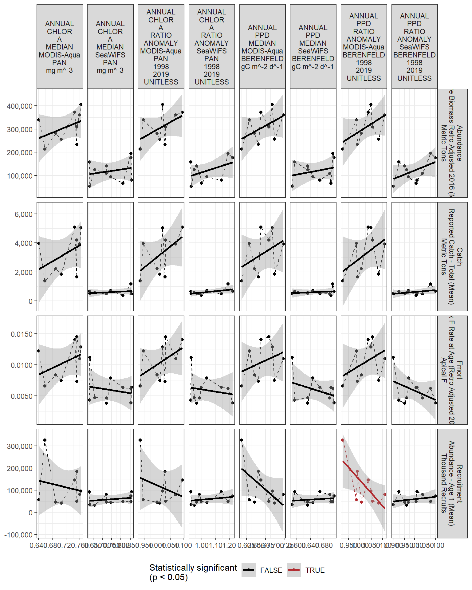

2 Regression analysis
All regressions are simple linear correlations assessed at the p < 0.5 level. Please note, due to the large number of indicators tested, a certain amount of statistically significant results are expected even if there are no underlying mechanistic connections. These correlations do not necessarily imply causation.
2.0.1 Chlorophyll
| Species | Region | Time | Value | Metric | Description | Units | AssessmentYear | max_year |
|---|---|---|---|---|---|---|---|---|
| Acadian redfish | Gulf of Maine / Georges Bank | 1913 | 7.00000e+00 | Catch | Reported Catch - Total (Mean) | Metric Tons | 2017 | 2017 |
| Acadian redfish | Gulf of Maine / Georges Bank | 1914 | 3.00000e+01 | Catch | Reported Catch - Total (Mean) | Metric Tons | 2017 | 2017 |
| Acadian redfish | Gulf of Maine / Georges Bank | 1915 | 4.00000e+01 | Catch | Reported Catch - Total (Mean) | Metric Tons | 2017 | 2017 |
| Acadian redfish | Gulf of Maine / Georges Bank | 1916 | 5.30000e+01 | Catch | Reported Catch - Total (Mean) | Metric Tons | 2017 | 2017 |
| Acadian redfish | Gulf of Maine / Georges Bank | 1917 | 8.20000e+01 | Catch | Reported Catch - Total (Mean) | Metric Tons | 2017 | 2017 |
| Acadian redfish | Gulf of Maine / Georges Bank | 1918 | 7.30000e+01 | Catch | Reported Catch - Total (Mean) | Metric Tons | 2017 | 2017 |
| Acadian redfish | Gulf of Maine / Georges Bank | 1919 | 2.50000e+01 | Catch | Reported Catch - Total (Mean) | Metric Tons | 2017 | 2017 |
| Acadian redfish | Gulf of Maine / Georges Bank | 1920 | 3.10000e+01 | Catch | Reported Catch - Total (Mean) | Metric Tons | 2017 | 2017 |
| Acadian redfish | Gulf of Maine / Georges Bank | 1921 | 1.30000e+01 | Catch | Reported Catch - Total (Mean) | Metric Tons | 2017 | 2017 |
| Acadian redfish | Gulf of Maine / Georges Bank | 1922 | 9.00000e+00 | Catch | Reported Catch - Total (Mean) | Metric Tons | 2017 | 2017 |
| Acadian redfish | Gulf of Maine / Georges Bank | 1923 | 7.00000e+00 | Catch | Reported Catch - Total (Mean) | Metric Tons | 2017 | 2017 |
| Acadian redfish | Gulf of Maine / Georges Bank | 1924 | 4.00000e+01 | Catch | Reported Catch - Total (Mean) | Metric Tons | 2017 | 2017 |
| Acadian redfish | Gulf of Maine / Georges Bank | 1925 | 2.50000e+01 | Catch | Reported Catch - Total (Mean) | Metric Tons | 2017 | 2017 |
| Acadian redfish | Gulf of Maine / Georges Bank | 1926 | 3.00000e+01 | Catch | Reported Catch - Total (Mean) | Metric Tons | 2017 | 2017 |
| Acadian redfish | Gulf of Maine / Georges Bank | 1927 | 3.00000e+01 | Catch | Reported Catch - Total (Mean) | Metric Tons | 2017 | 2017 |
| Acadian redfish | Gulf of Maine / Georges Bank | 1928 | 5.70000e+01 | Catch | Reported Catch - Total (Mean) | Metric Tons | 2017 | 2017 |
| Acadian redfish | Gulf of Maine / Georges Bank | 1929 | 3.40000e+01 | Catch | Reported Catch - Total (Mean) | Metric Tons | 2017 | 2017 |
| Acadian redfish | Gulf of Maine / Georges Bank | 1930 | 5.40000e+01 | Catch | Reported Catch - Total (Mean) | Metric Tons | 2017 | 2017 |
| Acadian redfish | Gulf of Maine / Georges Bank | 1931 | 1.08000e+02 | Catch | Reported Catch - Total (Mean) | Metric Tons | 2017 | 2017 |
| Acadian redfish | Gulf of Maine / Georges Bank | 1932 | 6.00000e+01 | Catch | Reported Catch - Total (Mean) | Metric Tons | 2017 | 2017 |
| Acadian redfish | Gulf of Maine / Georges Bank | 1933 | 1.20000e+02 | Catch | Reported Catch - Total (Mean) | Metric Tons | 2017 | 2017 |
| Acadian redfish | Gulf of Maine / Georges Bank | 1934 | 5.19000e+02 | Catch | Reported Catch - Total (Mean) | Metric Tons | 2017 | 2017 |
| Acadian redfish | Gulf of Maine / Georges Bank | 1935 | 7.54900e+03 | Catch | Reported Catch - Total (Mean) | Metric Tons | 2017 | 2017 |
| Acadian redfish | Gulf of Maine / Georges Bank | 1936 | 2.31620e+04 | Catch | Reported Catch - Total (Mean) | Metric Tons | 2017 | 2017 |
| Acadian redfish | Gulf of Maine / Georges Bank | 1937 | 1.48230e+04 | Catch | Reported Catch - Total (Mean) | Metric Tons | 2017 | 2017 |
| Acadian redfish | Gulf of Maine / Georges Bank | 1938 | 2.06400e+04 | Catch | Reported Catch - Total (Mean) | Metric Tons | 2017 | 2017 |
| Acadian redfish | Gulf of Maine / Georges Bank | 1939 | 2.54060e+04 | Catch | Reported Catch - Total (Mean) | Metric Tons | 2017 | 2017 |
| Acadian redfish | Gulf of Maine / Georges Bank | 1940 | 2.67620e+04 | Catch | Reported Catch - Total (Mean) | Metric Tons | 2017 | 2017 |
| Acadian redfish | Gulf of Maine / Georges Bank | 1941 | 5.07960e+04 | Catch | Reported Catch - Total (Mean) | Metric Tons | 2017 | 2017 |
| Acadian redfish | Gulf of Maine / Georges Bank | 1942 | 5.58920e+04 | Catch | Reported Catch - Total (Mean) | Metric Tons | 2017 | 2017 |
| Acadian redfish | Gulf of Maine / Georges Bank | 1943 | 4.83480e+04 | Catch | Reported Catch - Total (Mean) | Metric Tons | 2017 | 2017 |
| Acadian redfish | Gulf of Maine / Georges Bank | 1944 | 5.04390e+04 | Catch | Reported Catch - Total (Mean) | Metric Tons | 2017 | 2017 |
| Acadian redfish | Gulf of Maine / Georges Bank | 1945 | 3.79120e+04 | Catch | Reported Catch - Total (Mean) | Metric Tons | 2017 | 2017 |
| Acadian redfish | Gulf of Maine / Georges Bank | 1946 | 4.24230e+04 | Catch | Reported Catch - Total (Mean) | Metric Tons | 2017 | 2017 |
| Acadian redfish | Gulf of Maine / Georges Bank | 1947 | 4.01600e+04 | Catch | Reported Catch - Total (Mean) | Metric Tons | 2017 | 2017 |
| Acadian redfish | Gulf of Maine / Georges Bank | 1948 | 4.36310e+04 | Catch | Reported Catch - Total (Mean) | Metric Tons | 2017 | 2017 |
| Acadian redfish | Gulf of Maine / Georges Bank | 1949 | 3.07430e+04 | Catch | Reported Catch - Total (Mean) | Metric Tons | 2017 | 2017 |
| Acadian redfish | Gulf of Maine / Georges Bank | 1950 | 3.43070e+04 | Catch | Reported Catch - Total (Mean) | Metric Tons | 2017 | 2017 |
| Acadian redfish | Gulf of Maine / Georges Bank | 1951 | 3.00770e+04 | Catch | Reported Catch - Total (Mean) | Metric Tons | 2017 | 2017 |
| Acadian redfish | Gulf of Maine / Georges Bank | 1952 | 2.13770e+04 | Catch | Reported Catch - Total (Mean) | Metric Tons | 2017 | 2017 |
| Acadian redfish | Gulf of Maine / Georges Bank | 1953 | 1.67910e+04 | Catch | Reported Catch - Total (Mean) | Metric Tons | 2017 | 2017 |
| Acadian redfish | Gulf of Maine / Georges Bank | 1954 | 1.29880e+04 | Catch | Reported Catch - Total (Mean) | Metric Tons | 2017 | 2017 |
| Acadian redfish | Gulf of Maine / Georges Bank | 1955 | 1.39140e+04 | Catch | Reported Catch - Total (Mean) | Metric Tons | 2017 | 2017 |
| Acadian redfish | Gulf of Maine / Georges Bank | 1956 | 1.43880e+04 | Catch | Reported Catch - Total (Mean) | Metric Tons | 2017 | 2017 |
| Acadian redfish | Gulf of Maine / Georges Bank | 1957 | 1.84900e+04 | Catch | Reported Catch - Total (Mean) | Metric Tons | 2017 | 2017 |
| Acadian redfish | Gulf of Maine / Georges Bank | 1958 | 1.60470e+04 | Catch | Reported Catch - Total (Mean) | Metric Tons | 2017 | 2017 |
| Acadian redfish | Gulf of Maine / Georges Bank | 1959 | 1.55210e+04 | Catch | Reported Catch - Total (Mean) | Metric Tons | 2017 | 2017 |
| Acadian redfish | Gulf of Maine / Georges Bank | 1960 | 1.13750e+04 | Catch | Reported Catch - Total (Mean) | Metric Tons | 2017 | 2017 |
| Acadian redfish | Gulf of Maine / Georges Bank | 1961 | 1.41010e+04 | Catch | Reported Catch - Total (Mean) | Metric Tons | 2017 | 2017 |
| Acadian redfish | Gulf of Maine / Georges Bank | 1962 | 1.41340e+04 | Catch | Reported Catch - Total (Mean) | Metric Tons | 2017 | 2017 |
| Acadian redfish | Gulf of Maine / Georges Bank | 1963 | 1.00460e+04 | Catch | Reported Catch - Total (Mean) | Metric Tons | 2017 | 2017 |
| Acadian redfish | Gulf of Maine / Georges Bank | 1964 | 8.35200e+03 | Catch | Reported Catch - Total (Mean) | Metric Tons | 2017 | 2017 |
| Acadian redfish | Gulf of Maine / Georges Bank | 1965 | 8.05600e+03 | Catch | Reported Catch - Total (Mean) | Metric Tons | 2017 | 2017 |
| Acadian redfish | Gulf of Maine / Georges Bank | 1966 | 8.56600e+03 | Catch | Reported Catch - Total (Mean) | Metric Tons | 2017 | 2017 |
| Acadian redfish | Gulf of Maine / Georges Bank | 1967 | 1.07750e+04 | Catch | Reported Catch - Total (Mean) | Metric Tons | 2017 | 2017 |
| Acadian redfish | Gulf of Maine / Georges Bank | 1968 | 6.77500e+03 | Catch | Reported Catch - Total (Mean) | Metric Tons | 2017 | 2017 |
| Acadian redfish | Gulf of Maine / Georges Bank | 1969 | 1.24120e+04 | Catch | Reported Catch - Total (Mean) | Metric Tons | 2017 | 2017 |
| Acadian redfish | Gulf of Maine / Georges Bank | 1970 | 1.67430e+04 | Catch | Reported Catch - Total (Mean) | Metric Tons | 2017 | 2017 |
| Acadian redfish | Gulf of Maine / Georges Bank | 1971 | 2.00110e+04 | Catch | Reported Catch - Total (Mean) | Metric Tons | 2017 | 2017 |
| Acadian redfish | Gulf of Maine / Georges Bank | 1972 | 1.91100e+04 | Catch | Reported Catch - Total (Mean) | Metric Tons | 2017 | 2017 |
| Acadian redfish | Gulf of Maine / Georges Bank | 1973 | 1.73640e+04 | Catch | Reported Catch - Total (Mean) | Metric Tons | 2017 | 2017 |
| Acadian redfish | Gulf of Maine / Georges Bank | 1974 | 1.04850e+04 | Catch | Reported Catch - Total (Mean) | Metric Tons | 2017 | 2017 |
| Acadian redfish | Gulf of Maine / Georges Bank | 1975 | 1.05710e+04 | Catch | Reported Catch - Total (Mean) | Metric Tons | 2017 | 2017 |
| Acadian redfish | Gulf of Maine / Georges Bank | 1976 | 1.06930e+04 | Catch | Reported Catch - Total (Mean) | Metric Tons | 2017 | 2017 |
| Acadian redfish | Gulf of Maine / Georges Bank | 1977 | 1.32160e+04 | Catch | Reported Catch - Total (Mean) | Metric Tons | 2017 | 2017 |
| Acadian redfish | Gulf of Maine / Georges Bank | 1978 | 1.40760e+04 | Catch | Reported Catch - Total (Mean) | Metric Tons | 2017 | 2017 |
| Acadian redfish | Gulf of Maine / Georges Bank | 1979 | 1.47480e+04 | Catch | Reported Catch - Total (Mean) | Metric Tons | 2017 | 2017 |
| Acadian redfish | Gulf of Maine / Georges Bank | 1980 | 9.89700e+03 | Catch | Reported Catch - Total (Mean) | Metric Tons | 2017 | 2017 |
| Acadian redfish | Gulf of Maine / Georges Bank | 1981 | 7.92000e+03 | Catch | Reported Catch - Total (Mean) | Metric Tons | 2017 | 2017 |
| Acadian redfish | Gulf of Maine / Georges Bank | 1982 | 6.90700e+03 | Catch | Reported Catch - Total (Mean) | Metric Tons | 2017 | 2017 |
| Acadian redfish | Gulf of Maine / Georges Bank | 1983 | 5.33000e+03 | Catch | Reported Catch - Total (Mean) | Metric Tons | 2017 | 2017 |
| Acadian redfish | Gulf of Maine / Georges Bank | 1984 | 4.79300e+03 | Catch | Reported Catch - Total (Mean) | Metric Tons | 2017 | 2017 |
| Acadian redfish | Gulf of Maine / Georges Bank | 1985 | 4.28200e+03 | Catch | Reported Catch - Total (Mean) | Metric Tons | 2017 | 2017 |
| Acadian redfish | Gulf of Maine / Georges Bank | 1986 | 3.05300e+03 | Catch | Reported Catch - Total (Mean) | Metric Tons | 2017 | 2017 |
| Acadian redfish | Gulf of Maine / Georges Bank | 1987 | 1.89500e+03 | Catch | Reported Catch - Total (Mean) | Metric Tons | 2017 | 2017 |
| Acadian redfish | Gulf of Maine / Georges Bank | 1988 | 1.15700e+03 | Catch | Reported Catch - Total (Mean) | Metric Tons | 2017 | 2017 |
| Acadian redfish | Gulf of Maine / Georges Bank | 1989 | 6.72000e+02 | Catch | Reported Catch - Total (Mean) | Metric Tons | 2017 | 2017 |
| Acadian redfish | Gulf of Maine / Georges Bank | 1990 | 6.40000e+02 | Catch | Reported Catch - Total (Mean) | Metric Tons | 2017 | 2017 |
| Acadian redfish | Gulf of Maine / Georges Bank | 1991 | 2.02900e+03 | Catch | Reported Catch - Total (Mean) | Metric Tons | 2017 | 2017 |
| Acadian redfish | Gulf of Maine / Georges Bank | 1992 | 9.67000e+02 | Catch | Reported Catch - Total (Mean) | Metric Tons | 2017 | 2017 |
| Acadian redfish | Gulf of Maine / Georges Bank | 1993 | 8.98000e+02 | Catch | Reported Catch - Total (Mean) | Metric Tons | 2017 | 2017 |
| Acadian redfish | Gulf of Maine / Georges Bank | 1994 | 5.36000e+02 | Catch | Reported Catch - Total (Mean) | Metric Tons | 2017 | 2017 |
| Acadian redfish | Gulf of Maine / Georges Bank | 1995 | 6.43000e+02 | Catch | Reported Catch - Total (Mean) | Metric Tons | 2017 | 2017 |
| Acadian redfish | Gulf of Maine / Georges Bank | 1996 | 7.54000e+02 | Catch | Reported Catch - Total (Mean) | Metric Tons | 2017 | 2017 |
| Acadian redfish | Gulf of Maine / Georges Bank | 1997 | 4.88000e+02 | Catch | Reported Catch - Total (Mean) | Metric Tons | 2017 | 2017 |
| Acadian redfish | Gulf of Maine / Georges Bank | 1998 | 5.12000e+02 | Catch | Reported Catch - Total (Mean) | Metric Tons | 2017 | 2017 |
| Acadian redfish | Gulf of Maine / Georges Bank | 1999 | 3.81000e+02 | Catch | Reported Catch - Total (Mean) | Metric Tons | 2017 | 2017 |
| Acadian redfish | Gulf of Maine / Georges Bank | 2000 | 4.80000e+02 | Catch | Reported Catch - Total (Mean) | Metric Tons | 2017 | 2017 |
| Acadian redfish | Gulf of Maine / Georges Bank | 2001 | 7.18000e+02 | Catch | Reported Catch - Total (Mean) | Metric Tons | 2017 | 2017 |
| Acadian redfish | Gulf of Maine / Georges Bank | 2002 | 4.99000e+02 | Catch | Reported Catch - Total (Mean) | Metric Tons | 2017 | 2017 |
| Acadian redfish | Gulf of Maine / Georges Bank | 2003 | 5.68000e+02 | Catch | Reported Catch - Total (Mean) | Metric Tons | 2017 | 2017 |
| Acadian redfish | Gulf of Maine / Georges Bank | 2004 | 5.20000e+02 | Catch | Reported Catch - Total (Mean) | Metric Tons | 2017 | 2017 |
| Acadian redfish | Gulf of Maine / Georges Bank | 2005 | 6.62000e+02 | Catch | Reported Catch - Total (Mean) | Metric Tons | 2017 | 2017 |
| Acadian redfish | Gulf of Maine / Georges Bank | 2006 | 6.57000e+02 | Catch | Reported Catch - Total (Mean) | Metric Tons | 2017 | 2017 |
| Acadian redfish | Gulf of Maine / Georges Bank | 2007 | 1.16100e+03 | Catch | Reported Catch - Total (Mean) | Metric Tons | 2017 | 2017 |
| Acadian redfish | Gulf of Maine / Georges Bank | 2008 | 1.37300e+03 | Catch | Reported Catch - Total (Mean) | Metric Tons | 2017 | 2017 |
| Acadian redfish | Gulf of Maine / Georges Bank | 2009 | 1.66300e+03 | Catch | Reported Catch - Total (Mean) | Metric Tons | 2017 | 2017 |
| Acadian redfish | Gulf of Maine / Georges Bank | 2010 | 1.85000e+03 | Catch | Reported Catch - Total (Mean) | Metric Tons | 2017 | 2017 |
| Acadian redfish | Gulf of Maine / Georges Bank | 2011 | 2.22700e+03 | Catch | Reported Catch - Total (Mean) | Metric Tons | 2017 | 2017 |
| Acadian redfish | Gulf of Maine / Georges Bank | 2012 | 4.18900e+03 | Catch | Reported Catch - Total (Mean) | Metric Tons | 2017 | 2017 |
| Acadian redfish | Gulf of Maine / Georges Bank | 2013 | 3.96600e+03 | Catch | Reported Catch - Total (Mean) | Metric Tons | 2017 | 2017 |
| Acadian redfish | Gulf of Maine / Georges Bank | 2014 | 5.08300e+03 | Catch | Reported Catch - Total (Mean) | Metric Tons | 2017 | 2017 |
| Acadian redfish | Gulf of Maine / Georges Bank | 2015 | 5.04000e+03 | Catch | Reported Catch - Total (Mean) | Metric Tons | 2017 | 2017 |
| Acadian redfish | Gulf of Maine / Georges Bank | 2016 | 3.92500e+03 | Catch | Reported Catch - Total (Mean) | Metric Tons | 2017 | 2017 |
| Acadian redfish | Gulf of Maine / Georges Bank | 1913 | 1.00000e-05 | Fmort | Max F Rate at Age (Retro Adjusted 2016) | Apical F | 2017 | 2017 |
| Acadian redfish | Gulf of Maine / Georges Bank | 1914 | 4.00000e-05 | Fmort | Max F Rate at Age (Retro Adjusted 2016) | Apical F | 2017 | 2017 |
| Acadian redfish | Gulf of Maine / Georges Bank | 1915 | 6.00000e-05 | Fmort | Max F Rate at Age (Retro Adjusted 2016) | Apical F | 2017 | 2017 |
| Acadian redfish | Gulf of Maine / Georges Bank | 1916 | 8.00000e-05 | Fmort | Max F Rate at Age (Retro Adjusted 2016) | Apical F | 2017 | 2017 |
| Acadian redfish | Gulf of Maine / Georges Bank | 1917 | 1.20000e-04 | Fmort | Max F Rate at Age (Retro Adjusted 2016) | Apical F | 2017 | 2017 |
| Acadian redfish | Gulf of Maine / Georges Bank | 1918 | 1.10000e-04 | Fmort | Max F Rate at Age (Retro Adjusted 2016) | Apical F | 2017 | 2017 |
| Acadian redfish | Gulf of Maine / Georges Bank | 1919 | 4.00000e-05 | Fmort | Max F Rate at Age (Retro Adjusted 2016) | Apical F | 2017 | 2017 |
| Acadian redfish | Gulf of Maine / Georges Bank | 1920 | 5.00000e-05 | Fmort | Max F Rate at Age (Retro Adjusted 2016) | Apical F | 2017 | 2017 |
| Acadian redfish | Gulf of Maine / Georges Bank | 1921 | 2.00000e-05 | Fmort | Max F Rate at Age (Retro Adjusted 2016) | Apical F | 2017 | 2017 |
| Acadian redfish | Gulf of Maine / Georges Bank | 1922 | 1.00000e-05 | Fmort | Max F Rate at Age (Retro Adjusted 2016) | Apical F | 2017 | 2017 |
| Acadian redfish | Gulf of Maine / Georges Bank | 1923 | 1.00000e-05 | Fmort | Max F Rate at Age (Retro Adjusted 2016) | Apical F | 2017 | 2017 |
| Acadian redfish | Gulf of Maine / Georges Bank | 1924 | 6.00000e-05 | Fmort | Max F Rate at Age (Retro Adjusted 2016) | Apical F | 2017 | 2017 |
| Acadian redfish | Gulf of Maine / Georges Bank | 1925 | 4.00000e-05 | Fmort | Max F Rate at Age (Retro Adjusted 2016) | Apical F | 2017 | 2017 |
| Acadian redfish | Gulf of Maine / Georges Bank | 1926 | 4.00000e-05 | Fmort | Max F Rate at Age (Retro Adjusted 2016) | Apical F | 2017 | 2017 |
| Acadian redfish | Gulf of Maine / Georges Bank | 1927 | 4.00000e-05 | Fmort | Max F Rate at Age (Retro Adjusted 2016) | Apical F | 2017 | 2017 |
| Acadian redfish | Gulf of Maine / Georges Bank | 1928 | 9.00000e-05 | Fmort | Max F Rate at Age (Retro Adjusted 2016) | Apical F | 2017 | 2017 |
| Acadian redfish | Gulf of Maine / Georges Bank | 1929 | 5.00000e-05 | Fmort | Max F Rate at Age (Retro Adjusted 2016) | Apical F | 2017 | 2017 |
| Acadian redfish | Gulf of Maine / Georges Bank | 1930 | 8.00000e-05 | Fmort | Max F Rate at Age (Retro Adjusted 2016) | Apical F | 2017 | 2017 |
| Acadian redfish | Gulf of Maine / Georges Bank | 1931 | 1.60000e-04 | Fmort | Max F Rate at Age (Retro Adjusted 2016) | Apical F | 2017 | 2017 |
| Acadian redfish | Gulf of Maine / Georges Bank | 1932 | 9.00000e-05 | Fmort | Max F Rate at Age (Retro Adjusted 2016) | Apical F | 2017 | 2017 |
| Acadian redfish | Gulf of Maine / Georges Bank | 1933 | 1.80000e-04 | Fmort | Max F Rate at Age (Retro Adjusted 2016) | Apical F | 2017 | 2017 |
| Acadian redfish | Gulf of Maine / Georges Bank | 1934 | 7.70000e-04 | Fmort | Max F Rate at Age (Retro Adjusted 2016) | Apical F | 2017 | 2017 |
| Acadian redfish | Gulf of Maine / Georges Bank | 1935 | 1.13000e-02 | Fmort | Max F Rate at Age (Retro Adjusted 2016) | Apical F | 2017 | 2017 |
| Acadian redfish | Gulf of Maine / Georges Bank | 1936 | 3.54400e-02 | Fmort | Max F Rate at Age (Retro Adjusted 2016) | Apical F | 2017 | 2017 |
| Acadian redfish | Gulf of Maine / Georges Bank | 1937 | 2.33200e-02 | Fmort | Max F Rate at Age (Retro Adjusted 2016) | Apical F | 2017 | 2017 |
| Acadian redfish | Gulf of Maine / Georges Bank | 1938 | 3.33300e-02 | Fmort | Max F Rate at Age (Retro Adjusted 2016) | Apical F | 2017 | 2017 |
| Acadian redfish | Gulf of Maine / Georges Bank | 1939 | 4.24800e-02 | Fmort | Max F Rate at Age (Retro Adjusted 2016) | Apical F | 2017 | 2017 |
| Acadian redfish | Gulf of Maine / Georges Bank | 1940 | 4.65900e-02 | Fmort | Max F Rate at Age (Retro Adjusted 2016) | Apical F | 2017 | 2017 |
| Acadian redfish | Gulf of Maine / Georges Bank | 1941 | 9.43100e-02 | Fmort | Max F Rate at Age (Retro Adjusted 2016) | Apical F | 2017 | 2017 |
| Acadian redfish | Gulf of Maine / Georges Bank | 1942 | 1.14190e-01 | Fmort | Max F Rate at Age (Retro Adjusted 2016) | Apical F | 2017 | 2017 |
| Acadian redfish | Gulf of Maine / Georges Bank | 1943 | 1.09230e-01 | Fmort | Max F Rate at Age (Retro Adjusted 2016) | Apical F | 2017 | 2017 |
| Acadian redfish | Gulf of Maine / Georges Bank | 1944 | 1.26310e-01 | Fmort | Max F Rate at Age (Retro Adjusted 2016) | Apical F | 2017 | 2017 |
| Acadian redfish | Gulf of Maine / Georges Bank | 1945 | 1.04630e-01 | Fmort | Max F Rate at Age (Retro Adjusted 2016) | Apical F | 2017 | 2017 |
| Acadian redfish | Gulf of Maine / Georges Bank | 1946 | 1.28560e-01 | Fmort | Max F Rate at Age (Retro Adjusted 2016) | Apical F | 2017 | 2017 |
| Acadian redfish | Gulf of Maine / Georges Bank | 1947 | 1.35000e-01 | Fmort | Max F Rate at Age (Retro Adjusted 2016) | Apical F | 2017 | 2017 |
| Acadian redfish | Gulf of Maine / Georges Bank | 1948 | 1.64650e-01 | Fmort | Max F Rate at Age (Retro Adjusted 2016) | Apical F | 2017 | 2017 |
| Acadian redfish | Gulf of Maine / Georges Bank | 1949 | 1.29220e-01 | Fmort | Max F Rate at Age (Retro Adjusted 2016) | Apical F | 2017 | 2017 |
| Acadian redfish | Gulf of Maine / Georges Bank | 1950 | 1.59150e-01 | Fmort | Max F Rate at Age (Retro Adjusted 2016) | Apical F | 2017 | 2017 |
| Acadian redfish | Gulf of Maine / Georges Bank | 1951 | 1.55060e-01 | Fmort | Max F Rate at Age (Retro Adjusted 2016) | Apical F | 2017 | 2017 |
| Acadian redfish | Gulf of Maine / Georges Bank | 1952 | 1.19490e-01 | Fmort | Max F Rate at Age (Retro Adjusted 2016) | Apical F | 2017 | 2017 |
| Acadian redfish | Gulf of Maine / Georges Bank | 1953 | 9.85700e-02 | Fmort | Max F Rate at Age (Retro Adjusted 2016) | Apical F | 2017 | 2017 |
| Acadian redfish | Gulf of Maine / Georges Bank | 1954 | 7.82400e-02 | Fmort | Max F Rate at Age (Retro Adjusted 2016) | Apical F | 2017 | 2017 |
| Acadian redfish | Gulf of Maine / Georges Bank | 1955 | 8.52400e-02 | Fmort | Max F Rate at Age (Retro Adjusted 2016) | Apical F | 2017 | 2017 |
| Acadian redfish | Gulf of Maine / Georges Bank | 1956 | 9.00800e-02 | Fmort | Max F Rate at Age (Retro Adjusted 2016) | Apical F | 2017 | 2017 |
| Acadian redfish | Gulf of Maine / Georges Bank | 1957 | 1.20230e-01 | Fmort | Max F Rate at Age (Retro Adjusted 2016) | Apical F | 2017 | 2017 |
| Acadian redfish | Gulf of Maine / Georges Bank | 1958 | 1.09120e-01 | Fmort | Max F Rate at Age (Retro Adjusted 2016) | Apical F | 2017 | 2017 |
| Acadian redfish | Gulf of Maine / Georges Bank | 1959 | 1.09430e-01 | Fmort | Max F Rate at Age (Retro Adjusted 2016) | Apical F | 2017 | 2017 |
| Acadian redfish | Gulf of Maine / Georges Bank | 1960 | 8.20300e-02 | Fmort | Max F Rate at Age (Retro Adjusted 2016) | Apical F | 2017 | 2017 |
| Acadian redfish | Gulf of Maine / Georges Bank | 1961 | 1.03490e-01 | Fmort | Max F Rate at Age (Retro Adjusted 2016) | Apical F | 2017 | 2017 |
| Acadian redfish | Gulf of Maine / Georges Bank | 1962 | 1.06360e-01 | Fmort | Max F Rate at Age (Retro Adjusted 2016) | Apical F | 2017 | 2017 |
| Acadian redfish | Gulf of Maine / Georges Bank | 1963 | 7.65000e-02 | Fmort | Max F Rate at Age (Retro Adjusted 2016) | Apical F | 2017 | 2017 |
| Acadian redfish | Gulf of Maine / Georges Bank | 1964 | 6.30300e-02 | Fmort | Max F Rate at Age (Retro Adjusted 2016) | Apical F | 2017 | 2017 |
| Acadian redfish | Gulf of Maine / Georges Bank | 1965 | 5.97600e-02 | Fmort | Max F Rate at Age (Retro Adjusted 2016) | Apical F | 2017 | 2017 |
| Acadian redfish | Gulf of Maine / Georges Bank | 1966 | 6.25100e-02 | Fmort | Max F Rate at Age (Retro Adjusted 2016) | Apical F | 2017 | 2017 |
| Acadian redfish | Gulf of Maine / Georges Bank | 1967 | 7.81100e-02 | Fmort | Max F Rate at Age (Retro Adjusted 2016) | Apical F | 2017 | 2017 |
| Acadian redfish | Gulf of Maine / Georges Bank | 1968 | 4.85600e-02 | Fmort | Max F Rate at Age (Retro Adjusted 2016) | Apical F | 2017 | 2017 |
| Acadian redfish | Gulf of Maine / Georges Bank | 1969 | 8.84000e-02 | Fmort | Max F Rate at Age (Retro Adjusted 2016) | Apical F | 2017 | 2017 |
| Acadian redfish | Gulf of Maine / Georges Bank | 1970 | 1.22960e-01 | Fmort | Max F Rate at Age (Retro Adjusted 2016) | Apical F | 2017 | 2017 |
| Acadian redfish | Gulf of Maine / Georges Bank | 1971 | 1.58820e-01 | Fmort | Max F Rate at Age (Retro Adjusted 2016) | Apical F | 2017 | 2017 |
| Acadian redfish | Gulf of Maine / Georges Bank | 1972 | 1.68490e-01 | Fmort | Max F Rate at Age (Retro Adjusted 2016) | Apical F | 2017 | 2017 |
| Acadian redfish | Gulf of Maine / Georges Bank | 1973 | 1.73930e-01 | Fmort | Max F Rate at Age (Retro Adjusted 2016) | Apical F | 2017 | 2017 |
| Acadian redfish | Gulf of Maine / Georges Bank | 1974 | 1.18360e-01 | Fmort | Max F Rate at Age (Retro Adjusted 2016) | Apical F | 2017 | 2017 |
| Acadian redfish | Gulf of Maine / Georges Bank | 1975 | 1.33140e-01 | Fmort | Max F Rate at Age (Retro Adjusted 2016) | Apical F | 2017 | 2017 |
| Acadian redfish | Gulf of Maine / Georges Bank | 1976 | 1.49670e-01 | Fmort | Max F Rate at Age (Retro Adjusted 2016) | Apical F | 2017 | 2017 |
| Acadian redfish | Gulf of Maine / Georges Bank | 1977 | 1.99290e-01 | Fmort | Max F Rate at Age (Retro Adjusted 2016) | Apical F | 2017 | 2017 |
| Acadian redfish | Gulf of Maine / Georges Bank | 1978 | 2.41960e-01 | Fmort | Max F Rate at Age (Retro Adjusted 2016) | Apical F | 2017 | 2017 |
| Acadian redfish | Gulf of Maine / Georges Bank | 1979 | 3.03810e-01 | Fmort | Max F Rate at Age (Retro Adjusted 2016) | Apical F | 2017 | 2017 |
| Acadian redfish | Gulf of Maine / Georges Bank | 1980 | 2.30490e-01 | Fmort | Max F Rate at Age (Retro Adjusted 2016) | Apical F | 2017 | 2017 |
| Acadian redfish | Gulf of Maine / Georges Bank | 1981 | 2.18350e-01 | Fmort | Max F Rate at Age (Retro Adjusted 2016) | Apical F | 2017 | 2017 |
| Acadian redfish | Gulf of Maine / Georges Bank | 1982 | 2.31720e-01 | Fmort | Max F Rate at Age (Retro Adjusted 2016) | Apical F | 2017 | 2017 |
| Acadian redfish | Gulf of Maine / Georges Bank | 1983 | 2.15130e-01 | Fmort | Max F Rate at Age (Retro Adjusted 2016) | Apical F | 2017 | 2017 |
| Acadian redfish | Gulf of Maine / Georges Bank | 1984 | 2.22350e-01 | Fmort | Max F Rate at Age (Retro Adjusted 2016) | Apical F | 2017 | 2017 |
| Acadian redfish | Gulf of Maine / Georges Bank | 1985 | 2.31770e-01 | Fmort | Max F Rate at Age (Retro Adjusted 2016) | Apical F | 2017 | 2017 |
| Acadian redfish | Gulf of Maine / Georges Bank | 1986 | 1.87770e-01 | Fmort | Max F Rate at Age (Retro Adjusted 2016) | Apical F | 2017 | 2017 |
| Acadian redfish | Gulf of Maine / Georges Bank | 1987 | 1.16900e-01 | Fmort | Max F Rate at Age (Retro Adjusted 2016) | Apical F | 2017 | 2017 |
| Acadian redfish | Gulf of Maine / Georges Bank | 1988 | 6.99400e-02 | Fmort | Max F Rate at Age (Retro Adjusted 2016) | Apical F | 2017 | 2017 |
| Acadian redfish | Gulf of Maine / Georges Bank | 1989 | 3.89300e-02 | Fmort | Max F Rate at Age (Retro Adjusted 2016) | Apical F | 2017 | 2017 |
| Acadian redfish | Gulf of Maine / Georges Bank | 1990 | 3.39500e-02 | Fmort | Max F Rate at Age (Retro Adjusted 2016) | Apical F | 2017 | 2017 |
| Acadian redfish | Gulf of Maine / Georges Bank | 1991 | 5.67820e-01 | Fmort | Max F Rate at Age (Retro Adjusted 2016) | Apical F | 2017 | 2017 |
| Acadian redfish | Gulf of Maine / Georges Bank | 1992 | 6.51400e-02 | Fmort | Max F Rate at Age (Retro Adjusted 2016) | Apical F | 2017 | 2017 |
| Acadian redfish | Gulf of Maine / Georges Bank | 1993 | 5.37700e-02 | Fmort | Max F Rate at Age (Retro Adjusted 2016) | Apical F | 2017 | 2017 |
| Acadian redfish | Gulf of Maine / Georges Bank | 1994 | 3.06000e-02 | Fmort | Max F Rate at Age (Retro Adjusted 2016) | Apical F | 2017 | 2017 |
| Acadian redfish | Gulf of Maine / Georges Bank | 1995 | 2.83800e-02 | Fmort | Max F Rate at Age (Retro Adjusted 2016) | Apical F | 2017 | 2017 |
| Acadian redfish | Gulf of Maine / Georges Bank | 1996 | 2.78600e-02 | Fmort | Max F Rate at Age (Retro Adjusted 2016) | Apical F | 2017 | 2017 |
| Acadian redfish | Gulf of Maine / Georges Bank | 1997 | 1.35900e-02 | Fmort | Max F Rate at Age (Retro Adjusted 2016) | Apical F | 2017 | 2017 |
| Acadian redfish | Gulf of Maine / Georges Bank | 1998 | 1.12000e-02 | Fmort | Max F Rate at Age (Retro Adjusted 2016) | Apical F | 2017 | 2017 |
| Acadian redfish | Gulf of Maine / Georges Bank | 1999 | 6.32000e-03 | Fmort | Max F Rate at Age (Retro Adjusted 2016) | Apical F | 2017 | 2017 |
| Acadian redfish | Gulf of Maine / Georges Bank | 2000 | 6.37000e-03 | Fmort | Max F Rate at Age (Retro Adjusted 2016) | Apical F | 2017 | 2017 |
| Acadian redfish | Gulf of Maine / Georges Bank | 2001 | 7.84000e-03 | Fmort | Max F Rate at Age (Retro Adjusted 2016) | Apical F | 2017 | 2017 |
| Acadian redfish | Gulf of Maine / Georges Bank | 2002 | 4.67000e-03 | Fmort | Max F Rate at Age (Retro Adjusted 2016) | Apical F | 2017 | 2017 |
| Acadian redfish | Gulf of Maine / Georges Bank | 2003 | 4.68000e-03 | Fmort | Max F Rate at Age (Retro Adjusted 2016) | Apical F | 2017 | 2017 |
| Acadian redfish | Gulf of Maine / Georges Bank | 2004 | 3.81000e-03 | Fmort | Max F Rate at Age (Retro Adjusted 2016) | Apical F | 2017 | 2017 |
| Acadian redfish | Gulf of Maine / Georges Bank | 2005 | 4.31000e-03 | Fmort | Max F Rate at Age (Retro Adjusted 2016) | Apical F | 2017 | 2017 |
| Acadian redfish | Gulf of Maine / Georges Bank | 2006 | 3.85000e-03 | Fmort | Max F Rate at Age (Retro Adjusted 2016) | Apical F | 2017 | 2017 |
| Acadian redfish | Gulf of Maine / Georges Bank | 2007 | 6.16000e-03 | Fmort | Max F Rate at Age (Retro Adjusted 2016) | Apical F | 2017 | 2017 |
| Acadian redfish | Gulf of Maine / Georges Bank | 2008 | 6.56000e-03 | Fmort | Max F Rate at Age (Retro Adjusted 2016) | Apical F | 2017 | 2017 |
| Acadian redfish | Gulf of Maine / Georges Bank | 2009 | 7.33000e-03 | Fmort | Max F Rate at Age (Retro Adjusted 2016) | Apical F | 2017 | 2017 |
| Acadian redfish | Gulf of Maine / Georges Bank | 2010 | 7.47000e-03 | Fmort | Max F Rate at Age (Retro Adjusted 2016) | Apical F | 2017 | 2017 |
| Acadian redfish | Gulf of Maine / Georges Bank | 2011 | 8.36000e-03 | Fmort | Max F Rate at Age (Retro Adjusted 2016) | Apical F | 2017 | 2017 |
| Acadian redfish | Gulf of Maine / Georges Bank | 2012 | 1.45100e-02 | Fmort | Max F Rate at Age (Retro Adjusted 2016) | Apical F | 2017 | 2017 |
| Acadian redfish | Gulf of Maine / Georges Bank | 2013 | 1.22100e-02 | Fmort | Max F Rate at Age (Retro Adjusted 2016) | Apical F | 2017 | 2017 |
| Acadian redfish | Gulf of Maine / Georges Bank | 2014 | 1.40700e-02 | Fmort | Max F Rate at Age (Retro Adjusted 2016) | Apical F | 2017 | 2017 |
| Acadian redfish | Gulf of Maine / Georges Bank | 2015 | 1.28500e-02 | Fmort | Max F Rate at Age (Retro Adjusted 2016) | Apical F | 2017 | 2017 |
| Acadian redfish | Gulf of Maine / Georges Bank | 2016 | 1.10000e-02 | Fmort | Max F Rate at Age (Retro Adjusted 2016) | Apical F | 2017 | 2017 |
| Acadian redfish | Gulf of Maine / Georges Bank | 1913 | 5.35980e+04 | Recruitment | Abundance - Age 1 (Mean) | Thousand Recruits | 2017 | 2017 |
| Acadian redfish | Gulf of Maine / Georges Bank | 1914 | 5.48260e+04 | Recruitment | Abundance - Age 1 (Mean) | Thousand Recruits | 2017 | 2017 |
| Acadian redfish | Gulf of Maine / Georges Bank | 1915 | 5.48260e+04 | Recruitment | Abundance - Age 1 (Mean) | Thousand Recruits | 2017 | 2017 |
| Acadian redfish | Gulf of Maine / Georges Bank | 1916 | 5.48260e+04 | Recruitment | Abundance - Age 1 (Mean) | Thousand Recruits | 2017 | 2017 |
| Acadian redfish | Gulf of Maine / Georges Bank | 1917 | 5.48270e+04 | Recruitment | Abundance - Age 1 (Mean) | Thousand Recruits | 2017 | 2017 |
| Acadian redfish | Gulf of Maine / Georges Bank | 1918 | 5.48270e+04 | Recruitment | Abundance - Age 1 (Mean) | Thousand Recruits | 2017 | 2017 |
| Acadian redfish | Gulf of Maine / Georges Bank | 1919 | 5.48280e+04 | Recruitment | Abundance - Age 1 (Mean) | Thousand Recruits | 2017 | 2017 |
| Acadian redfish | Gulf of Maine / Georges Bank | 1920 | 5.48310e+04 | Recruitment | Abundance - Age 1 (Mean) | Thousand Recruits | 2017 | 2017 |
| Acadian redfish | Gulf of Maine / Georges Bank | 1921 | 5.48350e+04 | Recruitment | Abundance - Age 1 (Mean) | Thousand Recruits | 2017 | 2017 |
| Acadian redfish | Gulf of Maine / Georges Bank | 1922 | 5.48400e+04 | Recruitment | Abundance - Age 1 (Mean) | Thousand Recruits | 2017 | 2017 |
| Acadian redfish | Gulf of Maine / Georges Bank | 1923 | 5.48460e+04 | Recruitment | Abundance - Age 1 (Mean) | Thousand Recruits | 2017 | 2017 |
| Acadian redfish | Gulf of Maine / Georges Bank | 1924 | 5.48540e+04 | Recruitment | Abundance - Age 1 (Mean) | Thousand Recruits | 2017 | 2017 |
| Acadian redfish | Gulf of Maine / Georges Bank | 1925 | 5.48620e+04 | Recruitment | Abundance - Age 1 (Mean) | Thousand Recruits | 2017 | 2017 |
| Acadian redfish | Gulf of Maine / Georges Bank | 1926 | 5.48710e+04 | Recruitment | Abundance - Age 1 (Mean) | Thousand Recruits | 2017 | 2017 |
| Acadian redfish | Gulf of Maine / Georges Bank | 1927 | 5.48800e+04 | Recruitment | Abundance - Age 1 (Mean) | Thousand Recruits | 2017 | 2017 |
| Acadian redfish | Gulf of Maine / Georges Bank | 1928 | 5.48900e+04 | Recruitment | Abundance - Age 1 (Mean) | Thousand Recruits | 2017 | 2017 |
| Acadian redfish | Gulf of Maine / Georges Bank | 1929 | 5.48990e+04 | Recruitment | Abundance - Age 1 (Mean) | Thousand Recruits | 2017 | 2017 |
| Acadian redfish | Gulf of Maine / Georges Bank | 1930 | 5.49080e+04 | Recruitment | Abundance - Age 1 (Mean) | Thousand Recruits | 2017 | 2017 |
| Acadian redfish | Gulf of Maine / Georges Bank | 1931 | 5.49160e+04 | Recruitment | Abundance - Age 1 (Mean) | Thousand Recruits | 2017 | 2017 |
| Acadian redfish | Gulf of Maine / Georges Bank | 1932 | 5.49240e+04 | Recruitment | Abundance - Age 1 (Mean) | Thousand Recruits | 2017 | 2017 |
| Acadian redfish | Gulf of Maine / Georges Bank | 1933 | 5.49310e+04 | Recruitment | Abundance - Age 1 (Mean) | Thousand Recruits | 2017 | 2017 |
| Acadian redfish | Gulf of Maine / Georges Bank | 1934 | 5.49380e+04 | Recruitment | Abundance - Age 1 (Mean) | Thousand Recruits | 2017 | 2017 |
| Acadian redfish | Gulf of Maine / Georges Bank | 1935 | 5.49390e+04 | Recruitment | Abundance - Age 1 (Mean) | Thousand Recruits | 2017 | 2017 |
| Acadian redfish | Gulf of Maine / Georges Bank | 1936 | 5.48880e+04 | Recruitment | Abundance - Age 1 (Mean) | Thousand Recruits | 2017 | 2017 |
| Acadian redfish | Gulf of Maine / Georges Bank | 1937 | 5.46510e+04 | Recruitment | Abundance - Age 1 (Mean) | Thousand Recruits | 2017 | 2017 |
| Acadian redfish | Gulf of Maine / Georges Bank | 1938 | 5.43020e+04 | Recruitment | Abundance - Age 1 (Mean) | Thousand Recruits | 2017 | 2017 |
| Acadian redfish | Gulf of Maine / Georges Bank | 1939 | 5.39810e+04 | Recruitment | Abundance - Age 1 (Mean) | Thousand Recruits | 2017 | 2017 |
| Acadian redfish | Gulf of Maine / Georges Bank | 1940 | 5.35360e+04 | Recruitment | Abundance - Age 1 (Mean) | Thousand Recruits | 2017 | 2017 |
| Acadian redfish | Gulf of Maine / Georges Bank | 1941 | 5.29900e+04 | Recruitment | Abundance - Age 1 (Mean) | Thousand Recruits | 2017 | 2017 |
| Acadian redfish | Gulf of Maine / Georges Bank | 1942 | 5.21510e+04 | Recruitment | Abundance - Age 1 (Mean) | Thousand Recruits | 2017 | 2017 |
| Acadian redfish | Gulf of Maine / Georges Bank | 1943 | 5.08050e+04 | Recruitment | Abundance - Age 1 (Mean) | Thousand Recruits | 2017 | 2017 |
| Acadian redfish | Gulf of Maine / Georges Bank | 1944 | 4.92660e+04 | Recruitment | Abundance - Age 1 (Mean) | Thousand Recruits | 2017 | 2017 |
| Acadian redfish | Gulf of Maine / Georges Bank | 1945 | 4.74740e+04 | Recruitment | Abundance - Age 1 (Mean) | Thousand Recruits | 2017 | 2017 |
| Acadian redfish | Gulf of Maine / Georges Bank | 1946 | 4.57350e+04 | Recruitment | Abundance - Age 1 (Mean) | Thousand Recruits | 2017 | 2017 |
| Acadian redfish | Gulf of Maine / Georges Bank | 1947 | 4.52150e+04 | Recruitment | Abundance - Age 1 (Mean) | Thousand Recruits | 2017 | 2017 |
| Acadian redfish | Gulf of Maine / Georges Bank | 1948 | 4.24760e+04 | Recruitment | Abundance - Age 1 (Mean) | Thousand Recruits | 2017 | 2017 |
| Acadian redfish | Gulf of Maine / Georges Bank | 1949 | 4.13070e+04 | Recruitment | Abundance - Age 1 (Mean) | Thousand Recruits | 2017 | 2017 |
| Acadian redfish | Gulf of Maine / Georges Bank | 1950 | 4.02000e+04 | Recruitment | Abundance - Age 1 (Mean) | Thousand Recruits | 2017 | 2017 |
| Acadian redfish | Gulf of Maine / Georges Bank | 1951 | 3.86820e+04 | Recruitment | Abundance - Age 1 (Mean) | Thousand Recruits | 2017 | 2017 |
| Acadian redfish | Gulf of Maine / Georges Bank | 1952 | 3.55790e+04 | Recruitment | Abundance - Age 1 (Mean) | Thousand Recruits | 2017 | 2017 |
| Acadian redfish | Gulf of Maine / Georges Bank | 1953 | 3.67430e+04 | Recruitment | Abundance - Age 1 (Mean) | Thousand Recruits | 2017 | 2017 |
| Acadian redfish | Gulf of Maine / Georges Bank | 1954 | 4.33380e+04 | Recruitment | Abundance - Age 1 (Mean) | Thousand Recruits | 2017 | 2017 |
| Acadian redfish | Gulf of Maine / Georges Bank | 1955 | 3.63060e+04 | Recruitment | Abundance - Age 1 (Mean) | Thousand Recruits | 2017 | 2017 |
| Acadian redfish | Gulf of Maine / Georges Bank | 1956 | 3.66490e+04 | Recruitment | Abundance - Age 1 (Mean) | Thousand Recruits | 2017 | 2017 |
| Acadian redfish | Gulf of Maine / Georges Bank | 1957 | 3.67260e+04 | Recruitment | Abundance - Age 1 (Mean) | Thousand Recruits | 2017 | 2017 |
| Acadian redfish | Gulf of Maine / Georges Bank | 1958 | 3.98540e+04 | Recruitment | Abundance - Age 1 (Mean) | Thousand Recruits | 2017 | 2017 |
| Acadian redfish | Gulf of Maine / Georges Bank | 1959 | 3.52120e+04 | Recruitment | Abundance - Age 1 (Mean) | Thousand Recruits | 2017 | 2017 |
| Acadian redfish | Gulf of Maine / Georges Bank | 1960 | 3.91640e+04 | Recruitment | Abundance - Age 1 (Mean) | Thousand Recruits | 2017 | 2017 |
| Acadian redfish | Gulf of Maine / Georges Bank | 1961 | 2.91410e+04 | Recruitment | Abundance - Age 1 (Mean) | Thousand Recruits | 2017 | 2017 |
| Acadian redfish | Gulf of Maine / Georges Bank | 1962 | 4.21340e+04 | Recruitment | Abundance - Age 1 (Mean) | Thousand Recruits | 2017 | 2017 |
| Acadian redfish | Gulf of Maine / Georges Bank | 1963 | 2.61980e+04 | Recruitment | Abundance - Age 1 (Mean) | Thousand Recruits | 2017 | 2017 |
| Acadian redfish | Gulf of Maine / Georges Bank | 1964 | 4.77080e+04 | Recruitment | Abundance - Age 1 (Mean) | Thousand Recruits | 2017 | 2017 |
| Acadian redfish | Gulf of Maine / Georges Bank | 1965 | 3.23150e+04 | Recruitment | Abundance - Age 1 (Mean) | Thousand Recruits | 2017 | 2017 |
| Acadian redfish | Gulf of Maine / Georges Bank | 1966 | 1.81610e+04 | Recruitment | Abundance - Age 1 (Mean) | Thousand Recruits | 2017 | 2017 |
| Acadian redfish | Gulf of Maine / Georges Bank | 1967 | 4.77900e+03 | Recruitment | Abundance - Age 1 (Mean) | Thousand Recruits | 2017 | 2017 |
| Acadian redfish | Gulf of Maine / Georges Bank | 1968 | 3.17800e+03 | Recruitment | Abundance - Age 1 (Mean) | Thousand Recruits | 2017 | 2017 |
| Acadian redfish | Gulf of Maine / Georges Bank | 1969 | 1.60200e+03 | Recruitment | Abundance - Age 1 (Mean) | Thousand Recruits | 2017 | 2017 |
| Acadian redfish | Gulf of Maine / Georges Bank | 1970 | 1.40900e+03 | Recruitment | Abundance - Age 1 (Mean) | Thousand Recruits | 2017 | 2017 |
| Acadian redfish | Gulf of Maine / Georges Bank | 1971 | 1.82700e+03 | Recruitment | Abundance - Age 1 (Mean) | Thousand Recruits | 2017 | 2017 |
| Acadian redfish | Gulf of Maine / Georges Bank | 1972 | 1.11985e+05 | Recruitment | Abundance - Age 1 (Mean) | Thousand Recruits | 2017 | 2017 |
| Acadian redfish | Gulf of Maine / Georges Bank | 1973 | 3.65000e+03 | Recruitment | Abundance - Age 1 (Mean) | Thousand Recruits | 2017 | 2017 |
| Acadian redfish | Gulf of Maine / Georges Bank | 1974 | 2.01300e+03 | Recruitment | Abundance - Age 1 (Mean) | Thousand Recruits | 2017 | 2017 |
| Acadian redfish | Gulf of Maine / Georges Bank | 1975 | 1.13800e+03 | Recruitment | Abundance - Age 1 (Mean) | Thousand Recruits | 2017 | 2017 |
| Acadian redfish | Gulf of Maine / Georges Bank | 1976 | 8.61000e+02 | Recruitment | Abundance - Age 1 (Mean) | Thousand Recruits | 2017 | 2017 |
| Acadian redfish | Gulf of Maine / Georges Bank | 1977 | 8.45000e+02 | Recruitment | Abundance - Age 1 (Mean) | Thousand Recruits | 2017 | 2017 |
| Acadian redfish | Gulf of Maine / Georges Bank | 1978 | 1.13900e+03 | Recruitment | Abundance - Age 1 (Mean) | Thousand Recruits | 2017 | 2017 |
| Acadian redfish | Gulf of Maine / Georges Bank | 1979 | 2.55280e+04 | Recruitment | Abundance - Age 1 (Mean) | Thousand Recruits | 2017 | 2017 |
| Acadian redfish | Gulf of Maine / Georges Bank | 1980 | 1.06500e+03 | Recruitment | Abundance - Age 1 (Mean) | Thousand Recruits | 2017 | 2017 |
| Acadian redfish | Gulf of Maine / Georges Bank | 1981 | 1.59600e+03 | Recruitment | Abundance - Age 1 (Mean) | Thousand Recruits | 2017 | 2017 |
| Acadian redfish | Gulf of Maine / Georges Bank | 1982 | 9.25400e+03 | Recruitment | Abundance - Age 1 (Mean) | Thousand Recruits | 2017 | 2017 |
| Acadian redfish | Gulf of Maine / Georges Bank | 1983 | 1.20560e+04 | Recruitment | Abundance - Age 1 (Mean) | Thousand Recruits | 2017 | 2017 |
| Acadian redfish | Gulf of Maine / Georges Bank | 1984 | 3.69900e+03 | Recruitment | Abundance - Age 1 (Mean) | Thousand Recruits | 2017 | 2017 |
| Acadian redfish | Gulf of Maine / Georges Bank | 1985 | 5.43700e+03 | Recruitment | Abundance - Age 1 (Mean) | Thousand Recruits | 2017 | 2017 |
| Acadian redfish | Gulf of Maine / Georges Bank | 1986 | 1.73320e+04 | Recruitment | Abundance - Age 1 (Mean) | Thousand Recruits | 2017 | 2017 |
| Acadian redfish | Gulf of Maine / Georges Bank | 1987 | 1.54070e+04 | Recruitment | Abundance - Age 1 (Mean) | Thousand Recruits | 2017 | 2017 |
| Acadian redfish | Gulf of Maine / Georges Bank | 1988 | 1.09260e+04 | Recruitment | Abundance - Age 1 (Mean) | Thousand Recruits | 2017 | 2017 |
| Acadian redfish | Gulf of Maine / Georges Bank | 1989 | 1.20730e+04 | Recruitment | Abundance - Age 1 (Mean) | Thousand Recruits | 2017 | 2017 |
| Acadian redfish | Gulf of Maine / Georges Bank | 1990 | 1.27890e+04 | Recruitment | Abundance - Age 1 (Mean) | Thousand Recruits | 2017 | 2017 |
| Acadian redfish | Gulf of Maine / Georges Bank | 1991 | 1.57160e+04 | Recruitment | Abundance - Age 1 (Mean) | Thousand Recruits | 2017 | 2017 |
| Acadian redfish | Gulf of Maine / Georges Bank | 1992 | 6.47110e+04 | Recruitment | Abundance - Age 1 (Mean) | Thousand Recruits | 2017 | 2017 |
| Acadian redfish | Gulf of Maine / Georges Bank | 1993 | 8.31970e+04 | Recruitment | Abundance - Age 1 (Mean) | Thousand Recruits | 2017 | 2017 |
| Acadian redfish | Gulf of Maine / Georges Bank | 1994 | 3.84450e+04 | Recruitment | Abundance - Age 1 (Mean) | Thousand Recruits | 2017 | 2017 |
| Acadian redfish | Gulf of Maine / Georges Bank | 1995 | 4.25970e+04 | Recruitment | Abundance - Age 1 (Mean) | Thousand Recruits | 2017 | 2017 |
| Acadian redfish | Gulf of Maine / Georges Bank | 1996 | 3.16910e+04 | Recruitment | Abundance - Age 1 (Mean) | Thousand Recruits | 2017 | 2017 |
| Acadian redfish | Gulf of Maine / Georges Bank | 1997 | 2.80350e+04 | Recruitment | Abundance - Age 1 (Mean) | Thousand Recruits | 2017 | 2017 |
| Acadian redfish | Gulf of Maine / Georges Bank | 1998 | 3.48790e+04 | Recruitment | Abundance - Age 1 (Mean) | Thousand Recruits | 2017 | 2017 |
| Acadian redfish | Gulf of Maine / Georges Bank | 1999 | 4.85250e+04 | Recruitment | Abundance - Age 1 (Mean) | Thousand Recruits | 2017 | 2017 |
| Acadian redfish | Gulf of Maine / Georges Bank | 2000 | 9.21160e+04 | Recruitment | Abundance - Age 1 (Mean) | Thousand Recruits | 2017 | 2017 |
| Acadian redfish | Gulf of Maine / Georges Bank | 2001 | 4.35360e+04 | Recruitment | Abundance - Age 1 (Mean) | Thousand Recruits | 2017 | 2017 |
| Acadian redfish | Gulf of Maine / Georges Bank | 2002 | 7.95730e+04 | Recruitment | Abundance - Age 1 (Mean) | Thousand Recruits | 2017 | 2017 |
| Acadian redfish | Gulf of Maine / Georges Bank | 2003 | 3.08410e+04 | Recruitment | Abundance - Age 1 (Mean) | Thousand Recruits | 2017 | 2017 |
| Acadian redfish | Gulf of Maine / Georges Bank | 2004 | 4.47630e+04 | Recruitment | Abundance - Age 1 (Mean) | Thousand Recruits | 2017 | 2017 |
| Acadian redfish | Gulf of Maine / Georges Bank | 2005 | 9.28570e+04 | Recruitment | Abundance - Age 1 (Mean) | Thousand Recruits | 2017 | 2017 |
| Acadian redfish | Gulf of Maine / Georges Bank | 2006 | 7.34290e+04 | Recruitment | Abundance - Age 1 (Mean) | Thousand Recruits | 2017 | 2017 |
| Acadian redfish | Gulf of Maine / Georges Bank | 2007 | 4.87050e+04 | Recruitment | Abundance - Age 1 (Mean) | Thousand Recruits | 2017 | 2017 |
| Acadian redfish | Gulf of Maine / Georges Bank | 2008 | 3.25333e+05 | Recruitment | Abundance - Age 1 (Mean) | Thousand Recruits | 2017 | 2017 |
| Acadian redfish | Gulf of Maine / Georges Bank | 2009 | 1.84196e+05 | Recruitment | Abundance - Age 1 (Mean) | Thousand Recruits | 2017 | 2017 |
| Acadian redfish | Gulf of Maine / Georges Bank | 2010 | 4.06500e+04 | Recruitment | Abundance - Age 1 (Mean) | Thousand Recruits | 2017 | 2017 |
| Acadian redfish | Gulf of Maine / Georges Bank | 2011 | 4.57190e+04 | Recruitment | Abundance - Age 1 (Mean) | Thousand Recruits | 2017 | 2017 |
| Acadian redfish | Gulf of Maine / Georges Bank | 2012 | 4.96950e+04 | Recruitment | Abundance - Age 1 (Mean) | Thousand Recruits | 2017 | 2017 |
| Acadian redfish | Gulf of Maine / Georges Bank | 2013 | 5.63790e+04 | Recruitment | Abundance - Age 1 (Mean) | Thousand Recruits | 2017 | 2017 |
| Acadian redfish | Gulf of Maine / Georges Bank | 2014 | 1.45953e+05 | Recruitment | Abundance - Age 1 (Mean) | Thousand Recruits | 2017 | 2017 |
| Acadian redfish | Gulf of Maine / Georges Bank | 2015 | 9.49510e+04 | Recruitment | Abundance - Age 1 (Mean) | Thousand Recruits | 2017 | 2017 |
| Acadian redfish | Gulf of Maine / Georges Bank | 2016 | 7.97110e+04 | Recruitment | Abundance - Age 1 (Mean) | Thousand Recruits | 2017 | 2017 |
| Acadian redfish | Gulf of Maine / Georges Bank | 1913 | 6.71466e+05 | Abundance | Mature Biomass Retro Adjusted 2016 (Mean) | Metric Tons | 2017 | 2017 |
| Acadian redfish | Gulf of Maine / Georges Bank | 1914 | 6.71462e+05 | Abundance | Mature Biomass Retro Adjusted 2016 (Mean) | Metric Tons | 2017 | 2017 |
| Acadian redfish | Gulf of Maine / Georges Bank | 1915 | 6.71446e+05 | Abundance | Mature Biomass Retro Adjusted 2016 (Mean) | Metric Tons | 2017 | 2017 |
| Acadian redfish | Gulf of Maine / Georges Bank | 1916 | 6.71431e+05 | Abundance | Mature Biomass Retro Adjusted 2016 (Mean) | Metric Tons | 2017 | 2017 |
| Acadian redfish | Gulf of Maine / Georges Bank | 1917 | 6.71423e+05 | Abundance | Mature Biomass Retro Adjusted 2016 (Mean) | Metric Tons | 2017 | 2017 |
| Acadian redfish | Gulf of Maine / Georges Bank | 1918 | 6.71442e+05 | Abundance | Mature Biomass Retro Adjusted 2016 (Mean) | Metric Tons | 2017 | 2017 |
| Acadian redfish | Gulf of Maine / Georges Bank | 1919 | 6.71540e+05 | Abundance | Mature Biomass Retro Adjusted 2016 (Mean) | Metric Tons | 2017 | 2017 |
| Acadian redfish | Gulf of Maine / Georges Bank | 1920 | 6.71726e+05 | Abundance | Mature Biomass Retro Adjusted 2016 (Mean) | Metric Tons | 2017 | 2017 |
| Acadian redfish | Gulf of Maine / Georges Bank | 1921 | 6.71979e+05 | Abundance | Mature Biomass Retro Adjusted 2016 (Mean) | Metric Tons | 2017 | 2017 |
| Acadian redfish | Gulf of Maine / Georges Bank | 1922 | 6.72302e+05 | Abundance | Mature Biomass Retro Adjusted 2016 (Mean) | Metric Tons | 2017 | 2017 |
| Acadian redfish | Gulf of Maine / Georges Bank | 1923 | 6.72677e+05 | Abundance | Mature Biomass Retro Adjusted 2016 (Mean) | Metric Tons | 2017 | 2017 |
| Acadian redfish | Gulf of Maine / Georges Bank | 1924 | 6.73081e+05 | Abundance | Mature Biomass Retro Adjusted 2016 (Mean) | Metric Tons | 2017 | 2017 |
| Acadian redfish | Gulf of Maine / Georges Bank | 1925 | 6.73501e+05 | Abundance | Mature Biomass Retro Adjusted 2016 (Mean) | Metric Tons | 2017 | 2017 |
| Acadian redfish | Gulf of Maine / Georges Bank | 1926 | 6.73951e+05 | Abundance | Mature Biomass Retro Adjusted 2016 (Mean) | Metric Tons | 2017 | 2017 |
| Acadian redfish | Gulf of Maine / Georges Bank | 1927 | 6.74411e+05 | Abundance | Mature Biomass Retro Adjusted 2016 (Mean) | Metric Tons | 2017 | 2017 |
| Acadian redfish | Gulf of Maine / Georges Bank | 1928 | 6.74870e+05 | Abundance | Mature Biomass Retro Adjusted 2016 (Mean) | Metric Tons | 2017 | 2017 |
| Acadian redfish | Gulf of Maine / Georges Bank | 1929 | 6.75327e+05 | Abundance | Mature Biomass Retro Adjusted 2016 (Mean) | Metric Tons | 2017 | 2017 |
| Acadian redfish | Gulf of Maine / Georges Bank | 1930 | 6.75789e+05 | Abundance | Mature Biomass Retro Adjusted 2016 (Mean) | Metric Tons | 2017 | 2017 |
| Acadian redfish | Gulf of Maine / Georges Bank | 1931 | 6.76216e+05 | Abundance | Mature Biomass Retro Adjusted 2016 (Mean) | Metric Tons | 2017 | 2017 |
| Acadian redfish | Gulf of Maine / Georges Bank | 1932 | 6.76626e+05 | Abundance | Mature Biomass Retro Adjusted 2016 (Mean) | Metric Tons | 2017 | 2017 |
| Acadian redfish | Gulf of Maine / Georges Bank | 1933 | 6.77034e+05 | Abundance | Mature Biomass Retro Adjusted 2016 (Mean) | Metric Tons | 2017 | 2017 |
| Acadian redfish | Gulf of Maine / Georges Bank | 1934 | 6.77242e+05 | Abundance | Mature Biomass Retro Adjusted 2016 (Mean) | Metric Tons | 2017 | 2017 |
| Acadian redfish | Gulf of Maine / Georges Bank | 1935 | 6.74432e+05 | Abundance | Mature Biomass Retro Adjusted 2016 (Mean) | Metric Tons | 2017 | 2017 |
| Acadian redfish | Gulf of Maine / Georges Bank | 1936 | 6.61322e+05 | Abundance | Mature Biomass Retro Adjusted 2016 (Mean) | Metric Tons | 2017 | 2017 |
| Acadian redfish | Gulf of Maine / Georges Bank | 1937 | 6.42707e+05 | Abundance | Mature Biomass Retro Adjusted 2016 (Mean) | Metric Tons | 2017 | 2017 |
| Acadian redfish | Gulf of Maine / Georges Bank | 1938 | 6.26907e+05 | Abundance | Mature Biomass Retro Adjusted 2016 (Mean) | Metric Tons | 2017 | 2017 |
| Acadian redfish | Gulf of Maine / Georges Bank | 1939 | 6.06169e+05 | Abundance | Mature Biomass Retro Adjusted 2016 (Mean) | Metric Tons | 2017 | 2017 |
| Acadian redfish | Gulf of Maine / Georges Bank | 1940 | 5.82590e+05 | Abundance | Mature Biomass Retro Adjusted 2016 (Mean) | Metric Tons | 2017 | 2017 |
| Acadian redfish | Gulf of Maine / Georges Bank | 1941 | 5.48917e+05 | Abundance | Mature Biomass Retro Adjusted 2016 (Mean) | Metric Tons | 2017 | 2017 |
| Acadian redfish | Gulf of Maine / Georges Bank | 1942 | 5.00130e+05 | Abundance | Mature Biomass Retro Adjusted 2016 (Mean) | Metric Tons | 2017 | 2017 |
| Acadian redfish | Gulf of Maine / Georges Bank | 1943 | 4.52576e+05 | Abundance | Mature Biomass Retro Adjusted 2016 (Mean) | Metric Tons | 2017 | 2017 |
| Acadian redfish | Gulf of Maine / Georges Bank | 1944 | 4.09354e+05 | Abundance | Mature Biomass Retro Adjusted 2016 (Mean) | Metric Tons | 2017 | 2017 |
| Acadian redfish | Gulf of Maine / Georges Bank | 1945 | 3.71178e+05 | Abundance | Mature Biomass Retro Adjusted 2016 (Mean) | Metric Tons | 2017 | 2017 |
| Acadian redfish | Gulf of Maine / Georges Bank | 1946 | 3.39032e+05 | Abundance | Mature Biomass Retro Adjusted 2016 (Mean) | Metric Tons | 2017 | 2017 |
| Acadian redfish | Gulf of Maine / Georges Bank | 1947 | 3.06105e+05 | Abundance | Mature Biomass Retro Adjusted 2016 (Mean) | Metric Tons | 2017 | 2017 |
| Acadian redfish | Gulf of Maine / Georges Bank | 1948 | 2.73647e+05 | Abundance | Mature Biomass Retro Adjusted 2016 (Mean) | Metric Tons | 2017 | 2017 |
| Acadian redfish | Gulf of Maine / Georges Bank | 1949 | 2.45266e+05 | Abundance | Mature Biomass Retro Adjusted 2016 (Mean) | Metric Tons | 2017 | 2017 |
| Acadian redfish | Gulf of Maine / Georges Bank | 1950 | 2.22965e+05 | Abundance | Mature Biomass Retro Adjusted 2016 (Mean) | Metric Tons | 2017 | 2017 |
| Acadian redfish | Gulf of Maine / Georges Bank | 1951 | 2.00797e+05 | Abundance | Mature Biomass Retro Adjusted 2016 (Mean) | Metric Tons | 2017 | 2017 |
| Acadian redfish | Gulf of Maine / Georges Bank | 1952 | 1.84790e+05 | Abundance | Mature Biomass Retro Adjusted 2016 (Mean) | Metric Tons | 2017 | 2017 |
| Acadian redfish | Gulf of Maine / Georges Bank | 1953 | 1.75663e+05 | Abundance | Mature Biomass Retro Adjusted 2016 (Mean) | Metric Tons | 2017 | 2017 |
| Acadian redfish | Gulf of Maine / Georges Bank | 1954 | 1.70804e+05 | Abundance | Mature Biomass Retro Adjusted 2016 (Mean) | Metric Tons | 2017 | 2017 |
| Acadian redfish | Gulf of Maine / Georges Bank | 1955 | 1.67864e+05 | Abundance | Mature Biomass Retro Adjusted 2016 (Mean) | Metric Tons | 2017 | 2017 |
| Acadian redfish | Gulf of Maine / Georges Bank | 1956 | 1.64281e+05 | Abundance | Mature Biomass Retro Adjusted 2016 (Mean) | Metric Tons | 2017 | 2017 |
| Acadian redfish | Gulf of Maine / Georges Bank | 1957 | 1.58768e+05 | Abundance | Mature Biomass Retro Adjusted 2016 (Mean) | Metric Tons | 2017 | 2017 |
| Acadian redfish | Gulf of Maine / Georges Bank | 1958 | 1.51872e+05 | Abundance | Mature Biomass Retro Adjusted 2016 (Mean) | Metric Tons | 2017 | 2017 |
| Acadian redfish | Gulf of Maine / Georges Bank | 1959 | 1.46515e+05 | Abundance | Mature Biomass Retro Adjusted 2016 (Mean) | Metric Tons | 2017 | 2017 |
| Acadian redfish | Gulf of Maine / Georges Bank | 1960 | 1.43119e+05 | Abundance | Mature Biomass Retro Adjusted 2016 (Mean) | Metric Tons | 2017 | 2017 |
| Acadian redfish | Gulf of Maine / Georges Bank | 1961 | 1.41039e+05 | Abundance | Mature Biomass Retro Adjusted 2016 (Mean) | Metric Tons | 2017 | 2017 |
| Acadian redfish | Gulf of Maine / Georges Bank | 1962 | 1.37442e+05 | Abundance | Mature Biomass Retro Adjusted 2016 (Mean) | Metric Tons | 2017 | 2017 |
| Acadian redfish | Gulf of Maine / Georges Bank | 1963 | 1.35444e+05 | Abundance | Mature Biomass Retro Adjusted 2016 (Mean) | Metric Tons | 2017 | 2017 |
| Acadian redfish | Gulf of Maine / Georges Bank | 1964 | 1.36451e+05 | Abundance | Mature Biomass Retro Adjusted 2016 (Mean) | Metric Tons | 2017 | 2017 |
| Acadian redfish | Gulf of Maine / Georges Bank | 1965 | 1.38614e+05 | Abundance | Mature Biomass Retro Adjusted 2016 (Mean) | Metric Tons | 2017 | 2017 |
| Acadian redfish | Gulf of Maine / Georges Bank | 1966 | 1.40801e+05 | Abundance | Mature Biomass Retro Adjusted 2016 (Mean) | Metric Tons | 2017 | 2017 |
| Acadian redfish | Gulf of Maine / Georges Bank | 1967 | 1.41796e+05 | Abundance | Mature Biomass Retro Adjusted 2016 (Mean) | Metric Tons | 2017 | 2017 |
| Acadian redfish | Gulf of Maine / Georges Bank | 1968 | 1.42875e+05 | Abundance | Mature Biomass Retro Adjusted 2016 (Mean) | Metric Tons | 2017 | 2017 |
| Acadian redfish | Gulf of Maine / Georges Bank | 1969 | 1.43570e+05 | Abundance | Mature Biomass Retro Adjusted 2016 (Mean) | Metric Tons | 2017 | 2017 |
| Acadian redfish | Gulf of Maine / Georges Bank | 1970 | 1.38398e+05 | Abundance | Mature Biomass Retro Adjusted 2016 (Mean) | Metric Tons | 2017 | 2017 |
| Acadian redfish | Gulf of Maine / Georges Bank | 1971 | 1.27972e+05 | Abundance | Mature Biomass Retro Adjusted 2016 (Mean) | Metric Tons | 2017 | 2017 |
| Acadian redfish | Gulf of Maine / Georges Bank | 1972 | 1.14363e+05 | Abundance | Mature Biomass Retro Adjusted 2016 (Mean) | Metric Tons | 2017 | 2017 |
| Acadian redfish | Gulf of Maine / Georges Bank | 1973 | 1.00519e+05 | Abundance | Mature Biomass Retro Adjusted 2016 (Mean) | Metric Tons | 2017 | 2017 |
| Acadian redfish | Gulf of Maine / Georges Bank | 1974 | 8.97740e+04 | Abundance | Mature Biomass Retro Adjusted 2016 (Mean) | Metric Tons | 2017 | 2017 |
| Acadian redfish | Gulf of Maine / Georges Bank | 1975 | 8.28550e+04 | Abundance | Mature Biomass Retro Adjusted 2016 (Mean) | Metric Tons | 2017 | 2017 |
| Acadian redfish | Gulf of Maine / Georges Bank | 1976 | 7.64480e+04 | Abundance | Mature Biomass Retro Adjusted 2016 (Mean) | Metric Tons | 2017 | 2017 |
| Acadian redfish | Gulf of Maine / Georges Bank | 1977 | 6.96960e+04 | Abundance | Mature Biomass Retro Adjusted 2016 (Mean) | Metric Tons | 2017 | 2017 |
| Acadian redfish | Gulf of Maine / Georges Bank | 1978 | 6.13810e+04 | Abundance | Mature Biomass Retro Adjusted 2016 (Mean) | Metric Tons | 2017 | 2017 |
| Acadian redfish | Gulf of Maine / Georges Bank | 1979 | 5.16580e+04 | Abundance | Mature Biomass Retro Adjusted 2016 (Mean) | Metric Tons | 2017 | 2017 |
| Acadian redfish | Gulf of Maine / Georges Bank | 1980 | 4.26760e+04 | Abundance | Mature Biomass Retro Adjusted 2016 (Mean) | Metric Tons | 2017 | 2017 |
| Acadian redfish | Gulf of Maine / Georges Bank | 1981 | 3.61610e+04 | Abundance | Mature Biomass Retro Adjusted 2016 (Mean) | Metric Tons | 2017 | 2017 |
| Acadian redfish | Gulf of Maine / Georges Bank | 1982 | 3.05630e+04 | Abundance | Mature Biomass Retro Adjusted 2016 (Mean) | Metric Tons | 2017 | 2017 |
| Acadian redfish | Gulf of Maine / Georges Bank | 1983 | 2.59910e+04 | Abundance | Mature Biomass Retro Adjusted 2016 (Mean) | Metric Tons | 2017 | 2017 |
| Acadian redfish | Gulf of Maine / Georges Bank | 1984 | 2.25530e+04 | Abundance | Mature Biomass Retro Adjusted 2016 (Mean) | Metric Tons | 2017 | 2017 |
| Acadian redfish | Gulf of Maine / Georges Bank | 1985 | 1.97010e+04 | Abundance | Mature Biomass Retro Adjusted 2016 (Mean) | Metric Tons | 2017 | 2017 |
| Acadian redfish | Gulf of Maine / Georges Bank | 1986 | 1.77010e+04 | Abundance | Mature Biomass Retro Adjusted 2016 (Mean) | Metric Tons | 2017 | 2017 |
| Acadian redfish | Gulf of Maine / Georges Bank | 1987 | 1.69480e+04 | Abundance | Mature Biomass Retro Adjusted 2016 (Mean) | Metric Tons | 2017 | 2017 |
| Acadian redfish | Gulf of Maine / Georges Bank | 1988 | 1.72990e+04 | Abundance | Mature Biomass Retro Adjusted 2016 (Mean) | Metric Tons | 2017 | 2017 |
| Acadian redfish | Gulf of Maine / Georges Bank | 1989 | 1.85060e+04 | Abundance | Mature Biomass Retro Adjusted 2016 (Mean) | Metric Tons | 2017 | 2017 |
| Acadian redfish | Gulf of Maine / Georges Bank | 1990 | 2.03370e+04 | Abundance | Mature Biomass Retro Adjusted 2016 (Mean) | Metric Tons | 2017 | 2017 |
| Acadian redfish | Gulf of Maine / Georges Bank | 1991 | 1.87440e+04 | Abundance | Mature Biomass Retro Adjusted 2016 (Mean) | Metric Tons | 2017 | 2017 |
| Acadian redfish | Gulf of Maine / Georges Bank | 1992 | 1.63220e+04 | Abundance | Mature Biomass Retro Adjusted 2016 (Mean) | Metric Tons | 2017 | 2017 |
| Acadian redfish | Gulf of Maine / Georges Bank | 1993 | 1.86730e+04 | Abundance | Mature Biomass Retro Adjusted 2016 (Mean) | Metric Tons | 2017 | 2017 |
| Acadian redfish | Gulf of Maine / Georges Bank | 1994 | 2.20860e+04 | Abundance | Mature Biomass Retro Adjusted 2016 (Mean) | Metric Tons | 2017 | 2017 |
| Acadian redfish | Gulf of Maine / Georges Bank | 1995 | 2.70500e+04 | Abundance | Mature Biomass Retro Adjusted 2016 (Mean) | Metric Tons | 2017 | 2017 |
| Acadian redfish | Gulf of Maine / Georges Bank | 1996 | 3.38200e+04 | Abundance | Mature Biomass Retro Adjusted 2016 (Mean) | Metric Tons | 2017 | 2017 |
| Acadian redfish | Gulf of Maine / Georges Bank | 1997 | 4.27540e+04 | Abundance | Mature Biomass Retro Adjusted 2016 (Mean) | Metric Tons | 2017 | 2017 |
| Acadian redfish | Gulf of Maine / Georges Bank | 1998 | 5.38470e+04 | Abundance | Mature Biomass Retro Adjusted 2016 (Mean) | Metric Tons | 2017 | 2017 |
| Acadian redfish | Gulf of Maine / Georges Bank | 1999 | 6.65520e+04 | Abundance | Mature Biomass Retro Adjusted 2016 (Mean) | Metric Tons | 2017 | 2017 |
| Acadian redfish | Gulf of Maine / Georges Bank | 2000 | 8.03540e+04 | Abundance | Mature Biomass Retro Adjusted 2016 (Mean) | Metric Tons | 2017 | 2017 |
| Acadian redfish | Gulf of Maine / Georges Bank | 2001 | 9.46750e+04 | Abundance | Mature Biomass Retro Adjusted 2016 (Mean) | Metric Tons | 2017 | 2017 |
| Acadian redfish | Gulf of Maine / Georges Bank | 2002 | 1.09475e+05 | Abundance | Mature Biomass Retro Adjusted 2016 (Mean) | Metric Tons | 2017 | 2017 |
| Acadian redfish | Gulf of Maine / Georges Bank | 2003 | 1.25063e+05 | Abundance | Mature Biomass Retro Adjusted 2016 (Mean) | Metric Tons | 2017 | 2017 |
| Acadian redfish | Gulf of Maine / Georges Bank | 2004 | 1.41485e+05 | Abundance | Mature Biomass Retro Adjusted 2016 (Mean) | Metric Tons | 2017 | 2017 |
| Acadian redfish | Gulf of Maine / Georges Bank | 2005 | 1.58775e+05 | Abundance | Mature Biomass Retro Adjusted 2016 (Mean) | Metric Tons | 2017 | 2017 |
| Acadian redfish | Gulf of Maine / Georges Bank | 2006 | 1.76793e+05 | Abundance | Mature Biomass Retro Adjusted 2016 (Mean) | Metric Tons | 2017 | 2017 |
| Acadian redfish | Gulf of Maine / Georges Bank | 2007 | 1.95269e+05 | Abundance | Mature Biomass Retro Adjusted 2016 (Mean) | Metric Tons | 2017 | 2017 |
| Acadian redfish | Gulf of Maine / Georges Bank | 2008 | 2.14003e+05 | Abundance | Mature Biomass Retro Adjusted 2016 (Mean) | Metric Tons | 2017 | 2017 |
| Acadian redfish | Gulf of Maine / Georges Bank | 2009 | 2.33719e+05 | Abundance | Mature Biomass Retro Adjusted 2016 (Mean) | Metric Tons | 2017 | 2017 |
| Acadian redfish | Gulf of Maine / Georges Bank | 2010 | 2.55536e+05 | Abundance | Mature Biomass Retro Adjusted 2016 (Mean) | Metric Tons | 2017 | 2017 |
| Acadian redfish | Gulf of Maine / Georges Bank | 2011 | 2.80625e+05 | Abundance | Mature Biomass Retro Adjusted 2016 (Mean) | Metric Tons | 2017 | 2017 |
| Acadian redfish | Gulf of Maine / Georges Bank | 2012 | 3.08901e+05 | Abundance | Mature Biomass Retro Adjusted 2016 (Mean) | Metric Tons | 2017 | 2017 |
| Acadian redfish | Gulf of Maine / Georges Bank | 2013 | 3.39804e+05 | Abundance | Mature Biomass Retro Adjusted 2016 (Mean) | Metric Tons | 2017 | 2017 |
| Acadian redfish | Gulf of Maine / Georges Bank | 2014 | 3.72523e+05 | Abundance | Mature Biomass Retro Adjusted 2016 (Mean) | Metric Tons | 2017 | 2017 |
| Acadian redfish | Gulf of Maine / Georges Bank | 2015 | 4.04690e+05 | Abundance | Mature Biomass Retro Adjusted 2016 (Mean) | Metric Tons | 2017 | 2017 |
| Acadian redfish | Gulf of Maine / Georges Bank | 2016 | 3.59970e+05 | Abundance | Mature Biomass Retro Adjusted 2016 (Mean) | Metric Tons | 2017 | 2017 |
| Var | Time | Val |
|---|---|---|
| ANNUAL |
CHLOR A MEDIAN MODIS-Aqua PAN mg m^-3 | 2008| 0.6592558| |ANNUAL CHLOR A MEDIAN MODIS-Aqua PAN mg m^-3 | 2009| 0.7506473| |ANNUAL CHLOR A MEDIAN MODIS-Aqua PAN mg m^-3 | 2010| 0.7057825| |ANNUAL CHLOR A MEDIAN MODIS-Aqua PAN mg m^-3 | 2011| 0.6899539| |ANNUAL CHLOR A MEDIAN MODIS-Aqua PAN mg m^-3 | 2012| 0.7508250| |ANNUAL CHLOR A MEDIAN MODIS-Aqua PAN mg m^-3 | 2013| 0.6413898| |ANNUAL CHLOR A MEDIAN MODIS-Aqua PAN mg m^-3 | 2014| 0.7448550| |ANNUAL CHLOR A MEDIAN MODIS-Aqua PAN mg m^-3 | 2015| 0.7622409| |ANNUAL CHLOR A MEDIAN MODIS-Aqua PAN mg m^-3 | 2016| 0.7587218| |ANNUAL CHLOR A MEDIAN MODIS-Aqua PAN mg m^-3 | 2017| 0.7414397| |ANNUAL CHLOR A MEDIAN MODIS-Aqua PAN mg m^-3 | 2018| 0.6871871| |ANNUAL CHLOR A MEDIAN MODIS-Aqua PAN mg m^-3 | 2019| 0.7393888| |ANNUAL CHLOR A MEDIAN SeaWiFS PAN mg m^-3 | 1998| 0.6312875| |ANNUAL CHLOR A MEDIAN SeaWiFS PAN mg m^-3 | 1999| 0.8109139| |ANNUAL CHLOR A MEDIAN SeaWiFS PAN mg m^-3 | 2000| 0.8565797| |ANNUAL CHLOR A MEDIAN SeaWiFS PAN mg m^-3 | 2001| 0.7448750| |ANNUAL CHLOR A MEDIAN SeaWiFS PAN mg m^-3 | 2002| 0.7214950| |ANNUAL CHLOR A MEDIAN SeaWiFS PAN mg m^-3 | 2003| 0.6584057| |ANNUAL CHLOR A MEDIAN SeaWiFS PAN mg m^-3 | 2004| 0.7221371| |ANNUAL CHLOR A MEDIAN SeaWiFS PAN mg m^-3 | 2005| 0.6303761| |ANNUAL CHLOR A MEDIAN SeaWiFS PAN mg m^-3 | 2006| 0.8546627| |ANNUAL CHLOR A MEDIAN SeaWiFS PAN mg m^-3 | 2007| 0.8531067| |ANNUAL CHLOR A RATIO ANOMALY MODIS-Aqua PAN 1998 2019 UNITLESS | 2008| 0.9344081| |ANNUAL CHLOR A RATIO ANOMALY MODIS-Aqua PAN 1998 2019 UNITLESS | 2009| 1.0302450| |ANNUAL CHLOR A RATIO ANOMALY MODIS-Aqua PAN 1998 2019 UNITLESS | 2010| 1.0106960| |ANNUAL CHLOR A RATIO ANOMALY MODIS-Aqua PAN 1998 2019 UNITLESS | 2011| 0.9990740| |ANNUAL CHLOR A RATIO ANOMALY MODIS-Aqua PAN 1998 2019 UNITLESS | 2012| 1.0331970| |ANNUAL CHLOR A RATIO ANOMALY MODIS-Aqua PAN 1998 2019 UNITLESS | 2013| 0.9464232| |ANNUAL CHLOR A RATIO ANOMALY MODIS-Aqua PAN 1998 2019 UNITLESS | 2014| 1.0960740| |ANNUAL CHLOR A RATIO ANOMALY MODIS-Aqua PAN 1998 2019 UNITLESS | 2015| 1.0209310| |ANNUAL CHLOR A RATIO ANOMALY MODIS-Aqua PAN 1998 2019 UNITLESS | 2016| 1.0718200| |ANNUAL CHLOR A RATIO ANOMALY MODIS-Aqua PAN 1998 2019 UNITLESS | 2017| 1.0319620| |ANNUAL CHLOR A RATIO ANOMALY MODIS-Aqua PAN 1998 2019 UNITLESS | 2018| 0.9946101| |ANNUAL CHLOR A RATIO ANOMALY MODIS-Aqua PAN 1998 2019 UNITLESS | 2019| 1.0339710| |ANNUAL CHLOR A RATIO ANOMALY SeaWiFS PAN 1998 2019 UNITLESS | 1998| 0.9208819| |ANNUAL CHLOR A RATIO ANOMALY SeaWiFS PAN 1998 2019 UNITLESS | 1999| 0.9958293| |ANNUAL CHLOR A RATIO ANOMALY SeaWiFS PAN 1998 2019 UNITLESS | 2000| 1.1404180| |ANNUAL CHLOR A RATIO ANOMALY SeaWiFS PAN 1998 2019 UNITLESS | 2001| 1.0346200| |ANNUAL CHLOR A RATIO ANOMALY SeaWiFS PAN 1998 2019 UNITLESS | 2002| 0.9822819| |ANNUAL CHLOR A RATIO ANOMALY SeaWiFS PAN 1998 2019 UNITLESS | 2003| 0.9433432| |ANNUAL CHLOR A RATIO ANOMALY SeaWiFS PAN 1998 2019 UNITLESS | 2004| 0.9620308| |ANNUAL CHLOR A RATIO ANOMALY SeaWiFS PAN 1998 2019 UNITLESS | 2005| 0.9179860| |ANNUAL CHLOR A RATIO ANOMALY SeaWiFS PAN 1998 2019 UNITLESS | 2006| 1.2248250| |ANNUAL CHLOR A RATIO ANOMALY SeaWiFS PAN 1998 2019 UNITLESS | 2007| 1.1901640| |ANNUAL PPD MEDIAN MODIS-Aqua BERENFELD gC m^-2 d^-1 | 2008| 0.6120594| |ANNUAL PPD MEDIAN MODIS-Aqua BERENFELD gC m^-2 d^-1 | 2009| 0.6564960| |ANNUAL PPD MEDIAN MODIS-Aqua BERENFELD gC m^-2 d^-1 | 2010| 0.6984554| |ANNUAL PPD MEDIAN MODIS-Aqua BERENFELD gC m^-2 d^-1 | 2011| 0.6459039| |ANNUAL PPD MEDIAN MODIS-Aqua BERENFELD gC m^-2 d^-1 | 2012| 0.6835958| |ANNUAL PPD MEDIAN MODIS-Aqua BERENFELD gC m^-2 d^-1 | 2013| 0.6321747| |ANNUAL PPD MEDIAN MODIS-Aqua BERENFELD gC m^-2 d^-1 | 2014| 0.6625715| |ANNUAL PPD MEDIAN MODIS-Aqua BERENFELD gC m^-2 d^-1 | 2015| 0.6923261| |ANNUAL PPD MEDIAN MODIS-Aqua BERENFELD gC m^-2 d^-1 | 2016| 0.7215374| |ANNUAL PPD MEDIAN MODIS-Aqua BERENFELD gC m^-2 d^-1 | 2017| 0.6747081| |ANNUAL PPD MEDIAN MODIS-Aqua BERENFELD gC m^-2 d^-1 | 2018| 0.6780874| |ANNUAL PPD MEDIAN MODIS-Aqua BERENFELD gC m^-2 d^-1 | 2019| 0.6659683| |ANNUAL PPD MEDIAN SeaWiFS BERENFELD gC m^-2 d^-1 | 1998| 0.5855429| |ANNUAL PPD MEDIAN SeaWiFS BERENFELD gC m^-2 d^-1 | 1999| 0.7009599| |ANNUAL PPD MEDIAN SeaWiFS BERENFELD gC m^-2 d^-1 | 2000| 0.6677322| |ANNUAL PPD MEDIAN SeaWiFS BERENFELD gC m^-2 d^-1 | 2001| 0.6464603| |ANNUAL PPD MEDIAN SeaWiFS BERENFELD gC m^-2 d^-1 | 2002| 0.6966230| |ANNUAL PPD MEDIAN SeaWiFS BERENFELD gC m^-2 d^-1 | 2003| 0.6310249| |ANNUAL PPD MEDIAN SeaWiFS BERENFELD gC m^-2 d^-1 | 2004| 0.6311945| |ANNUAL PPD MEDIAN SeaWiFS BERENFELD gC m^-2 d^-1 | 2005| 0.5935088| |ANNUAL PPD MEDIAN SeaWiFS BERENFELD gC m^-2 d^-1 | 2006| 0.7098155| |ANNUAL PPD MEDIAN SeaWiFS BERENFELD gC m^-2 d^-1 | 2007| 0.7062812| |ANNUAL PPD RATIO ANOMALY MODIS-Aqua BERENFELD 1998 2019 UNITLESS | 2008| 0.9256402| |ANNUAL PPD RATIO ANOMALY MODIS-Aqua BERENFELD 1998 2019 UNITLESS | 2009| 0.9897914| |ANNUAL PPD RATIO ANOMALY MODIS-Aqua BERENFELD 1998 2019 UNITLESS | 2010| 1.0833730| |ANNUAL PPD RATIO ANOMALY MODIS-Aqua BERENFELD 1998 2019 UNITLESS | 2011| 1.0079110| |ANNUAL PPD RATIO ANOMALY MODIS-Aqua BERENFELD 1998 2019 UNITLESS | 2012| 1.0552430| |ANNUAL PPD RATIO ANOMALY MODIS-Aqua BERENFELD 1998 2019 UNITLESS | 2013| 0.9862221| |ANNUAL PPD RATIO ANOMALY MODIS-Aqua BERENFELD 1998 2019 UNITLESS | 2014| 1.0368600| |ANNUAL PPD RATIO ANOMALY MODIS-Aqua BERENFELD 1998 2019 UNITLESS | 2015| 1.0490080| |ANNUAL PPD RATIO ANOMALY MODIS-Aqua BERENFELD 1998 2019 UNITLESS | 2016| 1.1098810| |ANNUAL PPD RATIO ANOMALY MODIS-Aqua BERENFELD 1998 2019 UNITLESS | 2017| 1.0393260| |ANNUAL PPD RATIO ANOMALY MODIS-Aqua BERENFELD 1998 2019 UNITLESS | 2018| 1.0732910| |ANNUAL PPD RATIO ANOMALY MODIS-Aqua BERENFELD 1998 2019 UNITLESS | 2019| 1.0185610| |ANNUAL PPD RATIO ANOMALY SeaWiFS BERENFELD 1998 2019 UNITLESS | 1998| 0.8981667| |ANNUAL PPD RATIO ANOMALY SeaWiFS BERENFELD 1998 2019 UNITLESS | 1999| 1.0061630| |ANNUAL PPD RATIO ANOMALY SeaWiFS BERENFELD 1998 2019 UNITLESS | 2000| 1.0115240| |ANNUAL PPD RATIO ANOMALY SeaWiFS BERENFELD 1998 2019 UNITLESS | 2001| 0.9698986| |ANNUAL PPD RATIO ANOMALY SeaWiFS BERENFELD 1998 2019 UNITLESS | 2002| 1.0375930| |ANNUAL PPD RATIO ANOMALY SeaWiFS BERENFELD 1998 2019 UNITLESS | 2003| 0.9614294| |ANNUAL PPD RATIO ANOMALY SeaWiFS BERENFELD 1998 2019 UNITLESS | 2004| 0.9527275| |ANNUAL PPD RATIO ANOMALY SeaWiFS BERENFELD 1998 2019 UNITLESS | 2005| 0.9247229| |ANNUAL PPD RATIO ANOMALY SeaWiFS BERENFELD 1998 2019 UNITLESS | 2006| 1.0997160| |ANNUAL PPD RATIO ANOMALY SeaWiFS BERENFELD 1998 2019 UNITLESS | 2007| 1.0754140| |CLIMATOLOGICAL WEEK CHLOR A MEDIAN SeaWiFS PAN mg m^-3 | 1| 0.7230973| |CLIMATOLOGICAL WEEK CHLOR A MEDIAN SeaWiFS PAN mg m^-3 | 2| 0.8237711| |CLIMATOLOGICAL WEEK CHLOR A MEDIAN SeaWiFS PAN mg m^-3 | 3| 0.7488920| |CLIMATOLOGICAL WEEK CHLOR A MEDIAN SeaWiFS PAN mg m^-3 | 4| 0.5551446| |CLIMATOLOGICAL WEEK CHLOR A MEDIAN SeaWiFS PAN mg m^-3 | 5| 0.5719228| |CLIMATOLOGICAL WEEK CHLOR A MEDIAN SeaWiFS PAN mg m^-3 | 6| 0.5749815| |CLIMATOLOGICAL WEEK CHLOR A MEDIAN SeaWiFS PAN mg m^-3 | 7| 0.6059375| |CLIMATOLOGICAL WEEK CHLOR A MEDIAN SeaWiFS PAN mg m^-3 | 8| 0.5631664| |CLIMATOLOGICAL WEEK CHLOR A MEDIAN SeaWiFS PAN mg m^-3 | 9| 0.5548486| |CLIMATOLOGICAL WEEK CHLOR A MEDIAN SeaWiFS PAN mg m^-3 | 10| 0.5945070| |CLIMATOLOGICAL WEEK CHLOR A MEDIAN SeaWiFS PAN mg m^-3 | 11| 0.6672714| |CLIMATOLOGICAL WEEK CHLOR A MEDIAN SeaWiFS PAN mg m^-3 | 12| 0.8186079| |CLIMATOLOGICAL WEEK CHLOR A MEDIAN SeaWiFS PAN mg m^-3 | 13| 1.1049040| |CLIMATOLOGICAL WEEK CHLOR A MEDIAN SeaWiFS PAN mg m^-3 | 14| 1.1132290| |CLIMATOLOGICAL WEEK CHLOR A MEDIAN SeaWiFS PAN mg m^-3 | 15| 1.1469320| |CLIMATOLOGICAL WEEK CHLOR A MEDIAN SeaWiFS PAN mg m^-3 | 16| 1.2639330| |CLIMATOLOGICAL WEEK CHLOR A MEDIAN SeaWiFS PAN mg m^-3 | 17| 1.1017750| |CLIMATOLOGICAL WEEK CHLOR A MEDIAN SeaWiFS PAN mg m^-3 | 18| 0.7830160| |CLIMATOLOGICAL WEEK CHLOR A MEDIAN SeaWiFS PAN mg m^-3 | 19| 0.8172022| |CLIMATOLOGICAL WEEK CHLOR A MEDIAN SeaWiFS PAN mg m^-3 | 20| 0.7507406| |CLIMATOLOGICAL WEEK CHLOR A MEDIAN SeaWiFS PAN mg m^-3 | 21| 0.7276493| |CLIMATOLOGICAL WEEK CHLOR A MEDIAN SeaWiFS PAN mg m^-3 | 22| 0.7065065| |CLIMATOLOGICAL WEEK CHLOR A MEDIAN SeaWiFS PAN mg m^-3 | 23| 0.6867383| |CLIMATOLOGICAL WEEK CHLOR A MEDIAN SeaWiFS PAN mg m^-3 | 24| 0.6914745| |CLIMATOLOGICAL WEEK CHLOR A MEDIAN SeaWiFS PAN mg m^-3 | 25| 0.6915663| |CLIMATOLOGICAL WEEK CHLOR A MEDIAN SeaWiFS PAN mg m^-3 | 26| 0.6785658| |CLIMATOLOGICAL WEEK CHLOR A MEDIAN SeaWiFS PAN mg m^-3 | 27| 0.6889389| |CLIMATOLOGICAL WEEK CHLOR A MEDIAN SeaWiFS PAN mg m^-3 | 28| 0.6777068| |CLIMATOLOGICAL WEEK CHLOR A MEDIAN SeaWiFS PAN mg m^-3 | 29| 0.6694586| |CLIMATOLOGICAL WEEK CHLOR A MEDIAN SeaWiFS PAN mg m^-3 | 30| 0.6644416| |CLIMATOLOGICAL WEEK CHLOR A MEDIAN SeaWiFS PAN mg m^-3 | 31| 0.5844207| |CLIMATOLOGICAL WEEK CHLOR A MEDIAN SeaWiFS PAN mg m^-3 | 32| 0.6085308| |CLIMATOLOGICAL WEEK CHLOR A MEDIAN SeaWiFS PAN mg m^-3 | 33| 0.6997862| |CLIMATOLOGICAL WEEK CHLOR A MEDIAN SeaWiFS PAN mg m^-3 | 34| 0.6018199| |CLIMATOLOGICAL WEEK CHLOR A MEDIAN SeaWiFS PAN mg m^-3 | 35| 0.6054853| |CLIMATOLOGICAL WEEK CHLOR A MEDIAN SeaWiFS PAN mg m^-3 | 36| 0.6312263| |CLIMATOLOGICAL WEEK CHLOR A MEDIAN SeaWiFS PAN mg m^-3 | 37| 0.7341319| |CLIMATOLOGICAL WEEK CHLOR A MEDIAN SeaWiFS PAN mg m^-3 | 38| 0.8771854| |CLIMATOLOGICAL WEEK CHLOR A MEDIAN SeaWiFS PAN mg m^-3 | 39| 0.9855079| |CLIMATOLOGICAL WEEK CHLOR A MEDIAN SeaWiFS PAN mg m^-3 | 40| 1.0244720| |CLIMATOLOGICAL WEEK CHLOR A MEDIAN SeaWiFS PAN mg m^-3 | 41| 1.2205850| |CLIMATOLOGICAL WEEK CHLOR A MEDIAN SeaWiFS PAN mg m^-3 | 42| 1.1811680| |CLIMATOLOGICAL WEEK CHLOR A MEDIAN SeaWiFS PAN mg m^-3 | 43| 1.2366950| |CLIMATOLOGICAL WEEK CHLOR A MEDIAN SeaWiFS PAN mg m^-3 | 44| 1.2312710| |CLIMATOLOGICAL WEEK CHLOR A MEDIAN SeaWiFS PAN mg m^-3 | 45| 1.0165460| |CLIMATOLOGICAL WEEK CHLOR A MEDIAN SeaWiFS PAN mg m^-3 | 46| 1.0544990| |CLIMATOLOGICAL WEEK CHLOR A MEDIAN SeaWiFS PAN mg m^-3 | 47| 0.8272146| |CLIMATOLOGICAL WEEK CHLOR A MEDIAN SeaWiFS PAN mg m^-3 | 48| 1.2007550| |CLIMATOLOGICAL WEEK CHLOR A MEDIAN SeaWiFS PAN mg m^-3 | 49| 0.8434678| |CLIMATOLOGICAL WEEK CHLOR A MEDIAN SeaWiFS PAN mg m^-3 | 50| 0.7586681| |CLIMATOLOGICAL WEEK CHLOR A MEDIAN SeaWiFS PAN mg m^-3 | 51| 0.6469591| |CLIMATOLOGICAL WEEK CHLOR A MEDIAN SeaWiFS PAN mg m^-3 | 52| 0.7756335| |CLIMATOLOGICAL WEEK PPD MEDIAN SeaWiFS BERENFELD gC m^-2 d^-1 | 1| 0.3155310| |CLIMATOLOGICAL WEEK PPD MEDIAN SeaWiFS BERENFELD gC m^-2 d^-1 | 2| 0.2993267| |CLIMATOLOGICAL WEEK PPD MEDIAN SeaWiFS BERENFELD gC m^-2 d^-1 | 3| 0.3111331| |CLIMATOLOGICAL WEEK PPD MEDIAN SeaWiFS BERENFELD gC m^-2 d^-1 | 4| 0.3271736| |CLIMATOLOGICAL WEEK PPD MEDIAN SeaWiFS BERENFELD gC m^-2 d^-1 | 5| 0.3403867| |CLIMATOLOGICAL WEEK PPD MEDIAN SeaWiFS BERENFELD gC m^-2 d^-1 | 6| 0.3497843| |CLIMATOLOGICAL WEEK PPD MEDIAN SeaWiFS BERENFELD gC m^-2 d^-1 | 7| 0.3744844| |CLIMATOLOGICAL WEEK PPD MEDIAN SeaWiFS BERENFELD gC m^-2 d^-1 | 8| 0.3577845| |CLIMATOLOGICAL WEEK PPD MEDIAN SeaWiFS BERENFELD gC m^-2 d^-1 | 9| 0.3651738| |CLIMATOLOGICAL WEEK PPD MEDIAN SeaWiFS BERENFELD gC m^-2 d^-1 | 10| 0.3883250| |CLIMATOLOGICAL WEEK PPD MEDIAN SeaWiFS BERENFELD gC m^-2 d^-1 | 11| 0.4114552| |CLIMATOLOGICAL WEEK PPD MEDIAN SeaWiFS BERENFELD gC m^-2 d^-1 | 12| 0.4506208| |CLIMATOLOGICAL WEEK PPD MEDIAN SeaWiFS BERENFELD gC m^-2 d^-1 | 13| 0.4542375| |CLIMATOLOGICAL WEEK PPD MEDIAN SeaWiFS BERENFELD gC m^-2 d^-1 | 14| 0.4882181| |CLIMATOLOGICAL WEEK PPD MEDIAN SeaWiFS BERENFELD gC m^-2 d^-1 | 15| 0.5441502| |CLIMATOLOGICAL WEEK PPD MEDIAN SeaWiFS BERENFELD gC m^-2 d^-1 | 16| 0.6304443| |CLIMATOLOGICAL WEEK PPD MEDIAN SeaWiFS BERENFELD gC m^-2 d^-1 | 17| 0.7216387| |CLIMATOLOGICAL WEEK PPD MEDIAN SeaWiFS BERENFELD gC m^-2 d^-1 | 18| 0.8044957| |CLIMATOLOGICAL WEEK PPD MEDIAN SeaWiFS BERENFELD gC m^-2 d^-1 | 19| 0.8363812| |CLIMATOLOGICAL WEEK PPD MEDIAN SeaWiFS BERENFELD gC m^-2 d^-1 | 20| 0.8666108| |CLIMATOLOGICAL WEEK PPD MEDIAN SeaWiFS BERENFELD gC m^-2 d^-1 | 21| 0.9297419| |CLIMATOLOGICAL WEEK PPD MEDIAN SeaWiFS BERENFELD gC m^-2 d^-1 | 22| 0.9265582| |CLIMATOLOGICAL WEEK PPD MEDIAN SeaWiFS BERENFELD gC m^-2 d^-1 | 23| 0.9555210| |CLIMATOLOGICAL WEEK PPD MEDIAN SeaWiFS BERENFELD gC m^-2 d^-1 | 24| 0.9938294| |CLIMATOLOGICAL WEEK PPD MEDIAN SeaWiFS BERENFELD gC m^-2 d^-1 | 25| 1.0222500| |CLIMATOLOGICAL WEEK PPD MEDIAN SeaWiFS BERENFELD gC m^-2 d^-1 | 26| 1.1096480| |CLIMATOLOGICAL WEEK PPD MEDIAN SeaWiFS BERENFELD gC m^-2 d^-1 | 27| 1.0752660| |CLIMATOLOGICAL WEEK PPD MEDIAN SeaWiFS BERENFELD gC m^-2 d^-1 | 28| 1.1119950| |CLIMATOLOGICAL WEEK PPD MEDIAN SeaWiFS BERENFELD gC m^-2 d^-1 | 29| 1.2404190| |CLIMATOLOGICAL WEEK PPD MEDIAN SeaWiFS BERENFELD gC m^-2 d^-1 | 30| 1.2177730| |CLIMATOLOGICAL WEEK PPD MEDIAN SeaWiFS BERENFELD gC m^-2 d^-1 | 31| 1.3178380| |CLIMATOLOGICAL WEEK PPD MEDIAN SeaWiFS BERENFELD gC m^-2 d^-1 | 32| 1.3322380| |CLIMATOLOGICAL WEEK PPD MEDIAN SeaWiFS BERENFELD gC m^-2 d^-1 | 33| 1.2654520| |CLIMATOLOGICAL WEEK PPD MEDIAN SeaWiFS BERENFELD gC m^-2 d^-1 | 34| 1.2610410| |CLIMATOLOGICAL WEEK PPD MEDIAN SeaWiFS BERENFELD gC m^-2 d^-1 | 35| 1.1817690| |CLIMATOLOGICAL WEEK PPD MEDIAN SeaWiFS BERENFELD gC m^-2 d^-1 | 36| 1.1330060| |CLIMATOLOGICAL WEEK PPD MEDIAN SeaWiFS BERENFELD gC m^-2 d^-1 | 37| 1.1038510| |CLIMATOLOGICAL WEEK PPD MEDIAN SeaWiFS BERENFELD gC m^-2 d^-1 | 38| 1.0122300| |CLIMATOLOGICAL WEEK PPD MEDIAN SeaWiFS BERENFELD gC m^-2 d^-1 | 39| 0.9525160| |CLIMATOLOGICAL WEEK PPD MEDIAN SeaWiFS BERENFELD gC m^-2 d^-1 | 40| 0.9049592| |CLIMATOLOGICAL WEEK PPD MEDIAN SeaWiFS BERENFELD gC m^-2 d^-1 | 41| 0.8649048| |CLIMATOLOGICAL WEEK PPD MEDIAN SeaWiFS BERENFELD gC m^-2 d^-1 | 42| 0.8104994| |CLIMATOLOGICAL WEEK PPD MEDIAN SeaWiFS BERENFELD gC m^-2 d^-1 | 43| 0.7710329| |CLIMATOLOGICAL WEEK PPD MEDIAN SeaWiFS BERENFELD gC m^-2 d^-1 | 44| 0.7040166| |CLIMATOLOGICAL WEEK PPD MEDIAN SeaWiFS BERENFELD gC m^-2 d^-1 | 45| 0.6315492| |CLIMATOLOGICAL WEEK PPD MEDIAN SeaWiFS BERENFELD gC m^-2 d^-1 | 46| 0.5857441| |CLIMATOLOGICAL WEEK PPD MEDIAN SeaWiFS BERENFELD gC m^-2 d^-1 | 47| 0.5802158| |CLIMATOLOGICAL WEEK PPD MEDIAN SeaWiFS BERENFELD gC m^-2 d^-1 | 48| 0.5182355| |CLIMATOLOGICAL WEEK PPD MEDIAN SeaWiFS BERENFELD gC m^-2 d^-1 | 49| 0.4296372| |CLIMATOLOGICAL WEEK PPD MEDIAN SeaWiFS BERENFELD gC m^-2 d^-1 | 50| 0.3877223| |CLIMATOLOGICAL WEEK PPD MEDIAN SeaWiFS BERENFELD gC m^-2 d^-1 | 51| 0.3808843| |CLIMATOLOGICAL WEEK PPD MEDIAN SeaWiFS BERENFELD gC m^-2 d^-1 | 52| 0.3376160| |MONTHLY CHLOR A MEDIAN MODIS-Aqua PAN mg m^-3 | 200801| 0.5936139| |MONTHLY CHLOR A MEDIAN MODIS-Aqua PAN mg m^-3 | 200802| 0.5687693| |MONTHLY CHLOR A MEDIAN MODIS-Aqua PAN mg m^-3 | 200803| 0.6521383| |MONTHLY CHLOR A MEDIAN MODIS-Aqua PAN mg m^-3 | 200804| 0.9415123| |MONTHLY CHLOR A MEDIAN MODIS-Aqua PAN mg m^-3 | 200805| 0.7774634| |MONTHLY CHLOR A MEDIAN MODIS-Aqua PAN mg m^-3 | 200806| 0.6466474| |MONTHLY CHLOR A MEDIAN MODIS-Aqua PAN mg m^-3 | 200807| 0.7222668| |MONTHLY CHLOR A MEDIAN MODIS-Aqua PAN mg m^-3 | 200808| 0.4363662| |MONTHLY CHLOR A MEDIAN MODIS-Aqua PAN mg m^-3 | 200809| 0.6608878| |MONTHLY CHLOR A MEDIAN MODIS-Aqua PAN mg m^-3 | 200810| 0.8183804| |MONTHLY CHLOR A MEDIAN MODIS-Aqua PAN mg m^-3 | 200811| 0.8103594| |MONTHLY CHLOR A MEDIAN MODIS-Aqua PAN mg m^-3 | 200812| 0.6034240| |MONTHLY CHLOR A MEDIAN MODIS-Aqua PAN mg m^-3 | 200901| 0.4846598| |MONTHLY CHLOR A MEDIAN MODIS-Aqua PAN mg m^-3 | 200902| 0.4593772| |MONTHLY CHLOR A MEDIAN MODIS-Aqua PAN mg m^-3 | 200903| 0.8857511| |MONTHLY CHLOR A MEDIAN MODIS-Aqua PAN mg m^-3 | 200904| 1.2368320| |MONTHLY CHLOR A MEDIAN MODIS-Aqua PAN mg m^-3 | 200905| 0.8863300| |MONTHLY CHLOR A MEDIAN MODIS-Aqua PAN mg m^-3 | 200906| 0.7703751| |MONTHLY CHLOR A MEDIAN MODIS-Aqua PAN mg m^-3 | 200907| 0.7487465| |MONTHLY CHLOR A MEDIAN MODIS-Aqua PAN mg m^-3 | 200908| 0.7572563| |MONTHLY CHLOR A MEDIAN MODIS-Aqua PAN mg m^-3 | 200909| 0.8525990| |MONTHLY CHLOR A MEDIAN MODIS-Aqua PAN mg m^-3 | 200910| 0.9249218| |MONTHLY CHLOR A MEDIAN MODIS-Aqua PAN mg m^-3 | 200911| 0.7000738| |MONTHLY CHLOR A MEDIAN MODIS-Aqua PAN mg m^-3 | 200912| 0.9077094| |MONTHLY CHLOR A MEDIAN MODIS-Aqua PAN mg m^-3 | 201001| 0.4793316| |MONTHLY CHLOR A MEDIAN MODIS-Aqua PAN mg m^-3 | 201002| 0.6241556| |MONTHLY CHLOR A MEDIAN MODIS-Aqua PAN mg m^-3 | 201003| 0.5124447| |MONTHLY CHLOR A MEDIAN MODIS-Aqua PAN mg m^-3 | 201004| 1.1213250| |MONTHLY CHLOR A MEDIAN MODIS-Aqua PAN mg m^-3 | 201005| 0.6641586| |MONTHLY CHLOR A MEDIAN MODIS-Aqua PAN mg m^-3 | 201006| 0.5856310| |MONTHLY CHLOR A MEDIAN MODIS-Aqua PAN mg m^-3 | 201007| 0.7567733| |MONTHLY CHLOR A MEDIAN MODIS-Aqua PAN mg m^-3 | 201008| 0.6747763| |MONTHLY CHLOR A MEDIAN MODIS-Aqua PAN mg m^-3 | 201009| 0.7580942| |MONTHLY CHLOR A MEDIAN MODIS-Aqua PAN mg m^-3 | 201010| 1.4011740| |MONTHLY CHLOR A MEDIAN MODIS-Aqua PAN mg m^-3 | 201011| 0.9246715| |MONTHLY CHLOR A MEDIAN MODIS-Aqua PAN mg m^-3 | 201012| 0.8313180| |MONTHLY CHLOR A MEDIAN MODIS-Aqua PAN mg m^-3 | 201101| 0.8776555| |MONTHLY CHLOR A MEDIAN MODIS-Aqua PAN mg m^-3 | 201102| 0.5587043| |MONTHLY CHLOR A MEDIAN MODIS-Aqua PAN mg m^-3 | 201103| 0.5186366| |MONTHLY CHLOR A MEDIAN MODIS-Aqua PAN mg m^-3 | 201104| 1.1662260| |MONTHLY CHLOR A MEDIAN MODIS-Aqua PAN mg m^-3 | 201105| 0.5065255| |MONTHLY CHLOR A MEDIAN MODIS-Aqua PAN mg m^-3 | 201106| 0.5565641| |MONTHLY CHLOR A MEDIAN MODIS-Aqua PAN mg m^-3 | 201107| 0.6282756| |MONTHLY CHLOR A MEDIAN MODIS-Aqua PAN mg m^-3 | 201108| 0.6064214| |MONTHLY CHLOR A MEDIAN MODIS-Aqua PAN mg m^-3 | 201109| 0.5748230| |MONTHLY CHLOR A MEDIAN MODIS-Aqua PAN mg m^-3 | 201110| 1.1908070| |MONTHLY CHLOR A MEDIAN MODIS-Aqua PAN mg m^-3 | 201111| 1.1337240| |MONTHLY CHLOR A MEDIAN MODIS-Aqua PAN mg m^-3 | 201112| 0.9056517| |MONTHLY CHLOR A MEDIAN MODIS-Aqua PAN mg m^-3 | 201201| 0.6947778| |MONTHLY CHLOR A MEDIAN MODIS-Aqua PAN mg m^-3 | 201202| 0.6364945| |MONTHLY CHLOR A MEDIAN MODIS-Aqua PAN mg m^-3 | 201203| 0.8210834| |MONTHLY CHLOR A MEDIAN MODIS-Aqua PAN mg m^-3 | 201204| 0.9898298| |MONTHLY CHLOR A MEDIAN MODIS-Aqua PAN mg m^-3 | 201205| 0.8635729| |MONTHLY CHLOR A MEDIAN MODIS-Aqua PAN mg m^-3 | 201206| 0.8116885| |MONTHLY CHLOR A MEDIAN MODIS-Aqua PAN mg m^-3 | 201207| 0.6085321| |MONTHLY CHLOR A MEDIAN MODIS-Aqua PAN mg m^-3 | 201208| 0.6039503| |MONTHLY CHLOR A MEDIAN MODIS-Aqua PAN mg m^-3 | 201209| 0.6314550| |MONTHLY CHLOR A MEDIAN MODIS-Aqua PAN mg m^-3 | 201210| 1.0724870| |MONTHLY CHLOR A MEDIAN MODIS-Aqua PAN mg m^-3 | 201211| 1.1902720| |MONTHLY CHLOR A MEDIAN MODIS-Aqua PAN mg m^-3 | 201212| 1.0002810| |MONTHLY CHLOR A MEDIAN MODIS-Aqua PAN mg m^-3 | 201301| 0.9418902| |MONTHLY CHLOR A MEDIAN MODIS-Aqua PAN mg m^-3 | 201302| 0.7193397| |MONTHLY CHLOR A MEDIAN MODIS-Aqua PAN mg m^-3 | 201303| 0.6049488| |MONTHLY CHLOR A MEDIAN MODIS-Aqua PAN mg m^-3 | 201304| 0.7220823| |MONTHLY CHLOR A MEDIAN MODIS-Aqua PAN mg m^-3 | 201305| 0.7348512| |MONTHLY CHLOR A MEDIAN MODIS-Aqua PAN mg m^-3 | 201306| 0.6483815| |MONTHLY CHLOR A MEDIAN MODIS-Aqua PAN mg m^-3 | 201307| 0.5386622| |MONTHLY CHLOR A MEDIAN MODIS-Aqua PAN mg m^-3 | 201308| 0.5183360| |MONTHLY CHLOR A MEDIAN MODIS-Aqua PAN mg m^-3 | 201309| 0.6066313| |MONTHLY CHLOR A MEDIAN MODIS-Aqua PAN mg m^-3 | 201310| 0.7100948| |MONTHLY CHLOR A MEDIAN MODIS-Aqua PAN mg m^-3 | 201311| 1.0254230| |MONTHLY CHLOR A MEDIAN MODIS-Aqua PAN mg m^-3 | 201312| 0.9185944| |MONTHLY CHLOR A MEDIAN MODIS-Aqua PAN mg m^-3 | 201401| 0.8957564| |MONTHLY CHLOR A MEDIAN MODIS-Aqua PAN mg m^-3 | 201402| 0.7677770| |MONTHLY CHLOR A MEDIAN MODIS-Aqua PAN mg m^-3 | 201403| 0.9717782| |MONTHLY CHLOR A MEDIAN MODIS-Aqua PAN mg m^-3 | 201404| 0.8841812| |MONTHLY CHLOR A MEDIAN MODIS-Aqua PAN mg m^-3 | 201405| 0.7373899| |MONTHLY CHLOR A MEDIAN MODIS-Aqua PAN mg m^-3 | 201406| 0.7168684| |MONTHLY CHLOR A MEDIAN MODIS-Aqua PAN mg m^-3 | 201407| 0.6184488| |MONTHLY CHLOR A MEDIAN MODIS-Aqua PAN mg m^-3 | 201408| 0.5206064| |MONTHLY CHLOR A MEDIAN MODIS-Aqua PAN mg m^-3 | 201409| 0.5579891| |MONTHLY CHLOR A MEDIAN MODIS-Aqua PAN mg m^-3 | 201410| 1.1561100| |MONTHLY CHLOR A MEDIAN MODIS-Aqua PAN mg m^-3 | 201411| 1.4854120| |MONTHLY CHLOR A MEDIAN MODIS-Aqua PAN mg m^-3 | 201412| 0.8290611| |MONTHLY CHLOR A MEDIAN MODIS-Aqua PAN mg m^-3 | 201501| 1.1407410| |MONTHLY CHLOR A MEDIAN MODIS-Aqua PAN mg m^-3 | 201502| 1.0711780| |MONTHLY CHLOR A MEDIAN MODIS-Aqua PAN mg m^-3 | 201503| 0.8874987| |MONTHLY CHLOR A MEDIAN MODIS-Aqua PAN mg m^-3 | 201504| 1.1072530| |MONTHLY CHLOR A MEDIAN MODIS-Aqua PAN mg m^-3 | 201505| 0.5287163| |MONTHLY CHLOR A MEDIAN MODIS-Aqua PAN mg m^-3 | 201506| 0.6469808| |MONTHLY CHLOR A MEDIAN MODIS-Aqua PAN mg m^-3 | 201507| 0.6662677| |MONTHLY CHLOR A MEDIAN MODIS-Aqua PAN mg m^-3 | 201508| 0.4337383| |MONTHLY CHLOR A MEDIAN MODIS-Aqua PAN mg m^-3 | 201509| 0.6535161| |MONTHLY CHLOR A MEDIAN MODIS-Aqua PAN mg m^-3 | 201510| 1.0361320| |MONTHLY CHLOR A MEDIAN MODIS-Aqua PAN mg m^-3 | 201511| 1.3640870| |MONTHLY CHLOR A MEDIAN MODIS-Aqua PAN mg m^-3 | 201512| 1.0767300| |MONTHLY CHLOR A MEDIAN MODIS-Aqua PAN mg m^-3 | 201601| 0.9473479| |MONTHLY CHLOR A MEDIAN MODIS-Aqua PAN mg m^-3 | 201602| 0.7976365| |MONTHLY CHLOR A MEDIAN MODIS-Aqua PAN mg m^-3 | 201603| 0.8813685| |MONTHLY CHLOR A MEDIAN MODIS-Aqua PAN mg m^-3 | 201604| 0.8420972| |MONTHLY CHLOR A MEDIAN MODIS-Aqua PAN mg m^-3 | 201605| 0.9129855| |MONTHLY CHLOR A MEDIAN MODIS-Aqua PAN mg m^-3 | 201606| 0.7983072| |MONTHLY CHLOR A MEDIAN MODIS-Aqua PAN mg m^-3 | 201607| 0.6552408| |MONTHLY CHLOR A MEDIAN MODIS-Aqua PAN mg m^-3 | 201608| 0.7029343| |MONTHLY CHLOR A MEDIAN MODIS-Aqua PAN mg m^-3 | 201609| 0.7066861| |MONTHLY CHLOR A MEDIAN MODIS-Aqua PAN mg m^-3 | 201610| 0.7986146| |MONTHLY CHLOR A MEDIAN MODIS-Aqua PAN mg m^-3 | 201611| 1.1631080| |MONTHLY CHLOR A MEDIAN MODIS-Aqua PAN mg m^-3 | 201612| 0.9278055| |MONTHLY CHLOR A MEDIAN MODIS-Aqua PAN mg m^-3 | 201701| 0.8757458| |MONTHLY CHLOR A MEDIAN MODIS-Aqua PAN mg m^-3 | 201702| 0.6889768| |MONTHLY CHLOR A MEDIAN MODIS-Aqua PAN mg m^-3 | 201703| 0.6847996| |MONTHLY CHLOR A MEDIAN MODIS-Aqua PAN mg m^-3 | 201704| 0.9123973| |MONTHLY CHLOR A MEDIAN MODIS-Aqua PAN mg m^-3 | 201705| 0.6379182| |MONTHLY CHLOR A MEDIAN MODIS-Aqua PAN mg m^-3 | 201706| 0.6862643| |MONTHLY CHLOR A MEDIAN MODIS-Aqua PAN mg m^-3 | 201707| 0.5875472| |MONTHLY CHLOR A MEDIAN MODIS-Aqua PAN mg m^-3 | 201708| 0.6487602| |MONTHLY CHLOR A MEDIAN MODIS-Aqua PAN mg m^-3 | 201709| 0.9392694| |MONTHLY CHLOR A MEDIAN MODIS-Aqua PAN mg m^-3 | 201710| 1.2017360| |MONTHLY CHLOR A MEDIAN MODIS-Aqua PAN mg m^-3 | 201711| 1.3473430| |MONTHLY CHLOR A MEDIAN MODIS-Aqua PAN mg m^-3 | 201712| 0.8960289| |MONTHLY CHLOR A MEDIAN MODIS-Aqua PAN mg m^-3 | 201801| 0.7838803| |MONTHLY CHLOR A MEDIAN MODIS-Aqua PAN mg m^-3 | 201802| 0.6057467| |MONTHLY CHLOR A MEDIAN MODIS-Aqua PAN mg m^-3 | 201803| 0.8768646| |MONTHLY CHLOR A MEDIAN MODIS-Aqua PAN mg m^-3 | 201804| 0.7511307| |MONTHLY CHLOR A MEDIAN MODIS-Aqua PAN mg m^-3 | 201805| 0.6441663| |MONTHLY CHLOR A MEDIAN MODIS-Aqua PAN mg m^-3 | 201806| 0.7003392| |MONTHLY CHLOR A MEDIAN MODIS-Aqua PAN mg m^-3 | 201807| 0.5965150| |MONTHLY CHLOR A MEDIAN MODIS-Aqua PAN mg m^-3 | 201808| 0.4316110| |MONTHLY CHLOR A MEDIAN MODIS-Aqua PAN mg m^-3 | 201809| 0.4866278| |MONTHLY CHLOR A MEDIAN MODIS-Aqua PAN mg m^-3 | 201810| 0.8325029| |MONTHLY CHLOR A MEDIAN MODIS-Aqua PAN mg m^-3 | 201811| 1.3612550| |MONTHLY CHLOR A MEDIAN MODIS-Aqua PAN mg m^-3 | 201812| 1.0596930| |MONTHLY CHLOR A MEDIAN MODIS-Aqua PAN mg m^-3 | 201901| 0.7946116| |MONTHLY CHLOR A MEDIAN MODIS-Aqua PAN mg m^-3 | 201902| 0.6468864| |MONTHLY CHLOR A MEDIAN MODIS-Aqua PAN mg m^-3 | 201903| 0.5454264| |MONTHLY CHLOR A MEDIAN MODIS-Aqua PAN mg m^-3 | 201904| 0.9623405| |MONTHLY CHLOR A MEDIAN MODIS-Aqua PAN mg m^-3 | 201905| 0.8366416| |MONTHLY CHLOR A MEDIAN MODIS-Aqua PAN mg m^-3 | 201906| 0.8376237| |MONTHLY CHLOR A MEDIAN MODIS-Aqua PAN mg m^-3 | 201907| 0.7165003| |MONTHLY CHLOR A MEDIAN MODIS-Aqua PAN mg m^-3 | 201908| 0.5402954| |MONTHLY CHLOR A MEDIAN MODIS-Aqua PAN mg m^-3 | 201909| 0.7008465| |MONTHLY CHLOR A MEDIAN MODIS-Aqua PAN mg m^-3 | 201910| 1.0437330| |MONTHLY CHLOR A MEDIAN MODIS-Aqua PAN mg m^-3 | 201911| 1.2660550| |MONTHLY CHLOR A MEDIAN MODIS-Aqua PAN mg m^-3 | 201912| 0.8468736| |MONTHLY CHLOR A MEDIAN SeaWiFS PAN mg m^-3 | 199709| 0.9726404| |MONTHLY CHLOR A MEDIAN SeaWiFS PAN mg m^-3 | 199710| 1.3018170| |MONTHLY CHLOR A MEDIAN SeaWiFS PAN mg m^-3 | 199711| 1.3647850| |MONTHLY CHLOR A MEDIAN SeaWiFS PAN mg m^-3 | 199712| 0.8544934| |MONTHLY CHLOR A MEDIAN SeaWiFS PAN mg m^-3 | 199801| 0.8274000| |MONTHLY CHLOR A MEDIAN SeaWiFS PAN mg m^-3 | 199802| 0.4683291| |MONTHLY CHLOR A MEDIAN SeaWiFS PAN mg m^-3 | 199803| 0.6630791| |MONTHLY CHLOR A MEDIAN SeaWiFS PAN mg m^-3 | 199804| 0.6741737| |MONTHLY CHLOR A MEDIAN SeaWiFS PAN mg m^-3 | 199805| 0.5626653| |MONTHLY CHLOR A MEDIAN SeaWiFS PAN mg m^-3 | 199806| 0.6256282| |MONTHLY CHLOR A MEDIAN SeaWiFS PAN mg m^-3 | 199807| 0.5378737| |MONTHLY CHLOR A MEDIAN SeaWiFS PAN mg m^-3 | 199808| 0.4372756| |MONTHLY CHLOR A MEDIAN SeaWiFS PAN mg m^-3 | 199809| 0.6598973| |MONTHLY CHLOR A MEDIAN SeaWiFS PAN mg m^-3 | 199810| 1.2709340| |MONTHLY CHLOR A MEDIAN SeaWiFS PAN mg m^-3 | 199811| 1.1740340| |MONTHLY CHLOR A MEDIAN SeaWiFS PAN mg m^-3 | 199812| 0.7820179| |MONTHLY CHLOR A MEDIAN SeaWiFS PAN mg m^-3 | 199901| 0.7467304| |MONTHLY CHLOR A MEDIAN SeaWiFS PAN mg m^-3 | 199902| 0.7941152| |MONTHLY CHLOR A MEDIAN SeaWiFS PAN mg m^-3 | 199903| 1.4042760| |MONTHLY CHLOR A MEDIAN SeaWiFS PAN mg m^-3 | 199904| 0.9373459| |MONTHLY CHLOR A MEDIAN SeaWiFS PAN mg m^-3 | 199905| 0.7135209| |MONTHLY CHLOR A MEDIAN SeaWiFS PAN mg m^-3 | 199906| 0.7086937| |MONTHLY CHLOR A MEDIAN SeaWiFS PAN mg m^-3 | 199907| 0.5945522| |MONTHLY CHLOR A MEDIAN SeaWiFS PAN mg m^-3 | 199908| 0.5213008| |MONTHLY CHLOR A MEDIAN SeaWiFS PAN mg m^-3 | 199909| 1.0006090| |MONTHLY CHLOR A MEDIAN SeaWiFS PAN mg m^-3 | 199910| 1.3276670| |MONTHLY CHLOR A MEDIAN SeaWiFS PAN mg m^-3 | 199911| 0.9053440| |MONTHLY CHLOR A MEDIAN SeaWiFS PAN mg m^-3 | 199912| 0.7161950| |MONTHLY CHLOR A MEDIAN SeaWiFS PAN mg m^-3 | 200001| 0.6035606| |MONTHLY CHLOR A MEDIAN SeaWiFS PAN mg m^-3 | 200002| 0.6081231| |MONTHLY CHLOR A MEDIAN SeaWiFS PAN mg m^-3 | 200003| 1.1332770| |MONTHLY CHLOR A MEDIAN SeaWiFS PAN mg m^-3 | 200004| 1.2453930| |MONTHLY CHLOR A MEDIAN SeaWiFS PAN mg m^-3 | 200005| 0.9404914| |MONTHLY CHLOR A MEDIAN SeaWiFS PAN mg m^-3 | 200006| 0.8382949| |MONTHLY CHLOR A MEDIAN SeaWiFS PAN mg m^-3 | 200007| 0.8492612| |MONTHLY CHLOR A MEDIAN SeaWiFS PAN mg m^-3 | 200008| 0.7382225| |MONTHLY CHLOR A MEDIAN SeaWiFS PAN mg m^-3 | 200009| 0.6899818| |MONTHLY CHLOR A MEDIAN SeaWiFS PAN mg m^-3 | 200010| 1.2486310| |MONTHLY CHLOR A MEDIAN SeaWiFS PAN mg m^-3 | 200011| 1.0744050| |MONTHLY CHLOR A MEDIAN SeaWiFS PAN mg m^-3 | 200012| 1.1280980| |MONTHLY CHLOR A MEDIAN SeaWiFS PAN mg m^-3 | 200101| 0.5816958| |MONTHLY CHLOR A MEDIAN SeaWiFS PAN mg m^-3 | 200102| 0.9175460| |MONTHLY CHLOR A MEDIAN SeaWiFS PAN mg m^-3 | 200103| 0.7534526| |MONTHLY CHLOR A MEDIAN SeaWiFS PAN mg m^-3 | 200104| 1.1118210| |MONTHLY CHLOR A MEDIAN SeaWiFS PAN mg m^-3 | 200105| 0.8868841| |MONTHLY CHLOR A MEDIAN SeaWiFS PAN mg m^-3 | 200106| 0.6561401| |MONTHLY CHLOR A MEDIAN SeaWiFS PAN mg m^-3 | 200107| 0.6469191| |MONTHLY CHLOR A MEDIAN SeaWiFS PAN mg m^-3 | 200108| 0.6682490| |MONTHLY CHLOR A MEDIAN SeaWiFS PAN mg m^-3 | 200109| 0.6873667| |MONTHLY CHLOR A MEDIAN SeaWiFS PAN mg m^-3 | 200110| 1.2311580| |MONTHLY CHLOR A MEDIAN SeaWiFS PAN mg m^-3 | 200111| 0.8662614| |MONTHLY CHLOR A MEDIAN SeaWiFS PAN mg m^-3 | 200112| 0.8164457| |MONTHLY CHLOR A MEDIAN SeaWiFS PAN mg m^-3 | 200201| 0.6674203| |MONTHLY CHLOR A MEDIAN SeaWiFS PAN mg m^-3 | 200202| 0.6927623| |MONTHLY CHLOR A MEDIAN SeaWiFS PAN mg m^-3 | 200203| 0.7647963| |MONTHLY CHLOR A MEDIAN SeaWiFS PAN mg m^-3 | 200204| 1.0272070| |MONTHLY CHLOR A MEDIAN SeaWiFS PAN mg m^-3 | 200205| 0.9517099| |MONTHLY CHLOR A MEDIAN SeaWiFS PAN mg m^-3 | 200206| 0.6970214| |MONTHLY CHLOR A MEDIAN SeaWiFS PAN mg m^-3 | 200207| 0.6240878| |MONTHLY CHLOR A MEDIAN SeaWiFS PAN mg m^-3 | 200208| 0.5149640| |MONTHLY CHLOR A MEDIAN SeaWiFS PAN mg m^-3 | 200209| 0.7341157| |MONTHLY CHLOR A MEDIAN SeaWiFS PAN mg m^-3 | 200210| 1.2299990| |MONTHLY CHLOR A MEDIAN SeaWiFS PAN mg m^-3 | 200211| 1.1805520| |MONTHLY CHLOR A MEDIAN SeaWiFS PAN mg m^-3 | 200212| 0.5506669| |MONTHLY CHLOR A MEDIAN SeaWiFS PAN mg m^-3 | 200301| 0.6543500| |MONTHLY CHLOR A MEDIAN SeaWiFS PAN mg m^-3 | 200302| 0.4997169| |MONTHLY CHLOR A MEDIAN SeaWiFS PAN mg m^-3 | 200303| 0.7406365| |MONTHLY CHLOR A MEDIAN SeaWiFS PAN mg m^-3 | 200304| 1.0874440| |MONTHLY CHLOR A MEDIAN SeaWiFS PAN mg m^-3 | 200305| 0.6862785| |MONTHLY CHLOR A MEDIAN SeaWiFS PAN mg m^-3 | 200306| 0.6893688| |MONTHLY CHLOR A MEDIAN SeaWiFS PAN mg m^-3 | 200307| 0.7328945| |MONTHLY CHLOR A MEDIAN SeaWiFS PAN mg m^-3 | 200308| 0.5552792| |MONTHLY CHLOR A MEDIAN SeaWiFS PAN mg m^-3 | 200309| 0.5596768| |MONTHLY CHLOR A MEDIAN SeaWiFS PAN mg m^-3 | 200310| 0.9597620| |MONTHLY CHLOR A MEDIAN SeaWiFS PAN mg m^-3 | 200311| 0.8580297| |MONTHLY CHLOR A MEDIAN SeaWiFS PAN mg m^-3 | 200312| 0.6505479| |MONTHLY CHLOR A MEDIAN SeaWiFS PAN mg m^-3 | 200401| 0.8455302| |MONTHLY CHLOR A MEDIAN SeaWiFS PAN mg m^-3 | 200402| 0.4587777| |MONTHLY CHLOR A MEDIAN SeaWiFS PAN mg m^-3 | 200403| 0.7340730| |MONTHLY CHLOR A MEDIAN SeaWiFS PAN mg m^-3 | 200404| 1.9758890| |MONTHLY CHLOR A MEDIAN SeaWiFS PAN mg m^-3 | 200405| 0.7099721| |MONTHLY CHLOR A MEDIAN SeaWiFS PAN mg m^-3 | 200406| 0.6844248| |MONTHLY CHLOR A MEDIAN SeaWiFS PAN mg m^-3 | 200407| 0.7312116| |MONTHLY CHLOR A MEDIAN SeaWiFS PAN mg m^-3 | 200408| 0.5238976| |MONTHLY CHLOR A MEDIAN SeaWiFS PAN mg m^-3 | 200409| 0.6885784| |MONTHLY CHLOR A MEDIAN SeaWiFS PAN mg m^-3 | 200410| 0.7875679| |MONTHLY CHLOR A MEDIAN SeaWiFS PAN mg m^-3 | 200411| 0.8465856| |MONTHLY CHLOR A MEDIAN SeaWiFS PAN mg m^-3 | 200412| 0.5853510| |MONTHLY CHLOR A MEDIAN SeaWiFS PAN mg m^-3 | 200501| 0.7276230| |MONTHLY CHLOR A MEDIAN SeaWiFS PAN mg m^-3 | 200502| 0.5115804| |MONTHLY CHLOR A MEDIAN SeaWiFS PAN mg m^-3 | 200503| 0.5243003| |MONTHLY CHLOR A MEDIAN SeaWiFS PAN mg m^-3 | 200504| 0.9309115| |MONTHLY CHLOR A MEDIAN SeaWiFS PAN mg m^-3 | 200505| 0.6957563| |MONTHLY CHLOR A MEDIAN SeaWiFS PAN mg m^-3 | 200506| 0.7684246| |MONTHLY CHLOR A MEDIAN SeaWiFS PAN mg m^-3 | 200507| 0.6935282| |MONTHLY CHLOR A MEDIAN SeaWiFS PAN mg m^-3 | 200508| 0.5424277| |MONTHLY CHLOR A MEDIAN SeaWiFS PAN mg m^-3 | 200509| 0.5790124| |MONTHLY CHLOR A MEDIAN SeaWiFS PAN mg m^-3 | 200510| 0.7473318| |MONTHLY CHLOR A MEDIAN SeaWiFS PAN mg m^-3 | 200511| 1.0956740| |MONTHLY CHLOR A MEDIAN SeaWiFS PAN mg m^-3 | 200512| 0.6734371| |MONTHLY CHLOR A MEDIAN SeaWiFS PAN mg m^-3 | 200601| 0.9740551| |MONTHLY CHLOR A MEDIAN SeaWiFS PAN mg m^-3 | 200602| 0.5513237| |MONTHLY CHLOR A MEDIAN SeaWiFS PAN mg m^-3 | 200603| 1.0488000| |MONTHLY CHLOR A MEDIAN SeaWiFS PAN mg m^-3 | 200604| 1.0879280| |MONTHLY CHLOR A MEDIAN SeaWiFS PAN mg m^-3 | 200605| 0.7712374| |MONTHLY CHLOR A MEDIAN SeaWiFS PAN mg m^-3 | 200606| 0.7751732| |MONTHLY CHLOR A MEDIAN SeaWiFS PAN mg m^-3 | 200607| 0.7128166| |MONTHLY CHLOR A MEDIAN SeaWiFS PAN mg m^-3 | 200608| 0.6900156| |MONTHLY CHLOR A MEDIAN SeaWiFS PAN mg m^-3 | 200609| 0.7794249| |MONTHLY CHLOR A MEDIAN SeaWiFS PAN mg m^-3 | 200610| 1.3014510| |MONTHLY CHLOR A MEDIAN SeaWiFS PAN mg m^-3 | 200611| 1.9753980| |MONTHLY CHLOR A MEDIAN SeaWiFS PAN mg m^-3 | 200612| 1.3026520| |MONTHLY CHLOR A MEDIAN SeaWiFS PAN mg m^-3 | 200701| 1.2505070| |MONTHLY CHLOR A MEDIAN SeaWiFS PAN mg m^-3 | 200702| 0.8607203| |MONTHLY CHLOR A MEDIAN SeaWiFS PAN mg m^-3 | 200703| 0.8411698| |MONTHLY CHLOR A MEDIAN SeaWiFS PAN mg m^-3 | 200704| 0.9948728| |MONTHLY CHLOR A MEDIAN SeaWiFS PAN mg m^-3 | 200705| 0.8310431| |MONTHLY CHLOR A MEDIAN SeaWiFS PAN mg m^-3 | 200706| 0.7633141| |MONTHLY CHLOR A MEDIAN SeaWiFS PAN mg m^-3 | 200707| 0.6947299| |MONTHLY CHLOR A MEDIAN SeaWiFS PAN mg m^-3 | 200708| 0.7594852| |MONTHLY CHLOR A MEDIAN SeaWiFS PAN mg m^-3 | 200709| 0.9306401| |MONTHLY CHLOR A MEDIAN SeaWiFS PAN mg m^-3 | 200710| 1.4293920| |MONTHLY CHLOR A MEDIAN SeaWiFS PAN mg m^-3 | 200711| 0.9752064| |MONTHLY CHLOR A MEDIAN SeaWiFS PAN mg m^-3 | 200712| 0.8663819| |MONTHLY CHLOR A RATIO ANOMALY MODIS-Aqua PAN 1997 2019 UNITLESS | 200809| 1.0661900| |MONTHLY CHLOR A RATIO ANOMALY MODIS-Aqua PAN 1997 2019 UNITLESS | 200810| 0.9200954| |MONTHLY CHLOR A RATIO ANOMALY MODIS-Aqua PAN 1997 2019 UNITLESS | 200811| 0.8095383| |MONTHLY CHLOR A RATIO ANOMALY MODIS-Aqua PAN 1997 2019 UNITLESS | 200812| 0.7783135| |MONTHLY CHLOR A RATIO ANOMALY MODIS-Aqua PAN 1997 2019 UNITLESS | 200909| 1.4152650| |MONTHLY CHLOR A RATIO ANOMALY MODIS-Aqua PAN 1997 2019 UNITLESS | 200910| 0.9340622| |MONTHLY CHLOR A RATIO ANOMALY MODIS-Aqua PAN 1997 2019 UNITLESS | 200911| 0.7022082| |MONTHLY CHLOR A RATIO ANOMALY MODIS-Aqua PAN 1997 2019 UNITLESS | 200912| 1.1757100| |MONTHLY CHLOR A RATIO ANOMALY MODIS-Aqua PAN 1997 2019 UNITLESS | 201009| 1.3754880| |MONTHLY CHLOR A RATIO ANOMALY MODIS-Aqua PAN 1997 2019 UNITLESS | 201010| 1.5209390| |MONTHLY CHLOR A RATIO ANOMALY MODIS-Aqua PAN 1997 2019 UNITLESS | 201011| 0.8447419| |MONTHLY CHLOR A RATIO ANOMALY MODIS-Aqua PAN 1997 2019 UNITLESS | 201012| 1.0513920| |MONTHLY CHLOR A RATIO ANOMALY MODIS-Aqua PAN 1997 2019 UNITLESS | 201109| 0.8759162| |MONTHLY CHLOR A RATIO ANOMALY MODIS-Aqua PAN 1997 2019 UNITLESS | 201110| 1.1429170| |MONTHLY CHLOR A RATIO ANOMALY MODIS-Aqua PAN 1997 2019 UNITLESS | 201111| 1.1195220| |MONTHLY CHLOR A RATIO ANOMALY MODIS-Aqua PAN 1997 2019 UNITLESS | 201112| 1.2435010| |MONTHLY CHLOR A RATIO ANOMALY MODIS-Aqua PAN 1997 2019 UNITLESS | 201209| 0.8582271| |MONTHLY CHLOR A RATIO ANOMALY MODIS-Aqua PAN 1997 2019 UNITLESS | 201210| 0.9927733| |MONTHLY CHLOR A RATIO ANOMALY MODIS-Aqua PAN 1997 2019 UNITLESS | 201211| 1.2082860| |MONTHLY CHLOR A RATIO ANOMALY MODIS-Aqua PAN 1997 2019 UNITLESS | 201212| 1.1321450| |MONTHLY CHLOR A RATIO ANOMALY MODIS-Aqua PAN 1997 2019 UNITLESS | 201309| 0.9420830| |MONTHLY CHLOR A RATIO ANOMALY MODIS-Aqua PAN 1997 2019 UNITLESS | 201310| 0.7551187| |MONTHLY CHLOR A RATIO ANOMALY MODIS-Aqua PAN 1997 2019 UNITLESS | 201311| 0.9893807| |MONTHLY CHLOR A RATIO ANOMALY MODIS-Aqua PAN 1997 2019 UNITLESS | 201312| 1.2870720| |MONTHLY CHLOR A RATIO ANOMALY MODIS-Aqua PAN 1997 2019 UNITLESS | 201409| 0.9418950| |MONTHLY CHLOR A RATIO ANOMALY MODIS-Aqua PAN 1997 2019 UNITLESS | 201410| 1.1930540| |MONTHLY CHLOR A RATIO ANOMALY MODIS-Aqua PAN 1997 2019 UNITLESS | 201411| 1.6795930| |MONTHLY CHLOR A RATIO ANOMALY MODIS-Aqua PAN 1997 2019 UNITLESS | 201412| 1.0989080| |MONTHLY CHLOR A RATIO ANOMALY MODIS-Aqua PAN 1997 2019 UNITLESS | 201509| 0.8692741| |MONTHLY CHLOR A RATIO ANOMALY MODIS-Aqua PAN 1997 2019 UNITLESS | 201510| 0.9773217| |MONTHLY CHLOR A RATIO ANOMALY MODIS-Aqua PAN 1997 2019 UNITLESS | 201511| 1.2871290| |MONTHLY CHLOR A RATIO ANOMALY MODIS-Aqua PAN 1997 2019 UNITLESS | 201512| 1.3488900| |MONTHLY CHLOR A RATIO ANOMALY MODIS-Aqua PAN 1997 2019 UNITLESS | 201609| 0.9099435| |MONTHLY CHLOR A RATIO ANOMALY MODIS-Aqua PAN 1997 2019 UNITLESS | 201610| 0.8093306| |MONTHLY CHLOR A RATIO ANOMALY MODIS-Aqua PAN 1997 2019 UNITLESS | 201611| 1.1080360| |MONTHLY CHLOR A RATIO ANOMALY MODIS-Aqua PAN 1997 2019 UNITLESS | 201612| 1.1484610| |MONTHLY CHLOR A RATIO ANOMALY MODIS-Aqua PAN 1997 2019 UNITLESS | 201709| 1.2506100| |MONTHLY CHLOR A RATIO ANOMALY MODIS-Aqua PAN 1997 2019 UNITLESS | 201710| 1.1045210| |MONTHLY CHLOR A RATIO ANOMALY MODIS-Aqua PAN 1997 2019 UNITLESS | 201711| 1.3557660| |MONTHLY CHLOR A RATIO ANOMALY MODIS-Aqua PAN 1997 2019 UNITLESS | 201712| 1.4943100| |MONTHLY CHLOR A RATIO ANOMALY MODIS-Aqua PAN 1997 2019 UNITLESS | 201809| 0.7401140| |MONTHLY CHLOR A RATIO ANOMALY MODIS-Aqua PAN 1997 2019 UNITLESS | 201810| 0.8182614| |MONTHLY CHLOR A RATIO ANOMALY MODIS-Aqua PAN 1997 2019 UNITLESS | 201811| 1.3789190| |MONTHLY CHLOR A RATIO ANOMALY MODIS-Aqua PAN 1997 2019 UNITLESS | 201812| 1.3131430| |MONTHLY CHLOR A RATIO ANOMALY MODIS-Aqua PAN 1997 2019 UNITLESS | 201909| 1.1126850| |MONTHLY CHLOR A RATIO ANOMALY MODIS-Aqua PAN 1997 2019 UNITLESS | 201910| 1.0997220| |MONTHLY CHLOR A RATIO ANOMALY MODIS-Aqua PAN 1997 2019 UNITLESS | 201911| 1.1942880| |MONTHLY CHLOR A RATIO ANOMALY MODIS-Aqua PAN 1997 2019 UNITLESS | 201912| 1.1387390| |MONTHLY CHLOR A RATIO ANOMALY MODIS-Aqua PAN 1998 2019 UNITLESS | 200802| 0.9338681| |MONTHLY CHLOR A RATIO ANOMALY MODIS-Aqua PAN 1998 2019 UNITLESS | 200803| 0.9193168| |MONTHLY CHLOR A RATIO ANOMALY MODIS-Aqua PAN 1998 2019 UNITLESS | 200804| 1.2320040| |MONTHLY CHLOR A RATIO ANOMALY MODIS-Aqua PAN 1998 2019 UNITLESS | 200805| 1.1002670| |MONTHLY CHLOR A RATIO ANOMALY MODIS-Aqua PAN 1998 2019 UNITLESS | 200806| 1.0781040| |MONTHLY CHLOR A RATIO ANOMALY MODIS-Aqua PAN 1998 2019 UNITLESS | 200807| 1.1337830| |MONTHLY CHLOR A RATIO ANOMALY MODIS-Aqua PAN 1998 2019 UNITLESS | 200808| 0.8884691| |MONTHLY CHLOR A RATIO ANOMALY MODIS-Aqua PAN 1998 2019 UNITLESS | 200902| 0.7852588| |MONTHLY CHLOR A RATIO ANOMALY MODIS-Aqua PAN 1998 2019 UNITLESS | 200903| 2.0696660| |MONTHLY CHLOR A RATIO ANOMALY MODIS-Aqua PAN 1998 2019 UNITLESS | 200904| 1.6453650| |MONTHLY CHLOR A RATIO ANOMALY MODIS-Aqua PAN 1998 2019 UNITLESS | 200905| 1.3021220| |MONTHLY CHLOR A RATIO ANOMALY MODIS-Aqua PAN 1998 2019 UNITLESS | 200906| 1.0349800| |MONTHLY CHLOR A RATIO ANOMALY MODIS-Aqua PAN 1998 2019 UNITLESS | 200907| 1.0432540| |MONTHLY CHLOR A RATIO ANOMALY MODIS-Aqua PAN 1998 2019 UNITLESS | 200908| 1.1947020| |MONTHLY CHLOR A RATIO ANOMALY MODIS-Aqua PAN 1998 2019 UNITLESS | 201002| 0.8525202| |MONTHLY CHLOR A RATIO ANOMALY MODIS-Aqua PAN 1998 2019 UNITLESS | 201003| 0.7510486| |MONTHLY CHLOR A RATIO ANOMALY MODIS-Aqua PAN 1998 2019 UNITLESS | 201004| 1.2615390| |MONTHLY CHLOR A RATIO ANOMALY MODIS-Aqua PAN 1998 2019 UNITLESS | 201005| 0.9803041| |MONTHLY CHLOR A RATIO ANOMALY MODIS-Aqua PAN 1998 2019 UNITLESS | 201006| 0.8707741| |MONTHLY CHLOR A RATIO ANOMALY MODIS-Aqua PAN 1998 2019 UNITLESS | 201007| 1.2240210| |MONTHLY CHLOR A RATIO ANOMALY MODIS-Aqua PAN 1998 2019 UNITLESS | 201008| 1.2184950| |MONTHLY CHLOR A RATIO ANOMALY MODIS-Aqua PAN 1998 2019 UNITLESS | 201102| 1.0234530| |MONTHLY CHLOR A RATIO ANOMALY MODIS-Aqua PAN 1998 2019 UNITLESS | 201103| 0.9358677| |MONTHLY CHLOR A RATIO ANOMALY MODIS-Aqua PAN 1998 2019 UNITLESS | 201104| 1.9491130| |MONTHLY CHLOR A RATIO ANOMALY MODIS-Aqua PAN 1998 2019 UNITLESS | 201105| 0.7823774| |MONTHLY CHLOR A RATIO ANOMALY MODIS-Aqua PAN 1998 2019 UNITLESS | 201106| 0.8488018| |MONTHLY CHLOR A RATIO ANOMALY MODIS-Aqua PAN 1998 2019 UNITLESS | 201107| 1.0214090| |MONTHLY CHLOR A RATIO ANOMALY MODIS-Aqua PAN 1998 2019 UNITLESS | 201108| 1.0671760| |MONTHLY CHLOR A RATIO ANOMALY MODIS-Aqua PAN 1998 2019 UNITLESS | 201202| 1.0706180| |MONTHLY CHLOR A RATIO ANOMALY MODIS-Aqua PAN 1998 2019 UNITLESS | 201203| 1.4657220| |MONTHLY CHLOR A RATIO ANOMALY MODIS-Aqua PAN 1998 2019 UNITLESS | 201204| 0.9684488| |MONTHLY CHLOR A RATIO ANOMALY MODIS-Aqua PAN 1998 2019 UNITLESS | 201205| 1.2502930| |MONTHLY CHLOR A RATIO ANOMALY MODIS-Aqua PAN 1998 2019 UNITLESS | 201206| 1.1233790| |MONTHLY CHLOR A RATIO ANOMALY MODIS-Aqua PAN 1998 2019 UNITLESS | 201207| 1.0171110| |MONTHLY CHLOR A RATIO ANOMALY MODIS-Aqua PAN 1998 2019 UNITLESS | 201208| 1.0609610| |MONTHLY CHLOR A RATIO ANOMALY MODIS-Aqua PAN 1998 2019 UNITLESS | 201302| 1.3159880| |MONTHLY CHLOR A RATIO ANOMALY MODIS-Aqua PAN 1998 2019 UNITLESS | 201303| 0.7560159| |MONTHLY CHLOR A RATIO ANOMALY MODIS-Aqua PAN 1998 2019 UNITLESS | 201304| 0.8081033| |MONTHLY CHLOR A RATIO ANOMALY MODIS-Aqua PAN 1998 2019 UNITLESS | 201305| 1.2107390| |MONTHLY CHLOR A RATIO ANOMALY MODIS-Aqua PAN 1998 2019 UNITLESS | 201306| 1.0174600| |MONTHLY CHLOR A RATIO ANOMALY MODIS-Aqua PAN 1998 2019 UNITLESS | 201307| 0.8819309| |MONTHLY CHLOR A RATIO ANOMALY MODIS-Aqua PAN 1998 2019 UNITLESS | 201308| 0.9685644| |MONTHLY CHLOR A RATIO ANOMALY MODIS-Aqua PAN 1998 2019 UNITLESS | 201402| 1.1606560| |MONTHLY CHLOR A RATIO ANOMALY MODIS-Aqua PAN 1998 2019 UNITLESS | 201403| 1.6358610| |MONTHLY CHLOR A RATIO ANOMALY MODIS-Aqua PAN 1998 2019 UNITLESS | 201404| 1.3500910| |MONTHLY CHLOR A RATIO ANOMALY MODIS-Aqua PAN 1998 2019 UNITLESS | 201405| 1.1137880| |MONTHLY CHLOR A RATIO ANOMALY MODIS-Aqua PAN 1998 2019 UNITLESS | 201406| 1.0992830| |MONTHLY CHLOR A RATIO ANOMALY MODIS-Aqua PAN 1998 2019 UNITLESS | 201407| 0.9954473| |MONTHLY CHLOR A RATIO ANOMALY MODIS-Aqua PAN 1998 2019 UNITLESS | 201408| 0.9052196| |MONTHLY CHLOR A RATIO ANOMALY MODIS-Aqua PAN 1998 2019 UNITLESS | 201502| 1.4498500| |MONTHLY CHLOR A RATIO ANOMALY MODIS-Aqua PAN 1998 2019 UNITLESS | 201503| 1.2210530| |MONTHLY CHLOR A RATIO ANOMALY MODIS-Aqua PAN 1998 2019 UNITLESS | 201504| 1.1080600| |MONTHLY CHLOR A RATIO ANOMALY MODIS-Aqua PAN 1998 2019 UNITLESS | 201505| 0.8200299| |MONTHLY CHLOR A RATIO ANOMALY MODIS-Aqua PAN 1998 2019 UNITLESS | 201506| 0.8748295| |MONTHLY CHLOR A RATIO ANOMALY MODIS-Aqua PAN 1998 2019 UNITLESS | 201507| 0.9195179| |MONTHLY CHLOR A RATIO ANOMALY MODIS-Aqua PAN 1998 2019 UNITLESS | 201508| 0.8803880| |MONTHLY CHLOR A RATIO ANOMALY MODIS-Aqua PAN 1998 2019 UNITLESS | 201602| 1.3438190| |MONTHLY CHLOR A RATIO ANOMALY MODIS-Aqua PAN 1998 2019 UNITLESS | 201603| 1.5066450| |MONTHLY CHLOR A RATIO ANOMALY MODIS-Aqua PAN 1998 2019 UNITLESS | 201604| 0.8588319| |MONTHLY CHLOR A RATIO ANOMALY MODIS-Aqua PAN 1998 2019 UNITLESS | 201605| 1.2935400| |MONTHLY CHLOR A RATIO ANOMALY MODIS-Aqua PAN 1998 2019 UNITLESS | 201606| 1.2109230| |MONTHLY CHLOR A RATIO ANOMALY MODIS-Aqua PAN 1998 2019 UNITLESS | 201607| 1.0261450| |MONTHLY CHLOR A RATIO ANOMALY MODIS-Aqua PAN 1998 2019 UNITLESS | 201608| 1.1006260| |MONTHLY CHLOR A RATIO ANOMALY MODIS-Aqua PAN 1998 2019 UNITLESS | 201702| 1.1458880| |MONTHLY CHLOR A RATIO ANOMALY MODIS-Aqua PAN 1998 2019 UNITLESS | 201703| 0.8341508| |MONTHLY CHLOR A RATIO ANOMALY MODIS-Aqua PAN 1998 2019 UNITLESS | 201704| 0.9981704| |MONTHLY CHLOR A RATIO ANOMALY MODIS-Aqua PAN 1998 2019 UNITLESS | 201705| 0.9079885| |MONTHLY CHLOR A RATIO ANOMALY MODIS-Aqua PAN 1998 2019 UNITLESS | 201706| 1.0788530| |MONTHLY CHLOR A RATIO ANOMALY MODIS-Aqua PAN 1998 2019 UNITLESS | 201707| 0.9331405| |MONTHLY CHLOR A RATIO ANOMALY MODIS-Aqua PAN 1998 2019 UNITLESS | 201708| 1.0914140| |MONTHLY CHLOR A RATIO ANOMALY MODIS-Aqua PAN 1998 2019 UNITLESS | 201802| 1.0994430| |MONTHLY CHLOR A RATIO ANOMALY MODIS-Aqua PAN 1998 2019 UNITLESS | 201803| 1.2585430| |MONTHLY CHLOR A RATIO ANOMALY MODIS-Aqua PAN 1998 2019 UNITLESS | 201804| 1.2090490| |MONTHLY CHLOR A RATIO ANOMALY MODIS-Aqua PAN 1998 2019 UNITLESS | 201805| 0.9610012| |MONTHLY CHLOR A RATIO ANOMALY MODIS-Aqua PAN 1998 2019 UNITLESS | 201806| 1.0617100| |MONTHLY CHLOR A RATIO ANOMALY MODIS-Aqua PAN 1998 2019 UNITLESS | 201807| 0.9960315| |MONTHLY CHLOR A RATIO ANOMALY MODIS-Aqua PAN 1998 2019 UNITLESS | 201808| 0.9498463| |MONTHLY CHLOR A RATIO ANOMALY MODIS-Aqua PAN 1998 2019 UNITLESS | 201902| 1.1009960| |MONTHLY CHLOR A RATIO ANOMALY MODIS-Aqua PAN 1998 2019 UNITLESS | 201903| 0.8002930| |MONTHLY CHLOR A RATIO ANOMALY MODIS-Aqua PAN 1998 2019 UNITLESS | 201904| 0.9413716| |MONTHLY CHLOR A RATIO ANOMALY MODIS-Aqua PAN 1998 2019 UNITLESS | 201905| 1.2505960| |MONTHLY CHLOR A RATIO ANOMALY MODIS-Aqua PAN 1998 2019 UNITLESS | 201906| 1.3755200| |MONTHLY CHLOR A RATIO ANOMALY MODIS-Aqua PAN 1998 2019 UNITLESS | 201907| 1.0435510| |MONTHLY CHLOR A RATIO ANOMALY MODIS-Aqua PAN 1998 2019 UNITLESS | 201908| 0.8926526| |MONTHLY CHLOR A RATIO ANOMALY MODIS-Aqua PAN UNITLESS | 200801| 0.8573290| |MONTHLY CHLOR A RATIO ANOMALY MODIS-Aqua PAN UNITLESS | 200901| 0.6804990| |MONTHLY CHLOR A RATIO ANOMALY MODIS-Aqua PAN UNITLESS | 201001| 0.7816319| |MONTHLY CHLOR A RATIO ANOMALY MODIS-Aqua PAN UNITLESS | 201101| 1.0389240| |MONTHLY CHLOR A RATIO ANOMALY MODIS-Aqua PAN UNITLESS | 201201| 1.2880320| |MONTHLY CHLOR A RATIO ANOMALY MODIS-Aqua PAN UNITLESS | 201301| 1.3553980| |MONTHLY CHLOR A RATIO ANOMALY MODIS-Aqua PAN UNITLESS | 201401| 1.3929900| |MONTHLY CHLOR A RATIO ANOMALY MODIS-Aqua PAN UNITLESS | 201501| 1.4278310| |MONTHLY CHLOR A RATIO ANOMALY MODIS-Aqua PAN UNITLESS | 201601| 1.2639910| |MONTHLY CHLOR A RATIO ANOMALY MODIS-Aqua PAN UNITLESS | 201701| 1.3192990| |MONTHLY CHLOR A RATIO ANOMALY MODIS-Aqua PAN UNITLESS | 201801| 1.1033350| |MONTHLY CHLOR A RATIO ANOMALY MODIS-Aqua PAN UNITLESS | 201901| 1.1729870| |MONTHLY CHLOR A RATIO ANOMALY SeaWiFS PAN 1997 2019 UNITLESS | 199709| 1.4852200| |MONTHLY CHLOR A RATIO ANOMALY SeaWiFS PAN 1997 2019 UNITLESS | 199710| 1.1563380| |MONTHLY CHLOR A RATIO ANOMALY SeaWiFS PAN 1997 2019 UNITLESS | 199711| 1.3878250| |MONTHLY CHLOR A RATIO ANOMALY SeaWiFS PAN 1997 2019 UNITLESS | 199712| 1.2730060| |MONTHLY CHLOR A RATIO ANOMALY SeaWiFS PAN 1997 2019 UNITLESS | 199809| 1.0376400| |MONTHLY CHLOR A RATIO ANOMALY SeaWiFS PAN 1997 2019 UNITLESS | 199810| 1.2614700| |MONTHLY CHLOR A RATIO ANOMALY SeaWiFS PAN 1997 2019 UNITLESS | 199811| 1.1871830| |MONTHLY CHLOR A RATIO ANOMALY SeaWiFS PAN 1997 2019 UNITLESS | 199812| 1.1465030| |MONTHLY CHLOR A RATIO ANOMALY SeaWiFS PAN 1997 2019 UNITLESS | 199909| 1.2356740| |MONTHLY CHLOR A RATIO ANOMALY SeaWiFS PAN 1997 2019 UNITLESS | 199910| 1.1230430| |MONTHLY CHLOR A RATIO ANOMALY SeaWiFS PAN 1997 2019 UNITLESS | 199911| 0.9028509| |MONTHLY CHLOR A RATIO ANOMALY SeaWiFS PAN 1997 2019 UNITLESS | 199912| 0.8945733| |MONTHLY CHLOR A RATIO ANOMALY SeaWiFS PAN 1997 2019 UNITLESS | 200009| 1.1276810| |MONTHLY CHLOR A RATIO ANOMALY SeaWiFS PAN 1997 2019 UNITLESS | 200010| 1.2916070| |MONTHLY CHLOR A RATIO ANOMALY SeaWiFS PAN 1997 2019 UNITLESS | 200011| 1.3997270| |MONTHLY CHLOR A RATIO ANOMALY SeaWiFS PAN 1997 2019 UNITLESS | 200012| 2.0915270| |MONTHLY CHLOR A RATIO ANOMALY SeaWiFS PAN 1997 2019 UNITLESS | 200109| 0.9999086| |MONTHLY CHLOR A RATIO ANOMALY SeaWiFS PAN 1997 2019 UNITLESS | 200110| 1.2270470| |MONTHLY CHLOR A RATIO ANOMALY SeaWiFS PAN 1997 2019 UNITLESS | 200111| 0.9107088| |MONTHLY CHLOR A RATIO ANOMALY SeaWiFS PAN 1997 2019 UNITLESS | 200112| 1.1414180| |MONTHLY CHLOR A RATIO ANOMALY SeaWiFS PAN 1997 2019 UNITLESS | 200209| 1.0311850| |MONTHLY CHLOR A RATIO ANOMALY SeaWiFS PAN 1997 2019 UNITLESS | 200210| 1.2893710| |MONTHLY CHLOR A RATIO ANOMALY SeaWiFS PAN 1997 2019 UNITLESS | 200211| 1.2570720| |MONTHLY CHLOR A RATIO ANOMALY SeaWiFS PAN 1997 2019 UNITLESS | 200212| 0.7612561| |MONTHLY CHLOR A RATIO ANOMALY SeaWiFS PAN 1997 2019 UNITLESS | 200309| 0.8987927| |MONTHLY CHLOR A RATIO ANOMALY SeaWiFS PAN 1997 2019 UNITLESS | 200310| 1.0646450| |MONTHLY CHLOR A RATIO ANOMALY SeaWiFS PAN 1997 2019 UNITLESS | 200311| 0.9596665| |MONTHLY CHLOR A RATIO ANOMALY SeaWiFS PAN 1997 2019 UNITLESS | 200312| 0.9241983| |MONTHLY CHLOR A RATIO ANOMALY SeaWiFS PAN 1997 2019 UNITLESS | 200409| 0.9848072| |MONTHLY CHLOR A RATIO ANOMALY SeaWiFS PAN 1997 2019 UNITLESS | 200410| 0.7789264| |MONTHLY CHLOR A RATIO ANOMALY SeaWiFS PAN 1997 2019 UNITLESS | 200411| 0.8493430| |MONTHLY CHLOR A RATIO ANOMALY SeaWiFS PAN 1997 2019 UNITLESS | 200412| 0.8329363| |MONTHLY CHLOR A RATIO ANOMALY SeaWiFS PAN 1997 2019 UNITLESS | 200509| 0.9370579| |MONTHLY CHLOR A RATIO ANOMALY SeaWiFS PAN 1997 2019 UNITLESS | 200510| 0.7901653| |MONTHLY CHLOR A RATIO ANOMALY SeaWiFS PAN 1997 2019 UNITLESS | 200511| 1.1352780| |MONTHLY CHLOR A RATIO ANOMALY SeaWiFS PAN 1997 2019 UNITLESS | 200512| 1.0061330| |MONTHLY CHLOR A RATIO ANOMALY SeaWiFS PAN 1997 2019 UNITLESS | 200609| 1.1932950| |MONTHLY CHLOR A RATIO ANOMALY SeaWiFS PAN 1997 2019 UNITLESS | 200610| 1.2698480| |MONTHLY CHLOR A RATIO ANOMALY SeaWiFS PAN 1997 2019 UNITLESS | 200611| 2.0537170| |MONTHLY CHLOR A RATIO ANOMALY SeaWiFS PAN 1997 2019 UNITLESS | 200612| 1.8695860| |MONTHLY CHLOR A RATIO ANOMALY SeaWiFS PAN 1997 2019 UNITLESS | 200709| 1.4292540| |MONTHLY CHLOR A RATIO ANOMALY SeaWiFS PAN 1997 2019 UNITLESS | 200710| 1.4601330| |MONTHLY CHLOR A RATIO ANOMALY SeaWiFS PAN 1997 2019 UNITLESS | 200711| 1.0140970| |MONTHLY CHLOR A RATIO ANOMALY SeaWiFS PAN 1997 2019 UNITLESS | 200712| 1.3561150| |MONTHLY CHLOR A RATIO ANOMALY SeaWiFS PAN 1998 2019 UNITLESS | 199802| 0.9010108| |MONTHLY CHLOR A RATIO ANOMALY SeaWiFS PAN 1998 2019 UNITLESS | 199803| 0.8726617| |MONTHLY CHLOR A RATIO ANOMALY SeaWiFS PAN 1998 2019 UNITLESS | 199804| 0.6169952| |MONTHLY CHLOR A RATIO ANOMALY SeaWiFS PAN 1998 2019 UNITLESS | 199805| 0.8218809| |MONTHLY CHLOR A RATIO ANOMALY SeaWiFS PAN 1998 2019 UNITLESS | 199806| 0.9599097| |MONTHLY CHLOR A RATIO ANOMALY SeaWiFS PAN 1998 2019 UNITLESS | 199807| 0.9481494| |MONTHLY CHLOR A RATIO ANOMALY SeaWiFS PAN 1998 2019 UNITLESS | 199808| 0.8583548| |MONTHLY CHLOR A RATIO ANOMALY SeaWiFS PAN 1998 2019 UNITLESS | 199902| 1.1886890| |MONTHLY CHLOR A RATIO ANOMALY SeaWiFS PAN 1998 2019 UNITLESS | 199903| 1.6956760| |MONTHLY CHLOR A RATIO ANOMALY SeaWiFS PAN 1998 2019 UNITLESS | 199904| 1.0253880| |MONTHLY CHLOR A RATIO ANOMALY SeaWiFS PAN 1998 2019 UNITLESS | 199905| 0.9374720| |MONTHLY CHLOR A RATIO ANOMALY SeaWiFS PAN 1998 2019 UNITLESS | 199906| 0.8974373| |MONTHLY CHLOR A RATIO ANOMALY SeaWiFS PAN 1998 2019 UNITLESS | 199907| 0.8733233| |MONTHLY CHLOR A RATIO ANOMALY SeaWiFS PAN 1998 2019 UNITLESS | 199908| 0.9245307| |MONTHLY CHLOR A RATIO ANOMALY SeaWiFS PAN 1998 2019 UNITLESS | 200002| 0.9767260| |MONTHLY CHLOR A RATIO ANOMALY SeaWiFS PAN 1998 2019 UNITLESS | 200003| 1.5018940| |MONTHLY CHLOR A RATIO ANOMALY SeaWiFS PAN 1998 2019 UNITLESS | 200004| 1.2902300| |MONTHLY CHLOR A RATIO ANOMALY SeaWiFS PAN 1998 2019 UNITLESS | 200005| 1.3482650| |MONTHLY CHLOR A RATIO ANOMALY SeaWiFS PAN 1998 2019 UNITLESS | 200006| 1.2198320| |MONTHLY CHLOR A RATIO ANOMALY SeaWiFS PAN 1998 2019 UNITLESS | 200007| 1.4447960| |MONTHLY CHLOR A RATIO ANOMALY SeaWiFS PAN 1998 2019 UNITLESS | 200008| 1.3273280| |MONTHLY CHLOR A RATIO ANOMALY SeaWiFS PAN 1998 2019 UNITLESS | 200102| 1.4434090| |MONTHLY CHLOR A RATIO ANOMALY SeaWiFS PAN 1998 2019 UNITLESS | 200103| 0.9549140| |MONTHLY CHLOR A RATIO ANOMALY SeaWiFS PAN 1998 2019 UNITLESS | 200104| 1.6398970| |MONTHLY CHLOR A RATIO ANOMALY SeaWiFS PAN 1998 2019 UNITLESS | 200105| 1.2362900| |MONTHLY CHLOR A RATIO ANOMALY SeaWiFS PAN 1998 2019 UNITLESS | 200106| 0.9184347| |MONTHLY CHLOR A RATIO ANOMALY SeaWiFS PAN 1998 2019 UNITLESS | 200107| 1.0506070| |MONTHLY CHLOR A RATIO ANOMALY SeaWiFS PAN 1998 2019 UNITLESS | 200108| 1.1041780| |MONTHLY CHLOR A RATIO ANOMALY SeaWiFS PAN 1998 2019 UNITLESS | 200202| 1.0850900| |MONTHLY CHLOR A RATIO ANOMALY SeaWiFS PAN 1998 2019 UNITLESS | 200203| 0.9672740| |MONTHLY CHLOR A RATIO ANOMALY SeaWiFS PAN 1998 2019 UNITLESS | 200204| 1.0740070| |MONTHLY CHLOR A RATIO ANOMALY SeaWiFS PAN 1998 2019 UNITLESS | 200205| 1.3026010| |MONTHLY CHLOR A RATIO ANOMALY SeaWiFS PAN 1998 2019 UNITLESS | 200206| 1.0446730| |MONTHLY CHLOR A RATIO ANOMALY SeaWiFS PAN 1998 2019 UNITLESS | 200207| 0.9514992| |MONTHLY CHLOR A RATIO ANOMALY SeaWiFS PAN 1998 2019 UNITLESS | 200208| 0.9290397| |MONTHLY CHLOR A RATIO ANOMALY SeaWiFS PAN 1998 2019 UNITLESS | 200302| 0.8735902| |MONTHLY CHLOR A RATIO ANOMALY SeaWiFS PAN 1998 2019 UNITLESS | 200303| 1.0768690| |MONTHLY CHLOR A RATIO ANOMALY SeaWiFS PAN 1998 2019 UNITLESS | 200304| 1.6334600| |MONTHLY CHLOR A RATIO ANOMALY SeaWiFS PAN 1998 2019 UNITLESS | 200305| 0.9763047| |MONTHLY CHLOR A RATIO ANOMALY SeaWiFS PAN 1998 2019 UNITLESS | 200306| 0.9987885| |MONTHLY CHLOR A RATIO ANOMALY SeaWiFS PAN 1998 2019 UNITLESS | 200307| 1.0574350| |MONTHLY CHLOR A RATIO ANOMALY SeaWiFS PAN 1998 2019 UNITLESS | 200308| 1.0256250| |MONTHLY CHLOR A RATIO ANOMALY SeaWiFS PAN 1998 2019 UNITLESS | 200402| 0.8178437| |MONTHLY CHLOR A RATIO ANOMALY SeaWiFS PAN 1998 2019 UNITLESS | 200403| 0.9151961| |MONTHLY CHLOR A RATIO ANOMALY SeaWiFS PAN 1998 2019 UNITLESS | 200404| 2.4115600| |MONTHLY CHLOR A RATIO ANOMALY SeaWiFS PAN 1998 2019 UNITLESS | 200405| 0.9369620| |MONTHLY CHLOR A RATIO ANOMALY SeaWiFS PAN 1998 2019 UNITLESS | 200406| 1.0103540| |MONTHLY CHLOR A RATIO ANOMALY SeaWiFS PAN 1998 2019 UNITLESS | 200407| 1.0943090| |MONTHLY CHLOR A RATIO ANOMALY SeaWiFS PAN 1998 2019 UNITLESS | 200408| 0.9850884| |MONTHLY CHLOR A RATIO ANOMALY SeaWiFS PAN 1998 2019 UNITLESS | 200502| 0.9018034| |MONTHLY CHLOR A RATIO ANOMALY SeaWiFS PAN 1998 2019 UNITLESS | 200503| 0.8027382| |MONTHLY CHLOR A RATIO ANOMALY SeaWiFS PAN 1998 2019 UNITLESS | 200504| 0.9851133| |MONTHLY CHLOR A RATIO ANOMALY SeaWiFS PAN 1998 2019 UNITLESS | 200505| 0.9637545| |MONTHLY CHLOR A RATIO ANOMALY SeaWiFS PAN 1998 2019 UNITLESS | 200506| 1.0770830| |MONTHLY CHLOR A RATIO ANOMALY SeaWiFS PAN 1998 2019 UNITLESS | 200507| 1.0629950| |MONTHLY CHLOR A RATIO ANOMALY SeaWiFS PAN 1998 2019 UNITLESS | 200508| 1.0104920| |MONTHLY CHLOR A RATIO ANOMALY SeaWiFS PAN 1998 2019 UNITLESS | 200602| 0.9514208| |MONTHLY CHLOR A RATIO ANOMALY SeaWiFS PAN 1998 2019 UNITLESS | 200603| 1.3115380| |MONTHLY CHLOR A RATIO ANOMALY SeaWiFS PAN 1998 2019 UNITLESS | 200604| 1.0731880| |MONTHLY CHLOR A RATIO ANOMALY SeaWiFS PAN 1998 2019 UNITLESS | 200605| 1.0745450| |MONTHLY CHLOR A RATIO ANOMALY SeaWiFS PAN 1998 2019 UNITLESS | 200606| 1.1148480| |MONTHLY CHLOR A RATIO ANOMALY SeaWiFS PAN 1998 2019 UNITLESS | 200607| 1.1545120| |MONTHLY CHLOR A RATIO ANOMALY SeaWiFS PAN 1998 2019 UNITLESS | 200608| 1.2195900| |MONTHLY CHLOR A RATIO ANOMALY SeaWiFS PAN 1998 2019 UNITLESS | 200702| 1.3503580| |MONTHLY CHLOR A RATIO ANOMALY SeaWiFS PAN 1998 2019 UNITLESS | 200703| 1.1839470| |MONTHLY CHLOR A RATIO ANOMALY SeaWiFS PAN 1998 2019 UNITLESS | 200704| 0.9773827| |MONTHLY CHLOR A RATIO ANOMALY SeaWiFS PAN 1998 2019 UNITLESS | 200705| 1.1804230| |MONTHLY CHLOR A RATIO ANOMALY SeaWiFS PAN 1998 2019 UNITLESS | 200706| 1.2012340| |MONTHLY CHLOR A RATIO ANOMALY SeaWiFS PAN 1998 2019 UNITLESS | 200707| 1.2154650| |MONTHLY CHLOR A RATIO ANOMALY SeaWiFS PAN 1998 2019 UNITLESS | 200708| 1.3758680| |MONTHLY CHLOR A RATIO ANOMALY SeaWiFS PAN UNITLESS | 199801| 1.5895560| |MONTHLY CHLOR A RATIO ANOMALY SeaWiFS PAN UNITLESS | 199901| 1.0708860| |MONTHLY CHLOR A RATIO ANOMALY SeaWiFS PAN UNITLESS | 200001| 0.9056445| |MONTHLY CHLOR A RATIO ANOMALY SeaWiFS PAN UNITLESS | 200101| 1.0185850| |MONTHLY CHLOR A RATIO ANOMALY SeaWiFS PAN UNITLESS | 200201| 0.9592305| |MONTHLY CHLOR A RATIO ANOMALY SeaWiFS PAN UNITLESS | 200301| 1.1746590| |MONTHLY CHLOR A RATIO ANOMALY SeaWiFS PAN UNITLESS | 200401| 1.4915480| |MONTHLY CHLOR A RATIO ANOMALY SeaWiFS PAN UNITLESS | 200501| 1.1710430| |MONTHLY CHLOR A RATIO ANOMALY SeaWiFS PAN UNITLESS | 200601| 1.5135970| |MONTHLY CHLOR A RATIO ANOMALY SeaWiFS PAN UNITLESS | 200701| 3.8613510| |MONTHLY PPD MEDIAN MODIS-Aqua BERENFELD gC m^-2 d^-1 | 200801| 0.2995225| |MONTHLY PPD MEDIAN MODIS-Aqua BERENFELD gC m^-2 d^-1 | 200802| 0.3409142| |MONTHLY PPD MEDIAN MODIS-Aqua BERENFELD gC m^-2 d^-1 | 200803| 0.4114509| |MONTHLY PPD MEDIAN MODIS-Aqua BERENFELD gC m^-2 d^-1 | 200804| 0.6182646| |MONTHLY PPD MEDIAN MODIS-Aqua BERENFELD gC m^-2 d^-1 | 200805| 0.8554372| |MONTHLY PPD MEDIAN MODIS-Aqua BERENFELD gC m^-2 d^-1 | 200806| 1.1699460| |MONTHLY PPD MEDIAN MODIS-Aqua BERENFELD gC m^-2 d^-1 | 200807| 1.3995630| |MONTHLY PPD MEDIAN MODIS-Aqua BERENFELD gC m^-2 d^-1 | 200808| 1.2852170| |MONTHLY PPD MEDIAN MODIS-Aqua BERENFELD gC m^-2 d^-1 | 200809| 0.7354034| |MONTHLY PPD MEDIAN MODIS-Aqua BERENFELD gC m^-2 d^-1 | 200810| 0.6993214| |MONTHLY PPD MEDIAN MODIS-Aqua BERENFELD gC m^-2 d^-1 | 200811| 0.4784152| |MONTHLY PPD MEDIAN MODIS-Aqua BERENFELD gC m^-2 d^-1 | 200812| 0.3251706| |MONTHLY PPD MEDIAN MODIS-Aqua BERENFELD gC m^-2 d^-1 | 200901| 0.2670549| |MONTHLY PPD MEDIAN MODIS-Aqua BERENFELD gC m^-2 d^-1 | 200902| 0.3108200| |MONTHLY PPD MEDIAN MODIS-Aqua BERENFELD gC m^-2 d^-1 | 200903| 0.3902705| |MONTHLY PPD MEDIAN MODIS-Aqua BERENFELD gC m^-2 d^-1 | 200904| 0.6859094| |MONTHLY PPD MEDIAN MODIS-Aqua BERENFELD gC m^-2 d^-1 | 200905| 0.9197549| |MONTHLY PPD MEDIAN MODIS-Aqua BERENFELD gC m^-2 d^-1 | 200906| 1.2798500| |MONTHLY PPD MEDIAN MODIS-Aqua BERENFELD gC m^-2 d^-1 | 200907| 1.3858620| |MONTHLY PPD MEDIAN MODIS-Aqua BERENFELD gC m^-2 d^-1 | 200908| 1.3364670| |MONTHLY PPD MEDIAN MODIS-Aqua BERENFELD gC m^-2 d^-1 | 200909| 0.9862078| |MONTHLY PPD MEDIAN MODIS-Aqua BERENFELD gC m^-2 d^-1 | 200910| 0.7654487| |MONTHLY PPD MEDIAN MODIS-Aqua BERENFELD gC m^-2 d^-1 | 200911| 0.6748844| |MONTHLY PPD MEDIAN MODIS-Aqua BERENFELD gC m^-2 d^-1 | 200912| 0.3067611| |MONTHLY PPD MEDIAN MODIS-Aqua BERENFELD gC m^-2 d^-1 | 201001| 0.3124033| |MONTHLY PPD MEDIAN MODIS-Aqua BERENFELD gC m^-2 d^-1 | 201002| 0.3247722| |MONTHLY PPD MEDIAN MODIS-Aqua BERENFELD gC m^-2 d^-1 | 201003| 0.4725226| |MONTHLY PPD MEDIAN MODIS-Aqua BERENFELD gC m^-2 d^-1 | 201004| 0.5753064| |MONTHLY PPD MEDIAN MODIS-Aqua BERENFELD gC m^-2 d^-1 | 201005| 1.1021700| |MONTHLY PPD MEDIAN MODIS-Aqua BERENFELD gC m^-2 d^-1 | 201006| 1.1546810| |MONTHLY PPD MEDIAN MODIS-Aqua BERENFELD gC m^-2 d^-1 | 201007| 1.3654200| |MONTHLY PPD MEDIAN MODIS-Aqua BERENFELD gC m^-2 d^-1 | 201008| 1.5007820| |MONTHLY PPD MEDIAN MODIS-Aqua BERENFELD gC m^-2 d^-1 | 201009| 1.1630640| |MONTHLY PPD MEDIAN MODIS-Aqua BERENFELD gC m^-2 d^-1 | 201010| 0.7591676| |MONTHLY PPD MEDIAN MODIS-Aqua BERENFELD gC m^-2 d^-1 | 201011| 0.6080351| |MONTHLY PPD MEDIAN MODIS-Aqua BERENFELD gC m^-2 d^-1 | 201012| 0.3266808| |MONTHLY PPD MEDIAN MODIS-Aqua BERENFELD gC m^-2 d^-1 | 201101| 0.2966684| |MONTHLY PPD MEDIAN MODIS-Aqua BERENFELD gC m^-2 d^-1 | 201102| 0.4118398| |MONTHLY PPD MEDIAN MODIS-Aqua BERENFELD gC m^-2 d^-1 | 201103| 0.4481230| |MONTHLY PPD MEDIAN MODIS-Aqua BERENFELD gC m^-2 d^-1 | 201104| 0.5123556| |MONTHLY PPD MEDIAN MODIS-Aqua BERENFELD gC m^-2 d^-1 | 201105| 1.0036110| |MONTHLY PPD MEDIAN MODIS-Aqua BERENFELD gC m^-2 d^-1 | 201106| 0.8868769| |MONTHLY PPD MEDIAN MODIS-Aqua BERENFELD gC m^-2 d^-1 | 201107| 1.1240760| |MONTHLY PPD MEDIAN MODIS-Aqua BERENFELD gC m^-2 d^-1 | 201108| 1.2490670| |MONTHLY PPD MEDIAN MODIS-Aqua BERENFELD gC m^-2 d^-1 | 201109| 1.0819180| |MONTHLY PPD MEDIAN MODIS-Aqua BERENFELD gC m^-2 d^-1 | 201110| 0.7011371| |MONTHLY PPD MEDIAN MODIS-Aqua BERENFELD gC m^-2 d^-1 | 201111| 0.5745103| |MONTHLY PPD MEDIAN MODIS-Aqua BERENFELD gC m^-2 d^-1 | 201112| 0.3672751| |MONTHLY PPD MEDIAN MODIS-Aqua BERENFELD gC m^-2 d^-1 | 201201| 0.3127699| |MONTHLY PPD MEDIAN MODIS-Aqua BERENFELD gC m^-2 d^-1 | 201202| 0.3408806| |MONTHLY PPD MEDIAN MODIS-Aqua BERENFELD gC m^-2 d^-1 | 201203| 0.4686173| |MONTHLY PPD MEDIAN MODIS-Aqua BERENFELD gC m^-2 d^-1 | 201204| 0.6845031| |MONTHLY PPD MEDIAN MODIS-Aqua BERENFELD gC m^-2 d^-1 | 201205| 1.0425480| |MONTHLY PPD MEDIAN MODIS-Aqua BERENFELD gC m^-2 d^-1 | 201206| 1.3100670| |MONTHLY PPD MEDIAN MODIS-Aqua BERENFELD gC m^-2 d^-1 | 201207| 1.4308600| |MONTHLY PPD MEDIAN MODIS-Aqua BERENFELD gC m^-2 d^-1 | 201208| 1.3231530| |MONTHLY PPD MEDIAN MODIS-Aqua BERENFELD gC m^-2 d^-1 | 201209| 1.0761120| |MONTHLY PPD MEDIAN MODIS-Aqua BERENFELD gC m^-2 d^-1 | 201210| 0.7958395| |MONTHLY PPD MEDIAN MODIS-Aqua BERENFELD gC m^-2 d^-1 | 201211| 0.5871512| |MONTHLY PPD MEDIAN MODIS-Aqua BERENFELD gC m^-2 d^-1 | 201212| 0.3779088| |MONTHLY PPD MEDIAN MODIS-Aqua BERENFELD gC m^-2 d^-1 | 201301| 0.3345478| |MONTHLY PPD MEDIAN MODIS-Aqua BERENFELD gC m^-2 d^-1 | 201302| 0.3926210| |MONTHLY PPD MEDIAN MODIS-Aqua BERENFELD gC m^-2 d^-1 | 201303| 0.4954531| |MONTHLY PPD MEDIAN MODIS-Aqua BERENFELD gC m^-2 d^-1 | 201304| 0.6322989| |MONTHLY PPD MEDIAN MODIS-Aqua BERENFELD gC m^-2 d^-1 | 201305| 0.8569743| |MONTHLY PPD MEDIAN MODIS-Aqua BERENFELD gC m^-2 d^-1 | 201306| 1.1578940| |MONTHLY PPD MEDIAN MODIS-Aqua BERENFELD gC m^-2 d^-1 | 201307| 1.4673960| |MONTHLY PPD MEDIAN MODIS-Aqua BERENFELD gC m^-2 d^-1 | 201308| 1.2308060| |MONTHLY PPD MEDIAN MODIS-Aqua BERENFELD gC m^-2 d^-1 | 201309| 1.0182430| |MONTHLY PPD MEDIAN MODIS-Aqua BERENFELD gC m^-2 d^-1 | 201310| 0.7505891| |MONTHLY PPD MEDIAN MODIS-Aqua BERENFELD gC m^-2 d^-1 | 201311| 0.4006737| |MONTHLY PPD MEDIAN MODIS-Aqua BERENFELD gC m^-2 d^-1 | 201312| 0.3282048| |MONTHLY PPD MEDIAN MODIS-Aqua BERENFELD gC m^-2 d^-1 | 201401| 0.2453804| |MONTHLY PPD MEDIAN MODIS-Aqua BERENFELD gC m^-2 d^-1 | 201402| 0.3811122| |MONTHLY PPD MEDIAN MODIS-Aqua BERENFELD gC m^-2 d^-1 | 201403| 0.4569634| |MONTHLY PPD MEDIAN MODIS-Aqua BERENFELD gC m^-2 d^-1 | 201404| 0.7327229| |MONTHLY PPD MEDIAN MODIS-Aqua BERENFELD gC m^-2 d^-1 | 201405| 0.8981588| |MONTHLY PPD MEDIAN MODIS-Aqua BERENFELD gC m^-2 d^-1 | 201406| 1.1576640| |MONTHLY PPD MEDIAN MODIS-Aqua BERENFELD gC m^-2 d^-1 | 201407| 1.3171980| |MONTHLY PPD MEDIAN MODIS-Aqua BERENFELD gC m^-2 d^-1 | 201408| 1.2365630| |MONTHLY PPD MEDIAN MODIS-Aqua BERENFELD gC m^-2 d^-1 | 201409| 1.0008620| |MONTHLY PPD MEDIAN MODIS-Aqua BERENFELD gC m^-2 d^-1 | 201410| 0.7180623| |MONTHLY PPD MEDIAN MODIS-Aqua BERENFELD gC m^-2 d^-1 | 201411| 0.5709977| |MONTHLY PPD MEDIAN MODIS-Aqua BERENFELD gC m^-2 d^-1 | 201412| 0.3888696| |MONTHLY PPD MEDIAN MODIS-Aqua BERENFELD gC m^-2 d^-1 | 201501| 0.3860444| |MONTHLY PPD MEDIAN MODIS-Aqua BERENFELD gC m^-2 d^-1 | 201502| 0.4238667| |MONTHLY PPD MEDIAN MODIS-Aqua BERENFELD gC m^-2 d^-1 | 201503| 0.5580186| |MONTHLY PPD MEDIAN MODIS-Aqua BERENFELD gC m^-2 d^-1 | 201504| 0.6944696| |MONTHLY PPD MEDIAN MODIS-Aqua BERENFELD gC m^-2 d^-1 | 201505| 0.9110538| |MONTHLY PPD MEDIAN MODIS-Aqua BERENFELD gC m^-2 d^-1 | 201506| 1.0100090| |MONTHLY PPD MEDIAN MODIS-Aqua BERENFELD gC m^-2 d^-1 | 201507| 1.3165880| |MONTHLY PPD MEDIAN MODIS-Aqua BERENFELD gC m^-2 d^-1 | 201508| 1.3249540| |MONTHLY PPD MEDIAN MODIS-Aqua BERENFELD gC m^-2 d^-1 | 201509| 0.9547427| |MONTHLY PPD MEDIAN MODIS-Aqua BERENFELD gC m^-2 d^-1 | 201510| 0.7517359| |MONTHLY PPD MEDIAN MODIS-Aqua BERENFELD gC m^-2 d^-1 | 201511| 0.5446590| |MONTHLY PPD MEDIAN MODIS-Aqua BERENFELD gC m^-2 d^-1 | 201512| 0.4725910| |MONTHLY PPD MEDIAN MODIS-Aqua BERENFELD gC m^-2 d^-1 | 201601| 0.3736126| |MONTHLY PPD MEDIAN MODIS-Aqua BERENFELD gC m^-2 d^-1 | 201602| 0.4316511| |MONTHLY PPD MEDIAN MODIS-Aqua BERENFELD gC m^-2 d^-1 | 201603| 0.5311735| |MONTHLY PPD MEDIAN MODIS-Aqua BERENFELD gC m^-2 d^-1 | 201604| 0.7445959| |MONTHLY PPD MEDIAN MODIS-Aqua BERENFELD gC m^-2 d^-1 | 201605| 0.9083155| |MONTHLY PPD MEDIAN MODIS-Aqua BERENFELD gC m^-2 d^-1 | 201606| 1.2614140| |MONTHLY PPD MEDIAN MODIS-Aqua BERENFELD gC m^-2 d^-1 | 201607| 1.5275280| |MONTHLY PPD MEDIAN MODIS-Aqua BERENFELD gC m^-2 d^-1 | 201608| 1.3641930| |MONTHLY PPD MEDIAN MODIS-Aqua BERENFELD gC m^-2 d^-1 | 201609| 1.2131000| |MONTHLY PPD MEDIAN MODIS-Aqua BERENFELD gC m^-2 d^-1 | 201610| 0.8440816| |MONTHLY PPD MEDIAN MODIS-Aqua BERENFELD gC m^-2 d^-1 | 201611| 0.5574710| |MONTHLY PPD MEDIAN MODIS-Aqua BERENFELD gC m^-2 d^-1 | 201612| 0.4040055| |MONTHLY PPD MEDIAN MODIS-Aqua BERENFELD gC m^-2 d^-1 | 201701| 0.3974515| |MONTHLY PPD MEDIAN MODIS-Aqua BERENFELD gC m^-2 d^-1 | 201702| 0.3588008| |MONTHLY PPD MEDIAN MODIS-Aqua BERENFELD gC m^-2 d^-1 | 201703| 0.4855862| |MONTHLY PPD MEDIAN MODIS-Aqua BERENFELD gC m^-2 d^-1 | 201704| 0.5379935| |MONTHLY PPD MEDIAN MODIS-Aqua BERENFELD gC m^-2 d^-1 | 201705| 0.8797851| |MONTHLY PPD MEDIAN MODIS-Aqua BERENFELD gC m^-2 d^-1 | 201706| 0.9182614| |MONTHLY PPD MEDIAN MODIS-Aqua BERENFELD gC m^-2 d^-1 | 201707| 1.3766670| |MONTHLY PPD MEDIAN MODIS-Aqua BERENFELD gC m^-2 d^-1 | 201708| 1.3096560| |MONTHLY PPD MEDIAN MODIS-Aqua BERENFELD gC m^-2 d^-1 | 201709| 0.9955581| |MONTHLY PPD MEDIAN MODIS-Aqua BERENFELD gC m^-2 d^-1 | 201710| 1.0143250| |MONTHLY PPD MEDIAN MODIS-Aqua BERENFELD gC m^-2 d^-1 | 201711| 0.6626217| |MONTHLY PPD MEDIAN MODIS-Aqua BERENFELD gC m^-2 d^-1 | 201712| 0.4267055| |MONTHLY PPD MEDIAN MODIS-Aqua BERENFELD gC m^-2 d^-1 | 201801| 0.3012900| |MONTHLY PPD MEDIAN MODIS-Aqua BERENFELD gC m^-2 d^-1 | 201802| 0.4436151| |MONTHLY PPD MEDIAN MODIS-Aqua BERENFELD gC m^-2 d^-1 | 201803| 0.5072848| |MONTHLY PPD MEDIAN MODIS-Aqua BERENFELD gC m^-2 d^-1 | 201804| 0.7200976| |MONTHLY PPD MEDIAN MODIS-Aqua BERENFELD gC m^-2 d^-1 | 201805| 0.8482580| |MONTHLY PPD MEDIAN MODIS-Aqua BERENFELD gC m^-2 d^-1 | 201806| 1.0937080| |MONTHLY PPD MEDIAN MODIS-Aqua BERENFELD gC m^-2 d^-1 | 201807| 1.4459800| |MONTHLY PPD MEDIAN MODIS-Aqua BERENFELD gC m^-2 d^-1 | 201808| 1.3768850| |MONTHLY PPD MEDIAN MODIS-Aqua BERENFELD gC m^-2 d^-1 | 201809| 0.8704255| |MONTHLY PPD MEDIAN MODIS-Aqua BERENFELD gC m^-2 d^-1 | 201810| 0.5851272| |MONTHLY PPD MEDIAN MODIS-Aqua BERENFELD gC m^-2 d^-1 | 201811| 0.5209249| |MONTHLY PPD MEDIAN MODIS-Aqua BERENFELD gC m^-2 d^-1 | 201812| 0.4917739| |MONTHLY PPD MEDIAN MODIS-Aqua BERENFELD gC m^-2 d^-1 | 201901| 0.3379747| |MONTHLY PPD MEDIAN MODIS-Aqua BERENFELD gC m^-2 d^-1 | 201902| 0.4060671| |MONTHLY PPD MEDIAN MODIS-Aqua BERENFELD gC m^-2 d^-1 | 201903| 0.4138794| |MONTHLY PPD MEDIAN MODIS-Aqua BERENFELD gC m^-2 d^-1 | 201904| 0.5059974| |MONTHLY PPD MEDIAN MODIS-Aqua BERENFELD gC m^-2 d^-1 | 201905| 0.8545563| |MONTHLY PPD MEDIAN MODIS-Aqua BERENFELD gC m^-2 d^-1 | 201906| 1.1153530| |MONTHLY PPD MEDIAN MODIS-Aqua BERENFELD gC m^-2 d^-1 | 201907| 1.4940840| |MONTHLY PPD MEDIAN MODIS-Aqua BERENFELD gC m^-2 d^-1 | 201908| 1.3999950| |MONTHLY PPD MEDIAN MODIS-Aqua BERENFELD gC m^-2 d^-1 | 201909| 0.9746780| |MONTHLY PPD MEDIAN MODIS-Aqua BERENFELD gC m^-2 d^-1 | 201910| 0.6800323| |MONTHLY PPD MEDIAN MODIS-Aqua BERENFELD gC m^-2 d^-1 | 201911| 0.6142698| |MONTHLY PPD MEDIAN MODIS-Aqua BERENFELD gC m^-2 d^-1 | 201912| 0.4781108| |MONTHLY PPD MEDIAN SeaWiFS BERENFELD gC m^-2 d^-1 | 199709| 1.1364860| |MONTHLY PPD MEDIAN SeaWiFS BERENFELD gC m^-2 d^-1 | 199710| 1.0549650| |MONTHLY PPD MEDIAN SeaWiFS BERENFELD gC m^-2 d^-1 | 199711| 0.7456728| |MONTHLY PPD MEDIAN SeaWiFS BERENFELD gC m^-2 d^-1 | 199712| 0.4412934| |MONTHLY PPD MEDIAN SeaWiFS BERENFELD gC m^-2 d^-1 | 199801| 0.3613530| |MONTHLY PPD MEDIAN SeaWiFS BERENFELD gC m^-2 d^-1 | 199802| 0.3980355| |MONTHLY PPD MEDIAN SeaWiFS BERENFELD gC m^-2 d^-1 | 199803| 0.3791893| |MONTHLY PPD MEDIAN SeaWiFS BERENFELD gC m^-2 d^-1 | 199804| 0.5228049| |MONTHLY PPD MEDIAN SeaWiFS BERENFELD gC m^-2 d^-1 | 199805| 0.6669608| |MONTHLY PPD MEDIAN SeaWiFS BERENFELD gC m^-2 d^-1 | 199806| 0.7631692| |MONTHLY PPD MEDIAN SeaWiFS BERENFELD gC m^-2 d^-1 | 199807| 0.8677350| |MONTHLY PPD MEDIAN SeaWiFS BERENFELD gC m^-2 d^-1 | 199808| 0.9739791| |MONTHLY PPD MEDIAN SeaWiFS BERENFELD gC m^-2 d^-1 | 199809| 0.9703417| |MONTHLY PPD MEDIAN SeaWiFS BERENFELD gC m^-2 d^-1 | 199810| 0.7877688| |MONTHLY PPD MEDIAN SeaWiFS BERENFELD gC m^-2 d^-1 | 199811| 0.7213559| |MONTHLY PPD MEDIAN SeaWiFS BERENFELD gC m^-2 d^-1 | 199812| 0.3960501| |MONTHLY PPD MEDIAN SeaWiFS BERENFELD gC m^-2 d^-1 | 199901| 0.3542336| |MONTHLY PPD MEDIAN SeaWiFS BERENFELD gC m^-2 d^-1 | 199902| 0.3846073| |MONTHLY PPD MEDIAN SeaWiFS BERENFELD gC m^-2 d^-1 | 199903| 0.5090306| |MONTHLY PPD MEDIAN SeaWiFS BERENFELD gC m^-2 d^-1 | 199904| 0.7370229| |MONTHLY PPD MEDIAN SeaWiFS BERENFELD gC m^-2 d^-1 | 199905| 0.7432541| |MONTHLY PPD MEDIAN SeaWiFS BERENFELD gC m^-2 d^-1 | 199906| 0.8976181| |MONTHLY PPD MEDIAN SeaWiFS BERENFELD gC m^-2 d^-1 | 199907| 0.9948403| |MONTHLY PPD MEDIAN SeaWiFS BERENFELD gC m^-2 d^-1 | 199908| 1.0652020| |MONTHLY PPD MEDIAN SeaWiFS BERENFELD gC m^-2 d^-1 | 199909| 1.0356590| |MONTHLY PPD MEDIAN SeaWiFS BERENFELD gC m^-2 d^-1 | 199910| 1.1080390| |MONTHLY PPD MEDIAN SeaWiFS BERENFELD gC m^-2 d^-1 | 199911| 0.7923601| |MONTHLY PPD MEDIAN SeaWiFS BERENFELD gC m^-2 d^-1 | 199912| 0.4555426| |MONTHLY PPD MEDIAN SeaWiFS BERENFELD gC m^-2 d^-1 | 200001| 0.3907528| |MONTHLY PPD MEDIAN SeaWiFS BERENFELD gC m^-2 d^-1 | 200002| 0.4313141| |MONTHLY PPD MEDIAN SeaWiFS BERENFELD gC m^-2 d^-1 | 200003| 0.4075522| |MONTHLY PPD MEDIAN SeaWiFS BERENFELD gC m^-2 d^-1 | 200004| 0.6883327| |MONTHLY PPD MEDIAN SeaWiFS BERENFELD gC m^-2 d^-1 | 200005| 0.8935601| |MONTHLY PPD MEDIAN SeaWiFS BERENFELD gC m^-2 d^-1 | 200006| 0.9868007| |MONTHLY PPD MEDIAN SeaWiFS BERENFELD gC m^-2 d^-1 | 200007| 1.0444480| |MONTHLY PPD MEDIAN SeaWiFS BERENFELD gC m^-2 d^-1 | 200008| 1.2672900| |MONTHLY PPD MEDIAN SeaWiFS BERENFELD gC m^-2 d^-1 | 200009| 1.0246860| |MONTHLY PPD MEDIAN SeaWiFS BERENFELD gC m^-2 d^-1 | 200010| 0.8391555| |MONTHLY PPD MEDIAN SeaWiFS BERENFELD gC m^-2 d^-1 | 200011| 0.6469876| |MONTHLY PPD MEDIAN SeaWiFS BERENFELD gC m^-2 d^-1 | 200012| 0.4006045| |MONTHLY PPD MEDIAN SeaWiFS BERENFELD gC m^-2 d^-1 | 200101| 0.3387872| |MONTHLY PPD MEDIAN SeaWiFS BERENFELD gC m^-2 d^-1 | 200102| 0.3608562| |MONTHLY PPD MEDIAN SeaWiFS BERENFELD gC m^-2 d^-1 | 200103| 0.4690705| |MONTHLY PPD MEDIAN SeaWiFS BERENFELD gC m^-2 d^-1 | 200104| 0.5742621| |MONTHLY PPD MEDIAN SeaWiFS BERENFELD gC m^-2 d^-1 | 200105| 0.7830973| |MONTHLY PPD MEDIAN SeaWiFS BERENFELD gC m^-2 d^-1 | 200106| 0.8483845| |MONTHLY PPD MEDIAN SeaWiFS BERENFELD gC m^-2 d^-1 | 200107| 0.9415900| |MONTHLY PPD MEDIAN SeaWiFS BERENFELD gC m^-2 d^-1 | 200108| 1.0845580| |MONTHLY PPD MEDIAN SeaWiFS BERENFELD gC m^-2 d^-1 | 200109| 1.0095010| |MONTHLY PPD MEDIAN SeaWiFS BERENFELD gC m^-2 d^-1 | 200110| 0.9175327| |MONTHLY PPD MEDIAN SeaWiFS BERENFELD gC m^-2 d^-1 | 200111| 0.7131217| |MONTHLY PPD MEDIAN SeaWiFS BERENFELD gC m^-2 d^-1 | 200112| 0.4287786| |MONTHLY PPD MEDIAN SeaWiFS BERENFELD gC m^-2 d^-1 | 200201| 0.4203589| |MONTHLY PPD MEDIAN SeaWiFS BERENFELD gC m^-2 d^-1 | 200202| 0.4088315| |MONTHLY PPD MEDIAN SeaWiFS BERENFELD gC m^-2 d^-1 | 200203| 0.4857242| |MONTHLY PPD MEDIAN SeaWiFS BERENFELD gC m^-2 d^-1 | 200204| 0.6527129| |MONTHLY PPD MEDIAN SeaWiFS BERENFELD gC m^-2 d^-1 | 200205| 0.8422378| |MONTHLY PPD MEDIAN SeaWiFS BERENFELD gC m^-2 d^-1 | 200206| 1.2535330| |MONTHLY PPD MEDIAN SeaWiFS BERENFELD gC m^-2 d^-1 | 200207| 1.3528620| |MONTHLY PPD MEDIAN SeaWiFS BERENFELD gC m^-2 d^-1 | 200208| 1.3675530| |MONTHLY PPD MEDIAN SeaWiFS BERENFELD gC m^-2 d^-1 | 200209| 1.0423830| |MONTHLY PPD MEDIAN SeaWiFS BERENFELD gC m^-2 d^-1 | 200210| 0.8779677| |MONTHLY PPD MEDIAN SeaWiFS BERENFELD gC m^-2 d^-1 | 200211| 0.5734705| |MONTHLY PPD MEDIAN SeaWiFS BERENFELD gC m^-2 d^-1 | 200212| 0.3616420| |MONTHLY PPD MEDIAN SeaWiFS BERENFELD gC m^-2 d^-1 | 200301| 0.2714033| |MONTHLY PPD MEDIAN SeaWiFS BERENFELD gC m^-2 d^-1 | 200302| 0.2972017| |MONTHLY PPD MEDIAN SeaWiFS BERENFELD gC m^-2 d^-1 | 200303| 0.4198550| |MONTHLY PPD MEDIAN SeaWiFS BERENFELD gC m^-2 d^-1 | 200304| 0.6275449| |MONTHLY PPD MEDIAN SeaWiFS BERENFELD gC m^-2 d^-1 | 200305| 1.0273590| |MONTHLY PPD MEDIAN SeaWiFS BERENFELD gC m^-2 d^-1 | 200306| 0.9801772| |MONTHLY PPD MEDIAN SeaWiFS BERENFELD gC m^-2 d^-1 | 200307| 1.3102450| |MONTHLY PPD MEDIAN SeaWiFS BERENFELD gC m^-2 d^-1 | 200308| 1.3464100| |MONTHLY PPD MEDIAN SeaWiFS BERENFELD gC m^-2 d^-1 | 200309| 0.9857316| |MONTHLY PPD MEDIAN SeaWiFS BERENFELD gC m^-2 d^-1 | 200310| 0.7177622| |MONTHLY PPD MEDIAN SeaWiFS BERENFELD gC m^-2 d^-1 | 200311| 0.5162167| |MONTHLY PPD MEDIAN SeaWiFS BERENFELD gC m^-2 d^-1 | 200312| 0.3877867| |MONTHLY PPD MEDIAN SeaWiFS BERENFELD gC m^-2 d^-1 | 200401| 0.2894011| |MONTHLY PPD MEDIAN SeaWiFS BERENFELD gC m^-2 d^-1 | 200402| 0.3464518| |MONTHLY PPD MEDIAN SeaWiFS BERENFELD gC m^-2 d^-1 | 200403| 0.3788296| |MONTHLY PPD MEDIAN SeaWiFS BERENFELD gC m^-2 d^-1 | 200404| 0.5440276| |MONTHLY PPD MEDIAN SeaWiFS BERENFELD gC m^-2 d^-1 | 200405| 1.2625700| |MONTHLY PPD MEDIAN SeaWiFS BERENFELD gC m^-2 d^-1 | 200406| 0.8703303| |MONTHLY PPD MEDIAN SeaWiFS BERENFELD gC m^-2 d^-1 | 200407| 1.2899740| |MONTHLY PPD MEDIAN SeaWiFS BERENFELD gC m^-2 d^-1 | 200408| 1.2832220| |MONTHLY PPD MEDIAN SeaWiFS BERENFELD gC m^-2 d^-1 | 200409| 0.9165438| |MONTHLY PPD MEDIAN SeaWiFS BERENFELD gC m^-2 d^-1 | 200410| 0.6667493| |MONTHLY PPD MEDIAN SeaWiFS BERENFELD gC m^-2 d^-1 | 200411| 0.5218632| |MONTHLY PPD MEDIAN SeaWiFS BERENFELD gC m^-2 d^-1 | 200412| 0.3392516| |MONTHLY PPD MEDIAN SeaWiFS BERENFELD gC m^-2 d^-1 | 200501| 0.2556566| |MONTHLY PPD MEDIAN SeaWiFS BERENFELD gC m^-2 d^-1 | 200502| 0.3635495| |MONTHLY PPD MEDIAN SeaWiFS BERENFELD gC m^-2 d^-1 | 200503| 0.3667526| |MONTHLY PPD MEDIAN SeaWiFS BERENFELD gC m^-2 d^-1 | 200504| 0.5468058| |MONTHLY PPD MEDIAN SeaWiFS BERENFELD gC m^-2 d^-1 | 200505| 0.8499489| |MONTHLY PPD MEDIAN SeaWiFS BERENFELD gC m^-2 d^-1 | 200506| 0.9037434| |MONTHLY PPD MEDIAN SeaWiFS BERENFELD gC m^-2 d^-1 | 200507| 1.2232420| |MONTHLY PPD MEDIAN SeaWiFS BERENFELD gC m^-2 d^-1 | 200508| 1.4054180| |MONTHLY PPD MEDIAN SeaWiFS BERENFELD gC m^-2 d^-1 | 200509| 1.0463560| |MONTHLY PPD MEDIAN SeaWiFS BERENFELD gC m^-2 d^-1 | 200510| 0.7449371| |MONTHLY PPD MEDIAN SeaWiFS BERENFELD gC m^-2 d^-1 | 200511| 0.5459226| |MONTHLY PPD MEDIAN SeaWiFS BERENFELD gC m^-2 d^-1 | 200512| 0.3622071| |MONTHLY PPD MEDIAN SeaWiFS BERENFELD gC m^-2 d^-1 | 200601| 0.3056675| |MONTHLY PPD MEDIAN SeaWiFS BERENFELD gC m^-2 d^-1 | 200602| 0.4375122| |MONTHLY PPD MEDIAN SeaWiFS BERENFELD gC m^-2 d^-1 | 200603| 0.4469880| |MONTHLY PPD MEDIAN SeaWiFS BERENFELD gC m^-2 d^-1 | 200604| 0.7480335| |MONTHLY PPD MEDIAN SeaWiFS BERENFELD gC m^-2 d^-1 | 200605| 0.9802186| |MONTHLY PPD MEDIAN SeaWiFS BERENFELD gC m^-2 d^-1 | 200606| 1.2322790| |MONTHLY PPD MEDIAN SeaWiFS BERENFELD gC m^-2 d^-1 | 200607| 1.4493610| |MONTHLY PPD MEDIAN SeaWiFS BERENFELD gC m^-2 d^-1 | 200608| 1.4831630| |MONTHLY PPD MEDIAN SeaWiFS BERENFELD gC m^-2 d^-1 | 200609| 1.0978030| |MONTHLY PPD MEDIAN SeaWiFS BERENFELD gC m^-2 d^-1 | 200610| 0.7856285| |MONTHLY PPD MEDIAN SeaWiFS BERENFELD gC m^-2 d^-1 | 200611| 0.6547231| |MONTHLY PPD MEDIAN SeaWiFS BERENFELD gC m^-2 d^-1 | 200612| 0.5209559| |MONTHLY PPD MEDIAN SeaWiFS BERENFELD gC m^-2 d^-1 | 200701| 0.4155633| |MONTHLY PPD MEDIAN SeaWiFS BERENFELD gC m^-2 d^-1 | 200702| 0.4199852| |MONTHLY PPD MEDIAN SeaWiFS BERENFELD gC m^-2 d^-1 | 200703| 0.4514101| |MONTHLY PPD MEDIAN SeaWiFS BERENFELD gC m^-2 d^-1 | 200704| 0.6044235| |MONTHLY PPD MEDIAN SeaWiFS BERENFELD gC m^-2 d^-1 | 200705| 0.8783364| |MONTHLY PPD MEDIAN SeaWiFS BERENFELD gC m^-2 d^-1 | 200706| 1.1112320| |MONTHLY PPD MEDIAN SeaWiFS BERENFELD gC m^-2 d^-1 | 200707| 1.5079430| |MONTHLY PPD MEDIAN SeaWiFS BERENFELD gC m^-2 d^-1 | 200708| 1.4744740| |MONTHLY PPD MEDIAN SeaWiFS BERENFELD gC m^-2 d^-1 | 200709| 1.2409580| |MONTHLY PPD MEDIAN SeaWiFS BERENFELD gC m^-2 d^-1 | 200710| 0.8363660| |MONTHLY PPD MEDIAN SeaWiFS BERENFELD gC m^-2 d^-1 | 200711| 0.5984306| |MONTHLY PPD MEDIAN SeaWiFS BERENFELD gC m^-2 d^-1 | 200712| 0.3786588| |MONTHLY PPD RATIO ANOMALY MODIS-Aqua BERENFELD 1997 2019 UNITLESS | 200809| 0.7829306| |MONTHLY PPD RATIO ANOMALY MODIS-Aqua BERENFELD 1997 2019 UNITLESS | 200810| 0.9429024| |MONTHLY PPD RATIO ANOMALY MODIS-Aqua BERENFELD 1997 2019 UNITLESS | 200811| 0.8423632| |MONTHLY PPD RATIO ANOMALY MODIS-Aqua BERENFELD 1997 2019 UNITLESS | 200812| 0.8356467| |MONTHLY PPD RATIO ANOMALY MODIS-Aqua BERENFELD 1997 2019 UNITLESS | 200909| 0.9616420| |MONTHLY PPD RATIO ANOMALY MODIS-Aqua BERENFELD 1997 2019 UNITLESS | 200910| 1.0070350| |MONTHLY PPD RATIO ANOMALY MODIS-Aqua BERENFELD 1997 2019 UNITLESS | 200911| 1.1491540| |MONTHLY PPD RATIO ANOMALY MODIS-Aqua BERENFELD 1997 2019 UNITLESS | 200912| 0.8209541| |MONTHLY PPD RATIO ANOMALY MODIS-Aqua BERENFELD 1997 2019 UNITLESS | 201009| 1.1470110| |MONTHLY PPD RATIO ANOMALY MODIS-Aqua BERENFELD 1997 2019 UNITLESS | 201010| 1.0332700| |MONTHLY PPD RATIO ANOMALY MODIS-Aqua BERENFELD 1997 2019 UNITLESS | 201011| 1.0883630| |MONTHLY PPD RATIO ANOMALY MODIS-Aqua BERENFELD 1997 2019 UNITLESS | 201012| 0.8609810| |MONTHLY PPD RATIO ANOMALY MODIS-Aqua BERENFELD 1997 2019 UNITLESS | 201109| 1.0417020| |MONTHLY PPD RATIO ANOMALY MODIS-Aqua BERENFELD 1997 2019 UNITLESS | 201110| 0.9120181| |MONTHLY PPD RATIO ANOMALY MODIS-Aqua BERENFELD 1997 2019 UNITLESS | 201111| 1.0228250| |MONTHLY PPD RATIO ANOMALY MODIS-Aqua BERENFELD 1997 2019 UNITLESS | 201112| 1.0345750| |MONTHLY PPD RATIO ANOMALY MODIS-Aqua BERENFELD 1997 2019 UNITLESS | 201209| 1.0788870| |MONTHLY PPD RATIO ANOMALY MODIS-Aqua BERENFELD 1997 2019 UNITLESS | 201210| 0.9482952| |MONTHLY PPD RATIO ANOMALY MODIS-Aqua BERENFELD 1997 2019 UNITLESS | 201211| 0.9972124| |MONTHLY PPD RATIO ANOMALY MODIS-Aqua BERENFELD 1997 2019 UNITLESS | 201212| 1.0575610| |MONTHLY PPD RATIO ANOMALY MODIS-Aqua BERENFELD 1997 2019 UNITLESS | 201309| 1.0266660| |MONTHLY PPD RATIO ANOMALY MODIS-Aqua BERENFELD 1997 2019 UNITLESS | 201310| 0.9674091| |MONTHLY PPD RATIO ANOMALY MODIS-Aqua BERENFELD 1997 2019 UNITLESS | 201311| 0.7414860| |MONTHLY PPD RATIO ANOMALY MODIS-Aqua BERENFELD 1997 2019 UNITLESS | 201312| 0.8691437| |MONTHLY PPD RATIO ANOMALY MODIS-Aqua BERENFELD 1997 2019 UNITLESS | 201409| 0.9558902| |MONTHLY PPD RATIO ANOMALY MODIS-Aqua BERENFELD 1997 2019 UNITLESS | 201410| 0.9258240| |MONTHLY PPD RATIO ANOMALY MODIS-Aqua BERENFELD 1997 2019 UNITLESS | 201411| 0.9928806| |MONTHLY PPD RATIO ANOMALY MODIS-Aqua BERENFELD 1997 2019 UNITLESS | 201412| 1.0245200| |MONTHLY PPD RATIO ANOMALY MODIS-Aqua BERENFELD 1997 2019 UNITLESS | 201509| 1.0005480| |MONTHLY PPD RATIO ANOMALY MODIS-Aqua BERENFELD 1997 2019 UNITLESS | 201510| 0.9200958| |MONTHLY PPD RATIO ANOMALY MODIS-Aqua BERENFELD 1997 2019 UNITLESS | 201511| 0.9179379| |MONTHLY PPD RATIO ANOMALY MODIS-Aqua BERENFELD 1997 2019 UNITLESS | 201512| 1.2551360| |MONTHLY PPD RATIO ANOMALY MODIS-Aqua BERENFELD 1997 2019 UNITLESS | 201609| 1.1472990| |MONTHLY PPD RATIO ANOMALY MODIS-Aqua BERENFELD 1997 2019 UNITLESS | 201610| 1.0262920| |MONTHLY PPD RATIO ANOMALY MODIS-Aqua BERENFELD 1997 2019 UNITLESS | 201611| 0.9725374| |MONTHLY PPD RATIO ANOMALY MODIS-Aqua BERENFELD 1997 2019 UNITLESS | 201612| 1.0474990| |MONTHLY PPD RATIO ANOMALY MODIS-Aqua BERENFELD 1997 2019 UNITLESS | 201709| 0.9738438| |MONTHLY PPD RATIO ANOMALY MODIS-Aqua BERENFELD 1997 2019 UNITLESS | 201710| 1.2612180| |MONTHLY PPD RATIO ANOMALY MODIS-Aqua BERENFELD 1997 2019 UNITLESS | 201711| 1.1383800| |MONTHLY PPD RATIO ANOMALY MODIS-Aqua BERENFELD 1997 2019 UNITLESS | 201712| 1.1614790| |MONTHLY PPD RATIO ANOMALY MODIS-Aqua BERENFELD 1997 2019 UNITLESS | 201809| 0.9257441| |MONTHLY PPD RATIO ANOMALY MODIS-Aqua BERENFELD 1997 2019 UNITLESS | 201810| 0.7888104| |MONTHLY PPD RATIO ANOMALY MODIS-Aqua BERENFELD 1997 2019 UNITLESS | 201811| 0.8928354| |MONTHLY PPD RATIO ANOMALY MODIS-Aqua BERENFELD 1997 2019 UNITLESS | 201812| 1.2877660| |MONTHLY PPD RATIO ANOMALY MODIS-Aqua BERENFELD 1997 2019 UNITLESS | 201909| 0.9570214| |MONTHLY PPD RATIO ANOMALY MODIS-Aqua BERENFELD 1997 2019 UNITLESS | 201910| 0.9133480| |MONTHLY PPD RATIO ANOMALY MODIS-Aqua BERENFELD 1997 2019 UNITLESS | 201911| 1.0753080| |MONTHLY PPD RATIO ANOMALY MODIS-Aqua BERENFELD 1997 2019 UNITLESS | 201912| 1.2433570| |MONTHLY PPD RATIO ANOMALY MODIS-Aqua BERENFELD 1998 2019 UNITLESS | 200802| 0.9450125| |MONTHLY PPD RATIO ANOMALY MODIS-Aqua BERENFELD 1998 2019 UNITLESS | 200803| 0.9296554| |MONTHLY PPD RATIO ANOMALY MODIS-Aqua BERENFELD 1998 2019 UNITLESS | 200804| 0.9934952| |MONTHLY PPD RATIO ANOMALY MODIS-Aqua BERENFELD 1998 2019 UNITLESS | 200805| 1.0087000| |MONTHLY PPD RATIO ANOMALY MODIS-Aqua BERENFELD 1998 2019 UNITLESS | 200806| 1.1189550| |MONTHLY PPD RATIO ANOMALY MODIS-Aqua BERENFELD 1998 2019 UNITLESS | 200807| 1.1165440| |MONTHLY PPD RATIO ANOMALY MODIS-Aqua BERENFELD 1998 2019 UNITLESS | 200808| 1.0012650| |MONTHLY PPD RATIO ANOMALY MODIS-Aqua BERENFELD 1998 2019 UNITLESS | 200902| 0.8370702| |MONTHLY PPD RATIO ANOMALY MODIS-Aqua BERENFELD 1998 2019 UNITLESS | 200903| 0.8850244| |MONTHLY PPD RATIO ANOMALY MODIS-Aqua BERENFELD 1998 2019 UNITLESS | 200904| 1.4279940| |MONTHLY PPD RATIO ANOMALY MODIS-Aqua BERENFELD 1998 2019 UNITLESS | 200905| 1.1220990| |MONTHLY PPD RATIO ANOMALY MODIS-Aqua BERENFELD 1998 2019 UNITLESS | 200906| 1.2702970| |MONTHLY PPD RATIO ANOMALY MODIS-Aqua BERENFELD 1998 2019 UNITLESS | 200907| 1.0574940| |MONTHLY PPD RATIO ANOMALY MODIS-Aqua BERENFELD 1998 2019 UNITLESS | 200908| 1.0018160| |MONTHLY PPD RATIO ANOMALY MODIS-Aqua BERENFELD 1998 2019 UNITLESS | 201002| 0.9045003| |MONTHLY PPD RATIO ANOMALY MODIS-Aqua BERENFELD 1998 2019 UNITLESS | 201003| 0.9656662| |MONTHLY PPD RATIO ANOMALY MODIS-Aqua BERENFELD 1998 2019 UNITLESS | 201004| 0.9576079| |MONTHLY PPD RATIO ANOMALY MODIS-Aqua BERENFELD 1998 2019 UNITLESS | 201005| 1.2812410| |MONTHLY PPD RATIO ANOMALY MODIS-Aqua BERENFELD 1998 2019 UNITLESS | 201006| 1.1295970| |MONTHLY PPD RATIO ANOMALY MODIS-Aqua BERENFELD 1998 2019 UNITLESS | 201007| 1.1049440| |MONTHLY PPD RATIO ANOMALY MODIS-Aqua BERENFELD 1998 2019 UNITLESS | 201008| 1.1814310| |MONTHLY PPD RATIO ANOMALY MODIS-Aqua BERENFELD 1998 2019 UNITLESS | 201102| 0.9820232| |MONTHLY PPD RATIO ANOMALY MODIS-Aqua BERENFELD 1998 2019 UNITLESS | 201103| 1.0659180| |MONTHLY PPD RATIO ANOMALY MODIS-Aqua BERENFELD 1998 2019 UNITLESS | 201104| 0.8803897| |MONTHLY PPD RATIO ANOMALY MODIS-Aqua BERENFELD 1998 2019 UNITLESS | 201105| 1.3707380| |MONTHLY PPD RATIO ANOMALY MODIS-Aqua BERENFELD 1998 2019 UNITLESS | 201106| 0.9048346| |MONTHLY PPD RATIO ANOMALY MODIS-Aqua BERENFELD 1998 2019 UNITLESS | 201107| 0.8926048| |MONTHLY PPD RATIO ANOMALY MODIS-Aqua BERENFELD 1998 2019 UNITLESS | 201108| 1.0136060| |MONTHLY PPD RATIO ANOMALY MODIS-Aqua BERENFELD 1998 2019 UNITLESS | 201202| 0.9977827| |MONTHLY PPD RATIO ANOMALY MODIS-Aqua BERENFELD 1998 2019 UNITLESS | 201203| 1.0912910| |MONTHLY PPD RATIO ANOMALY MODIS-Aqua BERENFELD 1998 2019 UNITLESS | 201204| 1.2329550| |MONTHLY PPD RATIO ANOMALY MODIS-Aqua BERENFELD 1998 2019 UNITLESS | 201205| 1.1366080| |MONTHLY PPD RATIO ANOMALY MODIS-Aqua BERENFELD 1998 2019 UNITLESS | 201206| 1.2588910| |MONTHLY PPD RATIO ANOMALY MODIS-Aqua BERENFELD 1998 2019 UNITLESS | 201207| 1.1321180| |MONTHLY PPD RATIO ANOMALY MODIS-Aqua BERENFELD 1998 2019 UNITLESS | 201208| 1.0666380| |MONTHLY PPD RATIO ANOMALY MODIS-Aqua BERENFELD 1998 2019 UNITLESS | 201302| 1.0794360| |MONTHLY PPD RATIO ANOMALY MODIS-Aqua BERENFELD 1998 2019 UNITLESS | 201303| 1.1579150| |MONTHLY PPD RATIO ANOMALY MODIS-Aqua BERENFELD 1998 2019 UNITLESS | 201304| 1.0023960| |MONTHLY PPD RATIO ANOMALY MODIS-Aqua BERENFELD 1998 2019 UNITLESS | 201305| 0.9791496| |MONTHLY PPD RATIO ANOMALY MODIS-Aqua BERENFELD 1998 2019 UNITLESS | 201306| 1.1659660| |MONTHLY PPD RATIO ANOMALY MODIS-Aqua BERENFELD 1998 2019 UNITLESS | 201307| 1.1769350| |MONTHLY PPD RATIO ANOMALY MODIS-Aqua BERENFELD 1998 2019 UNITLESS | 201308| 0.9632854| |MONTHLY PPD RATIO ANOMALY MODIS-Aqua BERENFELD 1998 2019 UNITLESS | 201402| 1.0237420| |MONTHLY PPD RATIO ANOMALY MODIS-Aqua BERENFELD 1998 2019 UNITLESS | 201403| 1.0558280| |MONTHLY PPD RATIO ANOMALY MODIS-Aqua BERENFELD 1998 2019 UNITLESS | 201404| 1.2780410| |MONTHLY PPD RATIO ANOMALY MODIS-Aqua BERENFELD 1998 2019 UNITLESS | 201405| 1.0945260| |MONTHLY PPD RATIO ANOMALY MODIS-Aqua BERENFELD 1998 2019 UNITLESS | 201406| 1.1522220| |MONTHLY PPD RATIO ANOMALY MODIS-Aqua BERENFELD 1998 2019 UNITLESS | 201407| 1.0733560| |MONTHLY PPD RATIO ANOMALY MODIS-Aqua BERENFELD 1998 2019 UNITLESS | 201408| 1.0031180| |MONTHLY PPD RATIO ANOMALY MODIS-Aqua BERENFELD 1998 2019 UNITLESS | 201502| 1.0598520| |MONTHLY PPD RATIO ANOMALY MODIS-Aqua BERENFELD 1998 2019 UNITLESS | 201503| 1.1670170| |MONTHLY PPD RATIO ANOMALY MODIS-Aqua BERENFELD 1998 2019 UNITLESS | 201504| 1.1172220| |MONTHLY PPD RATIO ANOMALY MODIS-Aqua BERENFELD 1998 2019 UNITLESS | 201505| 1.0416450| |MONTHLY PPD RATIO ANOMALY MODIS-Aqua BERENFELD 1998 2019 UNITLESS | 201506| 0.9840912| |MONTHLY PPD RATIO ANOMALY MODIS-Aqua BERENFELD 1998 2019 UNITLESS | 201507| 1.0136890| |MONTHLY PPD RATIO ANOMALY MODIS-Aqua BERENFELD 1998 2019 UNITLESS | 201508| 0.9922570| |MONTHLY PPD RATIO ANOMALY MODIS-Aqua BERENFELD 1998 2019 UNITLESS | 201602| 1.2222620| |MONTHLY PPD RATIO ANOMALY MODIS-Aqua BERENFELD 1998 2019 UNITLESS | 201603| 1.2674250| |MONTHLY PPD RATIO ANOMALY MODIS-Aqua BERENFELD 1998 2019 UNITLESS | 201604| 1.3064270| |MONTHLY PPD RATIO ANOMALY MODIS-Aqua BERENFELD 1998 2019 UNITLESS | 201605| 1.0551510| |MONTHLY PPD RATIO ANOMALY MODIS-Aqua BERENFELD 1998 2019 UNITLESS | 201607| 1.2053470| |MONTHLY PPD RATIO ANOMALY MODIS-Aqua BERENFELD 1998 2019 UNITLESS | 201608| 1.0974740| |MONTHLY PPD RATIO ANOMALY MODIS-Aqua BERENFELD 1998 2019 UNITLESS | 201702| 1.0186190| |MONTHLY PPD RATIO ANOMALY MODIS-Aqua BERENFELD 1998 2019 UNITLESS | 201703| 1.1040140| |MONTHLY PPD RATIO ANOMALY MODIS-Aqua BERENFELD 1998 2019 UNITLESS | 201704| 0.8668876| |MONTHLY PPD RATIO ANOMALY MODIS-Aqua BERENFELD 1998 2019 UNITLESS | 201705| 1.0039910| |MONTHLY PPD RATIO ANOMALY MODIS-Aqua BERENFELD 1998 2019 UNITLESS | 201706| 0.8942916| |MONTHLY PPD RATIO ANOMALY MODIS-Aqua BERENFELD 1998 2019 UNITLESS | 201707| 1.1100600| |MONTHLY PPD RATIO ANOMALY MODIS-Aqua BERENFELD 1998 2019 UNITLESS | 201708| 1.0092540| |MONTHLY PPD RATIO ANOMALY MODIS-Aqua BERENFELD 1998 2019 UNITLESS | 201802| 1.1786710| |MONTHLY PPD RATIO ANOMALY MODIS-Aqua BERENFELD 1998 2019 UNITLESS | 201803| 1.1920290| |MONTHLY PPD RATIO ANOMALY MODIS-Aqua BERENFELD 1998 2019 UNITLESS | 201804| 1.2042680| |MONTHLY PPD RATIO ANOMALY MODIS-Aqua BERENFELD 1998 2019 UNITLESS | 201805| 1.0440240| |MONTHLY PPD RATIO ANOMALY MODIS-Aqua BERENFELD 1998 2019 UNITLESS | 201806| 1.0394960| |MONTHLY PPD RATIO ANOMALY MODIS-Aqua BERENFELD 1998 2019 UNITLESS | 201807| 1.1650270| |MONTHLY PPD RATIO ANOMALY MODIS-Aqua BERENFELD 1998 2019 UNITLESS | 201808| 1.1213660| |MONTHLY PPD RATIO ANOMALY MODIS-Aqua BERENFELD 1998 2019 UNITLESS | 201902| 1.1253310| |MONTHLY PPD RATIO ANOMALY MODIS-Aqua BERENFELD 1998 2019 UNITLESS | 201903| 0.9673204| |MONTHLY PPD RATIO ANOMALY MODIS-Aqua BERENFELD 1998 2019 UNITLESS | 201904| 0.8535884| |MONTHLY PPD RATIO ANOMALY MODIS-Aqua BERENFELD 1998 2019 UNITLESS | 201905| 0.9212435| |MONTHLY PPD RATIO ANOMALY MODIS-Aqua BERENFELD 1998 2019 UNITLESS | 201906| 1.0972440| |MONTHLY PPD RATIO ANOMALY MODIS-Aqua BERENFELD 1998 2019 UNITLESS | 201907| 1.2329050| |MONTHLY PPD RATIO ANOMALY MODIS-Aqua BERENFELD 1998 2019 UNITLESS | 201908| 1.1025530| |MONTHLY PPD RATIO ANOMALY MODIS-Aqua BERENFELD UNITLESS | 200801| 0.9356734| |MONTHLY PPD RATIO ANOMALY MODIS-Aqua BERENFELD UNITLESS | 200901| 0.8528096| |MONTHLY PPD RATIO ANOMALY MODIS-Aqua BERENFELD UNITLESS | 201001| 1.0226700| |MONTHLY PPD RATIO ANOMALY MODIS-Aqua BERENFELD UNITLESS | 201101| 0.9158992| |MONTHLY PPD RATIO ANOMALY MODIS-Aqua BERENFELD UNITLESS | 201201| 1.0248660| |MONTHLY PPD RATIO ANOMALY MODIS-Aqua BERENFELD UNITLESS | 201301| 1.0215620| |MONTHLY PPD RATIO ANOMALY MODIS-Aqua BERENFELD UNITLESS | 201401| 0.7819976| |MONTHLY PPD RATIO ANOMALY MODIS-Aqua BERENFELD UNITLESS | 201501| 1.2392720| |MONTHLY PPD RATIO ANOMALY MODIS-Aqua BERENFELD UNITLESS | 201601| 1.1578610| |MONTHLY PPD RATIO ANOMALY MODIS-Aqua BERENFELD UNITLESS | 201701| 1.2294260| |MONTHLY PPD RATIO ANOMALY MODIS-Aqua BERENFELD UNITLESS | 201801| 0.8931459| |MONTHLY PPD RATIO ANOMALY MODIS-Aqua BERENFELD UNITLESS | 201901| 1.0603400| |MONTHLY PPD RATIO ANOMALY SeaWiFS BERENFELD 1997 2019 UNITLESS | 199709| 1.1276740| |MONTHLY PPD RATIO ANOMALY SeaWiFS BERENFELD 1997 2019 UNITLESS | 199710| 1.3477740| |MONTHLY PPD RATIO ANOMALY SeaWiFS BERENFELD 1997 2019 UNITLESS | 199711| 1.2857240| |MONTHLY PPD RATIO ANOMALY SeaWiFS BERENFELD 1997 2019 UNITLESS | 199712| 1.2151980| |MONTHLY PPD RATIO ANOMALY SeaWiFS BERENFELD 1997 2019 UNITLESS | 199809| 0.9640875| |MONTHLY PPD RATIO ANOMALY SeaWiFS BERENFELD 1997 2019 UNITLESS | 199810| 1.0635250| |MONTHLY PPD RATIO ANOMALY SeaWiFS BERENFELD 1997 2019 UNITLESS | 199811| 1.2391130| |MONTHLY PPD RATIO ANOMALY SeaWiFS BERENFELD 1997 2019 UNITLESS | 199812| 1.0940860| |MONTHLY PPD RATIO ANOMALY SeaWiFS BERENFELD 1997 2019 UNITLESS | 199909| 0.9958208| |MONTHLY PPD RATIO ANOMALY SeaWiFS BERENFELD 1997 2019 UNITLESS | 199910| 1.3118820| |MONTHLY PPD RATIO ANOMALY SeaWiFS BERENFELD 1997 2019 UNITLESS | 199911| 1.3256900| |MONTHLY PPD RATIO ANOMALY SeaWiFS BERENFELD 1997 2019 UNITLESS | 199912| 1.2115770| |MONTHLY PPD RATIO ANOMALY SeaWiFS BERENFELD 1997 2019 UNITLESS | 200009| 1.0658180| |MONTHLY PPD RATIO ANOMALY SeaWiFS BERENFELD 1997 2019 UNITLESS | 200010| 1.1363170| |MONTHLY PPD RATIO ANOMALY SeaWiFS BERENFELD 1997 2019 UNITLESS | 200011| 1.1342470| |MONTHLY PPD RATIO ANOMALY SeaWiFS BERENFELD 1997 2019 UNITLESS | 200012| 1.0877930| |MONTHLY PPD RATIO ANOMALY SeaWiFS BERENFELD 1997 2019 UNITLESS | 200109| 0.9824236| |MONTHLY PPD RATIO ANOMALY SeaWiFS BERENFELD 1997 2019 UNITLESS | 200110| 1.1694900| |MONTHLY PPD RATIO ANOMALY SeaWiFS BERENFELD 1997 2019 UNITLESS | 200111| 1.2913640| |MONTHLY PPD RATIO ANOMALY SeaWiFS BERENFELD 1997 2019 UNITLESS | 200112| 1.1947730| |MONTHLY PPD RATIO ANOMALY SeaWiFS BERENFELD 1997 2019 UNITLESS | 200209| 1.0164380| |MONTHLY PPD RATIO ANOMALY SeaWiFS BERENFELD 1997 2019 UNITLESS | 200210| 1.0704630| |MONTHLY PPD RATIO ANOMALY SeaWiFS BERENFELD 1997 2019 UNITLESS | 200211| 1.0236770| |MONTHLY PPD RATIO ANOMALY SeaWiFS BERENFELD 1997 2019 UNITLESS | 200212| 0.9819461| |MONTHLY PPD RATIO ANOMALY SeaWiFS BERENFELD 1997 2019 UNITLESS | 200309| 1.0147690| |MONTHLY PPD RATIO ANOMALY SeaWiFS BERENFELD 1997 2019 UNITLESS | 200310| 0.9014130| |MONTHLY PPD RATIO ANOMALY SeaWiFS BERENFELD 1997 2019 UNITLESS | 200311| 0.9203472| |MONTHLY PPD RATIO ANOMALY SeaWiFS BERENFELD 1997 2019 UNITLESS | 200312| 1.0486530| |MONTHLY PPD RATIO ANOMALY SeaWiFS BERENFELD 1997 2019 UNITLESS | 200409| 0.9563065| |MONTHLY PPD RATIO ANOMALY SeaWiFS BERENFELD 1997 2019 UNITLESS | 200410| 0.8231639| |MONTHLY PPD RATIO ANOMALY SeaWiFS BERENFELD 1997 2019 UNITLESS | 200411| 0.9040967| |MONTHLY PPD RATIO ANOMALY SeaWiFS BERENFELD 1997 2019 UNITLESS | 200412| 0.8980000| |MONTHLY PPD RATIO ANOMALY SeaWiFS BERENFELD 1997 2019 UNITLESS | 200509| 1.0587400| |MONTHLY PPD RATIO ANOMALY SeaWiFS BERENFELD 1997 2019 UNITLESS | 200510| 0.9608408| |MONTHLY PPD RATIO ANOMALY SeaWiFS BERENFELD 1997 2019 UNITLESS | 200511| 0.9538839| |MONTHLY PPD RATIO ANOMALY SeaWiFS BERENFELD 1997 2019 UNITLESS | 200512| 0.9561972| |MONTHLY PPD RATIO ANOMALY SeaWiFS BERENFELD 1997 2019 UNITLESS | 200609| 1.0805070| |MONTHLY PPD RATIO ANOMALY SeaWiFS BERENFELD 1997 2019 UNITLESS | 200610| 1.0051510| |MONTHLY PPD RATIO ANOMALY SeaWiFS BERENFELD 1997 2019 UNITLESS | 200611| 1.1392830| |MONTHLY PPD RATIO ANOMALY SeaWiFS BERENFELD 1997 2019 UNITLESS | 200612| 1.3616330| |MONTHLY PPD RATIO ANOMALY SeaWiFS BERENFELD 1997 2019 UNITLESS | 200709| 1.1813710| |MONTHLY PPD RATIO ANOMALY SeaWiFS BERENFELD 1997 2019 UNITLESS | 200710| 1.1143390| |MONTHLY PPD RATIO ANOMALY SeaWiFS BERENFELD 1997 2019 UNITLESS | 200711| 1.0493620| |MONTHLY PPD RATIO ANOMALY SeaWiFS BERENFELD 1997 2019 UNITLESS | 200712| 1.0191300| |MONTHLY PPD RATIO ANOMALY SeaWiFS BERENFELD 1998 2019 UNITLESS | 199802| 1.1513720| |MONTHLY PPD RATIO ANOMALY SeaWiFS BERENFELD 1998 2019 UNITLESS | 199803| 0.8770691| |MONTHLY PPD RATIO ANOMALY SeaWiFS BERENFELD 1998 2019 UNITLESS | 199804| 0.7964457| |MONTHLY PPD RATIO ANOMALY SeaWiFS BERENFELD 1998 2019 UNITLESS | 199805| 0.7102536| |MONTHLY PPD RATIO ANOMALY SeaWiFS BERENFELD 1998 2019 UNITLESS | 199806| 0.7510667| |MONTHLY PPD RATIO ANOMALY SeaWiFS BERENFELD 1998 2019 UNITLESS | 199807| 0.7073458| |MONTHLY PPD RATIO ANOMALY SeaWiFS BERENFELD 1998 2019 UNITLESS | 199808| 0.7947389| |MONTHLY PPD RATIO ANOMALY SeaWiFS BERENFELD 1998 2019 UNITLESS | 199902| 1.0863990| |MONTHLY PPD RATIO ANOMALY SeaWiFS BERENFELD 1998 2019 UNITLESS | 199903| 1.1296030| |MONTHLY PPD RATIO ANOMALY SeaWiFS BERENFELD 1998 2019 UNITLESS | 199904| 1.1166210| |MONTHLY PPD RATIO ANOMALY SeaWiFS BERENFELD 1998 2019 UNITLESS | 199905| 0.8607049| |MONTHLY PPD RATIO ANOMALY SeaWiFS BERENFELD 1998 2019 UNITLESS | 199906| 0.8512669| |MONTHLY PPD RATIO ANOMALY SeaWiFS BERENFELD 1998 2019 UNITLESS | 199907| 0.7519019| |MONTHLY PPD RATIO ANOMALY SeaWiFS BERENFELD 1998 2019 UNITLESS | 199908| 0.7977874| |MONTHLY PPD RATIO ANOMALY SeaWiFS BERENFELD 1998 2019 UNITLESS | 200002| 1.1643240| |MONTHLY PPD RATIO ANOMALY SeaWiFS BERENFELD 1998 2019 UNITLESS | 200003| 0.8937892| |MONTHLY PPD RATIO ANOMALY SeaWiFS BERENFELD 1998 2019 UNITLESS | 200004| 1.0869490| |MONTHLY PPD RATIO ANOMALY SeaWiFS BERENFELD 1998 2019 UNITLESS | 200005| 0.9518069| |MONTHLY PPD RATIO ANOMALY SeaWiFS BERENFELD 1998 2019 UNITLESS | 200006| 0.9622731| |MONTHLY PPD RATIO ANOMALY SeaWiFS BERENFELD 1998 2019 UNITLESS | 200007| 0.8241432| |MONTHLY PPD RATIO ANOMALY SeaWiFS BERENFELD 1998 2019 UNITLESS | 200008| 1.0330960| |MONTHLY PPD RATIO ANOMALY SeaWiFS BERENFELD 1998 2019 UNITLESS | 200102| 1.0080720| |MONTHLY PPD RATIO ANOMALY SeaWiFS BERENFELD 1998 2019 UNITLESS | 200103| 1.0207240| |MONTHLY PPD RATIO ANOMALY SeaWiFS BERENFELD 1998 2019 UNITLESS | 200104| 0.9069510| |MONTHLY PPD RATIO ANOMALY SeaWiFS BERENFELD 1998 2019 UNITLESS | 200105| 0.9444141| |MONTHLY PPD RATIO ANOMALY SeaWiFS BERENFELD 1998 2019 UNITLESS | 200106| 0.8183837| |MONTHLY PPD RATIO ANOMALY SeaWiFS BERENFELD 1998 2019 UNITLESS | 200107| 0.7352807| |MONTHLY PPD RATIO ANOMALY SeaWiFS BERENFELD 1998 2019 UNITLESS | 200108| 0.8669279| |MONTHLY PPD RATIO ANOMALY SeaWiFS BERENFELD 1998 2019 UNITLESS | 200202| 1.1131240| |MONTHLY PPD RATIO ANOMALY SeaWiFS BERENFELD 1998 2019 UNITLESS | 200203| 1.0728260| |MONTHLY PPD RATIO ANOMALY SeaWiFS BERENFELD 1998 2019 UNITLESS | 200204| 1.0124500| |MONTHLY PPD RATIO ANOMALY SeaWiFS BERENFELD 1998 2019 UNITLESS | 200205| 0.9465367| |MONTHLY PPD RATIO ANOMALY SeaWiFS BERENFELD 1998 2019 UNITLESS | 200206| 1.2286280| |MONTHLY PPD RATIO ANOMALY SeaWiFS BERENFELD 1998 2019 UNITLESS | 200207| 1.0908130| |MONTHLY PPD RATIO ANOMALY SeaWiFS BERENFELD 1998 2019 UNITLESS | 200208| 1.0310870| |MONTHLY PPD RATIO ANOMALY SeaWiFS BERENFELD 1998 2019 UNITLESS | 200302| 0.8299083| |MONTHLY PPD RATIO ANOMALY SeaWiFS BERENFELD 1998 2019 UNITLESS | 200303| 0.9334480| |MONTHLY PPD RATIO ANOMALY SeaWiFS BERENFELD 1998 2019 UNITLESS | 200304| 1.0076770| |MONTHLY PPD RATIO ANOMALY SeaWiFS BERENFELD 1998 2019 UNITLESS | 200305| 1.2023550| |MONTHLY PPD RATIO ANOMALY SeaWiFS BERENFELD 1998 2019 UNITLESS | 200306| 0.9775240| |MONTHLY PPD RATIO ANOMALY SeaWiFS BERENFELD 1998 2019 UNITLESS | 200307| 1.0319750| |MONTHLY PPD RATIO ANOMALY SeaWiFS BERENFELD 1998 2019 UNITLESS | 200308| 1.0018750| |MONTHLY PPD RATIO ANOMALY SeaWiFS BERENFELD 1998 2019 UNITLESS | 200402| 0.9731591| |MONTHLY PPD RATIO ANOMALY SeaWiFS BERENFELD 1998 2019 UNITLESS | 200403| 0.8537877| |MONTHLY PPD RATIO ANOMALY SeaWiFS BERENFELD 1998 2019 UNITLESS | 200404| 0.8860811| |MONTHLY PPD RATIO ANOMALY SeaWiFS BERENFELD 1998 2019 UNITLESS | 200405| 1.4661150| |MONTHLY PPD RATIO ANOMALY SeaWiFS BERENFELD 1998 2019 UNITLESS | 200406| 0.8693684| |MONTHLY PPD RATIO ANOMALY SeaWiFS BERENFELD 1998 2019 UNITLESS | 200407| 1.0308560| |MONTHLY PPD RATIO ANOMALY SeaWiFS BERENFELD 1998 2019 UNITLESS | 200408| 0.9946411| |MONTHLY PPD RATIO ANOMALY SeaWiFS BERENFELD 1998 2019 UNITLESS | 200502| 0.9911325| |MONTHLY PPD RATIO ANOMALY SeaWiFS BERENFELD 1998 2019 UNITLESS | 200503| 0.8438524| |MONTHLY PPD RATIO ANOMALY SeaWiFS BERENFELD 1998 2019 UNITLESS | 200504| 0.9129545| |MONTHLY PPD RATIO ANOMALY SeaWiFS BERENFELD 1998 2019 UNITLESS | 200505| 0.9233878| |MONTHLY PPD RATIO ANOMALY SeaWiFS BERENFELD 1998 2019 UNITLESS | 200506| 0.8815068| |MONTHLY PPD RATIO ANOMALY SeaWiFS BERENFELD 1998 2019 UNITLESS | 200507| 0.9612563| |MONTHLY PPD RATIO ANOMALY SeaWiFS BERENFELD 1998 2019 UNITLESS | 200508| 1.1133040| |MONTHLY PPD RATIO ANOMALY SeaWiFS BERENFELD 1998 2019 UNITLESS | 200602| 1.2504550| |MONTHLY PPD RATIO ANOMALY SeaWiFS BERENFELD 1998 2019 UNITLESS | 200603| 1.0327270| |MONTHLY PPD RATIO ANOMALY SeaWiFS BERENFELD 1998 2019 UNITLESS | 200604| 1.1724300| |MONTHLY PPD RATIO ANOMALY SeaWiFS BERENFELD 1998 2019 UNITLESS | 200605| 1.0675570| |MONTHLY PPD RATIO ANOMALY SeaWiFS BERENFELD 1998 2019 UNITLESS | 200606| 1.1661380| |MONTHLY PPD RATIO ANOMALY SeaWiFS BERENFELD 1998 2019 UNITLESS | 200607| 1.1618620| |MONTHLY PPD RATIO ANOMALY SeaWiFS BERENFELD 1998 2019 UNITLESS | 200608| 1.1824170| |MONTHLY PPD RATIO ANOMALY SeaWiFS BERENFELD 1998 2019 UNITLESS | 200702| 1.1798420| |MONTHLY PPD RATIO ANOMALY SeaWiFS BERENFELD 1998 2019 UNITLESS | 200703| 0.9706410| |MONTHLY PPD RATIO ANOMALY SeaWiFS BERENFELD 1998 2019 UNITLESS | 200704| 0.9700823| |MONTHLY PPD RATIO ANOMALY SeaWiFS BERENFELD 1998 2019 UNITLESS | 200705| 0.9958134| |MONTHLY PPD RATIO ANOMALY SeaWiFS BERENFELD 1998 2019 UNITLESS | 200706| 1.0948250| |MONTHLY PPD RATIO ANOMALY SeaWiFS BERENFELD 1998 2019 UNITLESS | 200707| 1.1962490| |MONTHLY PPD RATIO ANOMALY SeaWiFS BERENFELD 1998 2019 UNITLESS | 200708| 1.1860510| |MONTHLY PPD RATIO ANOMALY SeaWiFS BERENFELD UNITLESS | 199801| 1.1798430| |MONTHLY PPD RATIO ANOMALY SeaWiFS BERENFELD UNITLESS | 199901| 1.1734560| |MONTHLY PPD RATIO ANOMALY SeaWiFS BERENFELD UNITLESS | 200001| 1.1865520| |MONTHLY PPD RATIO ANOMALY SeaWiFS BERENFELD UNITLESS | 200101| 1.0710640| |MONTHLY PPD RATIO ANOMALY SeaWiFS BERENFELD UNITLESS | 200201| 1.3182870| |MONTHLY PPD RATIO ANOMALY SeaWiFS BERENFELD UNITLESS | 200301| 0.8558674| |MONTHLY PPD RATIO ANOMALY SeaWiFS BERENFELD UNITLESS | 200401| 0.9425819| |MONTHLY PPD RATIO ANOMALY SeaWiFS BERENFELD UNITLESS | 200501| 0.8356122| |MONTHLY PPD RATIO ANOMALY SeaWiFS BERENFELD UNITLESS | 200601| 1.0064890| |MONTHLY PPD RATIO ANOMALY SeaWiFS BERENFELD UNITLESS | 200701| 1.2805280| |WEEKLY CHLOR A MEDIAN MODIS-Aqua PAN mg m^-3 | 200801| 0.5776249| |WEEKLY CHLOR A MEDIAN MODIS-Aqua PAN mg m^-3 | 200802| 0.6074794| |WEEKLY CHLOR A MEDIAN MODIS-Aqua PAN mg m^-3 | 200803| 1.0403800| |WEEKLY CHLOR A MEDIAN MODIS-Aqua PAN mg m^-3 | 200804| 0.7314507| |WEEKLY CHLOR A MEDIAN MODIS-Aqua PAN mg m^-3 | 200805| 0.6272359| |WEEKLY CHLOR A MEDIAN MODIS-Aqua PAN mg m^-3 | 200806| 0.4806563| |WEEKLY CHLOR A MEDIAN MODIS-Aqua PAN mg m^-3 | 200807| 0.5562509| |WEEKLY CHLOR A MEDIAN MODIS-Aqua PAN mg m^-3 | 200808| 0.7064924| |WEEKLY CHLOR A MEDIAN MODIS-Aqua PAN mg m^-3 | 200809| 0.3861541| |WEEKLY CHLOR A MEDIAN MODIS-Aqua PAN mg m^-3 | 200810| 0.5487571| |WEEKLY CHLOR A MEDIAN MODIS-Aqua PAN mg m^-3 | 200811| 0.8605739| |WEEKLY CHLOR A MEDIAN MODIS-Aqua PAN mg m^-3 | 200812| 0.8656353| |WEEKLY CHLOR A MEDIAN MODIS-Aqua PAN mg m^-3 | 200813| 1.4600500| |WEEKLY CHLOR A MEDIAN MODIS-Aqua PAN mg m^-3 | 200814| 1.1023400| |WEEKLY CHLOR A MEDIAN MODIS-Aqua PAN mg m^-3 | 200815| 1.0117260| |WEEKLY CHLOR A MEDIAN MODIS-Aqua PAN mg m^-3 | 200816| 1.1329590| |WEEKLY CHLOR A MEDIAN MODIS-Aqua PAN mg m^-3 | 200817| 0.7563382| |WEEKLY CHLOR A MEDIAN MODIS-Aqua PAN mg m^-3 | 200818| 0.7007408| |WEEKLY CHLOR A MEDIAN MODIS-Aqua PAN mg m^-3 | 200819| 0.7809521| |WEEKLY CHLOR A MEDIAN MODIS-Aqua PAN mg m^-3 | 200820| 0.7295440| |WEEKLY CHLOR A MEDIAN MODIS-Aqua PAN mg m^-3 | 200821| 0.6836614| |WEEKLY CHLOR A MEDIAN MODIS-Aqua PAN mg m^-3 | 200822| 0.7983401| |WEEKLY CHLOR A MEDIAN MODIS-Aqua PAN mg m^-3 | 200823| 0.6353393| |WEEKLY CHLOR A MEDIAN MODIS-Aqua PAN mg m^-3 | 200824| 0.6546117| |WEEKLY CHLOR A MEDIAN MODIS-Aqua PAN mg m^-3 | 200825| 0.7207353| |WEEKLY CHLOR A MEDIAN MODIS-Aqua PAN mg m^-3 | 200826| 0.8940750| |WEEKLY CHLOR A MEDIAN MODIS-Aqua PAN mg m^-3 | 200827| 0.7896417| |WEEKLY CHLOR A MEDIAN MODIS-Aqua PAN mg m^-3 | 200828| 0.8438012| |WEEKLY CHLOR A MEDIAN MODIS-Aqua PAN mg m^-3 | 200829| 0.6595418| |WEEKLY CHLOR A MEDIAN MODIS-Aqua PAN mg m^-3 | 200830| 0.7028629| |WEEKLY CHLOR A MEDIAN MODIS-Aqua PAN mg m^-3 | 200831| 0.5620331| |WEEKLY CHLOR A MEDIAN MODIS-Aqua PAN mg m^-3 | 200832| 0.7664338| |WEEKLY CHLOR A MEDIAN MODIS-Aqua PAN mg m^-3 | 200833| 0.3413350| |WEEKLY CHLOR A MEDIAN MODIS-Aqua PAN mg m^-3 | 200834| 0.4234907| |WEEKLY CHLOR A MEDIAN MODIS-Aqua PAN mg m^-3 | 200835| 0.4777759| |WEEKLY CHLOR A MEDIAN MODIS-Aqua PAN mg m^-3 | 200836| 0.6606933| |WEEKLY CHLOR A MEDIAN MODIS-Aqua PAN mg m^-3 | 200837| 0.7015436| |WEEKLY CHLOR A MEDIAN MODIS-Aqua PAN mg m^-3 | 200838| 0.6495257| |WEEKLY CHLOR A MEDIAN MODIS-Aqua PAN mg m^-3 | 200839| 0.7022627| |WEEKLY CHLOR A MEDIAN MODIS-Aqua PAN mg m^-3 | 200840| 0.8960199| |WEEKLY CHLOR A MEDIAN MODIS-Aqua PAN mg m^-3 | 200841| 0.9459162| |WEEKLY CHLOR A MEDIAN MODIS-Aqua PAN mg m^-3 | 200842| 0.7736255| |WEEKLY CHLOR A MEDIAN MODIS-Aqua PAN mg m^-3 | 200843| 0.7742051| |WEEKLY CHLOR A MEDIAN MODIS-Aqua PAN mg m^-3 | 200844| 1.1050810| |WEEKLY CHLOR A MEDIAN MODIS-Aqua PAN mg m^-3 | 200845| 0.7777311| |WEEKLY CHLOR A MEDIAN MODIS-Aqua PAN mg m^-3 | 200846| 1.3152770| |WEEKLY CHLOR A MEDIAN MODIS-Aqua PAN mg m^-3 | 200847| 1.0295940| |WEEKLY CHLOR A MEDIAN MODIS-Aqua PAN mg m^-3 | 200848| 0.5932735| |WEEKLY CHLOR A MEDIAN MODIS-Aqua PAN mg m^-3 | 200849| 0.6098303| |WEEKLY CHLOR A MEDIAN MODIS-Aqua PAN mg m^-3 | 200850| 0.4055375| |WEEKLY CHLOR A MEDIAN MODIS-Aqua PAN mg m^-3 | 200851| 2.5370540| |WEEKLY CHLOR A MEDIAN MODIS-Aqua PAN mg m^-3 | 200852| 0.7597992| |WEEKLY CHLOR A MEDIAN MODIS-Aqua PAN mg m^-3 | 200901| 1.6522920| |WEEKLY CHLOR A MEDIAN MODIS-Aqua PAN mg m^-3 | 200902| 0.7463763| |WEEKLY CHLOR A MEDIAN MODIS-Aqua PAN mg m^-3 | 200903| 0.6469175| |WEEKLY CHLOR A MEDIAN MODIS-Aqua PAN mg m^-3 | 200904| 0.3648674| |WEEKLY CHLOR A MEDIAN MODIS-Aqua PAN mg m^-3 | 200905| 0.4545450| |WEEKLY CHLOR A MEDIAN MODIS-Aqua PAN mg m^-3 | 200906| 0.5702752| |WEEKLY CHLOR A MEDIAN MODIS-Aqua PAN mg m^-3 | 200907| 0.5380222| |WEEKLY CHLOR A MEDIAN MODIS-Aqua PAN mg m^-3 | 200908| 1.3134110| |WEEKLY CHLOR A MEDIAN MODIS-Aqua PAN mg m^-3 | 200909| 0.3296960| |WEEKLY CHLOR A MEDIAN MODIS-Aqua PAN mg m^-3 | 200910| 0.5450848| |WEEKLY CHLOR A MEDIAN MODIS-Aqua PAN mg m^-3 | 200911| 0.8420194| |WEEKLY CHLOR A MEDIAN MODIS-Aqua PAN mg m^-3 | 200912| 1.3150600| |WEEKLY CHLOR A MEDIAN MODIS-Aqua PAN mg m^-3 | 200913| 1.4941820| |WEEKLY CHLOR A MEDIAN MODIS-Aqua PAN mg m^-3 | 200914| 1.5666000| |WEEKLY CHLOR A MEDIAN MODIS-Aqua PAN mg m^-3 | 200915| 1.1944030| |WEEKLY CHLOR A MEDIAN MODIS-Aqua PAN mg m^-3 | 200916| 1.1906180| |WEEKLY CHLOR A MEDIAN MODIS-Aqua PAN mg m^-3 | 200917| 0.9308055| |WEEKLY CHLOR A MEDIAN MODIS-Aqua PAN mg m^-3 | 200918| 0.4468130| |WEEKLY CHLOR A MEDIAN MODIS-Aqua PAN mg m^-3 | 200919| 0.8450536| |WEEKLY CHLOR A MEDIAN MODIS-Aqua PAN mg m^-3 | 200920| 0.7352709| |WEEKLY CHLOR A MEDIAN MODIS-Aqua PAN mg m^-3 | 200921| 1.0258050| |WEEKLY CHLOR A MEDIAN MODIS-Aqua PAN mg m^-3 | 200922| 0.8345312| |WEEKLY CHLOR A MEDIAN MODIS-Aqua PAN mg m^-3 | 200923| 1.1596980| |WEEKLY CHLOR A MEDIAN MODIS-Aqua PAN mg m^-3 | 200924| 0.7454415| |WEEKLY CHLOR A MEDIAN MODIS-Aqua PAN mg m^-3 | 200925| 0.4752306| |WEEKLY CHLOR A MEDIAN MODIS-Aqua PAN mg m^-3 | 200926| 0.4677042| |WEEKLY CHLOR A MEDIAN MODIS-Aqua PAN mg m^-3 | 200927| 0.8956891| |WEEKLY CHLOR A MEDIAN MODIS-Aqua PAN mg m^-3 | 200928| 0.7135776| |WEEKLY CHLOR A MEDIAN MODIS-Aqua PAN mg m^-3 | 200929| 0.5838168| |WEEKLY CHLOR A MEDIAN MODIS-Aqua PAN mg m^-3 | 200930| 0.3653847| |WEEKLY CHLOR A MEDIAN MODIS-Aqua PAN mg m^-3 | 200931| 0.8349540| |WEEKLY CHLOR A MEDIAN MODIS-Aqua PAN mg m^-3 | 200932| 0.6784316| |WEEKLY CHLOR A MEDIAN MODIS-Aqua PAN mg m^-3 | 200933| 0.7129211| |WEEKLY CHLOR A MEDIAN MODIS-Aqua PAN mg m^-3 | 200934| 0.2333466| |WEEKLY CHLOR A MEDIAN MODIS-Aqua PAN mg m^-3 | 200935| 1.0917790| |WEEKLY CHLOR A MEDIAN MODIS-Aqua PAN mg m^-3 | 200936| 0.8642227| |WEEKLY CHLOR A MEDIAN MODIS-Aqua PAN mg m^-3 | 200937| 0.7640636| |WEEKLY CHLOR A MEDIAN MODIS-Aqua PAN mg m^-3 | 200938| 0.8937228| |WEEKLY CHLOR A MEDIAN MODIS-Aqua PAN mg m^-3 | 200939| 1.0533920| |WEEKLY CHLOR A MEDIAN MODIS-Aqua PAN mg m^-3 | 200940| 1.1579030| |WEEKLY CHLOR A MEDIAN MODIS-Aqua PAN mg m^-3 | 200941| 1.3533480| |WEEKLY CHLOR A MEDIAN MODIS-Aqua PAN mg m^-3 | 200942| 0.5525613| |WEEKLY CHLOR A MEDIAN MODIS-Aqua PAN mg m^-3 | 200943| 1.2028240| |WEEKLY CHLOR A MEDIAN MODIS-Aqua PAN mg m^-3 | 200944| 0.9708949| |WEEKLY CHLOR A MEDIAN MODIS-Aqua PAN mg m^-3 | 200945| 0.6654233| |WEEKLY CHLOR A MEDIAN MODIS-Aqua PAN mg m^-3 | 200946| 0.9234560| |WEEKLY CHLOR A MEDIAN MODIS-Aqua PAN mg m^-3 | 200947| 0.9974606| |WEEKLY CHLOR A MEDIAN MODIS-Aqua PAN mg m^-3 | 200948| 0.8546100| |WEEKLY CHLOR A MEDIAN MODIS-Aqua PAN mg m^-3 | 200949| 0.9909523| |WEEKLY CHLOR A MEDIAN MODIS-Aqua PAN mg m^-3 | 200950| 0.9135662| |WEEKLY CHLOR A MEDIAN MODIS-Aqua PAN mg m^-3 | 200951| 2.2321610| |WEEKLY CHLOR A MEDIAN MODIS-Aqua PAN mg m^-3 | 200952| 1.2068570| |WEEKLY CHLOR A MEDIAN MODIS-Aqua PAN mg m^-3 | 201001| 1.6086080| |WEEKLY CHLOR A MEDIAN MODIS-Aqua PAN mg m^-3 | 201002| 0.5366157| |WEEKLY CHLOR A MEDIAN MODIS-Aqua PAN mg m^-3 | 201003| 0.6670284| |WEEKLY CHLOR A MEDIAN MODIS-Aqua PAN mg m^-3 | 201004| 0.4242080| |WEEKLY CHLOR A MEDIAN MODIS-Aqua PAN mg m^-3 | 201005| 1.3471860| |WEEKLY CHLOR A MEDIAN MODIS-Aqua PAN mg m^-3 | 201006| 0.9275030| |WEEKLY CHLOR A MEDIAN MODIS-Aqua PAN mg m^-3 | 201007| 0.6378769| |WEEKLY CHLOR A MEDIAN MODIS-Aqua PAN mg m^-3 | 201008| 0.9664543| |WEEKLY CHLOR A MEDIAN MODIS-Aqua PAN mg m^-3 | 201009| 0.4436911| |WEEKLY CHLOR A MEDIAN MODIS-Aqua PAN mg m^-3 | 201010| 0.5066772| |WEEKLY CHLOR A MEDIAN MODIS-Aqua PAN mg m^-3 | 201011| 0.4620675| |WEEKLY CHLOR A MEDIAN MODIS-Aqua PAN mg m^-3 | 201012| 0.5734282| |WEEKLY CHLOR A MEDIAN MODIS-Aqua PAN mg m^-3 | 201013| 1.1154530| |WEEKLY CHLOR A MEDIAN MODIS-Aqua PAN mg m^-3 | 201014| 0.4705615| |WEEKLY CHLOR A MEDIAN MODIS-Aqua PAN mg m^-3 | 201015| 1.1324540| |WEEKLY CHLOR A MEDIAN MODIS-Aqua PAN mg m^-3 | 201016| 1.0174930| |WEEKLY CHLOR A MEDIAN MODIS-Aqua PAN mg m^-3 | 201017| 1.2155560| |WEEKLY CHLOR A MEDIAN MODIS-Aqua PAN mg m^-3 | 201018| 0.8241460| |WEEKLY CHLOR A MEDIAN MODIS-Aqua PAN mg m^-3 | 201019| 0.6784006| |WEEKLY CHLOR A MEDIAN MODIS-Aqua PAN mg m^-3 | 201020| 0.6081035| |WEEKLY CHLOR A MEDIAN MODIS-Aqua PAN mg m^-3 | 201021| 0.5769979| |WEEKLY CHLOR A MEDIAN MODIS-Aqua PAN mg m^-3 | 201022| 0.7127672| |WEEKLY CHLOR A MEDIAN MODIS-Aqua PAN mg m^-3 | 201023| 0.5771345| |WEEKLY CHLOR A MEDIAN MODIS-Aqua PAN mg m^-3 | 201024| 0.5525813| |WEEKLY CHLOR A MEDIAN MODIS-Aqua PAN mg m^-3 | 201025| 0.5095775| |WEEKLY CHLOR A MEDIAN MODIS-Aqua PAN mg m^-3 | 201026| 0.7819932| |WEEKLY CHLOR A MEDIAN MODIS-Aqua PAN mg m^-3 | 201027| 0.6142970| |WEEKLY CHLOR A MEDIAN MODIS-Aqua PAN mg m^-3 | 201028| 0.3786503| |WEEKLY CHLOR A MEDIAN MODIS-Aqua PAN mg m^-3 | 201029| 0.7694300| |WEEKLY CHLOR A MEDIAN MODIS-Aqua PAN mg m^-3 | 201030| 0.8088826| |WEEKLY CHLOR A MEDIAN MODIS-Aqua PAN mg m^-3 | 201031| 0.9107201| |WEEKLY CHLOR A MEDIAN MODIS-Aqua PAN mg m^-3 | 201032| 0.7913919| |WEEKLY CHLOR A MEDIAN MODIS-Aqua PAN mg m^-3 | 201033| 0.8710414| |WEEKLY CHLOR A MEDIAN MODIS-Aqua PAN mg m^-3 | 201034| 0.8134661| |WEEKLY CHLOR A MEDIAN MODIS-Aqua PAN mg m^-3 | 201035| 0.4701827| |WEEKLY CHLOR A MEDIAN MODIS-Aqua PAN mg m^-3 | 201036| 0.7924185| |WEEKLY CHLOR A MEDIAN MODIS-Aqua PAN mg m^-3 | 201037| 0.7175651| |WEEKLY CHLOR A MEDIAN MODIS-Aqua PAN mg m^-3 | 201038| 1.0251850| |WEEKLY CHLOR A MEDIAN MODIS-Aqua PAN mg m^-3 | 201039| 0.9986816| |WEEKLY CHLOR A MEDIAN MODIS-Aqua PAN mg m^-3 | 201040| 0.9528243| |WEEKLY CHLOR A MEDIAN MODIS-Aqua PAN mg m^-3 | 201041| 1.6189700| |WEEKLY CHLOR A MEDIAN MODIS-Aqua PAN mg m^-3 | 201042| 1.2652420| |WEEKLY CHLOR A MEDIAN MODIS-Aqua PAN mg m^-3 | 201043| 1.3034840| |WEEKLY CHLOR A MEDIAN MODIS-Aqua PAN mg m^-3 | 201044| 1.8960460| |WEEKLY CHLOR A MEDIAN MODIS-Aqua PAN mg m^-3 | 201045| 0.1922372| |WEEKLY CHLOR A MEDIAN MODIS-Aqua PAN mg m^-3 | 201046| 0.8667318| |WEEKLY CHLOR A MEDIAN MODIS-Aqua PAN mg m^-3 | 201047| 1.0832020| |WEEKLY CHLOR A MEDIAN MODIS-Aqua PAN mg m^-3 | 201048| 1.2506310| |WEEKLY CHLOR A MEDIAN MODIS-Aqua PAN mg m^-3 | 201049| 0.3464554| |WEEKLY CHLOR A MEDIAN MODIS-Aqua PAN mg m^-3 | 201050| 1.4500160| |WEEKLY CHLOR A MEDIAN MODIS-Aqua PAN mg m^-3 | 201051| 1.0029420| |WEEKLY CHLOR A MEDIAN MODIS-Aqua PAN mg m^-3 | 201052| 0.8781666| |WEEKLY CHLOR A MEDIAN MODIS-Aqua PAN mg m^-3 | 201101| 1.0531990| |WEEKLY CHLOR A MEDIAN MODIS-Aqua PAN mg m^-3 | 201102| 1.8719110| |WEEKLY CHLOR A MEDIAN MODIS-Aqua PAN mg m^-3 | 201103| 1.0629720| |WEEKLY CHLOR A MEDIAN MODIS-Aqua PAN mg m^-3 | 201104| 1.5852200| |WEEKLY CHLOR A MEDIAN MODIS-Aqua PAN mg m^-3 | 201105| 0.6141274| |WEEKLY CHLOR A MEDIAN MODIS-Aqua PAN mg m^-3 | 201106| 0.5852437| |WEEKLY CHLOR A MEDIAN MODIS-Aqua PAN mg m^-3 | 201107| 0.5491331| |WEEKLY CHLOR A MEDIAN MODIS-Aqua PAN mg m^-3 | 201108| 0.5887085| |WEEKLY CHLOR A MEDIAN MODIS-Aqua PAN mg m^-3 | 201109| 0.5949855| |WEEKLY CHLOR A MEDIAN MODIS-Aqua PAN mg m^-3 | 201110| 0.3996628| |WEEKLY CHLOR A MEDIAN MODIS-Aqua PAN mg m^-3 | 201111| 0.3601089| |WEEKLY CHLOR A MEDIAN MODIS-Aqua PAN mg m^-3 | 201112| 0.6779200| |WEEKLY CHLOR A MEDIAN MODIS-Aqua PAN mg m^-3 | 201113| 0.9096285| |WEEKLY CHLOR A MEDIAN MODIS-Aqua PAN mg m^-3 | 201114| 0.9553746| |WEEKLY CHLOR A MEDIAN MODIS-Aqua PAN mg m^-3 | 201115| 1.5828730| |WEEKLY CHLOR A MEDIAN MODIS-Aqua PAN mg m^-3 | 201116| 3.6739330| |WEEKLY CHLOR A MEDIAN MODIS-Aqua PAN mg m^-3 | 201117| 1.4214480| |WEEKLY CHLOR A MEDIAN MODIS-Aqua PAN mg m^-3 | 201118| 0.5245582| |WEEKLY CHLOR A MEDIAN MODIS-Aqua PAN mg m^-3 | 201119| 2.0530270| |WEEKLY CHLOR A MEDIAN MODIS-Aqua PAN mg m^-3 | 201120| 0.3307287| |WEEKLY CHLOR A MEDIAN MODIS-Aqua PAN mg m^-3 | 201121| 0.4103204| |WEEKLY CHLOR A MEDIAN MODIS-Aqua PAN mg m^-3 | 201122| 0.5282404| |WEEKLY CHLOR A MEDIAN MODIS-Aqua PAN mg m^-3 | 201123| 0.7382534| |WEEKLY CHLOR A MEDIAN MODIS-Aqua PAN mg m^-3 | 201124| 0.5845116| |WEEKLY CHLOR A MEDIAN MODIS-Aqua PAN mg m^-3 | 201125| 0.5910204| |WEEKLY CHLOR A MEDIAN MODIS-Aqua PAN mg m^-3 | 201126| 0.6608385| |WEEKLY CHLOR A MEDIAN MODIS-Aqua PAN mg m^-3 | 201127| 0.5501860| |WEEKLY CHLOR A MEDIAN MODIS-Aqua PAN mg m^-3 | 201128| 0.7000379| |WEEKLY CHLOR A MEDIAN MODIS-Aqua PAN mg m^-3 | 201129| 0.8472196| |WEEKLY CHLOR A MEDIAN MODIS-Aqua PAN mg m^-3 | 201130| 0.5556402| |WEEKLY CHLOR A MEDIAN MODIS-Aqua PAN mg m^-3 | 201131| 0.7110412| |WEEKLY CHLOR A MEDIAN MODIS-Aqua PAN mg m^-3 | 201132| 0.6649114| |WEEKLY CHLOR A MEDIAN MODIS-Aqua PAN mg m^-3 | 201133| 0.6044515| |WEEKLY CHLOR A MEDIAN MODIS-Aqua PAN mg m^-3 | 201134| 0.5296462| |WEEKLY CHLOR A MEDIAN MODIS-Aqua PAN mg m^-3 | 201135| 0.6827846| |WEEKLY CHLOR A MEDIAN MODIS-Aqua PAN mg m^-3 | 201136| 0.4949282| |WEEKLY CHLOR A MEDIAN MODIS-Aqua PAN mg m^-3 | 201137| 0.6335239| |WEEKLY CHLOR A MEDIAN MODIS-Aqua PAN mg m^-3 | 201138| 0.9054123| |WEEKLY CHLOR A MEDIAN MODIS-Aqua PAN mg m^-3 | 201139| 0.6020617| |WEEKLY CHLOR A MEDIAN MODIS-Aqua PAN mg m^-3 | 201140| 0.9930208| |WEEKLY CHLOR A MEDIAN MODIS-Aqua PAN mg m^-3 | 201141| 1.4340530| |WEEKLY CHLOR A MEDIAN MODIS-Aqua PAN mg m^-3 | 201142| 1.1431210| |WEEKLY CHLOR A MEDIAN MODIS-Aqua PAN mg m^-3 | 201143| 1.3459460| |WEEKLY CHLOR A MEDIAN MODIS-Aqua PAN mg m^-3 | 201144| 1.5336070| |WEEKLY CHLOR A MEDIAN MODIS-Aqua PAN mg m^-3 | 201145| 1.2065230| |WEEKLY CHLOR A MEDIAN MODIS-Aqua PAN mg m^-3 | 201146| 1.0163520| |WEEKLY CHLOR A MEDIAN MODIS-Aqua PAN mg m^-3 | 201147| 1.0773520| |WEEKLY CHLOR A MEDIAN MODIS-Aqua PAN mg m^-3 | 201148| 1.0103360| |WEEKLY CHLOR A MEDIAN MODIS-Aqua PAN mg m^-3 | 201149| 0.7062400| |WEEKLY CHLOR A MEDIAN MODIS-Aqua PAN mg m^-3 | 201150| 0.8374096| |WEEKLY CHLOR A MEDIAN MODIS-Aqua PAN mg m^-3 | 201151| 1.1907280| |WEEKLY CHLOR A MEDIAN MODIS-Aqua PAN mg m^-3 | 201152| 0.8620548| |WEEKLY CHLOR A MEDIAN MODIS-Aqua PAN mg m^-3 | 201201| 0.8461225| |WEEKLY CHLOR A MEDIAN MODIS-Aqua PAN mg m^-3 | 201202| 0.5027888| |WEEKLY CHLOR A MEDIAN MODIS-Aqua PAN mg m^-3 | 201203| 0.9633325| |WEEKLY CHLOR A MEDIAN MODIS-Aqua PAN mg m^-3 | 201204| 0.7034291| |WEEKLY CHLOR A MEDIAN MODIS-Aqua PAN mg m^-3 | 201205| 0.8285807| |WEEKLY CHLOR A MEDIAN MODIS-Aqua PAN mg m^-3 | 201206| 0.5414363| |WEEKLY CHLOR A MEDIAN MODIS-Aqua PAN mg m^-3 | 201207| 0.6301112| |WEEKLY CHLOR A MEDIAN MODIS-Aqua PAN mg m^-3 | 201208| 0.6709586| |WEEKLY CHLOR A MEDIAN MODIS-Aqua PAN mg m^-3 | 201209| 0.7876238| |WEEKLY CHLOR A MEDIAN MODIS-Aqua PAN mg m^-3 | 201210| 0.8223043| |WEEKLY CHLOR A MEDIAN MODIS-Aqua PAN mg m^-3 | 201211| 0.8295411| |WEEKLY CHLOR A MEDIAN MODIS-Aqua PAN mg m^-3 | 201212| 0.7695159| |WEEKLY CHLOR A MEDIAN MODIS-Aqua PAN mg m^-3 | 201213| 10.2415200| |WEEKLY CHLOR A MEDIAN MODIS-Aqua PAN mg m^-3 | 201214| 1.3171850| |WEEKLY CHLOR A MEDIAN MODIS-Aqua PAN mg m^-3 | 201215| 1.1625800| |WEEKLY CHLOR A MEDIAN MODIS-Aqua PAN mg m^-3 | 201216| 0.6291336| |WEEKLY CHLOR A MEDIAN MODIS-Aqua PAN mg m^-3 | 201217| 0.8167111| |WEEKLY CHLOR A MEDIAN MODIS-Aqua PAN mg m^-3 | 201218| 0.8126606| |WEEKLY CHLOR A MEDIAN MODIS-Aqua PAN mg m^-3 | 201219| 0.9031712| |WEEKLY CHLOR A MEDIAN MODIS-Aqua PAN mg m^-3 | 201220| 1.4679000| |WEEKLY CHLOR A MEDIAN MODIS-Aqua PAN mg m^-3 | 201221| 0.6508925| |WEEKLY CHLOR A MEDIAN MODIS-Aqua PAN mg m^-3 | 201222| 0.7866902| |WEEKLY CHLOR A MEDIAN MODIS-Aqua PAN mg m^-3 | 201223| 0.8939177| |WEEKLY CHLOR A MEDIAN MODIS-Aqua PAN mg m^-3 | 201224| 0.7786860| |WEEKLY CHLOR A MEDIAN MODIS-Aqua PAN mg m^-3 | 201225| 0.8976520| |WEEKLY CHLOR A MEDIAN MODIS-Aqua PAN mg m^-3 | 201226| 0.7262169| |WEEKLY CHLOR A MEDIAN MODIS-Aqua PAN mg m^-3 | 201227| 0.8007492| |WEEKLY CHLOR A MEDIAN MODIS-Aqua PAN mg m^-3 | 201228| 0.7866967| |WEEKLY CHLOR A MEDIAN MODIS-Aqua PAN mg m^-3 | 201229| 0.5190961| |WEEKLY CHLOR A MEDIAN MODIS-Aqua PAN mg m^-3 | 201230| 0.5835605| |WEEKLY CHLOR A MEDIAN MODIS-Aqua PAN mg m^-3 | 201231| 0.4944611| |WEEKLY CHLOR A MEDIAN MODIS-Aqua PAN mg m^-3 | 201232| 0.6792228| |WEEKLY CHLOR A MEDIAN MODIS-Aqua PAN mg m^-3 | 201233| 0.4255569| |WEEKLY CHLOR A MEDIAN MODIS-Aqua PAN mg m^-3 | 201234| 0.5031764| |WEEKLY CHLOR A MEDIAN MODIS-Aqua PAN mg m^-3 | 201235| 0.7284845| |WEEKLY CHLOR A MEDIAN MODIS-Aqua PAN mg m^-3 | 201236| 0.6951137| |WEEKLY CHLOR A MEDIAN MODIS-Aqua PAN mg m^-3 | 201237| 0.5428953| |WEEKLY CHLOR A MEDIAN MODIS-Aqua PAN mg m^-3 | 201238| 0.5742522| |WEEKLY CHLOR A MEDIAN MODIS-Aqua PAN mg m^-3 | 201239| 0.8259404| |WEEKLY CHLOR A MEDIAN MODIS-Aqua PAN mg m^-3 | 201240| 0.7608624| |WEEKLY CHLOR A MEDIAN MODIS-Aqua PAN mg m^-3 | 201241| 0.9370424| |WEEKLY CHLOR A MEDIAN MODIS-Aqua PAN mg m^-3 | 201242| 1.1932270| |WEEKLY CHLOR A MEDIAN MODIS-Aqua PAN mg m^-3 | 201243| 1.2083050| |WEEKLY CHLOR A MEDIAN MODIS-Aqua PAN mg m^-3 | 201244| 0.8734159| |WEEKLY CHLOR A MEDIAN MODIS-Aqua PAN mg m^-3 | 201245| 1.5379480| |WEEKLY CHLOR A MEDIAN MODIS-Aqua PAN mg m^-3 | 201246| 1.2315770| |WEEKLY CHLOR A MEDIAN MODIS-Aqua PAN mg m^-3 | 201247| 1.1769510| |WEEKLY CHLOR A MEDIAN MODIS-Aqua PAN mg m^-3 | 201248| 2.1210450| |WEEKLY CHLOR A MEDIAN MODIS-Aqua PAN mg m^-3 | 201249| 1.1379560| |WEEKLY CHLOR A MEDIAN MODIS-Aqua PAN mg m^-3 | 201250| 1.0156570| |WEEKLY CHLOR A MEDIAN MODIS-Aqua PAN mg m^-3 | 201251| 0.3273628| |WEEKLY CHLOR A MEDIAN MODIS-Aqua PAN mg m^-3 | 201252| 1.2482090| |WEEKLY CHLOR A MEDIAN MODIS-Aqua PAN mg m^-3 | 201301| 1.3978780| |WEEKLY CHLOR A MEDIAN MODIS-Aqua PAN mg m^-3 | 201302| 1.0022430| |WEEKLY CHLOR A MEDIAN MODIS-Aqua PAN mg m^-3 | 201303| 0.9235550| |WEEKLY CHLOR A MEDIAN MODIS-Aqua PAN mg m^-3 | 201304| 1.2418550| |WEEKLY CHLOR A MEDIAN MODIS-Aqua PAN mg m^-3 | 201305| 0.6723056| |WEEKLY CHLOR A MEDIAN MODIS-Aqua PAN mg m^-3 | 201306| 1.7329440| |WEEKLY CHLOR A MEDIAN MODIS-Aqua PAN mg m^-3 | 201307| 0.7807242| |WEEKLY CHLOR A MEDIAN MODIS-Aqua PAN mg m^-3 | 201308| 0.6302403| |WEEKLY CHLOR A MEDIAN MODIS-Aqua PAN mg m^-3 | 201309| 0.3528374| |WEEKLY CHLOR A MEDIAN MODIS-Aqua PAN mg m^-3 | 201310| 0.4148101| |WEEKLY CHLOR A MEDIAN MODIS-Aqua PAN mg m^-3 | 201311| 0.9024318| |WEEKLY CHLOR A MEDIAN MODIS-Aqua PAN mg m^-3 | 201312| 1.2505200| |WEEKLY CHLOR A MEDIAN MODIS-Aqua PAN mg m^-3 | 201313| 0.6182626| |WEEKLY CHLOR A MEDIAN MODIS-Aqua PAN mg m^-3 | 201314| 0.6371970| |WEEKLY CHLOR A MEDIAN MODIS-Aqua PAN mg m^-3 | 201315| 1.4924010| |WEEKLY CHLOR A MEDIAN MODIS-Aqua PAN mg m^-3 | 201316| 0.6961454| |WEEKLY CHLOR A MEDIAN MODIS-Aqua PAN mg m^-3 | 201317| 0.8403128| |WEEKLY CHLOR A MEDIAN MODIS-Aqua PAN mg m^-3 | 201318| 1.6674450| |WEEKLY CHLOR A MEDIAN MODIS-Aqua PAN mg m^-3 | 201319| 0.5565643| |WEEKLY CHLOR A MEDIAN MODIS-Aqua PAN mg m^-3 | 201320| 0.6412117| |WEEKLY CHLOR A MEDIAN MODIS-Aqua PAN mg m^-3 | 201321| 0.7980014| |WEEKLY CHLOR A MEDIAN MODIS-Aqua PAN mg m^-3 | 201322| 0.7172166| |WEEKLY CHLOR A MEDIAN MODIS-Aqua PAN mg m^-3 | 201323| 0.6767625| |WEEKLY CHLOR A MEDIAN MODIS-Aqua PAN mg m^-3 | 201324| 0.6206137| |WEEKLY CHLOR A MEDIAN MODIS-Aqua PAN mg m^-3 | 201325| 0.6322970| |WEEKLY CHLOR A MEDIAN MODIS-Aqua PAN mg m^-3 | 201326| 0.6919218| |WEEKLY CHLOR A MEDIAN MODIS-Aqua PAN mg m^-3 | 201327| 0.6055085| |WEEKLY CHLOR A MEDIAN MODIS-Aqua PAN mg m^-3 | 201328| 0.5190855| |WEEKLY CHLOR A MEDIAN MODIS-Aqua PAN mg m^-3 | 201329| 0.4834506| |WEEKLY CHLOR A MEDIAN MODIS-Aqua PAN mg m^-3 | 201330| 0.4890340| |WEEKLY CHLOR A MEDIAN MODIS-Aqua PAN mg m^-3 | 201331| 0.6697723| |WEEKLY CHLOR A MEDIAN MODIS-Aqua PAN mg m^-3 | 201332| 0.4855470| |WEEKLY CHLOR A MEDIAN MODIS-Aqua PAN mg m^-3 | 201333| 0.6090331| |WEEKLY CHLOR A MEDIAN MODIS-Aqua PAN mg m^-3 | 201334| 0.6028920| |WEEKLY CHLOR A MEDIAN MODIS-Aqua PAN mg m^-3 | 201335| 0.2687155| |WEEKLY CHLOR A MEDIAN MODIS-Aqua PAN mg m^-3 | 201336| 0.4770982| |WEEKLY CHLOR A MEDIAN MODIS-Aqua PAN mg m^-3 | 201337| 0.5704659| |WEEKLY CHLOR A MEDIAN MODIS-Aqua PAN mg m^-3 | 201338| 0.6952246| |WEEKLY CHLOR A MEDIAN MODIS-Aqua PAN mg m^-3 | 201339| 0.7973884| |WEEKLY CHLOR A MEDIAN MODIS-Aqua PAN mg m^-3 | 201340| 0.4908892| |WEEKLY CHLOR A MEDIAN MODIS-Aqua PAN mg m^-3 | 201341| 0.9635357| |WEEKLY CHLOR A MEDIAN MODIS-Aqua PAN mg m^-3 | 201342| 0.6925267| |WEEKLY CHLOR A MEDIAN MODIS-Aqua PAN mg m^-3 | 201343| 1.0351150| |WEEKLY CHLOR A MEDIAN MODIS-Aqua PAN mg m^-3 | 201344| 0.8380363| |WEEKLY CHLOR A MEDIAN MODIS-Aqua PAN mg m^-3 | 201345| 0.7957972| |WEEKLY CHLOR A MEDIAN MODIS-Aqua PAN mg m^-3 | 201346| 1.4536780| |WEEKLY CHLOR A MEDIAN MODIS-Aqua PAN mg m^-3 | 201347| 1.0202970| |WEEKLY CHLOR A MEDIAN MODIS-Aqua PAN mg m^-3 | 201348| 0.9157895| |WEEKLY CHLOR A MEDIAN MODIS-Aqua PAN mg m^-3 | 201349| 0.8616152| |WEEKLY CHLOR A MEDIAN MODIS-Aqua PAN mg m^-3 | 201350| 0.9321116| |WEEKLY CHLOR A MEDIAN MODIS-Aqua PAN mg m^-3 | 201351| 1.2267150| |WEEKLY CHLOR A MEDIAN MODIS-Aqua PAN mg m^-3 | 201352| 0.9923499| |WEEKLY CHLOR A MEDIAN MODIS-Aqua PAN mg m^-3 | 201401| 1.2726770| |WEEKLY CHLOR A MEDIAN MODIS-Aqua PAN mg m^-3 | 201402| 0.9011530| |WEEKLY CHLOR A MEDIAN MODIS-Aqua PAN mg m^-3 | 201403| 0.9551887| |WEEKLY CHLOR A MEDIAN MODIS-Aqua PAN mg m^-3 | 201404| 1.5630890| |WEEKLY CHLOR A MEDIAN MODIS-Aqua PAN mg m^-3 | 201405| 0.8972350| |WEEKLY CHLOR A MEDIAN MODIS-Aqua PAN mg m^-3 | 201406| 0.9106640| |WEEKLY CHLOR A MEDIAN MODIS-Aqua PAN mg m^-3 | 201407| 1.3262770| |WEEKLY CHLOR A MEDIAN MODIS-Aqua PAN mg m^-3 | 201408| 0.7730845| |WEEKLY CHLOR A MEDIAN MODIS-Aqua PAN mg m^-3 | 201409| 0.7410834| |WEEKLY CHLOR A MEDIAN MODIS-Aqua PAN mg m^-3 | 201410| 0.7067055| |WEEKLY CHLOR A MEDIAN MODIS-Aqua PAN mg m^-3 | 201411| 1.0100580| |WEEKLY CHLOR A MEDIAN MODIS-Aqua PAN mg m^-3 | 201412| 1.3431720| |WEEKLY CHLOR A MEDIAN MODIS-Aqua PAN mg m^-3 | 201413| 1.5972340| |WEEKLY CHLOR A MEDIAN MODIS-Aqua PAN mg m^-3 | 201414| 1.0899860| |WEEKLY CHLOR A MEDIAN MODIS-Aqua PAN mg m^-3 | 201415| 0.9469237| |WEEKLY CHLOR A MEDIAN MODIS-Aqua PAN mg m^-3 | 201416| 0.7511052| |WEEKLY CHLOR A MEDIAN MODIS-Aqua PAN mg m^-3 | 201417| 26.8231100| |WEEKLY CHLOR A MEDIAN MODIS-Aqua PAN mg m^-3 | 201418| 0.6253186| |WEEKLY CHLOR A MEDIAN MODIS-Aqua PAN mg m^-3 | 201419| 0.6769041| |WEEKLY CHLOR A MEDIAN MODIS-Aqua PAN mg m^-3 | 201420| 0.7945549| |WEEKLY CHLOR A MEDIAN MODIS-Aqua PAN mg m^-3 | 201421| 0.6808474| |WEEKLY CHLOR A MEDIAN MODIS-Aqua PAN mg m^-3 | 201422| 0.9583754| |WEEKLY CHLOR A MEDIAN MODIS-Aqua PAN mg m^-3 | 201423| 0.7955022| |WEEKLY CHLOR A MEDIAN MODIS-Aqua PAN mg m^-3 | 201424| 0.6959461| |WEEKLY CHLOR A MEDIAN MODIS-Aqua PAN mg m^-3 | 201425| 0.7866721| |WEEKLY CHLOR A MEDIAN MODIS-Aqua PAN mg m^-3 | 201426| 0.5742759| |WEEKLY CHLOR A MEDIAN MODIS-Aqua PAN mg m^-3 | 201427| 0.6514088| |WEEKLY CHLOR A MEDIAN MODIS-Aqua PAN mg m^-3 | 201428| 0.5922614| |WEEKLY CHLOR A MEDIAN MODIS-Aqua PAN mg m^-3 | 201429| 0.6179023| |WEEKLY CHLOR A MEDIAN MODIS-Aqua PAN mg m^-3 | 201430| 0.6133727| |WEEKLY CHLOR A MEDIAN MODIS-Aqua PAN mg m^-3 | 201431| 0.6813086| |WEEKLY CHLOR A MEDIAN MODIS-Aqua PAN mg m^-3 | 201432| 0.4807333| |WEEKLY CHLOR A MEDIAN MODIS-Aqua PAN mg m^-3 | 201433| 0.6493155| |WEEKLY CHLOR A MEDIAN MODIS-Aqua PAN mg m^-3 | 201434| 0.4550766| |WEEKLY CHLOR A MEDIAN MODIS-Aqua PAN mg m^-3 | 201435| 0.4670423| |WEEKLY CHLOR A MEDIAN MODIS-Aqua PAN mg m^-3 | 201436| 0.4853211| |WEEKLY CHLOR A MEDIAN MODIS-Aqua PAN mg m^-3 | 201437| 0.7438920| |WEEKLY CHLOR A MEDIAN MODIS-Aqua PAN mg m^-3 | 201438| 0.7103838| |WEEKLY CHLOR A MEDIAN MODIS-Aqua PAN mg m^-3 | 201439| 0.6592839| |WEEKLY CHLOR A MEDIAN MODIS-Aqua PAN mg m^-3 | 201440| 1.0424440| |WEEKLY CHLOR A MEDIAN MODIS-Aqua PAN mg m^-3 | 201441| 1.0444100| |WEEKLY CHLOR A MEDIAN MODIS-Aqua PAN mg m^-3 | 201442| 1.2897180| |WEEKLY CHLOR A MEDIAN MODIS-Aqua PAN mg m^-3 | 201443| 1.6286100| |WEEKLY CHLOR A MEDIAN MODIS-Aqua PAN mg m^-3 | 201444| 1.6651520| |WEEKLY CHLOR A MEDIAN MODIS-Aqua PAN mg m^-3 | 201445| 1.4733080| |WEEKLY CHLOR A MEDIAN MODIS-Aqua PAN mg m^-3 | 201446| 1.1668190| |WEEKLY CHLOR A MEDIAN MODIS-Aqua PAN mg m^-3 | 201447| 1.4470650| |WEEKLY CHLOR A MEDIAN MODIS-Aqua PAN mg m^-3 | 201448| 0.6861013| |WEEKLY CHLOR A MEDIAN MODIS-Aqua PAN mg m^-3 | 201449| 0.9393498| |WEEKLY CHLOR A MEDIAN MODIS-Aqua PAN mg m^-3 | 201450| 0.5028218| |WEEKLY CHLOR A MEDIAN MODIS-Aqua PAN mg m^-3 | 201451| 1.0448840| |WEEKLY CHLOR A MEDIAN MODIS-Aqua PAN mg m^-3 | 201452| 1.0618710| |WEEKLY CHLOR A MEDIAN MODIS-Aqua PAN mg m^-3 | 201501| 0.9049879| |WEEKLY CHLOR A MEDIAN MODIS-Aqua PAN mg m^-3 | 201502| 1.5550510| |WEEKLY CHLOR A MEDIAN MODIS-Aqua PAN mg m^-3 | 201503| 0.6664543| |WEEKLY CHLOR A MEDIAN MODIS-Aqua PAN mg m^-3 | 201504| 1.0690050| |WEEKLY CHLOR A MEDIAN MODIS-Aqua PAN mg m^-3 | 201505| 1.9553440| |WEEKLY CHLOR A MEDIAN MODIS-Aqua PAN mg m^-3 | 201506| NA| |WEEKLY CHLOR A MEDIAN MODIS-Aqua PAN mg m^-3 | 201507| 1.3485090| |WEEKLY CHLOR A MEDIAN MODIS-Aqua PAN mg m^-3 | 201508| 1.1197860| |WEEKLY CHLOR A MEDIAN MODIS-Aqua PAN mg m^-3 | 201509| 0.9789105| |WEEKLY CHLOR A MEDIAN MODIS-Aqua PAN mg m^-3 | 201510| 0.7422889| |WEEKLY CHLOR A MEDIAN MODIS-Aqua PAN mg m^-3 | 201511| 1.5202180| |WEEKLY CHLOR A MEDIAN MODIS-Aqua PAN mg m^-3 | 201512| 1.0367520| |WEEKLY CHLOR A MEDIAN MODIS-Aqua PAN mg m^-3 | 201513| 1.2239310| |WEEKLY CHLOR A MEDIAN MODIS-Aqua PAN mg m^-3 | 201514| 1.2961650| |WEEKLY CHLOR A MEDIAN MODIS-Aqua PAN mg m^-3 | 201515| 1.4348420| |WEEKLY CHLOR A MEDIAN MODIS-Aqua PAN mg m^-3 | 201516| 1.0376500| |WEEKLY CHLOR A MEDIAN MODIS-Aqua PAN mg m^-3 | 201517| 0.9113652| |WEEKLY CHLOR A MEDIAN MODIS-Aqua PAN mg m^-3 | 201518| 0.4664766| |WEEKLY CHLOR A MEDIAN MODIS-Aqua PAN mg m^-3 | 201519| 0.5973989| |WEEKLY CHLOR A MEDIAN MODIS-Aqua PAN mg m^-3 | 201520| 0.5842656| |WEEKLY CHLOR A MEDIAN MODIS-Aqua PAN mg m^-3 | 201521| 0.6468552| |WEEKLY CHLOR A MEDIAN MODIS-Aqua PAN mg m^-3 | 201522| 0.5519281| |WEEKLY CHLOR A MEDIAN MODIS-Aqua PAN mg m^-3 | 201523| 0.6840425| |WEEKLY CHLOR A MEDIAN MODIS-Aqua PAN mg m^-3 | 201524| 0.6914327| |WEEKLY CHLOR A MEDIAN MODIS-Aqua PAN mg m^-3 | 201525| 0.7317547| |WEEKLY CHLOR A MEDIAN MODIS-Aqua PAN mg m^-3 | 201526| 0.6095951| |WEEKLY CHLOR A MEDIAN MODIS-Aqua PAN mg m^-3 | 201527| 0.7799204| |WEEKLY CHLOR A MEDIAN MODIS-Aqua PAN mg m^-3 | 201528| 0.6750687| |WEEKLY CHLOR A MEDIAN MODIS-Aqua PAN mg m^-3 | 201529| 0.7640331| |WEEKLY CHLOR A MEDIAN MODIS-Aqua PAN mg m^-3 | 201530| 0.5528601| |WEEKLY CHLOR A MEDIAN MODIS-Aqua PAN mg m^-3 | 201531| 0.5165035| |WEEKLY CHLOR A MEDIAN MODIS-Aqua PAN mg m^-3 | 201532| 0.7369968| |WEEKLY CHLOR A MEDIAN MODIS-Aqua PAN mg m^-3 | 201533| 0.4643585| |WEEKLY CHLOR A MEDIAN MODIS-Aqua PAN mg m^-3 | 201534| 0.3213478| |WEEKLY CHLOR A MEDIAN MODIS-Aqua PAN mg m^-3 | 201535| 0.5002844| |WEEKLY CHLOR A MEDIAN MODIS-Aqua PAN mg m^-3 | 201536| 0.6191097| |WEEKLY CHLOR A MEDIAN MODIS-Aqua PAN mg m^-3 | 201537| 0.5934120| |WEEKLY CHLOR A MEDIAN MODIS-Aqua PAN mg m^-3 | 201538| 0.7095126| |WEEKLY CHLOR A MEDIAN MODIS-Aqua PAN mg m^-3 | 201539| 0.8253618| |WEEKLY CHLOR A MEDIAN MODIS-Aqua PAN mg m^-3 | 201540| 1.0423690| |WEEKLY CHLOR A MEDIAN MODIS-Aqua PAN mg m^-3 | 201541| 1.0609500| |WEEKLY CHLOR A MEDIAN MODIS-Aqua PAN mg m^-3 | 201542| 0.9449697| |WEEKLY CHLOR A MEDIAN MODIS-Aqua PAN mg m^-3 | 201543| 0.9455774| |WEEKLY CHLOR A MEDIAN MODIS-Aqua PAN mg m^-3 | 201544| 1.4922000| |WEEKLY CHLOR A MEDIAN MODIS-Aqua PAN mg m^-3 | 201545| 1.7892550| |WEEKLY CHLOR A MEDIAN MODIS-Aqua PAN mg m^-3 | 201546| 1.2774630| |WEEKLY CHLOR A MEDIAN MODIS-Aqua PAN mg m^-3 | 201547| 1.2573010| |WEEKLY CHLOR A MEDIAN MODIS-Aqua PAN mg m^-3 | 201548| 1.0726160| |WEEKLY CHLOR A MEDIAN MODIS-Aqua PAN mg m^-3 | 201549| 0.9515058| |WEEKLY CHLOR A MEDIAN MODIS-Aqua PAN mg m^-3 | 201550| 1.1377300| |WEEKLY CHLOR A MEDIAN MODIS-Aqua PAN mg m^-3 | 201551| 2.2350750| |WEEKLY CHLOR A MEDIAN MODIS-Aqua PAN mg m^-3 | 201552| 1.1168210| |WEEKLY CHLOR A MEDIAN MODIS-Aqua PAN mg m^-3 | 201601| 1.1837210| |WEEKLY CHLOR A MEDIAN MODIS-Aqua PAN mg m^-3 | 201602| 0.6977565| |WEEKLY CHLOR A MEDIAN MODIS-Aqua PAN mg m^-3 | 201603| 1.0279860| |WEEKLY CHLOR A MEDIAN MODIS-Aqua PAN mg m^-3 | 201604| 0.8449328| |WEEKLY CHLOR A MEDIAN MODIS-Aqua PAN mg m^-3 | 201605| 0.7962942| |WEEKLY CHLOR A MEDIAN MODIS-Aqua PAN mg m^-3 | 201606| 0.5112013| |WEEKLY CHLOR A MEDIAN MODIS-Aqua PAN mg m^-3 | 201607| 1.0492370| |WEEKLY CHLOR A MEDIAN MODIS-Aqua PAN mg m^-3 | 201608| 0.7304248| |WEEKLY CHLOR A MEDIAN MODIS-Aqua PAN mg m^-3 | 201609| 0.9036278| |WEEKLY CHLOR A MEDIAN MODIS-Aqua PAN mg m^-3 | 201610| 0.8749115| |WEEKLY CHLOR A MEDIAN MODIS-Aqua PAN mg m^-3 | 201611| 0.9310616| |WEEKLY CHLOR A MEDIAN MODIS-Aqua PAN mg m^-3 | 201612| 1.0120850| |WEEKLY CHLOR A MEDIAN MODIS-Aqua PAN mg m^-3 | 201613| 1.4157200| |WEEKLY CHLOR A MEDIAN MODIS-Aqua PAN mg m^-3 | 201614| 0.5721723| |WEEKLY CHLOR A MEDIAN MODIS-Aqua PAN mg m^-3 | 201615| 1.1363760| |WEEKLY CHLOR A MEDIAN MODIS-Aqua PAN mg m^-3 | 201616| 0.9558699| |WEEKLY CHLOR A MEDIAN MODIS-Aqua PAN mg m^-3 | 201617| 0.8187166| |WEEKLY CHLOR A MEDIAN MODIS-Aqua PAN mg m^-3 | 201618| 0.6310409| |WEEKLY CHLOR A MEDIAN MODIS-Aqua PAN mg m^-3 | 201619| 0.9678965| |WEEKLY CHLOR A MEDIAN MODIS-Aqua PAN mg m^-3 | 201620| 0.9286706| |WEEKLY CHLOR A MEDIAN MODIS-Aqua PAN mg m^-3 | 201621| 0.9272114| |WEEKLY CHLOR A MEDIAN MODIS-Aqua PAN mg m^-3 | 201622| 0.7050198| |WEEKLY CHLOR A MEDIAN MODIS-Aqua PAN mg m^-3 | 201623| 1.0225090| |WEEKLY CHLOR A MEDIAN MODIS-Aqua PAN mg m^-3 | 201624| 0.9428604| |WEEKLY CHLOR A MEDIAN MODIS-Aqua PAN mg m^-3 | 201625| 0.7561871| |WEEKLY CHLOR A MEDIAN MODIS-Aqua PAN mg m^-3 | 201626| 0.6831084| |WEEKLY CHLOR A MEDIAN MODIS-Aqua PAN mg m^-3 | 201627| 0.7455660| |WEEKLY CHLOR A MEDIAN MODIS-Aqua PAN mg m^-3 | 201628| 0.6025281| |WEEKLY CHLOR A MEDIAN MODIS-Aqua PAN mg m^-3 | 201629| 0.6123118| |WEEKLY CHLOR A MEDIAN MODIS-Aqua PAN mg m^-3 | 201630| 0.6765217| |WEEKLY CHLOR A MEDIAN MODIS-Aqua PAN mg m^-3 | 201631| 0.6271284| |WEEKLY CHLOR A MEDIAN MODIS-Aqua PAN mg m^-3 | 201632| 0.7178691| |WEEKLY CHLOR A MEDIAN MODIS-Aqua PAN mg m^-3 | 201633| 0.5516533| |WEEKLY CHLOR A MEDIAN MODIS-Aqua PAN mg m^-3 | 201634| 0.7024404| |WEEKLY CHLOR A MEDIAN MODIS-Aqua PAN mg m^-3 | 201635| 0.7810202| |WEEKLY CHLOR A MEDIAN MODIS-Aqua PAN mg m^-3 | 201636| 0.8864897| |WEEKLY CHLOR A MEDIAN MODIS-Aqua PAN mg m^-3 | 201637| 0.7327802| |WEEKLY CHLOR A MEDIAN MODIS-Aqua PAN mg m^-3 | 201638| 0.7397655| |WEEKLY CHLOR A MEDIAN MODIS-Aqua PAN mg m^-3 | 201639| 0.7077929| |WEEKLY CHLOR A MEDIAN MODIS-Aqua PAN mg m^-3 | 201640| 0.8076203| |WEEKLY CHLOR A MEDIAN MODIS-Aqua PAN mg m^-3 | 201641| 0.7163556| |WEEKLY CHLOR A MEDIAN MODIS-Aqua PAN mg m^-3 | 201642| 0.8921077| |WEEKLY CHLOR A MEDIAN MODIS-Aqua PAN mg m^-3 | 201643| 1.0060810| |WEEKLY CHLOR A MEDIAN MODIS-Aqua PAN mg m^-3 | 201644| 1.0252140| |WEEKLY CHLOR A MEDIAN MODIS-Aqua PAN mg m^-3 | 201645| 1.0887830| |WEEKLY CHLOR A MEDIAN MODIS-Aqua PAN mg m^-3 | 201646| 1.2654730| |WEEKLY CHLOR A MEDIAN MODIS-Aqua PAN mg m^-3 | 201647| 1.8693630| |WEEKLY CHLOR A MEDIAN MODIS-Aqua PAN mg m^-3 | 201648| 1.3056430| |WEEKLY CHLOR A MEDIAN MODIS-Aqua PAN mg m^-3 | 201649| 1.2742790| |WEEKLY CHLOR A MEDIAN MODIS-Aqua PAN mg m^-3 | 201650| 1.3002580| |WEEKLY CHLOR A MEDIAN MODIS-Aqua PAN mg m^-3 | 201651| 0.9344258| |WEEKLY CHLOR A MEDIAN MODIS-Aqua PAN mg m^-3 | 201652| 0.6703288| |WEEKLY CHLOR A MEDIAN MODIS-Aqua PAN mg m^-3 | 201701| 0.9005463| |WEEKLY CHLOR A MEDIAN MODIS-Aqua PAN mg m^-3 | 201702| 1.0600400| |WEEKLY CHLOR A MEDIAN MODIS-Aqua PAN mg m^-3 | 201703| 0.8768440| |WEEKLY CHLOR A MEDIAN MODIS-Aqua PAN mg m^-3 | 201704| 1.1445500| |WEEKLY CHLOR A MEDIAN MODIS-Aqua PAN mg m^-3 | 201705| 0.5914837| |WEEKLY CHLOR A MEDIAN MODIS-Aqua PAN mg m^-3 | 201706| 0.8258294| |WEEKLY CHLOR A MEDIAN MODIS-Aqua PAN mg m^-3 | 201707| 1.1773660| |WEEKLY CHLOR A MEDIAN MODIS-Aqua PAN mg m^-3 | 201708| 0.7036278| |WEEKLY CHLOR A MEDIAN MODIS-Aqua PAN mg m^-3 | 201709| 1.0403610| |WEEKLY CHLOR A MEDIAN MODIS-Aqua PAN mg m^-3 | 201710| 0.7869104| |WEEKLY CHLOR A MEDIAN MODIS-Aqua PAN mg m^-3 | 201711| 0.5384179| |WEEKLY CHLOR A MEDIAN MODIS-Aqua PAN mg m^-3 | 201712| 0.5123756| |WEEKLY CHLOR A MEDIAN MODIS-Aqua PAN mg m^-3 | 201713| 0.6374664| |WEEKLY CHLOR A MEDIAN MODIS-Aqua PAN mg m^-3 | 201714| 0.8487717| |WEEKLY CHLOR A MEDIAN MODIS-Aqua PAN mg m^-3 | 201715| 1.0390860| |WEEKLY CHLOR A MEDIAN MODIS-Aqua PAN mg m^-3 | 201716| 1.3761020| |WEEKLY CHLOR A MEDIAN MODIS-Aqua PAN mg m^-3 | 201717| 0.6117920| |WEEKLY CHLOR A MEDIAN MODIS-Aqua PAN mg m^-3 | 201718| 0.7104661| |WEEKLY CHLOR A MEDIAN MODIS-Aqua PAN mg m^-3 | 201719| 0.6274983| |WEEKLY CHLOR A MEDIAN MODIS-Aqua PAN mg m^-3 | 201720| 0.5233765| |WEEKLY CHLOR A MEDIAN MODIS-Aqua PAN mg m^-3 | 201721| 1.2888640| |WEEKLY CHLOR A MEDIAN MODIS-Aqua PAN mg m^-3 | 201722| 0.6330197| |WEEKLY CHLOR A MEDIAN MODIS-Aqua PAN mg m^-3 | 201723| 0.6595733| |WEEKLY CHLOR A MEDIAN MODIS-Aqua PAN mg m^-3 | 201724| 0.8847623| |WEEKLY CHLOR A MEDIAN MODIS-Aqua PAN mg m^-3 | 201725| 0.6473808| |WEEKLY CHLOR A MEDIAN MODIS-Aqua PAN mg m^-3 | 201726| 0.6620588| |WEEKLY CHLOR A MEDIAN MODIS-Aqua PAN mg m^-3 | 201727| 0.6226727| |WEEKLY CHLOR A MEDIAN MODIS-Aqua PAN mg m^-3 | 201728| 0.5922159| |WEEKLY CHLOR A MEDIAN MODIS-Aqua PAN mg m^-3 | 201729| 0.4579462| |WEEKLY CHLOR A MEDIAN MODIS-Aqua PAN mg m^-3 | 201730| 0.7918018| |WEEKLY CHLOR A MEDIAN MODIS-Aqua PAN mg m^-3 | 201731| 0.4451659| |WEEKLY CHLOR A MEDIAN MODIS-Aqua PAN mg m^-3 | 201732| 0.5601431| |WEEKLY CHLOR A MEDIAN MODIS-Aqua PAN mg m^-3 | 201733| 0.8217247| |WEEKLY CHLOR A MEDIAN MODIS-Aqua PAN mg m^-3 | 201734| 0.8579447| |WEEKLY CHLOR A MEDIAN MODIS-Aqua PAN mg m^-3 | 201735| 0.8872318| |WEEKLY CHLOR A MEDIAN MODIS-Aqua PAN mg m^-3 | 201736| 0.8972446| |WEEKLY CHLOR A MEDIAN MODIS-Aqua PAN mg m^-3 | 201737| 0.9240818| |WEEKLY CHLOR A MEDIAN MODIS-Aqua PAN mg m^-3 | 201738| 0.8284490| |WEEKLY CHLOR A MEDIAN MODIS-Aqua PAN mg m^-3 | 201739| 1.1337690| |WEEKLY CHLOR A MEDIAN MODIS-Aqua PAN mg m^-3 | 201740| 1.1263700| |WEEKLY CHLOR A MEDIAN MODIS-Aqua PAN mg m^-3 | 201741| 1.3059060| |WEEKLY CHLOR A MEDIAN MODIS-Aqua PAN mg m^-3 | 201742| 1.2217090| |WEEKLY CHLOR A MEDIAN MODIS-Aqua PAN mg m^-3 | 201743| 1.1959350| |WEEKLY CHLOR A MEDIAN MODIS-Aqua PAN mg m^-3 | 201744| 1.2701580| |WEEKLY CHLOR A MEDIAN MODIS-Aqua PAN mg m^-3 | 201745| 1.2728450| |WEEKLY CHLOR A MEDIAN MODIS-Aqua PAN mg m^-3 | 201746| 1.1962150| |WEEKLY CHLOR A MEDIAN MODIS-Aqua PAN mg m^-3 | 201747| 1.2656190| |WEEKLY CHLOR A MEDIAN MODIS-Aqua PAN mg m^-3 | 201748| 1.5652340| |WEEKLY CHLOR A MEDIAN MODIS-Aqua PAN mg m^-3 | 201749| 0.3415658| |WEEKLY CHLOR A MEDIAN MODIS-Aqua PAN mg m^-3 | 201750| 1.1471680| |WEEKLY CHLOR A MEDIAN MODIS-Aqua PAN mg m^-3 | 201751| 0.9717875| |WEEKLY CHLOR A MEDIAN MODIS-Aqua PAN mg m^-3 | 201752| 1.0059190| |WEEKLY CHLOR A MEDIAN MODIS-Aqua PAN mg m^-3 | 201801| 1.7934810| |WEEKLY CHLOR A MEDIAN MODIS-Aqua PAN mg m^-3 | 201802| 0.7939069| |WEEKLY CHLOR A MEDIAN MODIS-Aqua PAN mg m^-3 | 201803| 1.0010670| |WEEKLY CHLOR A MEDIAN MODIS-Aqua PAN mg m^-3 | 201804| 0.8514519| |WEEKLY CHLOR A MEDIAN MODIS-Aqua PAN mg m^-3 | 201805| 0.9756923| |WEEKLY CHLOR A MEDIAN MODIS-Aqua PAN mg m^-3 | 201806| 1.1179270| |WEEKLY CHLOR A MEDIAN MODIS-Aqua PAN mg m^-3 | 201807| 0.8519281| |WEEKLY CHLOR A MEDIAN MODIS-Aqua PAN mg m^-3 | 201808| 0.5354018| |WEEKLY CHLOR A MEDIAN MODIS-Aqua PAN mg m^-3 | 201809| 0.6551936| |WEEKLY CHLOR A MEDIAN MODIS-Aqua PAN mg m^-3 | 201810| 1.4430020| |WEEKLY CHLOR A MEDIAN MODIS-Aqua PAN mg m^-3 | 201811| 1.2259270| |WEEKLY CHLOR A MEDIAN MODIS-Aqua PAN mg m^-3 | 201812| 0.7894009| |WEEKLY CHLOR A MEDIAN MODIS-Aqua PAN mg m^-3 | 201813| 0.9674152| |WEEKLY CHLOR A MEDIAN MODIS-Aqua PAN mg m^-3 | 201814| 0.9726906| |WEEKLY CHLOR A MEDIAN MODIS-Aqua PAN mg m^-3 | 201815| 0.8724519| |WEEKLY CHLOR A MEDIAN MODIS-Aqua PAN mg m^-3 | 201816| 1.1898130| |WEEKLY CHLOR A MEDIAN MODIS-Aqua PAN mg m^-3 | 201817| 0.6538721| |WEEKLY CHLOR A MEDIAN MODIS-Aqua PAN mg m^-3 | 201818| 0.4870755| |WEEKLY CHLOR A MEDIAN MODIS-Aqua PAN mg m^-3 | 201819| 0.7016274| |WEEKLY CHLOR A MEDIAN MODIS-Aqua PAN mg m^-3 | 201820| 0.5161047| |WEEKLY CHLOR A MEDIAN MODIS-Aqua PAN mg m^-3 | 201821| 0.6258276| |WEEKLY CHLOR A MEDIAN MODIS-Aqua PAN mg m^-3 | 201822| 0.6585644| |WEEKLY CHLOR A MEDIAN MODIS-Aqua PAN mg m^-3 | 201823| 0.8138790| |WEEKLY CHLOR A MEDIAN MODIS-Aqua PAN mg m^-3 | 201824| 0.6792520| |WEEKLY CHLOR A MEDIAN MODIS-Aqua PAN mg m^-3 | 201825| 0.8705275| |WEEKLY CHLOR A MEDIAN MODIS-Aqua PAN mg m^-3 | 201826| 0.7585800| |WEEKLY CHLOR A MEDIAN MODIS-Aqua PAN mg m^-3 | 201827| 0.5195442| |WEEKLY CHLOR A MEDIAN MODIS-Aqua PAN mg m^-3 | 201828| 0.5874661| |WEEKLY CHLOR A MEDIAN MODIS-Aqua PAN mg m^-3 | 201829| 0.7133386| |WEEKLY CHLOR A MEDIAN MODIS-Aqua PAN mg m^-3 | 201830| 0.4706616| |WEEKLY CHLOR A MEDIAN MODIS-Aqua PAN mg m^-3 | 201831| 0.4540565| |WEEKLY CHLOR A MEDIAN MODIS-Aqua PAN mg m^-3 | 201832| 0.3249126| |WEEKLY CHLOR A MEDIAN MODIS-Aqua PAN mg m^-3 | 201833| 0.2962308| |WEEKLY CHLOR A MEDIAN MODIS-Aqua PAN mg m^-3 | 201834| 0.5613686| |WEEKLY CHLOR A MEDIAN MODIS-Aqua PAN mg m^-3 | 201835| 0.4067453| |WEEKLY CHLOR A MEDIAN MODIS-Aqua PAN mg m^-3 | 201836| 0.3079436| |WEEKLY CHLOR A MEDIAN MODIS-Aqua PAN mg m^-3 | 201837| 0.4704266| |WEEKLY CHLOR A MEDIAN MODIS-Aqua PAN mg m^-3 | 201838| 0.6758930| |WEEKLY CHLOR A MEDIAN MODIS-Aqua PAN mg m^-3 | 201839| 0.6936644| |WEEKLY CHLOR A MEDIAN MODIS-Aqua PAN mg m^-3 | 201840| 0.6465782| |WEEKLY CHLOR A MEDIAN MODIS-Aqua PAN mg m^-3 | 201841| 0.7505034| |WEEKLY CHLOR A MEDIAN MODIS-Aqua PAN mg m^-3 | 201842| 1.4098500| |WEEKLY CHLOR A MEDIAN MODIS-Aqua PAN mg m^-3 | 201843| 1.1779400| |WEEKLY CHLOR A MEDIAN MODIS-Aqua PAN mg m^-3 | 201844| 1.2000200| |WEEKLY CHLOR A MEDIAN MODIS-Aqua PAN mg m^-3 | 201845| 1.4540770| |WEEKLY CHLOR A MEDIAN MODIS-Aqua PAN mg m^-3 | 201846| 1.5875000| |WEEKLY CHLOR A MEDIAN MODIS-Aqua PAN mg m^-3 | 201847| 1.1656080| |WEEKLY CHLOR A MEDIAN MODIS-Aqua PAN mg m^-3 | 201848| 0.8439243| |WEEKLY CHLOR A MEDIAN MODIS-Aqua PAN mg m^-3 | 201849| 1.1693300| |WEEKLY CHLOR A MEDIAN MODIS-Aqua PAN mg m^-3 | 201850| 1.0471430| |WEEKLY CHLOR A MEDIAN MODIS-Aqua PAN mg m^-3 | 201851| 1.2164400| |WEEKLY CHLOR A MEDIAN MODIS-Aqua PAN mg m^-3 | 201852| 1.0283420| |WEEKLY CHLOR A MEDIAN MODIS-Aqua PAN mg m^-3 | 201901| 1.9116310| |WEEKLY CHLOR A MEDIAN MODIS-Aqua PAN mg m^-3 | 201902| 0.7601063| |WEEKLY CHLOR A MEDIAN MODIS-Aqua PAN mg m^-3 | 201903| 0.8334399| |WEEKLY CHLOR A MEDIAN MODIS-Aqua PAN mg m^-3 | 201904| 0.7461352| |WEEKLY CHLOR A MEDIAN MODIS-Aqua PAN mg m^-3 | 201905| 0.6368932| |WEEKLY CHLOR A MEDIAN MODIS-Aqua PAN mg m^-3 | 201906| 1.1551490| |WEEKLY CHLOR A MEDIAN MODIS-Aqua PAN mg m^-3 | 201907| 0.7247804| |WEEKLY CHLOR A MEDIAN MODIS-Aqua PAN mg m^-3 | 201908| 0.6611294| |WEEKLY CHLOR A MEDIAN MODIS-Aqua PAN mg m^-3 | 201909| 0.4705002| |WEEKLY CHLOR A MEDIAN MODIS-Aqua PAN mg m^-3 | 201910| 0.5255019| |WEEKLY CHLOR A MEDIAN MODIS-Aqua PAN mg m^-3 | 201911| 0.5156273| |WEEKLY CHLOR A MEDIAN MODIS-Aqua PAN mg m^-3 | 201912| 0.5356846| |WEEKLY CHLOR A MEDIAN MODIS-Aqua PAN mg m^-3 | 201913| 0.6436176| |WEEKLY CHLOR A MEDIAN MODIS-Aqua PAN mg m^-3 | 201914| 1.2497930| |WEEKLY CHLOR A MEDIAN MODIS-Aqua PAN mg m^-3 | 201915| 1.0927180| |WEEKLY CHLOR A MEDIAN MODIS-Aqua PAN mg m^-3 | 201916| 1.4364040| |WEEKLY CHLOR A MEDIAN MODIS-Aqua PAN mg m^-3 | 201917| 0.5470907| |WEEKLY CHLOR A MEDIAN MODIS-Aqua PAN mg m^-3 | 201918| 0.8084387| |WEEKLY CHLOR A MEDIAN MODIS-Aqua PAN mg m^-3 | 201919| 0.7456151| |WEEKLY CHLOR A MEDIAN MODIS-Aqua PAN mg m^-3 | 201920| 0.7324167| |WEEKLY CHLOR A MEDIAN MODIS-Aqua PAN mg m^-3 | 201921| 1.1593690| |WEEKLY CHLOR A MEDIAN MODIS-Aqua PAN mg m^-3 | 201922| 0.5736108| |WEEKLY CHLOR A MEDIAN MODIS-Aqua PAN mg m^-3 | 201923| 0.7786907| |WEEKLY CHLOR A MEDIAN MODIS-Aqua PAN mg m^-3 | 201924| 0.8770133| |WEEKLY CHLOR A MEDIAN MODIS-Aqua PAN mg m^-3 | 201925| 0.9652795| |WEEKLY CHLOR A MEDIAN MODIS-Aqua PAN mg m^-3 | 201926| 0.7466859| |WEEKLY CHLOR A MEDIAN MODIS-Aqua PAN mg m^-3 | 201927| 0.6825805| |WEEKLY CHLOR A MEDIAN MODIS-Aqua PAN mg m^-3 | 201928| 0.6805565| |WEEKLY CHLOR A MEDIAN MODIS-Aqua PAN mg m^-3 | 201929| 0.6571091| |WEEKLY CHLOR A MEDIAN MODIS-Aqua PAN mg m^-3 | 201930| 0.7084628| |WEEKLY CHLOR A MEDIAN MODIS-Aqua PAN mg m^-3 | 201931| 0.6237532| |WEEKLY CHLOR A MEDIAN MODIS-Aqua PAN mg m^-3 | 201932| 0.5899054| |WEEKLY CHLOR A MEDIAN MODIS-Aqua PAN mg m^-3 | 201933| 0.3693483| |WEEKLY CHLOR A MEDIAN MODIS-Aqua PAN mg m^-3 | 201934| 0.5316511| |WEEKLY CHLOR A MEDIAN MODIS-Aqua PAN mg m^-3 | 201935| 0.4480818| |WEEKLY CHLOR A MEDIAN MODIS-Aqua PAN mg m^-3 | 201936| 0.5324498| |WEEKLY CHLOR A MEDIAN MODIS-Aqua PAN mg m^-3 | 201937| 0.6977169| |WEEKLY CHLOR A MEDIAN MODIS-Aqua PAN mg m^-3 | 201938| 0.8010397| |WEEKLY CHLOR A MEDIAN MODIS-Aqua PAN mg m^-3 | 201939| 0.7683591| |WEEKLY CHLOR A MEDIAN MODIS-Aqua PAN mg m^-3 | 201940| 1.0908580| |WEEKLY CHLOR A MEDIAN MODIS-Aqua PAN mg m^-3 | 201941| 0.6858336| |WEEKLY CHLOR A MEDIAN MODIS-Aqua PAN mg m^-3 | 201942| 0.9344125| |WEEKLY CHLOR A MEDIAN MODIS-Aqua PAN mg m^-3 | 201943| 1.1796130| |WEEKLY CHLOR A MEDIAN MODIS-Aqua PAN mg m^-3 | 201944| 1.1978100| |WEEKLY CHLOR A MEDIAN MODIS-Aqua PAN mg m^-3 | 201945| 1.6307570| |WEEKLY CHLOR A MEDIAN MODIS-Aqua PAN mg m^-3 | 201946| 1.5114780| |WEEKLY CHLOR A MEDIAN MODIS-Aqua PAN mg m^-3 | 201947| 1.2284820| |WEEKLY CHLOR A MEDIAN MODIS-Aqua PAN mg m^-3 | 201948| 0.9700660| |WEEKLY CHLOR A MEDIAN MODIS-Aqua PAN mg m^-3 | 201949| 0.9030381| |WEEKLY CHLOR A MEDIAN MODIS-Aqua PAN mg m^-3 | 201950| 1.8681940| |WEEKLY CHLOR A MEDIAN MODIS-Aqua PAN mg m^-3 | 201951| 0.8638791| |WEEKLY CHLOR A MEDIAN MODIS-Aqua PAN mg m^-3 | 201952| 0.8709892| |WEEKLY CHLOR A MEDIAN SeaWiFS PAN mg m^-3 | 199737| NA| |WEEKLY CHLOR A MEDIAN SeaWiFS PAN mg m^-3 | 199738| 0.9927606| |WEEKLY CHLOR A MEDIAN SeaWiFS PAN mg m^-3 | 199739| 0.9823092| |WEEKLY CHLOR A MEDIAN SeaWiFS PAN mg m^-3 | 199740| 1.1636600| |WEEKLY CHLOR A MEDIAN SeaWiFS PAN mg m^-3 | 199741| 1.3285710| |WEEKLY CHLOR A MEDIAN SeaWiFS PAN mg m^-3 | 199742| 1.1946800| |WEEKLY CHLOR A MEDIAN SeaWiFS PAN mg m^-3 | 199743| 1.6629060| |WEEKLY CHLOR A MEDIAN SeaWiFS PAN mg m^-3 | 199744| 1.3628110| |WEEKLY CHLOR A MEDIAN SeaWiFS PAN mg m^-3 | 199745| 1.3121130| |WEEKLY CHLOR A MEDIAN SeaWiFS PAN mg m^-3 | 199746| 1.5339930| |WEEKLY CHLOR A MEDIAN SeaWiFS PAN mg m^-3 | 199747| 1.2382790| |WEEKLY CHLOR A MEDIAN SeaWiFS PAN mg m^-3 | 199748| 1.6869570| |WEEKLY CHLOR A MEDIAN SeaWiFS PAN mg m^-3 | 199749| 1.3102660| |WEEKLY CHLOR A MEDIAN SeaWiFS PAN mg m^-3 | 199750| 0.8342791| |WEEKLY CHLOR A MEDIAN SeaWiFS PAN mg m^-3 | 199751| 0.7728783| |WEEKLY CHLOR A MEDIAN SeaWiFS PAN mg m^-3 | 199752| 0.2938133| |WEEKLY CHLOR A MEDIAN SeaWiFS PAN mg m^-3 | 199801| 0.9587876| |WEEKLY CHLOR A MEDIAN SeaWiFS PAN mg m^-3 | 199802| 1.0024310| |WEEKLY CHLOR A MEDIAN SeaWiFS PAN mg m^-3 | 199803| 1.2796870| |WEEKLY CHLOR A MEDIAN SeaWiFS PAN mg m^-3 | 199804| 0.7218971| |WEEKLY CHLOR A MEDIAN SeaWiFS PAN mg m^-3 | 199805| 0.5190909| |WEEKLY CHLOR A MEDIAN SeaWiFS PAN mg m^-3 | 199806| 0.3792793| |WEEKLY CHLOR A MEDIAN SeaWiFS PAN mg m^-3 | 199807| 0.3409923| |WEEKLY CHLOR A MEDIAN SeaWiFS PAN mg m^-3 | 199808| 0.3658421| |WEEKLY CHLOR A MEDIAN SeaWiFS PAN mg m^-3 | 199809| 0.5810691| |WEEKLY CHLOR A MEDIAN SeaWiFS PAN mg m^-3 | 199810| 0.3334904| |WEEKLY CHLOR A MEDIAN SeaWiFS PAN mg m^-3 | 199811| 0.4377634| |WEEKLY CHLOR A MEDIAN SeaWiFS PAN mg m^-3 | 199812| 0.5281097| |WEEKLY CHLOR A MEDIAN SeaWiFS PAN mg m^-3 | 199813| 1.1246070| |WEEKLY CHLOR A MEDIAN SeaWiFS PAN mg m^-3 | 199814| 0.8803362| |WEEKLY CHLOR A MEDIAN SeaWiFS PAN mg m^-3 | 199815| 0.7595299| |WEEKLY CHLOR A MEDIAN SeaWiFS PAN mg m^-3 | 199816| 0.5442985| |WEEKLY CHLOR A MEDIAN SeaWiFS PAN mg m^-3 | 199817| 0.4621406| |WEEKLY CHLOR A MEDIAN SeaWiFS PAN mg m^-3 | 199818| 0.6085011| |WEEKLY CHLOR A MEDIAN SeaWiFS PAN mg m^-3 | 199819| 0.3124013| |WEEKLY CHLOR A MEDIAN SeaWiFS PAN mg m^-3 | 199820| 0.5712940| |WEEKLY CHLOR A MEDIAN SeaWiFS PAN mg m^-3 | 199821| 0.5688914| |WEEKLY CHLOR A MEDIAN SeaWiFS PAN mg m^-3 | 199822| 0.6143933| |WEEKLY CHLOR A MEDIAN SeaWiFS PAN mg m^-3 | 199823| 0.6542704| |WEEKLY CHLOR A MEDIAN SeaWiFS PAN mg m^-3 | 199824| 0.5081277| |WEEKLY CHLOR A MEDIAN SeaWiFS PAN mg m^-3 | 199825| 0.3001915| |WEEKLY CHLOR A MEDIAN SeaWiFS PAN mg m^-3 | 199826| 0.8763226| |WEEKLY CHLOR A MEDIAN SeaWiFS PAN mg m^-3 | 199827| 0.5337672| |WEEKLY CHLOR A MEDIAN SeaWiFS PAN mg m^-3 | 199828| 0.4930541| |WEEKLY CHLOR A MEDIAN SeaWiFS PAN mg m^-3 | 199829| 0.7781189| |WEEKLY CHLOR A MEDIAN SeaWiFS PAN mg m^-3 | 199830| 0.5210107| |WEEKLY CHLOR A MEDIAN SeaWiFS PAN mg m^-3 | 199831| 0.4069866| |WEEKLY CHLOR A MEDIAN SeaWiFS PAN mg m^-3 | 199832| 0.3608403| |WEEKLY CHLOR A MEDIAN SeaWiFS PAN mg m^-3 | 199833| 0.6019913| |WEEKLY CHLOR A MEDIAN SeaWiFS PAN mg m^-3 | 199834| 0.4465832| |WEEKLY CHLOR A MEDIAN SeaWiFS PAN mg m^-3 | 199835| 0.3390074| |WEEKLY CHLOR A MEDIAN SeaWiFS PAN mg m^-3 | 199836| 0.4975840| |WEEKLY CHLOR A MEDIAN SeaWiFS PAN mg m^-3 | 199837| 0.7219058| |WEEKLY CHLOR A MEDIAN SeaWiFS PAN mg m^-3 | 199838| 0.7307802| |WEEKLY CHLOR A MEDIAN SeaWiFS PAN mg m^-3 | 199839| 0.8108341| |WEEKLY CHLOR A MEDIAN SeaWiFS PAN mg m^-3 | 199840| 0.9802506| |WEEKLY CHLOR A MEDIAN SeaWiFS PAN mg m^-3 | 199841| 0.8286225| |WEEKLY CHLOR A MEDIAN SeaWiFS PAN mg m^-3 | 199842| 1.2619840| |WEEKLY CHLOR A MEDIAN SeaWiFS PAN mg m^-3 | 199843| 1.4670260| |WEEKLY CHLOR A MEDIAN SeaWiFS PAN mg m^-3 | 199844| 1.7181960| |WEEKLY CHLOR A MEDIAN SeaWiFS PAN mg m^-3 | 199845| 1.0782180| |WEEKLY CHLOR A MEDIAN SeaWiFS PAN mg m^-3 | 199846| 1.3134660| |WEEKLY CHLOR A MEDIAN SeaWiFS PAN mg m^-3 | 199847| 0.9652888| |WEEKLY CHLOR A MEDIAN SeaWiFS PAN mg m^-3 | 199848| 1.0548590| |WEEKLY CHLOR A MEDIAN SeaWiFS PAN mg m^-3 | 199849| 0.6936989| |WEEKLY CHLOR A MEDIAN SeaWiFS PAN mg m^-3 | 199850| 1.1077890| |WEEKLY CHLOR A MEDIAN SeaWiFS PAN mg m^-3 | 199851| 0.9406696| |WEEKLY CHLOR A MEDIAN SeaWiFS PAN mg m^-3 | 199852| 0.7379631| |WEEKLY CHLOR A MEDIAN SeaWiFS PAN mg m^-3 | 199901| 0.8152473| |WEEKLY CHLOR A MEDIAN SeaWiFS PAN mg m^-3 | 199902| 0.5944155| |WEEKLY CHLOR A MEDIAN SeaWiFS PAN mg m^-3 | 199903| 0.7442225| |WEEKLY CHLOR A MEDIAN SeaWiFS PAN mg m^-3 | 199904| 0.8841789| |WEEKLY CHLOR A MEDIAN SeaWiFS PAN mg m^-3 | 199905| 0.9719967| |WEEKLY CHLOR A MEDIAN SeaWiFS PAN mg m^-3 | 199906| 0.7504656| |WEEKLY CHLOR A MEDIAN SeaWiFS PAN mg m^-3 | 199907| 0.6680379| |WEEKLY CHLOR A MEDIAN SeaWiFS PAN mg m^-3 | 199908| 0.6814204| |WEEKLY CHLOR A MEDIAN SeaWiFS PAN mg m^-3 | 199909| 0.9087263| |WEEKLY CHLOR A MEDIAN SeaWiFS PAN mg m^-3 | 199910| 1.2958530| |WEEKLY CHLOR A MEDIAN SeaWiFS PAN mg m^-3 | 199911| 1.3725790| |WEEKLY CHLOR A MEDIAN SeaWiFS PAN mg m^-3 | 199912| 1.5761000| |WEEKLY CHLOR A MEDIAN SeaWiFS PAN mg m^-3 | 199913| 1.6173610| |WEEKLY CHLOR A MEDIAN SeaWiFS PAN mg m^-3 | 199914| 0.8789925| |WEEKLY CHLOR A MEDIAN SeaWiFS PAN mg m^-3 | 199915| 0.8049597| |WEEKLY CHLOR A MEDIAN SeaWiFS PAN mg m^-3 | 199916| 0.9435768| |WEEKLY CHLOR A MEDIAN SeaWiFS PAN mg m^-3 | 199917| 1.1396580| |WEEKLY CHLOR A MEDIAN SeaWiFS PAN mg m^-3 | 199918| 0.8394166| |WEEKLY CHLOR A MEDIAN SeaWiFS PAN mg m^-3 | 199919| 0.6719210| |WEEKLY CHLOR A MEDIAN SeaWiFS PAN mg m^-3 | 199920| 0.7790987| |WEEKLY CHLOR A MEDIAN SeaWiFS PAN mg m^-3 | 199921| 1.0946790| |WEEKLY CHLOR A MEDIAN SeaWiFS PAN mg m^-3 | 199922| 0.6744108| |WEEKLY CHLOR A MEDIAN SeaWiFS PAN mg m^-3 | 199923| 0.8305261| |WEEKLY CHLOR A MEDIAN SeaWiFS PAN mg m^-3 | 199924| 0.6672739| |WEEKLY CHLOR A MEDIAN SeaWiFS PAN mg m^-3 | 199925| 0.6969845| |WEEKLY CHLOR A MEDIAN SeaWiFS PAN mg m^-3 | 199926| 0.5941235| |WEEKLY CHLOR A MEDIAN SeaWiFS PAN mg m^-3 | 199927| 0.7568012| |WEEKLY CHLOR A MEDIAN SeaWiFS PAN mg m^-3 | 199928| 0.7945139| |WEEKLY CHLOR A MEDIAN SeaWiFS PAN mg m^-3 | 199929| 0.6418582| |WEEKLY CHLOR A MEDIAN SeaWiFS PAN mg m^-3 | 199930| 0.4077521| |WEEKLY CHLOR A MEDIAN SeaWiFS PAN mg m^-3 | 199931| 0.3925680| |WEEKLY CHLOR A MEDIAN SeaWiFS PAN mg m^-3 | 199932| 0.4828065| |WEEKLY CHLOR A MEDIAN SeaWiFS PAN mg m^-3 | 199933| 0.6972954| |WEEKLY CHLOR A MEDIAN SeaWiFS PAN mg m^-3 | 199934| 0.4087119| |WEEKLY CHLOR A MEDIAN SeaWiFS PAN mg m^-3 | 199935| 0.9936731| |WEEKLY CHLOR A MEDIAN SeaWiFS PAN mg m^-3 | 199936| 0.7390193| |WEEKLY CHLOR A MEDIAN SeaWiFS PAN mg m^-3 | 199937| 0.9782586| |WEEKLY CHLOR A MEDIAN SeaWiFS PAN mg m^-3 | 199938| 1.3676980| |WEEKLY CHLOR A MEDIAN SeaWiFS PAN mg m^-3 | 199939| 1.1067140| |WEEKLY CHLOR A MEDIAN SeaWiFS PAN mg m^-3 | 199940| 1.1573360| |WEEKLY CHLOR A MEDIAN SeaWiFS PAN mg m^-3 | 199941| 1.3620730| |WEEKLY CHLOR A MEDIAN SeaWiFS PAN mg m^-3 | 199942| 1.2260840| |WEEKLY CHLOR A MEDIAN SeaWiFS PAN mg m^-3 | 199943| 1.3358130| |WEEKLY CHLOR A MEDIAN SeaWiFS PAN mg m^-3 | 199944| 1.2975270| |WEEKLY CHLOR A MEDIAN SeaWiFS PAN mg m^-3 | 199945| 1.1633890| |WEEKLY CHLOR A MEDIAN SeaWiFS PAN mg m^-3 | 199946| 0.9003577| |WEEKLY CHLOR A MEDIAN SeaWiFS PAN mg m^-3 | 199947| 0.7795737| |WEEKLY CHLOR A MEDIAN SeaWiFS PAN mg m^-3 | 199948| 1.1446200| |WEEKLY CHLOR A MEDIAN SeaWiFS PAN mg m^-3 | 199949| 0.7678923| |WEEKLY CHLOR A MEDIAN SeaWiFS PAN mg m^-3 | 199950| 0.6485568| |WEEKLY CHLOR A MEDIAN SeaWiFS PAN mg m^-3 | 199951| 0.7353132| |WEEKLY CHLOR A MEDIAN SeaWiFS PAN mg m^-3 | 199952| 0.9437739| |WEEKLY CHLOR A MEDIAN SeaWiFS PAN mg m^-3 | 200001| 0.6954150| |WEEKLY CHLOR A MEDIAN SeaWiFS PAN mg m^-3 | 200002| 1.0301710| |WEEKLY CHLOR A MEDIAN SeaWiFS PAN mg m^-3 | 200003| 1.1681370| |WEEKLY CHLOR A MEDIAN SeaWiFS PAN mg m^-3 | 200004| 1.9770600| |WEEKLY CHLOR A MEDIAN SeaWiFS PAN mg m^-3 | 200005| 0.4819791| |WEEKLY CHLOR A MEDIAN SeaWiFS PAN mg m^-3 | 200006| 0.8349130| |WEEKLY CHLOR A MEDIAN SeaWiFS PAN mg m^-3 | 200007| 0.9273565| |WEEKLY CHLOR A MEDIAN SeaWiFS PAN mg m^-3 | 200008| 0.5884823| |WEEKLY CHLOR A MEDIAN SeaWiFS PAN mg m^-3 | 200009| 0.3549507| |WEEKLY CHLOR A MEDIAN SeaWiFS PAN mg m^-3 | 200010| 0.6552627| |WEEKLY CHLOR A MEDIAN SeaWiFS PAN mg m^-3 | 200011| 0.8445936| |WEEKLY CHLOR A MEDIAN SeaWiFS PAN mg m^-3 | 200012| 1.1897550| |WEEKLY CHLOR A MEDIAN SeaWiFS PAN mg m^-3 | 200013| 1.6463700| |WEEKLY CHLOR A MEDIAN SeaWiFS PAN mg m^-3 | 200014| 1.4755720| |WEEKLY CHLOR A MEDIAN SeaWiFS PAN mg m^-3 | 200015| 1.1197200| |WEEKLY CHLOR A MEDIAN SeaWiFS PAN mg m^-3 | 200016| 0.8738873| |WEEKLY CHLOR A MEDIAN SeaWiFS PAN mg m^-3 | 200017| 0.3088644| |WEEKLY CHLOR A MEDIAN SeaWiFS PAN mg m^-3 | 200018| 0.6415094| |WEEKLY CHLOR A MEDIAN SeaWiFS PAN mg m^-3 | 200019| 1.1424400| |WEEKLY CHLOR A MEDIAN SeaWiFS PAN mg m^-3 | 200020| 1.0969700| |WEEKLY CHLOR A MEDIAN SeaWiFS PAN mg m^-3 | 200021| 0.8755160| |WEEKLY CHLOR A MEDIAN SeaWiFS PAN mg m^-3 | 200022| 0.9116162| |WEEKLY CHLOR A MEDIAN SeaWiFS PAN mg m^-3 | 200023| 0.8919286| |WEEKLY CHLOR A MEDIAN SeaWiFS PAN mg m^-3 | 200024| 1.1517370| |WEEKLY CHLOR A MEDIAN SeaWiFS PAN mg m^-3 | 200025| 0.7960290| |WEEKLY CHLOR A MEDIAN SeaWiFS PAN mg m^-3 | 200026| 0.7428715| |WEEKLY CHLOR A MEDIAN SeaWiFS PAN mg m^-3 | 200027| 0.8727360| |WEEKLY CHLOR A MEDIAN SeaWiFS PAN mg m^-3 | 200028| 0.8963633| |WEEKLY CHLOR A MEDIAN SeaWiFS PAN mg m^-3 | 200029| 0.6864495| |WEEKLY CHLOR A MEDIAN SeaWiFS PAN mg m^-3 | 200030| 1.5588380| |WEEKLY CHLOR A MEDIAN SeaWiFS PAN mg m^-3 | 200031| 0.8912198| |WEEKLY CHLOR A MEDIAN SeaWiFS PAN mg m^-3 | 200032| 1.0433100| |WEEKLY CHLOR A MEDIAN SeaWiFS PAN mg m^-3 | 200033| 0.7343575| |WEEKLY CHLOR A MEDIAN SeaWiFS PAN mg m^-3 | 200034| 0.7463472| |WEEKLY CHLOR A MEDIAN SeaWiFS PAN mg m^-3 | 200035| 0.6221504| |WEEKLY CHLOR A MEDIAN SeaWiFS PAN mg m^-3 | 200036| 0.8196325| |WEEKLY CHLOR A MEDIAN SeaWiFS PAN mg m^-3 | 200037| 0.4730017| |WEEKLY CHLOR A MEDIAN SeaWiFS PAN mg m^-3 | 200038| 0.7434942| |WEEKLY CHLOR A MEDIAN SeaWiFS PAN mg m^-3 | 200039| 0.9620374| |WEEKLY CHLOR A MEDIAN SeaWiFS PAN mg m^-3 | 200040| 0.9856415| |WEEKLY CHLOR A MEDIAN SeaWiFS PAN mg m^-3 | 200041| 1.0506210| |WEEKLY CHLOR A MEDIAN SeaWiFS PAN mg m^-3 | 200042| 1.3642470| |WEEKLY CHLOR A MEDIAN SeaWiFS PAN mg m^-3 | 200043| 1.5961130| |WEEKLY CHLOR A MEDIAN SeaWiFS PAN mg m^-3 | 200044| 1.2750850| |WEEKLY CHLOR A MEDIAN SeaWiFS PAN mg m^-3 | 200045| 1.1288880| |WEEKLY CHLOR A MEDIAN SeaWiFS PAN mg m^-3 | 200046| 1.3850410| |WEEKLY CHLOR A MEDIAN SeaWiFS PAN mg m^-3 | 200047| 1.1456250| |WEEKLY CHLOR A MEDIAN SeaWiFS PAN mg m^-3 | 200048| 1.0552290| |WEEKLY CHLOR A MEDIAN SeaWiFS PAN mg m^-3 | 200049| 2.1305420| |WEEKLY CHLOR A MEDIAN SeaWiFS PAN mg m^-3 | 200050| 1.0846220| |WEEKLY CHLOR A MEDIAN SeaWiFS PAN mg m^-3 | 200051| 0.9626387| |WEEKLY CHLOR A MEDIAN SeaWiFS PAN mg m^-3 | 200052| 1.1403990| |WEEKLY CHLOR A MEDIAN SeaWiFS PAN mg m^-3 | 200101| 1.0561240| |WEEKLY CHLOR A MEDIAN SeaWiFS PAN mg m^-3 | 200102| 1.3866030| |WEEKLY CHLOR A MEDIAN SeaWiFS PAN mg m^-3 | 200103| 0.3578743| |WEEKLY CHLOR A MEDIAN SeaWiFS PAN mg m^-3 | 200104| 0.5859782| |WEEKLY CHLOR A MEDIAN SeaWiFS PAN mg m^-3 | 200105| 0.5374535| |WEEKLY CHLOR A MEDIAN SeaWiFS PAN mg m^-3 | 200106| 1.2548670| |WEEKLY CHLOR A MEDIAN SeaWiFS PAN mg m^-3 | 200107| 1.0372690| |WEEKLY CHLOR A MEDIAN SeaWiFS PAN mg m^-3 | 200108| 1.1256920| |WEEKLY CHLOR A MEDIAN SeaWiFS PAN mg m^-3 | 200109| 0.8910304| |WEEKLY CHLOR A MEDIAN SeaWiFS PAN mg m^-3 | 200110| 0.3925118| |WEEKLY CHLOR A MEDIAN SeaWiFS PAN mg m^-3 | 200111| 0.8191925| |WEEKLY CHLOR A MEDIAN SeaWiFS PAN mg m^-3 | 200112| 0.7534409| |WEEKLY CHLOR A MEDIAN SeaWiFS PAN mg m^-3 | 200113| 1.5383410| |WEEKLY CHLOR A MEDIAN SeaWiFS PAN mg m^-3 | 200114| 0.6687373| |WEEKLY CHLOR A MEDIAN SeaWiFS PAN mg m^-3 | 200115| 0.7883226| |WEEKLY CHLOR A MEDIAN SeaWiFS PAN mg m^-3 | 200116| 1.6014610| |WEEKLY CHLOR A MEDIAN SeaWiFS PAN mg m^-3 | 200117| 2.1206160| |WEEKLY CHLOR A MEDIAN SeaWiFS PAN mg m^-3 | 200118| 0.8406636| |WEEKLY CHLOR A MEDIAN SeaWiFS PAN mg m^-3 | 200119| 1.0685890| |WEEKLY CHLOR A MEDIAN SeaWiFS PAN mg m^-3 | 200120| 0.9919429| |WEEKLY CHLOR A MEDIAN SeaWiFS PAN mg m^-3 | 200121| 0.7555273| |WEEKLY CHLOR A MEDIAN SeaWiFS PAN mg m^-3 | 200122| 0.9694663| |WEEKLY CHLOR A MEDIAN SeaWiFS PAN mg m^-3 | 200123| 0.7178947| |WEEKLY CHLOR A MEDIAN SeaWiFS PAN mg m^-3 | 200124| 0.5830868| |WEEKLY CHLOR A MEDIAN SeaWiFS PAN mg m^-3 | 200125| 0.5692581| |WEEKLY CHLOR A MEDIAN SeaWiFS PAN mg m^-3 | 200126| 0.6849643| |WEEKLY CHLOR A MEDIAN SeaWiFS PAN mg m^-3 | 200127| 0.9250836| |WEEKLY CHLOR A MEDIAN SeaWiFS PAN mg m^-3 | 200128| 0.5960553| |WEEKLY CHLOR A MEDIAN SeaWiFS PAN mg m^-3 | 200129| 0.5027126| |WEEKLY CHLOR A MEDIAN SeaWiFS PAN mg m^-3 | 200130| 0.7483138| |WEEKLY CHLOR A MEDIAN SeaWiFS PAN mg m^-3 | 200131| 0.5332693| |WEEKLY CHLOR A MEDIAN SeaWiFS PAN mg m^-3 | 200132| 0.5597976| |WEEKLY CHLOR A MEDIAN SeaWiFS PAN mg m^-3 | 200133| 0.5572152| |WEEKLY CHLOR A MEDIAN SeaWiFS PAN mg m^-3 | 200134| 0.7912047| |WEEKLY CHLOR A MEDIAN SeaWiFS PAN mg m^-3 | 200135| 0.6350357| |WEEKLY CHLOR A MEDIAN SeaWiFS PAN mg m^-3 | 200136| 0.5801012| |WEEKLY CHLOR A MEDIAN SeaWiFS PAN mg m^-3 | 200137| 0.7379907| |WEEKLY CHLOR A MEDIAN SeaWiFS PAN mg m^-3 | 200138| 0.6820989| |WEEKLY CHLOR A MEDIAN SeaWiFS PAN mg m^-3 | 200139| 1.1624510| |WEEKLY CHLOR A MEDIAN SeaWiFS PAN mg m^-3 | 200140| 1.0367680| |WEEKLY CHLOR A MEDIAN SeaWiFS PAN mg m^-3 | 200141| 1.2868440| |WEEKLY CHLOR A MEDIAN SeaWiFS PAN mg m^-3 | 200142| 1.3091950| |WEEKLY CHLOR A MEDIAN SeaWiFS PAN mg m^-3 | 200143| 1.7885790| |WEEKLY CHLOR A MEDIAN SeaWiFS PAN mg m^-3 | 200144| 1.5030790| |WEEKLY CHLOR A MEDIAN SeaWiFS PAN mg m^-3 | 200145| 0.9608359| |WEEKLY CHLOR A MEDIAN SeaWiFS PAN mg m^-3 | 200146| 0.8758358| |WEEKLY CHLOR A MEDIAN SeaWiFS PAN mg m^-3 | 200147| 0.7017022| |WEEKLY CHLOR A MEDIAN SeaWiFS PAN mg m^-3 | 200148| 2.4977920| |WEEKLY CHLOR A MEDIAN SeaWiFS PAN mg m^-3 | 200149| 1.0841340| |WEEKLY CHLOR A MEDIAN SeaWiFS PAN mg m^-3 | 200150| 0.3345335| |WEEKLY CHLOR A MEDIAN SeaWiFS PAN mg m^-3 | 200151| 0.5487180| |WEEKLY CHLOR A MEDIAN SeaWiFS PAN mg m^-3 | 200152| 0.3811052| |WEEKLY CHLOR A MEDIAN SeaWiFS PAN mg m^-3 | 200201| 0.8359870| |WEEKLY CHLOR A MEDIAN SeaWiFS PAN mg m^-3 | 200202| 0.8245561| |WEEKLY CHLOR A MEDIAN SeaWiFS PAN mg m^-3 | 200203| 0.9908609| |WEEKLY CHLOR A MEDIAN SeaWiFS PAN mg m^-3 | 200204| 0.6081813| |WEEKLY CHLOR A MEDIAN SeaWiFS PAN mg m^-3 | 200205| 0.9346352| |WEEKLY CHLOR A MEDIAN SeaWiFS PAN mg m^-3 | 200206| 0.6242478| |WEEKLY CHLOR A MEDIAN SeaWiFS PAN mg m^-3 | 200207| 0.8460073| |WEEKLY CHLOR A MEDIAN SeaWiFS PAN mg m^-3 | 200208| 0.8100951| |WEEKLY CHLOR A MEDIAN SeaWiFS PAN mg m^-3 | 200209| 0.6490700| |WEEKLY CHLOR A MEDIAN SeaWiFS PAN mg m^-3 | 200210| 0.9713914| |WEEKLY CHLOR A MEDIAN SeaWiFS PAN mg m^-3 | 200211| 0.7620633| |WEEKLY CHLOR A MEDIAN SeaWiFS PAN mg m^-3 | 200212| 0.7911539| |WEEKLY CHLOR A MEDIAN SeaWiFS PAN mg m^-3 | 200213| 1.0586790| |WEEKLY CHLOR A MEDIAN SeaWiFS PAN mg m^-3 | 200214| 1.2682960| |WEEKLY CHLOR A MEDIAN SeaWiFS PAN mg m^-3 | 200215| 1.2995930| |WEEKLY CHLOR A MEDIAN SeaWiFS PAN mg m^-3 | 200216| 1.0827250| |WEEKLY CHLOR A MEDIAN SeaWiFS PAN mg m^-3 | 200217| 1.0363230| |WEEKLY CHLOR A MEDIAN SeaWiFS PAN mg m^-3 | 200218| 1.0327930| |WEEKLY CHLOR A MEDIAN SeaWiFS PAN mg m^-3 | 200219| 1.0934160| |WEEKLY CHLOR A MEDIAN SeaWiFS PAN mg m^-3 | 200220| 1.0319200| |WEEKLY CHLOR A MEDIAN SeaWiFS PAN mg m^-3 | 200221| 0.8828062| |WEEKLY CHLOR A MEDIAN SeaWiFS PAN mg m^-3 | 200222| 0.7580116| |WEEKLY CHLOR A MEDIAN SeaWiFS PAN mg m^-3 | 200223| 0.8168420| |WEEKLY CHLOR A MEDIAN SeaWiFS PAN mg m^-3 | 200224| 0.5582225| |WEEKLY CHLOR A MEDIAN SeaWiFS PAN mg m^-3 | 200225| 0.6451570| |WEEKLY CHLOR A MEDIAN SeaWiFS PAN mg m^-3 | 200226| 0.6918323| |WEEKLY CHLOR A MEDIAN SeaWiFS PAN mg m^-3 | 200227| 0.7045768| |WEEKLY CHLOR A MEDIAN SeaWiFS PAN mg m^-3 | 200228| 0.5581104| |WEEKLY CHLOR A MEDIAN SeaWiFS PAN mg m^-3 | 200229| 0.7408260| |WEEKLY CHLOR A MEDIAN SeaWiFS PAN mg m^-3 | 200230| 0.6278411| |WEEKLY CHLOR A MEDIAN SeaWiFS PAN mg m^-3 | 200231| 0.4918301| |WEEKLY CHLOR A MEDIAN SeaWiFS PAN mg m^-3 | 200232| 0.5143754| |WEEKLY CHLOR A MEDIAN SeaWiFS PAN mg m^-3 | 200233| 0.3433556| |WEEKLY CHLOR A MEDIAN SeaWiFS PAN mg m^-3 | 200234| 0.5522475| |WEEKLY CHLOR A MEDIAN SeaWiFS PAN mg m^-3 | 200235| 1.2235260| |WEEKLY CHLOR A MEDIAN SeaWiFS PAN mg m^-3 | 200236| 0.4770731| |WEEKLY CHLOR A MEDIAN SeaWiFS PAN mg m^-3 | 200237| 1.1742310| |WEEKLY CHLOR A MEDIAN SeaWiFS PAN mg m^-3 | 200238| 0.7831809| |WEEKLY CHLOR A MEDIAN SeaWiFS PAN mg m^-3 | 200239| 1.0231840| |WEEKLY CHLOR A MEDIAN SeaWiFS PAN mg m^-3 | 200240| 1.3954930| |WEEKLY CHLOR A MEDIAN SeaWiFS PAN mg m^-3 | 200241| 1.4938150| |WEEKLY CHLOR A MEDIAN SeaWiFS PAN mg m^-3 | 200242| 1.0502280| |WEEKLY CHLOR A MEDIAN SeaWiFS PAN mg m^-3 | 200243| 1.2682520| |WEEKLY CHLOR A MEDIAN SeaWiFS PAN mg m^-3 | 200244| 1.3863260| |WEEKLY CHLOR A MEDIAN SeaWiFS PAN mg m^-3 | 200245| 1.1695740| |WEEKLY CHLOR A MEDIAN SeaWiFS PAN mg m^-3 | 200246| 3.1987540| |WEEKLY CHLOR A MEDIAN SeaWiFS PAN mg m^-3 | 200247| 1.0315140| |WEEKLY CHLOR A MEDIAN SeaWiFS PAN mg m^-3 | 200248| 0.2947098| |WEEKLY CHLOR A MEDIAN SeaWiFS PAN mg m^-3 | 200249| 0.5269022| |WEEKLY CHLOR A MEDIAN SeaWiFS PAN mg m^-3 | 200250| 1.5409310| |WEEKLY CHLOR A MEDIAN SeaWiFS PAN mg m^-3 | 200251| 0.4461791| |WEEKLY CHLOR A MEDIAN SeaWiFS PAN mg m^-3 | 200252| 0.9685059| |WEEKLY CHLOR A MEDIAN SeaWiFS PAN mg m^-3 | 200301| 0.2199032| |WEEKLY CHLOR A MEDIAN SeaWiFS PAN mg m^-3 | 200302| 0.7886899| |WEEKLY CHLOR A MEDIAN SeaWiFS PAN mg m^-3 | 200303| 1.3592060| |WEEKLY CHLOR A MEDIAN SeaWiFS PAN mg m^-3 | 200304| 0.6249416| |WEEKLY CHLOR A MEDIAN SeaWiFS PAN mg m^-3 | 200305| 1.1119860| |WEEKLY CHLOR A MEDIAN SeaWiFS PAN mg m^-3 | 200306| 1.0228970| |WEEKLY CHLOR A MEDIAN SeaWiFS PAN mg m^-3 | 200307| 0.2681698| |WEEKLY CHLOR A MEDIAN SeaWiFS PAN mg m^-3 | 200308| 0.4601183| |WEEKLY CHLOR A MEDIAN SeaWiFS PAN mg m^-3 | 200309| 0.4093837| |WEEKLY CHLOR A MEDIAN SeaWiFS PAN mg m^-3 | 200310| 0.6001608| |WEEKLY CHLOR A MEDIAN SeaWiFS PAN mg m^-3 | 200311| 0.4655078| |WEEKLY CHLOR A MEDIAN SeaWiFS PAN mg m^-3 | 200312| 0.7200201| |WEEKLY CHLOR A MEDIAN SeaWiFS PAN mg m^-3 | 200313| 1.1114590| |WEEKLY CHLOR A MEDIAN SeaWiFS PAN mg m^-3 | 200314| 1.3760690| |WEEKLY CHLOR A MEDIAN SeaWiFS PAN mg m^-3 | 200315| 0.9719490| |WEEKLY CHLOR A MEDIAN SeaWiFS PAN mg m^-3 | 200316| 1.5458860| |WEEKLY CHLOR A MEDIAN SeaWiFS PAN mg m^-3 | 200317| 1.2039240| |WEEKLY CHLOR A MEDIAN SeaWiFS PAN mg m^-3 | 200318| 1.1448820| |WEEKLY CHLOR A MEDIAN SeaWiFS PAN mg m^-3 | 200319| 0.8547606| |WEEKLY CHLOR A MEDIAN SeaWiFS PAN mg m^-3 | 200320| 0.5294272| |WEEKLY CHLOR A MEDIAN SeaWiFS PAN mg m^-3 | 200321| 0.3407450| |WEEKLY CHLOR A MEDIAN SeaWiFS PAN mg m^-3 | 200322| 0.7342042| |WEEKLY CHLOR A MEDIAN SeaWiFS PAN mg m^-3 | 200323| 0.8488773| |WEEKLY CHLOR A MEDIAN SeaWiFS PAN mg m^-3 | 200324| 0.7276983| |WEEKLY CHLOR A MEDIAN SeaWiFS PAN mg m^-3 | 200325| 0.8041881| |WEEKLY CHLOR A MEDIAN SeaWiFS PAN mg m^-3 | 200326| 0.6123925| |WEEKLY CHLOR A MEDIAN SeaWiFS PAN mg m^-3 | 200327| 0.8297439| |WEEKLY CHLOR A MEDIAN SeaWiFS PAN mg m^-3 | 200328| 0.4486924| |WEEKLY CHLOR A MEDIAN SeaWiFS PAN mg m^-3 | 200329| 0.6575928| |WEEKLY CHLOR A MEDIAN SeaWiFS PAN mg m^-3 | 200330| 0.8478326| |WEEKLY CHLOR A MEDIAN SeaWiFS PAN mg m^-3 | 200331| 0.4800555| |WEEKLY CHLOR A MEDIAN SeaWiFS PAN mg m^-3 | 200332| 0.3171988| |WEEKLY CHLOR A MEDIAN SeaWiFS PAN mg m^-3 | 200333| 0.5434537| |WEEKLY CHLOR A MEDIAN SeaWiFS PAN mg m^-3 | 200334| 0.4531607| |WEEKLY CHLOR A MEDIAN SeaWiFS PAN mg m^-3 | 200335| 0.5744951| |WEEKLY CHLOR A MEDIAN SeaWiFS PAN mg m^-3 | 200336| 0.5125466| |WEEKLY CHLOR A MEDIAN SeaWiFS PAN mg m^-3 | 200337| 0.5010346| |WEEKLY CHLOR A MEDIAN SeaWiFS PAN mg m^-3 | 200338| 0.7226835| |WEEKLY CHLOR A MEDIAN SeaWiFS PAN mg m^-3 | 200339| 0.6797386| |WEEKLY CHLOR A MEDIAN SeaWiFS PAN mg m^-3 | 200340| 0.9786043| |WEEKLY CHLOR A MEDIAN SeaWiFS PAN mg m^-3 | 200341| 1.1089460| |WEEKLY CHLOR A MEDIAN SeaWiFS PAN mg m^-3 | 200342| 1.1324940| |WEEKLY CHLOR A MEDIAN SeaWiFS PAN mg m^-3 | 200343| 0.9746587| |WEEKLY CHLOR A MEDIAN SeaWiFS PAN mg m^-3 | 200344| 1.0091070| |WEEKLY CHLOR A MEDIAN SeaWiFS PAN mg m^-3 | 200345| 0.7958772| |WEEKLY CHLOR A MEDIAN SeaWiFS PAN mg m^-3 | 200346| 0.7883582| |WEEKLY CHLOR A MEDIAN SeaWiFS PAN mg m^-3 | 200347| 1.0692390| |WEEKLY CHLOR A MEDIAN SeaWiFS PAN mg m^-3 | 200348| 1.2339180| |WEEKLY CHLOR A MEDIAN SeaWiFS PAN mg m^-3 | 200349| 1.5002090| |WEEKLY CHLOR A MEDIAN SeaWiFS PAN mg m^-3 | 200350| 0.7983532| |WEEKLY CHLOR A MEDIAN SeaWiFS PAN mg m^-3 | 200351| 0.7476869| |WEEKLY CHLOR A MEDIAN SeaWiFS PAN mg m^-3 | 200352| 0.5839081| |WEEKLY CHLOR A MEDIAN SeaWiFS PAN mg m^-3 | 200401| 1.1797500| |WEEKLY CHLOR A MEDIAN SeaWiFS PAN mg m^-3 | 200402| 0.9788474| |WEEKLY CHLOR A MEDIAN SeaWiFS PAN mg m^-3 | 200403| 1.2064410| |WEEKLY CHLOR A MEDIAN SeaWiFS PAN mg m^-3 | 200404| 1.0470140| |WEEKLY CHLOR A MEDIAN SeaWiFS PAN mg m^-3 | 200405| 0.5371194| |WEEKLY CHLOR A MEDIAN SeaWiFS PAN mg m^-3 | 200406| 0.5245866| |WEEKLY CHLOR A MEDIAN SeaWiFS PAN mg m^-3 | 200407| 0.5650287| |WEEKLY CHLOR A MEDIAN SeaWiFS PAN mg m^-3 | 200408| 0.5907220| |WEEKLY CHLOR A MEDIAN SeaWiFS PAN mg m^-3 | 200409| 0.4168024| |WEEKLY CHLOR A MEDIAN SeaWiFS PAN mg m^-3 | 200410| 0.2943528| |WEEKLY CHLOR A MEDIAN SeaWiFS PAN mg m^-3 | 200411| 0.8710669| |WEEKLY CHLOR A MEDIAN SeaWiFS PAN mg m^-3 | 200412| 0.9124469| |WEEKLY CHLOR A MEDIAN SeaWiFS PAN mg m^-3 | 200413| 0.3550852| |WEEKLY CHLOR A MEDIAN SeaWiFS PAN mg m^-3 | 200414| 2.7728220| |WEEKLY CHLOR A MEDIAN SeaWiFS PAN mg m^-3 | 200415| 1.8519800| |WEEKLY CHLOR A MEDIAN SeaWiFS PAN mg m^-3 | 200416| 1.8991330| |WEEKLY CHLOR A MEDIAN SeaWiFS PAN mg m^-3 | 200417| 2.3992760| |WEEKLY CHLOR A MEDIAN SeaWiFS PAN mg m^-3 | 200418| 0.8268317| |WEEKLY CHLOR A MEDIAN SeaWiFS PAN mg m^-3 | 200419| 0.6897931| |WEEKLY CHLOR A MEDIAN SeaWiFS PAN mg m^-3 | 200420| 0.6047644| |WEEKLY CHLOR A MEDIAN SeaWiFS PAN mg m^-3 | 200421| 0.4662240| |WEEKLY CHLOR A MEDIAN SeaWiFS PAN mg m^-3 | 200422| 0.6138972| |WEEKLY CHLOR A MEDIAN SeaWiFS PAN mg m^-3 | 200423| 0.7496269| |WEEKLY CHLOR A MEDIAN SeaWiFS PAN mg m^-3 | 200424| 0.6922766| |WEEKLY CHLOR A MEDIAN SeaWiFS PAN mg m^-3 | 200425| 0.7825127| |WEEKLY CHLOR A MEDIAN SeaWiFS PAN mg m^-3 | 200426| 0.6723586| |WEEKLY CHLOR A MEDIAN SeaWiFS PAN mg m^-3 | 200427| 0.7683209| |WEEKLY CHLOR A MEDIAN SeaWiFS PAN mg m^-3 | 200428| 0.8460864| |WEEKLY CHLOR A MEDIAN SeaWiFS PAN mg m^-3 | 200429| 0.7671808| |WEEKLY CHLOR A MEDIAN SeaWiFS PAN mg m^-3 | 200430| 0.3124964| |WEEKLY CHLOR A MEDIAN SeaWiFS PAN mg m^-3 | 200431| 0.3420460| |WEEKLY CHLOR A MEDIAN SeaWiFS PAN mg m^-3 | 200432| 0.6640322| |WEEKLY CHLOR A MEDIAN SeaWiFS PAN mg m^-3 | 200433| 0.4838012| |WEEKLY CHLOR A MEDIAN SeaWiFS PAN mg m^-3 | 200434| 0.4882910| |WEEKLY CHLOR A MEDIAN SeaWiFS PAN mg m^-3 | 200435| 0.4477699| |WEEKLY CHLOR A MEDIAN SeaWiFS PAN mg m^-3 | 200436| 0.6556521| |WEEKLY CHLOR A MEDIAN SeaWiFS PAN mg m^-3 | 200437| 0.5715083| |WEEKLY CHLOR A MEDIAN SeaWiFS PAN mg m^-3 | 200438| 0.9476858| |WEEKLY CHLOR A MEDIAN SeaWiFS PAN mg m^-3 | 200439| 0.8400608| |WEEKLY CHLOR A MEDIAN SeaWiFS PAN mg m^-3 | 200440| 0.6717367| |WEEKLY CHLOR A MEDIAN SeaWiFS PAN mg m^-3 | 200441| 0.7985632| |WEEKLY CHLOR A MEDIAN SeaWiFS PAN mg m^-3 | 200442| 1.0997830| |WEEKLY CHLOR A MEDIAN SeaWiFS PAN mg m^-3 | 200443| 0.3312925| |WEEKLY CHLOR A MEDIAN SeaWiFS PAN mg m^-3 | 200444| 0.9470980| |WEEKLY CHLOR A MEDIAN SeaWiFS PAN mg m^-3 | 200445| 1.2141930| |WEEKLY CHLOR A MEDIAN SeaWiFS PAN mg m^-3 | 200446| 1.0126510| |WEEKLY CHLOR A MEDIAN SeaWiFS PAN mg m^-3 | 200447| 0.7946248| |WEEKLY CHLOR A MEDIAN SeaWiFS PAN mg m^-3 | 200448| 0.5685118| |WEEKLY CHLOR A MEDIAN SeaWiFS PAN mg m^-3 | 200449| 0.5096711| |WEEKLY CHLOR A MEDIAN SeaWiFS PAN mg m^-3 | 200450| 0.3807308| |WEEKLY CHLOR A MEDIAN SeaWiFS PAN mg m^-3 | 200451| 0.6113197| |WEEKLY CHLOR A MEDIAN SeaWiFS PAN mg m^-3 | 200452| 1.2477920| |WEEKLY CHLOR A MEDIAN SeaWiFS PAN mg m^-3 | 200501| 0.6912948| |WEEKLY CHLOR A MEDIAN SeaWiFS PAN mg m^-3 | 200502| 0.2796523| |WEEKLY CHLOR A MEDIAN SeaWiFS PAN mg m^-3 | 200503| 1.5771240| |WEEKLY CHLOR A MEDIAN SeaWiFS PAN mg m^-3 | 200504| 1.9083640| |WEEKLY CHLOR A MEDIAN SeaWiFS PAN mg m^-3 | 200505| 0.5908142| |WEEKLY CHLOR A MEDIAN SeaWiFS PAN mg m^-3 | 200506| 0.5364820| |WEEKLY CHLOR A MEDIAN SeaWiFS PAN mg m^-3 | 200507| 0.5493494| |WEEKLY CHLOR A MEDIAN SeaWiFS PAN mg m^-3 | 200508| 0.7748275| |WEEKLY CHLOR A MEDIAN SeaWiFS PAN mg m^-3 | 200509| 0.6687282| |WEEKLY CHLOR A MEDIAN SeaWiFS PAN mg m^-3 | 200510| 0.4855343| |WEEKLY CHLOR A MEDIAN SeaWiFS PAN mg m^-3 | 200511| 0.4794355| |WEEKLY CHLOR A MEDIAN SeaWiFS PAN mg m^-3 | 200512| 0.5568572| |WEEKLY CHLOR A MEDIAN SeaWiFS PAN mg m^-3 | 200513| 0.7269884| |WEEKLY CHLOR A MEDIAN SeaWiFS PAN mg m^-3 | 200514| 1.0772770| |WEEKLY CHLOR A MEDIAN SeaWiFS PAN mg m^-3 | 200515| 1.0254900| |WEEKLY CHLOR A MEDIAN SeaWiFS PAN mg m^-3 | 200516| 0.9977897| |WEEKLY CHLOR A MEDIAN SeaWiFS PAN mg m^-3 | 200517| 0.6747355| |WEEKLY CHLOR A MEDIAN SeaWiFS PAN mg m^-3 | 200518| 0.6078747| |WEEKLY CHLOR A MEDIAN SeaWiFS PAN mg m^-3 | 200519| 1.3515360| |WEEKLY CHLOR A MEDIAN SeaWiFS PAN mg m^-3 | 200520| 0.8766958| |WEEKLY CHLOR A MEDIAN SeaWiFS PAN mg m^-3 | 200521| 0.9265273| |WEEKLY CHLOR A MEDIAN SeaWiFS PAN mg m^-3 | 200522| 0.7580699| |WEEKLY CHLOR A MEDIAN SeaWiFS PAN mg m^-3 | 200523| 0.7472444| |WEEKLY CHLOR A MEDIAN SeaWiFS PAN mg m^-3 | 200524| 0.8266953| |WEEKLY CHLOR A MEDIAN SeaWiFS PAN mg m^-3 | 200525| 0.7549739| |WEEKLY CHLOR A MEDIAN SeaWiFS PAN mg m^-3 | 200526| 0.9290132| |WEEKLY CHLOR A MEDIAN SeaWiFS PAN mg m^-3 | 200527| 0.7224097| |WEEKLY CHLOR A MEDIAN SeaWiFS PAN mg m^-3 | 200528| 0.7568656| |WEEKLY CHLOR A MEDIAN SeaWiFS PAN mg m^-3 | 200529| 0.5962459| |WEEKLY CHLOR A MEDIAN SeaWiFS PAN mg m^-3 | 200530| 0.7633967| |WEEKLY CHLOR A MEDIAN SeaWiFS PAN mg m^-3 | 200531| 0.5778856| |WEEKLY CHLOR A MEDIAN SeaWiFS PAN mg m^-3 | 200532| 0.3933389| |WEEKLY CHLOR A MEDIAN SeaWiFS PAN mg m^-3 | 200533| 0.4030658| |WEEKLY CHLOR A MEDIAN SeaWiFS PAN mg m^-3 | 200534| 0.6134937| |WEEKLY CHLOR A MEDIAN SeaWiFS PAN mg m^-3 | 200535| 0.4943283| |WEEKLY CHLOR A MEDIAN SeaWiFS PAN mg m^-3 | 200536| 0.3867411| |WEEKLY CHLOR A MEDIAN SeaWiFS PAN mg m^-3 | 200537| 0.6877319| |WEEKLY CHLOR A MEDIAN SeaWiFS PAN mg m^-3 | 200538| 0.6223797| |WEEKLY CHLOR A MEDIAN SeaWiFS PAN mg m^-3 | 200539| 0.9371008| |WEEKLY CHLOR A MEDIAN SeaWiFS PAN mg m^-3 | 200540| 0.6463298| |WEEKLY CHLOR A MEDIAN SeaWiFS PAN mg m^-3 | 200541| 0.9436432| |WEEKLY CHLOR A MEDIAN SeaWiFS PAN mg m^-3 | 200542| 1.1598820| |WEEKLY CHLOR A MEDIAN SeaWiFS PAN mg m^-3 | 200543| 0.7879133| |WEEKLY CHLOR A MEDIAN SeaWiFS PAN mg m^-3 | 200544| 0.9601562| |WEEKLY CHLOR A MEDIAN SeaWiFS PAN mg m^-3 | 200545| 1.2417960| |WEEKLY CHLOR A MEDIAN SeaWiFS PAN mg m^-3 | 200546| 0.9732144| |WEEKLY CHLOR A MEDIAN SeaWiFS PAN mg m^-3 | 200547| 1.0931780| |WEEKLY CHLOR A MEDIAN SeaWiFS PAN mg m^-3 | 200548| 1.0762890| |WEEKLY CHLOR A MEDIAN SeaWiFS PAN mg m^-3 | 200549| 1.0219320| |WEEKLY CHLOR A MEDIAN SeaWiFS PAN mg m^-3 | 200550| 0.6335567| |WEEKLY CHLOR A MEDIAN SeaWiFS PAN mg m^-3 | 200551| 0.4092491| |WEEKLY CHLOR A MEDIAN SeaWiFS PAN mg m^-3 | 200552| 0.9841760| |WEEKLY CHLOR A MEDIAN SeaWiFS PAN mg m^-3 | 200601| 0.7211572| |WEEKLY CHLOR A MEDIAN SeaWiFS PAN mg m^-3 | 200602| 1.1266420| |WEEKLY CHLOR A MEDIAN SeaWiFS PAN mg m^-3 | 200603| 1.0986050| |WEEKLY CHLOR A MEDIAN SeaWiFS PAN mg m^-3 | 200604| 0.7722204| |WEEKLY CHLOR A MEDIAN SeaWiFS PAN mg m^-3 | 200605| 1.0254250| |WEEKLY CHLOR A MEDIAN SeaWiFS PAN mg m^-3 | 200606| 0.9498414| |WEEKLY CHLOR A MEDIAN SeaWiFS PAN mg m^-3 | 200607| 0.5714608| |WEEKLY CHLOR A MEDIAN SeaWiFS PAN mg m^-3 | 200608| 0.5238833| |WEEKLY CHLOR A MEDIAN SeaWiFS PAN mg m^-3 | 200609| 0.9967543| |WEEKLY CHLOR A MEDIAN SeaWiFS PAN mg m^-3 | 200610| 0.4052512| |WEEKLY CHLOR A MEDIAN SeaWiFS PAN mg m^-3 | 200611| 0.9953036| |WEEKLY CHLOR A MEDIAN SeaWiFS PAN mg m^-3 | 200612| 0.8648637| |WEEKLY CHLOR A MEDIAN SeaWiFS PAN mg m^-3 | 200613| 1.5148220| |WEEKLY CHLOR A MEDIAN SeaWiFS PAN mg m^-3 | 200614| 1.8613580| |WEEKLY CHLOR A MEDIAN SeaWiFS PAN mg m^-3 | 200615| 0.9032078| |WEEKLY CHLOR A MEDIAN SeaWiFS PAN mg m^-3 | 200616| 1.3735970| |WEEKLY CHLOR A MEDIAN SeaWiFS PAN mg m^-3 | 200617| 0.7821091| |WEEKLY CHLOR A MEDIAN SeaWiFS PAN mg m^-3 | 200618| 0.9672505| |WEEKLY CHLOR A MEDIAN SeaWiFS PAN mg m^-3 | 200619| 0.5877010| |WEEKLY CHLOR A MEDIAN SeaWiFS PAN mg m^-3 | 200620| 0.7100402| |WEEKLY CHLOR A MEDIAN SeaWiFS PAN mg m^-3 | 200621| 0.9628961| |WEEKLY CHLOR A MEDIAN SeaWiFS PAN mg m^-3 | 200622| 0.7811593| |WEEKLY CHLOR A MEDIAN SeaWiFS PAN mg m^-3 | 200623| 0.7683061| |WEEKLY CHLOR A MEDIAN SeaWiFS PAN mg m^-3 | 200624| 0.9068620| |WEEKLY CHLOR A MEDIAN SeaWiFS PAN mg m^-3 | 200625| 0.8066450| |WEEKLY CHLOR A MEDIAN SeaWiFS PAN mg m^-3 | 200626| 0.6727313| |WEEKLY CHLOR A MEDIAN SeaWiFS PAN mg m^-3 | 200627| 0.6876674| |WEEKLY CHLOR A MEDIAN SeaWiFS PAN mg m^-3 | 200628| 0.7496856| |WEEKLY CHLOR A MEDIAN SeaWiFS PAN mg m^-3 | 200629| 0.5491265| |WEEKLY CHLOR A MEDIAN SeaWiFS PAN mg m^-3 | 200630| 0.7796806| |WEEKLY CHLOR A MEDIAN SeaWiFS PAN mg m^-3 | 200631| 0.6204123| |WEEKLY CHLOR A MEDIAN SeaWiFS PAN mg m^-3 | 200632| 0.6290920| |WEEKLY CHLOR A MEDIAN SeaWiFS PAN mg m^-3 | 200633| 0.8308895| |WEEKLY CHLOR A MEDIAN SeaWiFS PAN mg m^-3 | 200634| 0.7188902| |WEEKLY CHLOR A MEDIAN SeaWiFS PAN mg m^-3 | 200635| 0.8040098| |WEEKLY CHLOR A MEDIAN SeaWiFS PAN mg m^-3 | 200636| 0.4752059| |WEEKLY CHLOR A MEDIAN SeaWiFS PAN mg m^-3 | 200637| 0.9521111| |WEEKLY CHLOR A MEDIAN SeaWiFS PAN mg m^-3 | 200638| 0.7193050| |WEEKLY CHLOR A MEDIAN SeaWiFS PAN mg m^-3 | 200639| 1.0166710| |WEEKLY CHLOR A MEDIAN SeaWiFS PAN mg m^-3 | 200640| 1.1944370| |WEEKLY CHLOR A MEDIAN SeaWiFS PAN mg m^-3 | 200641| 1.1472270| |WEEKLY CHLOR A MEDIAN SeaWiFS PAN mg m^-3 | 200642| 1.5800460| |WEEKLY CHLOR A MEDIAN SeaWiFS PAN mg m^-3 | 200643| 1.2944560| |WEEKLY CHLOR A MEDIAN SeaWiFS PAN mg m^-3 | 200644| 2.1301020| |WEEKLY CHLOR A MEDIAN SeaWiFS PAN mg m^-3 | 200645| 1.5632570| |WEEKLY CHLOR A MEDIAN SeaWiFS PAN mg m^-3 | 200646| 1.6138290| |WEEKLY CHLOR A MEDIAN SeaWiFS PAN mg m^-3 | 200647| 1.4655280| |WEEKLY CHLOR A MEDIAN SeaWiFS PAN mg m^-3 | 200648| 4.4423020| |WEEKLY CHLOR A MEDIAN SeaWiFS PAN mg m^-3 | 200649| 2.1251160| |WEEKLY CHLOR A MEDIAN SeaWiFS PAN mg m^-3 | 200650| 1.3323020| |WEEKLY CHLOR A MEDIAN SeaWiFS PAN mg m^-3 | 200651| 1.1679670| |WEEKLY CHLOR A MEDIAN SeaWiFS PAN mg m^-3 | 200652| 0.8939204| |WEEKLY CHLOR A MEDIAN SeaWiFS PAN mg m^-3 | 200701| 1.2300810| |WEEKLY CHLOR A MEDIAN SeaWiFS PAN mg m^-3 | 200702| 1.5516370| |WEEKLY CHLOR A MEDIAN SeaWiFS PAN mg m^-3 | 200703| 2.8324710| |WEEKLY CHLOR A MEDIAN SeaWiFS PAN mg m^-3 | 200704| 0.7612916| |WEEKLY CHLOR A MEDIAN SeaWiFS PAN mg m^-3 | 200705| 0.8779911| |WEEKLY CHLOR A MEDIAN SeaWiFS PAN mg m^-3 | 200706| 1.3219280| |WEEKLY CHLOR A MEDIAN SeaWiFS PAN mg m^-3 | 200707| 1.2138710| |WEEKLY CHLOR A MEDIAN SeaWiFS PAN mg m^-3 | 200708| 1.2300230| |WEEKLY CHLOR A MEDIAN SeaWiFS PAN mg m^-3 | 200709| 0.4366464| |WEEKLY CHLOR A MEDIAN SeaWiFS PAN mg m^-3 | 200710| 0.6890419| |WEEKLY CHLOR A MEDIAN SeaWiFS PAN mg m^-3 | 200711| 0.4819821| |WEEKLY CHLOR A MEDIAN SeaWiFS PAN mg m^-3 | 200712| 1.2379820| |WEEKLY CHLOR A MEDIAN SeaWiFS PAN mg m^-3 | 200713| 1.7661270| |WEEKLY CHLOR A MEDIAN SeaWiFS PAN mg m^-3 | 200714| 1.4082110| |WEEKLY CHLOR A MEDIAN SeaWiFS PAN mg m^-3 | 200715| 1.0801450| |WEEKLY CHLOR A MEDIAN SeaWiFS PAN mg m^-3 | 200716| 0.8759689| |WEEKLY CHLOR A MEDIAN SeaWiFS PAN mg m^-3 | 200717| 0.7745902| |WEEKLY CHLOR A MEDIAN SeaWiFS PAN mg m^-3 | 200718| 0.7865415| |WEEKLY CHLOR A MEDIAN SeaWiFS PAN mg m^-3 | 200719| 0.9352227| |WEEKLY CHLOR A MEDIAN SeaWiFS PAN mg m^-3 | 200720| 1.4538690| |WEEKLY CHLOR A MEDIAN SeaWiFS PAN mg m^-3 | 200721| 0.8398087| |WEEKLY CHLOR A MEDIAN SeaWiFS PAN mg m^-3 | 200722| 0.7849278| |WEEKLY CHLOR A MEDIAN SeaWiFS PAN mg m^-3 | 200723| 0.7748458| |WEEKLY CHLOR A MEDIAN SeaWiFS PAN mg m^-3 | 200724| 1.1673510| |WEEKLY CHLOR A MEDIAN SeaWiFS PAN mg m^-3 | 200725| 0.7802434| |WEEKLY CHLOR A MEDIAN SeaWiFS PAN mg m^-3 | 200726| 0.6921722| |WEEKLY CHLOR A MEDIAN SeaWiFS PAN mg m^-3 | 200727| 0.6604925| |WEEKLY CHLOR A MEDIAN SeaWiFS PAN mg m^-3 | 200728| 0.9033099| |WEEKLY CHLOR A MEDIAN SeaWiFS PAN mg m^-3 | 200729| 0.9179350| |WEEKLY CHLOR A MEDIAN SeaWiFS PAN mg m^-3 | 200730| 0.6177104| |WEEKLY CHLOR A MEDIAN SeaWiFS PAN mg m^-3 | 200731| 0.7259495| |WEEKLY CHLOR A MEDIAN SeaWiFS PAN mg m^-3 | 200732| 0.8951098| |WEEKLY CHLOR A MEDIAN SeaWiFS PAN mg m^-3 | 200733| 0.8203303| |WEEKLY CHLOR A MEDIAN SeaWiFS PAN mg m^-3 | 200734| 0.8991171| |WEEKLY CHLOR A MEDIAN SeaWiFS PAN mg m^-3 | 200735| 0.6181728| |WEEKLY CHLOR A MEDIAN SeaWiFS PAN mg m^-3 | 200736| 0.7732819| |WEEKLY CHLOR A MEDIAN SeaWiFS PAN mg m^-3 | 200737| 0.8945470| |WEEKLY CHLOR A MEDIAN SeaWiFS PAN mg m^-3 | 200738| 1.0517810| |WEEKLY CHLOR A MEDIAN SeaWiFS PAN mg m^-3 | 200739| 1.2490480| |WEEKLY CHLOR A MEDIAN SeaWiFS PAN mg m^-3 | 200740| 1.3482550| |WEEKLY CHLOR A MEDIAN SeaWiFS PAN mg m^-3 | 200741| 1.1750450| |WEEKLY CHLOR A MEDIAN SeaWiFS PAN mg m^-3 | 200742| 1.7588000| |WEEKLY CHLOR A MEDIAN SeaWiFS PAN mg m^-3 | 200743| 1.6111830| |WEEKLY CHLOR A MEDIAN SeaWiFS PAN mg m^-3 | 200744| 1.2384870| |WEEKLY CHLOR A MEDIAN SeaWiFS PAN mg m^-3 | 200745| 1.0816650| |WEEKLY CHLOR A MEDIAN SeaWiFS PAN mg m^-3 | 200746| 1.0229400| |WEEKLY CHLOR A MEDIAN SeaWiFS PAN mg m^-3 | 200747| 0.7324972| |WEEKLY CHLOR A MEDIAN SeaWiFS PAN mg m^-3 | 200748| 2.5523670| |WEEKLY CHLOR A MEDIAN SeaWiFS PAN mg m^-3 | 200749| 1.2867880| |WEEKLY CHLOR A MEDIAN SeaWiFS PAN mg m^-3 | 200750| 0.7996311| |WEEKLY CHLOR A MEDIAN SeaWiFS PAN mg m^-3 | 200751| 0.7850855| |WEEKLY CHLOR A MEDIAN SeaWiFS PAN mg m^-3 | 200752| 1.0921020| |WEEKLY CHLOR A RATIO ANOMALY MODIS-Aqua PAN 1997 2019 UNITLESS | 200837| 1.1943350| |WEEKLY CHLOR A RATIO ANOMALY MODIS-Aqua PAN 1997 2019 UNITLESS | 200838| 0.9747913| |WEEKLY CHLOR A RATIO ANOMALY MODIS-Aqua PAN 1997 2019 UNITLESS | 200839| 0.9085464| |WEEKLY CHLOR A RATIO ANOMALY MODIS-Aqua PAN 1997 2019 UNITLESS | 200840| 1.2136050| |WEEKLY CHLOR A RATIO ANOMALY MODIS-Aqua PAN 1997 2019 UNITLESS | 200841| 1.0850230| |WEEKLY CHLOR A RATIO ANOMALY MODIS-Aqua PAN 1997 2019 UNITLESS | 200842| 0.9043387| |WEEKLY CHLOR A RATIO ANOMALY MODIS-Aqua PAN 1997 2019 UNITLESS | 200843| 0.6295691| |WEEKLY CHLOR A RATIO ANOMALY MODIS-Aqua PAN 1997 2019 UNITLESS | 200844| 0.9514886| |WEEKLY CHLOR A RATIO ANOMALY MODIS-Aqua PAN 1997 2019 UNITLESS | 200845| 0.7976260| |WEEKLY CHLOR A RATIO ANOMALY MODIS-Aqua PAN 1997 2019 UNITLESS | 200846| 1.2315150| |WEEKLY CHLOR A RATIO ANOMALY MODIS-Aqua PAN 1997 2019 UNITLESS | 200847| 0.9487603| |WEEKLY CHLOR A RATIO ANOMALY MODIS-Aqua PAN 1997 2019 UNITLESS | 200848| 0.6041631| |WEEKLY CHLOR A RATIO ANOMALY MODIS-Aqua PAN 1997 2019 UNITLESS | 200849| 0.7506871| |WEEKLY CHLOR A RATIO ANOMALY MODIS-Aqua PAN 1997 2019 UNITLESS | 200850| 0.7404141| |WEEKLY CHLOR A RATIO ANOMALY MODIS-Aqua PAN 1997 2019 UNITLESS | 200851| 3.4624860| |WEEKLY CHLOR A RATIO ANOMALY MODIS-Aqua PAN 1997 2019 UNITLESS | 200852| 0.8829896| |WEEKLY CHLOR A RATIO ANOMALY MODIS-Aqua PAN 1997 2019 UNITLESS | 200937| 1.3397800| |WEEKLY CHLOR A RATIO ANOMALY MODIS-Aqua PAN 1997 2019 UNITLESS | 200938| 1.4316350| |WEEKLY CHLOR A RATIO ANOMALY MODIS-Aqua PAN 1997 2019 UNITLESS | 200939| 1.4706430| |WEEKLY CHLOR A RATIO ANOMALY MODIS-Aqua PAN 1997 2019 UNITLESS | 200940| 1.4552210| |WEEKLY CHLOR A RATIO ANOMALY MODIS-Aqua PAN 1997 2019 UNITLESS | 200941| 1.4987730| |WEEKLY CHLOR A RATIO ANOMALY MODIS-Aqua PAN 1997 2019 UNITLESS | 200942| 0.6405663| |WEEKLY CHLOR A RATIO ANOMALY MODIS-Aqua PAN 1997 2019 UNITLESS | 200943| 1.0799730| |WEEKLY CHLOR A RATIO ANOMALY MODIS-Aqua PAN 1997 2019 UNITLESS | 200944| 0.7996119| |WEEKLY CHLOR A RATIO ANOMALY MODIS-Aqua PAN 1997 2019 UNITLESS | 200945| 0.6329963| |WEEKLY CHLOR A RATIO ANOMALY MODIS-Aqua PAN 1997 2019 UNITLESS | 200946| 0.8612953| |WEEKLY CHLOR A RATIO ANOMALY MODIS-Aqua PAN 1997 2019 UNITLESS | 200947| 1.2877820| |WEEKLY CHLOR A RATIO ANOMALY MODIS-Aqua PAN 1997 2019 UNITLESS | 200948| 0.8684224| |WEEKLY CHLOR A RATIO ANOMALY MODIS-Aqua PAN 1997 2019 UNITLESS | 200949| 1.1775080| |WEEKLY CHLOR A RATIO ANOMALY MODIS-Aqua PAN 1997 2019 UNITLESS | 200950| 1.2548700| |WEEKLY CHLOR A RATIO ANOMALY MODIS-Aqua PAN 1997 2019 UNITLESS | 200951| 1.2881320| |WEEKLY CHLOR A RATIO ANOMALY MODIS-Aqua PAN 1997 2019 UNITLESS | 200952| 1.1742270| |WEEKLY CHLOR A RATIO ANOMALY MODIS-Aqua PAN 1997 2019 UNITLESS | 201037| 1.2597920| |WEEKLY CHLOR A RATIO ANOMALY MODIS-Aqua PAN 1997 2019 UNITLESS | 201038| 1.6584610| |WEEKLY CHLOR A RATIO ANOMALY MODIS-Aqua PAN 1997 2019 UNITLESS | 201039| 1.4511200| |WEEKLY CHLOR A RATIO ANOMALY MODIS-Aqua PAN 1997 2019 UNITLESS | 201040| 1.1749080| |WEEKLY CHLOR A RATIO ANOMALY MODIS-Aqua PAN 1997 2019 UNITLESS | 201041| 1.8057580| |WEEKLY CHLOR A RATIO ANOMALY MODIS-Aqua PAN 1997 2019 UNITLESS | 201042| 1.3490980| |WEEKLY CHLOR A RATIO ANOMALY MODIS-Aqua PAN 1997 2019 UNITLESS | 201043| 1.0456190| |WEEKLY CHLOR A RATIO ANOMALY MODIS-Aqua PAN 1997 2019 UNITLESS | 201044| 1.8200920| |WEEKLY CHLOR A RATIO ANOMALY MODIS-Aqua PAN 1997 2019 UNITLESS | 201045| 0.4245921| |WEEKLY CHLOR A RATIO ANOMALY MODIS-Aqua PAN 1997 2019 UNITLESS | 201046| 0.7956443| |WEEKLY CHLOR A RATIO ANOMALY MODIS-Aqua PAN 1997 2019 UNITLESS | 201047| 1.3075010| |WEEKLY CHLOR A RATIO ANOMALY MODIS-Aqua PAN 1997 2019 UNITLESS | 201048| 1.4119890| |WEEKLY CHLOR A RATIO ANOMALY MODIS-Aqua PAN 1997 2019 UNITLESS | 201049| 0.7092510| |WEEKLY CHLOR A RATIO ANOMALY MODIS-Aqua PAN 1997 2019 UNITLESS | 201050| 2.4769640| |WEEKLY CHLOR A RATIO ANOMALY MODIS-Aqua PAN 1997 2019 UNITLESS | 201051| 1.0387790| |WEEKLY CHLOR A RATIO ANOMALY MODIS-Aqua PAN 1997 2019 UNITLESS | 201052| 1.0722600| |WEEKLY CHLOR A RATIO ANOMALY MODIS-Aqua PAN 1997 2019 UNITLESS | 201137| 0.9004083| |WEEKLY CHLOR A RATIO ANOMALY MODIS-Aqua PAN 1997 2019 UNITLESS | 201138| 1.0922300| |WEEKLY CHLOR A RATIO ANOMALY MODIS-Aqua PAN 1997 2019 UNITLESS | 201139| 0.8519936| |WEEKLY CHLOR A RATIO ANOMALY MODIS-Aqua PAN 1997 2019 UNITLESS | 201140| 1.0799830| |WEEKLY CHLOR A RATIO ANOMALY MODIS-Aqua PAN 1997 2019 UNITLESS | 201141| 1.4036720| |WEEKLY CHLOR A RATIO ANOMALY MODIS-Aqua PAN 1997 2019 UNITLESS | 201142| 1.0364060| |WEEKLY CHLOR A RATIO ANOMALY MODIS-Aqua PAN 1997 2019 UNITLESS | 201143| 1.0881170| |WEEKLY CHLOR A RATIO ANOMALY MODIS-Aqua PAN 1997 2019 UNITLESS | 201144| 1.2312350| |WEEKLY CHLOR A RATIO ANOMALY MODIS-Aqua PAN 1997 2019 UNITLESS | 201145| 1.1101940| |WEEKLY CHLOR A RATIO ANOMALY MODIS-Aqua PAN 1997 2019 UNITLESS | 201146| 1.1095940| |WEEKLY CHLOR A RATIO ANOMALY MODIS-Aqua PAN 1997 2019 UNITLESS | 201147| 1.2804760| |WEEKLY CHLOR A RATIO ANOMALY MODIS-Aqua PAN 1997 2019 UNITLESS | 201148| 1.2291480| |WEEKLY CHLOR A RATIO ANOMALY MODIS-Aqua PAN 1997 2019 UNITLESS | 201149| 1.4404560| |WEEKLY CHLOR A RATIO ANOMALY MODIS-Aqua PAN 1997 2019 UNITLESS | 201150| 1.2528600| |WEEKLY CHLOR A RATIO ANOMALY MODIS-Aqua PAN 1997 2019 UNITLESS | 201151| 1.7323530| |WEEKLY CHLOR A RATIO ANOMALY MODIS-Aqua PAN 1997 2019 UNITLESS | 201152| 1.3184780| |WEEKLY CHLOR A RATIO ANOMALY MODIS-Aqua PAN 1997 2019 UNITLESS | 201237| 0.8339843| |WEEKLY CHLOR A RATIO ANOMALY MODIS-Aqua PAN 1997 2019 UNITLESS | 201238| 0.8225526| |WEEKLY CHLOR A RATIO ANOMALY MODIS-Aqua PAN 1997 2019 UNITLESS | 201239| 0.9487566| |WEEKLY CHLOR A RATIO ANOMALY MODIS-Aqua PAN 1997 2019 UNITLESS | 201240| 0.7960598| |WEEKLY CHLOR A RATIO ANOMALY MODIS-Aqua PAN 1997 2019 UNITLESS | 201241| 1.0297840| |WEEKLY CHLOR A RATIO ANOMALY MODIS-Aqua PAN 1997 2019 UNITLESS | 201242| 1.0960610| |WEEKLY CHLOR A RATIO ANOMALY MODIS-Aqua PAN 1997 2019 UNITLESS | 201243| 0.9661055| |WEEKLY CHLOR A RATIO ANOMALY MODIS-Aqua PAN 1997 2019 UNITLESS | 201244| 0.9805665| |WEEKLY CHLOR A RATIO ANOMALY MODIS-Aqua PAN 1997 2019 UNITLESS | 201245| 0.9112970| |WEEKLY CHLOR A RATIO ANOMALY MODIS-Aqua PAN 1997 2019 UNITLESS | 201246| 1.2364500| |WEEKLY CHLOR A RATIO ANOMALY MODIS-Aqua PAN 1997 2019 UNITLESS | 201247| 1.4034160| |WEEKLY CHLOR A RATIO ANOMALY MODIS-Aqua PAN 1997 2019 UNITLESS | 201248| 6.4306810| |WEEKLY CHLOR A RATIO ANOMALY MODIS-Aqua PAN 1997 2019 UNITLESS | 201249| 1.0933260| |WEEKLY CHLOR A RATIO ANOMALY MODIS-Aqua PAN 1997 2019 UNITLESS | 201250| 0.9083248| |WEEKLY CHLOR A RATIO ANOMALY MODIS-Aqua PAN 1997 2019 UNITLESS | 201251| 0.8368421| |WEEKLY CHLOR A RATIO ANOMALY MODIS-Aqua PAN 1997 2019 UNITLESS | 201252| 2.5715420| |WEEKLY CHLOR A RATIO ANOMALY MODIS-Aqua PAN 1997 2019 UNITLESS | 201337| 0.9585990| |WEEKLY CHLOR A RATIO ANOMALY MODIS-Aqua PAN 1997 2019 UNITLESS | 201338| 0.9411284| |WEEKLY CHLOR A RATIO ANOMALY MODIS-Aqua PAN 1997 2019 UNITLESS | 201339| 0.9712885| |WEEKLY CHLOR A RATIO ANOMALY MODIS-Aqua PAN 1997 2019 UNITLESS | 201340| 0.6794872| |WEEKLY CHLOR A RATIO ANOMALY MODIS-Aqua PAN 1997 2019 UNITLESS | 201341| 0.9355054| |WEEKLY CHLOR A RATIO ANOMALY MODIS-Aqua PAN 1997 2019 UNITLESS | 201342| 0.7331927| |WEEKLY CHLOR A RATIO ANOMALY MODIS-Aqua PAN 1997 2019 UNITLESS | 201343| 0.9316838| |WEEKLY CHLOR A RATIO ANOMALY MODIS-Aqua PAN 1997 2019 UNITLESS | 201344| 0.8827562| |WEEKLY CHLOR A RATIO ANOMALY MODIS-Aqua PAN 1997 2019 UNITLESS | 201345| 0.8681573| |WEEKLY CHLOR A RATIO ANOMALY MODIS-Aqua PAN 1997 2019 UNITLESS | 201346| 1.5519600| |WEEKLY CHLOR A RATIO ANOMALY MODIS-Aqua PAN 1997 2019 UNITLESS | 201347| 1.0876180| |WEEKLY CHLOR A RATIO ANOMALY MODIS-Aqua PAN 1997 2019 UNITLESS | 201348| 1.0542810| |WEEKLY CHLOR A RATIO ANOMALY MODIS-Aqua PAN 1997 2019 UNITLESS | 201349| 0.5423413| |WEEKLY CHLOR A RATIO ANOMALY MODIS-Aqua PAN 1997 2019 UNITLESS | 201350| 1.0165520| |WEEKLY CHLOR A RATIO ANOMALY MODIS-Aqua PAN 1997 2019 UNITLESS | 201351| 1.3396500| |WEEKLY CHLOR A RATIO ANOMALY MODIS-Aqua PAN 1997 2019 UNITLESS | 201352| 1.3772400| |WEEKLY CHLOR A RATIO ANOMALY MODIS-Aqua PAN 1997 2019 UNITLESS | 201437| 1.1165180| |WEEKLY CHLOR A RATIO ANOMALY MODIS-Aqua PAN 1997 2019 UNITLESS | 201438| 1.0198430| |WEEKLY CHLOR A RATIO ANOMALY MODIS-Aqua PAN 1997 2019 UNITLESS | 201439| 0.8998908| |WEEKLY CHLOR A RATIO ANOMALY MODIS-Aqua PAN 1997 2019 UNITLESS | 201440| 1.2565190| |WEEKLY CHLOR A RATIO ANOMALY MODIS-Aqua PAN 1997 2019 UNITLESS | 201441| 1.0774350| |WEEKLY CHLOR A RATIO ANOMALY MODIS-Aqua PAN 1997 2019 UNITLESS | 201442| 1.3215960| |WEEKLY CHLOR A RATIO ANOMALY MODIS-Aqua PAN 1997 2019 UNITLESS | 201443| 1.4334880| |WEEKLY CHLOR A RATIO ANOMALY MODIS-Aqua PAN 1997 2019 UNITLESS | 201444| 1.4026130| |WEEKLY CHLOR A RATIO ANOMALY MODIS-Aqua PAN 1997 2019 UNITLESS | 201445| 1.9804940| |WEEKLY CHLOR A RATIO ANOMALY MODIS-Aqua PAN 1997 2019 UNITLESS | 201446| 0.8964198| |WEEKLY CHLOR A RATIO ANOMALY MODIS-Aqua PAN 1997 2019 UNITLESS | 201447| 1.5601430| |WEEKLY CHLOR A RATIO ANOMALY MODIS-Aqua PAN 1997 2019 UNITLESS | 201448| 0.7625932| |WEEKLY CHLOR A RATIO ANOMALY MODIS-Aqua PAN 1997 2019 UNITLESS | 201449| 1.2450830| |WEEKLY CHLOR A RATIO ANOMALY MODIS-Aqua PAN 1997 2019 UNITLESS | 201450| 0.5499462| |WEEKLY CHLOR A RATIO ANOMALY MODIS-Aqua PAN 1997 2019 UNITLESS | 201451| 2.3999350| |WEEKLY CHLOR A RATIO ANOMALY MODIS-Aqua PAN 1997 2019 UNITLESS | 201452| 1.3333850| |WEEKLY CHLOR A RATIO ANOMALY MODIS-Aqua PAN 1997 2019 UNITLESS | 201537| 0.8675410| |WEEKLY CHLOR A RATIO ANOMALY MODIS-Aqua PAN 1997 2019 UNITLESS | 201538| 0.8344922| |WEEKLY CHLOR A RATIO ANOMALY MODIS-Aqua PAN 1997 2019 UNITLESS | 201539| 0.9929195| |WEEKLY CHLOR A RATIO ANOMALY MODIS-Aqua PAN 1997 2019 UNITLESS | 201540| 0.9641137| |WEEKLY CHLOR A RATIO ANOMALY MODIS-Aqua PAN 1997 2019 UNITLESS | 201541| 0.8612562| |WEEKLY CHLOR A RATIO ANOMALY MODIS-Aqua PAN 1997 2019 UNITLESS | 201542| 0.9677858| |WEEKLY CHLOR A RATIO ANOMALY MODIS-Aqua PAN 1997 2019 UNITLESS | 201543| 1.0010260| |WEEKLY CHLOR A RATIO ANOMALY MODIS-Aqua PAN 1997 2019 UNITLESS | 201544| 1.2620750| |WEEKLY CHLOR A RATIO ANOMALY MODIS-Aqua PAN 1997 2019 UNITLESS | 201545| 1.8801060| |WEEKLY CHLOR A RATIO ANOMALY MODIS-Aqua PAN 1997 2019 UNITLESS | 201546| 1.1869290| |WEEKLY CHLOR A RATIO ANOMALY MODIS-Aqua PAN 1997 2019 UNITLESS | 201547| 1.1923320| |WEEKLY CHLOR A RATIO ANOMALY MODIS-Aqua PAN 1997 2019 UNITLESS | 201548| 1.0413180| |WEEKLY CHLOR A RATIO ANOMALY MODIS-Aqua PAN 1997 2019 UNITLESS | 201549| 1.0985170| |WEEKLY CHLOR A RATIO ANOMALY MODIS-Aqua PAN 1997 2019 UNITLESS | 201550| 1.3858340| |WEEKLY CHLOR A RATIO ANOMALY MODIS-Aqua PAN 1997 2019 UNITLESS | 201551| 1.6192440| |WEEKLY CHLOR A RATIO ANOMALY MODIS-Aqua PAN 1997 2019 UNITLESS | 201552| 4.4031590| |WEEKLY CHLOR A RATIO ANOMALY MODIS-Aqua PAN 1997 2019 UNITLESS | 201637| 0.9761446| |WEEKLY CHLOR A RATIO ANOMALY MODIS-Aqua PAN 1997 2019 UNITLESS | 201638| 0.8765808| |WEEKLY CHLOR A RATIO ANOMALY MODIS-Aqua PAN 1997 2019 UNITLESS | 201639| 0.9418674| |WEEKLY CHLOR A RATIO ANOMALY MODIS-Aqua PAN 1997 2019 UNITLESS | 201640| 0.8352543| |WEEKLY CHLOR A RATIO ANOMALY MODIS-Aqua PAN 1997 2019 UNITLESS | 201641| 0.7423404| |WEEKLY CHLOR A RATIO ANOMALY MODIS-Aqua PAN 1997 2019 UNITLESS | 201642| 0.8291278| |WEEKLY CHLOR A RATIO ANOMALY MODIS-Aqua PAN 1997 2019 UNITLESS | 201643| 1.3381200| |WEEKLY CHLOR A RATIO ANOMALY MODIS-Aqua PAN 1997 2019 UNITLESS | 201644| 1.1998410| |WEEKLY CHLOR A RATIO ANOMALY MODIS-Aqua PAN 1997 2019 UNITLESS | 201645| 0.9467365| |WEEKLY CHLOR A RATIO ANOMALY MODIS-Aqua PAN 1997 2019 UNITLESS | 201646| 1.2302770| |WEEKLY CHLOR A RATIO ANOMALY MODIS-Aqua PAN 1997 2019 UNITLESS | 201647| 1.1735600| |WEEKLY CHLOR A RATIO ANOMALY MODIS-Aqua PAN 1997 2019 UNITLESS | 201648| 1.0844510| |WEEKLY CHLOR A RATIO ANOMALY MODIS-Aqua PAN 1997 2019 UNITLESS | 201649| 1.6226210| |WEEKLY CHLOR A RATIO ANOMALY MODIS-Aqua PAN 1997 2019 UNITLESS | 201650| 2.6199500| |WEEKLY CHLOR A RATIO ANOMALY MODIS-Aqua PAN 1997 2019 UNITLESS | 201651| 1.1771410| |WEEKLY CHLOR A RATIO ANOMALY MODIS-Aqua PAN 1997 2019 UNITLESS | 201652| 0.9788956| |WEEKLY CHLOR A RATIO ANOMALY MODIS-Aqua PAN 1997 2019 UNITLESS | 201737| 1.3993490| |WEEKLY CHLOR A RATIO ANOMALY MODIS-Aqua PAN 1997 2019 UNITLESS | 201738| 1.0168770| |WEEKLY CHLOR A RATIO ANOMALY MODIS-Aqua PAN 1997 2019 UNITLESS | 201739| 1.1071680| |WEEKLY CHLOR A RATIO ANOMALY MODIS-Aqua PAN 1997 2019 UNITLESS | 201740| 1.1928950| |WEEKLY CHLOR A RATIO ANOMALY MODIS-Aqua PAN 1997 2019 UNITLESS | 201741| 1.2029260| |WEEKLY CHLOR A RATIO ANOMALY MODIS-Aqua PAN 1997 2019 UNITLESS | 201742| 1.1111470| |WEEKLY CHLOR A RATIO ANOMALY MODIS-Aqua PAN 1997 2019 UNITLESS | 201743| 0.9792937| |WEEKLY CHLOR A RATIO ANOMALY MODIS-Aqua PAN 1997 2019 UNITLESS | 201744| 1.3802300| |WEEKLY CHLOR A RATIO ANOMALY MODIS-Aqua PAN 1997 2019 UNITLESS | 201745| 1.1572810| |WEEKLY CHLOR A RATIO ANOMALY MODIS-Aqua PAN 1997 2019 UNITLESS | 201746| 3.4478570| |WEEKLY CHLOR A RATIO ANOMALY MODIS-Aqua PAN 1997 2019 UNITLESS | 201747| 1.4235910| |WEEKLY CHLOR A RATIO ANOMALY MODIS-Aqua PAN 1997 2019 UNITLESS | 201748| 1.7346720| |WEEKLY CHLOR A RATIO ANOMALY MODIS-Aqua PAN 1997 2019 UNITLESS | 201749| 0.8017132| |WEEKLY CHLOR A RATIO ANOMALY MODIS-Aqua PAN 1997 2019 UNITLESS | 201750| 0.8138819| |WEEKLY CHLOR A RATIO ANOMALY MODIS-Aqua PAN 1997 2019 UNITLESS | 201751| 1.8447470| |WEEKLY CHLOR A RATIO ANOMALY MODIS-Aqua PAN 1997 2019 UNITLESS | 201752| 0.7563336| |WEEKLY CHLOR A RATIO ANOMALY MODIS-Aqua PAN 1997 2019 UNITLESS | 201837| 0.7302627| |WEEKLY CHLOR A RATIO ANOMALY MODIS-Aqua PAN 1997 2019 UNITLESS | 201838| 0.9005228| |WEEKLY CHLOR A RATIO ANOMALY MODIS-Aqua PAN 1997 2019 UNITLESS | 201839| 0.8631824| |WEEKLY CHLOR A RATIO ANOMALY MODIS-Aqua PAN 1997 2019 UNITLESS | 201840| 0.7432656| |WEEKLY CHLOR A RATIO ANOMALY MODIS-Aqua PAN 1997 2019 UNITLESS | 201841| 0.7530911| |WEEKLY CHLOR A RATIO ANOMALY MODIS-Aqua PAN 1997 2019 UNITLESS | 201842| 1.5487330| |WEEKLY CHLOR A RATIO ANOMALY MODIS-Aqua PAN 1997 2019 UNITLESS | 201843| 1.3347670| |WEEKLY CHLOR A RATIO ANOMALY MODIS-Aqua PAN 1997 2019 UNITLESS | 201844| 1.1047240| |WEEKLY CHLOR A RATIO ANOMALY MODIS-Aqua PAN 1997 2019 UNITLESS | 201845| 1.4676470| |WEEKLY CHLOR A RATIO ANOMALY MODIS-Aqua PAN 1997 2019 UNITLESS | 201846| 1.9022590| |WEEKLY CHLOR A RATIO ANOMALY MODIS-Aqua PAN 1997 2019 UNITLESS | 201847| 1.2348650| |WEEKLY CHLOR A RATIO ANOMALY MODIS-Aqua PAN 1997 2019 UNITLESS | 201848| 0.8184178| |WEEKLY CHLOR A RATIO ANOMALY MODIS-Aqua PAN 1997 2019 UNITLESS | 201849| 1.0363720| |WEEKLY CHLOR A RATIO ANOMALY MODIS-Aqua PAN 1997 2019 UNITLESS | 201850| 1.4469030| |WEEKLY CHLOR A RATIO ANOMALY MODIS-Aqua PAN 1997 2019 UNITLESS | 201851| 1.5981180| |WEEKLY CHLOR A RATIO ANOMALY MODIS-Aqua PAN 1997 2019 UNITLESS | 201852| 1.1969420| |WEEKLY CHLOR A RATIO ANOMALY MODIS-Aqua PAN 1997 2019 UNITLESS | 201937| 1.2263400| |WEEKLY CHLOR A RATIO ANOMALY MODIS-Aqua PAN 1997 2019 UNITLESS | 201938| 1.1032450| |WEEKLY CHLOR A RATIO ANOMALY MODIS-Aqua PAN 1997 2019 UNITLESS | 201939| 1.0477320| |WEEKLY CHLOR A RATIO ANOMALY MODIS-Aqua PAN 1997 2019 UNITLESS | 201940| 1.2888850| |WEEKLY CHLOR A RATIO ANOMALY MODIS-Aqua PAN 1997 2019 UNITLESS | 201941| 0.7213469| |WEEKLY CHLOR A RATIO ANOMALY MODIS-Aqua PAN 1997 2019 UNITLESS | 201942| 1.0047790| |WEEKLY CHLOR A RATIO ANOMALY MODIS-Aqua PAN 1997 2019 UNITLESS | 201943| 1.0768620| |WEEKLY CHLOR A RATIO ANOMALY MODIS-Aqua PAN 1997 2019 UNITLESS | 201944| 1.0453940| |WEEKLY CHLOR A RATIO ANOMALY MODIS-Aqua PAN 1997 2019 UNITLESS | 201945| 1.5171440| |WEEKLY CHLOR A RATIO ANOMALY MODIS-Aqua PAN 1997 2019 UNITLESS | 201946| 2.1355250| |WEEKLY CHLOR A RATIO ANOMALY MODIS-Aqua PAN 1997 2019 UNITLESS | 201947| 1.2300700| |WEEKLY CHLOR A RATIO ANOMALY MODIS-Aqua PAN 1997 2019 UNITLESS | 201948| 0.9393336| |WEEKLY CHLOR A RATIO ANOMALY MODIS-Aqua PAN 1997 2019 UNITLESS | 201949| 1.1687750| |WEEKLY CHLOR A RATIO ANOMALY MODIS-Aqua PAN 1997 2019 UNITLESS | 201950| 1.0921340| |WEEKLY CHLOR A RATIO ANOMALY MODIS-Aqua PAN 1997 2019 UNITLESS | 201951| 1.1256480| |WEEKLY CHLOR A RATIO ANOMALY MODIS-Aqua PAN 1997 2019 UNITLESS | 201952| 1.2928000| |WEEKLY CHLOR A RATIO ANOMALY MODIS-Aqua PAN 1998 2019 UNITLESS | 200803| 0.8270000| |WEEKLY CHLOR A RATIO ANOMALY MODIS-Aqua PAN 1998 2019 UNITLESS | 200804| 1.1073200| |WEEKLY CHLOR A RATIO ANOMALY MODIS-Aqua PAN 1998 2019 UNITLESS | 200805| 1.0263970| |WEEKLY CHLOR A RATIO ANOMALY MODIS-Aqua PAN 1998 2019 UNITLESS | 200806| 0.8427911| |WEEKLY CHLOR A RATIO ANOMALY MODIS-Aqua PAN 1998 2019 UNITLESS | 200807| 0.9254250| |WEEKLY CHLOR A RATIO ANOMALY MODIS-Aqua PAN 1998 2019 UNITLESS | 200808| 1.0991480| |WEEKLY CHLOR A RATIO ANOMALY MODIS-Aqua PAN 1998 2019 UNITLESS | 200809| 0.7694037| |WEEKLY CHLOR A RATIO ANOMALY MODIS-Aqua PAN 1998 2019 UNITLESS | 200810| 1.1848340| |WEEKLY CHLOR A RATIO ANOMALY MODIS-Aqua PAN 1998 2019 UNITLESS | 200811| 0.8796682| |WEEKLY CHLOR A RATIO ANOMALY MODIS-Aqua PAN 1998 2019 UNITLESS | 200812| 1.2094920| |WEEKLY CHLOR A RATIO ANOMALY MODIS-Aqua PAN 1998 2019 UNITLESS | 200813| 1.8990530| |WEEKLY CHLOR A RATIO ANOMALY MODIS-Aqua PAN 1998 2019 UNITLESS | 200814| 1.3358760| |WEEKLY CHLOR A RATIO ANOMALY MODIS-Aqua PAN 1998 2019 UNITLESS | 200815| 1.3754820| |WEEKLY CHLOR A RATIO ANOMALY MODIS-Aqua PAN 1998 2019 UNITLESS | 200816| 1.6588830| |WEEKLY CHLOR A RATIO ANOMALY MODIS-Aqua PAN 1998 2019 UNITLESS | 200817| 1.4223260| |WEEKLY CHLOR A RATIO ANOMALY MODIS-Aqua PAN 1998 2019 UNITLESS | 200818| 1.3031970| |WEEKLY CHLOR A RATIO ANOMALY MODIS-Aqua PAN 1998 2019 UNITLESS | 200819| 1.3103100| |WEEKLY CHLOR A RATIO ANOMALY MODIS-Aqua PAN 1998 2019 UNITLESS | 200820| 1.0431890| |WEEKLY CHLOR A RATIO ANOMALY MODIS-Aqua PAN 1998 2019 UNITLESS | 200821| 1.0084540| |WEEKLY CHLOR A RATIO ANOMALY MODIS-Aqua PAN 1998 2019 UNITLESS | 200822| 1.1956080| |WEEKLY CHLOR A RATIO ANOMALY MODIS-Aqua PAN 1998 2019 UNITLESS | 200823| 0.9886919| |WEEKLY CHLOR A RATIO ANOMALY MODIS-Aqua PAN 1998 2019 UNITLESS | 200824| 1.0475540| |WEEKLY CHLOR A RATIO ANOMALY MODIS-Aqua PAN 1998 2019 UNITLESS | 200825| 1.2234270| |WEEKLY CHLOR A RATIO ANOMALY MODIS-Aqua PAN 1998 2019 UNITLESS | 200826| 1.5678240| |WEEKLY CHLOR A RATIO ANOMALY MODIS-Aqua PAN 1998 2019 UNITLESS | 200827| 1.2011510| |WEEKLY CHLOR A RATIO ANOMALY MODIS-Aqua PAN 1998 2019 UNITLESS | 200828| 1.2846750| |WEEKLY CHLOR A RATIO ANOMALY MODIS-Aqua PAN 1998 2019 UNITLESS | 200829| 1.1079290| |WEEKLY CHLOR A RATIO ANOMALY MODIS-Aqua PAN 1998 2019 UNITLESS | 200830| 1.0141500| |WEEKLY CHLOR A RATIO ANOMALY MODIS-Aqua PAN 1998 2019 UNITLESS | 200831| 1.0562890| |WEEKLY CHLOR A RATIO ANOMALY MODIS-Aqua PAN 1998 2019 UNITLESS | 200832| 0.9094588| |WEEKLY CHLOR A RATIO ANOMALY MODIS-Aqua PAN 1998 2019 UNITLESS | 200833| 0.7899873| |WEEKLY CHLOR A RATIO ANOMALY MODIS-Aqua PAN 1998 2019 UNITLESS | 200834| 0.9048796| |WEEKLY CHLOR A RATIO ANOMALY MODIS-Aqua PAN 1998 2019 UNITLESS | 200835| 1.0024750| |WEEKLY CHLOR A RATIO ANOMALY MODIS-Aqua PAN 1998 2019 UNITLESS | 200836| 1.2368580| |WEEKLY CHLOR A RATIO ANOMALY MODIS-Aqua PAN 1998 2019 UNITLESS | 200903| 0.7383496| |WEEKLY CHLOR A RATIO ANOMALY MODIS-Aqua PAN 1998 2019 UNITLESS | 200904| 0.7240036| |WEEKLY CHLOR A RATIO ANOMALY MODIS-Aqua PAN 1998 2019 UNITLESS | 200905| 0.7755703| |WEEKLY CHLOR A RATIO ANOMALY MODIS-Aqua PAN 1998 2019 UNITLESS | 200906| 0.8207958| |WEEKLY CHLOR A RATIO ANOMALY MODIS-Aqua PAN 1998 2019 UNITLESS | 200907| 0.9166149| |WEEKLY CHLOR A RATIO ANOMALY MODIS-Aqua PAN 1998 2019 UNITLESS | 200908| 0.8283267| |WEEKLY CHLOR A RATIO ANOMALY MODIS-Aqua PAN 1998 2019 UNITLESS | 200909| 1.5986240| |WEEKLY CHLOR A RATIO ANOMALY MODIS-Aqua PAN 1998 2019 UNITLESS | 200910| 1.2739900| |WEEKLY CHLOR A RATIO ANOMALY MODIS-Aqua PAN 1998 2019 UNITLESS | 200911| 3.5717900| |WEEKLY CHLOR A RATIO ANOMALY MODIS-Aqua PAN 1998 2019 UNITLESS | 200912| 3.9923120| |WEEKLY CHLOR A RATIO ANOMALY MODIS-Aqua PAN 1998 2019 UNITLESS | 200913| 3.2475660| |WEEKLY CHLOR A RATIO ANOMALY MODIS-Aqua PAN 1998 2019 UNITLESS | 200914| 2.6306980| |WEEKLY CHLOR A RATIO ANOMALY MODIS-Aqua PAN 1998 2019 UNITLESS | 200915| 1.7431080| |WEEKLY CHLOR A RATIO ANOMALY MODIS-Aqua PAN 1998 2019 UNITLESS | 200916| 1.8762560| |WEEKLY CHLOR A RATIO ANOMALY MODIS-Aqua PAN 1998 2019 UNITLESS | 200917| 2.1859040| |WEEKLY CHLOR A RATIO ANOMALY MODIS-Aqua PAN 1998 2019 UNITLESS | 200918| 1.2907550| |WEEKLY CHLOR A RATIO ANOMALY MODIS-Aqua PAN 1998 2019 UNITLESS | 200919| 1.6802070| |WEEKLY CHLOR A RATIO ANOMALY MODIS-Aqua PAN 1998 2019 UNITLESS | 200920| 0.7675471| |WEEKLY CHLOR A RATIO ANOMALY MODIS-Aqua PAN 1998 2019 UNITLESS | 200921| 1.3701290| |WEEKLY CHLOR A RATIO ANOMALY MODIS-Aqua PAN 1998 2019 UNITLESS | 200922| 1.0981590| |WEEKLY CHLOR A RATIO ANOMALY MODIS-Aqua PAN 1998 2019 UNITLESS | 200923| 1.1080720| |WEEKLY CHLOR A RATIO ANOMALY MODIS-Aqua PAN 1998 2019 UNITLESS | 200924| 0.9593905| |WEEKLY CHLOR A RATIO ANOMALY MODIS-Aqua PAN 1998 2019 UNITLESS | 200925| 0.9248575| |WEEKLY CHLOR A RATIO ANOMALY MODIS-Aqua PAN 1998 2019 UNITLESS | 200926| 0.9686675| |WEEKLY CHLOR A RATIO ANOMALY MODIS-Aqua PAN 1998 2019 UNITLESS | 200927| 1.1819160| |WEEKLY CHLOR A RATIO ANOMALY MODIS-Aqua PAN 1998 2019 UNITLESS | 200928| 0.9604639| |WEEKLY CHLOR A RATIO ANOMALY MODIS-Aqua PAN 1998 2019 UNITLESS | 200929| 1.1442720| |WEEKLY CHLOR A RATIO ANOMALY MODIS-Aqua PAN 1998 2019 UNITLESS | 200930| 1.0578340| |WEEKLY CHLOR A RATIO ANOMALY MODIS-Aqua PAN 1998 2019 UNITLESS | 200931| 1.1702250| |WEEKLY CHLOR A RATIO ANOMALY MODIS-Aqua PAN 1998 2019 UNITLESS | 200932| 1.1765810| |WEEKLY CHLOR A RATIO ANOMALY MODIS-Aqua PAN 1998 2019 UNITLESS | 200933| 1.1069020| |WEEKLY CHLOR A RATIO ANOMALY MODIS-Aqua PAN 1998 2019 UNITLESS | 200934| 1.3555210| |WEEKLY CHLOR A RATIO ANOMALY MODIS-Aqua PAN 1998 2019 UNITLESS | 200935| 2.1110790| |WEEKLY CHLOR A RATIO ANOMALY MODIS-Aqua PAN 1998 2019 UNITLESS | 200936| 1.4349550| |WEEKLY CHLOR A RATIO ANOMALY MODIS-Aqua PAN 1998 2019 UNITLESS | 201003| 1.1432610| |WEEKLY CHLOR A RATIO ANOMALY MODIS-Aqua PAN 1998 2019 UNITLESS | 201004| 0.8500530| |WEEKLY CHLOR A RATIO ANOMALY MODIS-Aqua PAN 1998 2019 UNITLESS | 201005| 1.1839420| |WEEKLY CHLOR A RATIO ANOMALY MODIS-Aqua PAN 1998 2019 UNITLESS | 201006| 1.1376120| |WEEKLY CHLOR A RATIO ANOMALY MODIS-Aqua PAN 1998 2019 UNITLESS | 201007| 0.7230926| |WEEKLY CHLOR A RATIO ANOMALY MODIS-Aqua PAN 1998 2019 UNITLESS | 201008| 0.9505544| |WEEKLY CHLOR A RATIO ANOMALY MODIS-Aqua PAN 1998 2019 UNITLESS | 201009| 0.6420703| |WEEKLY CHLOR A RATIO ANOMALY MODIS-Aqua PAN 1998 2019 UNITLESS | 201010| 0.9199854| |WEEKLY CHLOR A RATIO ANOMALY MODIS-Aqua PAN 1998 2019 UNITLESS | 201011| 0.7471337| |WEEKLY CHLOR A RATIO ANOMALY MODIS-Aqua PAN 1998 2019 UNITLESS | 201012| 0.8904433| |WEEKLY CHLOR A RATIO ANOMALY MODIS-Aqua PAN 1998 2019 UNITLESS | 201013| 0.6292560| |WEEKLY CHLOR A RATIO ANOMALY MODIS-Aqua PAN 1998 2019 UNITLESS | 201014| 0.6906197| |WEEKLY CHLOR A RATIO ANOMALY MODIS-Aqua PAN 1998 2019 UNITLESS | 201015| 1.2816650| |WEEKLY CHLOR A RATIO ANOMALY MODIS-Aqua PAN 1998 2019 UNITLESS | 201016| 1.6186600| |WEEKLY CHLOR A RATIO ANOMALY MODIS-Aqua PAN 1998 2019 UNITLESS | 201017| 4.3342910| |WEEKLY CHLOR A RATIO ANOMALY MODIS-Aqua PAN 1998 2019 UNITLESS | 201018| 1.4070650| |WEEKLY CHLOR A RATIO ANOMALY MODIS-Aqua PAN 1998 2019 UNITLESS | 201019| 1.0243650| |WEEKLY CHLOR A RATIO ANOMALY MODIS-Aqua PAN 1998 2019 UNITLESS | 201020| 0.9153678| |WEEKLY CHLOR A RATIO ANOMALY MODIS-Aqua PAN 1998 2019 UNITLESS | 201021| 0.9263876| |WEEKLY CHLOR A RATIO ANOMALY MODIS-Aqua PAN 1998 2019 UNITLESS | 201022| 1.0192890| |WEEKLY CHLOR A RATIO ANOMALY MODIS-Aqua PAN 1998 2019 UNITLESS | 201023| 0.8403400| |WEEKLY CHLOR A RATIO ANOMALY MODIS-Aqua PAN 1998 2019 UNITLESS | 201024| 0.8478243| |WEEKLY CHLOR A RATIO ANOMALY MODIS-Aqua PAN 1998 2019 UNITLESS | 201025| 0.7432936| |WEEKLY CHLOR A RATIO ANOMALY MODIS-Aqua PAN 1998 2019 UNITLESS | 201026| 1.2642720| |WEEKLY CHLOR A RATIO ANOMALY MODIS-Aqua PAN 1998 2019 UNITLESS | 201027| 0.9850364| |WEEKLY CHLOR A RATIO ANOMALY MODIS-Aqua PAN 1998 2019 UNITLESS | 201028| 0.8958478| |WEEKLY CHLOR A RATIO ANOMALY MODIS-Aqua PAN 1998 2019 UNITLESS | 201029| 1.3389250| |WEEKLY CHLOR A RATIO ANOMALY MODIS-Aqua PAN 1998 2019 UNITLESS | 201030| 1.4788640| |WEEKLY CHLOR A RATIO ANOMALY MODIS-Aqua PAN 1998 2019 UNITLESS | 201031| 1.7722990| |WEEKLY CHLOR A RATIO ANOMALY MODIS-Aqua PAN 1998 2019 UNITLESS | 201032| 1.4909010| |WEEKLY CHLOR A RATIO ANOMALY MODIS-Aqua PAN 1998 2019 UNITLESS | 201033| 1.3534360| |WEEKLY CHLOR A RATIO ANOMALY MODIS-Aqua PAN 1998 2019 UNITLESS | 201034| 1.3156170| |WEEKLY CHLOR A RATIO ANOMALY MODIS-Aqua PAN 1998 2019 UNITLESS | 201035| 0.9548237| |WEEKLY CHLOR A RATIO ANOMALY MODIS-Aqua PAN 1998 2019 UNITLESS | 201036| 1.7247400| |WEEKLY CHLOR A RATIO ANOMALY MODIS-Aqua PAN 1998 2019 UNITLESS | 201103| 1.2368750| |WEEKLY CHLOR A RATIO ANOMALY MODIS-Aqua PAN 1998 2019 UNITLESS | 201104| 0.9723530| |WEEKLY CHLOR A RATIO ANOMALY MODIS-Aqua PAN 1998 2019 UNITLESS | 201105| 1.0189050| |WEEKLY CHLOR A RATIO ANOMALY MODIS-Aqua PAN 1998 2019 UNITLESS | 201106| 1.0198520| |WEEKLY CHLOR A RATIO ANOMALY MODIS-Aqua PAN 1998 2019 UNITLESS | 201107| 1.0851550| |WEEKLY CHLOR A RATIO ANOMALY MODIS-Aqua PAN 1998 2019 UNITLESS | 201108| 1.0997570| |WEEKLY CHLOR A RATIO ANOMALY MODIS-Aqua PAN 1998 2019 UNITLESS | 201109| 1.0289290| |WEEKLY CHLOR A RATIO ANOMALY MODIS-Aqua PAN 1998 2019 UNITLESS | 201110| 0.9497433| |WEEKLY CHLOR A RATIO ANOMALY MODIS-Aqua PAN 1998 2019 UNITLESS | 201111| 0.6761697| |WEEKLY CHLOR A RATIO ANOMALY MODIS-Aqua PAN 1998 2019 UNITLESS | 201112| 1.1172000| |WEEKLY CHLOR A RATIO ANOMALY MODIS-Aqua PAN 1998 2019 UNITLESS | 201113| 1.6889940| |WEEKLY CHLOR A RATIO ANOMALY MODIS-Aqua PAN 1998 2019 UNITLESS | 201114| 1.6833350| |WEEKLY CHLOR A RATIO ANOMALY MODIS-Aqua PAN 1998 2019 UNITLESS | 201115| 2.9359240| |WEEKLY CHLOR A RATIO ANOMALY MODIS-Aqua PAN 1998 2019 UNITLESS | 201116| 4.9302020| |WEEKLY CHLOR A RATIO ANOMALY MODIS-Aqua PAN 1998 2019 UNITLESS | 201117| 1.0659790| |WEEKLY CHLOR A RATIO ANOMALY MODIS-Aqua PAN 1998 2019 UNITLESS | 201118| 0.9248143| |WEEKLY CHLOR A RATIO ANOMALY MODIS-Aqua PAN 1998 2019 UNITLESS | 201119| 1.5210940| |WEEKLY CHLOR A RATIO ANOMALY MODIS-Aqua PAN 1998 2019 UNITLESS | 201120| 0.9434813| |WEEKLY CHLOR A RATIO ANOMALY MODIS-Aqua PAN 1998 2019 UNITLESS | 201121| 0.5606122| |WEEKLY CHLOR A RATIO ANOMALY MODIS-Aqua PAN 1998 2019 UNITLESS | 201122| 0.8145454| |WEEKLY CHLOR A RATIO ANOMALY MODIS-Aqua PAN 1998 2019 UNITLESS | 201123| 0.9943743| |WEEKLY CHLOR A RATIO ANOMALY MODIS-Aqua PAN 1998 2019 UNITLESS | 201124| 0.8231032| |WEEKLY CHLOR A RATIO ANOMALY MODIS-Aqua PAN 1998 2019 UNITLESS | 201125| 0.8583777| |WEEKLY CHLOR A RATIO ANOMALY MODIS-Aqua PAN 1998 2019 UNITLESS | 201126| 0.9023598| |WEEKLY CHLOR A RATIO ANOMALY MODIS-Aqua PAN 1998 2019 UNITLESS | 201127| 0.8218203| |WEEKLY CHLOR A RATIO ANOMALY MODIS-Aqua PAN 1998 2019 UNITLESS | 201128| 1.0276580| |WEEKLY CHLOR A RATIO ANOMALY MODIS-Aqua PAN 1998 2019 UNITLESS | 201129| 1.3415600| |WEEKLY CHLOR A RATIO ANOMALY MODIS-Aqua PAN 1998 2019 UNITLESS | 201130| 1.0256500| |WEEKLY CHLOR A RATIO ANOMALY MODIS-Aqua PAN 1998 2019 UNITLESS | 201131| 1.2586710| |WEEKLY CHLOR A RATIO ANOMALY MODIS-Aqua PAN 1998 2019 UNITLESS | 201132| 1.0537610| |WEEKLY CHLOR A RATIO ANOMALY MODIS-Aqua PAN 1998 2019 UNITLESS | 201133| 1.0067160| |WEEKLY CHLOR A RATIO ANOMALY MODIS-Aqua PAN 1998 2019 UNITLESS | 201134| 1.1584690| |WEEKLY CHLOR A RATIO ANOMALY MODIS-Aqua PAN 1998 2019 UNITLESS | 201135| 1.1694910| |WEEKLY CHLOR A RATIO ANOMALY MODIS-Aqua PAN 1998 2019 UNITLESS | 201136| 0.8947682| |WEEKLY CHLOR A RATIO ANOMALY MODIS-Aqua PAN 1998 2019 UNITLESS | 201203| 0.8882574| |WEEKLY CHLOR A RATIO ANOMALY MODIS-Aqua PAN 1998 2019 UNITLESS | 201204| 0.9276114| |WEEKLY CHLOR A RATIO ANOMALY MODIS-Aqua PAN 1998 2019 UNITLESS | 201205| 1.2992230| |WEEKLY CHLOR A RATIO ANOMALY MODIS-Aqua PAN 1998 2019 UNITLESS | 201206| 1.0035090| |WEEKLY CHLOR A RATIO ANOMALY MODIS-Aqua PAN 1998 2019 UNITLESS | 201207| 0.8645605| |WEEKLY CHLOR A RATIO ANOMALY MODIS-Aqua PAN 1998 2019 UNITLESS | 201208| 1.1998080| |WEEKLY CHLOR A RATIO ANOMALY MODIS-Aqua PAN 1998 2019 UNITLESS | 201209| 1.4256180| |WEEKLY CHLOR A RATIO ANOMALY MODIS-Aqua PAN 1998 2019 UNITLESS | 201210| 1.6868390| |WEEKLY CHLOR A RATIO ANOMALY MODIS-Aqua PAN 1998 2019 UNITLESS | 201211| 1.4889290| |WEEKLY CHLOR A RATIO ANOMALY MODIS-Aqua PAN 1998 2019 UNITLESS | 201212| 1.5796990| |WEEKLY CHLOR A RATIO ANOMALY MODIS-Aqua PAN 1998 2019 UNITLESS | 201213| 6.6191860| |WEEKLY CHLOR A RATIO ANOMALY MODIS-Aqua PAN 1998 2019 UNITLESS | 201214| 1.8682390| |WEEKLY CHLOR A RATIO ANOMALY MODIS-Aqua PAN 1998 2019 UNITLESS | 201215| 1.1202200| |WEEKLY CHLOR A RATIO ANOMALY MODIS-Aqua PAN 1998 2019 UNITLESS | 201216| 0.6428124| |WEEKLY CHLOR A RATIO ANOMALY MODIS-Aqua PAN 1998 2019 UNITLESS | 201217| 1.0364790| |WEEKLY CHLOR A RATIO ANOMALY MODIS-Aqua PAN 1998 2019 UNITLESS | 201218| 1.4828390| |WEEKLY CHLOR A RATIO ANOMALY MODIS-Aqua PAN 1998 2019 UNITLESS | 201219| 1.2654140| |WEEKLY CHLOR A RATIO ANOMALY MODIS-Aqua PAN 1998 2019 UNITLESS | 201220| 1.7049260| |WEEKLY CHLOR A RATIO ANOMALY MODIS-Aqua PAN 1998 2019 UNITLESS | 201221| 1.0726520| |WEEKLY CHLOR A RATIO ANOMALY MODIS-Aqua PAN 1998 2019 UNITLESS | 201222| 0.8537246| |WEEKLY CHLOR A RATIO ANOMALY MODIS-Aqua PAN 1998 2019 UNITLESS | 201223| 1.3761700| |WEEKLY CHLOR A RATIO ANOMALY MODIS-Aqua PAN 1998 2019 UNITLESS | 201224| 1.1446390| |WEEKLY CHLOR A RATIO ANOMALY MODIS-Aqua PAN 1998 2019 UNITLESS | 201225| 1.1106280| |WEEKLY CHLOR A RATIO ANOMALY MODIS-Aqua PAN 1998 2019 UNITLESS | 201226| 1.1253180| |WEEKLY CHLOR A RATIO ANOMALY MODIS-Aqua PAN 1998 2019 UNITLESS | 201227| 1.1429470| |WEEKLY CHLOR A RATIO ANOMALY MODIS-Aqua PAN 1998 2019 UNITLESS | 201228| 1.0597250| |WEEKLY CHLOR A RATIO ANOMALY MODIS-Aqua PAN 1998 2019 UNITLESS | 201229| 0.8785644| |WEEKLY CHLOR A RATIO ANOMALY MODIS-Aqua PAN 1998 2019 UNITLESS | 201230| 1.0806210| |WEEKLY CHLOR A RATIO ANOMALY MODIS-Aqua PAN 1998 2019 UNITLESS | 201231| 1.0358790| |WEEKLY CHLOR A RATIO ANOMALY MODIS-Aqua PAN 1998 2019 UNITLESS | 201232| 1.2761580| |WEEKLY CHLOR A RATIO ANOMALY MODIS-Aqua PAN 1998 2019 UNITLESS | 201233| 0.9807950| |WEEKLY CHLOR A RATIO ANOMALY MODIS-Aqua PAN 1998 2019 UNITLESS | 201234| 0.9079329| |WEEKLY CHLOR A RATIO ANOMALY MODIS-Aqua PAN 1998 2019 UNITLESS | 201235| 1.1098340| |WEEKLY CHLOR A RATIO ANOMALY MODIS-Aqua PAN 1998 2019 UNITLESS | 201236| 0.9934909| |WEEKLY CHLOR A RATIO ANOMALY MODIS-Aqua PAN 1998 2019 UNITLESS | 201303| 1.2106840| |WEEKLY CHLOR A RATIO ANOMALY MODIS-Aqua PAN 1998 2019 UNITLESS | 201304| 0.9741817| |WEEKLY CHLOR A RATIO ANOMALY MODIS-Aqua PAN 1998 2019 UNITLESS | 201305| 1.2594840| |WEEKLY CHLOR A RATIO ANOMALY MODIS-Aqua PAN 1998 2019 UNITLESS | 201306| 3.5790420| |WEEKLY CHLOR A RATIO ANOMALY MODIS-Aqua PAN 1998 2019 UNITLESS | 201307| 1.4278030| |WEEKLY CHLOR A RATIO ANOMALY MODIS-Aqua PAN 1998 2019 UNITLESS | 201308| 1.1670470| |WEEKLY CHLOR A RATIO ANOMALY MODIS-Aqua PAN 1998 2019 UNITLESS | 201309| 0.8216048| |WEEKLY CHLOR A RATIO ANOMALY MODIS-Aqua PAN 1998 2019 UNITLESS | 201310| 0.7371274| |WEEKLY CHLOR A RATIO ANOMALY MODIS-Aqua PAN 1998 2019 UNITLESS | 201311| 0.8342609| |WEEKLY CHLOR A RATIO ANOMALY MODIS-Aqua PAN 1998 2019 UNITLESS | 201312| 0.7479569| |WEEKLY CHLOR A RATIO ANOMALY MODIS-Aqua PAN 1998 2019 UNITLESS | 201313| 0.5782034| |WEEKLY CHLOR A RATIO ANOMALY MODIS-Aqua PAN 1998 2019 UNITLESS | 201314| 0.7214478| |WEEKLY CHLOR A RATIO ANOMALY MODIS-Aqua PAN 1998 2019 UNITLESS | 201315| 2.3672590| |WEEKLY CHLOR A RATIO ANOMALY MODIS-Aqua PAN 1998 2019 UNITLESS | 201316| 0.7738172| |WEEKLY CHLOR A RATIO ANOMALY MODIS-Aqua PAN 1998 2019 UNITLESS | 201317| 1.0215640| |WEEKLY CHLOR A RATIO ANOMALY MODIS-Aqua PAN 1998 2019 UNITLESS | 201318| 2.7022270| |WEEKLY CHLOR A RATIO ANOMALY MODIS-Aqua PAN 1998 2019 UNITLESS | 201319| 0.9454154| |WEEKLY CHLOR A RATIO ANOMALY MODIS-Aqua PAN 1998 2019 UNITLESS | 201320| 1.0200020| |WEEKLY CHLOR A RATIO ANOMALY MODIS-Aqua PAN 1998 2019 UNITLESS | 201321| 1.1179190| |WEEKLY CHLOR A RATIO ANOMALY MODIS-Aqua PAN 1998 2019 UNITLESS | 201322| 1.1629940| |WEEKLY CHLOR A RATIO ANOMALY MODIS-Aqua PAN 1998 2019 UNITLESS | 201323| 1.0278880| |WEEKLY CHLOR A RATIO ANOMALY MODIS-Aqua PAN 1998 2019 UNITLESS | 201324| 0.9453132| |WEEKLY CHLOR A RATIO ANOMALY MODIS-Aqua PAN 1998 2019 UNITLESS | 201325| 1.0189410| |WEEKLY CHLOR A RATIO ANOMALY MODIS-Aqua PAN 1998 2019 UNITLESS | 201326| 1.5557530| |WEEKLY CHLOR A RATIO ANOMALY MODIS-Aqua PAN 1998 2019 UNITLESS | 201327| 1.0032350| |WEEKLY CHLOR A RATIO ANOMALY MODIS-Aqua PAN 1998 2019 UNITLESS | 201328| 0.6742917| |WEEKLY CHLOR A RATIO ANOMALY MODIS-Aqua PAN 1998 2019 UNITLESS | 201329| 0.7204607| |WEEKLY CHLOR A RATIO ANOMALY MODIS-Aqua PAN 1998 2019 UNITLESS | 201330| 1.1591310| |WEEKLY CHLOR A RATIO ANOMALY MODIS-Aqua PAN 1998 2019 UNITLESS | 201331| 1.0820070| |WEEKLY CHLOR A RATIO ANOMALY MODIS-Aqua PAN 1998 2019 UNITLESS | 201332| 0.9342806| |WEEKLY CHLOR A RATIO ANOMALY MODIS-Aqua PAN 1998 2019 UNITLESS | 201333| 0.9567763| |WEEKLY CHLOR A RATIO ANOMALY MODIS-Aqua PAN 1998 2019 UNITLESS | 201334| 1.0838960| |WEEKLY CHLOR A RATIO ANOMALY MODIS-Aqua PAN 1998 2019 UNITLESS | 201335| 0.8802286| |WEEKLY CHLOR A RATIO ANOMALY MODIS-Aqua PAN 1998 2019 UNITLESS | 201336| 1.0484510| |WEEKLY CHLOR A RATIO ANOMALY MODIS-Aqua PAN 1998 2019 UNITLESS | 201403| 1.2060750| |WEEKLY CHLOR A RATIO ANOMALY MODIS-Aqua PAN 1998 2019 UNITLESS | 201404| 0.9758345| |WEEKLY CHLOR A RATIO ANOMALY MODIS-Aqua PAN 1998 2019 UNITLESS | 201405| 1.9202330| |WEEKLY CHLOR A RATIO ANOMALY MODIS-Aqua PAN 1998 2019 UNITLESS | 201406| 1.0543350| |WEEKLY CHLOR A RATIO ANOMALY MODIS-Aqua PAN 1998 2019 UNITLESS | 201407| 1.3722630| |WEEKLY CHLOR A RATIO ANOMALY MODIS-Aqua PAN 1998 2019 UNITLESS | 201408| 1.1427180| |WEEKLY CHLOR A RATIO ANOMALY MODIS-Aqua PAN 1998 2019 UNITLESS | 201409| 1.1446750| |WEEKLY CHLOR A RATIO ANOMALY MODIS-Aqua PAN 1998 2019 UNITLESS | 201410| 1.2291290| |WEEKLY CHLOR A RATIO ANOMALY MODIS-Aqua PAN 1998 2019 UNITLESS | 201411| 2.4814120| |WEEKLY CHLOR A RATIO ANOMALY MODIS-Aqua PAN 1998 2019 UNITLESS | 201412| 2.1537570| |WEEKLY CHLOR A RATIO ANOMALY MODIS-Aqua PAN 1998 2019 UNITLESS | 201413| 2.4699100| |WEEKLY CHLOR A RATIO ANOMALY MODIS-Aqua PAN 1998 2019 UNITLESS | 201414| 1.4706960| |WEEKLY CHLOR A RATIO ANOMALY MODIS-Aqua PAN 1998 2019 UNITLESS | 201415| 1.3270300| |WEEKLY CHLOR A RATIO ANOMALY MODIS-Aqua PAN 1998 2019 UNITLESS | 201416| 1.6360460| |WEEKLY CHLOR A RATIO ANOMALY MODIS-Aqua PAN 1998 2019 UNITLESS | 201417| 8.7080030| |WEEKLY CHLOR A RATIO ANOMALY MODIS-Aqua PAN 1998 2019 UNITLESS | 201418| 1.4425130| |WEEKLY CHLOR A RATIO ANOMALY MODIS-Aqua PAN 1998 2019 UNITLESS | 201419| 1.2358660| |WEEKLY CHLOR A RATIO ANOMALY MODIS-Aqua PAN 1998 2019 UNITLESS | 201420| 1.3318150| |WEEKLY CHLOR A RATIO ANOMALY MODIS-Aqua PAN 1998 2019 UNITLESS | 201421| 0.9787927| |WEEKLY CHLOR A RATIO ANOMALY MODIS-Aqua PAN 1998 2019 UNITLESS | 201422| 1.4263820| |WEEKLY CHLOR A RATIO ANOMALY MODIS-Aqua PAN 1998 2019 UNITLESS | 201423| 1.1971740| |WEEKLY CHLOR A RATIO ANOMALY MODIS-Aqua PAN 1998 2019 UNITLESS | 201424| 1.0868810| |WEEKLY CHLOR A RATIO ANOMALY MODIS-Aqua PAN 1998 2019 UNITLESS | 201425| 1.1549460| |WEEKLY CHLOR A RATIO ANOMALY MODIS-Aqua PAN 1998 2019 UNITLESS | 201426| 0.9074214| |WEEKLY CHLOR A RATIO ANOMALY MODIS-Aqua PAN 1998 2019 UNITLESS | 201427| 1.0793190| |WEEKLY CHLOR A RATIO ANOMALY MODIS-Aqua PAN 1998 2019 UNITLESS | 201428| 1.0168880| |WEEKLY CHLOR A RATIO ANOMALY MODIS-Aqua PAN 1998 2019 UNITLESS | 201429| 1.1391560| |WEEKLY CHLOR A RATIO ANOMALY MODIS-Aqua PAN 1998 2019 UNITLESS | 201430| 0.8323259| |WEEKLY CHLOR A RATIO ANOMALY MODIS-Aqua PAN 1998 2019 UNITLESS | 201431| 1.0272960| |WEEKLY CHLOR A RATIO ANOMALY MODIS-Aqua PAN 1998 2019 UNITLESS | 201432| 0.9157171| |WEEKLY CHLOR A RATIO ANOMALY MODIS-Aqua PAN 1998 2019 UNITLESS | 201433| 1.0574610| |WEEKLY CHLOR A RATIO ANOMALY MODIS-Aqua PAN 1998 2019 UNITLESS | 201434| 0.7854429| |WEEKLY CHLOR A RATIO ANOMALY MODIS-Aqua PAN 1998 2019 UNITLESS | 201435| 0.8576667| |WEEKLY CHLOR A RATIO ANOMALY MODIS-Aqua PAN 1998 2019 UNITLESS | 201436| 0.9177929| |WEEKLY CHLOR A RATIO ANOMALY MODIS-Aqua PAN 1998 2019 UNITLESS | 201503| 1.0214960| |WEEKLY CHLOR A RATIO ANOMALY MODIS-Aqua PAN 1998 2019 UNITLESS | 201504| 1.5008070| |WEEKLY CHLOR A RATIO ANOMALY MODIS-Aqua PAN 1998 2019 UNITLESS | 201505| 2.1398580| |WEEKLY CHLOR A RATIO ANOMALY MODIS-Aqua PAN 1998 2019 UNITLESS | 201506| NA| |WEEKLY CHLOR A RATIO ANOMALY MODIS-Aqua PAN 1998 2019 UNITLESS | 201507| 1.7988690| |WEEKLY CHLOR A RATIO ANOMALY MODIS-Aqua PAN 1998 2019 UNITLESS | 201508| 1.4884270| |WEEKLY CHLOR A RATIO ANOMALY MODIS-Aqua PAN 1998 2019 UNITLESS | 201509| 1.0764320| |WEEKLY CHLOR A RATIO ANOMALY MODIS-Aqua PAN 1998 2019 UNITLESS | 201510| 1.0363810| |WEEKLY CHLOR A RATIO ANOMALY MODIS-Aqua PAN 1998 2019 UNITLESS | 201511| 1.7794340| |WEEKLY CHLOR A RATIO ANOMALY MODIS-Aqua PAN 1998 2019 UNITLESS | 201512| 1.3945330| |WEEKLY CHLOR A RATIO ANOMALY MODIS-Aqua PAN 1998 2019 UNITLESS | 201513| 1.4791860| |WEEKLY CHLOR A RATIO ANOMALY MODIS-Aqua PAN 1998 2019 UNITLESS | 201514| 1.6486080| |WEEKLY CHLOR A RATIO ANOMALY MODIS-Aqua PAN 1998 2019 UNITLESS | 201515| 1.6073040| |WEEKLY CHLOR A RATIO ANOMALY MODIS-Aqua PAN 1998 2019 UNITLESS | 201516| 0.9875529| |WEEKLY CHLOR A RATIO ANOMALY MODIS-Aqua PAN 1998 2019 UNITLESS | 201517| 1.4601820| |WEEKLY CHLOR A RATIO ANOMALY MODIS-Aqua PAN 1998 2019 UNITLESS | 201518| 0.6741229| |WEEKLY CHLOR A RATIO ANOMALY MODIS-Aqua PAN 1998 2019 UNITLESS | 201519| 0.8920760| |WEEKLY CHLOR A RATIO ANOMALY MODIS-Aqua PAN 1998 2019 UNITLESS | 201520| 0.9141040| |WEEKLY CHLOR A RATIO ANOMALY MODIS-Aqua PAN 1998 2019 UNITLESS | 201521| 1.0843020| |WEEKLY CHLOR A RATIO ANOMALY MODIS-Aqua PAN 1998 2019 UNITLESS | 201522| 0.8951805| |WEEKLY CHLOR A RATIO ANOMALY MODIS-Aqua PAN 1998 2019 UNITLESS | 201523| 0.9646430| |WEEKLY CHLOR A RATIO ANOMALY MODIS-Aqua PAN 1998 2019 UNITLESS | 201524| 1.0106520| |WEEKLY CHLOR A RATIO ANOMALY MODIS-Aqua PAN 1998 2019 UNITLESS | 201525| 0.9433332| |WEEKLY CHLOR A RATIO ANOMALY MODIS-Aqua PAN 1998 2019 UNITLESS | 201526| 0.8254301| |WEEKLY CHLOR A RATIO ANOMALY MODIS-Aqua PAN 1998 2019 UNITLESS | 201527| 1.0653180| |WEEKLY CHLOR A RATIO ANOMALY MODIS-Aqua PAN 1998 2019 UNITLESS | 201528| 0.9819165| |WEEKLY CHLOR A RATIO ANOMALY MODIS-Aqua PAN 1998 2019 UNITLESS | 201529| 1.0590620| |WEEKLY CHLOR A RATIO ANOMALY MODIS-Aqua PAN 1998 2019 UNITLESS | 201530| 0.8423194| |WEEKLY CHLOR A RATIO ANOMALY MODIS-Aqua PAN 1998 2019 UNITLESS | 201531| 1.0017210| |WEEKLY CHLOR A RATIO ANOMALY MODIS-Aqua PAN 1998 2019 UNITLESS | 201532| 1.1308210| |WEEKLY CHLOR A RATIO ANOMALY MODIS-Aqua PAN 1998 2019 UNITLESS | 201533| 0.8979574| |WEEKLY CHLOR A RATIO ANOMALY MODIS-Aqua PAN 1998 2019 UNITLESS | 201534| 0.8003293| |WEEKLY CHLOR A RATIO ANOMALY MODIS-Aqua PAN 1998 2019 UNITLESS | 201535| 0.9310367| |WEEKLY CHLOR A RATIO ANOMALY MODIS-Aqua PAN 1998 2019 UNITLESS | 201536| 0.9158255| |WEEKLY CHLOR A RATIO ANOMALY MODIS-Aqua PAN 1998 2019 UNITLESS | 201603| 1.1200260| |WEEKLY CHLOR A RATIO ANOMALY MODIS-Aqua PAN 1998 2019 UNITLESS | 201604| 1.3148850| |WEEKLY CHLOR A RATIO ANOMALY MODIS-Aqua PAN 1998 2019 UNITLESS | 201605| 1.4133210| |WEEKLY CHLOR A RATIO ANOMALY MODIS-Aqua PAN 1998 2019 UNITLESS | 201606| 1.4965950| |WEEKLY CHLOR A RATIO ANOMALY MODIS-Aqua PAN 1998 2019 UNITLESS | 201607| 1.3079620| |WEEKLY CHLOR A RATIO ANOMALY MODIS-Aqua PAN 1998 2019 UNITLESS | 201608| 1.1926420| |WEEKLY CHLOR A RATIO ANOMALY MODIS-Aqua PAN 1998 2019 UNITLESS | 201609| 1.6440660| |WEEKLY CHLOR A RATIO ANOMALY MODIS-Aqua PAN 1998 2019 UNITLESS | 201610| 1.5029090| |WEEKLY CHLOR A RATIO ANOMALY MODIS-Aqua PAN 1998 2019 UNITLESS | 201611| 2.9869590| |WEEKLY CHLOR A RATIO ANOMALY MODIS-Aqua PAN 1998 2019 UNITLESS | 201612| 1.7949600| |WEEKLY CHLOR A RATIO ANOMALY MODIS-Aqua PAN 1998 2019 UNITLESS | 201613| 2.2964430| |WEEKLY CHLOR A RATIO ANOMALY MODIS-Aqua PAN 1998 2019 UNITLESS | 201614| 0.8725305| |WEEKLY CHLOR A RATIO ANOMALY MODIS-Aqua PAN 1998 2019 UNITLESS | 201615| 0.8408086| |WEEKLY CHLOR A RATIO ANOMALY MODIS-Aqua PAN 1998 2019 UNITLESS | 201616| 1.0374560| |WEEKLY CHLOR A RATIO ANOMALY MODIS-Aqua PAN 1998 2019 UNITLESS | 201617| 0.9075680| |WEEKLY CHLOR A RATIO ANOMALY MODIS-Aqua PAN 1998 2019 UNITLESS | 201618| 1.1380280| |WEEKLY CHLOR A RATIO ANOMALY MODIS-Aqua PAN 1998 2019 UNITLESS | 201619| 1.4037180| |WEEKLY CHLOR A RATIO ANOMALY MODIS-Aqua PAN 1998 2019 UNITLESS | 201620| 1.3613570| |WEEKLY CHLOR A RATIO ANOMALY MODIS-Aqua PAN 1998 2019 UNITLESS | 201621| 1.4174320| |WEEKLY CHLOR A RATIO ANOMALY MODIS-Aqua PAN 1998 2019 UNITLESS | 201622| 1.1624960| |WEEKLY CHLOR A RATIO ANOMALY MODIS-Aqua PAN 1998 2019 UNITLESS | 201623| 1.5765210| |WEEKLY CHLOR A RATIO ANOMALY MODIS-Aqua PAN 1998 2019 UNITLESS | 201624| 1.4675030| |WEEKLY CHLOR A RATIO ANOMALY MODIS-Aqua PAN 1998 2019 UNITLESS | 201625| 1.1738530| |WEEKLY CHLOR A RATIO ANOMALY MODIS-Aqua PAN 1998 2019 UNITLESS | 201626| 1.0936830| |WEEKLY CHLOR A RATIO ANOMALY MODIS-Aqua PAN 1998 2019 UNITLESS | 201627| 1.0972720| |WEEKLY CHLOR A RATIO ANOMALY MODIS-Aqua PAN 1998 2019 UNITLESS | 201628| 0.9629475| |WEEKLY CHLOR A RATIO ANOMALY MODIS-Aqua PAN 1998 2019 UNITLESS | 201629| 1.0246320| |WEEKLY CHLOR A RATIO ANOMALY MODIS-Aqua PAN 1998 2019 UNITLESS | 201630| 1.0731470| |WEEKLY CHLOR A RATIO ANOMALY MODIS-Aqua PAN 1998 2019 UNITLESS | 201631| 1.0093360| |WEEKLY CHLOR A RATIO ANOMALY MODIS-Aqua PAN 1998 2019 UNITLESS | 201632| 1.0835930| |WEEKLY CHLOR A RATIO ANOMALY MODIS-Aqua PAN 1998 2019 UNITLESS | 201633| 1.2251990| |WEEKLY CHLOR A RATIO ANOMALY MODIS-Aqua PAN 1998 2019 UNITLESS | 201634| 1.1122180| |WEEKLY CHLOR A RATIO ANOMALY MODIS-Aqua PAN 1998 2019 UNITLESS | 201635| 1.1853590| |WEEKLY CHLOR A RATIO ANOMALY MODIS-Aqua PAN 1998 2019 UNITLESS | 201636| 1.1299270| |WEEKLY CHLOR A RATIO ANOMALY MODIS-Aqua PAN 1998 2019 UNITLESS | 201703| 1.2550530| |WEEKLY CHLOR A RATIO ANOMALY MODIS-Aqua PAN 1998 2019 UNITLESS | 201704| 0.9433443| |WEEKLY CHLOR A RATIO ANOMALY MODIS-Aqua PAN 1998 2019 UNITLESS | 201705| 1.2083340| |WEEKLY CHLOR A RATIO ANOMALY MODIS-Aqua PAN 1998 2019 UNITLESS | 201706| 1.3441760| |WEEKLY CHLOR A RATIO ANOMALY MODIS-Aqua PAN 1998 2019 UNITLESS | 201707| 1.1239100| |WEEKLY CHLOR A RATIO ANOMALY MODIS-Aqua PAN 1998 2019 UNITLESS | 201708| 1.1202640| |WEEKLY CHLOR A RATIO ANOMALY MODIS-Aqua PAN 1998 2019 UNITLESS | 201709| 1.5436270| |WEEKLY CHLOR A RATIO ANOMALY MODIS-Aqua PAN 1998 2019 UNITLESS | 201710| 1.1805060| |WEEKLY CHLOR A RATIO ANOMALY MODIS-Aqua PAN 1998 2019 UNITLESS | 201711| 0.7652497| |WEEKLY CHLOR A RATIO ANOMALY MODIS-Aqua PAN 1998 2019 UNITLESS | 201712| 0.5999268| |WEEKLY CHLOR A RATIO ANOMALY MODIS-Aqua PAN 1998 2019 UNITLESS | 201713| 0.5235245| |WEEKLY CHLOR A RATIO ANOMALY MODIS-Aqua PAN 1998 2019 UNITLESS | 201714| 0.7608435| |WEEKLY CHLOR A RATIO ANOMALY MODIS-Aqua PAN 1998 2019 UNITLESS | 201715| 1.1997880| |WEEKLY CHLOR A RATIO ANOMALY MODIS-Aqua PAN 1998 2019 UNITLESS | 201716| 1.8989940| |WEEKLY CHLOR A RATIO ANOMALY MODIS-Aqua PAN 1998 2019 UNITLESS | 201717| 1.1480010| |WEEKLY CHLOR A RATIO ANOMALY MODIS-Aqua PAN 1998 2019 UNITLESS | 201718| 1.7278360| |WEEKLY CHLOR A RATIO ANOMALY MODIS-Aqua PAN 1998 2019 UNITLESS | 201719| 0.9499431| |WEEKLY CHLOR A RATIO ANOMALY MODIS-Aqua PAN 1998 2019 UNITLESS | 201720| 0.8318259| |WEEKLY CHLOR A RATIO ANOMALY MODIS-Aqua PAN 1998 2019 UNITLESS | 201721| 1.3306900| |WEEKLY CHLOR A RATIO ANOMALY MODIS-Aqua PAN 1998 2019 UNITLESS | 201722| 0.9894099| |WEEKLY CHLOR A RATIO ANOMALY MODIS-Aqua PAN 1998 2019 UNITLESS | 201723| 1.0308700| |WEEKLY CHLOR A RATIO ANOMALY MODIS-Aqua PAN 1998 2019 UNITLESS | 201724| 1.3468240| |WEEKLY CHLOR A RATIO ANOMALY MODIS-Aqua PAN 1998 2019 UNITLESS | 201725| 1.3927310| |WEEKLY CHLOR A RATIO ANOMALY MODIS-Aqua PAN 1998 2019 UNITLESS | 201726| 1.1107860| |WEEKLY CHLOR A RATIO ANOMALY MODIS-Aqua PAN 1998 2019 UNITLESS | 201727| 0.8887302| |WEEKLY CHLOR A RATIO ANOMALY MODIS-Aqua PAN 1998 2019 UNITLESS | 201728| 0.9428327| |WEEKLY CHLOR A RATIO ANOMALY MODIS-Aqua PAN 1998 2019 UNITLESS | 201729| 0.9383898| |WEEKLY CHLOR A RATIO ANOMALY MODIS-Aqua PAN 1998 2019 UNITLESS | 201730| 1.0748390| |WEEKLY CHLOR A RATIO ANOMALY MODIS-Aqua PAN 1998 2019 UNITLESS | 201731| 0.8045024| |WEEKLY CHLOR A RATIO ANOMALY MODIS-Aqua PAN 1998 2019 UNITLESS | 201732| 0.8152221| |WEEKLY CHLOR A RATIO ANOMALY MODIS-Aqua PAN 1998 2019 UNITLESS | 201733| 1.1650530| |WEEKLY CHLOR A RATIO ANOMALY MODIS-Aqua PAN 1998 2019 UNITLESS | 201734| 1.3881440| |WEEKLY CHLOR A RATIO ANOMALY MODIS-Aqua PAN 1998 2019 UNITLESS | 201735| 1.4340000| |WEEKLY CHLOR A RATIO ANOMALY MODIS-Aqua PAN 1998 2019 UNITLESS | 201736| 1.4376930| |WEEKLY CHLOR A RATIO ANOMALY MODIS-Aqua PAN 1998 2019 UNITLESS | 201803| 1.1638690| |WEEKLY CHLOR A RATIO ANOMALY MODIS-Aqua PAN 1998 2019 UNITLESS | 201804| 1.3231810| |WEEKLY CHLOR A RATIO ANOMALY MODIS-Aqua PAN 1998 2019 UNITLESS | 201805| 1.4407500| |WEEKLY CHLOR A RATIO ANOMALY MODIS-Aqua PAN 1998 2019 UNITLESS | 201806| 1.2862980| |WEEKLY CHLOR A RATIO ANOMALY MODIS-Aqua PAN 1998 2019 UNITLESS | 201807| 1.0913610| |WEEKLY CHLOR A RATIO ANOMALY MODIS-Aqua PAN 1998 2019 UNITLESS | 201808| 0.9643990| |WEEKLY CHLOR A RATIO ANOMALY MODIS-Aqua PAN 1998 2019 UNITLESS | 201809| 1.2684650| |WEEKLY CHLOR A RATIO ANOMALY MODIS-Aqua PAN 1998 2019 UNITLESS | 201810| 0.9772578| |WEEKLY CHLOR A RATIO ANOMALY MODIS-Aqua PAN 1998 2019 UNITLESS | 201811| 1.5706000| |WEEKLY CHLOR A RATIO ANOMALY MODIS-Aqua PAN 1998 2019 UNITLESS | 201812| 1.0952870| |WEEKLY CHLOR A RATIO ANOMALY MODIS-Aqua PAN 1998 2019 UNITLESS | 201813| 1.0810730| |WEEKLY CHLOR A RATIO ANOMALY MODIS-Aqua PAN 1998 2019 UNITLESS | 201814| 1.9611310| |WEEKLY CHLOR A RATIO ANOMALY MODIS-Aqua PAN 1998 2019 UNITLESS | 201815| 4.4926760| |WEEKLY CHLOR A RATIO ANOMALY MODIS-Aqua PAN 1998 2019 UNITLESS | 201816| 1.6602070| |WEEKLY CHLOR A RATIO ANOMALY MODIS-Aqua PAN 1998 2019 UNITLESS | 201817| 1.0880750| |WEEKLY CHLOR A RATIO ANOMALY MODIS-Aqua PAN 1998 2019 UNITLESS | 201818| 0.9117941| |WEEKLY CHLOR A RATIO ANOMALY MODIS-Aqua PAN 1998 2019 UNITLESS | 201819| 1.0863950| |WEEKLY CHLOR A RATIO ANOMALY MODIS-Aqua PAN 1998 2019 UNITLESS | 201820| 0.7512611| |WEEKLY CHLOR A RATIO ANOMALY MODIS-Aqua PAN 1998 2019 UNITLESS | 201821| 1.0315990| |WEEKLY CHLOR A RATIO ANOMALY MODIS-Aqua PAN 1998 2019 UNITLESS | 201822| 0.9970513| |WEEKLY CHLOR A RATIO ANOMALY MODIS-Aqua PAN 1998 2019 UNITLESS | 201823| 1.0152450| |WEEKLY CHLOR A RATIO ANOMALY MODIS-Aqua PAN 1998 2019 UNITLESS | 201824| 1.0173230| |WEEKLY CHLOR A RATIO ANOMALY MODIS-Aqua PAN 1998 2019 UNITLESS | 201825| 1.1808090| |WEEKLY CHLOR A RATIO ANOMALY MODIS-Aqua PAN 1998 2019 UNITLESS | 201826| 1.1738870| |WEEKLY CHLOR A RATIO ANOMALY MODIS-Aqua PAN 1998 2019 UNITLESS | 201827| 0.8857710| |WEEKLY CHLOR A RATIO ANOMALY MODIS-Aqua PAN 1998 2019 UNITLESS | 201828| 0.9535300| |WEEKLY CHLOR A RATIO ANOMALY MODIS-Aqua PAN 1998 2019 UNITLESS | 201829| 1.1409050| |WEEKLY CHLOR A RATIO ANOMALY MODIS-Aqua PAN 1998 2019 UNITLESS | 201830| 1.0345050| |WEEKLY CHLOR A RATIO ANOMALY MODIS-Aqua PAN 1998 2019 UNITLESS | 201831| 0.8487836| |WEEKLY CHLOR A RATIO ANOMALY MODIS-Aqua PAN 1998 2019 UNITLESS | 201832| 0.8565525| |WEEKLY CHLOR A RATIO ANOMALY MODIS-Aqua PAN 1998 2019 UNITLESS | 201833| 0.9042431| |WEEKLY CHLOR A RATIO ANOMALY MODIS-Aqua PAN 1998 2019 UNITLESS | 201834| 2.3841190| |WEEKLY CHLOR A RATIO ANOMALY MODIS-Aqua PAN 1998 2019 UNITLESS | 201835| 0.8625116| |WEEKLY CHLOR A RATIO ANOMALY MODIS-Aqua PAN 1998 2019 UNITLESS | 201836| 0.6864194| |WEEKLY CHLOR A RATIO ANOMALY MODIS-Aqua PAN 1998 2019 UNITLESS | 201903| 1.1541980| |WEEKLY CHLOR A RATIO ANOMALY MODIS-Aqua PAN 1998 2019 UNITLESS | 201904| 1.2536460| |WEEKLY CHLOR A RATIO ANOMALY MODIS-Aqua PAN 1998 2019 UNITLESS | 201905| 1.0700600| |WEEKLY CHLOR A RATIO ANOMALY MODIS-Aqua PAN 1998 2019 UNITLESS | 201906| 1.5986310| |WEEKLY CHLOR A RATIO ANOMALY MODIS-Aqua PAN 1998 2019 UNITLESS | 201907| 1.0434430| |WEEKLY CHLOR A RATIO ANOMALY MODIS-Aqua PAN 1998 2019 UNITLESS | 201908| 1.4802760| |WEEKLY CHLOR A RATIO ANOMALY MODIS-Aqua PAN 1998 2019 UNITLESS | 201909| 0.8288034| |WEEKLY CHLOR A RATIO ANOMALY MODIS-Aqua PAN 1998 2019 UNITLESS | 201910| 0.9529078| |WEEKLY CHLOR A RATIO ANOMALY MODIS-Aqua PAN 1998 2019 UNITLESS | 201911| 0.8551787| |WEEKLY CHLOR A RATIO ANOMALY MODIS-Aqua PAN 1998 2019 UNITLESS | 201912| 0.7661048| |WEEKLY CHLOR A RATIO ANOMALY MODIS-Aqua PAN 1998 2019 UNITLESS | 201913| 0.6710913| |WEEKLY CHLOR A RATIO ANOMALY MODIS-Aqua PAN 1998 2019 UNITLESS | 201914| 1.2029830| |WEEKLY CHLOR A RATIO ANOMALY MODIS-Aqua PAN 1998 2019 UNITLESS | 201915| 1.6228720| |WEEKLY CHLOR A RATIO ANOMALY MODIS-Aqua PAN 1998 2019 UNITLESS | 201916| 2.1083130| |WEEKLY CHLOR A RATIO ANOMALY MODIS-Aqua PAN 1998 2019 UNITLESS | 201917| 0.6485027| |WEEKLY CHLOR A RATIO ANOMALY MODIS-Aqua PAN 1998 2019 UNITLESS | 201918| 1.7195550| |WEEKLY CHLOR A RATIO ANOMALY MODIS-Aqua PAN 1998 2019 UNITLESS | 201919| 0.9609774| |WEEKLY CHLOR A RATIO ANOMALY MODIS-Aqua PAN 1998 2019 UNITLESS | 201920| 1.4156080| |WEEKLY CHLOR A RATIO ANOMALY MODIS-Aqua PAN 1998 2019 UNITLESS | 201921| 1.7855220| |WEEKLY CHLOR A RATIO ANOMALY MODIS-Aqua PAN 1998 2019 UNITLESS | 201922| 0.8557253| |WEEKLY CHLOR A RATIO ANOMALY MODIS-Aqua PAN 1998 2019 UNITLESS | 201923| 1.1082260| |WEEKLY CHLOR A RATIO ANOMALY MODIS-Aqua PAN 1998 2019 UNITLESS | 201924| 1.2766560| |WEEKLY CHLOR A RATIO ANOMALY MODIS-Aqua PAN 1998 2019 UNITLESS | 201925| 1.7568930| |WEEKLY CHLOR A RATIO ANOMALY MODIS-Aqua PAN 1998 2019 UNITLESS | 201926| 1.2296770| |WEEKLY CHLOR A RATIO ANOMALY MODIS-Aqua PAN 1998 2019 UNITLESS | 201927| NA| |WEEKLY CHLOR A RATIO ANOMALY MODIS-Aqua PAN 1998 2019 UNITLESS | 201928| 1.1348520| |WEEKLY CHLOR A RATIO ANOMALY MODIS-Aqua PAN 1998 2019 UNITLESS | 201929| 1.1816490| |WEEKLY CHLOR A RATIO ANOMALY MODIS-Aqua PAN 1998 2019 UNITLESS | 201930| 1.0812250| |WEEKLY CHLOR A RATIO ANOMALY MODIS-Aqua PAN 1998 2019 UNITLESS | 201931| 0.9925548| |WEEKLY CHLOR A RATIO ANOMALY MODIS-Aqua PAN 1998 2019 UNITLESS | 201932| 0.9758696| |WEEKLY CHLOR A RATIO ANOMALY MODIS-Aqua PAN 1998 2019 UNITLESS | 201933| 0.7644415| |WEEKLY CHLOR A RATIO ANOMALY MODIS-Aqua PAN 1998 2019 UNITLESS | 201934| 0.8623034| |WEEKLY CHLOR A RATIO ANOMALY MODIS-Aqua PAN 1998 2019 UNITLESS | 201935| 0.8042054| |WEEKLY CHLOR A RATIO ANOMALY MODIS-Aqua PAN 1998 2019 UNITLESS | 201936| 1.0609560| |WEEKLY CHLOR A RATIO ANOMALY MODIS-Aqua PAN UNITLESS | 200801| 0.7317317| |WEEKLY CHLOR A RATIO ANOMALY MODIS-Aqua PAN UNITLESS | 200802| 0.9252553| |WEEKLY CHLOR A RATIO ANOMALY MODIS-Aqua PAN UNITLESS | 200901| 0.9979506| |WEEKLY CHLOR A RATIO ANOMALY MODIS-Aqua PAN UNITLESS | 200902| 0.8561299| |WEEKLY CHLOR A RATIO ANOMALY MODIS-Aqua PAN UNITLESS | 201001| 0.9873486| |WEEKLY CHLOR A RATIO ANOMALY MODIS-Aqua PAN UNITLESS | 201002| 0.6927177| |WEEKLY CHLOR A RATIO ANOMALY MODIS-Aqua PAN UNITLESS | 201101| 0.9731387| |WEEKLY CHLOR A RATIO ANOMALY MODIS-Aqua PAN UNITLESS | 201102| 0.9455227| |WEEKLY CHLOR A RATIO ANOMALY MODIS-Aqua PAN UNITLESS | 201201| 1.3595280| |WEEKLY CHLOR A RATIO ANOMALY MODIS-Aqua PAN UNITLESS | 201202| 0.8903565| |WEEKLY CHLOR A RATIO ANOMALY MODIS-Aqua PAN UNITLESS | 201301| 1.4266910| |WEEKLY CHLOR A RATIO ANOMALY MODIS-Aqua PAN UNITLESS | 201302| 1.5452170| |WEEKLY CHLOR A RATIO ANOMALY MODIS-Aqua PAN UNITLESS | 201401| 3.1833880| |WEEKLY CHLOR A RATIO ANOMALY MODIS-Aqua PAN UNITLESS | 201402| 1.1857740| |WEEKLY CHLOR A RATIO ANOMALY MODIS-Aqua PAN UNITLESS | 201501| 1.1075040| |WEEKLY CHLOR A RATIO ANOMALY MODIS-Aqua PAN UNITLESS | 201502| 1.5611600| |WEEKLY CHLOR A RATIO ANOMALY MODIS-Aqua PAN UNITLESS | 201601| 1.4892370| |WEEKLY CHLOR A RATIO ANOMALY MODIS-Aqua PAN UNITLESS | 201602| 1.1167540| |WEEKLY CHLOR A RATIO ANOMALY MODIS-Aqua PAN UNITLESS | 201701| 1.0588710| |WEEKLY CHLOR A RATIO ANOMALY MODIS-Aqua PAN UNITLESS | 201702| 1.5893530| |WEEKLY CHLOR A RATIO ANOMALY MODIS-Aqua PAN UNITLESS | 201801| 1.2995160| |WEEKLY CHLOR A RATIO ANOMALY MODIS-Aqua PAN UNITLESS | 201802| 1.0832630| |WEEKLY CHLOR A RATIO ANOMALY MODIS-Aqua PAN UNITLESS | 201901| 6.5614820| |WEEKLY CHLOR A RATIO ANOMALY MODIS-Aqua PAN UNITLESS | 201902| 0.8744230| |WEEKLY CHLOR A RATIO ANOMALY SeaWiFS PAN 1997 2019 UNITLESS | 199737| NA| |WEEKLY CHLOR A RATIO ANOMALY SeaWiFS PAN 1997 2019 UNITLESS | 199738| 1.4217070| |WEEKLY CHLOR A RATIO ANOMALY SeaWiFS PAN 1997 2019 UNITLESS | 199739| 1.3356580| |WEEKLY CHLOR A RATIO ANOMALY SeaWiFS PAN 1997 2019 UNITLESS | 199740| 1.2218230| |WEEKLY CHLOR A RATIO ANOMALY SeaWiFS PAN 1997 2019 UNITLESS | 199741| 1.2437110| |WEEKLY CHLOR A RATIO ANOMALY SeaWiFS PAN 1997 2019 UNITLESS | 199742| 0.9882625| |WEEKLY CHLOR A RATIO ANOMALY SeaWiFS PAN 1997 2019 UNITLESS | 199743| 1.5384610| |WEEKLY CHLOR A RATIO ANOMALY SeaWiFS PAN 1997 2019 UNITLESS | 199744| 1.2803120| |WEEKLY CHLOR A RATIO ANOMALY SeaWiFS PAN 1997 2019 UNITLESS | 199745| 1.9455080| |WEEKLY CHLOR A RATIO ANOMALY SeaWiFS PAN 1997 2019 UNITLESS | 199746| 1.9169860| |WEEKLY CHLOR A RATIO ANOMALY SeaWiFS PAN 1997 2019 UNITLESS | 199747| 1.7914580| |WEEKLY CHLOR A RATIO ANOMALY SeaWiFS PAN 1997 2019 UNITLESS | 199748| 2.6442110| |WEEKLY CHLOR A RATIO ANOMALY SeaWiFS PAN 1997 2019 UNITLESS | 199749| 2.0866890| |WEEKLY CHLOR A RATIO ANOMALY SeaWiFS PAN 1997 2019 UNITLESS | 199750| 1.1652540| |WEEKLY CHLOR A RATIO ANOMALY SeaWiFS PAN 1997 2019 UNITLESS | 199751| 1.7903900| |WEEKLY CHLOR A RATIO ANOMALY SeaWiFS PAN 1997 2019 UNITLESS | 199752| 1.8761230| |WEEKLY CHLOR A RATIO ANOMALY SeaWiFS PAN 1997 2019 UNITLESS | 199837| 1.1816610| |WEEKLY CHLOR A RATIO ANOMALY SeaWiFS PAN 1997 2019 UNITLESS | 199838| 0.9885231| |WEEKLY CHLOR A RATIO ANOMALY SeaWiFS PAN 1997 2019 UNITLESS | 199839| 1.0301680| |WEEKLY CHLOR A RATIO ANOMALY SeaWiFS PAN 1997 2019 UNITLESS | 199840| 1.2237110| |WEEKLY CHLOR A RATIO ANOMALY SeaWiFS PAN 1997 2019 UNITLESS | 199841| 1.1344910| |WEEKLY CHLOR A RATIO ANOMALY SeaWiFS PAN 1997 2019 UNITLESS | 199842| 1.2451550| |WEEKLY CHLOR A RATIO ANOMALY SeaWiFS PAN 1997 2019 UNITLESS | 199843| 1.2757130| |WEEKLY CHLOR A RATIO ANOMALY SeaWiFS PAN 1997 2019 UNITLESS | 199844| 1.5555140| |WEEKLY CHLOR A RATIO ANOMALY SeaWiFS PAN 1997 2019 UNITLESS | 199845| 1.2226500| |WEEKLY CHLOR A RATIO ANOMALY SeaWiFS PAN 1997 2019 UNITLESS | 199846| 1.4818830| |WEEKLY CHLOR A RATIO ANOMALY SeaWiFS PAN 1997 2019 UNITLESS | 199847| 1.3070600| |WEEKLY CHLOR A RATIO ANOMALY SeaWiFS PAN 1997 2019 UNITLESS | 199848| 1.2177680| |WEEKLY CHLOR A RATIO ANOMALY SeaWiFS PAN 1997 2019 UNITLESS | 199849| 0.9837669| |WEEKLY CHLOR A RATIO ANOMALY SeaWiFS PAN 1997 2019 UNITLESS | 199850| 1.5723150| |WEEKLY CHLOR A RATIO ANOMALY SeaWiFS PAN 1997 2019 UNITLESS | 199851| 1.9414030| |WEEKLY CHLOR A RATIO ANOMALY SeaWiFS PAN 1997 2019 UNITLESS | 199852| 1.4499760| |WEEKLY CHLOR A RATIO ANOMALY SeaWiFS PAN 1997 2019 UNITLESS | 199937| 1.2470940| |WEEKLY CHLOR A RATIO ANOMALY SeaWiFS PAN 1997 2019 UNITLESS | 199938| 1.9445090| |WEEKLY CHLOR A RATIO ANOMALY SeaWiFS PAN 1997 2019 UNITLESS | 199939| 1.1889950| |WEEKLY CHLOR A RATIO ANOMALY SeaWiFS PAN 1997 2019 UNITLESS | 199940| 1.0956590| |WEEKLY CHLOR A RATIO ANOMALY SeaWiFS PAN 1997 2019 UNITLESS | 199941| 1.2085960| |WEEKLY CHLOR A RATIO ANOMALY SeaWiFS PAN 1997 2019 UNITLESS | 199942| 1.0288980| |WEEKLY CHLOR A RATIO ANOMALY SeaWiFS PAN 1997 2019 UNITLESS | 199943| 1.1234610| |WEEKLY CHLOR A RATIO ANOMALY SeaWiFS PAN 1997 2019 UNITLESS | 199944| 1.0765420| |WEEKLY CHLOR A RATIO ANOMALY SeaWiFS PAN 1997 2019 UNITLESS | 199945| 1.0786130| |WEEKLY CHLOR A RATIO ANOMALY SeaWiFS PAN 1997 2019 UNITLESS | 199946| 0.9764289| |WEEKLY CHLOR A RATIO ANOMALY SeaWiFS PAN 1997 2019 UNITLESS | 199947| 0.9378030| |WEEKLY CHLOR A RATIO ANOMALY SeaWiFS PAN 1997 2019 UNITLESS | 199948| 1.4145890| |WEEKLY CHLOR A RATIO ANOMALY SeaWiFS PAN 1997 2019 UNITLESS | 199949| 1.0210990| |WEEKLY CHLOR A RATIO ANOMALY SeaWiFS PAN 1997 2019 UNITLESS | 199950| 1.0325830| |WEEKLY CHLOR A RATIO ANOMALY SeaWiFS PAN 1997 2019 UNITLESS | 199951| 1.3093800| |WEEKLY CHLOR A RATIO ANOMALY SeaWiFS PAN 1997 2019 UNITLESS | 199952| 1.0270140| |WEEKLY CHLOR A RATIO ANOMALY SeaWiFS PAN 1997 2019 UNITLESS | 200037| 0.9444847| |WEEKLY CHLOR A RATIO ANOMALY SeaWiFS PAN 1997 2019 UNITLESS | 200038| 1.1448330| |WEEKLY CHLOR A RATIO ANOMALY SeaWiFS PAN 1997 2019 UNITLESS | 200039| 1.3183040| |WEEKLY CHLOR A RATIO ANOMALY SeaWiFS PAN 1997 2019 UNITLESS | 200040| 1.2156400| |WEEKLY CHLOR A RATIO ANOMALY SeaWiFS PAN 1997 2019 UNITLESS | 200041| 1.1961390| |WEEKLY CHLOR A RATIO ANOMALY SeaWiFS PAN 1997 2019 UNITLESS | 200042| 1.3585500| |WEEKLY CHLOR A RATIO ANOMALY SeaWiFS PAN 1997 2019 UNITLESS | 200043| 1.4001230| |WEEKLY CHLOR A RATIO ANOMALY SeaWiFS PAN 1997 2019 UNITLESS | 200044| 1.7306900| |WEEKLY CHLOR A RATIO ANOMALY SeaWiFS PAN 1997 2019 UNITLESS | 200045| 1.6788090| |WEEKLY CHLOR A RATIO ANOMALY SeaWiFS PAN 1997 2019 UNITLESS | 200046| 1.4443810| |WEEKLY CHLOR A RATIO ANOMALY SeaWiFS PAN 1997 2019 UNITLESS | 200047| 2.2002480| |WEEKLY CHLOR A RATIO ANOMALY SeaWiFS PAN 1997 2019 UNITLESS | 200048| 0.9737640| |WEEKLY CHLOR A RATIO ANOMALY SeaWiFS PAN 1997 2019 UNITLESS | 200049| 4.9473590| |WEEKLY CHLOR A RATIO ANOMALY SeaWiFS PAN 1997 2019 UNITLESS | 200050| 1.8422660| |WEEKLY CHLOR A RATIO ANOMALY SeaWiFS PAN 1997 2019 UNITLESS | 200051| 2.6929430| |WEEKLY CHLOR A RATIO ANOMALY SeaWiFS PAN 1997 2019 UNITLESS | 200052| 1.5073120| |WEEKLY CHLOR A RATIO ANOMALY SeaWiFS PAN 1997 2019 UNITLESS | 200137| 1.0990160| |WEEKLY CHLOR A RATIO ANOMALY SeaWiFS PAN 1997 2019 UNITLESS | 200138| 1.0050470| |WEEKLY CHLOR A RATIO ANOMALY SeaWiFS PAN 1997 2019 UNITLESS | 200139| 1.4171360| |WEEKLY CHLOR A RATIO ANOMALY SeaWiFS PAN 1997 2019 UNITLESS | 200140| 1.0682850| |WEEKLY CHLOR A RATIO ANOMALY SeaWiFS PAN 1997 2019 UNITLESS | 200141| 1.3780060| |WEEKLY CHLOR A RATIO ANOMALY SeaWiFS PAN 1997 2019 UNITLESS | 200142| 1.3584070| |WEEKLY CHLOR A RATIO ANOMALY SeaWiFS PAN 1997 2019 UNITLESS | 200143| 1.7722290| |WEEKLY CHLOR A RATIO ANOMALY SeaWiFS PAN 1997 2019 UNITLESS | 200144| 1.5806900| |WEEKLY CHLOR A RATIO ANOMALY SeaWiFS PAN 1997 2019 UNITLESS | 200145| 0.9831346| |WEEKLY CHLOR A RATIO ANOMALY SeaWiFS PAN 1997 2019 UNITLESS | 200146| 0.9264655| |WEEKLY CHLOR A RATIO ANOMALY SeaWiFS PAN 1997 2019 UNITLESS | 200147| 0.8517220| |WEEKLY CHLOR A RATIO ANOMALY SeaWiFS PAN 1997 2019 UNITLESS | 200148| 6.8365220| |WEEKLY CHLOR A RATIO ANOMALY SeaWiFS PAN 1997 2019 UNITLESS | 200149| 1.5134810| |WEEKLY CHLOR A RATIO ANOMALY SeaWiFS PAN 1997 2019 UNITLESS | 200150| 1.3911850| |WEEKLY CHLOR A RATIO ANOMALY SeaWiFS PAN 1997 2019 UNITLESS | 200151| 0.8535867| |WEEKLY CHLOR A RATIO ANOMALY SeaWiFS PAN 1997 2019 UNITLESS | 200152| 1.1344570| |WEEKLY CHLOR A RATIO ANOMALY SeaWiFS PAN 1997 2019 UNITLESS | 200237| 1.7630890| |WEEKLY CHLOR A RATIO ANOMALY SeaWiFS PAN 1997 2019 UNITLESS | 200238| 1.1002500| |WEEKLY CHLOR A RATIO ANOMALY SeaWiFS PAN 1997 2019 UNITLESS | 200239| 1.1829800| |WEEKLY CHLOR A RATIO ANOMALY SeaWiFS PAN 1997 2019 UNITLESS | 200240| 1.4351690| |WEEKLY CHLOR A RATIO ANOMALY SeaWiFS PAN 1997 2019 UNITLESS | 200241| 1.3797050| |WEEKLY CHLOR A RATIO ANOMALY SeaWiFS PAN 1997 2019 UNITLESS | 200242| 1.6337420| |WEEKLY CHLOR A RATIO ANOMALY SeaWiFS PAN 1997 2019 UNITLESS | 200243| 1.5740740| |WEEKLY CHLOR A RATIO ANOMALY SeaWiFS PAN 1997 2019 UNITLESS | 200244| 1.7128120| |WEEKLY CHLOR A RATIO ANOMALY SeaWiFS PAN 1997 2019 UNITLESS | 200245| 1.3793170| |WEEKLY CHLOR A RATIO ANOMALY SeaWiFS PAN 1997 2019 UNITLESS | 200246| 7.2541630| |WEEKLY CHLOR A RATIO ANOMALY SeaWiFS PAN 1997 2019 UNITLESS | 200247| 1.3665010| |WEEKLY CHLOR A RATIO ANOMALY SeaWiFS PAN 1997 2019 UNITLESS | 200248| 0.8528913| |WEEKLY CHLOR A RATIO ANOMALY SeaWiFS PAN 1997 2019 UNITLESS | 200249| 0.8598464| |WEEKLY CHLOR A RATIO ANOMALY SeaWiFS PAN 1997 2019 UNITLESS | 200250| 5.0148770| |WEEKLY CHLOR A RATIO ANOMALY SeaWiFS PAN 1997 2019 UNITLESS | 200251| 0.7020734| |WEEKLY CHLOR A RATIO ANOMALY SeaWiFS PAN 1997 2019 UNITLESS | 200252| 1.2471660| |WEEKLY CHLOR A RATIO ANOMALY SeaWiFS PAN 1997 2019 UNITLESS | 200337| 0.9082931| |WEEKLY CHLOR A RATIO ANOMALY SeaWiFS PAN 1997 2019 UNITLESS | 200338| 1.1836610| |WEEKLY CHLOR A RATIO ANOMALY SeaWiFS PAN 1997 2019 UNITLESS | 200339| 0.9653249| |WEEKLY CHLOR A RATIO ANOMALY SeaWiFS PAN 1997 2019 UNITLESS | 200340| 1.3593240| |WEEKLY CHLOR A RATIO ANOMALY SeaWiFS PAN 1997 2019 UNITLESS | 200341| 1.1025180| |WEEKLY CHLOR A RATIO ANOMALY SeaWiFS PAN 1997 2019 UNITLESS | 200342| 1.3094890| |WEEKLY CHLOR A RATIO ANOMALY SeaWiFS PAN 1997 2019 UNITLESS | 200343| 1.1881500| |WEEKLY CHLOR A RATIO ANOMALY SeaWiFS PAN 1997 2019 UNITLESS | 200344| 1.0496180| |WEEKLY CHLOR A RATIO ANOMALY SeaWiFS PAN 1997 2019 UNITLESS | 200345| 1.0018930| |WEEKLY CHLOR A RATIO ANOMALY SeaWiFS PAN 1997 2019 UNITLESS | 200346| 1.0293690| |WEEKLY CHLOR A RATIO ANOMALY SeaWiFS PAN 1997 2019 UNITLESS | 200347| 1.4796570| |WEEKLY CHLOR A RATIO ANOMALY SeaWiFS PAN 1997 2019 UNITLESS | 200348| 1.9570620| |WEEKLY CHLOR A RATIO ANOMALY SeaWiFS PAN 1997 2019 UNITLESS | 200349| 2.1679600| |WEEKLY CHLOR A RATIO ANOMALY SeaWiFS PAN 1997 2019 UNITLESS | 200350| 1.1058020| |WEEKLY CHLOR A RATIO ANOMALY SeaWiFS PAN 1997 2019 UNITLESS | 200351| 1.3281660| |WEEKLY CHLOR A RATIO ANOMALY SeaWiFS PAN 1997 2019 UNITLESS | 200352| 0.8512774| |WEEKLY CHLOR A RATIO ANOMALY SeaWiFS PAN 1997 2019 UNITLESS | 200437| 0.9545554| |WEEKLY CHLOR A RATIO ANOMALY SeaWiFS PAN 1997 2019 UNITLESS | 200438| 1.2234590| |WEEKLY CHLOR A RATIO ANOMALY SeaWiFS PAN 1997 2019 UNITLESS | 200439| 1.0182810| |WEEKLY CHLOR A RATIO ANOMALY SeaWiFS PAN 1997 2019 UNITLESS | 200440| 0.7966594| |WEEKLY CHLOR A RATIO ANOMALY SeaWiFS PAN 1997 2019 UNITLESS | 200441| 0.7572783| |WEEKLY CHLOR A RATIO ANOMALY SeaWiFS PAN 1997 2019 UNITLESS | 200442| 1.1703270| |WEEKLY CHLOR A RATIO ANOMALY SeaWiFS PAN 1997 2019 UNITLESS | 200443| 1.1190350| |WEEKLY CHLOR A RATIO ANOMALY SeaWiFS PAN 1997 2019 UNITLESS | 200444| 0.8781093| |WEEKLY CHLOR A RATIO ANOMALY SeaWiFS PAN 1997 2019 UNITLESS | 200445| 1.1766890| |WEEKLY CHLOR A RATIO ANOMALY SeaWiFS PAN 1997 2019 UNITLESS | 200446| 1.2027550| |WEEKLY CHLOR A RATIO ANOMALY SeaWiFS PAN 1997 2019 UNITLESS | 200447| 2.7877020| |WEEKLY CHLOR A RATIO ANOMALY SeaWiFS PAN 1997 2019 UNITLESS | 200448| 0.6406940| |WEEKLY CHLOR A RATIO ANOMALY SeaWiFS PAN 1997 2019 UNITLESS | 200449| 0.7592066| |WEEKLY CHLOR A RATIO ANOMALY SeaWiFS PAN 1997 2019 UNITLESS | 200450| 2.4574630| |WEEKLY CHLOR A RATIO ANOMALY SeaWiFS PAN 1997 2019 UNITLESS | 200451| 1.1285190| |WEEKLY CHLOR A RATIO ANOMALY SeaWiFS PAN 1997 2019 UNITLESS | 200452| 1.9921480| |WEEKLY CHLOR A RATIO ANOMALY SeaWiFS PAN 1997 2019 UNITLESS | 200537| 1.1535970| |WEEKLY CHLOR A RATIO ANOMALY SeaWiFS PAN 1997 2019 UNITLESS | 200538| 0.8858345| |WEEKLY CHLOR A RATIO ANOMALY SeaWiFS PAN 1997 2019 UNITLESS | 200539| 1.2380500| |WEEKLY CHLOR A RATIO ANOMALY SeaWiFS PAN 1997 2019 UNITLESS | 200540| 0.7653073| |WEEKLY CHLOR A RATIO ANOMALY SeaWiFS PAN 1997 2019 UNITLESS | 200541| 1.0136870| |WEEKLY CHLOR A RATIO ANOMALY SeaWiFS PAN 1997 2019 UNITLESS | 200542| 1.4628000| |WEEKLY CHLOR A RATIO ANOMALY SeaWiFS PAN 1997 2019 UNITLESS | 200543| 1.0710370| |WEEKLY CHLOR A RATIO ANOMALY SeaWiFS PAN 1997 2019 UNITLESS | 200544| 0.9394413| |WEEKLY CHLOR A RATIO ANOMALY SeaWiFS PAN 1997 2019 UNITLESS | 200545| 1.4415420| |WEEKLY CHLOR A RATIO ANOMALY SeaWiFS PAN 1997 2019 UNITLESS | 200546| 1.3015030| |WEEKLY CHLOR A RATIO ANOMALY SeaWiFS PAN 1997 2019 UNITLESS | 200547| 1.2952230| |WEEKLY CHLOR A RATIO ANOMALY SeaWiFS PAN 1997 2019 UNITLESS | 200548| 2.2438770| |WEEKLY CHLOR A RATIO ANOMALY SeaWiFS PAN 1997 2019 UNITLESS | 200549| 1.1623680| |WEEKLY CHLOR A RATIO ANOMALY SeaWiFS PAN 1997 2019 UNITLESS | 200550| 1.0039050| |WEEKLY CHLOR A RATIO ANOMALY SeaWiFS PAN 1997 2019 UNITLESS | 200551| 0.9229409| |WEEKLY CHLOR A RATIO ANOMALY SeaWiFS PAN 1997 2019 UNITLESS | 200552| 2.6995180| |WEEKLY CHLOR A RATIO ANOMALY SeaWiFS PAN 1997 2019 UNITLESS | 200637| 1.5907790| |WEEKLY CHLOR A RATIO ANOMALY SeaWiFS PAN 1997 2019 UNITLESS | 200638| 1.1245930| |WEEKLY CHLOR A RATIO ANOMALY SeaWiFS PAN 1997 2019 UNITLESS | 200639| 1.3099940| |WEEKLY CHLOR A RATIO ANOMALY SeaWiFS PAN 1997 2019 UNITLESS | 200640| 1.4413200| |WEEKLY CHLOR A RATIO ANOMALY SeaWiFS PAN 1997 2019 UNITLESS | 200641| 1.1458990| |WEEKLY CHLOR A RATIO ANOMALY SeaWiFS PAN 1997 2019 UNITLESS | 200642| 1.4812090| |WEEKLY CHLOR A RATIO ANOMALY SeaWiFS PAN 1997 2019 UNITLESS | 200643| 1.4250730| |WEEKLY CHLOR A RATIO ANOMALY SeaWiFS PAN 1997 2019 UNITLESS | 200644| 2.0473570| |WEEKLY CHLOR A RATIO ANOMALY SeaWiFS PAN 1997 2019 UNITLESS | 200645| 1.6514250| |WEEKLY CHLOR A RATIO ANOMALY SeaWiFS PAN 1997 2019 UNITLESS | 200646| 2.0915740| |WEEKLY CHLOR A RATIO ANOMALY SeaWiFS PAN 1997 2019 UNITLESS | 200647| 1.6060580| |WEEKLY CHLOR A RATIO ANOMALY SeaWiFS PAN 1997 2019 UNITLESS | 200648| 7.7074920| |WEEKLY CHLOR A RATIO ANOMALY SeaWiFS PAN 1997 2019 UNITLESS | 200649| 7.1802560| |WEEKLY CHLOR A RATIO ANOMALY SeaWiFS PAN 1997 2019 UNITLESS | 200650| 1.7775150| |WEEKLY CHLOR A RATIO ANOMALY SeaWiFS PAN 1997 2019 UNITLESS | 200651| 4.2090390| |WEEKLY CHLOR A RATIO ANOMALY SeaWiFS PAN 1997 2019 UNITLESS | 200652| 1.3633470| |WEEKLY CHLOR A RATIO ANOMALY SeaWiFS PAN 1997 2019 UNITLESS | 200737| 1.5914410| |WEEKLY CHLOR A RATIO ANOMALY SeaWiFS PAN 1997 2019 UNITLESS | 200738| 1.6730100| |WEEKLY CHLOR A RATIO ANOMALY SeaWiFS PAN 1997 2019 UNITLESS | 200739| 1.6739510| |WEEKLY CHLOR A RATIO ANOMALY SeaWiFS PAN 1997 2019 UNITLESS | 200740| 1.8144740| |WEEKLY CHLOR A RATIO ANOMALY SeaWiFS PAN 1997 2019 UNITLESS | 200741| 1.4551110| |WEEKLY CHLOR A RATIO ANOMALY SeaWiFS PAN 1997 2019 UNITLESS | 200742| 4.1227920| |WEEKLY CHLOR A RATIO ANOMALY SeaWiFS PAN 1997 2019 UNITLESS | 200743| 1.6827970| |WEEKLY CHLOR A RATIO ANOMALY SeaWiFS PAN 1997 2019 UNITLESS | 200744| 1.0595660| |WEEKLY CHLOR A RATIO ANOMALY SeaWiFS PAN 1997 2019 UNITLESS | 200745| 1.0365760| |WEEKLY CHLOR A RATIO ANOMALY SeaWiFS PAN 1997 2019 UNITLESS | 200746| 1.5549500| |WEEKLY CHLOR A RATIO ANOMALY SeaWiFS PAN 1997 2019 UNITLESS | 200747| 1.0430600| |WEEKLY CHLOR A RATIO ANOMALY SeaWiFS PAN 1997 2019 UNITLESS | 200748| 4.0450670| |WEEKLY CHLOR A RATIO ANOMALY SeaWiFS PAN 1997 2019 UNITLESS | 200749| 1.8510140| |WEEKLY CHLOR A RATIO ANOMALY SeaWiFS PAN 1997 2019 UNITLESS | 200750| 1.5048520| |WEEKLY CHLOR A RATIO ANOMALY SeaWiFS PAN 1997 2019 UNITLESS | 200751| 1.5648260| |WEEKLY CHLOR A RATIO ANOMALY SeaWiFS PAN 1997 2019 UNITLESS | 200752| 1.1869950| |WEEKLY CHLOR A RATIO ANOMALY SeaWiFS PAN 1998 2019 UNITLESS | 199803| 2.2772730| |WEEKLY CHLOR A RATIO ANOMALY SeaWiFS PAN 1998 2019 UNITLESS | 199804| 1.3956710| |WEEKLY CHLOR A RATIO ANOMALY SeaWiFS PAN 1998 2019 UNITLESS | 199805| 1.0246280| |WEEKLY CHLOR A RATIO ANOMALY SeaWiFS PAN 1998 2019 UNITLESS | 199806| 1.3033540| |WEEKLY CHLOR A RATIO ANOMALY SeaWiFS PAN 1998 2019 UNITLESS | 199807| 0.8935955| |WEEKLY CHLOR A RATIO ANOMALY SeaWiFS PAN 1998 2019 UNITLESS | 199808| 0.7530306| |WEEKLY CHLOR A RATIO ANOMALY SeaWiFS PAN 1998 2019 UNITLESS | 199809| 0.8290005| |WEEKLY CHLOR A RATIO ANOMALY SeaWiFS PAN 1998 2019 UNITLESS | 199810| 0.7842986| |WEEKLY CHLOR A RATIO ANOMALY SeaWiFS PAN 1998 2019 UNITLESS | 199811| 0.7781354| |WEEKLY CHLOR A RATIO ANOMALY SeaWiFS PAN 1998 2019 UNITLESS | 199812| 0.7697337| |WEEKLY CHLOR A RATIO ANOMALY SeaWiFS PAN 1998 2019 UNITLESS | 199813| 1.1702230| |WEEKLY CHLOR A RATIO ANOMALY SeaWiFS PAN 1998 2019 UNITLESS | 199814| 0.7708573| |WEEKLY CHLOR A RATIO ANOMALY SeaWiFS PAN 1998 2019 UNITLESS | 199815| 0.7149729| |WEEKLY CHLOR A RATIO ANOMALY SeaWiFS PAN 1998 2019 UNITLESS | 199816| 0.5294635| |WEEKLY CHLOR A RATIO ANOMALY SeaWiFS PAN 1998 2019 UNITLESS | 199817| 0.5073497| |WEEKLY CHLOR A RATIO ANOMALY SeaWiFS PAN 1998 2019 UNITLESS | 199818| 1.0472960| |WEEKLY CHLOR A RATIO ANOMALY SeaWiFS PAN 1998 2019 UNITLESS | 199819| 1.0225700| |WEEKLY CHLOR A RATIO ANOMALY SeaWiFS PAN 1998 2019 UNITLESS | 199820| 0.8372196| |WEEKLY CHLOR A RATIO ANOMALY SeaWiFS PAN 1998 2019 UNITLESS | 199821| 0.8294190| |WEEKLY CHLOR A RATIO ANOMALY SeaWiFS PAN 1998 2019 UNITLESS | 199822| 0.9034228| |WEEKLY CHLOR A RATIO ANOMALY SeaWiFS PAN 1998 2019 UNITLESS | 199823| 0.9338452| |WEEKLY CHLOR A RATIO ANOMALY SeaWiFS PAN 1998 2019 UNITLESS | 199824| 0.9033270| |WEEKLY CHLOR A RATIO ANOMALY SeaWiFS PAN 1998 2019 UNITLESS | 199825| 0.8355256| |WEEKLY CHLOR A RATIO ANOMALY SeaWiFS PAN 1998 2019 UNITLESS | 199826| 1.2174410| |WEEKLY CHLOR A RATIO ANOMALY SeaWiFS PAN 1998 2019 UNITLESS | 199827| 0.8969030| |WEEKLY CHLOR A RATIO ANOMALY SeaWiFS PAN 1998 2019 UNITLESS | 199828| 0.9168260| |WEEKLY CHLOR A RATIO ANOMALY SeaWiFS PAN 1998 2019 UNITLESS | 199829| 1.0588000| |WEEKLY CHLOR A RATIO ANOMALY SeaWiFS PAN 1998 2019 UNITLESS | 199830| 0.9576295| |WEEKLY CHLOR A RATIO ANOMALY SeaWiFS PAN 1998 2019 UNITLESS | 199831| 0.8796098| |WEEKLY CHLOR A RATIO ANOMALY SeaWiFS PAN 1998 2019 UNITLESS | 199832| 0.7993252| |WEEKLY CHLOR A RATIO ANOMALY SeaWiFS PAN 1998 2019 UNITLESS | 199833| 1.1389670| |WEEKLY CHLOR A RATIO ANOMALY SeaWiFS PAN 1998 2019 UNITLESS | 199834| 0.8434173| |WEEKLY CHLOR A RATIO ANOMALY SeaWiFS PAN 1998 2019 UNITLESS | 199835| 0.8834370| |WEEKLY CHLOR A RATIO ANOMALY SeaWiFS PAN 1998 2019 UNITLESS | 199836| 1.0833240| |WEEKLY CHLOR A RATIO ANOMALY SeaWiFS PAN 1998 2019 UNITLESS | 199903| 1.0019380| |WEEKLY CHLOR A RATIO ANOMALY SeaWiFS PAN 1998 2019 UNITLESS | 199904| 1.7268300| |WEEKLY CHLOR A RATIO ANOMALY SeaWiFS PAN 1998 2019 UNITLESS | 199905| 1.8905370| |WEEKLY CHLOR A RATIO ANOMALY SeaWiFS PAN 1998 2019 UNITLESS | 199906| 1.2425050| |WEEKLY CHLOR A RATIO ANOMALY SeaWiFS PAN 1998 2019 UNITLESS | 199907| 1.2223780| |WEEKLY CHLOR A RATIO ANOMALY SeaWiFS PAN 1998 2019 UNITLESS | 199908| 0.9905469| |WEEKLY CHLOR A RATIO ANOMALY SeaWiFS PAN 1998 2019 UNITLESS | 199909| 1.3703900| |WEEKLY CHLOR A RATIO ANOMALY SeaWiFS PAN 1998 2019 UNITLESS | 199910| 1.6201890| |WEEKLY CHLOR A RATIO ANOMALY SeaWiFS PAN 1998 2019 UNITLESS | 199911| 1.9498300| |WEEKLY CHLOR A RATIO ANOMALY SeaWiFS PAN 1998 2019 UNITLESS | 199912| 2.5271630| |WEEKLY CHLOR A RATIO ANOMALY SeaWiFS PAN 1998 2019 UNITLESS | 199913| 2.0125750| |WEEKLY CHLOR A RATIO ANOMALY SeaWiFS PAN 1998 2019 UNITLESS | 199914| 0.9620535| |WEEKLY CHLOR A RATIO ANOMALY SeaWiFS PAN 1998 2019 UNITLESS | 199915| 0.9398630| |WEEKLY CHLOR A RATIO ANOMALY SeaWiFS PAN 1998 2019 UNITLESS | 199916| 1.0062120| |WEEKLY CHLOR A RATIO ANOMALY SeaWiFS PAN 1998 2019 UNITLESS | 199917| 1.3580010| |WEEKLY CHLOR A RATIO ANOMALY SeaWiFS PAN 1998 2019 UNITLESS | 199918| 1.1397420| |WEEKLY CHLOR A RATIO ANOMALY SeaWiFS PAN 1998 2019 UNITLESS | 199919| 0.9105118| |WEEKLY CHLOR A RATIO ANOMALY SeaWiFS PAN 1998 2019 UNITLESS | 199920| 1.0228320| |WEEKLY CHLOR A RATIO ANOMALY SeaWiFS PAN 1998 2019 UNITLESS | 199921| 1.6161760| |WEEKLY CHLOR A RATIO ANOMALY SeaWiFS PAN 1998 2019 UNITLESS | 199922| 0.8883299| |WEEKLY CHLOR A RATIO ANOMALY SeaWiFS PAN 1998 2019 UNITLESS | 199923| 1.0130080| |WEEKLY CHLOR A RATIO ANOMALY SeaWiFS PAN 1998 2019 UNITLESS | 199924| 0.9212338| |WEEKLY CHLOR A RATIO ANOMALY SeaWiFS PAN 1998 2019 UNITLESS | 199925| 0.8595784| |WEEKLY CHLOR A RATIO ANOMALY SeaWiFS PAN 1998 2019 UNITLESS | 199926| 0.8744549| |WEEKLY CHLOR A RATIO ANOMALY SeaWiFS PAN 1998 2019 UNITLESS | 199927| 1.0044360| |WEEKLY CHLOR A RATIO ANOMALY SeaWiFS PAN 1998 2019 UNITLESS | 199928| 1.1219000| |WEEKLY CHLOR A RATIO ANOMALY SeaWiFS PAN 1998 2019 UNITLESS | 199929| 0.8954269| |WEEKLY CHLOR A RATIO ANOMALY SeaWiFS PAN 1998 2019 UNITLESS | 199930| 0.7105930| |WEEKLY CHLOR A RATIO ANOMALY SeaWiFS PAN 1998 2019 UNITLESS | 199931| 0.8009844| |WEEKLY CHLOR A RATIO ANOMALY SeaWiFS PAN 1998 2019 UNITLESS | 199932| 0.8627094| |WEEKLY CHLOR A RATIO ANOMALY SeaWiFS PAN 1998 2019 UNITLESS | 199933| 0.9788629| |WEEKLY CHLOR A RATIO ANOMALY SeaWiFS PAN 1998 2019 UNITLESS | 199934| 0.9055838| |WEEKLY CHLOR A RATIO ANOMALY SeaWiFS PAN 1998 2019 UNITLESS | 199935| 1.6295590| |WEEKLY CHLOR A RATIO ANOMALY SeaWiFS PAN 1998 2019 UNITLESS | 199936| 1.1723560| |WEEKLY CHLOR A RATIO ANOMALY SeaWiFS PAN 1998 2019 UNITLESS | 200003| 1.1678890| |WEEKLY CHLOR A RATIO ANOMALY SeaWiFS PAN 1998 2019 UNITLESS | 200004| 1.5504090| |WEEKLY CHLOR A RATIO ANOMALY SeaWiFS PAN 1998 2019 UNITLESS | 200005| 0.8855950| |WEEKLY CHLOR A RATIO ANOMALY SeaWiFS PAN 1998 2019 UNITLESS | 200006| 1.0761670| |WEEKLY CHLOR A RATIO ANOMALY SeaWiFS PAN 1998 2019 UNITLESS | 200007| 1.4349620| |WEEKLY CHLOR A RATIO ANOMALY SeaWiFS PAN 1998 2019 UNITLESS | 200008| 0.9806716| |WEEKLY CHLOR A RATIO ANOMALY SeaWiFS PAN 1998 2019 UNITLESS | 200009| 0.8659616| |WEEKLY CHLOR A RATIO ANOMALY SeaWiFS PAN 1998 2019 UNITLESS | 200010| 1.2706820| |WEEKLY CHLOR A RATIO ANOMALY SeaWiFS PAN 1998 2019 UNITLESS | 200011| 1.5692170| |WEEKLY CHLOR A RATIO ANOMALY SeaWiFS PAN 1998 2019 UNITLESS | 200012| 1.6665080| |WEEKLY CHLOR A RATIO ANOMALY SeaWiFS PAN 1998 2019 UNITLESS | 200013| 1.5639290| |WEEKLY CHLOR A RATIO ANOMALY SeaWiFS PAN 1998 2019 UNITLESS | 200014| 1.8148260| |WEEKLY CHLOR A RATIO ANOMALY SeaWiFS PAN 1998 2019 UNITLESS | 200015| 1.2926820| |WEEKLY CHLOR A RATIO ANOMALY SeaWiFS PAN 1998 2019 UNITLESS | 200016| 1.2498890| |WEEKLY CHLOR A RATIO ANOMALY SeaWiFS PAN 1998 2019 UNITLESS | 200017| 0.6054723| |WEEKLY CHLOR A RATIO ANOMALY SeaWiFS PAN 1998 2019 UNITLESS | 200018| 1.1769740| |WEEKLY CHLOR A RATIO ANOMALY SeaWiFS PAN 1998 2019 UNITLESS | 200019| 1.7266710| |WEEKLY CHLOR A RATIO ANOMALY SeaWiFS PAN 1998 2019 UNITLESS | 200020| 1.7395140| |WEEKLY CHLOR A RATIO ANOMALY SeaWiFS PAN 1998 2019 UNITLESS | 200021| 1.2255640| |WEEKLY CHLOR A RATIO ANOMALY SeaWiFS PAN 1998 2019 UNITLESS | 200022| 1.3252620| |WEEKLY CHLOR A RATIO ANOMALY SeaWiFS PAN 1998 2019 UNITLESS | 200023| 1.2721440| |WEEKLY CHLOR A RATIO ANOMALY SeaWiFS PAN 1998 2019 UNITLESS | 200024| 1.6307770| |WEEKLY CHLOR A RATIO ANOMALY SeaWiFS PAN 1998 2019 UNITLESS | 200025| 1.2103150| |WEEKLY CHLOR A RATIO ANOMALY SeaWiFS PAN 1998 2019 UNITLESS | 200026| 1.0873480| |WEEKLY CHLOR A RATIO ANOMALY SeaWiFS PAN 1998 2019 UNITLESS | 200027| 1.3925120| |WEEKLY CHLOR A RATIO ANOMALY SeaWiFS PAN 1998 2019 UNITLESS | 200028| 1.4023040| |WEEKLY CHLOR A RATIO ANOMALY SeaWiFS PAN 1998 2019 UNITLESS | 200029| 1.5193020| |WEEKLY CHLOR A RATIO ANOMALY SeaWiFS PAN 1998 2019 UNITLESS | 200030| 2.5169670| |WEEKLY CHLOR A RATIO ANOMALY SeaWiFS PAN 1998 2019 UNITLESS | 200031| 1.9370180| |WEEKLY CHLOR A RATIO ANOMALY SeaWiFS PAN 1998 2019 UNITLESS | 200032| 1.8601850| |WEEKLY CHLOR A RATIO ANOMALY SeaWiFS PAN 1998 2019 UNITLESS | 200033| 1.4009880| |WEEKLY CHLOR A RATIO ANOMALY SeaWiFS PAN 1998 2019 UNITLESS | 200034| 1.3281740| |WEEKLY CHLOR A RATIO ANOMALY SeaWiFS PAN 1998 2019 UNITLESS | 200035| 1.1828290| |WEEKLY CHLOR A RATIO ANOMALY SeaWiFS PAN 1998 2019 UNITLESS | 200036| 1.5039210| |WEEKLY CHLOR A RATIO ANOMALY SeaWiFS PAN 1998 2019 UNITLESS | 200103| 1.0765650| |WEEKLY CHLOR A RATIO ANOMALY SeaWiFS PAN 1998 2019 UNITLESS | 200104| 2.2171960| |WEEKLY CHLOR A RATIO ANOMALY SeaWiFS PAN 1998 2019 UNITLESS | 200105| 1.0896980| |WEEKLY CHLOR A RATIO ANOMALY SeaWiFS PAN 1998 2019 UNITLESS | 200106| 1.8268850| |WEEKLY CHLOR A RATIO ANOMALY SeaWiFS PAN 1998 2019 UNITLESS | 200107| 1.6940260| |WEEKLY CHLOR A RATIO ANOMALY SeaWiFS PAN 1998 2019 UNITLESS | 200108| 3.0360020| |WEEKLY CHLOR A RATIO ANOMALY SeaWiFS PAN 1998 2019 UNITLESS | 200109| 1.3750970| |WEEKLY CHLOR A RATIO ANOMALY SeaWiFS PAN 1998 2019 UNITLESS | 200110| 1.3167350| |WEEKLY CHLOR A RATIO ANOMALY SeaWiFS PAN 1998 2019 UNITLESS | 200111| 1.0369570| |WEEKLY CHLOR A RATIO ANOMALY SeaWiFS PAN 1998 2019 UNITLESS | 200112| 0.9514391| |WEEKLY CHLOR A RATIO ANOMALY SeaWiFS PAN 1998 2019 UNITLESS | 200113| 1.1779720| |WEEKLY CHLOR A RATIO ANOMALY SeaWiFS PAN 1998 2019 UNITLESS | 200114| 0.7264283| |WEEKLY CHLOR A RATIO ANOMALY SeaWiFS PAN 1998 2019 UNITLESS | 200115| 1.9279250| |WEEKLY CHLOR A RATIO ANOMALY SeaWiFS PAN 1998 2019 UNITLESS | 200116| 6.6758660| |WEEKLY CHLOR A RATIO ANOMALY SeaWiFS PAN 1998 2019 UNITLESS | 200117| 5.0979600| |WEEKLY CHLOR A RATIO ANOMALY SeaWiFS PAN 1998 2019 UNITLESS | 200118| 1.3136330| |WEEKLY CHLOR A RATIO ANOMALY SeaWiFS PAN 1998 2019 UNITLESS | 200119| 1.4579160| |WEEKLY CHLOR A RATIO ANOMALY SeaWiFS PAN 1998 2019 UNITLESS | 200120| 1.8548260| |WEEKLY CHLOR A RATIO ANOMALY SeaWiFS PAN 1998 2019 UNITLESS | 200121| 0.9721220| |WEEKLY CHLOR A RATIO ANOMALY SeaWiFS PAN 1998 2019 UNITLESS | 200122| 1.6993890| |WEEKLY CHLOR A RATIO ANOMALY SeaWiFS PAN 1998 2019 UNITLESS | 200123| 0.9639495| |WEEKLY CHLOR A RATIO ANOMALY SeaWiFS PAN 1998 2019 UNITLESS | 200124| 0.7786250| |WEEKLY CHLOR A RATIO ANOMALY SeaWiFS PAN 1998 2019 UNITLESS | 200125| 0.8631662| |WEEKLY CHLOR A RATIO ANOMALY SeaWiFS PAN 1998 2019 UNITLESS | 200126| 0.9977020| |WEEKLY CHLOR A RATIO ANOMALY SeaWiFS PAN 1998 2019 UNITLESS | 200127| 1.2254640| |WEEKLY CHLOR A RATIO ANOMALY SeaWiFS PAN 1998 2019 UNITLESS | 200128| 0.9529777| |WEEKLY CHLOR A RATIO ANOMALY SeaWiFS PAN 1998 2019 UNITLESS | 200129| 1.0513850| |WEEKLY CHLOR A RATIO ANOMALY SeaWiFS PAN 1998 2019 UNITLESS | 200130| 1.1643530| |WEEKLY CHLOR A RATIO ANOMALY SeaWiFS PAN 1998 2019 UNITLESS | 200131| 1.0986570| |WEEKLY CHLOR A RATIO ANOMALY SeaWiFS PAN 1998 2019 UNITLESS | 200132| 1.2271250| |WEEKLY CHLOR A RATIO ANOMALY SeaWiFS PAN 1998 2019 UNITLESS | 200133| 1.2278910| |WEEKLY CHLOR A RATIO ANOMALY SeaWiFS PAN 1998 2019 UNITLESS | 200134| 1.2137810| |WEEKLY CHLOR A RATIO ANOMALY SeaWiFS PAN 1998 2019 UNITLESS | 200135| 1.0220760| |WEEKLY CHLOR A RATIO ANOMALY SeaWiFS PAN 1998 2019 UNITLESS | 200136| 1.0417070| |WEEKLY CHLOR A RATIO ANOMALY SeaWiFS PAN 1998 2019 UNITLESS | 200203| 1.2613970| |WEEKLY CHLOR A RATIO ANOMALY SeaWiFS PAN 1998 2019 UNITLESS | 200204| 1.0331780| |WEEKLY CHLOR A RATIO ANOMALY SeaWiFS PAN 1998 2019 UNITLESS | 200205| 2.9161580| |WEEKLY CHLOR A RATIO ANOMALY SeaWiFS PAN 1998 2019 UNITLESS | 200206| 1.0728780| |WEEKLY CHLOR A RATIO ANOMALY SeaWiFS PAN 1998 2019 UNITLESS | 200207| 1.9146640| |WEEKLY CHLOR A RATIO ANOMALY SeaWiFS PAN 1998 2019 UNITLESS | 200208| 1.1706760| |WEEKLY CHLOR A RATIO ANOMALY SeaWiFS PAN 1998 2019 UNITLESS | 200209| 1.1125400| |WEEKLY CHLOR A RATIO ANOMALY SeaWiFS PAN 1998 2019 UNITLESS | 200210| 1.5032180| |WEEKLY CHLOR A RATIO ANOMALY SeaWiFS PAN 1998 2019 UNITLESS | 200211| 1.1756970| |WEEKLY CHLOR A RATIO ANOMALY SeaWiFS PAN 1998 2019 UNITLESS | 200212| 0.9639450| |WEEKLY CHLOR A RATIO ANOMALY SeaWiFS PAN 1998 2019 UNITLESS | 200213| 1.2775250| |WEEKLY CHLOR A RATIO ANOMALY SeaWiFS PAN 1998 2019 UNITLESS | 200214| 1.3229800| |WEEKLY CHLOR A RATIO ANOMALY SeaWiFS PAN 1998 2019 UNITLESS | 200215| 1.7973100| |WEEKLY CHLOR A RATIO ANOMALY SeaWiFS PAN 1998 2019 UNITLESS | 200216| 1.1504160| |WEEKLY CHLOR A RATIO ANOMALY SeaWiFS PAN 1998 2019 UNITLESS | 200217| 1.1170890| |WEEKLY CHLOR A RATIO ANOMALY SeaWiFS PAN 1998 2019 UNITLESS | 200218| 1.4615250| |WEEKLY CHLOR A RATIO ANOMALY SeaWiFS PAN 1998 2019 UNITLESS | 200219| 1.3685370| |WEEKLY CHLOR A RATIO ANOMALY SeaWiFS PAN 1998 2019 UNITLESS | 200220| 1.6122200| |WEEKLY CHLOR A RATIO ANOMALY SeaWiFS PAN 1998 2019 UNITLESS | 200221| 1.2395090| |WEEKLY CHLOR A RATIO ANOMALY SeaWiFS PAN 1998 2019 UNITLESS | 200222| 1.0795330| |WEEKLY CHLOR A RATIO ANOMALY SeaWiFS PAN 1998 2019 UNITLESS | 200223| 1.1782260| |WEEKLY CHLOR A RATIO ANOMALY SeaWiFS PAN 1998 2019 UNITLESS | 200224| 0.9515577| |WEEKLY CHLOR A RATIO ANOMALY SeaWiFS PAN 1998 2019 UNITLESS | 200225| 0.9779021| |WEEKLY CHLOR A RATIO ANOMALY SeaWiFS PAN 1998 2019 UNITLESS | 200226| 1.1013400| |WEEKLY CHLOR A RATIO ANOMALY SeaWiFS PAN 1998 2019 UNITLESS | 200227| 0.9909461| |WEEKLY CHLOR A RATIO ANOMALY SeaWiFS PAN 1998 2019 UNITLESS | 200228| 0.9284319| |WEEKLY CHLOR A RATIO ANOMALY SeaWiFS PAN 1998 2019 UNITLESS | 200229| 1.0745800| |WEEKLY CHLOR A RATIO ANOMALY SeaWiFS PAN 1998 2019 UNITLESS | 200230| 1.2355130| |WEEKLY CHLOR A RATIO ANOMALY SeaWiFS PAN 1998 2019 UNITLESS | 200231| 0.8401973| |WEEKLY CHLOR A RATIO ANOMALY SeaWiFS PAN 1998 2019 UNITLESS | 200232| 0.9094157| |WEEKLY CHLOR A RATIO ANOMALY SeaWiFS PAN 1998 2019 UNITLESS | 200233| 1.2413880| |WEEKLY CHLOR A RATIO ANOMALY SeaWiFS PAN 1998 2019 UNITLESS | 200234| 1.0394410| |WEEKLY CHLOR A RATIO ANOMALY SeaWiFS PAN 1998 2019 UNITLESS | 200235| 1.7867350| |WEEKLY CHLOR A RATIO ANOMALY SeaWiFS PAN 1998 2019 UNITLESS | 200236| 0.8930983| |WEEKLY CHLOR A RATIO ANOMALY SeaWiFS PAN 1998 2019 UNITLESS | 200303| 1.2938830| |WEEKLY CHLOR A RATIO ANOMALY SeaWiFS PAN 1998 2019 UNITLESS | 200304| 1.3156390| |WEEKLY CHLOR A RATIO ANOMALY SeaWiFS PAN 1998 2019 UNITLESS | 200305| 2.0175390| |WEEKLY CHLOR A RATIO ANOMALY SeaWiFS PAN 1998 2019 UNITLESS | 200306| 1.5140410| |WEEKLY CHLOR A RATIO ANOMALY SeaWiFS PAN 1998 2019 UNITLESS | 200307| 0.8685005| |WEEKLY CHLOR A RATIO ANOMALY SeaWiFS PAN 1998 2019 UNITLESS | 200308| 0.8721358| |WEEKLY CHLOR A RATIO ANOMALY SeaWiFS PAN 1998 2019 UNITLESS | 200309| 0.9935864| |WEEKLY CHLOR A RATIO ANOMALY SeaWiFS PAN 1998 2019 UNITLESS | 200310| 1.0161490| |WEEKLY CHLOR A RATIO ANOMALY SeaWiFS PAN 1998 2019 UNITLESS | 200311| 1.0937380| |WEEKLY CHLOR A RATIO ANOMALY SeaWiFS PAN 1998 2019 UNITLESS | 200312| 1.1959480| |WEEKLY CHLOR A RATIO ANOMALY SeaWiFS PAN 1998 2019 UNITLESS | 200313| 1.3748840| |WEEKLY CHLOR A RATIO ANOMALY SeaWiFS PAN 1998 2019 UNITLESS | 200314| 1.9320820| |WEEKLY CHLOR A RATIO ANOMALY SeaWiFS PAN 1998 2019 UNITLESS | 200315| 1.3291320| |WEEKLY CHLOR A RATIO ANOMALY SeaWiFS PAN 1998 2019 UNITLESS | 200316| 2.0453200| |WEEKLY CHLOR A RATIO ANOMALY SeaWiFS PAN 1998 2019 UNITLESS | 200317| 2.9633680| |WEEKLY CHLOR A RATIO ANOMALY SeaWiFS PAN 1998 2019 UNITLESS | 200318| 3.2835890| |WEEKLY CHLOR A RATIO ANOMALY SeaWiFS PAN 1998 2019 UNITLESS | 200319| 1.2373350| |WEEKLY CHLOR A RATIO ANOMALY SeaWiFS PAN 1998 2019 UNITLESS | 200320| 0.7949241| |WEEKLY CHLOR A RATIO ANOMALY SeaWiFS PAN 1998 2019 UNITLESS | 200321| 0.6328392| |WEEKLY CHLOR A RATIO ANOMALY SeaWiFS PAN 1998 2019 UNITLESS | 200322| 1.1361150| |WEEKLY CHLOR A RATIO ANOMALY SeaWiFS PAN 1998 2019 UNITLESS | 200323| 1.1765660| |WEEKLY CHLOR A RATIO ANOMALY SeaWiFS PAN 1998 2019 UNITLESS | 200324| 1.0038700| |WEEKLY CHLOR A RATIO ANOMALY SeaWiFS PAN 1998 2019 UNITLESS | 200325| 1.1082400| |WEEKLY CHLOR A RATIO ANOMALY SeaWiFS PAN 1998 2019 UNITLESS | 200326| 0.8312087| |WEEKLY CHLOR A RATIO ANOMALY SeaWiFS PAN 1998 2019 UNITLESS | 200327| 1.0887330| |WEEKLY CHLOR A RATIO ANOMALY SeaWiFS PAN 1998 2019 UNITLESS | 200328| 1.0894920| |WEEKLY CHLOR A RATIO ANOMALY SeaWiFS PAN 1998 2019 UNITLESS | 200329| 1.1913700| |WEEKLY CHLOR A RATIO ANOMALY SeaWiFS PAN 1998 2019 UNITLESS | 200330| 1.2413610| |WEEKLY CHLOR A RATIO ANOMALY SeaWiFS PAN 1998 2019 UNITLESS | 200331| 1.3364610| |WEEKLY CHLOR A RATIO ANOMALY SeaWiFS PAN 1998 2019 UNITLESS | 200332| 1.1170910| |WEEKLY CHLOR A RATIO ANOMALY SeaWiFS PAN 1998 2019 UNITLESS | 200333| 0.9559949| |WEEKLY CHLOR A RATIO ANOMALY SeaWiFS PAN 1998 2019 UNITLESS | 200334| 0.9750707| |WEEKLY CHLOR A RATIO ANOMALY SeaWiFS PAN 1998 2019 UNITLESS | 200335| 1.3880170| |WEEKLY CHLOR A RATIO ANOMALY SeaWiFS PAN 1998 2019 UNITLESS | 200336| 1.0896680| |WEEKLY CHLOR A RATIO ANOMALY SeaWiFS PAN 1998 2019 UNITLESS | 200403| 1.3331190| |WEEKLY CHLOR A RATIO ANOMALY SeaWiFS PAN 1998 2019 UNITLESS | 200404| 1.8547570| |WEEKLY CHLOR A RATIO ANOMALY SeaWiFS PAN 1998 2019 UNITLESS | 200405| 1.0464610| |WEEKLY CHLOR A RATIO ANOMALY SeaWiFS PAN 1998 2019 UNITLESS | 200406| 0.9926690| |WEEKLY CHLOR A RATIO ANOMALY SeaWiFS PAN 1998 2019 UNITLESS | 200407| 0.9035183| |WEEKLY CHLOR A RATIO ANOMALY SeaWiFS PAN 1998 2019 UNITLESS | 200408| 0.9104697| |WEEKLY CHLOR A RATIO ANOMALY SeaWiFS PAN 1998 2019 UNITLESS | 200409| 0.7925061| |WEEKLY CHLOR A RATIO ANOMALY SeaWiFS PAN 1998 2019 UNITLESS | 200410| 0.9827598| |WEEKLY CHLOR A RATIO ANOMALY SeaWiFS PAN 1998 2019 UNITLESS | 200411| 1.1943290| |WEEKLY CHLOR A RATIO ANOMALY SeaWiFS PAN 1998 2019 UNITLESS | 200412| 1.1826810| |WEEKLY CHLOR A RATIO ANOMALY SeaWiFS PAN 1998 2019 UNITLESS | 200413| 0.7556734| |WEEKLY CHLOR A RATIO ANOMALY SeaWiFS PAN 1998 2019 UNITLESS | 200414| 3.5102500| |WEEKLY CHLOR A RATIO ANOMALY SeaWiFS PAN 1998 2019 UNITLESS | 200415| 2.8774510| |WEEKLY CHLOR A RATIO ANOMALY SeaWiFS PAN 1998 2019 UNITLESS | 200416| 2.7823720| |WEEKLY CHLOR A RATIO ANOMALY SeaWiFS PAN 1998 2019 UNITLESS | 200417| 3.7281360| |WEEKLY CHLOR A RATIO ANOMALY SeaWiFS PAN 1998 2019 UNITLESS | 200418| 1.8196900| |WEEKLY CHLOR A RATIO ANOMALY SeaWiFS PAN 1998 2019 UNITLESS | 200419| 0.9382012| |WEEKLY CHLOR A RATIO ANOMALY SeaWiFS PAN 1998 2019 UNITLESS | 200420| 0.8963988| |WEEKLY CHLOR A RATIO ANOMALY SeaWiFS PAN 1998 2019 UNITLESS | 200421| 0.7059039| |WEEKLY CHLOR A RATIO ANOMALY SeaWiFS PAN 1998 2019 UNITLESS | 200422| 0.9620074| |WEEKLY CHLOR A RATIO ANOMALY SeaWiFS PAN 1998 2019 UNITLESS | 200423| 1.0865130| |WEEKLY CHLOR A RATIO ANOMALY SeaWiFS PAN 1998 2019 UNITLESS | 200424| 1.0450650| |WEEKLY CHLOR A RATIO ANOMALY SeaWiFS PAN 1998 2019 UNITLESS | 200425| 1.1255340| |WEEKLY CHLOR A RATIO ANOMALY SeaWiFS PAN 1998 2019 UNITLESS | 200426| 1.0517110| |WEEKLY CHLOR A RATIO ANOMALY SeaWiFS PAN 1998 2019 UNITLESS | 200427| 1.1334120| |WEEKLY CHLOR A RATIO ANOMALY SeaWiFS PAN 1998 2019 UNITLESS | 200428| 1.2474630| |WEEKLY CHLOR A RATIO ANOMALY SeaWiFS PAN 1998 2019 UNITLESS | 200429| 1.1287700| |WEEKLY CHLOR A RATIO ANOMALY SeaWiFS PAN 1998 2019 UNITLESS | 200430| 1.2364750| |WEEKLY CHLOR A RATIO ANOMALY SeaWiFS PAN 1998 2019 UNITLESS | 200431| 1.1327640| |WEEKLY CHLOR A RATIO ANOMALY SeaWiFS PAN 1998 2019 UNITLESS | 200432| 1.1654210| |WEEKLY CHLOR A RATIO ANOMALY SeaWiFS PAN 1998 2019 UNITLESS | 200433| 1.0880640| |WEEKLY CHLOR A RATIO ANOMALY SeaWiFS PAN 1998 2019 UNITLESS | 200434| 0.9454870| |WEEKLY CHLOR A RATIO ANOMALY SeaWiFS PAN 1998 2019 UNITLESS | 200435| 0.8528201| |WEEKLY CHLOR A RATIO ANOMALY SeaWiFS PAN 1998 2019 UNITLESS | 200436| 1.0774250| |WEEKLY CHLOR A RATIO ANOMALY SeaWiFS PAN 1998 2019 UNITLESS | 200503| 2.8644020| |WEEKLY CHLOR A RATIO ANOMALY SeaWiFS PAN 1998 2019 UNITLESS | 200504| 1.8734380| |WEEKLY CHLOR A RATIO ANOMALY SeaWiFS PAN 1998 2019 UNITLESS | 200505| 1.1556880| |WEEKLY CHLOR A RATIO ANOMALY SeaWiFS PAN 1998 2019 UNITLESS | 200506| 1.0240620| |WEEKLY CHLOR A RATIO ANOMALY SeaWiFS PAN 1998 2019 UNITLESS | 200507| 1.1626480| |WEEKLY CHLOR A RATIO ANOMALY SeaWiFS PAN 1998 2019 UNITLESS | 200508| 1.2396590| |WEEKLY CHLOR A RATIO ANOMALY SeaWiFS PAN 1998 2019 UNITLESS | 200509| 0.9775487| |WEEKLY CHLOR A RATIO ANOMALY SeaWiFS PAN 1998 2019 UNITLESS | 200510| 0.8697048| |WEEKLY CHLOR A RATIO ANOMALY SeaWiFS PAN 1998 2019 UNITLESS | 200511| 0.8014510| |WEEKLY CHLOR A RATIO ANOMALY SeaWiFS PAN 1998 2019 UNITLESS | 200512| 0.8627397| |WEEKLY CHLOR A RATIO ANOMALY SeaWiFS PAN 1998 2019 UNITLESS | 200513| 0.7789128| |WEEKLY CHLOR A RATIO ANOMALY SeaWiFS PAN 1998 2019 UNITLESS | 200514| 1.1000990| |WEEKLY CHLOR A RATIO ANOMALY SeaWiFS PAN 1998 2019 UNITLESS | 200515| 1.1139310| |WEEKLY CHLOR A RATIO ANOMALY SeaWiFS PAN 1998 2019 UNITLESS | 200516| 1.3130520| |WEEKLY CHLOR A RATIO ANOMALY SeaWiFS PAN 1998 2019 UNITLESS | 200517| 0.7323413| |WEEKLY CHLOR A RATIO ANOMALY SeaWiFS PAN 1998 2019 UNITLESS | 200518| 0.8141313| |WEEKLY CHLOR A RATIO ANOMALY SeaWiFS PAN 1998 2019 UNITLESS | 200519| 2.5071490| |WEEKLY CHLOR A RATIO ANOMALY SeaWiFS PAN 1998 2019 UNITLESS | 200520| 1.1246190| |WEEKLY CHLOR A RATIO ANOMALY SeaWiFS PAN 1998 2019 UNITLESS | 200521| 1.4912880| |WEEKLY CHLOR A RATIO ANOMALY SeaWiFS PAN 1998 2019 UNITLESS | 200522| 1.0165440| |WEEKLY CHLOR A RATIO ANOMALY SeaWiFS PAN 1998 2019 UNITLESS | 200523| 1.0272930| |WEEKLY CHLOR A RATIO ANOMALY SeaWiFS PAN 1998 2019 UNITLESS | 200524| 1.2067700| |WEEKLY CHLOR A RATIO ANOMALY SeaWiFS PAN 1998 2019 UNITLESS | 200525| 1.0561790| |WEEKLY CHLOR A RATIO ANOMALY SeaWiFS PAN 1998 2019 UNITLESS | 200526| 1.2826550| |WEEKLY CHLOR A RATIO ANOMALY SeaWiFS PAN 1998 2019 UNITLESS | 200527| 1.0960230| |WEEKLY CHLOR A RATIO ANOMALY SeaWiFS PAN 1998 2019 UNITLESS | 200528| 1.1096260| |WEEKLY CHLOR A RATIO ANOMALY SeaWiFS PAN 1998 2019 UNITLESS | 200529| 0.9685717| |WEEKLY CHLOR A RATIO ANOMALY SeaWiFS PAN 1998 2019 UNITLESS | 200530| 1.1858070| |WEEKLY CHLOR A RATIO ANOMALY SeaWiFS PAN 1998 2019 UNITLESS | 200531| 1.1142680| |WEEKLY CHLOR A RATIO ANOMALY SeaWiFS PAN 1998 2019 UNITLESS | 200532| 1.0524600| |WEEKLY CHLOR A RATIO ANOMALY SeaWiFS PAN 1998 2019 UNITLESS | 200533| 1.3113080| |WEEKLY CHLOR A RATIO ANOMALY SeaWiFS PAN 1998 2019 UNITLESS | 200534| 1.0342500| |WEEKLY CHLOR A RATIO ANOMALY SeaWiFS PAN 1998 2019 UNITLESS | 200535| 0.9538924| |WEEKLY CHLOR A RATIO ANOMALY SeaWiFS PAN 1998 2019 UNITLESS | 200536| 0.8959225| |WEEKLY CHLOR A RATIO ANOMALY SeaWiFS PAN 1998 2019 UNITLESS | 200603| 2.1876010| |WEEKLY CHLOR A RATIO ANOMALY SeaWiFS PAN 1998 2019 UNITLESS | 200604| 1.6477840| |WEEKLY CHLOR A RATIO ANOMALY SeaWiFS PAN 1998 2019 UNITLESS | 200605| 1.1417240| |WEEKLY CHLOR A RATIO ANOMALY SeaWiFS PAN 1998 2019 UNITLESS | 200606| 1.3662960| |WEEKLY CHLOR A RATIO ANOMALY SeaWiFS PAN 1998 2019 UNITLESS | 200607| 0.9479674| |WEEKLY CHLOR A RATIO ANOMALY SeaWiFS PAN 1998 2019 UNITLESS | 200608| 1.2451460| |WEEKLY CHLOR A RATIO ANOMALY SeaWiFS PAN 1998 2019 UNITLESS | 200609| 0.9077748| |WEEKLY CHLOR A RATIO ANOMALY SeaWiFS PAN 1998 2019 UNITLESS | 200610| 0.8323262| |WEEKLY CHLOR A RATIO ANOMALY SeaWiFS PAN 1998 2019 UNITLESS | 200611| 1.1525080| |WEEKLY CHLOR A RATIO ANOMALY SeaWiFS PAN 1998 2019 UNITLESS | 200612| 1.0962340| |WEEKLY CHLOR A RATIO ANOMALY SeaWiFS PAN 1998 2019 UNITLESS | 200613| 1.3894330| |WEEKLY CHLOR A RATIO ANOMALY SeaWiFS PAN 1998 2019 UNITLESS | 200614| 2.1617550| |WEEKLY CHLOR A RATIO ANOMALY SeaWiFS PAN 1998 2019 UNITLESS | 200615| 0.8267466| |WEEKLY CHLOR A RATIO ANOMALY SeaWiFS PAN 1998 2019 UNITLESS | 200616| 1.2329290| |WEEKLY CHLOR A RATIO ANOMALY SeaWiFS PAN 1998 2019 UNITLESS | 200617| 0.9290327| |WEEKLY CHLOR A RATIO ANOMALY SeaWiFS PAN 1998 2019 UNITLESS | 200618| 1.3290470| |WEEKLY CHLOR A RATIO ANOMALY SeaWiFS PAN 1998 2019 UNITLESS | 200619| 0.9273682| |WEEKLY CHLOR A RATIO ANOMALY SeaWiFS PAN 1998 2019 UNITLESS | 200620| 1.0590630| |WEEKLY CHLOR A RATIO ANOMALY SeaWiFS PAN 1998 2019 UNITLESS | 200621| 1.3145790| |WEEKLY CHLOR A RATIO ANOMALY SeaWiFS PAN 1998 2019 UNITLESS | 200622| 1.1706800| |WEEKLY CHLOR A RATIO ANOMALY SeaWiFS PAN 1998 2019 UNITLESS | 200623| 1.0046390| |WEEKLY CHLOR A RATIO ANOMALY SeaWiFS PAN 1998 2019 UNITLESS | 200624| 1.2235250| |WEEKLY CHLOR A RATIO ANOMALY SeaWiFS PAN 1998 2019 UNITLESS | 200625| 1.3534920| |WEEKLY CHLOR A RATIO ANOMALY SeaWiFS PAN 1998 2019 UNITLESS | 200626| 1.0544110| |WEEKLY CHLOR A RATIO ANOMALY SeaWiFS PAN 1998 2019 UNITLESS | 200627| 1.0969840| |WEEKLY CHLOR A RATIO ANOMALY SeaWiFS PAN 1998 2019 UNITLESS | 200628| 1.3524490| |WEEKLY CHLOR A RATIO ANOMALY SeaWiFS PAN 1998 2019 UNITLESS | 200629| 1.3038200| |WEEKLY CHLOR A RATIO ANOMALY SeaWiFS PAN 1998 2019 UNITLESS | 200630| 1.1349020| |WEEKLY CHLOR A RATIO ANOMALY SeaWiFS PAN 1998 2019 UNITLESS | 200631| 1.1764280| |WEEKLY CHLOR A RATIO ANOMALY SeaWiFS PAN 1998 2019 UNITLESS | 200632| 1.1074540| |WEEKLY CHLOR A RATIO ANOMALY SeaWiFS PAN 1998 2019 UNITLESS | 200633| 1.3516540| |WEEKLY CHLOR A RATIO ANOMALY SeaWiFS PAN 1998 2019 UNITLESS | 200634| 1.3293950| |WEEKLY CHLOR A RATIO ANOMALY SeaWiFS PAN 1998 2019 UNITLESS | 200635| 1.8793370| |WEEKLY CHLOR A RATIO ANOMALY SeaWiFS PAN 1998 2019 UNITLESS | 200636| 1.1937410| |WEEKLY CHLOR A RATIO ANOMALY SeaWiFS PAN 1998 2019 UNITLESS | 200703| 4.7133150| |WEEKLY CHLOR A RATIO ANOMALY SeaWiFS PAN 1998 2019 UNITLESS | 200704| 1.5186920| |WEEKLY CHLOR A RATIO ANOMALY SeaWiFS PAN 1998 2019 UNITLESS | 200705| 1.6146340| |WEEKLY CHLOR A RATIO ANOMALY SeaWiFS PAN 1998 2019 UNITLESS | 200706| 1.1714440| |WEEKLY CHLOR A RATIO ANOMALY SeaWiFS PAN 1998 2019 UNITLESS | 200707| 1.7998150| |WEEKLY CHLOR A RATIO ANOMALY SeaWiFS PAN 1998 2019 UNITLESS | 200708| 1.1717500| |WEEKLY CHLOR A RATIO ANOMALY SeaWiFS PAN 1998 2019 UNITLESS | 200709| 0.8822974| |WEEKLY CHLOR A RATIO ANOMALY SeaWiFS PAN 1998 2019 UNITLESS | 200710| 1.1049090| |WEEKLY CHLOR A RATIO ANOMALY SeaWiFS PAN 1998 2019 UNITLESS | 200711| 1.1220430| |WEEKLY CHLOR A RATIO ANOMALY SeaWiFS PAN 1998 2019 UNITLESS | 200712| 1.7819000| |WEEKLY CHLOR A RATIO ANOMALY SeaWiFS PAN 1998 2019 UNITLESS | 200713| 1.8098540| |WEEKLY CHLOR A RATIO ANOMALY SeaWiFS PAN 1998 2019 UNITLESS | 200714| 1.2705790| |WEEKLY CHLOR A RATIO ANOMALY SeaWiFS PAN 1998 2019 UNITLESS | 200715| 1.0398840| |WEEKLY CHLOR A RATIO ANOMALY SeaWiFS PAN 1998 2019 UNITLESS | 200716| 0.9908959| |WEEKLY CHLOR A RATIO ANOMALY SeaWiFS PAN 1998 2019 UNITLESS | 200717| 0.9970160| |WEEKLY CHLOR A RATIO ANOMALY SeaWiFS PAN 1998 2019 UNITLESS | 200718| 1.3707070| |WEEKLY CHLOR A RATIO ANOMALY SeaWiFS PAN 1998 2019 UNITLESS | 200719| 1.3413960| |WEEKLY CHLOR A RATIO ANOMALY SeaWiFS PAN 1998 2019 UNITLESS | 200720| 2.2278390| |WEEKLY CHLOR A RATIO ANOMALY SeaWiFS PAN 1998 2019 UNITLESS | 200721| 1.1547220| |WEEKLY CHLOR A RATIO ANOMALY SeaWiFS PAN 1998 2019 UNITLESS | 200722| 1.1841730| |WEEKLY CHLOR A RATIO ANOMALY SeaWiFS PAN 1998 2019 UNITLESS | 200723| 1.1737950| |WEEKLY CHLOR A RATIO ANOMALY SeaWiFS PAN 1998 2019 UNITLESS | 200724| 1.6153860| |WEEKLY CHLOR A RATIO ANOMALY SeaWiFS PAN 1998 2019 UNITLESS | 200725| 1.2525810| |WEEKLY CHLOR A RATIO ANOMALY SeaWiFS PAN 1998 2019 UNITLESS | 200726| 1.1953590| |WEEKLY CHLOR A RATIO ANOMALY SeaWiFS PAN 1998 2019 UNITLESS | 200727| 1.1579830| |WEEKLY CHLOR A RATIO ANOMALY SeaWiFS PAN 1998 2019 UNITLESS | 200728| 1.5254830| |WEEKLY CHLOR A RATIO ANOMALY SeaWiFS PAN 1998 2019 UNITLESS | 200729| 0.9706166| |WEEKLY CHLOR A RATIO ANOMALY SeaWiFS PAN 1998 2019 UNITLESS | 200730| 1.1231200| |WEEKLY CHLOR A RATIO ANOMALY SeaWiFS PAN 1998 2019 UNITLESS | 200731| 1.3706880| |WEEKLY CHLOR A RATIO ANOMALY SeaWiFS PAN 1998 2019 UNITLESS | 200732| 1.4999700| |WEEKLY CHLOR A RATIO ANOMALY SeaWiFS PAN 1998 2019 UNITLESS | 200733| 1.4317050| |WEEKLY CHLOR A RATIO ANOMALY SeaWiFS PAN 1998 2019 UNITLESS | 200734| 2.1210080| |WEEKLY CHLOR A RATIO ANOMALY SeaWiFS PAN 1998 2019 UNITLESS | 200735| 1.2022900| |WEEKLY CHLOR A RATIO ANOMALY SeaWiFS PAN 1998 2019 UNITLESS | 200736| 1.2954930| |WEEKLY CHLOR A RATIO ANOMALY SeaWiFS PAN UNITLESS | 199801| 1.7817410| |WEEKLY CHLOR A RATIO ANOMALY SeaWiFS PAN UNITLESS | 199802| 3.3055760| |WEEKLY CHLOR A RATIO ANOMALY SeaWiFS PAN UNITLESS | 199901| 1.4653720| |WEEKLY CHLOR A RATIO ANOMALY SeaWiFS PAN UNITLESS | 199902| 1.2562820| |WEEKLY CHLOR A RATIO ANOMALY SeaWiFS PAN UNITLESS | 200001| 1.5301710| |WEEKLY CHLOR A RATIO ANOMALY SeaWiFS PAN UNITLESS | 200002| 1.8320800| |WEEKLY CHLOR A RATIO ANOMALY SeaWiFS PAN UNITLESS | 200101| 2.2948570| |WEEKLY CHLOR A RATIO ANOMALY SeaWiFS PAN UNITLESS | 200102| 3.4080200| |WEEKLY CHLOR A RATIO ANOMALY SeaWiFS PAN UNITLESS | 200201| 1.3972450| |WEEKLY CHLOR A RATIO ANOMALY SeaWiFS PAN UNITLESS | 200202| 1.3454450| |WEEKLY CHLOR A RATIO ANOMALY SeaWiFS PAN UNITLESS | 200301| 1.4791660| |WEEKLY CHLOR A RATIO ANOMALY SeaWiFS PAN UNITLESS | 200302| 0.9882800| |WEEKLY CHLOR A RATIO ANOMALY SeaWiFS PAN UNITLESS | 200401| 1.5206110| |WEEKLY CHLOR A RATIO ANOMALY SeaWiFS PAN UNITLESS | 200402| 1.4296830| |WEEKLY CHLOR A RATIO ANOMALY SeaWiFS PAN UNITLESS | 200501| 1.2971370| |WEEKLY CHLOR A RATIO ANOMALY SeaWiFS PAN UNITLESS | 200502| 3.2356340| |WEEKLY CHLOR A RATIO ANOMALY SeaWiFS PAN UNITLESS | 200601| 1.2912380| |WEEKLY CHLOR A RATIO ANOMALY SeaWiFS PAN UNITLESS | 200602| 1.6103580| |WEEKLY CHLOR A RATIO ANOMALY SeaWiFS PAN UNITLESS | 200701| 4.6284750| |WEEKLY CHLOR A RATIO ANOMALY SeaWiFS PAN UNITLESS | 200702| 2.3581050| |WEEKLY PPD MEDIAN MODIS-Aqua BERENFELD gC m^-2 d^-1 | 200801| 0.3512576| |WEEKLY PPD MEDIAN MODIS-Aqua BERENFELD gC m^-2 d^-1 | 200802| 0.3739359| |WEEKLY PPD MEDIAN MODIS-Aqua BERENFELD gC m^-2 d^-1 | 200803| 0.2972234| |WEEKLY PPD MEDIAN MODIS-Aqua BERENFELD gC m^-2 d^-1 | 200804| 0.2919222| |WEEKLY PPD MEDIAN MODIS-Aqua BERENFELD gC m^-2 d^-1 | 200805| 0.3070784| |WEEKLY PPD MEDIAN MODIS-Aqua BERENFELD gC m^-2 d^-1 | 200806| 0.3160704| |WEEKLY PPD MEDIAN MODIS-Aqua BERENFELD gC m^-2 d^-1 | 200807| 0.3178947| |WEEKLY PPD MEDIAN MODIS-Aqua BERENFELD gC m^-2 d^-1 | 200808| 0.4073228| |WEEKLY PPD MEDIAN MODIS-Aqua BERENFELD gC m^-2 d^-1 | 200809| 0.4074243| |WEEKLY PPD MEDIAN MODIS-Aqua BERENFELD gC m^-2 d^-1 | 200810| 0.4175189| |WEEKLY PPD MEDIAN MODIS-Aqua BERENFELD gC m^-2 d^-1 | 200811| 0.4096743| |WEEKLY PPD MEDIAN MODIS-Aqua BERENFELD gC m^-2 d^-1 | 200812| 0.4549550| |WEEKLY PPD MEDIAN MODIS-Aqua BERENFELD gC m^-2 d^-1 | 200813| 0.5077415| |WEEKLY PPD MEDIAN MODIS-Aqua BERENFELD gC m^-2 d^-1 | 200814| 0.3634681| |WEEKLY PPD MEDIAN MODIS-Aqua BERENFELD gC m^-2 d^-1 | 200815| 0.6682805| |WEEKLY PPD MEDIAN MODIS-Aqua BERENFELD gC m^-2 d^-1 | 200816| 0.6573854| |WEEKLY PPD MEDIAN MODIS-Aqua BERENFELD gC m^-2 d^-1 | 200817| 0.7966717| |WEEKLY PPD MEDIAN MODIS-Aqua BERENFELD gC m^-2 d^-1 | 200818| 0.8618088| |WEEKLY PPD MEDIAN MODIS-Aqua BERENFELD gC m^-2 d^-1 | 200819| 0.7975043| |WEEKLY PPD MEDIAN MODIS-Aqua BERENFELD gC m^-2 d^-1 | 200820| 0.8732696| |WEEKLY PPD MEDIAN MODIS-Aqua BERENFELD gC m^-2 d^-1 | 200821| 0.8179315| |WEEKLY PPD MEDIAN MODIS-Aqua BERENFELD gC m^-2 d^-1 | 200822| 0.8932368| |WEEKLY PPD MEDIAN MODIS-Aqua BERENFELD gC m^-2 d^-1 | 200823| 0.9069642| |WEEKLY PPD MEDIAN MODIS-Aqua BERENFELD gC m^-2 d^-1 | 200824| 1.3934430| |WEEKLY PPD MEDIAN MODIS-Aqua BERENFELD gC m^-2 d^-1 | 200825| 1.2708150| |WEEKLY PPD MEDIAN MODIS-Aqua BERENFELD gC m^-2 d^-1 | 200826| 1.3346510| |WEEKLY PPD MEDIAN MODIS-Aqua BERENFELD gC m^-2 d^-1 | 200827| 1.2140200| |WEEKLY PPD MEDIAN MODIS-Aqua BERENFELD gC m^-2 d^-1 | 200828| 1.3730670| |WEEKLY PPD MEDIAN MODIS-Aqua BERENFELD gC m^-2 d^-1 | 200829| 1.4710180| |WEEKLY PPD MEDIAN MODIS-Aqua BERENFELD gC m^-2 d^-1 | 200830| 1.7215500| |WEEKLY PPD MEDIAN MODIS-Aqua BERENFELD gC m^-2 d^-1 | 200831| 1.3783530| |WEEKLY PPD MEDIAN MODIS-Aqua BERENFELD gC m^-2 d^-1 | 200832| 1.4359250| |WEEKLY PPD MEDIAN MODIS-Aqua BERENFELD gC m^-2 d^-1 | 200833| 1.4395080| |WEEKLY PPD MEDIAN MODIS-Aqua BERENFELD gC m^-2 d^-1 | 200834| 1.1212970| |WEEKLY PPD MEDIAN MODIS-Aqua BERENFELD gC m^-2 d^-1 | 200835| 1.1309780| |WEEKLY PPD MEDIAN MODIS-Aqua BERENFELD gC m^-2 d^-1 | 200836| 0.9464185| |WEEKLY PPD MEDIAN MODIS-Aqua BERENFELD gC m^-2 d^-1 | 200837| 0.8002975| |WEEKLY PPD MEDIAN MODIS-Aqua BERENFELD gC m^-2 d^-1 | 200838| 0.7515029| |WEEKLY PPD MEDIAN MODIS-Aqua BERENFELD gC m^-2 d^-1 | 200839| 0.6609264| |WEEKLY PPD MEDIAN MODIS-Aqua BERENFELD gC m^-2 d^-1 | 200840| 0.7177829| |WEEKLY PPD MEDIAN MODIS-Aqua BERENFELD gC m^-2 d^-1 | 200841| 0.8153033| |WEEKLY PPD MEDIAN MODIS-Aqua BERENFELD gC m^-2 d^-1 | 200842| 0.6544426| |WEEKLY PPD MEDIAN MODIS-Aqua BERENFELD gC m^-2 d^-1 | 200843| 0.6115578| |WEEKLY PPD MEDIAN MODIS-Aqua BERENFELD gC m^-2 d^-1 | 200844| 0.5928586| |WEEKLY PPD MEDIAN MODIS-Aqua BERENFELD gC m^-2 d^-1 | 200845| 0.6113019| |WEEKLY PPD MEDIAN MODIS-Aqua BERENFELD gC m^-2 d^-1 | 200846| 0.5302822| |WEEKLY PPD MEDIAN MODIS-Aqua BERENFELD gC m^-2 d^-1 | 200847| 0.3975554| |WEEKLY PPD MEDIAN MODIS-Aqua BERENFELD gC m^-2 d^-1 | 200848| 0.4023887| |WEEKLY PPD MEDIAN MODIS-Aqua BERENFELD gC m^-2 d^-1 | 200849| 0.3558096| |WEEKLY PPD MEDIAN MODIS-Aqua BERENFELD gC m^-2 d^-1 | 200850| 0.3104072| |WEEKLY PPD MEDIAN MODIS-Aqua BERENFELD gC m^-2 d^-1 | 200851| 0.2367483| |WEEKLY PPD MEDIAN MODIS-Aqua BERENFELD gC m^-2 d^-1 | 200852| 0.3481558| |WEEKLY PPD MEDIAN MODIS-Aqua BERENFELD gC m^-2 d^-1 | 200901| 0.2772080| |WEEKLY PPD MEDIAN MODIS-Aqua BERENFELD gC m^-2 d^-1 | 200902| 0.2734290| |WEEKLY PPD MEDIAN MODIS-Aqua BERENFELD gC m^-2 d^-1 | 200903| 0.2197656| |WEEKLY PPD MEDIAN MODIS-Aqua BERENFELD gC m^-2 d^-1 | 200904| 0.3222690| |WEEKLY PPD MEDIAN MODIS-Aqua BERENFELD gC m^-2 d^-1 | 200905| 0.3681359| |WEEKLY PPD MEDIAN MODIS-Aqua BERENFELD gC m^-2 d^-1 | 200906| 0.3458093| |WEEKLY PPD MEDIAN MODIS-Aqua BERENFELD gC m^-2 d^-1 | 200907| 0.4116721| |WEEKLY PPD MEDIAN MODIS-Aqua BERENFELD gC m^-2 d^-1 | 200908| 0.2925902| |WEEKLY PPD MEDIAN MODIS-Aqua BERENFELD gC m^-2 d^-1 | 200909| 0.3436692| |WEEKLY PPD MEDIAN MODIS-Aqua BERENFELD gC m^-2 d^-1 | 200910| 0.3825897| |WEEKLY PPD MEDIAN MODIS-Aqua BERENFELD gC m^-2 d^-1 | 200911| 0.4686091| |WEEKLY PPD MEDIAN MODIS-Aqua BERENFELD gC m^-2 d^-1 | 200912| 0.4143366| |WEEKLY PPD MEDIAN MODIS-Aqua BERENFELD gC m^-2 d^-1 | 200913| 0.4308204| |WEEKLY PPD MEDIAN MODIS-Aqua BERENFELD gC m^-2 d^-1 | 200914| 0.5122859| |WEEKLY PPD MEDIAN MODIS-Aqua BERENFELD gC m^-2 d^-1 | 200915| 0.6128581| |WEEKLY PPD MEDIAN MODIS-Aqua BERENFELD gC m^-2 d^-1 | 200916| 0.7461630| |WEEKLY PPD MEDIAN MODIS-Aqua BERENFELD gC m^-2 d^-1 | 200917| 0.8451822| |WEEKLY PPD MEDIAN MODIS-Aqua BERENFELD gC m^-2 d^-1 | 200918| 0.8105530| |WEEKLY PPD MEDIAN MODIS-Aqua BERENFELD gC m^-2 d^-1 | 200919| 0.8275232| |WEEKLY PPD MEDIAN MODIS-Aqua BERENFELD gC m^-2 d^-1 | 200920| 0.9081341| |WEEKLY PPD MEDIAN MODIS-Aqua BERENFELD gC m^-2 d^-1 | 200921| 0.9570990| |WEEKLY PPD MEDIAN MODIS-Aqua BERENFELD gC m^-2 d^-1 | 200922| 1.0656240| |WEEKLY PPD MEDIAN MODIS-Aqua BERENFELD gC m^-2 d^-1 | 200923| 1.1738580| |WEEKLY PPD MEDIAN MODIS-Aqua BERENFELD gC m^-2 d^-1 | 200924| 1.2326210| |WEEKLY PPD MEDIAN MODIS-Aqua BERENFELD gC m^-2 d^-1 | 200925| 1.2322200| |WEEKLY PPD MEDIAN MODIS-Aqua BERENFELD gC m^-2 d^-1 | 200926| 1.3430580| |WEEKLY PPD MEDIAN MODIS-Aqua BERENFELD gC m^-2 d^-1 | 200927| 1.5835380| |WEEKLY PPD MEDIAN MODIS-Aqua BERENFELD gC m^-2 d^-1 | 200928| 1.0945960| |WEEKLY PPD MEDIAN MODIS-Aqua BERENFELD gC m^-2 d^-1 | 200929| 1.3743400| |WEEKLY PPD MEDIAN MODIS-Aqua BERENFELD gC m^-2 d^-1 | 200930| 1.0673710| |WEEKLY PPD MEDIAN MODIS-Aqua BERENFELD gC m^-2 d^-1 | 200931| 1.4938730| |WEEKLY PPD MEDIAN MODIS-Aqua BERENFELD gC m^-2 d^-1 | 200932| 1.4001450| |WEEKLY PPD MEDIAN MODIS-Aqua BERENFELD gC m^-2 d^-1 | 200933| 1.2806410| |WEEKLY PPD MEDIAN MODIS-Aqua BERENFELD gC m^-2 d^-1 | 200934| 1.2456410| |WEEKLY PPD MEDIAN MODIS-Aqua BERENFELD gC m^-2 d^-1 | 200935| 0.9817853| |WEEKLY PPD MEDIAN MODIS-Aqua BERENFELD gC m^-2 d^-1 | 200936| 1.0925140| |WEEKLY PPD MEDIAN MODIS-Aqua BERENFELD gC m^-2 d^-1 | 200937| 0.9769291| |WEEKLY PPD MEDIAN MODIS-Aqua BERENFELD gC m^-2 d^-1 | 200938| 0.7715625| |WEEKLY PPD MEDIAN MODIS-Aqua BERENFELD gC m^-2 d^-1 | 200939| 1.0604090| |WEEKLY PPD MEDIAN MODIS-Aqua BERENFELD gC m^-2 d^-1 | 200940| 0.9846175| |WEEKLY PPD MEDIAN MODIS-Aqua BERENFELD gC m^-2 d^-1 | 200941| 0.8623489| |WEEKLY PPD MEDIAN MODIS-Aqua BERENFELD gC m^-2 d^-1 | 200942| 0.6909781| |WEEKLY PPD MEDIAN MODIS-Aqua BERENFELD gC m^-2 d^-1 | 200943| 0.6904421| |WEEKLY PPD MEDIAN MODIS-Aqua BERENFELD gC m^-2 d^-1 | 200944| 0.8491777| |WEEKLY PPD MEDIAN MODIS-Aqua BERENFELD gC m^-2 d^-1 | 200945| 0.7374490| |WEEKLY PPD MEDIAN MODIS-Aqua BERENFELD gC m^-2 d^-1 | 200946| 0.7326934| |WEEKLY PPD MEDIAN MODIS-Aqua BERENFELD gC m^-2 d^-1 | 200947| 0.6369991| |WEEKLY PPD MEDIAN MODIS-Aqua BERENFELD gC m^-2 d^-1 | 200948| 0.5588661| |WEEKLY PPD MEDIAN MODIS-Aqua BERENFELD gC m^-2 d^-1 | 200949| 0.2737655| |WEEKLY PPD MEDIAN MODIS-Aqua BERENFELD gC m^-2 d^-1 | 200950| 0.4781750| |WEEKLY PPD MEDIAN MODIS-Aqua BERENFELD gC m^-2 d^-1 | 200951| 0.2580965| |WEEKLY PPD MEDIAN MODIS-Aqua BERENFELD gC m^-2 d^-1 | 200952| 0.2744154| |WEEKLY PPD MEDIAN MODIS-Aqua BERENFELD gC m^-2 d^-1 | 201001| 0.3111310| |WEEKLY PPD MEDIAN MODIS-Aqua BERENFELD gC m^-2 d^-1 | 201002| 0.2418386| |WEEKLY PPD MEDIAN MODIS-Aqua BERENFELD gC m^-2 d^-1 | 201003| 0.4950500| |WEEKLY PPD MEDIAN MODIS-Aqua BERENFELD gC m^-2 d^-1 | 201004| 0.5170084| |WEEKLY PPD MEDIAN MODIS-Aqua BERENFELD gC m^-2 d^-1 | 201005| 0.4865344| |WEEKLY PPD MEDIAN MODIS-Aqua BERENFELD gC m^-2 d^-1 | 201006| 0.3652677| |WEEKLY PPD MEDIAN MODIS-Aqua BERENFELD gC m^-2 d^-1 | 201007| 0.3792762| |WEEKLY PPD MEDIAN MODIS-Aqua BERENFELD gC m^-2 d^-1 | 201008| 0.3268325| |WEEKLY PPD MEDIAN MODIS-Aqua BERENFELD gC m^-2 d^-1 | 201009| 0.3222788| |WEEKLY PPD MEDIAN MODIS-Aqua BERENFELD gC m^-2 d^-1 | 201010| 0.5453200| |WEEKLY PPD MEDIAN MODIS-Aqua BERENFELD gC m^-2 d^-1 | 201011| 0.4673620| |WEEKLY PPD MEDIAN MODIS-Aqua BERENFELD gC m^-2 d^-1 | 201012| 0.5137865| |WEEKLY PPD MEDIAN MODIS-Aqua BERENFELD gC m^-2 d^-1 | 201013| 0.4678873| |WEEKLY PPD MEDIAN MODIS-Aqua BERENFELD gC m^-2 d^-1 | 201014| 0.5863190| |WEEKLY PPD MEDIAN MODIS-Aqua BERENFELD gC m^-2 d^-1 | 201015| 0.5537761| |WEEKLY PPD MEDIAN MODIS-Aqua BERENFELD gC m^-2 d^-1 | 201016| 0.5724872| |WEEKLY PPD MEDIAN MODIS-Aqua BERENFELD gC m^-2 d^-1 | 201017| 0.6367208| |WEEKLY PPD MEDIAN MODIS-Aqua BERENFELD gC m^-2 d^-1 | 201018| 1.0016340| |WEEKLY PPD MEDIAN MODIS-Aqua BERENFELD gC m^-2 d^-1 | 201019| 0.8816878| |WEEKLY PPD MEDIAN MODIS-Aqua BERENFELD gC m^-2 d^-1 | 201020| 1.0855990| |WEEKLY PPD MEDIAN MODIS-Aqua BERENFELD gC m^-2 d^-1 | 201021| 1.2884970| |WEEKLY PPD MEDIAN MODIS-Aqua BERENFELD gC m^-2 d^-1 | 201022| 1.1849520| |WEEKLY PPD MEDIAN MODIS-Aqua BERENFELD gC m^-2 d^-1 | 201023| 1.1221670| |WEEKLY PPD MEDIAN MODIS-Aqua BERENFELD gC m^-2 d^-1 | 201024| 1.0318880| |WEEKLY PPD MEDIAN MODIS-Aqua BERENFELD gC m^-2 d^-1 | 201025| 1.1886980| |WEEKLY PPD MEDIAN MODIS-Aqua BERENFELD gC m^-2 d^-1 | 201026| 1.2468610| |WEEKLY PPD MEDIAN MODIS-Aqua BERENFELD gC m^-2 d^-1 | 201027| 1.5486640| |WEEKLY PPD MEDIAN MODIS-Aqua BERENFELD gC m^-2 d^-1 | 201028| 1.4162910| |WEEKLY PPD MEDIAN MODIS-Aqua BERENFELD gC m^-2 d^-1 | 201029| 1.2933430| |WEEKLY PPD MEDIAN MODIS-Aqua BERENFELD gC m^-2 d^-1 | 201030| 1.4081080| |WEEKLY PPD MEDIAN MODIS-Aqua BERENFELD gC m^-2 d^-1 | 201031| 1.4690960| |WEEKLY PPD MEDIAN MODIS-Aqua BERENFELD gC m^-2 d^-1 | 201032| 1.3776910| |WEEKLY PPD MEDIAN MODIS-Aqua BERENFELD gC m^-2 d^-1 | 201033| 1.2685930| |WEEKLY PPD MEDIAN MODIS-Aqua BERENFELD gC m^-2 d^-1 | 201034| 1.4242030| |WEEKLY PPD MEDIAN MODIS-Aqua BERENFELD gC m^-2 d^-1 | 201035| 1.6360190| |WEEKLY PPD MEDIAN MODIS-Aqua BERENFELD gC m^-2 d^-1 | 201036| 1.3398760| |WEEKLY PPD MEDIAN MODIS-Aqua BERENFELD gC m^-2 d^-1 | 201037| 1.2042130| |WEEKLY PPD MEDIAN MODIS-Aqua BERENFELD gC m^-2 d^-1 | 201038| 0.9538838| |WEEKLY PPD MEDIAN MODIS-Aqua BERENFELD gC m^-2 d^-1 | 201039| 0.9524096| |WEEKLY PPD MEDIAN MODIS-Aqua BERENFELD gC m^-2 d^-1 | 201040| 0.7883169| |WEEKLY PPD MEDIAN MODIS-Aqua BERENFELD gC m^-2 d^-1 | 201041| 0.8757349| |WEEKLY PPD MEDIAN MODIS-Aqua BERENFELD gC m^-2 d^-1 | 201042| 0.7904080| |WEEKLY PPD MEDIAN MODIS-Aqua BERENFELD gC m^-2 d^-1 | 201043| 0.6848938| |WEEKLY PPD MEDIAN MODIS-Aqua BERENFELD gC m^-2 d^-1 | 201044| 0.6141210| |WEEKLY PPD MEDIAN MODIS-Aqua BERENFELD gC m^-2 d^-1 | 201045| 0.5370039| |WEEKLY PPD MEDIAN MODIS-Aqua BERENFELD gC m^-2 d^-1 | 201046| 0.7311806| |WEEKLY PPD MEDIAN MODIS-Aqua BERENFELD gC m^-2 d^-1 | 201047| 0.6229731| |WEEKLY PPD MEDIAN MODIS-Aqua BERENFELD gC m^-2 d^-1 | 201048| 0.5526130| |WEEKLY PPD MEDIAN MODIS-Aqua BERENFELD gC m^-2 d^-1 | 201049| 0.3809160| |WEEKLY PPD MEDIAN MODIS-Aqua BERENFELD gC m^-2 d^-1 | 201050| 0.3537694| |WEEKLY PPD MEDIAN MODIS-Aqua BERENFELD gC m^-2 d^-1 | 201051| 0.3333851| |WEEKLY PPD MEDIAN MODIS-Aqua BERENFELD gC m^-2 d^-1 | 201052| 0.3207313| |WEEKLY PPD MEDIAN MODIS-Aqua BERENFELD gC m^-2 d^-1 | 201101| 0.2605556| |WEEKLY PPD MEDIAN MODIS-Aqua BERENFELD gC m^-2 d^-1 | 201102| 0.3190825| |WEEKLY PPD MEDIAN MODIS-Aqua BERENFELD gC m^-2 d^-1 | 201103| 0.3466722| |WEEKLY PPD MEDIAN MODIS-Aqua BERENFELD gC m^-2 d^-1 | 201104| 0.2953061| |WEEKLY PPD MEDIAN MODIS-Aqua BERENFELD gC m^-2 d^-1 | 201105| 0.3561428| |WEEKLY PPD MEDIAN MODIS-Aqua BERENFELD gC m^-2 d^-1 | 201106| 0.4155205| |WEEKLY PPD MEDIAN MODIS-Aqua BERENFELD gC m^-2 d^-1 | 201107| 0.5133542| |WEEKLY PPD MEDIAN MODIS-Aqua BERENFELD gC m^-2 d^-1 | 201108| 0.5282702| |WEEKLY PPD MEDIAN MODIS-Aqua BERENFELD gC m^-2 d^-1 | 201109| 0.3597334| |WEEKLY PPD MEDIAN MODIS-Aqua BERENFELD gC m^-2 d^-1 | 201110| 0.3970350| |WEEKLY PPD MEDIAN MODIS-Aqua BERENFELD gC m^-2 d^-1 | 201111| 0.4276033| |WEEKLY PPD MEDIAN MODIS-Aqua BERENFELD gC m^-2 d^-1 | 201112| 0.4740799| |WEEKLY PPD MEDIAN MODIS-Aqua BERENFELD gC m^-2 d^-1 | 201113| 0.4919756| |WEEKLY PPD MEDIAN MODIS-Aqua BERENFELD gC m^-2 d^-1 | 201114| 0.4611764| |WEEKLY PPD MEDIAN MODIS-Aqua BERENFELD gC m^-2 d^-1 | 201115| 0.4523267| |WEEKLY PPD MEDIAN MODIS-Aqua BERENFELD gC m^-2 d^-1 | 201116| 0.6039395| |WEEKLY PPD MEDIAN MODIS-Aqua BERENFELD gC m^-2 d^-1 | 201117| 0.8890226| |WEEKLY PPD MEDIAN MODIS-Aqua BERENFELD gC m^-2 d^-1 | 201118| 0.8334076| |WEEKLY PPD MEDIAN MODIS-Aqua BERENFELD gC m^-2 d^-1 | 201119| 0.8937460| |WEEKLY PPD MEDIAN MODIS-Aqua BERENFELD gC m^-2 d^-1 | 201120| 1.5823010| |WEEKLY PPD MEDIAN MODIS-Aqua BERENFELD gC m^-2 d^-1 | 201121| 1.6003030| |WEEKLY PPD MEDIAN MODIS-Aqua BERENFELD gC m^-2 d^-1 | 201122| 0.8185489| |WEEKLY PPD MEDIAN MODIS-Aqua BERENFELD gC m^-2 d^-1 | 201123| 0.8906971| |WEEKLY PPD MEDIAN MODIS-Aqua BERENFELD gC m^-2 d^-1 | 201124| 0.8251962| |WEEKLY PPD MEDIAN MODIS-Aqua BERENFELD gC m^-2 d^-1 | 201125| 0.7377614| |WEEKLY PPD MEDIAN MODIS-Aqua BERENFELD gC m^-2 d^-1 | 201126| 0.9686130| |WEEKLY PPD MEDIAN MODIS-Aqua BERENFELD gC m^-2 d^-1 | 201127| 1.1648220| |WEEKLY PPD MEDIAN MODIS-Aqua BERENFELD gC m^-2 d^-1 | 201128| 0.9746593| |WEEKLY PPD MEDIAN MODIS-Aqua BERENFELD gC m^-2 d^-1 | 201129| 0.9993838| |WEEKLY PPD MEDIAN MODIS-Aqua BERENFELD gC m^-2 d^-1 | 201130| 1.3593110| |WEEKLY PPD MEDIAN MODIS-Aqua BERENFELD gC m^-2 d^-1 | 201131| 1.2305820| |WEEKLY PPD MEDIAN MODIS-Aqua BERENFELD gC m^-2 d^-1 | 201132| 1.2729260| |WEEKLY PPD MEDIAN MODIS-Aqua BERENFELD gC m^-2 d^-1 | 201133| 1.3568990| |WEEKLY PPD MEDIAN MODIS-Aqua BERENFELD gC m^-2 d^-1 | 201134| 1.2746990| |WEEKLY PPD MEDIAN MODIS-Aqua BERENFELD gC m^-2 d^-1 | 201135| 1.2019450| |WEEKLY PPD MEDIAN MODIS-Aqua BERENFELD gC m^-2 d^-1 | 201136| 1.1662650| |WEEKLY PPD MEDIAN MODIS-Aqua BERENFELD gC m^-2 d^-1 | 201137| 1.1991340| |WEEKLY PPD MEDIAN MODIS-Aqua BERENFELD gC m^-2 d^-1 | 201138| 0.9759647| |WEEKLY PPD MEDIAN MODIS-Aqua BERENFELD gC m^-2 d^-1 | 201139| 1.0576000| |WEEKLY PPD MEDIAN MODIS-Aqua BERENFELD gC m^-2 d^-1 | 201140| 0.8811377| |WEEKLY PPD MEDIAN MODIS-Aqua BERENFELD gC m^-2 d^-1 | 201141| 0.7249196| |WEEKLY PPD MEDIAN MODIS-Aqua BERENFELD gC m^-2 d^-1 | 201142| 0.7897638| |WEEKLY PPD MEDIAN MODIS-Aqua BERENFELD gC m^-2 d^-1 | 201143| 0.5465180| |WEEKLY PPD MEDIAN MODIS-Aqua BERENFELD gC m^-2 d^-1 | 201144| 0.4915831| |WEEKLY PPD MEDIAN MODIS-Aqua BERENFELD gC m^-2 d^-1 | 201145| 0.6957401| |WEEKLY PPD MEDIAN MODIS-Aqua BERENFELD gC m^-2 d^-1 | 201146| 0.5537776| |WEEKLY PPD MEDIAN MODIS-Aqua BERENFELD gC m^-2 d^-1 | 201147| 0.5245990| |WEEKLY PPD MEDIAN MODIS-Aqua BERENFELD gC m^-2 d^-1 | 201148| 0.8315380| |WEEKLY PPD MEDIAN MODIS-Aqua BERENFELD gC m^-2 d^-1 | 201149| 0.5405521| |WEEKLY PPD MEDIAN MODIS-Aqua BERENFELD gC m^-2 d^-1 | 201150| 0.2559304| |WEEKLY PPD MEDIAN MODIS-Aqua BERENFELD gC m^-2 d^-1 | 201151| 0.4402869| |WEEKLY PPD MEDIAN MODIS-Aqua BERENFELD gC m^-2 d^-1 | 201152| 0.3387682| |WEEKLY PPD MEDIAN MODIS-Aqua BERENFELD gC m^-2 d^-1 | 201201| 0.3382419| |WEEKLY PPD MEDIAN MODIS-Aqua BERENFELD gC m^-2 d^-1 | 201202| 0.2718624| |WEEKLY PPD MEDIAN MODIS-Aqua BERENFELD gC m^-2 d^-1 | 201203| 0.2802745| |WEEKLY PPD MEDIAN MODIS-Aqua BERENFELD gC m^-2 d^-1 | 201204| 0.3455722| |WEEKLY PPD MEDIAN MODIS-Aqua BERENFELD gC m^-2 d^-1 | 201205| 0.2919149| |WEEKLY PPD MEDIAN MODIS-Aqua BERENFELD gC m^-2 d^-1 | 201206| 0.3744637| |WEEKLY PPD MEDIAN MODIS-Aqua BERENFELD gC m^-2 d^-1 | 201207| 0.4094079| |WEEKLY PPD MEDIAN MODIS-Aqua BERENFELD gC m^-2 d^-1 | 201208| 0.6536906| |WEEKLY PPD MEDIAN MODIS-Aqua BERENFELD gC m^-2 d^-1 | 201209| 0.4179158| |WEEKLY PPD MEDIAN MODIS-Aqua BERENFELD gC m^-2 d^-1 | 201210| 0.4166170| |WEEKLY PPD MEDIAN MODIS-Aqua BERENFELD gC m^-2 d^-1 | 201211| 0.4622855| |WEEKLY PPD MEDIAN MODIS-Aqua BERENFELD gC m^-2 d^-1 | 201212| 0.5851378| |WEEKLY PPD MEDIAN MODIS-Aqua BERENFELD gC m^-2 d^-1 | 201213| 0.5042267| |WEEKLY PPD MEDIAN MODIS-Aqua BERENFELD gC m^-2 d^-1 | 201214| 0.9578695| |WEEKLY PPD MEDIAN MODIS-Aqua BERENFELD gC m^-2 d^-1 | 201215| 0.6356353| |WEEKLY PPD MEDIAN MODIS-Aqua BERENFELD gC m^-2 d^-1 | 201216| 0.7830736| |WEEKLY PPD MEDIAN MODIS-Aqua BERENFELD gC m^-2 d^-1 | 201217| 0.7871087| |WEEKLY PPD MEDIAN MODIS-Aqua BERENFELD gC m^-2 d^-1 | 201218| 0.9604160| |WEEKLY PPD MEDIAN MODIS-Aqua BERENFELD gC m^-2 d^-1 | 201219| 1.0776630| |WEEKLY PPD MEDIAN MODIS-Aqua BERENFELD gC m^-2 d^-1 | 201220| 0.9026503| |WEEKLY PPD MEDIAN MODIS-Aqua BERENFELD gC m^-2 d^-1 | 201221| 1.1244520| |WEEKLY PPD MEDIAN MODIS-Aqua BERENFELD gC m^-2 d^-1 | 201222| 1.1608320| |WEEKLY PPD MEDIAN MODIS-Aqua BERENFELD gC m^-2 d^-1 | 201223| 1.1789380| |WEEKLY PPD MEDIAN MODIS-Aqua BERENFELD gC m^-2 d^-1 | 201224| 1.4211730| |WEEKLY PPD MEDIAN MODIS-Aqua BERENFELD gC m^-2 d^-1 | 201225| 1.2534390| |WEEKLY PPD MEDIAN MODIS-Aqua BERENFELD gC m^-2 d^-1 | 201226| 1.3546740| |WEEKLY PPD MEDIAN MODIS-Aqua BERENFELD gC m^-2 d^-1 | 201227| 1.5191720| |WEEKLY PPD MEDIAN MODIS-Aqua BERENFELD gC m^-2 d^-1 | 201228| 1.5509730| |WEEKLY PPD MEDIAN MODIS-Aqua BERENFELD gC m^-2 d^-1 | 201229| 1.3655220| |WEEKLY PPD MEDIAN MODIS-Aqua BERENFELD gC m^-2 d^-1 | 201230| 1.4531880| |WEEKLY PPD MEDIAN MODIS-Aqua BERENFELD gC m^-2 d^-1 | 201231| 1.3679370| |WEEKLY PPD MEDIAN MODIS-Aqua BERENFELD gC m^-2 d^-1 | 201232| 1.4758210| |WEEKLY PPD MEDIAN MODIS-Aqua BERENFELD gC m^-2 d^-1 | 201233| 1.3946730| |WEEKLY PPD MEDIAN MODIS-Aqua BERENFELD gC m^-2 d^-1 | 201234| 1.3882950| |WEEKLY PPD MEDIAN MODIS-Aqua BERENFELD gC m^-2 d^-1 | 201235| 1.1692800| |WEEKLY PPD MEDIAN MODIS-Aqua BERENFELD gC m^-2 d^-1 | 201236| 1.2734160| |WEEKLY PPD MEDIAN MODIS-Aqua BERENFELD gC m^-2 d^-1 | 201237| 1.1192360| |WEEKLY PPD MEDIAN MODIS-Aqua BERENFELD gC m^-2 d^-1 | 201238| 1.0836970| |WEEKLY PPD MEDIAN MODIS-Aqua BERENFELD gC m^-2 d^-1 | 201239| 1.0299190| |WEEKLY PPD MEDIAN MODIS-Aqua BERENFELD gC m^-2 d^-1 | 201240| 1.0225760| |WEEKLY PPD MEDIAN MODIS-Aqua BERENFELD gC m^-2 d^-1 | 201241| 0.8482463| |WEEKLY PPD MEDIAN MODIS-Aqua BERENFELD gC m^-2 d^-1 | 201242| 0.7256513| |WEEKLY PPD MEDIAN MODIS-Aqua BERENFELD gC m^-2 d^-1 | 201243| 0.7552957| |WEEKLY PPD MEDIAN MODIS-Aqua BERENFELD gC m^-2 d^-1 | 201244| 0.6326659| |WEEKLY PPD MEDIAN MODIS-Aqua BERENFELD gC m^-2 d^-1 | 201245| 0.5407629| |WEEKLY PPD MEDIAN MODIS-Aqua BERENFELD gC m^-2 d^-1 | 201246| 0.6508774| |WEEKLY PPD MEDIAN MODIS-Aqua BERENFELD gC m^-2 d^-1 | 201247| 0.6173660| |WEEKLY PPD MEDIAN MODIS-Aqua BERENFELD gC m^-2 d^-1 | 201248| 0.5408993| |WEEKLY PPD MEDIAN MODIS-Aqua BERENFELD gC m^-2 d^-1 | 201249| 0.6539425| |WEEKLY PPD MEDIAN MODIS-Aqua BERENFELD gC m^-2 d^-1 | 201250| 0.4587206| |WEEKLY PPD MEDIAN MODIS-Aqua BERENFELD gC m^-2 d^-1 | 201251| 0.3416756| |WEEKLY PPD MEDIAN MODIS-Aqua BERENFELD gC m^-2 d^-1 | 201252| 0.3682950| |WEEKLY PPD MEDIAN MODIS-Aqua BERENFELD gC m^-2 d^-1 | 201301| 0.3409910| |WEEKLY PPD MEDIAN MODIS-Aqua BERENFELD gC m^-2 d^-1 | 201302| 0.3365400| |WEEKLY PPD MEDIAN MODIS-Aqua BERENFELD gC m^-2 d^-1 | 201303| 0.2631159| |WEEKLY PPD MEDIAN MODIS-Aqua BERENFELD gC m^-2 d^-1 | 201304| 0.3894812| |WEEKLY PPD MEDIAN MODIS-Aqua BERENFELD gC m^-2 d^-1 | 201305| 0.4868827| |WEEKLY PPD MEDIAN MODIS-Aqua BERENFELD gC m^-2 d^-1 | 201306| 0.3438303| |WEEKLY PPD MEDIAN MODIS-Aqua BERENFELD gC m^-2 d^-1 | 201307| 0.3911989| |WEEKLY PPD MEDIAN MODIS-Aqua BERENFELD gC m^-2 d^-1 | 201308| 0.4175898| |WEEKLY PPD MEDIAN MODIS-Aqua BERENFELD gC m^-2 d^-1 | 201309| 0.4823053| |WEEKLY PPD MEDIAN MODIS-Aqua BERENFELD gC m^-2 d^-1 | 201310| 0.4580995| |WEEKLY PPD MEDIAN MODIS-Aqua BERENFELD gC m^-2 d^-1 | 201311| 0.6494856| |WEEKLY PPD MEDIAN MODIS-Aqua BERENFELD gC m^-2 d^-1 | 201312| 0.4801186| |WEEKLY PPD MEDIAN MODIS-Aqua BERENFELD gC m^-2 d^-1 | 201313| 0.4592580| |WEEKLY PPD MEDIAN MODIS-Aqua BERENFELD gC m^-2 d^-1 | 201314| 0.4126934| |WEEKLY PPD MEDIAN MODIS-Aqua BERENFELD gC m^-2 d^-1 | 201315| 0.4658955| |WEEKLY PPD MEDIAN MODIS-Aqua BERENFELD gC m^-2 d^-1 | 201316| 0.8652839| |WEEKLY PPD MEDIAN MODIS-Aqua BERENFELD gC m^-2 d^-1 | 201317| 0.7461802| |WEEKLY PPD MEDIAN MODIS-Aqua BERENFELD gC m^-2 d^-1 | 201318| 0.8128511| |WEEKLY PPD MEDIAN MODIS-Aqua BERENFELD gC m^-2 d^-1 | 201319| 1.0324210| |WEEKLY PPD MEDIAN MODIS-Aqua BERENFELD gC m^-2 d^-1 | 201320| 0.8575584| |WEEKLY PPD MEDIAN MODIS-Aqua BERENFELD gC m^-2 d^-1 | 201321| 0.9306268| |WEEKLY PPD MEDIAN MODIS-Aqua BERENFELD gC m^-2 d^-1 | 201322| 0.9582027| |WEEKLY PPD MEDIAN MODIS-Aqua BERENFELD gC m^-2 d^-1 | 201323| 1.0210120| |WEEKLY PPD MEDIAN MODIS-Aqua BERENFELD gC m^-2 d^-1 | 201324| 1.0311010| |WEEKLY PPD MEDIAN MODIS-Aqua BERENFELD gC m^-2 d^-1 | 201325| 0.9633239| |WEEKLY PPD MEDIAN MODIS-Aqua BERENFELD gC m^-2 d^-1 | 201326| 1.2341910| |WEEKLY PPD MEDIAN MODIS-Aqua BERENFELD gC m^-2 d^-1 | 201327| 1.2654020| |WEEKLY PPD MEDIAN MODIS-Aqua BERENFELD gC m^-2 d^-1 | 201328| 1.4412040| |WEEKLY PPD MEDIAN MODIS-Aqua BERENFELD gC m^-2 d^-1 | 201329| 1.5666220| |WEEKLY PPD MEDIAN MODIS-Aqua BERENFELD gC m^-2 d^-1 | 201330| 1.5234500| |WEEKLY PPD MEDIAN MODIS-Aqua BERENFELD gC m^-2 d^-1 | 201331| 1.4843800| |WEEKLY PPD MEDIAN MODIS-Aqua BERENFELD gC m^-2 d^-1 | 201332| 1.3645410| |WEEKLY PPD MEDIAN MODIS-Aqua BERENFELD gC m^-2 d^-1 | 201333| 1.0889200| |WEEKLY PPD MEDIAN MODIS-Aqua BERENFELD gC m^-2 d^-1 | 201334| 0.9364209| |WEEKLY PPD MEDIAN MODIS-Aqua BERENFELD gC m^-2 d^-1 | 201335| 1.2238160| |WEEKLY PPD MEDIAN MODIS-Aqua BERENFELD gC m^-2 d^-1 | 201336| 1.1485440| |WEEKLY PPD MEDIAN MODIS-Aqua BERENFELD gC m^-2 d^-1 | 201337| 1.0295330| |WEEKLY PPD MEDIAN MODIS-Aqua BERENFELD gC m^-2 d^-1 | 201338| 1.0101710| |WEEKLY PPD MEDIAN MODIS-Aqua BERENFELD gC m^-2 d^-1 | 201339| 0.8802488| |WEEKLY PPD MEDIAN MODIS-Aqua BERENFELD gC m^-2 d^-1 | 201340| 0.7972896| |WEEKLY PPD MEDIAN MODIS-Aqua BERENFELD gC m^-2 d^-1 | 201341| 0.7867472| |WEEKLY PPD MEDIAN MODIS-Aqua BERENFELD gC m^-2 d^-1 | 201342| 0.7843041| |WEEKLY PPD MEDIAN MODIS-Aqua BERENFELD gC m^-2 d^-1 | 201343| 0.6586044| |WEEKLY PPD MEDIAN MODIS-Aqua BERENFELD gC m^-2 d^-1 | 201344| 0.4676749| |WEEKLY PPD MEDIAN MODIS-Aqua BERENFELD gC m^-2 d^-1 | 201345| 0.4110052| |WEEKLY PPD MEDIAN MODIS-Aqua BERENFELD gC m^-2 d^-1 | 201346| 0.4749600| |WEEKLY PPD MEDIAN MODIS-Aqua BERENFELD gC m^-2 d^-1 | 201347| 0.4328589| |WEEKLY PPD MEDIAN MODIS-Aqua BERENFELD gC m^-2 d^-1 | 201348| 0.3213635| |WEEKLY PPD MEDIAN MODIS-Aqua BERENFELD gC m^-2 d^-1 | 201349| 0.3357563| |WEEKLY PPD MEDIAN MODIS-Aqua BERENFELD gC m^-2 d^-1 | 201350| 0.3835646| |WEEKLY PPD MEDIAN MODIS-Aqua BERENFELD gC m^-2 d^-1 | 201351| 0.3813084| |WEEKLY PPD MEDIAN MODIS-Aqua BERENFELD gC m^-2 d^-1 | 201352| 0.2306017| |WEEKLY PPD MEDIAN MODIS-Aqua BERENFELD gC m^-2 d^-1 | 201401| 0.2211643| |WEEKLY PPD MEDIAN MODIS-Aqua BERENFELD gC m^-2 d^-1 | 201402| 0.2023152| |WEEKLY PPD MEDIAN MODIS-Aqua BERENFELD gC m^-2 d^-1 | 201403| 0.3089811| |WEEKLY PPD MEDIAN MODIS-Aqua BERENFELD gC m^-2 d^-1 | 201404| 0.3131745| |WEEKLY PPD MEDIAN MODIS-Aqua BERENFELD gC m^-2 d^-1 | 201405| 0.4168315| |WEEKLY PPD MEDIAN MODIS-Aqua BERENFELD gC m^-2 d^-1 | 201406| 0.4665981| |WEEKLY PPD MEDIAN MODIS-Aqua BERENFELD gC m^-2 d^-1 | 201407| 0.3407726| |WEEKLY PPD MEDIAN MODIS-Aqua BERENFELD gC m^-2 d^-1 | 201408| 0.4546031| |WEEKLY PPD MEDIAN MODIS-Aqua BERENFELD gC m^-2 d^-1 | 201409| 0.3773167| |WEEKLY PPD MEDIAN MODIS-Aqua BERENFELD gC m^-2 d^-1 | 201410| 0.4773060| |WEEKLY PPD MEDIAN MODIS-Aqua BERENFELD gC m^-2 d^-1 | 201411| 0.5096013| |WEEKLY PPD MEDIAN MODIS-Aqua BERENFELD gC m^-2 d^-1 | 201412| 0.5077870| |WEEKLY PPD MEDIAN MODIS-Aqua BERENFELD gC m^-2 d^-1 | 201413| 0.4923050| |WEEKLY PPD MEDIAN MODIS-Aqua BERENFELD gC m^-2 d^-1 | 201414| 0.5796336| |WEEKLY PPD MEDIAN MODIS-Aqua BERENFELD gC m^-2 d^-1 | 201415| 0.7328930| |WEEKLY PPD MEDIAN MODIS-Aqua BERENFELD gC m^-2 d^-1 | 201416| 0.9402241| |WEEKLY PPD MEDIAN MODIS-Aqua BERENFELD gC m^-2 d^-1 | 201417| 0.9260343| |WEEKLY PPD MEDIAN MODIS-Aqua BERENFELD gC m^-2 d^-1 | 201418| 0.8375650| |WEEKLY PPD MEDIAN MODIS-Aqua BERENFELD gC m^-2 d^-1 | 201419| 0.9874543| |WEEKLY PPD MEDIAN MODIS-Aqua BERENFELD gC m^-2 d^-1 | 201420| 0.8027773| |WEEKLY PPD MEDIAN MODIS-Aqua BERENFELD gC m^-2 d^-1 | 201421| 0.8194047| |WEEKLY PPD MEDIAN MODIS-Aqua BERENFELD gC m^-2 d^-1 | 201422| 2.0828740| |WEEKLY PPD MEDIAN MODIS-Aqua BERENFELD gC m^-2 d^-1 | 201423| 0.9709311| |WEEKLY PPD MEDIAN MODIS-Aqua BERENFELD gC m^-2 d^-1 | 201424| 1.0851880| |WEEKLY PPD MEDIAN MODIS-Aqua BERENFELD gC m^-2 d^-1 | 201425| 1.1624200| |WEEKLY PPD MEDIAN MODIS-Aqua BERENFELD gC m^-2 d^-1 | 201426| 1.7185940| |WEEKLY PPD MEDIAN MODIS-Aqua BERENFELD gC m^-2 d^-1 | 201427| 1.4784120| |WEEKLY PPD MEDIAN MODIS-Aqua BERENFELD gC m^-2 d^-1 | 201428| 1.3058310| |WEEKLY PPD MEDIAN MODIS-Aqua BERENFELD gC m^-2 d^-1 | 201429| 1.4041270| |WEEKLY PPD MEDIAN MODIS-Aqua BERENFELD gC m^-2 d^-1 | 201430| 1.3073570| |WEEKLY PPD MEDIAN MODIS-Aqua BERENFELD gC m^-2 d^-1 | 201431| 1.1702930| |WEEKLY PPD MEDIAN MODIS-Aqua BERENFELD gC m^-2 d^-1 | 201432| 1.5091580| |WEEKLY PPD MEDIAN MODIS-Aqua BERENFELD gC m^-2 d^-1 | 201433| 1.2014850| |WEEKLY PPD MEDIAN MODIS-Aqua BERENFELD gC m^-2 d^-1 | 201434| 1.3648490| |WEEKLY PPD MEDIAN MODIS-Aqua BERENFELD gC m^-2 d^-1 | 201435| 1.0748770| |WEEKLY PPD MEDIAN MODIS-Aqua BERENFELD gC m^-2 d^-1 | 201436| 1.2985980| |WEEKLY PPD MEDIAN MODIS-Aqua BERENFELD gC m^-2 d^-1 | 201437| 1.0455740| |WEEKLY PPD MEDIAN MODIS-Aqua BERENFELD gC m^-2 d^-1 | 201438| 1.0256980| |WEEKLY PPD MEDIAN MODIS-Aqua BERENFELD gC m^-2 d^-1 | 201439| 0.8686884| |WEEKLY PPD MEDIAN MODIS-Aqua BERENFELD gC m^-2 d^-1 | 201440| 0.7812997| |WEEKLY PPD MEDIAN MODIS-Aqua BERENFELD gC m^-2 d^-1 | 201441| 0.8002194| |WEEKLY PPD MEDIAN MODIS-Aqua BERENFELD gC m^-2 d^-1 | 201442| 0.7702075| |WEEKLY PPD MEDIAN MODIS-Aqua BERENFELD gC m^-2 d^-1 | 201443| 0.7228150| |WEEKLY PPD MEDIAN MODIS-Aqua BERENFELD gC m^-2 d^-1 | 201444| 0.6590039| |WEEKLY PPD MEDIAN MODIS-Aqua BERENFELD gC m^-2 d^-1 | 201445| 0.6146394| |WEEKLY PPD MEDIAN MODIS-Aqua BERENFELD gC m^-2 d^-1 | 201446| 0.5714293| |WEEKLY PPD MEDIAN MODIS-Aqua BERENFELD gC m^-2 d^-1 | 201447| 0.6278381| |WEEKLY PPD MEDIAN MODIS-Aqua BERENFELD gC m^-2 d^-1 | 201448| 0.4527449| |WEEKLY PPD MEDIAN MODIS-Aqua BERENFELD gC m^-2 d^-1 | 201449| 0.3764355| |WEEKLY PPD MEDIAN MODIS-Aqua BERENFELD gC m^-2 d^-1 | 201450| 0.4567380| |WEEKLY PPD MEDIAN MODIS-Aqua BERENFELD gC m^-2 d^-1 | 201451| 0.3715450| |WEEKLY PPD MEDIAN MODIS-Aqua BERENFELD gC m^-2 d^-1 | 201452| 0.2499156| |WEEKLY PPD MEDIAN MODIS-Aqua BERENFELD gC m^-2 d^-1 | 201501| 0.4036320| |WEEKLY PPD MEDIAN MODIS-Aqua BERENFELD gC m^-2 d^-1 | 201502| 0.3746114| |WEEKLY PPD MEDIAN MODIS-Aqua BERENFELD gC m^-2 d^-1 | 201503| 0.3209124| |WEEKLY PPD MEDIAN MODIS-Aqua BERENFELD gC m^-2 d^-1 | 201504| 0.3687735| |WEEKLY PPD MEDIAN MODIS-Aqua BERENFELD gC m^-2 d^-1 | 201505| 0.2950988| |WEEKLY PPD MEDIAN MODIS-Aqua BERENFELD gC m^-2 d^-1 | 201506| 0.4352196| |WEEKLY PPD MEDIAN MODIS-Aqua BERENFELD gC m^-2 d^-1 | 201507| 0.4465852| |WEEKLY PPD MEDIAN MODIS-Aqua BERENFELD gC m^-2 d^-1 | 201508| 0.4548488| |WEEKLY PPD MEDIAN MODIS-Aqua BERENFELD gC m^-2 d^-1 | 201509| 0.5503621| |WEEKLY PPD MEDIAN MODIS-Aqua BERENFELD gC m^-2 d^-1 | 201510| 0.5553192| |WEEKLY PPD MEDIAN MODIS-Aqua BERENFELD gC m^-2 d^-1 | 201511| 0.3927594| |WEEKLY PPD MEDIAN MODIS-Aqua BERENFELD gC m^-2 d^-1 | 201512| 0.5894914| |WEEKLY PPD MEDIAN MODIS-Aqua BERENFELD gC m^-2 d^-1 | 201513| 0.5857846| |WEEKLY PPD MEDIAN MODIS-Aqua BERENFELD gC m^-2 d^-1 | 201514| 0.5767218| |WEEKLY PPD MEDIAN MODIS-Aqua BERENFELD gC m^-2 d^-1 | 201515| 0.7416006| |WEEKLY PPD MEDIAN MODIS-Aqua BERENFELD gC m^-2 d^-1 | 201516| 1.0174600| |WEEKLY PPD MEDIAN MODIS-Aqua BERENFELD gC m^-2 d^-1 | 201517| 0.8420579| |WEEKLY PPD MEDIAN MODIS-Aqua BERENFELD gC m^-2 d^-1 | 201518| 0.8230598| |WEEKLY PPD MEDIAN MODIS-Aqua BERENFELD gC m^-2 d^-1 | 201519| 1.4738770| |WEEKLY PPD MEDIAN MODIS-Aqua BERENFELD gC m^-2 d^-1 | 201520| 0.8690934| |WEEKLY PPD MEDIAN MODIS-Aqua BERENFELD gC m^-2 d^-1 | 201521| 0.9326324| |WEEKLY PPD MEDIAN MODIS-Aqua BERENFELD gC m^-2 d^-1 | 201522| 0.9198164| |WEEKLY PPD MEDIAN MODIS-Aqua BERENFELD gC m^-2 d^-1 | 201523| 0.6577957| |WEEKLY PPD MEDIAN MODIS-Aqua BERENFELD gC m^-2 d^-1 | 201524| 1.0186320| |WEEKLY PPD MEDIAN MODIS-Aqua BERENFELD gC m^-2 d^-1 | 201525| 1.0738760| |WEEKLY PPD MEDIAN MODIS-Aqua BERENFELD gC m^-2 d^-1 | 201526| 1.0565620| |WEEKLY PPD MEDIAN MODIS-Aqua BERENFELD gC m^-2 d^-1 | 201527| 1.2023380| |WEEKLY PPD MEDIAN MODIS-Aqua BERENFELD gC m^-2 d^-1 | 201528| 1.1996820| |WEEKLY PPD MEDIAN MODIS-Aqua BERENFELD gC m^-2 d^-1 | 201529| 1.3526350| |WEEKLY PPD MEDIAN MODIS-Aqua BERENFELD gC m^-2 d^-1 | 201530| 1.3779290| |WEEKLY PPD MEDIAN MODIS-Aqua BERENFELD gC m^-2 d^-1 | 201531| 1.5342880| |WEEKLY PPD MEDIAN MODIS-Aqua BERENFELD gC m^-2 d^-1 | 201532| 1.3776530| |WEEKLY PPD MEDIAN MODIS-Aqua BERENFELD gC m^-2 d^-1 | 201533| 1.5263660| |WEEKLY PPD MEDIAN MODIS-Aqua BERENFELD gC m^-2 d^-1 | 201534| 1.3272450| |WEEKLY PPD MEDIAN MODIS-Aqua BERENFELD gC m^-2 d^-1 | 201535| 1.0870640| |WEEKLY PPD MEDIAN MODIS-Aqua BERENFELD gC m^-2 d^-1 | 201536| 1.3200620| |WEEKLY PPD MEDIAN MODIS-Aqua BERENFELD gC m^-2 d^-1 | 201537| 1.0970420| |WEEKLY PPD MEDIAN MODIS-Aqua BERENFELD gC m^-2 d^-1 | 201538| 0.8756263| |WEEKLY PPD MEDIAN MODIS-Aqua BERENFELD gC m^-2 d^-1 | 201539| 0.8708460| |WEEKLY PPD MEDIAN MODIS-Aqua BERENFELD gC m^-2 d^-1 | 201540| 0.8543509| |WEEKLY PPD MEDIAN MODIS-Aqua BERENFELD gC m^-2 d^-1 | 201541| 0.8288510| |WEEKLY PPD MEDIAN MODIS-Aqua BERENFELD gC m^-2 d^-1 | 201542| 0.6646891| |WEEKLY PPD MEDIAN MODIS-Aqua BERENFELD gC m^-2 d^-1 | 201543| 0.7117625| |WEEKLY PPD MEDIAN MODIS-Aqua BERENFELD gC m^-2 d^-1 | 201544| 0.5866723| |WEEKLY PPD MEDIAN MODIS-Aqua BERENFELD gC m^-2 d^-1 | 201545| 0.5487956| |WEEKLY PPD MEDIAN MODIS-Aqua BERENFELD gC m^-2 d^-1 | 201546| 0.5835003| |WEEKLY PPD MEDIAN MODIS-Aqua BERENFELD gC m^-2 d^-1 | 201547| 0.4301076| |WEEKLY PPD MEDIAN MODIS-Aqua BERENFELD gC m^-2 d^-1 | 201548| 0.5311329| |WEEKLY PPD MEDIAN MODIS-Aqua BERENFELD gC m^-2 d^-1 | 201549| 0.5187432| |WEEKLY PPD MEDIAN MODIS-Aqua BERENFELD gC m^-2 d^-1 | 201550| 0.4717449| |WEEKLY PPD MEDIAN MODIS-Aqua BERENFELD gC m^-2 d^-1 | 201551| 0.3721519| |WEEKLY PPD MEDIAN MODIS-Aqua BERENFELD gC m^-2 d^-1 | 201552| 0.4228045| |WEEKLY PPD MEDIAN MODIS-Aqua BERENFELD gC m^-2 d^-1 | 201601| 0.3831461| |WEEKLY PPD MEDIAN MODIS-Aqua BERENFELD gC m^-2 d^-1 | 201602| 0.3710799| |WEEKLY PPD MEDIAN MODIS-Aqua BERENFELD gC m^-2 d^-1 | 201603| 0.4415661| |WEEKLY PPD MEDIAN MODIS-Aqua BERENFELD gC m^-2 d^-1 | 201604| 0.3115903| |WEEKLY PPD MEDIAN MODIS-Aqua BERENFELD gC m^-2 d^-1 | 201605| 0.3367106| |WEEKLY PPD MEDIAN MODIS-Aqua BERENFELD gC m^-2 d^-1 | 201606| 0.3887713| |WEEKLY PPD MEDIAN MODIS-Aqua BERENFELD gC m^-2 d^-1 | 201607| 0.3665727| |WEEKLY PPD MEDIAN MODIS-Aqua BERENFELD gC m^-2 d^-1 | 201608| 0.5730755| |WEEKLY PPD MEDIAN MODIS-Aqua BERENFELD gC m^-2 d^-1 | 201609| 0.4875661| |WEEKLY PPD MEDIAN MODIS-Aqua BERENFELD gC m^-2 d^-1 | 201610| 0.4585526| |WEEKLY PPD MEDIAN MODIS-Aqua BERENFELD gC m^-2 d^-1 | 201611| 0.6811060| |WEEKLY PPD MEDIAN MODIS-Aqua BERENFELD gC m^-2 d^-1 | 201612| 0.5698177| |WEEKLY PPD MEDIAN MODIS-Aqua BERENFELD gC m^-2 d^-1 | 201613| 0.5530242| |WEEKLY PPD MEDIAN MODIS-Aqua BERENFELD gC m^-2 d^-1 | 201614| 0.5717656| |WEEKLY PPD MEDIAN MODIS-Aqua BERENFELD gC m^-2 d^-1 | 201615| 0.6907540| |WEEKLY PPD MEDIAN MODIS-Aqua BERENFELD gC m^-2 d^-1 | 201616| 0.7374389| |WEEKLY PPD MEDIAN MODIS-Aqua BERENFELD gC m^-2 d^-1 | 201617| 1.0997650| |WEEKLY PPD MEDIAN MODIS-Aqua BERENFELD gC m^-2 d^-1 | 201618| 0.9888541| |WEEKLY PPD MEDIAN MODIS-Aqua BERENFELD gC m^-2 d^-1 | 201619| 0.9280898| |WEEKLY PPD MEDIAN MODIS-Aqua BERENFELD gC m^-2 d^-1 | 201620| 1.0879390| |WEEKLY PPD MEDIAN MODIS-Aqua BERENFELD gC m^-2 d^-1 | 201621| 0.9533091| |WEEKLY PPD MEDIAN MODIS-Aqua BERENFELD gC m^-2 d^-1 | 201622| 1.0441550| |WEEKLY PPD MEDIAN MODIS-Aqua BERENFELD gC m^-2 d^-1 | 201623| 0.7337572| |WEEKLY PPD MEDIAN MODIS-Aqua BERENFELD gC m^-2 d^-1 | 201624| 1.2416090| |WEEKLY PPD MEDIAN MODIS-Aqua BERENFELD gC m^-2 d^-1 | 201625| 1.6835940| |WEEKLY PPD MEDIAN MODIS-Aqua BERENFELD gC m^-2 d^-1 | 201626| 1.2434870| |WEEKLY PPD MEDIAN MODIS-Aqua BERENFELD gC m^-2 d^-1 | 201627| 1.2544970| |WEEKLY PPD MEDIAN MODIS-Aqua BERENFELD gC m^-2 d^-1 | 201628| 1.6576290| |WEEKLY PPD MEDIAN MODIS-Aqua BERENFELD gC m^-2 d^-1 | 201629| 1.6321340| |WEEKLY PPD MEDIAN MODIS-Aqua BERENFELD gC m^-2 d^-1 | 201630| 1.4724600| |WEEKLY PPD MEDIAN MODIS-Aqua BERENFELD gC m^-2 d^-1 | 201631| 1.3969950| |WEEKLY PPD MEDIAN MODIS-Aqua BERENFELD gC m^-2 d^-1 | 201632| 1.5085930| |WEEKLY PPD MEDIAN MODIS-Aqua BERENFELD gC m^-2 d^-1 | 201633| 1.3840810| |WEEKLY PPD MEDIAN MODIS-Aqua BERENFELD gC m^-2 d^-1 | 201634| 1.4430760| |WEEKLY PPD MEDIAN MODIS-Aqua BERENFELD gC m^-2 d^-1 | 201635| 1.3324220| |WEEKLY PPD MEDIAN MODIS-Aqua BERENFELD gC m^-2 d^-1 | 201636| 1.2555090| |WEEKLY PPD MEDIAN MODIS-Aqua BERENFELD gC m^-2 d^-1 | 201637| 1.3524950| |WEEKLY PPD MEDIAN MODIS-Aqua BERENFELD gC m^-2 d^-1 | 201638| 1.2767370| |WEEKLY PPD MEDIAN MODIS-Aqua BERENFELD gC m^-2 d^-1 | 201639| 1.1524470| |WEEKLY PPD MEDIAN MODIS-Aqua BERENFELD gC m^-2 d^-1 | 201640| 0.8827264| |WEEKLY PPD MEDIAN MODIS-Aqua BERENFELD gC m^-2 d^-1 | 201641| 1.0049170| |WEEKLY PPD MEDIAN MODIS-Aqua BERENFELD gC m^-2 d^-1 | 201642| 0.8905668| |WEEKLY PPD MEDIAN MODIS-Aqua BERENFELD gC m^-2 d^-1 | 201643| 0.8657191| |WEEKLY PPD MEDIAN MODIS-Aqua BERENFELD gC m^-2 d^-1 | 201644| 0.5331136| |WEEKLY PPD MEDIAN MODIS-Aqua BERENFELD gC m^-2 d^-1 | 201645| 0.6134285| |WEEKLY PPD MEDIAN MODIS-Aqua BERENFELD gC m^-2 d^-1 | 201646| 0.5851768| |WEEKLY PPD MEDIAN MODIS-Aqua BERENFELD gC m^-2 d^-1 | 201647| 0.5002427| |WEEKLY PPD MEDIAN MODIS-Aqua BERENFELD gC m^-2 d^-1 | 201648| 0.4843967| |WEEKLY PPD MEDIAN MODIS-Aqua BERENFELD gC m^-2 d^-1 | 201649| 0.4644057| |WEEKLY PPD MEDIAN MODIS-Aqua BERENFELD gC m^-2 d^-1 | 201650| 0.4023086| |WEEKLY PPD MEDIAN MODIS-Aqua BERENFELD gC m^-2 d^-1 | 201651| 0.1931276| |WEEKLY PPD MEDIAN MODIS-Aqua BERENFELD gC m^-2 d^-1 | 201652| 0.5012437| |WEEKLY PPD MEDIAN MODIS-Aqua BERENFELD gC m^-2 d^-1 | 201701| 0.4932868| |WEEKLY PPD MEDIAN MODIS-Aqua BERENFELD gC m^-2 d^-1 | 201702| 0.6101505| |WEEKLY PPD MEDIAN MODIS-Aqua BERENFELD gC m^-2 d^-1 | 201703| 0.4122791| |WEEKLY PPD MEDIAN MODIS-Aqua BERENFELD gC m^-2 d^-1 | 201704| 0.3516537| |WEEKLY PPD MEDIAN MODIS-Aqua BERENFELD gC m^-2 d^-1 | 201705| 0.4100651| |WEEKLY PPD MEDIAN MODIS-Aqua BERENFELD gC m^-2 d^-1 | 201706| 0.3232991| |WEEKLY PPD MEDIAN MODIS-Aqua BERENFELD gC m^-2 d^-1 | 201707| 0.3809705| |WEEKLY PPD MEDIAN MODIS-Aqua BERENFELD gC m^-2 d^-1 | 201708| 0.5582337| |WEEKLY PPD MEDIAN MODIS-Aqua BERENFELD gC m^-2 d^-1 | 201709| 0.4312033| |WEEKLY PPD MEDIAN MODIS-Aqua BERENFELD gC m^-2 d^-1 | 201710| 0.4357681| |WEEKLY PPD MEDIAN MODIS-Aqua BERENFELD gC m^-2 d^-1 | 201711| 0.8193960| |WEEKLY PPD MEDIAN MODIS-Aqua BERENFELD gC m^-2 d^-1 | 201712| 0.5251539| |WEEKLY PPD MEDIAN MODIS-Aqua BERENFELD gC m^-2 d^-1 | 201713| 0.5141966| |WEEKLY PPD MEDIAN MODIS-Aqua BERENFELD gC m^-2 d^-1 | 201714| 0.6087942| |WEEKLY PPD MEDIAN MODIS-Aqua BERENFELD gC m^-2 d^-1 | 201715| 0.6014718| |WEEKLY PPD MEDIAN MODIS-Aqua BERENFELD gC m^-2 d^-1 | 201716| 0.4863513| |WEEKLY PPD MEDIAN MODIS-Aqua BERENFELD gC m^-2 d^-1 | 201717| 0.6087027| |WEEKLY PPD MEDIAN MODIS-Aqua BERENFELD gC m^-2 d^-1 | 201718| 0.5866693| |WEEKLY PPD MEDIAN MODIS-Aqua BERENFELD gC m^-2 d^-1 | 201719| 0.8688794| |WEEKLY PPD MEDIAN MODIS-Aqua BERENFELD gC m^-2 d^-1 | 201720| 0.9550381| |WEEKLY PPD MEDIAN MODIS-Aqua BERENFELD gC m^-2 d^-1 | 201721| 0.7210109| |WEEKLY PPD MEDIAN MODIS-Aqua BERENFELD gC m^-2 d^-1 | 201722| 0.7387301| |WEEKLY PPD MEDIAN MODIS-Aqua BERENFELD gC m^-2 d^-1 | 201723| 0.8910025| |WEEKLY PPD MEDIAN MODIS-Aqua BERENFELD gC m^-2 d^-1 | 201724| 0.9227903| |WEEKLY PPD MEDIAN MODIS-Aqua BERENFELD gC m^-2 d^-1 | 201725| 0.9352896| |WEEKLY PPD MEDIAN MODIS-Aqua BERENFELD gC m^-2 d^-1 | 201726| 0.7482327| |WEEKLY PPD MEDIAN MODIS-Aqua BERENFELD gC m^-2 d^-1 | 201727| 1.2730250| |WEEKLY PPD MEDIAN MODIS-Aqua BERENFELD gC m^-2 d^-1 | 201728| 1.3916860| |WEEKLY PPD MEDIAN MODIS-Aqua BERENFELD gC m^-2 d^-1 | 201729| 1.6531390| |WEEKLY PPD MEDIAN MODIS-Aqua BERENFELD gC m^-2 d^-1 | 201730| 1.3272560| |WEEKLY PPD MEDIAN MODIS-Aqua BERENFELD gC m^-2 d^-1 | 201731| 1.4193130| |WEEKLY PPD MEDIAN MODIS-Aqua BERENFELD gC m^-2 d^-1 | 201732| 1.3467150| |WEEKLY PPD MEDIAN MODIS-Aqua BERENFELD gC m^-2 d^-1 | 201733| 1.4107900| |WEEKLY PPD MEDIAN MODIS-Aqua BERENFELD gC m^-2 d^-1 | 201734| 1.1091550| |WEEKLY PPD MEDIAN MODIS-Aqua BERENFELD gC m^-2 d^-1 | 201735| 1.0232470| |WEEKLY PPD MEDIAN MODIS-Aqua BERENFELD gC m^-2 d^-1 | 201736| 0.7850919| |WEEKLY PPD MEDIAN MODIS-Aqua BERENFELD gC m^-2 d^-1 | 201737| 1.1475560| |WEEKLY PPD MEDIAN MODIS-Aqua BERENFELD gC m^-2 d^-1 | 201738| 0.9613205| |WEEKLY PPD MEDIAN MODIS-Aqua BERENFELD gC m^-2 d^-1 | 201739| 1.1990440| |WEEKLY PPD MEDIAN MODIS-Aqua BERENFELD gC m^-2 d^-1 | 201740| 1.1209800| |WEEKLY PPD MEDIAN MODIS-Aqua BERENFELD gC m^-2 d^-1 | 201741| 0.9726402| |WEEKLY PPD MEDIAN MODIS-Aqua BERENFELD gC m^-2 d^-1 | 201742| 0.7603563| |WEEKLY PPD MEDIAN MODIS-Aqua BERENFELD gC m^-2 d^-1 | 201743| 0.4784655| |WEEKLY PPD MEDIAN MODIS-Aqua BERENFELD gC m^-2 d^-1 | 201744| 0.9218963| |WEEKLY PPD MEDIAN MODIS-Aqua BERENFELD gC m^-2 d^-1 | 201745| 0.6644388| |WEEKLY PPD MEDIAN MODIS-Aqua BERENFELD gC m^-2 d^-1 | 201746| 0.7275459| |WEEKLY PPD MEDIAN MODIS-Aqua BERENFELD gC m^-2 d^-1 | 201747| 0.5635449| |WEEKLY PPD MEDIAN MODIS-Aqua BERENFELD gC m^-2 d^-1 | 201748| 0.6203461| |WEEKLY PPD MEDIAN MODIS-Aqua BERENFELD gC m^-2 d^-1 | 201749| 0.4997421| |WEEKLY PPD MEDIAN MODIS-Aqua BERENFELD gC m^-2 d^-1 | 201750| 0.4405975| |WEEKLY PPD MEDIAN MODIS-Aqua BERENFELD gC m^-2 d^-1 | 201751| 0.2855749| |WEEKLY PPD MEDIAN MODIS-Aqua BERENFELD gC m^-2 d^-1 | 201752| 0.4027833| |WEEKLY PPD MEDIAN MODIS-Aqua BERENFELD gC m^-2 d^-1 | 201801| 0.2024191| |WEEKLY PPD MEDIAN MODIS-Aqua BERENFELD gC m^-2 d^-1 | 201802| 0.3059256| |WEEKLY PPD MEDIAN MODIS-Aqua BERENFELD gC m^-2 d^-1 | 201803| 0.3456828| |WEEKLY PPD MEDIAN MODIS-Aqua BERENFELD gC m^-2 d^-1 | 201804| 0.2487312| |WEEKLY PPD MEDIAN MODIS-Aqua BERENFELD gC m^-2 d^-1 | 201805| 0.4604481| |WEEKLY PPD MEDIAN MODIS-Aqua BERENFELD gC m^-2 d^-1 | 201806| 0.4185241| |WEEKLY PPD MEDIAN MODIS-Aqua BERENFELD gC m^-2 d^-1 | 201807| 0.4072274| |WEEKLY PPD MEDIAN MODIS-Aqua BERENFELD gC m^-2 d^-1 | 201808| 0.3621381| |WEEKLY PPD MEDIAN MODIS-Aqua BERENFELD gC m^-2 d^-1 | 201809| 0.5336245| |WEEKLY PPD MEDIAN MODIS-Aqua BERENFELD gC m^-2 d^-1 | 201810| 0.5736879| |WEEKLY PPD MEDIAN MODIS-Aqua BERENFELD gC m^-2 d^-1 | 201812| 0.4761558| |WEEKLY PPD MEDIAN MODIS-Aqua BERENFELD gC m^-2 d^-1 | 201813| 0.5479626| |WEEKLY PPD MEDIAN MODIS-Aqua BERENFELD gC m^-2 d^-1 | 201814| NA| |WEEKLY PPD MEDIAN MODIS-Aqua BERENFELD gC m^-2 d^-1 | 201815| 0.8915949| |WEEKLY PPD MEDIAN MODIS-Aqua BERENFELD gC m^-2 d^-1 | 201816| 0.7611317| |WEEKLY PPD MEDIAN MODIS-Aqua BERENFELD gC m^-2 d^-1 | 201817| 0.7169770| |WEEKLY PPD MEDIAN MODIS-Aqua BERENFELD gC m^-2 d^-1 | 201818| 0.8858852| |WEEKLY PPD MEDIAN MODIS-Aqua BERENFELD gC m^-2 d^-1 | 201819| 0.8565668| |WEEKLY PPD MEDIAN MODIS-Aqua BERENFELD gC m^-2 d^-1 | 201820| 0.9279881| |WEEKLY PPD MEDIAN MODIS-Aqua BERENFELD gC m^-2 d^-1 | 201821| 0.8997548| |WEEKLY PPD MEDIAN MODIS-Aqua BERENFELD gC m^-2 d^-1 | 201822| 0.8115675| |WEEKLY PPD MEDIAN MODIS-Aqua BERENFELD gC m^-2 d^-1 | 201823| 1.0012580| |WEEKLY PPD MEDIAN MODIS-Aqua BERENFELD gC m^-2 d^-1 | 201824| 1.0846530| |WEEKLY PPD MEDIAN MODIS-Aqua BERENFELD gC m^-2 d^-1 | 201825| 1.0823660| |WEEKLY PPD MEDIAN MODIS-Aqua BERENFELD gC m^-2 d^-1 | 201826| 1.3003320| |WEEKLY PPD MEDIAN MODIS-Aqua BERENFELD gC m^-2 d^-1 | 201827| 1.4300870| |WEEKLY PPD MEDIAN MODIS-Aqua BERENFELD gC m^-2 d^-1 | 201828| 1.4165870| |WEEKLY PPD MEDIAN MODIS-Aqua BERENFELD gC m^-2 d^-1 | 201829| 1.4621840| |WEEKLY PPD MEDIAN MODIS-Aqua BERENFELD gC m^-2 d^-1 | 201830| 1.4994960| |WEEKLY PPD MEDIAN MODIS-Aqua BERENFELD gC m^-2 d^-1 | 201831| 1.4137950| |WEEKLY PPD MEDIAN MODIS-Aqua BERENFELD gC m^-2 d^-1 | 201832| 1.3940650| |WEEKLY PPD MEDIAN MODIS-Aqua BERENFELD gC m^-2 d^-1 | 201833| 1.4415570| |WEEKLY PPD MEDIAN MODIS-Aqua BERENFELD gC m^-2 d^-1 | 201834| 1.3398670| |WEEKLY PPD MEDIAN MODIS-Aqua BERENFELD gC m^-2 d^-1 | 201835| 1.1270100| |WEEKLY PPD MEDIAN MODIS-Aqua BERENFELD gC m^-2 d^-1 | 201836| 0.8786888| |WEEKLY PPD MEDIAN MODIS-Aqua BERENFELD gC m^-2 d^-1 | 201837| 1.0149920| |WEEKLY PPD MEDIAN MODIS-Aqua BERENFELD gC m^-2 d^-1 | 201838| 0.8296271| |WEEKLY PPD MEDIAN MODIS-Aqua BERENFELD gC m^-2 d^-1 | 201839| 0.8204558| |WEEKLY PPD MEDIAN MODIS-Aqua BERENFELD gC m^-2 d^-1 | 201840| 0.6627310| |WEEKLY PPD MEDIAN MODIS-Aqua BERENFELD gC m^-2 d^-1 | 201841| 0.4704457| |WEEKLY PPD MEDIAN MODIS-Aqua BERENFELD gC m^-2 d^-1 | 201842| 0.5830668| |WEEKLY PPD MEDIAN MODIS-Aqua BERENFELD gC m^-2 d^-1 | 201843| 0.5944895| |WEEKLY PPD MEDIAN MODIS-Aqua BERENFELD gC m^-2 d^-1 | 201844| 0.5222722| |WEEKLY PPD MEDIAN MODIS-Aqua BERENFELD gC m^-2 d^-1 | 201845| 0.5557536| |WEEKLY PPD MEDIAN MODIS-Aqua BERENFELD gC m^-2 d^-1 | 201846| 0.6242355| |WEEKLY PPD MEDIAN MODIS-Aqua BERENFELD gC m^-2 d^-1 | 201847| 0.5628366| |WEEKLY PPD MEDIAN MODIS-Aqua BERENFELD gC m^-2 d^-1 | 201848| 0.3695505| |WEEKLY PPD MEDIAN MODIS-Aqua BERENFELD gC m^-2 d^-1 | 201849| 0.5199248| |WEEKLY PPD MEDIAN MODIS-Aqua BERENFELD gC m^-2 d^-1 | 201850| 0.5264071| |WEEKLY PPD MEDIAN MODIS-Aqua BERENFELD gC m^-2 d^-1 | 201851| 0.3231476| |WEEKLY PPD MEDIAN MODIS-Aqua BERENFELD gC m^-2 d^-1 | 201852| 0.4342482| |WEEKLY PPD MEDIAN MODIS-Aqua BERENFELD gC m^-2 d^-1 | 201901| 0.3579448| |WEEKLY PPD MEDIAN MODIS-Aqua BERENFELD gC m^-2 d^-1 | 201902| 0.3046723| |WEEKLY PPD MEDIAN MODIS-Aqua BERENFELD gC m^-2 d^-1 | 201903| 0.2984991| |WEEKLY PPD MEDIAN MODIS-Aqua BERENFELD gC m^-2 d^-1 | 201904| 0.3703050| |WEEKLY PPD MEDIAN MODIS-Aqua BERENFELD gC m^-2 d^-1 | 201905| 0.4360662| |WEEKLY PPD MEDIAN MODIS-Aqua BERENFELD gC m^-2 d^-1 | 201906| 0.3785039| |WEEKLY PPD MEDIAN MODIS-Aqua BERENFELD gC m^-2 d^-1 | 201907| 0.3964206| |WEEKLY PPD MEDIAN MODIS-Aqua BERENFELD gC m^-2 d^-1 | 201908| 0.4442662| |WEEKLY PPD MEDIAN MODIS-Aqua BERENFELD gC m^-2 d^-1 | 201909| 0.4255235| |WEEKLY PPD MEDIAN MODIS-Aqua BERENFELD gC m^-2 d^-1 | 201910| 0.4124464| |WEEKLY PPD MEDIAN MODIS-Aqua BERENFELD gC m^-2 d^-1 | 201911| 0.5307893| |WEEKLY PPD MEDIAN MODIS-Aqua BERENFELD gC m^-2 d^-1 | 201912| 0.4855476| |WEEKLY PPD MEDIAN MODIS-Aqua BERENFELD gC m^-2 d^-1 | 201913| 0.4420588| |WEEKLY PPD MEDIAN MODIS-Aqua BERENFELD gC m^-2 d^-1 | 201914| 0.4097022| |WEEKLY PPD MEDIAN MODIS-Aqua BERENFELD gC m^-2 d^-1 | 201915| 0.4697333| |WEEKLY PPD MEDIAN MODIS-Aqua BERENFELD gC m^-2 d^-1 | 201916| 0.4735764| |WEEKLY PPD MEDIAN MODIS-Aqua BERENFELD gC m^-2 d^-1 | 201917| 0.5969929| |WEEKLY PPD MEDIAN MODIS-Aqua BERENFELD gC m^-2 d^-1 | 201918| 0.7097281| |WEEKLY PPD MEDIAN MODIS-Aqua BERENFELD gC m^-2 d^-1 | 201919| 0.8388512| |WEEKLY PPD MEDIAN MODIS-Aqua BERENFELD gC m^-2 d^-1 | 201920| 0.9110357| |WEEKLY PPD MEDIAN MODIS-Aqua BERENFELD gC m^-2 d^-1 | 201921| 1.1909910| |WEEKLY PPD MEDIAN MODIS-Aqua BERENFELD gC m^-2 d^-1 | 201922| 0.7454553| |WEEKLY PPD MEDIAN MODIS-Aqua BERENFELD gC m^-2 d^-1 | 201923| 0.9866316| |WEEKLY PPD MEDIAN MODIS-Aqua BERENFELD gC m^-2 d^-1 | 201924| 1.0387500| |WEEKLY PPD MEDIAN MODIS-Aqua BERENFELD gC m^-2 d^-1 | 201925| 1.3353890| |WEEKLY PPD MEDIAN MODIS-Aqua BERENFELD gC m^-2 d^-1 | 201926| 1.2916990| |WEEKLY PPD MEDIAN MODIS-Aqua BERENFELD gC m^-2 d^-1 | 201927| 1.4025580| |WEEKLY PPD MEDIAN MODIS-Aqua BERENFELD gC m^-2 d^-1 | 201928| 1.3831580| |WEEKLY PPD MEDIAN MODIS-Aqua BERENFELD gC m^-2 d^-1 | 201929| 1.7552210| |WEEKLY PPD MEDIAN MODIS-Aqua BERENFELD gC m^-2 d^-1 | 201930| 1.5570810| |WEEKLY PPD MEDIAN MODIS-Aqua BERENFELD gC m^-2 d^-1 | 201931| 1.6339960| |WEEKLY PPD MEDIAN MODIS-Aqua BERENFELD gC m^-2 d^-1 | 201932| 1.5668290| |WEEKLY PPD MEDIAN MODIS-Aqua BERENFELD gC m^-2 d^-1 | 201933| 1.5638210| |WEEKLY PPD MEDIAN MODIS-Aqua BERENFELD gC m^-2 d^-1 | 201934| 1.4249170| |WEEKLY PPD MEDIAN MODIS-Aqua BERENFELD gC m^-2 d^-1 | 201935| 1.2852080| |WEEKLY PPD MEDIAN MODIS-Aqua BERENFELD gC m^-2 d^-1 | 201936| 1.1084000| |WEEKLY PPD MEDIAN MODIS-Aqua BERENFELD gC m^-2 d^-1 | 201937| 0.9735198| |WEEKLY PPD MEDIAN MODIS-Aqua BERENFELD gC m^-2 d^-1 | 201938| 0.9209971| |WEEKLY PPD MEDIAN MODIS-Aqua BERENFELD gC m^-2 d^-1 | 201939| 0.8976927| |WEEKLY PPD MEDIAN MODIS-Aqua BERENFELD gC m^-2 d^-1 | 201940| 0.6590354| |WEEKLY PPD MEDIAN MODIS-Aqua BERENFELD gC m^-2 d^-1 | 201941| 0.6333723| |WEEKLY PPD MEDIAN MODIS-Aqua BERENFELD gC m^-2 d^-1 | 201942| 0.8345492| |WEEKLY PPD MEDIAN MODIS-Aqua BERENFELD gC m^-2 d^-1 | 201943| 0.6590599| |WEEKLY PPD MEDIAN MODIS-Aqua BERENFELD gC m^-2 d^-1 | 201944| 0.7662402| |WEEKLY PPD MEDIAN MODIS-Aqua BERENFELD gC m^-2 d^-1 | 201945| 0.7456161| |WEEKLY PPD MEDIAN MODIS-Aqua BERENFELD gC m^-2 d^-1 | 201946| 0.5322781| |WEEKLY PPD MEDIAN MODIS-Aqua BERENFELD gC m^-2 d^-1 | 201947| 0.4698006| |WEEKLY PPD MEDIAN MODIS-Aqua BERENFELD gC m^-2 d^-1 | 201948| 0.4486843| |WEEKLY PPD MEDIAN MODIS-Aqua BERENFELD gC m^-2 d^-1 | 201949| 0.5323433| |WEEKLY PPD MEDIAN MODIS-Aqua BERENFELD gC m^-2 d^-1 | 201950| 0.5427806| |WEEKLY PPD MEDIAN MODIS-Aqua BERENFELD gC m^-2 d^-1 | 201951| 0.1631676| |WEEKLY PPD MEDIAN MODIS-Aqua BERENFELD gC m^-2 d^-1 | 201952| 0.3696716| |WEEKLY PPD MEDIAN SeaWiFS BERENFELD gC m^-2 d^-1 | 199737| NA| |WEEKLY PPD MEDIAN SeaWiFS BERENFELD gC m^-2 d^-1 | 199738| 1.2145130| |WEEKLY PPD MEDIAN SeaWiFS BERENFELD gC m^-2 d^-1 | 199739| 1.0569510| |WEEKLY PPD MEDIAN SeaWiFS BERENFELD gC m^-2 d^-1 | 199740| 1.0947840| |WEEKLY PPD MEDIAN SeaWiFS BERENFELD gC m^-2 d^-1 | 199741| 1.2123760| |WEEKLY PPD MEDIAN SeaWiFS BERENFELD gC m^-2 d^-1 | 199742| 1.2993160| |WEEKLY PPD MEDIAN SeaWiFS BERENFELD gC m^-2 d^-1 | 199743| 0.8847653| |WEEKLY PPD MEDIAN SeaWiFS BERENFELD gC m^-2 d^-1 | 199744| 0.9154842| |WEEKLY PPD MEDIAN SeaWiFS BERENFELD gC m^-2 d^-1 | 199745| 0.7913159| |WEEKLY PPD MEDIAN SeaWiFS BERENFELD gC m^-2 d^-1 | 199746| 0.5820116| |WEEKLY PPD MEDIAN SeaWiFS BERENFELD gC m^-2 d^-1 | 199747| 0.6582350| |WEEKLY PPD MEDIAN SeaWiFS BERENFELD gC m^-2 d^-1 | 199748| 0.5583223| |WEEKLY PPD MEDIAN SeaWiFS BERENFELD gC m^-2 d^-1 | 199749| 0.5131012| |WEEKLY PPD MEDIAN SeaWiFS BERENFELD gC m^-2 d^-1 | 199750| 0.4725635| |WEEKLY PPD MEDIAN SeaWiFS BERENFELD gC m^-2 d^-1 | 199751| 0.4757549| |WEEKLY PPD MEDIAN SeaWiFS BERENFELD gC m^-2 d^-1 | 199752| 0.2711609| |WEEKLY PPD MEDIAN SeaWiFS BERENFELD gC m^-2 d^-1 | 199801| 0.4190600| |WEEKLY PPD MEDIAN SeaWiFS BERENFELD gC m^-2 d^-1 | 199802| 0.3514490| |WEEKLY PPD MEDIAN SeaWiFS BERENFELD gC m^-2 d^-1 | 199803| 0.3402488| |WEEKLY PPD MEDIAN SeaWiFS BERENFELD gC m^-2 d^-1 | 199804| 0.5764453| |WEEKLY PPD MEDIAN SeaWiFS BERENFELD gC m^-2 d^-1 | 199805| 0.3456708| |WEEKLY PPD MEDIAN SeaWiFS BERENFELD gC m^-2 d^-1 | 199806| 0.4280122| |WEEKLY PPD MEDIAN SeaWiFS BERENFELD gC m^-2 d^-1 | 199807| 0.4208435| |WEEKLY PPD MEDIAN SeaWiFS BERENFELD gC m^-2 d^-1 | 199808| 0.4508495| |WEEKLY PPD MEDIAN SeaWiFS BERENFELD gC m^-2 d^-1 | 199809| 0.4113413| |WEEKLY PPD MEDIAN SeaWiFS BERENFELD gC m^-2 d^-1 | 199810| 0.4037257| |WEEKLY PPD MEDIAN SeaWiFS BERENFELD gC m^-2 d^-1 | 199811| 0.3645327| |WEEKLY PPD MEDIAN SeaWiFS BERENFELD gC m^-2 d^-1 | 199812| 0.2907732| |WEEKLY PPD MEDIAN SeaWiFS BERENFELD gC m^-2 d^-1 | 199813| 0.4316575| |WEEKLY PPD MEDIAN SeaWiFS BERENFELD gC m^-2 d^-1 | 199814| 0.3489769| |WEEKLY PPD MEDIAN SeaWiFS BERENFELD gC m^-2 d^-1 | 199815| 0.4944490| |WEEKLY PPD MEDIAN SeaWiFS BERENFELD gC m^-2 d^-1 | 199816| 0.4113263| |WEEKLY PPD MEDIAN SeaWiFS BERENFELD gC m^-2 d^-1 | 199817| 0.5823842| |WEEKLY PPD MEDIAN SeaWiFS BERENFELD gC m^-2 d^-1 | 199818| 0.7388723| |WEEKLY PPD MEDIAN SeaWiFS BERENFELD gC m^-2 d^-1 | 199819| 0.6911959| |WEEKLY PPD MEDIAN SeaWiFS BERENFELD gC m^-2 d^-1 | 199820| 0.7278537| |WEEKLY PPD MEDIAN SeaWiFS BERENFELD gC m^-2 d^-1 | 199821| 0.6117091| |WEEKLY PPD MEDIAN SeaWiFS BERENFELD gC m^-2 d^-1 | 199822| 0.6515913| |WEEKLY PPD MEDIAN SeaWiFS BERENFELD gC m^-2 d^-1 | 199823| 0.6729948| |WEEKLY PPD MEDIAN SeaWiFS BERENFELD gC m^-2 d^-1 | 199824| 0.7282966| |WEEKLY PPD MEDIAN SeaWiFS BERENFELD gC m^-2 d^-1 | 199825| 0.7676815| |WEEKLY PPD MEDIAN SeaWiFS BERENFELD gC m^-2 d^-1 | 199826| 0.8288543| |WEEKLY PPD MEDIAN SeaWiFS BERENFELD gC m^-2 d^-1 | 199827| 0.8623246| |WEEKLY PPD MEDIAN SeaWiFS BERENFELD gC m^-2 d^-1 | 199828| 0.8469314| |WEEKLY PPD MEDIAN SeaWiFS BERENFELD gC m^-2 d^-1 | 199829| 0.8788810| |WEEKLY PPD MEDIAN SeaWiFS BERENFELD gC m^-2 d^-1 | 199830| 0.9175141| |WEEKLY PPD MEDIAN SeaWiFS BERENFELD gC m^-2 d^-1 | 199831| 0.9760563| |WEEKLY PPD MEDIAN SeaWiFS BERENFELD gC m^-2 d^-1 | 199832| 0.9472482| |WEEKLY PPD MEDIAN SeaWiFS BERENFELD gC m^-2 d^-1 | 199833| 1.0386520| |WEEKLY PPD MEDIAN SeaWiFS BERENFELD gC m^-2 d^-1 | 199834| 1.0011170| |WEEKLY PPD MEDIAN SeaWiFS BERENFELD gC m^-2 d^-1 | 199835| 0.9404835| |WEEKLY PPD MEDIAN SeaWiFS BERENFELD gC m^-2 d^-1 | 199836| 0.9172472| |WEEKLY PPD MEDIAN SeaWiFS BERENFELD gC m^-2 d^-1 | 199837| 1.1139560| |WEEKLY PPD MEDIAN SeaWiFS BERENFELD gC m^-2 d^-1 | 199838| 0.9669911| |WEEKLY PPD MEDIAN SeaWiFS BERENFELD gC m^-2 d^-1 | 199839| 0.6964252| |WEEKLY PPD MEDIAN SeaWiFS BERENFELD gC m^-2 d^-1 | 199840| 0.7770924| |WEEKLY PPD MEDIAN SeaWiFS BERENFELD gC m^-2 d^-1 | 199841| 0.7987246| |WEEKLY PPD MEDIAN SeaWiFS BERENFELD gC m^-2 d^-1 | 199842| 0.8519532| |WEEKLY PPD MEDIAN SeaWiFS BERENFELD gC m^-2 d^-1 | 199843| 0.8110717| |WEEKLY PPD MEDIAN SeaWiFS BERENFELD gC m^-2 d^-1 | 199844| 0.7016782| |WEEKLY PPD MEDIAN SeaWiFS BERENFELD gC m^-2 d^-1 | 199845| 0.7842196| |WEEKLY PPD MEDIAN SeaWiFS BERENFELD gC m^-2 d^-1 | 199846| 0.6161606| |WEEKLY PPD MEDIAN SeaWiFS BERENFELD gC m^-2 d^-1 | 199847| 0.7350247| |WEEKLY PPD MEDIAN SeaWiFS BERENFELD gC m^-2 d^-1 | 199848| 0.6795816| |WEEKLY PPD MEDIAN SeaWiFS BERENFELD gC m^-2 d^-1 | 199849| 0.4842272| |WEEKLY PPD MEDIAN SeaWiFS BERENFELD gC m^-2 d^-1 | 199850| 0.4312166| |WEEKLY PPD MEDIAN SeaWiFS BERENFELD gC m^-2 d^-1 | 199851| 0.3883071| |WEEKLY PPD MEDIAN SeaWiFS BERENFELD gC m^-2 d^-1 | 199852| 0.3618762| |WEEKLY PPD MEDIAN SeaWiFS BERENFELD gC m^-2 d^-1 | 199901| 0.3408740| |WEEKLY PPD MEDIAN SeaWiFS BERENFELD gC m^-2 d^-1 | 199902| 0.3025979| |WEEKLY PPD MEDIAN SeaWiFS BERENFELD gC m^-2 d^-1 | 199903| 0.4341658| |WEEKLY PPD MEDIAN SeaWiFS BERENFELD gC m^-2 d^-1 | 199904| 0.3548276| |WEEKLY PPD MEDIAN SeaWiFS BERENFELD gC m^-2 d^-1 | 199905| 0.5272717| |WEEKLY PPD MEDIAN SeaWiFS BERENFELD gC m^-2 d^-1 | 199906| 0.3995526| |WEEKLY PPD MEDIAN SeaWiFS BERENFELD gC m^-2 d^-1 | 199907| 0.3901359| |WEEKLY PPD MEDIAN SeaWiFS BERENFELD gC m^-2 d^-1 | 199908| 0.3806145| |WEEKLY PPD MEDIAN SeaWiFS BERENFELD gC m^-2 d^-1 | 199909| 0.5490978| |WEEKLY PPD MEDIAN SeaWiFS BERENFELD gC m^-2 d^-1 | 199910| 0.4773459| |WEEKLY PPD MEDIAN SeaWiFS BERENFELD gC m^-2 d^-1 | 199911| 0.4942960| |WEEKLY PPD MEDIAN SeaWiFS BERENFELD gC m^-2 d^-1 | 199912| 0.5285427| |WEEKLY PPD MEDIAN SeaWiFS BERENFELD gC m^-2 d^-1 | 199913| 0.5647647| |WEEKLY PPD MEDIAN SeaWiFS BERENFELD gC m^-2 d^-1 | 199914| 0.6363047| |WEEKLY PPD MEDIAN SeaWiFS BERENFELD gC m^-2 d^-1 | 199915| 0.8537675| |WEEKLY PPD MEDIAN SeaWiFS BERENFELD gC m^-2 d^-1 | 199916| 0.7923105| |WEEKLY PPD MEDIAN SeaWiFS BERENFELD gC m^-2 d^-1 | 199917| 0.7301455| |WEEKLY PPD MEDIAN SeaWiFS BERENFELD gC m^-2 d^-1 | 199918| 0.8134053| |WEEKLY PPD MEDIAN SeaWiFS BERENFELD gC m^-2 d^-1 | 199919| 0.6868293| |WEEKLY PPD MEDIAN SeaWiFS BERENFELD gC m^-2 d^-1 | 199920| 0.6685923| |WEEKLY PPD MEDIAN SeaWiFS BERENFELD gC m^-2 d^-1 | 199921| 0.8114696| |WEEKLY PPD MEDIAN SeaWiFS BERENFELD gC m^-2 d^-1 | 199922| 0.7798012| |WEEKLY PPD MEDIAN SeaWiFS BERENFELD gC m^-2 d^-1 | 199923| 0.6548951| |WEEKLY PPD MEDIAN SeaWiFS BERENFELD gC m^-2 d^-1 | 199924| 0.8682032| |WEEKLY PPD MEDIAN SeaWiFS BERENFELD gC m^-2 d^-1 | 199925| 1.0270250| |WEEKLY PPD MEDIAN SeaWiFS BERENFELD gC m^-2 d^-1 | 199926| 0.9431138| |WEEKLY PPD MEDIAN SeaWiFS BERENFELD gC m^-2 d^-1 | 199927| 0.9558453| |WEEKLY PPD MEDIAN SeaWiFS BERENFELD gC m^-2 d^-1 | 199928| 0.9566787| |WEEKLY PPD MEDIAN SeaWiFS BERENFELD gC m^-2 d^-1 | 199929| 1.1119570| |WEEKLY PPD MEDIAN SeaWiFS BERENFELD gC m^-2 d^-1 | 199930| 1.0164950| |WEEKLY PPD MEDIAN SeaWiFS BERENFELD gC m^-2 d^-1 | 199931| 1.1852570| |WEEKLY PPD MEDIAN SeaWiFS BERENFELD gC m^-2 d^-1 | 199932| 1.1623410| |WEEKLY PPD MEDIAN SeaWiFS BERENFELD gC m^-2 d^-1 | 199933| 1.0549790| |WEEKLY PPD MEDIAN SeaWiFS BERENFELD gC m^-2 d^-1 | 199934| 1.0130780| |WEEKLY PPD MEDIAN SeaWiFS BERENFELD gC m^-2 d^-1 | 199935| 0.9431669| |WEEKLY PPD MEDIAN SeaWiFS BERENFELD gC m^-2 d^-1 | 199936| 1.0248510| |WEEKLY PPD MEDIAN SeaWiFS BERENFELD gC m^-2 d^-1 | 199937| 1.0327160| |WEEKLY PPD MEDIAN SeaWiFS BERENFELD gC m^-2 d^-1 | 199938| 1.0544930| |WEEKLY PPD MEDIAN SeaWiFS BERENFELD gC m^-2 d^-1 | 199939| 1.0241780| |WEEKLY PPD MEDIAN SeaWiFS BERENFELD gC m^-2 d^-1 | 199940| 1.1758250| |WEEKLY PPD MEDIAN SeaWiFS BERENFELD gC m^-2 d^-1 | 199941| 1.0964260| |WEEKLY PPD MEDIAN SeaWiFS BERENFELD gC m^-2 d^-1 | 199942| 1.0549430| |WEEKLY PPD MEDIAN SeaWiFS BERENFELD gC m^-2 d^-1 | 199943| 1.1562810| |WEEKLY PPD MEDIAN SeaWiFS BERENFELD gC m^-2 d^-1 | 199944| 0.9448144| |WEEKLY PPD MEDIAN SeaWiFS BERENFELD gC m^-2 d^-1 | 199945| 0.9203900| |WEEKLY PPD MEDIAN SeaWiFS BERENFELD gC m^-2 d^-1 | 199946| 0.8572997| |WEEKLY PPD MEDIAN SeaWiFS BERENFELD gC m^-2 d^-1 | 199947| 0.7267815| |WEEKLY PPD MEDIAN SeaWiFS BERENFELD gC m^-2 d^-1 | 199948| 0.6132755| |WEEKLY PPD MEDIAN SeaWiFS BERENFELD gC m^-2 d^-1 | 199949| 0.5428404| |WEEKLY PPD MEDIAN SeaWiFS BERENFELD gC m^-2 d^-1 | 199950| 0.4098486| |WEEKLY PPD MEDIAN SeaWiFS BERENFELD gC m^-2 d^-1 | 199951| 0.3772086| |WEEKLY PPD MEDIAN SeaWiFS BERENFELD gC m^-2 d^-1 | 199952| 0.4466279| |WEEKLY PPD MEDIAN SeaWiFS BERENFELD gC m^-2 d^-1 | 200001| 0.4140143| |WEEKLY PPD MEDIAN SeaWiFS BERENFELD gC m^-2 d^-1 | 200002| 0.4209996| |WEEKLY PPD MEDIAN SeaWiFS BERENFELD gC m^-2 d^-1 | 200003| 0.3149655| |WEEKLY PPD MEDIAN SeaWiFS BERENFELD gC m^-2 d^-1 | 200004| 0.3315620| |WEEKLY PPD MEDIAN SeaWiFS BERENFELD gC m^-2 d^-1 | 200005| 0.3946920| |WEEKLY PPD MEDIAN SeaWiFS BERENFELD gC m^-2 d^-1 | 200006| 0.4455580| |WEEKLY PPD MEDIAN SeaWiFS BERENFELD gC m^-2 d^-1 | 200007| 0.5298387| |WEEKLY PPD MEDIAN SeaWiFS BERENFELD gC m^-2 d^-1 | 200008| 0.5091805| |WEEKLY PPD MEDIAN SeaWiFS BERENFELD gC m^-2 d^-1 | 200009| 0.3304381| |WEEKLY PPD MEDIAN SeaWiFS BERENFELD gC m^-2 d^-1 | 200010| 0.4619801| |WEEKLY PPD MEDIAN SeaWiFS BERENFELD gC m^-2 d^-1 | 200011| 0.4173260| |WEEKLY PPD MEDIAN SeaWiFS BERENFELD gC m^-2 d^-1 | 200012| 0.4770777| |WEEKLY PPD MEDIAN SeaWiFS BERENFELD gC m^-2 d^-1 | 200013| 0.3453109| |WEEKLY PPD MEDIAN SeaWiFS BERENFELD gC m^-2 d^-1 | 200014| 0.5451237| |WEEKLY PPD MEDIAN SeaWiFS BERENFELD gC m^-2 d^-1 | 200015| 0.6052774| |WEEKLY PPD MEDIAN SeaWiFS BERENFELD gC m^-2 d^-1 | 200016| 0.6924524| |WEEKLY PPD MEDIAN SeaWiFS BERENFELD gC m^-2 d^-1 | 200017| 0.8421040| |WEEKLY PPD MEDIAN SeaWiFS BERENFELD gC m^-2 d^-1 | 200018| 0.7959443| |WEEKLY PPD MEDIAN SeaWiFS BERENFELD gC m^-2 d^-1 | 200019| 0.9443331| |WEEKLY PPD MEDIAN SeaWiFS BERENFELD gC m^-2 d^-1 | 200020| 0.8728758| |WEEKLY PPD MEDIAN SeaWiFS BERENFELD gC m^-2 d^-1 | 200021| 0.4849853| |WEEKLY PPD MEDIAN SeaWiFS BERENFELD gC m^-2 d^-1 | 200022| 0.7195700| |WEEKLY PPD MEDIAN SeaWiFS BERENFELD gC m^-2 d^-1 | 200023| 0.9194637| |WEEKLY PPD MEDIAN SeaWiFS BERENFELD gC m^-2 d^-1 | 200024| 1.0838130| |WEEKLY PPD MEDIAN SeaWiFS BERENFELD gC m^-2 d^-1 | 200025| 1.0210670| |WEEKLY PPD MEDIAN SeaWiFS BERENFELD gC m^-2 d^-1 | 200026| 0.9813630| |WEEKLY PPD MEDIAN SeaWiFS BERENFELD gC m^-2 d^-1 | 200027| 1.0502830| |WEEKLY PPD MEDIAN SeaWiFS BERENFELD gC m^-2 d^-1 | 200028| 1.0775030| |WEEKLY PPD MEDIAN SeaWiFS BERENFELD gC m^-2 d^-1 | 200029| 1.0124380| |WEEKLY PPD MEDIAN SeaWiFS BERENFELD gC m^-2 d^-1 | 200030| 1.0440650| |WEEKLY PPD MEDIAN SeaWiFS BERENFELD gC m^-2 d^-1 | 200031| 1.1598390| |WEEKLY PPD MEDIAN SeaWiFS BERENFELD gC m^-2 d^-1 | 200032| 1.3347120| |WEEKLY PPD MEDIAN SeaWiFS BERENFELD gC m^-2 d^-1 | 200033| 1.2536390| |WEEKLY PPD MEDIAN SeaWiFS BERENFELD gC m^-2 d^-1 | 200034| 1.2719590| |WEEKLY PPD MEDIAN SeaWiFS BERENFELD gC m^-2 d^-1 | 200035| 1.1792080| |WEEKLY PPD MEDIAN SeaWiFS BERENFELD gC m^-2 d^-1 | 200036| 1.1758440| |WEEKLY PPD MEDIAN SeaWiFS BERENFELD gC m^-2 d^-1 | 200037| 1.2962850| |WEEKLY PPD MEDIAN SeaWiFS BERENFELD gC m^-2 d^-1 | 200038| 1.0792940| |WEEKLY PPD MEDIAN SeaWiFS BERENFELD gC m^-2 d^-1 | 200039| 0.9464724| |WEEKLY PPD MEDIAN SeaWiFS BERENFELD gC m^-2 d^-1 | 200040| 0.9568650| |WEEKLY PPD MEDIAN SeaWiFS BERENFELD gC m^-2 d^-1 | 200041| 0.8544157| |WEEKLY PPD MEDIAN SeaWiFS BERENFELD gC m^-2 d^-1 | 200042| 0.8278986| |WEEKLY PPD MEDIAN SeaWiFS BERENFELD gC m^-2 d^-1 | 200043| 0.8860293| |WEEKLY PPD MEDIAN SeaWiFS BERENFELD gC m^-2 d^-1 | 200044| 0.6801901| |WEEKLY PPD MEDIAN SeaWiFS BERENFELD gC m^-2 d^-1 | 200045| 0.6891488| |WEEKLY PPD MEDIAN SeaWiFS BERENFELD gC m^-2 d^-1 | 200046| 0.6606755| |WEEKLY PPD MEDIAN SeaWiFS BERENFELD gC m^-2 d^-1 | 200047| 0.6861207| |WEEKLY PPD MEDIAN SeaWiFS BERENFELD gC m^-2 d^-1 | 200048| 0.5960501| |WEEKLY PPD MEDIAN SeaWiFS BERENFELD gC m^-2 d^-1 | 200049| 0.5972127| |WEEKLY PPD MEDIAN SeaWiFS BERENFELD gC m^-2 d^-1 | 200050| 0.4743950| |WEEKLY PPD MEDIAN SeaWiFS BERENFELD gC m^-2 d^-1 | 200051| 0.3939545| |WEEKLY PPD MEDIAN SeaWiFS BERENFELD gC m^-2 d^-1 | 200052| 0.3178180| |WEEKLY PPD MEDIAN SeaWiFS BERENFELD gC m^-2 d^-1 | 200101| 0.3486764| |WEEKLY PPD MEDIAN SeaWiFS BERENFELD gC m^-2 d^-1 | 200102| 0.2973502| |WEEKLY PPD MEDIAN SeaWiFS BERENFELD gC m^-2 d^-1 | 200103| 0.2587934| |WEEKLY PPD MEDIAN SeaWiFS BERENFELD gC m^-2 d^-1 | 200104| 0.4407247| |WEEKLY PPD MEDIAN SeaWiFS BERENFELD gC m^-2 d^-1 | 200105| 0.4029351| |WEEKLY PPD MEDIAN SeaWiFS BERENFELD gC m^-2 d^-1 | 200106| 0.4527450| |WEEKLY PPD MEDIAN SeaWiFS BERENFELD gC m^-2 d^-1 | 200107| 0.3577577| |WEEKLY PPD MEDIAN SeaWiFS BERENFELD gC m^-2 d^-1 | 200108| 0.3625351| |WEEKLY PPD MEDIAN SeaWiFS BERENFELD gC m^-2 d^-1 | 200109| 0.3910454| |WEEKLY PPD MEDIAN SeaWiFS BERENFELD gC m^-2 d^-1 | 200110| 0.4033227| |WEEKLY PPD MEDIAN SeaWiFS BERENFELD gC m^-2 d^-1 | 200111| 0.5708632| |WEEKLY PPD MEDIAN SeaWiFS BERENFELD gC m^-2 d^-1 | 200112| 0.5622998| |WEEKLY PPD MEDIAN SeaWiFS BERENFELD gC m^-2 d^-1 | 200113| 0.5308046| |WEEKLY PPD MEDIAN SeaWiFS BERENFELD gC m^-2 d^-1 | 200114| 0.3616407| |WEEKLY PPD MEDIAN SeaWiFS BERENFELD gC m^-2 d^-1 | 200115| 0.5720963| |WEEKLY PPD MEDIAN SeaWiFS BERENFELD gC m^-2 d^-1 | 200116| 0.5678098| |WEEKLY PPD MEDIAN SeaWiFS BERENFELD gC m^-2 d^-1 | 200117| 0.6708060| |WEEKLY PPD MEDIAN SeaWiFS BERENFELD gC m^-2 d^-1 | 200118| 0.7016237| |WEEKLY PPD MEDIAN SeaWiFS BERENFELD gC m^-2 d^-1 | 200119| 0.5853209| |WEEKLY PPD MEDIAN SeaWiFS BERENFELD gC m^-2 d^-1 | 200120| 0.6983219| |WEEKLY PPD MEDIAN SeaWiFS BERENFELD gC m^-2 d^-1 | 200121| 0.9115041| |WEEKLY PPD MEDIAN SeaWiFS BERENFELD gC m^-2 d^-1 | 200122| 0.8825502| |WEEKLY PPD MEDIAN SeaWiFS BERENFELD gC m^-2 d^-1 | 200123| 0.8998870| |WEEKLY PPD MEDIAN SeaWiFS BERENFELD gC m^-2 d^-1 | 200124| 0.8360482| |WEEKLY PPD MEDIAN SeaWiFS BERENFELD gC m^-2 d^-1 | 200125| 0.8264820| |WEEKLY PPD MEDIAN SeaWiFS BERENFELD gC m^-2 d^-1 | 200126| 0.8631532| |WEEKLY PPD MEDIAN SeaWiFS BERENFELD gC m^-2 d^-1 | 200127| 0.9514538| |WEEKLY PPD MEDIAN SeaWiFS BERENFELD gC m^-2 d^-1 | 200128| 0.9218644| |WEEKLY PPD MEDIAN SeaWiFS BERENFELD gC m^-2 d^-1 | 200129| 0.9189567| |WEEKLY PPD MEDIAN SeaWiFS BERENFELD gC m^-2 d^-1 | 200130| 0.9644752| |WEEKLY PPD MEDIAN SeaWiFS BERENFELD gC m^-2 d^-1 | 200131| 1.1474360| |WEEKLY PPD MEDIAN SeaWiFS BERENFELD gC m^-2 d^-1 | 200132| 1.1288060| |WEEKLY PPD MEDIAN SeaWiFS BERENFELD gC m^-2 d^-1 | 200133| 1.0092840| |WEEKLY PPD MEDIAN SeaWiFS BERENFELD gC m^-2 d^-1 | 200134| 1.0838230| |WEEKLY PPD MEDIAN SeaWiFS BERENFELD gC m^-2 d^-1 | 200135| 1.1110570| |WEEKLY PPD MEDIAN SeaWiFS BERENFELD gC m^-2 d^-1 | 200136| 0.9367127| |WEEKLY PPD MEDIAN SeaWiFS BERENFELD gC m^-2 d^-1 | 200137| 0.9817139| |WEEKLY PPD MEDIAN SeaWiFS BERENFELD gC m^-2 d^-1 | 200138| 1.0075870| |WEEKLY PPD MEDIAN SeaWiFS BERENFELD gC m^-2 d^-1 | 200139| 1.0227120| |WEEKLY PPD MEDIAN SeaWiFS BERENFELD gC m^-2 d^-1 | 200140| 0.9835684| |WEEKLY PPD MEDIAN SeaWiFS BERENFELD gC m^-2 d^-1 | 200141| 0.9555496| |WEEKLY PPD MEDIAN SeaWiFS BERENFELD gC m^-2 d^-1 | 200142| 0.8936691| |WEEKLY PPD MEDIAN SeaWiFS BERENFELD gC m^-2 d^-1 | 200143| 0.7679791| |WEEKLY PPD MEDIAN SeaWiFS BERENFELD gC m^-2 d^-1 | 200144| 0.7556493| |WEEKLY PPD MEDIAN SeaWiFS BERENFELD gC m^-2 d^-1 | 200145| 0.7437488| |WEEKLY PPD MEDIAN SeaWiFS BERENFELD gC m^-2 d^-1 | 200146| 0.7832859| |WEEKLY PPD MEDIAN SeaWiFS BERENFELD gC m^-2 d^-1 | 200147| 0.7418731| |WEEKLY PPD MEDIAN SeaWiFS BERENFELD gC m^-2 d^-1 | 200148| 0.6761495| |WEEKLY PPD MEDIAN SeaWiFS BERENFELD gC m^-2 d^-1 | 200149| 0.5006027| |WEEKLY PPD MEDIAN SeaWiFS BERENFELD gC m^-2 d^-1 | 200150| 0.4005148| |WEEKLY PPD MEDIAN SeaWiFS BERENFELD gC m^-2 d^-1 | 200151| 0.3322666| |WEEKLY PPD MEDIAN SeaWiFS BERENFELD gC m^-2 d^-1 | 200152| 0.3439332| |WEEKLY PPD MEDIAN SeaWiFS BERENFELD gC m^-2 d^-1 | 200201| 0.4774732| |WEEKLY PPD MEDIAN SeaWiFS BERENFELD gC m^-2 d^-1 | 200202| 0.3007039| |WEEKLY PPD MEDIAN SeaWiFS BERENFELD gC m^-2 d^-1 | 200203| 0.4318169| |WEEKLY PPD MEDIAN SeaWiFS BERENFELD gC m^-2 d^-1 | 200204| 0.3573335| |WEEKLY PPD MEDIAN SeaWiFS BERENFELD gC m^-2 d^-1 | 200205| 0.4119615| |WEEKLY PPD MEDIAN SeaWiFS BERENFELD gC m^-2 d^-1 | 200206| 0.2719719| |WEEKLY PPD MEDIAN SeaWiFS BERENFELD gC m^-2 d^-1 | 200207| 0.4656531| |WEEKLY PPD MEDIAN SeaWiFS BERENFELD gC m^-2 d^-1 | 200208| 0.4481022| |WEEKLY PPD MEDIAN SeaWiFS BERENFELD gC m^-2 d^-1 | 200209| 0.4245671| |WEEKLY PPD MEDIAN SeaWiFS BERENFELD gC m^-2 d^-1 | 200210| 0.5412138| |WEEKLY PPD MEDIAN SeaWiFS BERENFELD gC m^-2 d^-1 | 200211| 0.4661106| |WEEKLY PPD MEDIAN SeaWiFS BERENFELD gC m^-2 d^-1 | 200212| 0.5381462| |WEEKLY PPD MEDIAN SeaWiFS BERENFELD gC m^-2 d^-1 | 200213| 0.4662121| |WEEKLY PPD MEDIAN SeaWiFS BERENFELD gC m^-2 d^-1 | 200214| 0.5838031| |WEEKLY PPD MEDIAN SeaWiFS BERENFELD gC m^-2 d^-1 | 200215| 0.6248147| |WEEKLY PPD MEDIAN SeaWiFS BERENFELD gC m^-2 d^-1 | 200216| 0.6484028| |WEEKLY PPD MEDIAN SeaWiFS BERENFELD gC m^-2 d^-1 | 200217| 0.7198085| |WEEKLY PPD MEDIAN SeaWiFS BERENFELD gC m^-2 d^-1 | 200218| 0.8829205| |WEEKLY PPD MEDIAN SeaWiFS BERENFELD gC m^-2 d^-1 | 200219| 0.8667474| |WEEKLY PPD MEDIAN SeaWiFS BERENFELD gC m^-2 d^-1 | 200220| 0.8616431| |WEEKLY PPD MEDIAN SeaWiFS BERENFELD gC m^-2 d^-1 | 200221| 0.9144912| |WEEKLY PPD MEDIAN SeaWiFS BERENFELD gC m^-2 d^-1 | 200222| 1.0518050| |WEEKLY PPD MEDIAN SeaWiFS BERENFELD gC m^-2 d^-1 | 200223| 1.2206660| |WEEKLY PPD MEDIAN SeaWiFS BERENFELD gC m^-2 d^-1 | 200224| 1.1811540| |WEEKLY PPD MEDIAN SeaWiFS BERENFELD gC m^-2 d^-1 | 200225| 1.4091470| |WEEKLY PPD MEDIAN SeaWiFS BERENFELD gC m^-2 d^-1 | 200226| 1.3368220| |WEEKLY PPD MEDIAN SeaWiFS BERENFELD gC m^-2 d^-1 | 200227| 1.4458290| |WEEKLY PPD MEDIAN SeaWiFS BERENFELD gC m^-2 d^-1 | 200228| 1.3605730| |WEEKLY PPD MEDIAN SeaWiFS BERENFELD gC m^-2 d^-1 | 200229| 1.2991210| |WEEKLY PPD MEDIAN SeaWiFS BERENFELD gC m^-2 d^-1 | 200230| 1.3563970| |WEEKLY PPD MEDIAN SeaWiFS BERENFELD gC m^-2 d^-1 | 200231| 1.4840090| |WEEKLY PPD MEDIAN SeaWiFS BERENFELD gC m^-2 d^-1 | 200232| 1.3834570| |WEEKLY PPD MEDIAN SeaWiFS BERENFELD gC m^-2 d^-1 | 200233| 1.4810760| |WEEKLY PPD MEDIAN SeaWiFS BERENFELD gC m^-2 d^-1 | 200234| 1.3336910| |WEEKLY PPD MEDIAN SeaWiFS BERENFELD gC m^-2 d^-1 | 200235| 1.1706730| |WEEKLY PPD MEDIAN SeaWiFS BERENFELD gC m^-2 d^-1 | 200236| 1.1496310| |WEEKLY PPD MEDIAN SeaWiFS BERENFELD gC m^-2 d^-1 | 200237| 1.0061180| |WEEKLY PPD MEDIAN SeaWiFS BERENFELD gC m^-2 d^-1 | 200238| 1.0279100| |WEEKLY PPD MEDIAN SeaWiFS BERENFELD gC m^-2 d^-1 | 200239| 0.8909292| |WEEKLY PPD MEDIAN SeaWiFS BERENFELD gC m^-2 d^-1 | 200240| 0.8367574| |WEEKLY PPD MEDIAN SeaWiFS BERENFELD gC m^-2 d^-1 | 200241| 0.8971309| |WEEKLY PPD MEDIAN SeaWiFS BERENFELD gC m^-2 d^-1 | 200242| 0.9163133| |WEEKLY PPD MEDIAN SeaWiFS BERENFELD gC m^-2 d^-1 | 200243| 0.7871783| |WEEKLY PPD MEDIAN SeaWiFS BERENFELD gC m^-2 d^-1 | 200244| 0.7954153| |WEEKLY PPD MEDIAN SeaWiFS BERENFELD gC m^-2 d^-1 | 200245| 0.6615399| |WEEKLY PPD MEDIAN SeaWiFS BERENFELD gC m^-2 d^-1 | 200246| 0.4649750| |WEEKLY PPD MEDIAN SeaWiFS BERENFELD gC m^-2 d^-1 | 200247| 0.5194184| |WEEKLY PPD MEDIAN SeaWiFS BERENFELD gC m^-2 d^-1 | 200248| 0.4215684| |WEEKLY PPD MEDIAN SeaWiFS BERENFELD gC m^-2 d^-1 | 200249| 0.3805471| |WEEKLY PPD MEDIAN SeaWiFS BERENFELD gC m^-2 d^-1 | 200250| 0.3673779| |WEEKLY PPD MEDIAN SeaWiFS BERENFELD gC m^-2 d^-1 | 200251| 0.4023416| |WEEKLY PPD MEDIAN SeaWiFS BERENFELD gC m^-2 d^-1 | 200252| 0.2754985| |WEEKLY PPD MEDIAN SeaWiFS BERENFELD gC m^-2 d^-1 | 200301| 0.2587633| |WEEKLY PPD MEDIAN SeaWiFS BERENFELD gC m^-2 d^-1 | 200302| 0.2535954| |WEEKLY PPD MEDIAN SeaWiFS BERENFELD gC m^-2 d^-1 | 200303| 0.2786402| |WEEKLY PPD MEDIAN SeaWiFS BERENFELD gC m^-2 d^-1 | 200304| 0.3366641| |WEEKLY PPD MEDIAN SeaWiFS BERENFELD gC m^-2 d^-1 | 200305| 0.3337659| |WEEKLY PPD MEDIAN SeaWiFS BERENFELD gC m^-2 d^-1 | 200306| 0.2359389| |WEEKLY PPD MEDIAN SeaWiFS BERENFELD gC m^-2 d^-1 | 200307| 0.3635646| |WEEKLY PPD MEDIAN SeaWiFS BERENFELD gC m^-2 d^-1 | 200308| 0.5861397| |WEEKLY PPD MEDIAN SeaWiFS BERENFELD gC m^-2 d^-1 | 200309| 0.3700961| |WEEKLY PPD MEDIAN SeaWiFS BERENFELD gC m^-2 d^-1 | 200310| 0.5024341| |WEEKLY PPD MEDIAN SeaWiFS BERENFELD gC m^-2 d^-1 | 200311| 0.3511852| |WEEKLY PPD MEDIAN SeaWiFS BERENFELD gC m^-2 d^-1 | 200312| 0.3759970| |WEEKLY PPD MEDIAN SeaWiFS BERENFELD gC m^-2 d^-1 | 200313| 0.4392924| |WEEKLY PPD MEDIAN SeaWiFS BERENFELD gC m^-2 d^-1 | 200314| 0.4323221| |WEEKLY PPD MEDIAN SeaWiFS BERENFELD gC m^-2 d^-1 | 200315| 0.5130497| |WEEKLY PPD MEDIAN SeaWiFS BERENFELD gC m^-2 d^-1 | 200316| 0.5687838| |WEEKLY PPD MEDIAN SeaWiFS BERENFELD gC m^-2 d^-1 | 200317| 0.7780735| |WEEKLY PPD MEDIAN SeaWiFS BERENFELD gC m^-2 d^-1 | 200318| 0.9690462| |WEEKLY PPD MEDIAN SeaWiFS BERENFELD gC m^-2 d^-1 | 200319| 0.7635690| |WEEKLY PPD MEDIAN SeaWiFS BERENFELD gC m^-2 d^-1 | 200320| 0.9829592| |WEEKLY PPD MEDIAN SeaWiFS BERENFELD gC m^-2 d^-1 | 200321| 1.1227300| |WEEKLY PPD MEDIAN SeaWiFS BERENFELD gC m^-2 d^-1 | 200322| 1.1086240| |WEEKLY PPD MEDIAN SeaWiFS BERENFELD gC m^-2 d^-1 | 200323| 1.2657160| |WEEKLY PPD MEDIAN SeaWiFS BERENFELD gC m^-2 d^-1 | 200324| 0.9727995| |WEEKLY PPD MEDIAN SeaWiFS BERENFELD gC m^-2 d^-1 | 200325| 0.8968552| |WEEKLY PPD MEDIAN SeaWiFS BERENFELD gC m^-2 d^-1 | 200326| 1.4888480| |WEEKLY PPD MEDIAN SeaWiFS BERENFELD gC m^-2 d^-1 | 200327| 1.4124260| |WEEKLY PPD MEDIAN SeaWiFS BERENFELD gC m^-2 d^-1 | 200328| 1.3181340| |WEEKLY PPD MEDIAN SeaWiFS BERENFELD gC m^-2 d^-1 | 200329| 1.4207030| |WEEKLY PPD MEDIAN SeaWiFS BERENFELD gC m^-2 d^-1 | 200330| 1.1990630| |WEEKLY PPD MEDIAN SeaWiFS BERENFELD gC m^-2 d^-1 | 200331| 1.3375560| |WEEKLY PPD MEDIAN SeaWiFS BERENFELD gC m^-2 d^-1 | 200332| 1.3653630| |WEEKLY PPD MEDIAN SeaWiFS BERENFELD gC m^-2 d^-1 | 200333| 1.3539090| |WEEKLY PPD MEDIAN SeaWiFS BERENFELD gC m^-2 d^-1 | 200334| 1.2573810| |WEEKLY PPD MEDIAN SeaWiFS BERENFELD gC m^-2 d^-1 | 200335| 1.2872440| |WEEKLY PPD MEDIAN SeaWiFS BERENFELD gC m^-2 d^-1 | 200336| 0.9098799| |WEEKLY PPD MEDIAN SeaWiFS BERENFELD gC m^-2 d^-1 | 200337| 1.0003930| |WEEKLY PPD MEDIAN SeaWiFS BERENFELD gC m^-2 d^-1 | 200338| 0.9090263| |WEEKLY PPD MEDIAN SeaWiFS BERENFELD gC m^-2 d^-1 | 200339| 0.9786963| |WEEKLY PPD MEDIAN SeaWiFS BERENFELD gC m^-2 d^-1 | 200340| 0.8925931| |WEEKLY PPD MEDIAN SeaWiFS BERENFELD gC m^-2 d^-1 | 200341| 0.7681937| |WEEKLY PPD MEDIAN SeaWiFS BERENFELD gC m^-2 d^-1 | 200342| 0.6515902| |WEEKLY PPD MEDIAN SeaWiFS BERENFELD gC m^-2 d^-1 | 200343| 0.5867201| |WEEKLY PPD MEDIAN SeaWiFS BERENFELD gC m^-2 d^-1 | 200344| 0.5914068| |WEEKLY PPD MEDIAN SeaWiFS BERENFELD gC m^-2 d^-1 | 200345| 0.5978391| |WEEKLY PPD MEDIAN SeaWiFS BERENFELD gC m^-2 d^-1 | 200346| 0.4908666| |WEEKLY PPD MEDIAN SeaWiFS BERENFELD gC m^-2 d^-1 | 200347| 0.4092061| |WEEKLY PPD MEDIAN SeaWiFS BERENFELD gC m^-2 d^-1 | 200348| 0.4990217| |WEEKLY PPD MEDIAN SeaWiFS BERENFELD gC m^-2 d^-1 | 200349| 0.3401074| |WEEKLY PPD MEDIAN SeaWiFS BERENFELD gC m^-2 d^-1 | 200350| 0.3867526| |WEEKLY PPD MEDIAN SeaWiFS BERENFELD gC m^-2 d^-1 | 200351| 0.3601218| |WEEKLY PPD MEDIAN SeaWiFS BERENFELD gC m^-2 d^-1 | 200352| 0.3972543| |WEEKLY PPD MEDIAN SeaWiFS BERENFELD gC m^-2 d^-1 | 200401| 0.2833976| |WEEKLY PPD MEDIAN SeaWiFS BERENFELD gC m^-2 d^-1 | 200402| 0.3013077| |WEEKLY PPD MEDIAN SeaWiFS BERENFELD gC m^-2 d^-1 | 200403| 0.2989424| |WEEKLY PPD MEDIAN SeaWiFS BERENFELD gC m^-2 d^-1 | 200404| 0.3168229| |WEEKLY PPD MEDIAN SeaWiFS BERENFELD gC m^-2 d^-1 | 200405| 0.2918443| |WEEKLY PPD MEDIAN SeaWiFS BERENFELD gC m^-2 d^-1 | 200406| 0.4052345| |WEEKLY PPD MEDIAN SeaWiFS BERENFELD gC m^-2 d^-1 | 200407| 0.3583716| |WEEKLY PPD MEDIAN SeaWiFS BERENFELD gC m^-2 d^-1 | 200408| 0.4093238| |WEEKLY PPD MEDIAN SeaWiFS BERENFELD gC m^-2 d^-1 | 200409| 0.4494028| |WEEKLY PPD MEDIAN SeaWiFS BERENFELD gC m^-2 d^-1 | 200410| 0.3596177| |WEEKLY PPD MEDIAN SeaWiFS BERENFELD gC m^-2 d^-1 | 200411| 0.3490122| |WEEKLY PPD MEDIAN SeaWiFS BERENFELD gC m^-2 d^-1 | 200412| 0.4196757| |WEEKLY PPD MEDIAN SeaWiFS BERENFELD gC m^-2 d^-1 | 200413| 0.4321455| |WEEKLY PPD MEDIAN SeaWiFS BERENFELD gC m^-2 d^-1 | 200414| 0.4071200| |WEEKLY PPD MEDIAN SeaWiFS BERENFELD gC m^-2 d^-1 | 200415| 0.5086073| |WEEKLY PPD MEDIAN SeaWiFS BERENFELD gC m^-2 d^-1 | 200416| 0.6467118| |WEEKLY PPD MEDIAN SeaWiFS BERENFELD gC m^-2 d^-1 | 200417| 0.6852319| |WEEKLY PPD MEDIAN SeaWiFS BERENFELD gC m^-2 d^-1 | 200418| 0.5745844| |WEEKLY PPD MEDIAN SeaWiFS BERENFELD gC m^-2 d^-1 | 200419| 1.1561660| |WEEKLY PPD MEDIAN SeaWiFS BERENFELD gC m^-2 d^-1 | 200420| 0.9394619| |WEEKLY PPD MEDIAN SeaWiFS BERENFELD gC m^-2 d^-1 | 200421| 1.3117070| |WEEKLY PPD MEDIAN SeaWiFS BERENFELD gC m^-2 d^-1 | 200422| 1.1933240| |WEEKLY PPD MEDIAN SeaWiFS BERENFELD gC m^-2 d^-1 | 200423| 0.8488644| |WEEKLY PPD MEDIAN SeaWiFS BERENFELD gC m^-2 d^-1 | 200424| 0.8115106| |WEEKLY PPD MEDIAN SeaWiFS BERENFELD gC m^-2 d^-1 | 200425| 0.9037630| |WEEKLY PPD MEDIAN SeaWiFS BERENFELD gC m^-2 d^-1 | 200426| 1.1544260| |WEEKLY PPD MEDIAN SeaWiFS BERENFELD gC m^-2 d^-1 | 200427| 1.2508800| |WEEKLY PPD MEDIAN SeaWiFS BERENFELD gC m^-2 d^-1 | 200428| 1.2111540| |WEEKLY PPD MEDIAN SeaWiFS BERENFELD gC m^-2 d^-1 | 200429| 1.3471100| |WEEKLY PPD MEDIAN SeaWiFS BERENFELD gC m^-2 d^-1 | 200430| 1.3681660| |WEEKLY PPD MEDIAN SeaWiFS BERENFELD gC m^-2 d^-1 | 200431| 1.3892690| |WEEKLY PPD MEDIAN SeaWiFS BERENFELD gC m^-2 d^-1 | 200432| 1.2740660| |WEEKLY PPD MEDIAN SeaWiFS BERENFELD gC m^-2 d^-1 | 200433| 1.3352940| |WEEKLY PPD MEDIAN SeaWiFS BERENFELD gC m^-2 d^-1 | 200434| 1.1024210| |WEEKLY PPD MEDIAN SeaWiFS BERENFELD gC m^-2 d^-1 | 200435| 1.0277840| |WEEKLY PPD MEDIAN SeaWiFS BERENFELD gC m^-2 d^-1 | 200436| 1.1853780| |WEEKLY PPD MEDIAN SeaWiFS BERENFELD gC m^-2 d^-1 | 200437| 1.0753120| |WEEKLY PPD MEDIAN SeaWiFS BERENFELD gC m^-2 d^-1 | 200438| 0.9088209| |WEEKLY PPD MEDIAN SeaWiFS BERENFELD gC m^-2 d^-1 | 200439| 0.7490734| |WEEKLY PPD MEDIAN SeaWiFS BERENFELD gC m^-2 d^-1 | 200440| 0.8006032| |WEEKLY PPD MEDIAN SeaWiFS BERENFELD gC m^-2 d^-1 | 200441| 0.7387784| |WEEKLY PPD MEDIAN SeaWiFS BERENFELD gC m^-2 d^-1 | 200442| 0.6557217| |WEEKLY PPD MEDIAN SeaWiFS BERENFELD gC m^-2 d^-1 | 200443| 0.6050422| |WEEKLY PPD MEDIAN SeaWiFS BERENFELD gC m^-2 d^-1 | 200444| 0.5426199| |WEEKLY PPD MEDIAN SeaWiFS BERENFELD gC m^-2 d^-1 | 200445| 0.5803282| |WEEKLY PPD MEDIAN SeaWiFS BERENFELD gC m^-2 d^-1 | 200446| 0.4784261| |WEEKLY PPD MEDIAN SeaWiFS BERENFELD gC m^-2 d^-1 | 200447| 0.5739168| |WEEKLY PPD MEDIAN SeaWiFS BERENFELD gC m^-2 d^-1 | 200448| 0.3748313| |WEEKLY PPD MEDIAN SeaWiFS BERENFELD gC m^-2 d^-1 | 200449| 0.3891210| |WEEKLY PPD MEDIAN SeaWiFS BERENFELD gC m^-2 d^-1 | 200450| 0.3901508| |WEEKLY PPD MEDIAN SeaWiFS BERENFELD gC m^-2 d^-1 | 200451| 0.3392819| |WEEKLY PPD MEDIAN SeaWiFS BERENFELD gC m^-2 d^-1 | 200452| 0.3025476| |WEEKLY PPD MEDIAN SeaWiFS BERENFELD gC m^-2 d^-1 | 200501| 0.2468777| |WEEKLY PPD MEDIAN SeaWiFS BERENFELD gC m^-2 d^-1 | 200502| 0.1885261| |WEEKLY PPD MEDIAN SeaWiFS BERENFELD gC m^-2 d^-1 | 200503| 0.2932324| |WEEKLY PPD MEDIAN SeaWiFS BERENFELD gC m^-2 d^-1 | 200504| 0.3415020| |WEEKLY PPD MEDIAN SeaWiFS BERENFELD gC m^-2 d^-1 | 200505| 0.3478660| |WEEKLY PPD MEDIAN SeaWiFS BERENFELD gC m^-2 d^-1 | 200506| 0.3354896| |WEEKLY PPD MEDIAN SeaWiFS BERENFELD gC m^-2 d^-1 | 200507| 0.2396895| |WEEKLY PPD MEDIAN SeaWiFS BERENFELD gC m^-2 d^-1 | 200508| 0.4875771| |WEEKLY PPD MEDIAN SeaWiFS BERENFELD gC m^-2 d^-1 | 200509| 0.4450475| |WEEKLY PPD MEDIAN SeaWiFS BERENFELD gC m^-2 d^-1 | 200510| 0.3582368| |WEEKLY PPD MEDIAN SeaWiFS BERENFELD gC m^-2 d^-1 | 200511| 0.3739159| |WEEKLY PPD MEDIAN SeaWiFS BERENFELD gC m^-2 d^-1 | 200512| 0.4104590| |WEEKLY PPD MEDIAN SeaWiFS BERENFELD gC m^-2 d^-1 | 200513| 0.4795815| |WEEKLY PPD MEDIAN SeaWiFS BERENFELD gC m^-2 d^-1 | 200514| 0.4478329| |WEEKLY PPD MEDIAN SeaWiFS BERENFELD gC m^-2 d^-1 | 200515| 0.5177552| |WEEKLY PPD MEDIAN SeaWiFS BERENFELD gC m^-2 d^-1 | 200516| 0.5735353| |WEEKLY PPD MEDIAN SeaWiFS BERENFELD gC m^-2 d^-1 | 200517| 0.6424333| |WEEKLY PPD MEDIAN SeaWiFS BERENFELD gC m^-2 d^-1 | 200518| 0.7691042| |WEEKLY PPD MEDIAN SeaWiFS BERENFELD gC m^-2 d^-1 | 200519| 0.8655729| |WEEKLY PPD MEDIAN SeaWiFS BERENFELD gC m^-2 d^-1 | 200520| 1.0212100| |WEEKLY PPD MEDIAN SeaWiFS BERENFELD gC m^-2 d^-1 | 200521| 0.7386392| |WEEKLY PPD MEDIAN SeaWiFS BERENFELD gC m^-2 d^-1 | 200522| 0.8201540| |WEEKLY PPD MEDIAN SeaWiFS BERENFELD gC m^-2 d^-1 | 200523| 0.8410699| |WEEKLY PPD MEDIAN SeaWiFS BERENFELD gC m^-2 d^-1 | 200524| 1.0693330| |WEEKLY PPD MEDIAN SeaWiFS BERENFELD gC m^-2 d^-1 | 200525| 1.0498400| |WEEKLY PPD MEDIAN SeaWiFS BERENFELD gC m^-2 d^-1 | 200526| 0.8999714| |WEEKLY PPD MEDIAN SeaWiFS BERENFELD gC m^-2 d^-1 | 200527| 1.0544300| |WEEKLY PPD MEDIAN SeaWiFS BERENFELD gC m^-2 d^-1 | 200528| 1.1244240| |WEEKLY PPD MEDIAN SeaWiFS BERENFELD gC m^-2 d^-1 | 200529| 1.4264940| |WEEKLY PPD MEDIAN SeaWiFS BERENFELD gC m^-2 d^-1 | 200530| 1.3245660| |WEEKLY PPD MEDIAN SeaWiFS BERENFELD gC m^-2 d^-1 | 200531| 1.5101850| |WEEKLY PPD MEDIAN SeaWiFS BERENFELD gC m^-2 d^-1 | 200532| 1.4883900| |WEEKLY PPD MEDIAN SeaWiFS BERENFELD gC m^-2 d^-1 | 200533| 1.3409010| |WEEKLY PPD MEDIAN SeaWiFS BERENFELD gC m^-2 d^-1 | 200534| 1.3987210| |WEEKLY PPD MEDIAN SeaWiFS BERENFELD gC m^-2 d^-1 | 200535| 1.4390600| |WEEKLY PPD MEDIAN SeaWiFS BERENFELD gC m^-2 d^-1 | 200536| 1.2319410| |WEEKLY PPD MEDIAN SeaWiFS BERENFELD gC m^-2 d^-1 | 200537| 0.9228275| |WEEKLY PPD MEDIAN SeaWiFS BERENFELD gC m^-2 d^-1 | 200538| 0.9228537| |WEEKLY PPD MEDIAN SeaWiFS BERENFELD gC m^-2 d^-1 | 200539| 0.9652246| |WEEKLY PPD MEDIAN SeaWiFS BERENFELD gC m^-2 d^-1 | 200540| 0.8644201| |WEEKLY PPD MEDIAN SeaWiFS BERENFELD gC m^-2 d^-1 | 200541| 0.7506866| |WEEKLY PPD MEDIAN SeaWiFS BERENFELD gC m^-2 d^-1 | 200542| 0.7730849| |WEEKLY PPD MEDIAN SeaWiFS BERENFELD gC m^-2 d^-1 | 200543| 0.6784905| |WEEKLY PPD MEDIAN SeaWiFS BERENFELD gC m^-2 d^-1 | 200544| 0.6182491| |WEEKLY PPD MEDIAN SeaWiFS BERENFELD gC m^-2 d^-1 | 200545| 0.5451112| |WEEKLY PPD MEDIAN SeaWiFS BERENFELD gC m^-2 d^-1 | 200546| 0.4829023| |WEEKLY PPD MEDIAN SeaWiFS BERENFELD gC m^-2 d^-1 | 200547| 0.6060418| |WEEKLY PPD MEDIAN SeaWiFS BERENFELD gC m^-2 d^-1 | 200548| 0.4624065| |WEEKLY PPD MEDIAN SeaWiFS BERENFELD gC m^-2 d^-1 | 200549| 0.3491715| |WEEKLY PPD MEDIAN SeaWiFS BERENFELD gC m^-2 d^-1 | 200550| 0.3595934| |WEEKLY PPD MEDIAN SeaWiFS BERENFELD gC m^-2 d^-1 | 200551| 0.3929716| |WEEKLY PPD MEDIAN SeaWiFS BERENFELD gC m^-2 d^-1 | 200552| 0.3437274| |WEEKLY PPD MEDIAN SeaWiFS BERENFELD gC m^-2 d^-1 | 200601| 0.2101309| |WEEKLY PPD MEDIAN SeaWiFS BERENFELD gC m^-2 d^-1 | 200602| 0.3254994| |WEEKLY PPD MEDIAN SeaWiFS BERENFELD gC m^-2 d^-1 | 200603| 0.3185427| |WEEKLY PPD MEDIAN SeaWiFS BERENFELD gC m^-2 d^-1 | 200604| 0.3504263| |WEEKLY PPD MEDIAN SeaWiFS BERENFELD gC m^-2 d^-1 | 200605| 0.3818159| |WEEKLY PPD MEDIAN SeaWiFS BERENFELD gC m^-2 d^-1 | 200606| 0.4069308| |WEEKLY PPD MEDIAN SeaWiFS BERENFELD gC m^-2 d^-1 | 200607| 0.4602367| |WEEKLY PPD MEDIAN SeaWiFS BERENFELD gC m^-2 d^-1 | 200608| 0.4402820| |WEEKLY PPD MEDIAN SeaWiFS BERENFELD gC m^-2 d^-1 | 200609| 0.4175301| |WEEKLY PPD MEDIAN SeaWiFS BERENFELD gC m^-2 d^-1 | 200610| 0.3813820| |WEEKLY PPD MEDIAN SeaWiFS BERENFELD gC m^-2 d^-1 | 200611| 0.4918295| |WEEKLY PPD MEDIAN SeaWiFS BERENFELD gC m^-2 d^-1 | 200612| 0.4501409| |WEEKLY PPD MEDIAN SeaWiFS BERENFELD gC m^-2 d^-1 | 200613| 0.4826311| |WEEKLY PPD MEDIAN SeaWiFS BERENFELD gC m^-2 d^-1 | 200614| 0.5897872| |WEEKLY PPD MEDIAN SeaWiFS BERENFELD gC m^-2 d^-1 | 200615| 0.5280560| |WEEKLY PPD MEDIAN SeaWiFS BERENFELD gC m^-2 d^-1 | 200616| 0.6221994| |WEEKLY PPD MEDIAN SeaWiFS BERENFELD gC m^-2 d^-1 | 200617| 0.9615520| |WEEKLY PPD MEDIAN SeaWiFS BERENFELD gC m^-2 d^-1 | 200618| 1.0699820| |WEEKLY PPD MEDIAN SeaWiFS BERENFELD gC m^-2 d^-1 | 200619| 1.0640730| |WEEKLY PPD MEDIAN SeaWiFS BERENFELD gC m^-2 d^-1 | 200620| 0.8474640| |WEEKLY PPD MEDIAN SeaWiFS BERENFELD gC m^-2 d^-1 | 200621| 0.9364370| |WEEKLY PPD MEDIAN SeaWiFS BERENFELD gC m^-2 d^-1 | 200622| 1.2096250| |WEEKLY PPD MEDIAN SeaWiFS BERENFELD gC m^-2 d^-1 | 200623| 1.0082640| |WEEKLY PPD MEDIAN SeaWiFS BERENFELD gC m^-2 d^-1 | 200624| 1.0800720| |WEEKLY PPD MEDIAN SeaWiFS BERENFELD gC m^-2 d^-1 | 200625| 1.2028990| |WEEKLY PPD MEDIAN SeaWiFS BERENFELD gC m^-2 d^-1 | 200626| 1.4201290| |WEEKLY PPD MEDIAN SeaWiFS BERENFELD gC m^-2 d^-1 | 200627| 1.2577590| |WEEKLY PPD MEDIAN SeaWiFS BERENFELD gC m^-2 d^-1 | 200628| 1.4909590| |WEEKLY PPD MEDIAN SeaWiFS BERENFELD gC m^-2 d^-1 | 200629| 1.6950860| |WEEKLY PPD MEDIAN SeaWiFS BERENFELD gC m^-2 d^-1 | 200630| 1.4522450| |WEEKLY PPD MEDIAN SeaWiFS BERENFELD gC m^-2 d^-1 | 200631| 1.5028540| |WEEKLY PPD MEDIAN SeaWiFS BERENFELD gC m^-2 d^-1 | 200632| 1.6477490| |WEEKLY PPD MEDIAN SeaWiFS BERENFELD gC m^-2 d^-1 | 200633| 1.5397550| |WEEKLY PPD MEDIAN SeaWiFS BERENFELD gC m^-2 d^-1 | 200634| 1.5095650| |WEEKLY PPD MEDIAN SeaWiFS BERENFELD gC m^-2 d^-1 | 200635| 1.2071150| |WEEKLY PPD MEDIAN SeaWiFS BERENFELD gC m^-2 d^-1 | 200636| 1.0992990| |WEEKLY PPD MEDIAN SeaWiFS BERENFELD gC m^-2 d^-1 | 200637| 1.1772820| |WEEKLY PPD MEDIAN SeaWiFS BERENFELD gC m^-2 d^-1 | 200638| 1.1275600| |WEEKLY PPD MEDIAN SeaWiFS BERENFELD gC m^-2 d^-1 | 200639| 0.9699708| |WEEKLY PPD MEDIAN SeaWiFS BERENFELD gC m^-2 d^-1 | 200640| 0.7789580| |WEEKLY PPD MEDIAN SeaWiFS BERENFELD gC m^-2 d^-1 | 200641| 0.7968158| |WEEKLY PPD MEDIAN SeaWiFS BERENFELD gC m^-2 d^-1 | 200642| 0.7904388| |WEEKLY PPD MEDIAN SeaWiFS BERENFELD gC m^-2 d^-1 | 200643| 0.7457541| |WEEKLY PPD MEDIAN SeaWiFS BERENFELD gC m^-2 d^-1 | 200644| 0.7582799| |WEEKLY PPD MEDIAN SeaWiFS BERENFELD gC m^-2 d^-1 | 200645| 0.6839076| |WEEKLY PPD MEDIAN SeaWiFS BERENFELD gC m^-2 d^-1 | 200646| 0.7011300| |WEEKLY PPD MEDIAN SeaWiFS BERENFELD gC m^-2 d^-1 | 200647| 0.4807922| |WEEKLY PPD MEDIAN SeaWiFS BERENFELD gC m^-2 d^-1 | 200648| 0.6475616| |WEEKLY PPD MEDIAN SeaWiFS BERENFELD gC m^-2 d^-1 | 200649| 0.5223721| |WEEKLY PPD MEDIAN SeaWiFS BERENFELD gC m^-2 d^-1 | 200650| 0.5896325| |WEEKLY PPD MEDIAN SeaWiFS BERENFELD gC m^-2 d^-1 | 200651| 0.5185119| |WEEKLY PPD MEDIAN SeaWiFS BERENFELD gC m^-2 d^-1 | 200652| 0.5198717| |WEEKLY PPD MEDIAN SeaWiFS BERENFELD gC m^-2 d^-1 | 200701| 0.4578052| |WEEKLY PPD MEDIAN SeaWiFS BERENFELD gC m^-2 d^-1 | 200702| 0.3938594| |WEEKLY PPD MEDIAN SeaWiFS BERENFELD gC m^-2 d^-1 | 200703| 0.4153835| |WEEKLY PPD MEDIAN SeaWiFS BERENFELD gC m^-2 d^-1 | 200704| 0.3237111| |WEEKLY PPD MEDIAN SeaWiFS BERENFELD gC m^-2 d^-1 | 200705| 0.4399067| |WEEKLY PPD MEDIAN SeaWiFS BERENFELD gC m^-2 d^-1 | 200706| 0.4402643| |WEEKLY PPD MEDIAN SeaWiFS BERENFELD gC m^-2 d^-1 | 200707| 0.4462297| |WEEKLY PPD MEDIAN SeaWiFS BERENFELD gC m^-2 d^-1 | 200708| 0.4937890| |WEEKLY PPD MEDIAN SeaWiFS BERENFELD gC m^-2 d^-1 | 200709| 0.3968933| |WEEKLY PPD MEDIAN SeaWiFS BERENFELD gC m^-2 d^-1 | 200710| 0.3692630| |WEEKLY PPD MEDIAN SeaWiFS BERENFELD gC m^-2 d^-1 | 200711| 0.4273207| |WEEKLY PPD MEDIAN SeaWiFS BERENFELD gC m^-2 d^-1 | 200712| 0.5383825| |WEEKLY PPD MEDIAN SeaWiFS BERENFELD gC m^-2 d^-1 | 200713| 0.4628452| |WEEKLY PPD MEDIAN SeaWiFS BERENFELD gC m^-2 d^-1 | 200714| 0.4264365| |WEEKLY PPD MEDIAN SeaWiFS BERENFELD gC m^-2 d^-1 | 200715| 0.4664963| |WEEKLY PPD MEDIAN SeaWiFS BERENFELD gC m^-2 d^-1 | 200716| 0.6274595| |WEEKLY PPD MEDIAN SeaWiFS BERENFELD gC m^-2 d^-1 | 200717| 0.8348949| |WEEKLY PPD MEDIAN SeaWiFS BERENFELD gC m^-2 d^-1 | 200718| 0.8926144| |WEEKLY PPD MEDIAN SeaWiFS BERENFELD gC m^-2 d^-1 | 200719| 0.7827194| |WEEKLY PPD MEDIAN SeaWiFS BERENFELD gC m^-2 d^-1 | 200720| 0.6949993| |WEEKLY PPD MEDIAN SeaWiFS BERENFELD gC m^-2 d^-1 | 200721| 0.9073530| |WEEKLY PPD MEDIAN SeaWiFS BERENFELD gC m^-2 d^-1 | 200722| 1.1092510| |WEEKLY PPD MEDIAN SeaWiFS BERENFELD gC m^-2 d^-1 | 200723| 1.0361090| |WEEKLY PPD MEDIAN SeaWiFS BERENFELD gC m^-2 d^-1 | 200724| 1.1836250| |WEEKLY PPD MEDIAN SeaWiFS BERENFELD gC m^-2 d^-1 | 200725| 1.1734130| |WEEKLY PPD MEDIAN SeaWiFS BERENFELD gC m^-2 d^-1 | 200726| 1.2165890| |WEEKLY PPD MEDIAN SeaWiFS BERENFELD gC m^-2 d^-1 | 200727| 1.4165460| |WEEKLY PPD MEDIAN SeaWiFS BERENFELD gC m^-2 d^-1 | 200728| 1.2163230| |WEEKLY PPD MEDIAN SeaWiFS BERENFELD gC m^-2 d^-1 | 200729| 1.5087780| |WEEKLY PPD MEDIAN SeaWiFS BERENFELD gC m^-2 d^-1 | 200730| 1.5700420| |WEEKLY PPD MEDIAN SeaWiFS BERENFELD gC m^-2 d^-1 | 200731| 1.7615320| |WEEKLY PPD MEDIAN SeaWiFS BERENFELD gC m^-2 d^-1 | 200732| 1.6257360| |WEEKLY PPD MEDIAN SeaWiFS BERENFELD gC m^-2 d^-1 | 200733| 1.6289180| |WEEKLY PPD MEDIAN SeaWiFS BERENFELD gC m^-2 d^-1 | 200734| 1.3055110| |WEEKLY PPD MEDIAN SeaWiFS BERENFELD gC m^-2 d^-1 | 200735| 1.2977790| |WEEKLY PPD MEDIAN SeaWiFS BERENFELD gC m^-2 d^-1 | 200736| 1.3952120| |WEEKLY PPD MEDIAN SeaWiFS BERENFELD gC m^-2 d^-1 | 200737| 1.2749630| |WEEKLY PPD MEDIAN SeaWiFS BERENFELD gC m^-2 d^-1 | 200738| 1.1773440| |WEEKLY PPD MEDIAN SeaWiFS BERENFELD gC m^-2 d^-1 | 200739| 0.9837639| |WEEKLY PPD MEDIAN SeaWiFS BERENFELD gC m^-2 d^-1 | 200740| 0.9736120| |WEEKLY PPD MEDIAN SeaWiFS BERENFELD gC m^-2 d^-1 | 200741| 0.8265585| |WEEKLY PPD MEDIAN SeaWiFS BERENFELD gC m^-2 d^-1 | 200742| 0.8399472| |WEEKLY PPD MEDIAN SeaWiFS BERENFELD gC m^-2 d^-1 | 200743| 0.8183571| |WEEKLY PPD MEDIAN SeaWiFS BERENFELD gC m^-2 d^-1 | 200744| 0.8188259| |WEEKLY PPD MEDIAN SeaWiFS BERENFELD gC m^-2 d^-1 | 200745| 0.6202009| |WEEKLY PPD MEDIAN SeaWiFS BERENFELD gC m^-2 d^-1 | 200746| 0.5685998| |WEEKLY PPD MEDIAN SeaWiFS BERENFELD gC m^-2 d^-1 | 200747| 0.5984621| |WEEKLY PPD MEDIAN SeaWiFS BERENFELD gC m^-2 d^-1 | 200748| 0.4748151| |WEEKLY PPD MEDIAN SeaWiFS BERENFELD gC m^-2 d^-1 | 200749| 0.4171347| |WEEKLY PPD MEDIAN SeaWiFS BERENFELD gC m^-2 d^-1 | 200750| 0.2764300| |WEEKLY PPD MEDIAN SeaWiFS BERENFELD gC m^-2 d^-1 | 200751| 0.3441938| |WEEKLY PPD MEDIAN SeaWiFS BERENFELD gC m^-2 d^-1 | 200752| 0.3815703| |WEEKLY PPD RATIO ANOMALY MODIS-Aqua BERENFELD 1997 2019 UNITLESS | 200837| 0.7738984| |WEEKLY PPD RATIO ANOMALY MODIS-Aqua BERENFELD 1997 2019 UNITLESS | 200838| 0.8268510| |WEEKLY PPD RATIO ANOMALY MODIS-Aqua BERENFELD 1997 2019 UNITLESS | 200839| 0.7644575| |WEEKLY PPD RATIO ANOMALY MODIS-Aqua BERENFELD 1997 2019 UNITLESS | 200840| 0.8819897| |WEEKLY PPD RATIO ANOMALY MODIS-Aqua BERENFELD 1997 2019 UNITLESS | 200841| 1.0171510| |WEEKLY PPD RATIO ANOMALY MODIS-Aqua BERENFELD 1997 2019 UNITLESS | 200842| 0.9075339| |WEEKLY PPD RATIO ANOMALY MODIS-Aqua BERENFELD 1997 2019 UNITLESS | 200843| 0.8647324| |WEEKLY PPD RATIO ANOMALY MODIS-Aqua BERENFELD 1997 2019 UNITLESS | 200844| 0.9378678| |WEEKLY PPD RATIO ANOMALY MODIS-Aqua BERENFELD 1997 2019 UNITLESS | 200845| 1.0061530| |WEEKLY PPD RATIO ANOMALY MODIS-Aqua BERENFELD 1997 2019 UNITLESS | 200846| 0.9097618| |WEEKLY PPD RATIO ANOMALY MODIS-Aqua BERENFELD 1997 2019 UNITLESS | 200847| 0.7652791| |WEEKLY PPD RATIO ANOMALY MODIS-Aqua BERENFELD 1997 2019 UNITLESS | 200848| 0.7974352| |WEEKLY PPD RATIO ANOMALY MODIS-Aqua BERENFELD 1997 2019 UNITLESS | 200849| 0.8471566| |WEEKLY PPD RATIO ANOMALY MODIS-Aqua BERENFELD 1997 2019 UNITLESS | 200850| 0.8254721| |WEEKLY PPD RATIO ANOMALY MODIS-Aqua BERENFELD 1997 2019 UNITLESS | 200851| 0.8112295| |WEEKLY PPD RATIO ANOMALY MODIS-Aqua BERENFELD 1997 2019 UNITLESS | 200852| 1.0171800| |WEEKLY PPD RATIO ANOMALY MODIS-Aqua BERENFELD 1997 2019 UNITLESS | 200937| 0.9301598| |WEEKLY PPD RATIO ANOMALY MODIS-Aqua BERENFELD 1997 2019 UNITLESS | 200938| 0.8362474| |WEEKLY PPD RATIO ANOMALY MODIS-Aqua BERENFELD 1997 2019 UNITLESS | 200939| 1.1847640| |WEEKLY PPD RATIO ANOMALY MODIS-Aqua BERENFELD 1997 2019 UNITLESS | 200940| 1.1141610| |WEEKLY PPD RATIO ANOMALY MODIS-Aqua BERENFELD 1997 2019 UNITLESS | 200941| 1.0321750| |WEEKLY PPD RATIO ANOMALY MODIS-Aqua BERENFELD 1997 2019 UNITLESS | 200942| 0.9535908| |WEEKLY PPD RATIO ANOMALY MODIS-Aqua BERENFELD 1997 2019 UNITLESS | 200943| 1.0023440| |WEEKLY PPD RATIO ANOMALY MODIS-Aqua BERENFELD 1997 2019 UNITLESS | 200944| 1.3017480| |WEEKLY PPD RATIO ANOMALY MODIS-Aqua BERENFELD 1997 2019 UNITLESS | 200945| 1.1782360| |WEEKLY PPD RATIO ANOMALY MODIS-Aqua BERENFELD 1997 2019 UNITLESS | 200946| 1.2406060| |WEEKLY PPD RATIO ANOMALY MODIS-Aqua BERENFELD 1997 2019 UNITLESS | 200947| 1.1321230| |WEEKLY PPD RATIO ANOMALY MODIS-Aqua BERENFELD 1997 2019 UNITLESS | 200948| 1.0953450| |WEEKLY PPD RATIO ANOMALY MODIS-Aqua BERENFELD 1997 2019 UNITLESS | 200949| 0.5487920| |WEEKLY PPD RATIO ANOMALY MODIS-Aqua BERENFELD 1997 2019 UNITLESS | 200950| 1.2403300| |WEEKLY PPD RATIO ANOMALY MODIS-Aqua BERENFELD 1997 2019 UNITLESS | 200951| 0.7750856| |WEEKLY PPD RATIO ANOMALY MODIS-Aqua BERENFELD 1997 2019 UNITLESS | 200952| 0.8006753| |WEEKLY PPD RATIO ANOMALY MODIS-Aqua BERENFELD 1997 2019 UNITLESS | 201037| 1.0987910| |WEEKLY PPD RATIO ANOMALY MODIS-Aqua BERENFELD 1997 2019 UNITLESS | 201038| 0.9329738| |WEEKLY PPD RATIO ANOMALY MODIS-Aqua BERENFELD 1997 2019 UNITLESS | 201039| 1.0139120| |WEEKLY PPD RATIO ANOMALY MODIS-Aqua BERENFELD 1997 2019 UNITLESS | 201040| 0.9462836| |WEEKLY PPD RATIO ANOMALY MODIS-Aqua BERENFELD 1997 2019 UNITLESS | 201041| 1.1404970| |WEEKLY PPD RATIO ANOMALY MODIS-Aqua BERENFELD 1997 2019 UNITLESS | 201042| 1.0922520| |WEEKLY PPD RATIO ANOMALY MODIS-Aqua BERENFELD 1997 2019 UNITLESS | 201043| 1.0239190| |WEEKLY PPD RATIO ANOMALY MODIS-Aqua BERENFELD 1997 2019 UNITLESS | 201044| 0.9704971| |WEEKLY PPD RATIO ANOMALY MODIS-Aqua BERENFELD 1997 2019 UNITLESS | 201045| 0.9055437| |WEEKLY PPD RATIO ANOMALY MODIS-Aqua BERENFELD 1997 2019 UNITLESS | 201046| 1.2992450| |WEEKLY PPD RATIO ANOMALY MODIS-Aqua BERENFELD 1997 2019 UNITLESS | 201047| 1.1076350| |WEEKLY PPD RATIO ANOMALY MODIS-Aqua BERENFELD 1997 2019 UNITLESS | 201048| 1.1975240| |WEEKLY PPD RATIO ANOMALY MODIS-Aqua BERENFELD 1997 2019 UNITLESS | 201049| 0.6828780| |WEEKLY PPD RATIO ANOMALY MODIS-Aqua BERENFELD 1997 2019 UNITLESS | 201050| 0.9440659| |WEEKLY PPD RATIO ANOMALY MODIS-Aqua BERENFELD 1997 2019 UNITLESS | 201051| 0.9141367| |WEEKLY PPD RATIO ANOMALY MODIS-Aqua BERENFELD 1997 2019 UNITLESS | 201052| 0.9888002| |WEEKLY PPD RATIO ANOMALY MODIS-Aqua BERENFELD 1997 2019 UNITLESS | 201137| 1.0879080| |WEEKLY PPD RATIO ANOMALY MODIS-Aqua BERENFELD 1997 2019 UNITLESS | 201138| 0.9671043| |WEEKLY PPD RATIO ANOMALY MODIS-Aqua BERENFELD 1997 2019 UNITLESS | 201139| 1.1193170| |WEEKLY PPD RATIO ANOMALY MODIS-Aqua BERENFELD 1997 2019 UNITLESS | 201140| 0.9641598| |WEEKLY PPD RATIO ANOMALY MODIS-Aqua BERENFELD 1997 2019 UNITLESS | 201141| 0.8573191| |WEEKLY PPD RATIO ANOMALY MODIS-Aqua BERENFELD 1997 2019 UNITLESS | 201142| 0.9939797| |WEEKLY PPD RATIO ANOMALY MODIS-Aqua BERENFELD 1997 2019 UNITLESS | 201143| 0.8586495| |WEEKLY PPD RATIO ANOMALY MODIS-Aqua BERENFELD 1997 2019 UNITLESS | 201144| 0.7483219| |WEEKLY PPD RATIO ANOMALY MODIS-Aqua BERENFELD 1997 2019 UNITLESS | 201145| 1.1571310| |WEEKLY PPD RATIO ANOMALY MODIS-Aqua BERENFELD 1997 2019 UNITLESS | 201146| 0.9630536| |WEEKLY PPD RATIO ANOMALY MODIS-Aqua BERENFELD 1997 2019 UNITLESS | 201147| 0.9392267| |WEEKLY PPD RATIO ANOMALY MODIS-Aqua BERENFELD 1997 2019 UNITLESS | 201148| 1.5329100| |WEEKLY PPD RATIO ANOMALY MODIS-Aqua BERENFELD 1997 2019 UNITLESS | 201149| 1.2321490| |WEEKLY PPD RATIO ANOMALY MODIS-Aqua BERENFELD 1997 2019 UNITLESS | 201150| 0.6957837| |WEEKLY PPD RATIO ANOMALY MODIS-Aqua BERENFELD 1997 2019 UNITLESS | 201151| 1.3309940| |WEEKLY PPD RATIO ANOMALY MODIS-Aqua BERENFELD 1997 2019 UNITLESS | 201152| 1.0655350| |WEEKLY PPD RATIO ANOMALY MODIS-Aqua BERENFELD 1997 2019 UNITLESS | 201237| 1.1142560| |WEEKLY PPD RATIO ANOMALY MODIS-Aqua BERENFELD 1997 2019 UNITLESS | 201238| 1.1575600| |WEEKLY PPD RATIO ANOMALY MODIS-Aqua BERENFELD 1997 2019 UNITLESS | 201239| 1.0383060| |WEEKLY PPD RATIO ANOMALY MODIS-Aqua BERENFELD 1997 2019 UNITLESS | 201240| 1.0675270| |WEEKLY PPD RATIO ANOMALY MODIS-Aqua BERENFELD 1997 2019 UNITLESS | 201241| 0.9527864| |WEEKLY PPD RATIO ANOMALY MODIS-Aqua BERENFELD 1997 2019 UNITLESS | 201242| 0.9279022| |WEEKLY PPD RATIO ANOMALY MODIS-Aqua BERENFELD 1997 2019 UNITLESS | 201243| 1.0385560| |WEEKLY PPD RATIO ANOMALY MODIS-Aqua BERENFELD 1997 2019 UNITLESS | 201244| 0.8988336| |WEEKLY PPD RATIO ANOMALY MODIS-Aqua BERENFELD 1997 2019 UNITLESS | 201245| 0.8402167| |WEEKLY PPD RATIO ANOMALY MODIS-Aqua BERENFELD 1997 2019 UNITLESS | 201246| 1.0934130| |WEEKLY PPD RATIO ANOMALY MODIS-Aqua BERENFELD 1997 2019 UNITLESS | 201247| 1.1117250| |WEEKLY PPD RATIO ANOMALY MODIS-Aqua BERENFELD 1997 2019 UNITLESS | 201248| 1.0901690| |WEEKLY PPD RATIO ANOMALY MODIS-Aqua BERENFELD 1997 2019 UNITLESS | 201249| 1.2843190| |WEEKLY PPD RATIO ANOMALY MODIS-Aqua BERENFELD 1997 2019 UNITLESS | 201250| 1.2790420| |WEEKLY PPD RATIO ANOMALY MODIS-Aqua BERENFELD 1997 2019 UNITLESS | 201251| 1.1849780| |WEEKLY PPD RATIO ANOMALY MODIS-Aqua BERENFELD 1997 2019 UNITLESS | 201252| 1.1936540| |WEEKLY PPD RATIO ANOMALY MODIS-Aqua BERENFELD 1997 2019 UNITLESS | 201337| 1.0100920| |WEEKLY PPD RATIO ANOMALY MODIS-Aqua BERENFELD 1997 2019 UNITLESS | 201338| 1.0369930| |WEEKLY PPD RATIO ANOMALY MODIS-Aqua BERENFELD 1997 2019 UNITLESS | 201339| 0.9625711| |WEEKLY PPD RATIO ANOMALY MODIS-Aqua BERENFELD 1997 2019 UNITLESS | 201340| 0.9730295| |WEEKLY PPD RATIO ANOMALY MODIS-Aqua BERENFELD 1997 2019 UNITLESS | 201341| 0.9718186| |WEEKLY PPD RATIO ANOMALY MODIS-Aqua BERENFELD 1997 2019 UNITLESS | 201342| 1.0504470| |WEEKLY PPD RATIO ANOMALY MODIS-Aqua BERENFELD 1997 2019 UNITLESS | 201343| 0.9380894| |WEEKLY PPD RATIO ANOMALY MODIS-Aqua BERENFELD 1997 2019 UNITLESS | 201344| 0.7547309| |WEEKLY PPD RATIO ANOMALY MODIS-Aqua BERENFELD 1997 2019 UNITLESS | 201345| 0.8320707| |WEEKLY PPD RATIO ANOMALY MODIS-Aqua BERENFELD 1997 2019 UNITLESS | 201346| 0.8529593| |WEEKLY PPD RATIO ANOMALY MODIS-Aqua BERENFELD 1997 2019 UNITLESS | 201347| 0.8371304| |WEEKLY PPD RATIO ANOMALY MODIS-Aqua BERENFELD 1997 2019 UNITLESS | 201348| 0.6766981| |WEEKLY PPD RATIO ANOMALY MODIS-Aqua BERENFELD 1997 2019 UNITLESS | 201349| 0.8170677| |WEEKLY PPD RATIO ANOMALY MODIS-Aqua BERENFELD 1997 2019 UNITLESS | 201350| 1.0301240| |WEEKLY PPD RATIO ANOMALY MODIS-Aqua BERENFELD 1997 2019 UNITLESS | 201351| 1.0533870| |WEEKLY PPD RATIO ANOMALY MODIS-Aqua BERENFELD 1997 2019 UNITLESS | 201352| 0.6575189| |WEEKLY PPD RATIO ANOMALY MODIS-Aqua BERENFELD 1997 2019 UNITLESS | 201437| 0.9801729| |WEEKLY PPD RATIO ANOMALY MODIS-Aqua BERENFELD 1997 2019 UNITLESS | 201438| 1.0050470| |WEEKLY PPD RATIO ANOMALY MODIS-Aqua BERENFELD 1997 2019 UNITLESS | 201439| 0.8697513| |WEEKLY PPD RATIO ANOMALY MODIS-Aqua BERENFELD 1997 2019 UNITLESS | 201440| 0.8629006| |WEEKLY PPD RATIO ANOMALY MODIS-Aqua BERENFELD 1997 2019 UNITLESS | 201441| 0.9509259| |WEEKLY PPD RATIO ANOMALY MODIS-Aqua BERENFELD 1997 2019 UNITLESS | 201442| 0.9752426| |WEEKLY PPD RATIO ANOMALY MODIS-Aqua BERENFELD 1997 2019 UNITLESS | 201443| 1.0347720| |WEEKLY PPD RATIO ANOMALY MODIS-Aqua BERENFELD 1997 2019 UNITLESS | 201444| 1.0271350| |WEEKLY PPD RATIO ANOMALY MODIS-Aqua BERENFELD 1997 2019 UNITLESS | 201445| 0.9891313| |WEEKLY PPD RATIO ANOMALY MODIS-Aqua BERENFELD 1997 2019 UNITLESS | 201446| 0.9947245| |WEEKLY PPD RATIO ANOMALY MODIS-Aqua BERENFELD 1997 2019 UNITLESS | 201447| 1.1346520| |WEEKLY PPD RATIO ANOMALY MODIS-Aqua BERENFELD 1997 2019 UNITLESS | 201448| 0.8892239| |WEEKLY PPD RATIO ANOMALY MODIS-Aqua BERENFELD 1997 2019 UNITLESS | 201449| 0.8545519| |WEEKLY PPD RATIO ANOMALY MODIS-Aqua BERENFELD 1997 2019 UNITLESS | 201450| 1.3148500| |WEEKLY PPD RATIO ANOMALY MODIS-Aqua BERENFELD 1997 2019 UNITLESS | 201451| 1.0393610| |WEEKLY PPD RATIO ANOMALY MODIS-Aqua BERENFELD 1997 2019 UNITLESS | 201452| 0.7266741| |WEEKLY PPD RATIO ANOMALY MODIS-Aqua BERENFELD 1997 2019 UNITLESS | 201537| 0.9793405| |WEEKLY PPD RATIO ANOMALY MODIS-Aqua BERENFELD 1997 2019 UNITLESS | 201538| 0.9722778| |WEEKLY PPD RATIO ANOMALY MODIS-Aqua BERENFELD 1997 2019 UNITLESS | 201539| 0.9715481| |WEEKLY PPD RATIO ANOMALY MODIS-Aqua BERENFELD 1997 2019 UNITLESS | 201540| 0.9285864| |WEEKLY PPD RATIO ANOMALY MODIS-Aqua BERENFELD 1997 2019 UNITLESS | 201541| 0.9623529| |WEEKLY PPD RATIO ANOMALY MODIS-Aqua BERENFELD 1997 2019 UNITLESS | 201542| 0.8808967| |WEEKLY PPD RATIO ANOMALY MODIS-Aqua BERENFELD 1997 2019 UNITLESS | 201543| 0.9574259| |WEEKLY PPD RATIO ANOMALY MODIS-Aqua BERENFELD 1997 2019 UNITLESS | 201544| 0.9340067| |WEEKLY PPD RATIO ANOMALY MODIS-Aqua BERENFELD 1997 2019 UNITLESS | 201545| 0.8604813| |WEEKLY PPD RATIO ANOMALY MODIS-Aqua BERENFELD 1997 2019 UNITLESS | 201546| 0.9625217| |WEEKLY PPD RATIO ANOMALY MODIS-Aqua BERENFELD 1997 2019 UNITLESS | 201547| 0.8797284| |WEEKLY PPD RATIO ANOMALY MODIS-Aqua BERENFELD 1997 2019 UNITLESS | 201548| 1.1408860| |WEEKLY PPD RATIO ANOMALY MODIS-Aqua BERENFELD 1997 2019 UNITLESS | 201549| 1.2447390| |WEEKLY PPD RATIO ANOMALY MODIS-Aqua BERENFELD 1997 2019 UNITLESS | 201550| 1.2637820| |WEEKLY PPD RATIO ANOMALY MODIS-Aqua BERENFELD 1997 2019 UNITLESS | 201551| 0.9440340| |WEEKLY PPD RATIO ANOMALY MODIS-Aqua BERENFELD 1997 2019 UNITLESS | 201552| 1.2643510| |WEEKLY PPD RATIO ANOMALY MODIS-Aqua BERENFELD 1997 2019 UNITLESS | 201637| 1.2371200| |WEEKLY PPD RATIO ANOMALY MODIS-Aqua BERENFELD 1997 2019 UNITLESS | 201638| 1.2700190| |WEEKLY PPD RATIO ANOMALY MODIS-Aqua BERENFELD 1997 2019 UNITLESS | 201639| 1.1518240| |WEEKLY PPD RATIO ANOMALY MODIS-Aqua BERENFELD 1997 2019 UNITLESS | 201640| 0.9771947| |WEEKLY PPD RATIO ANOMALY MODIS-Aqua BERENFELD 1997 2019 UNITLESS | 201641| 1.0409680| |WEEKLY PPD RATIO ANOMALY MODIS-Aqua BERENFELD 1997 2019 UNITLESS | 201642| 1.0958210| |WEEKLY PPD RATIO ANOMALY MODIS-Aqua BERENFELD 1997 2019 UNITLESS | 201643| 1.0355880| |WEEKLY PPD RATIO ANOMALY MODIS-Aqua BERENFELD 1997 2019 UNITLESS | 201644| 1.0042350| |WEEKLY PPD RATIO ANOMALY MODIS-Aqua BERENFELD 1997 2019 UNITLESS | 201645| 1.0105280| |WEEKLY PPD RATIO ANOMALY MODIS-Aqua BERENFELD 1997 2019 UNITLESS | 201646| 1.0398840| |WEEKLY PPD RATIO ANOMALY MODIS-Aqua BERENFELD 1997 2019 UNITLESS | 201647| 0.9005774| |WEEKLY PPD RATIO ANOMALY MODIS-Aqua BERENFELD 1997 2019 UNITLESS | 201648| 1.0477270| |WEEKLY PPD RATIO ANOMALY MODIS-Aqua BERENFELD 1997 2019 UNITLESS | 201649| 1.0358660| |WEEKLY PPD RATIO ANOMALY MODIS-Aqua BERENFELD 1997 2019 UNITLESS | 201650| 1.1015520| |WEEKLY PPD RATIO ANOMALY MODIS-Aqua BERENFELD 1997 2019 UNITLESS | 201651| 0.6472445| |WEEKLY PPD RATIO ANOMALY MODIS-Aqua BERENFELD 1997 2019 UNITLESS | 201652| 1.0127860| |WEEKLY PPD RATIO ANOMALY MODIS-Aqua BERENFELD 1997 2019 UNITLESS | 201737| 0.9617225| |WEEKLY PPD RATIO ANOMALY MODIS-Aqua BERENFELD 1997 2019 UNITLESS | 201738| 0.9833008| |WEEKLY PPD RATIO ANOMALY MODIS-Aqua BERENFELD 1997 2019 UNITLESS | 201739| 1.2167960| |WEEKLY PPD RATIO ANOMALY MODIS-Aqua BERENFELD 1997 2019 UNITLESS | 201740| 1.2307080| |WEEKLY PPD RATIO ANOMALY MODIS-Aqua BERENFELD 1997 2019 UNITLESS | 201741| 1.1993130| |WEEKLY PPD RATIO ANOMALY MODIS-Aqua BERENFELD 1997 2019 UNITLESS | 201742| 1.0625350| |WEEKLY PPD RATIO ANOMALY MODIS-Aqua BERENFELD 1997 2019 UNITLESS | 201743| 0.9090567| |WEEKLY PPD RATIO ANOMALY MODIS-Aqua BERENFELD 1997 2019 UNITLESS | 201744| 1.3304450| |WEEKLY PPD RATIO ANOMALY MODIS-Aqua BERENFELD 1997 2019 UNITLESS | 201745| 1.0933120| |WEEKLY PPD RATIO ANOMALY MODIS-Aqua BERENFELD 1997 2019 UNITLESS | 201746| 1.2482970| |WEEKLY PPD RATIO ANOMALY MODIS-Aqua BERENFELD 1997 2019 UNITLESS | 201747| 1.0129870| |WEEKLY PPD RATIO ANOMALY MODIS-Aqua BERENFELD 1997 2019 UNITLESS | 201748| 1.2832530| |WEEKLY PPD RATIO ANOMALY MODIS-Aqua BERENFELD 1997 2019 UNITLESS | 201749| 1.3852820| |WEEKLY PPD RATIO ANOMALY MODIS-Aqua BERENFELD 1997 2019 UNITLESS | 201750| 1.1990310| |WEEKLY PPD RATIO ANOMALY MODIS-Aqua BERENFELD 1997 2019 UNITLESS | 201751| 0.8671392| |WEEKLY PPD RATIO ANOMALY MODIS-Aqua BERENFELD 1997 2019 UNITLESS | 201752| 1.2695960| |WEEKLY PPD RATIO ANOMALY MODIS-Aqua BERENFELD 1997 2019 UNITLESS | 201837| 0.9257411| |WEEKLY PPD RATIO ANOMALY MODIS-Aqua BERENFELD 1997 2019 UNITLESS | 201838| 1.0645540| |WEEKLY PPD RATIO ANOMALY MODIS-Aqua BERENFELD 1997 2019 UNITLESS | 201839| 0.9133490| |WEEKLY PPD RATIO ANOMALY MODIS-Aqua BERENFELD 1997 2019 UNITLESS | 201840| 0.8005419| |WEEKLY PPD RATIO ANOMALY MODIS-Aqua BERENFELD 1997 2019 UNITLESS | 201841| 0.7099621| |WEEKLY PPD RATIO ANOMALY MODIS-Aqua BERENFELD 1997 2019 UNITLESS | 201842| 0.7803332| |WEEKLY PPD RATIO ANOMALY MODIS-Aqua BERENFELD 1997 2019 UNITLESS | 201843| 0.7901291| |WEEKLY PPD RATIO ANOMALY MODIS-Aqua BERENFELD 1997 2019 UNITLESS | 201844| 0.7825634| |WEEKLY PPD RATIO ANOMALY MODIS-Aqua BERENFELD 1997 2019 UNITLESS | 201845| 0.8706116| |WEEKLY PPD RATIO ANOMALY MODIS-Aqua BERENFELD 1997 2019 UNITLESS | 201846| 1.0513680| |WEEKLY PPD RATIO ANOMALY MODIS-Aqua BERENFELD 1997 2019 UNITLESS | 201847| 1.0622330| |WEEKLY PPD RATIO ANOMALY MODIS-Aqua BERENFELD 1997 2019 UNITLESS | 201848| 0.7042165| |WEEKLY PPD RATIO ANOMALY MODIS-Aqua BERENFELD 1997 2019 UNITLESS | 201849| 1.2087800| |WEEKLY PPD RATIO ANOMALY MODIS-Aqua BERENFELD 1997 2019 UNITLESS | 201850| 1.4350010| |WEEKLY PPD RATIO ANOMALY MODIS-Aqua BERENFELD 1997 2019 UNITLESS | 201851| 0.9115454| |WEEKLY PPD RATIO ANOMALY MODIS-Aqua BERENFELD 1997 2019 UNITLESS | 201852| 1.2369860| |WEEKLY PPD RATIO ANOMALY MODIS-Aqua BERENFELD 1997 2019 UNITLESS | 201937| 0.9240465| |WEEKLY PPD RATIO ANOMALY MODIS-Aqua BERENFELD 1997 2019 UNITLESS | 201938| 0.9042290| |WEEKLY PPD RATIO ANOMALY MODIS-Aqua BERENFELD 1997 2019 UNITLESS | 201939| 0.9087292| |WEEKLY PPD RATIO ANOMALY MODIS-Aqua BERENFELD 1997 2019 UNITLESS | 201940| 0.8192996| |WEEKLY PPD RATIO ANOMALY MODIS-Aqua BERENFELD 1997 2019 UNITLESS | 201941| 0.8046743| |WEEKLY PPD RATIO ANOMALY MODIS-Aqua BERENFELD 1997 2019 UNITLESS | 201942| 1.0958980| |WEEKLY PPD RATIO ANOMALY MODIS-Aqua BERENFELD 1997 2019 UNITLESS | 201943| 0.9564556| |WEEKLY PPD RATIO ANOMALY MODIS-Aqua BERENFELD 1997 2019 UNITLESS | 201944| 1.2096680| |WEEKLY PPD RATIO ANOMALY MODIS-Aqua BERENFELD 1997 2019 UNITLESS | 201945| 1.1767260| |WEEKLY PPD RATIO ANOMALY MODIS-Aqua BERENFELD 1997 2019 UNITLESS | 201946| 0.9594404| |WEEKLY PPD RATIO ANOMALY MODIS-Aqua BERENFELD 1997 2019 UNITLESS | 201947| 0.8726438| |WEEKLY PPD RATIO ANOMALY MODIS-Aqua BERENFELD 1997 2019 UNITLESS | 201948| 0.9513524| |WEEKLY PPD RATIO ANOMALY MODIS-Aqua BERENFELD 1997 2019 UNITLESS | 201949| 1.2651590| |WEEKLY PPD RATIO ANOMALY MODIS-Aqua BERENFELD 1997 2019 UNITLESS | 201950| 1.1659610| |WEEKLY PPD RATIO ANOMALY MODIS-Aqua BERENFELD 1997 2019 UNITLESS | 201951| 0.6192968| |WEEKLY PPD RATIO ANOMALY MODIS-Aqua BERENFELD 1997 2019 UNITLESS | 201952| 1.1289550| |WEEKLY PPD RATIO ANOMALY MODIS-Aqua BERENFELD 1998 2019 UNITLESS | 200802| 1.1356820| |WEEKLY PPD RATIO ANOMALY MODIS-Aqua BERENFELD 1998 2019 UNITLESS | 200803| 0.9953650| |WEEKLY PPD RATIO ANOMALY MODIS-Aqua BERENFELD 1998 2019 UNITLESS | 200804| 0.9335761| |WEEKLY PPD RATIO ANOMALY MODIS-Aqua BERENFELD 1998 2019 UNITLESS | 200805| 0.9662050| |WEEKLY PPD RATIO ANOMALY MODIS-Aqua BERENFELD 1998 2019 UNITLESS | 200806| 0.9312503| |WEEKLY PPD RATIO ANOMALY MODIS-Aqua BERENFELD 1998 2019 UNITLESS | 200807| 0.8898193| |WEEKLY PPD RATIO ANOMALY MODIS-Aqua BERENFELD 1998 2019 UNITLESS | 200808| 1.0990560| |WEEKLY PPD RATIO ANOMALY MODIS-Aqua BERENFELD 1998 2019 UNITLESS | 200809| 1.0833790| |WEEKLY PPD RATIO ANOMALY MODIS-Aqua BERENFELD 1998 2019 UNITLESS | 200810| 1.0536120| |WEEKLY PPD RATIO ANOMALY MODIS-Aqua BERENFELD 1998 2019 UNITLESS | 200811| 0.9268040| |WEEKLY PPD RATIO ANOMALY MODIS-Aqua BERENFELD 1998 2019 UNITLESS | 200812| 0.9632767| |WEEKLY PPD RATIO ANOMALY MODIS-Aqua BERENFELD 1998 2019 UNITLESS | 200813| 0.8012750| |WEEKLY PPD RATIO ANOMALY MODIS-Aqua BERENFELD 1998 2019 UNITLESS | 200814| 0.7809586| |WEEKLY PPD RATIO ANOMALY MODIS-Aqua BERENFELD 1998 2019 UNITLESS | 200815| 1.0304560| |WEEKLY PPD RATIO ANOMALY MODIS-Aqua BERENFELD 1998 2019 UNITLESS | 200816| 1.0999960| |WEEKLY PPD RATIO ANOMALY MODIS-Aqua BERENFELD 1998 2019 UNITLESS | 200817| 1.1353710| |WEEKLY PPD RATIO ANOMALY MODIS-Aqua BERENFELD 1998 2019 UNITLESS | 200818| 1.1005030| |WEEKLY PPD RATIO ANOMALY MODIS-Aqua BERENFELD 1998 2019 UNITLESS | 200819| 1.0327020| |WEEKLY PPD RATIO ANOMALY MODIS-Aqua BERENFELD 1998 2019 UNITLESS | 200820| 1.1076200| |WEEKLY PPD RATIO ANOMALY MODIS-Aqua BERENFELD 1998 2019 UNITLESS | 200821| 0.9371637| |WEEKLY PPD RATIO ANOMALY MODIS-Aqua BERENFELD 1998 2019 UNITLESS | 200822| 1.0572560| |WEEKLY PPD RATIO ANOMALY MODIS-Aqua BERENFELD 1998 2019 UNITLESS | 200823| 0.9955063| |WEEKLY PPD RATIO ANOMALY MODIS-Aqua BERENFELD 1998 2019 UNITLESS | 200824| 1.4324200| |WEEKLY PPD RATIO ANOMALY MODIS-Aqua BERENFELD 1998 2019 UNITLESS | 200825| 1.1073690| |WEEKLY PPD RATIO ANOMALY MODIS-Aqua BERENFELD 1998 2019 UNITLESS | 200826| 1.1841800| |WEEKLY PPD RATIO ANOMALY MODIS-Aqua BERENFELD 1998 2019 UNITLESS | 200827| 1.0579720| |WEEKLY PPD RATIO ANOMALY MODIS-Aqua BERENFELD 1998 2019 UNITLESS | 200828| 1.1146170| |WEEKLY PPD RATIO ANOMALY MODIS-Aqua BERENFELD 1998 2019 UNITLESS | 200829| 1.1679780| |WEEKLY PPD RATIO ANOMALY MODIS-Aqua BERENFELD 1998 2019 UNITLESS | 200830| 1.3163950| |WEEKLY PPD RATIO ANOMALY MODIS-Aqua BERENFELD 1998 2019 UNITLESS | 200831| 1.0548380| |WEEKLY PPD RATIO ANOMALY MODIS-Aqua BERENFELD 1998 2019 UNITLESS | 200832| 1.0413050| |WEEKLY PPD RATIO ANOMALY MODIS-Aqua BERENFELD 1998 2019 UNITLESS | 200833| 1.1060880| |WEEKLY PPD RATIO ANOMALY MODIS-Aqua BERENFELD 1998 2019 UNITLESS | 200834| 1.0778280| |WEEKLY PPD RATIO ANOMALY MODIS-Aqua BERENFELD 1998 2019 UNITLESS | 200835| 0.9674921| |WEEKLY PPD RATIO ANOMALY MODIS-Aqua BERENFELD 1998 2019 UNITLESS | 200836| 0.8546455| |WEEKLY PPD RATIO ANOMALY MODIS-Aqua BERENFELD 1998 2019 UNITLESS | 200902| 1.0526910| |WEEKLY PPD RATIO ANOMALY MODIS-Aqua BERENFELD 1998 2019 UNITLESS | 200903| 0.7504700| |WEEKLY PPD RATIO ANOMALY MODIS-Aqua BERENFELD 1998 2019 UNITLESS | 200904| 0.9500988| |WEEKLY PPD RATIO ANOMALY MODIS-Aqua BERENFELD 1998 2019 UNITLESS | 200905| 0.9299616| |WEEKLY PPD RATIO ANOMALY MODIS-Aqua BERENFELD 1998 2019 UNITLESS | 200906| 0.9517438| |WEEKLY PPD RATIO ANOMALY MODIS-Aqua BERENFELD 1998 2019 UNITLESS | 200907| 1.0196620| |WEEKLY PPD RATIO ANOMALY MODIS-Aqua BERENFELD 1998 2019 UNITLESS | 200908| 0.7815662| |WEEKLY PPD RATIO ANOMALY MODIS-Aqua BERENFELD 1998 2019 UNITLESS | 200909| 0.8700128| |WEEKLY PPD RATIO ANOMALY MODIS-Aqua BERENFELD 1998 2019 UNITLESS | 200910| 0.9283875| |WEEKLY PPD RATIO ANOMALY MODIS-Aqua BERENFELD 1998 2019 UNITLESS | 200911| 1.0684550| |WEEKLY PPD RATIO ANOMALY MODIS-Aqua BERENFELD 1998 2019 UNITLESS | 200912| 0.9679434| |WEEKLY PPD RATIO ANOMALY MODIS-Aqua BERENFELD 1998 2019 UNITLESS | 200913| 0.8775387| |WEEKLY PPD RATIO ANOMALY MODIS-Aqua BERENFELD 1998 2019 UNITLESS | 200914| 1.2612130| |WEEKLY PPD RATIO ANOMALY MODIS-Aqua BERENFELD 1998 2019 UNITLESS | 200915| 1.5119700| |WEEKLY PPD RATIO ANOMALY MODIS-Aqua BERENFELD 1998 2019 UNITLESS | 200916| 1.5965360| |WEEKLY PPD RATIO ANOMALY MODIS-Aqua BERENFELD 1998 2019 UNITLESS | 200917| 1.5121340| |WEEKLY PPD RATIO ANOMALY MODIS-Aqua BERENFELD 1998 2019 UNITLESS | 200918| 1.3655560| |WEEKLY PPD RATIO ANOMALY MODIS-Aqua BERENFELD 1998 2019 UNITLESS | 200919| 1.0817600| |WEEKLY PPD RATIO ANOMALY MODIS-Aqua BERENFELD 1998 2019 UNITLESS | 200920| 1.1940650| |WEEKLY PPD RATIO ANOMALY MODIS-Aqua BERENFELD 1998 2019 UNITLESS | 200921| 1.1841590| |WEEKLY PPD RATIO ANOMALY MODIS-Aqua BERENFELD 1998 2019 UNITLESS | 200922| 1.3667310| |WEEKLY PPD RATIO ANOMALY MODIS-Aqua BERENFELD 1998 2019 UNITLESS | 200923| 1.3746160| |WEEKLY PPD RATIO ANOMALY MODIS-Aqua BERENFELD 1998 2019 UNITLESS | 200924| 1.2444630| |WEEKLY PPD RATIO ANOMALY MODIS-Aqua BERENFELD 1998 2019 UNITLESS | 200925| 1.1438450| |WEEKLY PPD RATIO ANOMALY MODIS-Aqua BERENFELD 1998 2019 UNITLESS | 200926| 1.2367920| |WEEKLY PPD RATIO ANOMALY MODIS-Aqua BERENFELD 1998 2019 UNITLESS | 200927| 1.2458110| |WEEKLY PPD RATIO ANOMALY MODIS-Aqua BERENFELD 1998 2019 UNITLESS | 200928| 0.9260368| |WEEKLY PPD RATIO ANOMALY MODIS-Aqua BERENFELD 1998 2019 UNITLESS | 200929| 1.0220860| |WEEKLY PPD RATIO ANOMALY MODIS-Aqua BERENFELD 1998 2019 UNITLESS | 200930| 0.9269327| |WEEKLY PPD RATIO ANOMALY MODIS-Aqua BERENFELD 1998 2019 UNITLESS | 200931| 1.0196290| |WEEKLY PPD RATIO ANOMALY MODIS-Aqua BERENFELD 1998 2019 UNITLESS | 200932| 0.9893458| |WEEKLY PPD RATIO ANOMALY MODIS-Aqua BERENFELD 1998 2019 UNITLESS | 200933| 0.9612116| |WEEKLY PPD RATIO ANOMALY MODIS-Aqua BERENFELD 1998 2019 UNITLESS | 200934| 1.0222590| |WEEKLY PPD RATIO ANOMALY MODIS-Aqua BERENFELD 1998 2019 UNITLESS | 200935| 0.9848255| |WEEKLY PPD RATIO ANOMALY MODIS-Aqua BERENFELD 1998 2019 UNITLESS | 200936| 0.9917767| |WEEKLY PPD RATIO ANOMALY MODIS-Aqua BERENFELD 1998 2019 UNITLESS | 201002| 0.9838825| |WEEKLY PPD RATIO ANOMALY MODIS-Aqua BERENFELD 1998 2019 UNITLESS | 201003| 1.0898500| |WEEKLY PPD RATIO ANOMALY MODIS-Aqua BERENFELD 1998 2019 UNITLESS | 201004| 1.1595840| |WEEKLY PPD RATIO ANOMALY MODIS-Aqua BERENFELD 1998 2019 UNITLESS | 201005| 1.1625960| |WEEKLY PPD RATIO ANOMALY MODIS-Aqua BERENFELD 1998 2019 UNITLESS | 201006| 0.8309348| |WEEKLY PPD RATIO ANOMALY MODIS-Aqua BERENFELD 1998 2019 UNITLESS | 201007| 1.0109310| |WEEKLY PPD RATIO ANOMALY MODIS-Aqua BERENFELD 1998 2019 UNITLESS | 201008| 0.7754323| |WEEKLY PPD RATIO ANOMALY MODIS-Aqua BERENFELD 1998 2019 UNITLESS | 201009| 0.8820217| |WEEKLY PPD RATIO ANOMALY MODIS-Aqua BERENFELD 1998 2019 UNITLESS | 201010| 1.2415120| |WEEKLY PPD RATIO ANOMALY MODIS-Aqua BERENFELD 1998 2019 UNITLESS | 201011| 0.9498348| |WEEKLY PPD RATIO ANOMALY MODIS-Aqua BERENFELD 1998 2019 UNITLESS | 201012| 0.9193618| |WEEKLY PPD RATIO ANOMALY MODIS-Aqua BERENFELD 1998 2019 UNITLESS | 201013| 0.8760785| |WEEKLY PPD RATIO ANOMALY MODIS-Aqua BERENFELD 1998 2019 UNITLESS | 201014| 1.2555940| |WEEKLY PPD RATIO ANOMALY MODIS-Aqua BERENFELD 1998 2019 UNITLESS | 201015| 1.0081760| |WEEKLY PPD RATIO ANOMALY MODIS-Aqua BERENFELD 1998 2019 UNITLESS | 201016| 0.9298106| |WEEKLY PPD RATIO ANOMALY MODIS-Aqua BERENFELD 1998 2019 UNITLESS | 201017| 0.9696302| |WEEKLY PPD RATIO ANOMALY MODIS-Aqua BERENFELD 1998 2019 UNITLESS | 201018| 0.9894626| |WEEKLY PPD RATIO ANOMALY MODIS-Aqua BERENFELD 1998 2019 UNITLESS | 201019| 1.0211560| |WEEKLY PPD RATIO ANOMALY MODIS-Aqua BERENFELD 1998 2019 UNITLESS | 201020| 1.2610110| |WEEKLY PPD RATIO ANOMALY MODIS-Aqua BERENFELD 1998 2019 UNITLESS | 201021| 1.6056000| |WEEKLY PPD RATIO ANOMALY MODIS-Aqua BERENFELD 1998 2019 UNITLESS | 201022| 1.4226520| |WEEKLY PPD RATIO ANOMALY MODIS-Aqua BERENFELD 1998 2019 UNITLESS | 201023| 1.2234430| |WEEKLY PPD RATIO ANOMALY MODIS-Aqua BERENFELD 1998 2019 UNITLESS | 201024| 1.0674090| |WEEKLY PPD RATIO ANOMALY MODIS-Aqua BERENFELD 1998 2019 UNITLESS | 201025| 1.1606040| |WEEKLY PPD RATIO ANOMALY MODIS-Aqua BERENFELD 1998 2019 UNITLESS | 201026| 1.1422890| |WEEKLY PPD RATIO ANOMALY MODIS-Aqua BERENFELD 1998 2019 UNITLESS | 201027| 1.1786930| |WEEKLY PPD RATIO ANOMALY MODIS-Aqua BERENFELD 1998 2019 UNITLESS | 201028| 1.1706330| |WEEKLY PPD RATIO ANOMALY MODIS-Aqua BERENFELD 1998 2019 UNITLESS | 201029| 1.0154330| |WEEKLY PPD RATIO ANOMALY MODIS-Aqua BERENFELD 1998 2019 UNITLESS | 201030| 1.1131060| |WEEKLY PPD RATIO ANOMALY MODIS-Aqua BERENFELD 1998 2019 UNITLESS | 201031| 1.1454270| |WEEKLY PPD RATIO ANOMALY MODIS-Aqua BERENFELD 1998 2019 UNITLESS | 201032| 1.0780950| |WEEKLY PPD RATIO ANOMALY MODIS-Aqua BERENFELD 1998 2019 UNITLESS | 201033| 1.0526000| |WEEKLY PPD RATIO ANOMALY MODIS-Aqua BERENFELD 1998 2019 UNITLESS | 201034| 1.1488210| |WEEKLY PPD RATIO ANOMALY MODIS-Aqua BERENFELD 1998 2019 UNITLESS | 201035| 1.4492200| |WEEKLY PPD RATIO ANOMALY MODIS-Aqua BERENFELD 1998 2019 UNITLESS | 201036| 1.2234560| |WEEKLY PPD RATIO ANOMALY MODIS-Aqua BERENFELD 1998 2019 UNITLESS | 201102| 0.9960942| |WEEKLY PPD RATIO ANOMALY MODIS-Aqua BERENFELD 1998 2019 UNITLESS | 201103| 0.8686590| |WEEKLY PPD RATIO ANOMALY MODIS-Aqua BERENFELD 1998 2019 UNITLESS | 201104| 0.8626965| |WEEKLY PPD RATIO ANOMALY MODIS-Aqua BERENFELD 1998 2019 UNITLESS | 201105| 0.9814781| |WEEKLY PPD RATIO ANOMALY MODIS-Aqua BERENFELD 1998 2019 UNITLESS | 201106| 1.0505800| |WEEKLY PPD RATIO ANOMALY MODIS-Aqua BERENFELD 1998 2019 UNITLESS | 201107| 1.2538700| |WEEKLY PPD RATIO ANOMALY MODIS-Aqua BERENFELD 1998 2019 UNITLESS | 201108| 0.9231409| |WEEKLY PPD RATIO ANOMALY MODIS-Aqua BERENFELD 1998 2019 UNITLESS | 201109| 0.9777132| |WEEKLY PPD RATIO ANOMALY MODIS-Aqua BERENFELD 1998 2019 UNITLESS | 201110| 0.9558163| |WEEKLY PPD RATIO ANOMALY MODIS-Aqua BERENFELD 1998 2019 UNITLESS | 201111| 1.1025140| |WEEKLY PPD RATIO ANOMALY MODIS-Aqua BERENFELD 1998 2019 UNITLESS | 201112| 1.0609380| |WEEKLY PPD RATIO ANOMALY MODIS-Aqua BERENFELD 1998 2019 UNITLESS | 201113| 1.0584260| |WEEKLY PPD RATIO ANOMALY MODIS-Aqua BERENFELD 1998 2019 UNITLESS | 201114| 0.9805505| |WEEKLY PPD RATIO ANOMALY MODIS-Aqua BERENFELD 1998 2019 UNITLESS | 201115| 0.8646602| |WEEKLY PPD RATIO ANOMALY MODIS-Aqua BERENFELD 1998 2019 UNITLESS | 201116| 1.0351100| |WEEKLY PPD RATIO ANOMALY MODIS-Aqua BERENFELD 1998 2019 UNITLESS | 201117| 1.1680160| |WEEKLY PPD RATIO ANOMALY MODIS-Aqua BERENFELD 1998 2019 UNITLESS | 201118| 1.2966160| |WEEKLY PPD RATIO ANOMALY MODIS-Aqua BERENFELD 1998 2019 UNITLESS | 201119| 1.2665270| |WEEKLY PPD RATIO ANOMALY MODIS-Aqua BERENFELD 1998 2019 UNITLESS | 201120| 2.0922800| |WEEKLY PPD RATIO ANOMALY MODIS-Aqua BERENFELD 1998 2019 UNITLESS | 201121| 1.3496890| |WEEKLY PPD RATIO ANOMALY MODIS-Aqua BERENFELD 1998 2019 UNITLESS | 201122| 0.9815184| |WEEKLY PPD RATIO ANOMALY MODIS-Aqua BERENFELD 1998 2019 UNITLESS | 201123| 1.0425940| |WEEKLY PPD RATIO ANOMALY MODIS-Aqua BERENFELD 1998 2019 UNITLESS | 201124| 0.9375497| |WEEKLY PPD RATIO ANOMALY MODIS-Aqua BERENFELD 1998 2019 UNITLESS | 201125| 0.7950660| |WEEKLY PPD RATIO ANOMALY MODIS-Aqua BERENFELD 1998 2019 UNITLESS | 201126| 0.8458595| |WEEKLY PPD RATIO ANOMALY MODIS-Aqua BERENFELD 1998 2019 UNITLESS | 201127| 0.9913784| |WEEKLY PPD RATIO ANOMALY MODIS-Aqua BERENFELD 1998 2019 UNITLESS | 201128| 0.8116868| |WEEKLY PPD RATIO ANOMALY MODIS-Aqua BERENFELD 1998 2019 UNITLESS | 201129| 0.7982540| |WEEKLY PPD RATIO ANOMALY MODIS-Aqua BERENFELD 1998 2019 UNITLESS | 201130| 0.9784464| |WEEKLY PPD RATIO ANOMALY MODIS-Aqua BERENFELD 1998 2019 UNITLESS | 201131| 0.9201547| |WEEKLY PPD RATIO ANOMALY MODIS-Aqua BERENFELD 1998 2019 UNITLESS | 201132| 0.9673033| |WEEKLY PPD RATIO ANOMALY MODIS-Aqua BERENFELD 1998 2019 UNITLESS | 201133| 1.1028670| |WEEKLY PPD RATIO ANOMALY MODIS-Aqua BERENFELD 1998 2019 UNITLESS | 201134| 1.2179100| |WEEKLY PPD RATIO ANOMALY MODIS-Aqua BERENFELD 1998 2019 UNITLESS | 201135| 1.0610580| |WEEKLY PPD RATIO ANOMALY MODIS-Aqua BERENFELD 1998 2019 UNITLESS | 201136| 1.0282930| |WEEKLY PPD RATIO ANOMALY MODIS-Aqua BERENFELD 1998 2019 UNITLESS | 201202| 0.9916226| |WEEKLY PPD RATIO ANOMALY MODIS-Aqua BERENFELD 1998 2019 UNITLESS | 201203| 1.0224240| |WEEKLY PPD RATIO ANOMALY MODIS-Aqua BERENFELD 1998 2019 UNITLESS | 201204| 1.1909080| |WEEKLY PPD RATIO ANOMALY MODIS-Aqua BERENFELD 1998 2019 UNITLESS | 201205| 0.8913419| |WEEKLY PPD RATIO ANOMALY MODIS-Aqua BERENFELD 1998 2019 UNITLESS | 201206| 1.1029720| |WEEKLY PPD RATIO ANOMALY MODIS-Aqua BERENFELD 1998 2019 UNITLESS | 201207| 1.0154810| |WEEKLY PPD RATIO ANOMALY MODIS-Aqua BERENFELD 1998 2019 UNITLESS | 201208| 1.1013010| |WEEKLY PPD RATIO ANOMALY MODIS-Aqua BERENFELD 1998 2019 UNITLESS | 201209| 1.0348900| |WEEKLY PPD RATIO ANOMALY MODIS-Aqua BERENFELD 1998 2019 UNITLESS | 201210| 1.0184560| |WEEKLY PPD RATIO ANOMALY MODIS-Aqua BERENFELD 1998 2019 UNITLESS | 201211| 1.0881310| |WEEKLY PPD RATIO ANOMALY MODIS-Aqua BERENFELD 1998 2019 UNITLESS | 201212| 1.2278900| |WEEKLY PPD RATIO ANOMALY MODIS-Aqua BERENFELD 1998 2019 UNITLESS | 201213| 1.0730670| |WEEKLY PPD RATIO ANOMALY MODIS-Aqua BERENFELD 1998 2019 UNITLESS | 201214| 1.4604110| |WEEKLY PPD RATIO ANOMALY MODIS-Aqua BERENFELD 1998 2019 UNITLESS | 201215| 1.2752540| |WEEKLY PPD RATIO ANOMALY MODIS-Aqua BERENFELD 1998 2019 UNITLESS | 201216| 1.3954050| |WEEKLY PPD RATIO ANOMALY MODIS-Aqua BERENFELD 1998 2019 UNITLESS | 201217| 1.1371800| |WEEKLY PPD RATIO ANOMALY MODIS-Aqua BERENFELD 1998 2019 UNITLESS | 201218| 1.3488190| |WEEKLY PPD RATIO ANOMALY MODIS-Aqua BERENFELD 1998 2019 UNITLESS | 201219| 1.2469930| |WEEKLY PPD RATIO ANOMALY MODIS-Aqua BERENFELD 1998 2019 UNITLESS | 201220| 1.0016230| |WEEKLY PPD RATIO ANOMALY MODIS-Aqua BERENFELD 1998 2019 UNITLESS | 201221| 1.2183030| |WEEKLY PPD RATIO ANOMALY MODIS-Aqua BERENFELD 1998 2019 UNITLESS | 201222| 1.2780400| |WEEKLY PPD RATIO ANOMALY MODIS-Aqua BERENFELD 1998 2019 UNITLESS | 201223| 1.1899570| |WEEKLY PPD RATIO ANOMALY MODIS-Aqua BERENFELD 1998 2019 UNITLESS | 201224| 1.3844180| |WEEKLY PPD RATIO ANOMALY MODIS-Aqua BERENFELD 1998 2019 UNITLESS | 201225| 1.2802800| |WEEKLY PPD RATIO ANOMALY MODIS-Aqua BERENFELD 1998 2019 UNITLESS | 201226| 1.0938000| |WEEKLY PPD RATIO ANOMALY MODIS-Aqua BERENFELD 1998 2019 UNITLESS | 201227| 1.0566370| |WEEKLY PPD RATIO ANOMALY MODIS-Aqua BERENFELD 1998 2019 UNITLESS | 201228| 1.2531690| |WEEKLY PPD RATIO ANOMALY MODIS-Aqua BERENFELD 1998 2019 UNITLESS | 201229| 1.0451630| |WEEKLY PPD RATIO ANOMALY MODIS-Aqua BERENFELD 1998 2019 UNITLESS | 201230| 1.1091300| |WEEKLY PPD RATIO ANOMALY MODIS-Aqua BERENFELD 1998 2019 UNITLESS | 201231| 1.0674030| |WEEKLY PPD RATIO ANOMALY MODIS-Aqua BERENFELD 1998 2019 UNITLESS | 201232| 1.1148670| |WEEKLY PPD RATIO ANOMALY MODIS-Aqua BERENFELD 1998 2019 UNITLESS | 201233| 1.0784080| |WEEKLY PPD RATIO ANOMALY MODIS-Aqua BERENFELD 1998 2019 UNITLESS | 201234| 1.1330750| |WEEKLY PPD RATIO ANOMALY MODIS-Aqua BERENFELD 1998 2019 UNITLESS | 201235| 0.9603776| |WEEKLY PPD RATIO ANOMALY MODIS-Aqua BERENFELD 1998 2019 UNITLESS | 201236| 1.2607510| |WEEKLY PPD RATIO ANOMALY MODIS-Aqua BERENFELD 1998 2019 UNITLESS | 201302| 1.0506170| |WEEKLY PPD RATIO ANOMALY MODIS-Aqua BERENFELD 1998 2019 UNITLESS | 201303| 0.8440455| |WEEKLY PPD RATIO ANOMALY MODIS-Aqua BERENFELD 1998 2019 UNITLESS | 201304| 1.4827400| |WEEKLY PPD RATIO ANOMALY MODIS-Aqua BERENFELD 1998 2019 UNITLESS | 201305| 1.2222250| |WEEKLY PPD RATIO ANOMALY MODIS-Aqua BERENFELD 1998 2019 UNITLESS | 201306| 0.9706591| |WEEKLY PPD RATIO ANOMALY MODIS-Aqua BERENFELD 1998 2019 UNITLESS | 201307| 1.1041110| |WEEKLY PPD RATIO ANOMALY MODIS-Aqua BERENFELD 1998 2019 UNITLESS | 201308| 1.1289140| |WEEKLY PPD RATIO ANOMALY MODIS-Aqua BERENFELD 1998 2019 UNITLESS | 201309| 0.9413120| |WEEKLY PPD RATIO ANOMALY MODIS-Aqua BERENFELD 1998 2019 UNITLESS | 201310| 1.1245250| |WEEKLY PPD RATIO ANOMALY MODIS-Aqua BERENFELD 1998 2019 UNITLESS | 201311| 1.3479600| |WEEKLY PPD RATIO ANOMALY MODIS-Aqua BERENFELD 1998 2019 UNITLESS | 201312| 1.0527500| |WEEKLY PPD RATIO ANOMALY MODIS-Aqua BERENFELD 1998 2019 UNITLESS | 201313| 1.0434220| |WEEKLY PPD RATIO ANOMALY MODIS-Aqua BERENFELD 1998 2019 UNITLESS | 201314| 0.9400159| |WEEKLY PPD RATIO ANOMALY MODIS-Aqua BERENFELD 1998 2019 UNITLESS | 201315| 0.8450634| |WEEKLY PPD RATIO ANOMALY MODIS-Aqua BERENFELD 1998 2019 UNITLESS | 201316| 0.9161732| |WEEKLY PPD RATIO ANOMALY MODIS-Aqua BERENFELD 1998 2019 UNITLESS | 201317| 0.9344153| |WEEKLY PPD RATIO ANOMALY MODIS-Aqua BERENFELD 1998 2019 UNITLESS | 201318| 0.9824668| |WEEKLY PPD RATIO ANOMALY MODIS-Aqua BERENFELD 1998 2019 UNITLESS | 201319| 1.1565640| |WEEKLY PPD RATIO ANOMALY MODIS-Aqua BERENFELD 1998 2019 UNITLESS | 201320| 1.0101090| |WEEKLY PPD RATIO ANOMALY MODIS-Aqua BERENFELD 1998 2019 UNITLESS | 201321| 0.9261357| |WEEKLY PPD RATIO ANOMALY MODIS-Aqua BERENFELD 1998 2019 UNITLESS | 201322| 1.1035670| |WEEKLY PPD RATIO ANOMALY MODIS-Aqua BERENFELD 1998 2019 UNITLESS | 201323| 1.3454210| |WEEKLY PPD RATIO ANOMALY MODIS-Aqua BERENFELD 1998 2019 UNITLESS | 201324| 1.0576450| |WEEKLY PPD RATIO ANOMALY MODIS-Aqua BERENFELD 1998 2019 UNITLESS | 201325| 0.9689536| |WEEKLY PPD RATIO ANOMALY MODIS-Aqua BERENFELD 1998 2019 UNITLESS | 201326| 1.0933300| |WEEKLY PPD RATIO ANOMALY MODIS-Aqua BERENFELD 1998 2019 UNITLESS | 201327| 1.1330190| |WEEKLY PPD RATIO ANOMALY MODIS-Aqua BERENFELD 1998 2019 UNITLESS | 201328| 1.1813270| |WEEKLY PPD RATIO ANOMALY MODIS-Aqua BERENFELD 1998 2019 UNITLESS | 201329| 1.2222370| |WEEKLY PPD RATIO ANOMALY MODIS-Aqua BERENFELD 1998 2019 UNITLESS | 201330| 1.2820900| |WEEKLY PPD RATIO ANOMALY MODIS-Aqua BERENFELD 1998 2019 UNITLESS | 201331| 1.3732380| |WEEKLY PPD RATIO ANOMALY MODIS-Aqua BERENFELD 1998 2019 UNITLESS | 201332| 1.0446220| |WEEKLY PPD RATIO ANOMALY MODIS-Aqua BERENFELD 1998 2019 UNITLESS | 201333| 0.8318295| |WEEKLY PPD RATIO ANOMALY MODIS-Aqua BERENFELD 1998 2019 UNITLESS | 201334| 0.8444438| |WEEKLY PPD RATIO ANOMALY MODIS-Aqua BERENFELD 1998 2019 UNITLESS | 201335| 0.9959975| |WEEKLY PPD RATIO ANOMALY MODIS-Aqua BERENFELD 1998 2019 UNITLESS | 201336| 1.0284740| |WEEKLY PPD RATIO ANOMALY MODIS-Aqua BERENFELD 1998 2019 UNITLESS | 201402| 0.6146820| |WEEKLY PPD RATIO ANOMALY MODIS-Aqua BERENFELD 1998 2019 UNITLESS | 201403| 0.8678226| |WEEKLY PPD RATIO ANOMALY MODIS-Aqua BERENFELD 1998 2019 UNITLESS | 201404| 0.9514277| |WEEKLY PPD RATIO ANOMALY MODIS-Aqua BERENFELD 1998 2019 UNITLESS | 201405| 1.0750630| |WEEKLY PPD RATIO ANOMALY MODIS-Aqua BERENFELD 1998 2019 UNITLESS | 201406| 1.2552990| |WEEKLY PPD RATIO ANOMALY MODIS-Aqua BERENFELD 1998 2019 UNITLESS | 201407| 0.9222035| |WEEKLY PPD RATIO ANOMALY MODIS-Aqua BERENFELD 1998 2019 UNITLESS | 201408| 1.0993360| |WEEKLY PPD RATIO ANOMALY MODIS-Aqua BERENFELD 1998 2019 UNITLESS | 201409| 0.8828000| |WEEKLY PPD RATIO ANOMALY MODIS-Aqua BERENFELD 1998 2019 UNITLESS | 201410| 1.0998310| |WEEKLY PPD RATIO ANOMALY MODIS-Aqua BERENFELD 1998 2019 UNITLESS | 201411| 1.0480890| |WEEKLY PPD RATIO ANOMALY MODIS-Aqua BERENFELD 1998 2019 UNITLESS | 201412| 1.0528700| |WEEKLY PPD RATIO ANOMALY MODIS-Aqua BERENFELD 1998 2019 UNITLESS | 201413| 0.8888128| |WEEKLY PPD RATIO ANOMALY MODIS-Aqua BERENFELD 1998 2019 UNITLESS | 201414| 1.1172550| |WEEKLY PPD RATIO ANOMALY MODIS-Aqua BERENFELD 1998 2019 UNITLESS | 201415| 1.3567460| |WEEKLY PPD RATIO ANOMALY MODIS-Aqua BERENFELD 1998 2019 UNITLESS | 201416| 1.4880630| |WEEKLY PPD RATIO ANOMALY MODIS-Aqua BERENFELD 1998 2019 UNITLESS | 201417| 1.3838030| |WEEKLY PPD RATIO ANOMALY MODIS-Aqua BERENFELD 1998 2019 UNITLESS | 201418| 1.2061150| |WEEKLY PPD RATIO ANOMALY MODIS-Aqua BERENFELD 1998 2019 UNITLESS | 201419| 1.2515390| |WEEKLY PPD RATIO ANOMALY MODIS-Aqua BERENFELD 1998 2019 UNITLESS | 201420| 0.9914185| |WEEKLY PPD RATIO ANOMALY MODIS-Aqua BERENFELD 1998 2019 UNITLESS | 201421| 1.1866590| |WEEKLY PPD RATIO ANOMALY MODIS-Aqua BERENFELD 1998 2019 UNITLESS | 201422| 1.7341510| |WEEKLY PPD RATIO ANOMALY MODIS-Aqua BERENFELD 1998 2019 UNITLESS | 201423| 1.2384740| |WEEKLY PPD RATIO ANOMALY MODIS-Aqua BERENFELD 1998 2019 UNITLESS | 201424| 1.1779590| |WEEKLY PPD RATIO ANOMALY MODIS-Aqua BERENFELD 1998 2019 UNITLESS | 201425| 1.0785480| |WEEKLY PPD RATIO ANOMALY MODIS-Aqua BERENFELD 1998 2019 UNITLESS | 201426| 1.3137430| |WEEKLY PPD RATIO ANOMALY MODIS-Aqua BERENFELD 1998 2019 UNITLESS | 201427| 1.2526180| |WEEKLY PPD RATIO ANOMALY MODIS-Aqua BERENFELD 1998 2019 UNITLESS | 201428| 1.1088980| |WEEKLY PPD RATIO ANOMALY MODIS-Aqua BERENFELD 1998 2019 UNITLESS | 201429| 1.0871430| |WEEKLY PPD RATIO ANOMALY MODIS-Aqua BERENFELD 1998 2019 UNITLESS | 201430| 0.9815103| |WEEKLY PPD RATIO ANOMALY MODIS-Aqua BERENFELD 1998 2019 UNITLESS | 201431| 0.8999680| |WEEKLY PPD RATIO ANOMALY MODIS-Aqua BERENFELD 1998 2019 UNITLESS | 201432| 1.1809100| |WEEKLY PPD RATIO ANOMALY MODIS-Aqua BERENFELD 1998 2019 UNITLESS | 201433| 0.9882698| |WEEKLY PPD RATIO ANOMALY MODIS-Aqua BERENFELD 1998 2019 UNITLESS | 201434| 1.0250360| |WEEKLY PPD RATIO ANOMALY MODIS-Aqua BERENFELD 1998 2019 UNITLESS | 201435| 0.9488850| |WEEKLY PPD RATIO ANOMALY MODIS-Aqua BERENFELD 1998 2019 UNITLESS | 201436| 1.0943390| |WEEKLY PPD RATIO ANOMALY MODIS-Aqua BERENFELD 1998 2019 UNITLESS | 201502| 0.7763903| |WEEKLY PPD RATIO ANOMALY MODIS-Aqua BERENFELD 1998 2019 UNITLESS | 201503| 1.1121620| |WEEKLY PPD RATIO ANOMALY MODIS-Aqua BERENFELD 1998 2019 UNITLESS | 201504| 1.1168370| |WEEKLY PPD RATIO ANOMALY MODIS-Aqua BERENFELD 1998 2019 UNITLESS | 201505| 0.8464485| |WEEKLY PPD RATIO ANOMALY MODIS-Aqua BERENFELD 1998 2019 UNITLESS | 201506| 0.9151222| |WEEKLY PPD RATIO ANOMALY MODIS-Aqua BERENFELD 1998 2019 UNITLESS | 201507| 1.0442570| |WEEKLY PPD RATIO ANOMALY MODIS-Aqua BERENFELD 1998 2019 UNITLESS | 201508| 1.0953800| |WEEKLY PPD RATIO ANOMALY MODIS-Aqua BERENFELD 1998 2019 UNITLESS | 201509| 1.1660000| |WEEKLY PPD RATIO ANOMALY MODIS-Aqua BERENFELD 1998 2019 UNITLESS | 201510| 1.0954280| |WEEKLY PPD RATIO ANOMALY MODIS-Aqua BERENFELD 1998 2019 UNITLESS | 201511| 1.0557840| |WEEKLY PPD RATIO ANOMALY MODIS-Aqua BERENFELD 1998 2019 UNITLESS | 201512| 1.0972050| |WEEKLY PPD RATIO ANOMALY MODIS-Aqua BERENFELD 1998 2019 UNITLESS | 201513| 1.0924990| |WEEKLY PPD RATIO ANOMALY MODIS-Aqua BERENFELD 1998 2019 UNITLESS | 201514| 1.0528010| |WEEKLY PPD RATIO ANOMALY MODIS-Aqua BERENFELD 1998 2019 UNITLESS | 201515| 1.1040770| |WEEKLY PPD RATIO ANOMALY MODIS-Aqua BERENFELD 1998 2019 UNITLESS | 201516| 1.2483430| |WEEKLY PPD RATIO ANOMALY MODIS-Aqua BERENFELD 1998 2019 UNITLESS | 201517| 1.1412890| |WEEKLY PPD RATIO ANOMALY MODIS-Aqua BERENFELD 1998 2019 UNITLESS | 201518| 1.1209880| |WEEKLY PPD RATIO ANOMALY MODIS-Aqua BERENFELD 1998 2019 UNITLESS | 201519| 1.5159570| |WEEKLY PPD RATIO ANOMALY MODIS-Aqua BERENFELD 1998 2019 UNITLESS | 201520| 1.0154310| |WEEKLY PPD RATIO ANOMALY MODIS-Aqua BERENFELD 1998 2019 UNITLESS | 201521| 1.0767110| |WEEKLY PPD RATIO ANOMALY MODIS-Aqua BERENFELD 1998 2019 UNITLESS | 201522| 0.9912748| |WEEKLY PPD RATIO ANOMALY MODIS-Aqua BERENFELD 1998 2019 UNITLESS | 201523| 0.7718024| |WEEKLY PPD RATIO ANOMALY MODIS-Aqua BERENFELD 1998 2019 UNITLESS | 201524| 1.0349630| |WEEKLY PPD RATIO ANOMALY MODIS-Aqua BERENFELD 1998 2019 UNITLESS | 201525| 1.0763040| |WEEKLY PPD RATIO ANOMALY MODIS-Aqua BERENFELD 1998 2019 UNITLESS | 201526| 1.0039730| |WEEKLY PPD RATIO ANOMALY MODIS-Aqua BERENFELD 1998 2019 UNITLESS | 201527| 1.0223240| |WEEKLY PPD RATIO ANOMALY MODIS-Aqua BERENFELD 1998 2019 UNITLESS | 201528| 0.9743097| |WEEKLY PPD RATIO ANOMALY MODIS-Aqua BERENFELD 1998 2019 UNITLESS | 201529| 1.0195600| |WEEKLY PPD RATIO ANOMALY MODIS-Aqua BERENFELD 1998 2019 UNITLESS | 201530| 1.0129500| |WEEKLY PPD RATIO ANOMALY MODIS-Aqua BERENFELD 1998 2019 UNITLESS | 201531| 1.0943060| |WEEKLY PPD RATIO ANOMALY MODIS-Aqua BERENFELD 1998 2019 UNITLESS | 201532| 1.0070090| |WEEKLY PPD RATIO ANOMALY MODIS-Aqua BERENFELD 1998 2019 UNITLESS | 201533| 1.1537680| |WEEKLY PPD RATIO ANOMALY MODIS-Aqua BERENFELD 1998 2019 UNITLESS | 201534| 1.0070800| |WEEKLY PPD RATIO ANOMALY MODIS-Aqua BERENFELD 1998 2019 UNITLESS | 201535| 0.9898431| |WEEKLY PPD RATIO ANOMALY MODIS-Aqua BERENFELD 1998 2019 UNITLESS | 201536| 1.1462300| |WEEKLY PPD RATIO ANOMALY MODIS-Aqua BERENFELD 1998 2019 UNITLESS | 201602| 1.2173520| |WEEKLY PPD RATIO ANOMALY MODIS-Aqua BERENFELD 1998 2019 UNITLESS | 201603| 1.3910230| |WEEKLY PPD RATIO ANOMALY MODIS-Aqua BERENFELD 1998 2019 UNITLESS | 201604| 1.1285380| |WEEKLY PPD RATIO ANOMALY MODIS-Aqua BERENFELD 1998 2019 UNITLESS | 201605| 0.8599454| |WEEKLY PPD RATIO ANOMALY MODIS-Aqua BERENFELD 1998 2019 UNITLESS | 201606| 1.1418730| |WEEKLY PPD RATIO ANOMALY MODIS-Aqua BERENFELD 1998 2019 UNITLESS | 201607| 1.1018050| |WEEKLY PPD RATIO ANOMALY MODIS-Aqua BERENFELD 1998 2019 UNITLESS | 201608| 1.1746570| |WEEKLY PPD RATIO ANOMALY MODIS-Aqua BERENFELD 1998 2019 UNITLESS | 201609| 1.2413660| |WEEKLY PPD RATIO ANOMALY MODIS-Aqua BERENFELD 1998 2019 UNITLESS | 201610| 1.1493740| |WEEKLY PPD RATIO ANOMALY MODIS-Aqua BERENFELD 1998 2019 UNITLESS | 201611| 1.2375810| |WEEKLY PPD RATIO ANOMALY MODIS-Aqua BERENFELD 1998 2019 UNITLESS | 201612| 1.2373250| |WEEKLY PPD RATIO ANOMALY MODIS-Aqua BERENFELD 1998 2019 UNITLESS | 201613| 1.2126410| |WEEKLY PPD RATIO ANOMALY MODIS-Aqua BERENFELD 1998 2019 UNITLESS | 201614| 1.2278920| |WEEKLY PPD RATIO ANOMALY MODIS-Aqua BERENFELD 1998 2019 UNITLESS | 201615| 1.3573660| |WEEKLY PPD RATIO ANOMALY MODIS-Aqua BERENFELD 1998 2019 UNITLESS | 201616| 1.2084260| |WEEKLY PPD RATIO ANOMALY MODIS-Aqua BERENFELD 1998 2019 UNITLESS | 201617| 1.4551990| |WEEKLY PPD RATIO ANOMALY MODIS-Aqua BERENFELD 1998 2019 UNITLESS | 201618| 1.2716810| |WEEKLY PPD RATIO ANOMALY MODIS-Aqua BERENFELD 1998 2019 UNITLESS | 201619| 0.9973963| |WEEKLY PPD RATIO ANOMALY MODIS-Aqua BERENFELD 1998 2019 UNITLESS | 201620| 1.1559800| |WEEKLY PPD RATIO ANOMALY MODIS-Aqua BERENFELD 1998 2019 UNITLESS | 201621| 1.0412410| |WEEKLY PPD RATIO ANOMALY MODIS-Aqua BERENFELD 1998 2019 UNITLESS | 201622| 1.0940540| |WEEKLY PPD RATIO ANOMALY MODIS-Aqua BERENFELD 1998 2019 UNITLESS | 201623| 0.9215279| |WEEKLY PPD RATIO ANOMALY MODIS-Aqua BERENFELD 1998 2019 UNITLESS | 201624| 1.1985970| |WEEKLY PPD RATIO ANOMALY MODIS-Aqua BERENFELD 1998 2019 UNITLESS | 201625| 1.3698830| |WEEKLY PPD RATIO ANOMALY MODIS-Aqua BERENFELD 1998 2019 UNITLESS | 201626| 1.1304880| |WEEKLY PPD RATIO ANOMALY MODIS-Aqua BERENFELD 1998 2019 UNITLESS | 201627| 1.2307510| |WEEKLY PPD RATIO ANOMALY MODIS-Aqua BERENFELD 1998 2019 UNITLESS | 201628| 1.3452190| |WEEKLY PPD RATIO ANOMALY MODIS-Aqua BERENFELD 1998 2019 UNITLESS | 201629| 1.2674690| |WEEKLY PPD RATIO ANOMALY MODIS-Aqua BERENFELD 1998 2019 UNITLESS | 201630| 1.1630300| |WEEKLY PPD RATIO ANOMALY MODIS-Aqua BERENFELD 1998 2019 UNITLESS | 201631| 1.0386150| |WEEKLY PPD RATIO ANOMALY MODIS-Aqua BERENFELD 1998 2019 UNITLESS | 201632| 1.0947060| |WEEKLY PPD RATIO ANOMALY MODIS-Aqua BERENFELD 1998 2019 UNITLESS | 201633| 1.0963810| |WEEKLY PPD RATIO ANOMALY MODIS-Aqua BERENFELD 1998 2019 UNITLESS | 201634| 1.1361140| |WEEKLY PPD RATIO ANOMALY MODIS-Aqua BERENFELD 1998 2019 UNITLESS | 201635| 1.1625130| |WEEKLY PPD RATIO ANOMALY MODIS-Aqua BERENFELD 1998 2019 UNITLESS | 201636| 1.0996820| |WEEKLY PPD RATIO ANOMALY MODIS-Aqua BERENFELD 1998 2019 UNITLESS | 201702| 2.1175380| |WEEKLY PPD RATIO ANOMALY MODIS-Aqua BERENFELD 1998 2019 UNITLESS | 201703| 1.3604890| |WEEKLY PPD RATIO ANOMALY MODIS-Aqua BERENFELD 1998 2019 UNITLESS | 201704| 1.1010600| |WEEKLY PPD RATIO ANOMALY MODIS-Aqua BERENFELD 1998 2019 UNITLESS | 201705| 1.2412540| |WEEKLY PPD RATIO ANOMALY MODIS-Aqua BERENFELD 1998 2019 UNITLESS | 201706| 0.9622822| |WEEKLY PPD RATIO ANOMALY MODIS-Aqua BERENFELD 1998 2019 UNITLESS | 201707| 1.0609100| |WEEKLY PPD RATIO ANOMALY MODIS-Aqua BERENFELD 1998 2019 UNITLESS | 201708| 0.9427124| |WEEKLY PPD RATIO ANOMALY MODIS-Aqua BERENFELD 1998 2019 UNITLESS | 201709| 1.1101790| |WEEKLY PPD RATIO ANOMALY MODIS-Aqua BERENFELD 1998 2019 UNITLESS | 201710| 1.0775960| |WEEKLY PPD RATIO ANOMALY MODIS-Aqua BERENFELD 1998 2019 UNITLESS | 201711| 1.0609860| |WEEKLY PPD RATIO ANOMALY MODIS-Aqua BERENFELD 1998 2019 UNITLESS | 201712| 1.0332560| |WEEKLY PPD RATIO ANOMALY MODIS-Aqua BERENFELD 1998 2019 UNITLESS | 201713| 1.0620330| |WEEKLY PPD RATIO ANOMALY MODIS-Aqua BERENFELD 1998 2019 UNITLESS | 201714| 1.1024560| |WEEKLY PPD RATIO ANOMALY MODIS-Aqua BERENFELD 1998 2019 UNITLESS | 201715| 1.0506520| |WEEKLY PPD RATIO ANOMALY MODIS-Aqua BERENFELD 1998 2019 UNITLESS | 201716| 0.7535514| |WEEKLY PPD RATIO ANOMALY MODIS-Aqua BERENFELD 1998 2019 UNITLESS | 201717| 0.7850056| |WEEKLY PPD RATIO ANOMALY MODIS-Aqua BERENFELD 1998 2019 UNITLESS | 201718| 0.7949772| |WEEKLY PPD RATIO ANOMALY MODIS-Aqua BERENFELD 1998 2019 UNITLESS | 201719| 1.1126400| |WEEKLY PPD RATIO ANOMALY MODIS-Aqua BERENFELD 1998 2019 UNITLESS | 201720| 1.1242000| |WEEKLY PPD RATIO ANOMALY MODIS-Aqua BERENFELD 1998 2019 UNITLESS | 201721| 0.9435220| |WEEKLY PPD RATIO ANOMALY MODIS-Aqua BERENFELD 1998 2019 UNITLESS | 201722| 0.9825177| |WEEKLY PPD RATIO ANOMALY MODIS-Aqua BERENFELD 1998 2019 UNITLESS | 201723| 0.9708706| |WEEKLY PPD RATIO ANOMALY MODIS-Aqua BERENFELD 1998 2019 UNITLESS | 201724| 0.8746770| |WEEKLY PPD RATIO ANOMALY MODIS-Aqua BERENFELD 1998 2019 UNITLESS | 201725| 1.0035100| |WEEKLY PPD RATIO ANOMALY MODIS-Aqua BERENFELD 1998 2019 UNITLESS | 201726| 0.7410675| |WEEKLY PPD RATIO ANOMALY MODIS-Aqua BERENFELD 1998 2019 UNITLESS | 201727| 1.1279480| |WEEKLY PPD RATIO ANOMALY MODIS-Aqua BERENFELD 1998 2019 UNITLESS | 201728| 1.1713670| |WEEKLY PPD RATIO ANOMALY MODIS-Aqua BERENFELD 1998 2019 UNITLESS | 201729| 1.2867870| |WEEKLY PPD RATIO ANOMALY MODIS-Aqua BERENFELD 1998 2019 UNITLESS | 201730| 1.0440540| |WEEKLY PPD RATIO ANOMALY MODIS-Aqua BERENFELD 1998 2019 UNITLESS | 201731| 1.0798430| |WEEKLY PPD RATIO ANOMALY MODIS-Aqua BERENFELD 1998 2019 UNITLESS | 201732| 0.9999497| |WEEKLY PPD RATIO ANOMALY MODIS-Aqua BERENFELD 1998 2019 UNITLESS | 201733| 0.9668208| |WEEKLY PPD RATIO ANOMALY MODIS-Aqua BERENFELD 1998 2019 UNITLESS | 201734| 0.9504317| |WEEKLY PPD RATIO ANOMALY MODIS-Aqua BERENFELD 1998 2019 UNITLESS | 201735| 0.8745121| |WEEKLY PPD RATIO ANOMALY MODIS-Aqua BERENFELD 1998 2019 UNITLESS | 201736| 0.7551574| |WEEKLY PPD RATIO ANOMALY MODIS-Aqua BERENFELD 1998 2019 UNITLESS | 201802| 1.0166910| |WEEKLY PPD RATIO ANOMALY MODIS-Aqua BERENFELD 1998 2019 UNITLESS | 201803| 1.0565380| |WEEKLY PPD RATIO ANOMALY MODIS-Aqua BERENFELD 1998 2019 UNITLESS | 201804| 0.6855659| |WEEKLY PPD RATIO ANOMALY MODIS-Aqua BERENFELD 1998 2019 UNITLESS | 201805| 1.3489590| |WEEKLY PPD RATIO ANOMALY MODIS-Aqua BERENFELD 1998 2019 UNITLESS | 201806| 1.1631580| |WEEKLY PPD RATIO ANOMALY MODIS-Aqua BERENFELD 1998 2019 UNITLESS | 201807| 0.8595306| |WEEKLY PPD RATIO ANOMALY MODIS-Aqua BERENFELD 1998 2019 UNITLESS | 201808| 0.8779001| |WEEKLY PPD RATIO ANOMALY MODIS-Aqua BERENFELD 1998 2019 UNITLESS | 201809| 1.3328030| |WEEKLY PPD RATIO ANOMALY MODIS-Aqua BERENFELD 1998 2019 UNITLESS | 201810| 1.2530150| |WEEKLY PPD RATIO ANOMALY MODIS-Aqua BERENFELD 1998 2019 UNITLESS | 201812| 1.0388720| |WEEKLY PPD RATIO ANOMALY MODIS-Aqua BERENFELD 1998 2019 UNITLESS | 201813| 1.2024720| |WEEKLY PPD RATIO ANOMALY MODIS-Aqua BERENFELD 1998 2019 UNITLESS | 201814| NA| |WEEKLY PPD RATIO ANOMALY MODIS-Aqua BERENFELD 1998 2019 UNITLESS | 201815| 1.0100840| |WEEKLY PPD RATIO ANOMALY MODIS-Aqua BERENFELD 1998 2019 UNITLESS | 201816| 1.0435430| |WEEKLY PPD RATIO ANOMALY MODIS-Aqua BERENFELD 1998 2019 UNITLESS | 201817| 1.0041340| |WEEKLY PPD RATIO ANOMALY MODIS-Aqua BERENFELD 1998 2019 UNITLESS | 201818| 1.1936740| |WEEKLY PPD RATIO ANOMALY MODIS-Aqua BERENFELD 1998 2019 UNITLESS | 201819| 1.6385260| |WEEKLY PPD RATIO ANOMALY MODIS-Aqua BERENFELD 1998 2019 UNITLESS | 201820| 1.1166530| |WEEKLY PPD RATIO ANOMALY MODIS-Aqua BERENFELD 1998 2019 UNITLESS | 201821| 1.0488130| |WEEKLY PPD RATIO ANOMALY MODIS-Aqua BERENFELD 1998 2019 UNITLESS | 201822| 0.9364482| |WEEKLY PPD RATIO ANOMALY MODIS-Aqua BERENFELD 1998 2019 UNITLESS | 201823| 1.0007320| |WEEKLY PPD RATIO ANOMALY MODIS-Aqua BERENFELD 1998 2019 UNITLESS | 201824| 1.0984050| |WEEKLY PPD RATIO ANOMALY MODIS-Aqua BERENFELD 1998 2019 UNITLESS | 201825| 1.0572820| |WEEKLY PPD RATIO ANOMALY MODIS-Aqua BERENFELD 1998 2019 UNITLESS | 201826| 1.1347330| |WEEKLY PPD RATIO ANOMALY MODIS-Aqua BERENFELD 1998 2019 UNITLESS | 201827| 1.1577760| |WEEKLY PPD RATIO ANOMALY MODIS-Aqua BERENFELD 1998 2019 UNITLESS | 201828| 1.1949830| |WEEKLY PPD RATIO ANOMALY MODIS-Aqua BERENFELD 1998 2019 UNITLESS | 201829| 1.1623000| |WEEKLY PPD RATIO ANOMALY MODIS-Aqua BERENFELD 1998 2019 UNITLESS | 201830| 1.1825550| |WEEKLY PPD RATIO ANOMALY MODIS-Aqua BERENFELD 1998 2019 UNITLESS | 201831| 1.1031320| |WEEKLY PPD RATIO ANOMALY MODIS-Aqua BERENFELD 1998 2019 UNITLESS | 201832| 1.0796870| |WEEKLY PPD RATIO ANOMALY MODIS-Aqua BERENFELD 1998 2019 UNITLESS | 201833| 1.1503580| |WEEKLY PPD RATIO ANOMALY MODIS-Aqua BERENFELD 1998 2019 UNITLESS | 201834| 1.0652290| |WEEKLY PPD RATIO ANOMALY MODIS-Aqua BERENFELD 1998 2019 UNITLESS | 201835| 1.0596250| |WEEKLY PPD RATIO ANOMALY MODIS-Aqua BERENFELD 1998 2019 UNITLESS | 201836| 0.9261647| |WEEKLY PPD RATIO ANOMALY MODIS-Aqua BERENFELD 1998 2019 UNITLESS | 201902| 0.9954959| |WEEKLY PPD RATIO ANOMALY MODIS-Aqua BERENFELD 1998 2019 UNITLESS | 201903| 1.0178460| |WEEKLY PPD RATIO ANOMALY MODIS-Aqua BERENFELD 1998 2019 UNITLESS | 201904| 1.1215100| |WEEKLY PPD RATIO ANOMALY MODIS-Aqua BERENFELD 1998 2019 UNITLESS | 201905| 1.2129880| |WEEKLY PPD RATIO ANOMALY MODIS-Aqua BERENFELD 1998 2019 UNITLESS | 201906| 1.0206850| |WEEKLY PPD RATIO ANOMALY MODIS-Aqua BERENFELD 1998 2019 UNITLESS | 201907| 1.0806950| |WEEKLY PPD RATIO ANOMALY MODIS-Aqua BERENFELD 1998 2019 UNITLESS | 201908| 1.1288490| |WEEKLY PPD RATIO ANOMALY MODIS-Aqua BERENFELD 1998 2019 UNITLESS | 201909| 1.1017270| |WEEKLY PPD RATIO ANOMALY MODIS-Aqua BERENFELD 1998 2019 UNITLESS | 201910| 1.0237280| |WEEKLY PPD RATIO ANOMALY MODIS-Aqua BERENFELD 1998 2019 UNITLESS | 201911| 1.1543430| |WEEKLY PPD RATIO ANOMALY MODIS-Aqua BERENFELD 1998 2019 UNITLESS | 201912| 0.9984388| |WEEKLY PPD RATIO ANOMALY MODIS-Aqua BERENFELD 1998 2019 UNITLESS | 201913| 0.9992590| |WEEKLY PPD RATIO ANOMALY MODIS-Aqua BERENFELD 1998 2019 UNITLESS | 201914| 0.9306087| |WEEKLY PPD RATIO ANOMALY MODIS-Aqua BERENFELD 1998 2019 UNITLESS | 201915| 0.8821828| |WEEKLY PPD RATIO ANOMALY MODIS-Aqua BERENFELD 1998 2019 UNITLESS | 201916| 0.7965831| |WEEKLY PPD RATIO ANOMALY MODIS-Aqua BERENFELD 1998 2019 UNITLESS | 201917| 0.8599406| |WEEKLY PPD RATIO ANOMALY MODIS-Aqua BERENFELD 1998 2019 UNITLESS | 201918| 0.8959144| |WEEKLY PPD RATIO ANOMALY MODIS-Aqua BERENFELD 1998 2019 UNITLESS | 201919| 1.0264190| |WEEKLY PPD RATIO ANOMALY MODIS-Aqua BERENFELD 1998 2019 UNITLESS | 201920| 1.0029990| |WEEKLY PPD RATIO ANOMALY MODIS-Aqua BERENFELD 1998 2019 UNITLESS | 201921| 1.3467310| |WEEKLY PPD RATIO ANOMALY MODIS-Aqua BERENFELD 1998 2019 UNITLESS | 201922| 0.7972195| |WEEKLY PPD RATIO ANOMALY MODIS-Aqua BERENFELD 1998 2019 UNITLESS | 201923| 1.0590860| |WEEKLY PPD RATIO ANOMALY MODIS-Aqua BERENFELD 1998 2019 UNITLESS | 201924| 0.9952477| |WEEKLY PPD RATIO ANOMALY MODIS-Aqua BERENFELD 1998 2019 UNITLESS | 201925| 1.2088530| |WEEKLY PPD RATIO ANOMALY MODIS-Aqua BERENFELD 1998 2019 UNITLESS | 201926| 1.1861760| |WEEKLY PPD RATIO ANOMALY MODIS-Aqua BERENFELD 1998 2019 UNITLESS | 201927| 1.1923170| |WEEKLY PPD RATIO ANOMALY MODIS-Aqua BERENFELD 1998 2019 UNITLESS | 201928| 1.1659640| |WEEKLY PPD RATIO ANOMALY MODIS-Aqua BERENFELD 1998 2019 UNITLESS | 201929| 1.2780880| |WEEKLY PPD RATIO ANOMALY MODIS-Aqua BERENFELD 1998 2019 UNITLESS | 201930| 1.2865970| |WEEKLY PPD RATIO ANOMALY MODIS-Aqua BERENFELD 1998 2019 UNITLESS | 201931| 1.2480710| |WEEKLY PPD RATIO ANOMALY MODIS-Aqua BERENFELD 1998 2019 UNITLESS | 201932| 1.1696620| |WEEKLY PPD RATIO ANOMALY MODIS-Aqua BERENFELD 1998 2019 UNITLESS | 201933| 1.2454380| |WEEKLY PPD RATIO ANOMALY MODIS-Aqua BERENFELD 1998 2019 UNITLESS | 201934| 1.1326840| |WEEKLY PPD RATIO ANOMALY MODIS-Aqua BERENFELD 1998 2019 UNITLESS | 201935| 1.1103840| |WEEKLY PPD RATIO ANOMALY MODIS-Aqua BERENFELD 1998 2019 UNITLESS | 201936| 0.9782861| |WEEKLY PPD RATIO ANOMALY MODIS-Aqua BERENFELD UNITLESS | 200801| 0.9221730| |WEEKLY PPD RATIO ANOMALY MODIS-Aqua BERENFELD UNITLESS | 200901| 0.8484553| |WEEKLY PPD RATIO ANOMALY MODIS-Aqua BERENFELD UNITLESS | 201001| 1.0161620| |WEEKLY PPD RATIO ANOMALY MODIS-Aqua BERENFELD UNITLESS | 201101| 0.9653946| |WEEKLY PPD RATIO ANOMALY MODIS-Aqua BERENFELD UNITLESS | 201201| 1.1267510| |WEEKLY PPD RATIO ANOMALY MODIS-Aqua BERENFELD UNITLESS | 201301| 1.0227730| |WEEKLY PPD RATIO ANOMALY MODIS-Aqua BERENFELD UNITLESS | 201401| 0.7103509| |WEEKLY PPD RATIO ANOMALY MODIS-Aqua BERENFELD UNITLESS | 201501| 1.3033080| |WEEKLY PPD RATIO ANOMALY MODIS-Aqua BERENFELD UNITLESS | 201601| 1.1728760| |WEEKLY PPD RATIO ANOMALY MODIS-Aqua BERENFELD UNITLESS | 201701| 1.3282940| |WEEKLY PPD RATIO ANOMALY MODIS-Aqua BERENFELD UNITLESS | 201801| 0.7109616| |WEEKLY PPD RATIO ANOMALY MODIS-Aqua BERENFELD UNITLESS | 201901| 1.0232260| |WEEKLY PPD RATIO ANOMALY SeaWiFS BERENFELD 1997 2019 UNITLESS | 199737| NA| |WEEKLY PPD RATIO ANOMALY SeaWiFS BERENFELD 1997 2019 UNITLESS | 199738| 1.2404500| |WEEKLY PPD RATIO ANOMALY SeaWiFS BERENFELD 1997 2019 UNITLESS | 199739| 1.1400660| |WEEKLY PPD RATIO ANOMALY SeaWiFS BERENFELD 1997 2019 UNITLESS | 199740| 1.2610260| |WEEKLY PPD RATIO ANOMALY SeaWiFS BERENFELD 1997 2019 UNITLESS | 199741| 1.4495520| |WEEKLY PPD RATIO ANOMALY SeaWiFS BERENFELD 1997 2019 UNITLESS | 199742| 0.8066995| |WEEKLY PPD RATIO ANOMALY SeaWiFS BERENFELD 1997 2019 UNITLESS | 199743| 1.2868570| |WEEKLY PPD RATIO ANOMALY SeaWiFS BERENFELD 1997 2019 UNITLESS | 199744| 1.4463650| |WEEKLY PPD RATIO ANOMALY SeaWiFS BERENFELD 1997 2019 UNITLESS | 199745| 1.3116250| |WEEKLY PPD RATIO ANOMALY SeaWiFS BERENFELD 1997 2019 UNITLESS | 199746| 1.0627340| |WEEKLY PPD RATIO ANOMALY SeaWiFS BERENFELD 1997 2019 UNITLESS | 199747| 1.1905110| |WEEKLY PPD RATIO ANOMALY SeaWiFS BERENFELD 1997 2019 UNITLESS | 199748| 1.1423080| |WEEKLY PPD RATIO ANOMALY SeaWiFS BERENFELD 1997 2019 UNITLESS | 199749| 1.1745170| |WEEKLY PPD RATIO ANOMALY SeaWiFS BERENFELD 1997 2019 UNITLESS | 199750| 1.3146450| |WEEKLY PPD RATIO ANOMALY SeaWiFS BERENFELD 1997 2019 UNITLESS | 199751| 1.5502560| |WEEKLY PPD RATIO ANOMALY SeaWiFS BERENFELD 1997 2019 UNITLESS | 199752| 1.0599110| |WEEKLY PPD RATIO ANOMALY SeaWiFS BERENFELD 1997 2019 UNITLESS | 199837| 1.0302960| |WEEKLY PPD RATIO ANOMALY SeaWiFS BERENFELD 1997 2019 UNITLESS | 199838| 1.0109980| |WEEKLY PPD RATIO ANOMALY SeaWiFS BERENFELD 1997 2019 UNITLESS | 199839| 0.8525890| |WEEKLY PPD RATIO ANOMALY SeaWiFS BERENFELD 1997 2019 UNITLESS | 199840| 0.9963031| |WEEKLY PPD RATIO ANOMALY SeaWiFS BERENFELD 1997 2019 UNITLESS | 199841| 1.0263440| |WEEKLY PPD RATIO ANOMALY SeaWiFS BERENFELD 1997 2019 UNITLESS | 199842| 1.1652980| |WEEKLY PPD RATIO ANOMALY SeaWiFS BERENFELD 1997 2019 UNITLESS | 199843| 1.2090860| |WEEKLY PPD RATIO ANOMALY SeaWiFS BERENFELD 1997 2019 UNITLESS | 199844| 1.0938940| |WEEKLY PPD RATIO ANOMALY SeaWiFS BERENFELD 1997 2019 UNITLESS | 199845| 1.2958630| |WEEKLY PPD RATIO ANOMALY SeaWiFS BERENFELD 1997 2019 UNITLESS | 199846| 1.1657950| |WEEKLY PPD RATIO ANOMALY SeaWiFS BERENFELD 1997 2019 UNITLESS | 199847| 1.3346080| |WEEKLY PPD RATIO ANOMALY SeaWiFS BERENFELD 1997 2019 UNITLESS | 199848| 1.3868260| |WEEKLY PPD RATIO ANOMALY SeaWiFS BERENFELD 1997 2019 UNITLESS | 199849| 1.1273710| |WEEKLY PPD RATIO ANOMALY SeaWiFS BERENFELD 1997 2019 UNITLESS | 199850| 1.2632790| |WEEKLY PPD RATIO ANOMALY SeaWiFS BERENFELD 1997 2019 UNITLESS | 199851| 0.9226137| |WEEKLY PPD RATIO ANOMALY SeaWiFS BERENFELD 1997 2019 UNITLESS | 199852| 1.1674080| |WEEKLY PPD RATIO ANOMALY SeaWiFS BERENFELD 1997 2019 UNITLESS | 199937| 0.9611276| |WEEKLY PPD RATIO ANOMALY SeaWiFS BERENFELD 1997 2019 UNITLESS | 199938| 1.0442630| |WEEKLY PPD RATIO ANOMALY SeaWiFS BERENFELD 1997 2019 UNITLESS | 199939| 1.0872450| |WEEKLY PPD RATIO ANOMALY SeaWiFS BERENFELD 1997 2019 UNITLESS | 199940| 1.2806300| |WEEKLY PPD RATIO ANOMALY SeaWiFS BERENFELD 1997 2019 UNITLESS | 199941| 1.2180840| |WEEKLY PPD RATIO ANOMALY SeaWiFS BERENFELD 1997 2019 UNITLESS | 199942| 1.3883180| |WEEKLY PPD RATIO ANOMALY SeaWiFS BERENFELD 1997 2019 UNITLESS | 199943| 1.5711820| |WEEKLY PPD RATIO ANOMALY SeaWiFS BERENFELD 1997 2019 UNITLESS | 199944| 1.3445070| |WEEKLY PPD RATIO ANOMALY SeaWiFS BERENFELD 1997 2019 UNITLESS | 199945| 1.4104490| |WEEKLY PPD RATIO ANOMALY SeaWiFS BERENFELD 1997 2019 UNITLESS | 199946| 1.4422680| |WEEKLY PPD RATIO ANOMALY SeaWiFS BERENFELD 1997 2019 UNITLESS | 199947| 1.2915920| |WEEKLY PPD RATIO ANOMALY SeaWiFS BERENFELD 1997 2019 UNITLESS | 199948| 1.2055080| |WEEKLY PPD RATIO ANOMALY SeaWiFS BERENFELD 1997 2019 UNITLESS | 199949| 1.2618380| |WEEKLY PPD RATIO ANOMALY SeaWiFS BERENFELD 1997 2019 UNITLESS | 199950| 1.3234670| |WEEKLY PPD RATIO ANOMALY SeaWiFS BERENFELD 1997 2019 UNITLESS | 199951| 1.1772500| |WEEKLY PPD RATIO ANOMALY SeaWiFS BERENFELD 1997 2019 UNITLESS | 199952| 1.3887420| |WEEKLY PPD RATIO ANOMALY SeaWiFS BERENFELD 1997 2019 UNITLESS | 200037| 1.1710580| |WEEKLY PPD RATIO ANOMALY SeaWiFS BERENFELD 1997 2019 UNITLESS | 200038| 1.1570930| |WEEKLY PPD RATIO ANOMALY SeaWiFS BERENFELD 1997 2019 UNITLESS | 200039| 1.0661000| |WEEKLY PPD RATIO ANOMALY SeaWiFS BERENFELD 1997 2019 UNITLESS | 200040| 1.1784700| |WEEKLY PPD RATIO ANOMALY SeaWiFS BERENFELD 1997 2019 UNITLESS | 200041| 1.0928150| |WEEKLY PPD RATIO ANOMALY SeaWiFS BERENFELD 1997 2019 UNITLESS | 200042| 1.1659570| |WEEKLY PPD RATIO ANOMALY SeaWiFS BERENFELD 1997 2019 UNITLESS | 200043| 1.3406670| |WEEKLY PPD RATIO ANOMALY SeaWiFS BERENFELD 1997 2019 UNITLESS | 200044| 1.0841160| |WEEKLY PPD RATIO ANOMALY SeaWiFS BERENFELD 1997 2019 UNITLESS | 200045| 1.1607370| |WEEKLY PPD RATIO ANOMALY SeaWiFS BERENFELD 1997 2019 UNITLESS | 200046| 1.1919190| |WEEKLY PPD RATIO ANOMALY SeaWiFS BERENFELD 1997 2019 UNITLESS | 200047| 1.3147660| |WEEKLY PPD RATIO ANOMALY SeaWiFS BERENFELD 1997 2019 UNITLESS | 200048| 1.2095980| |WEEKLY PPD RATIO ANOMALY SeaWiFS BERENFELD 1997 2019 UNITLESS | 200049| 1.4680720| |WEEKLY PPD RATIO ANOMALY SeaWiFS BERENFELD 1997 2019 UNITLESS | 200050| 0.8707564| |WEEKLY PPD RATIO ANOMALY SeaWiFS BERENFELD 1997 2019 UNITLESS | 200051| 1.2254080| |WEEKLY PPD RATIO ANOMALY SeaWiFS BERENFELD 1997 2019 UNITLESS | 200052| 0.9425844| |WEEKLY PPD RATIO ANOMALY SeaWiFS BERENFELD 1997 2019 UNITLESS | 200137| 1.2571490| |WEEKLY PPD RATIO ANOMALY SeaWiFS BERENFELD 1997 2019 UNITLESS | 200138| 1.0659600| |WEEKLY PPD RATIO ANOMALY SeaWiFS BERENFELD 1997 2019 UNITLESS | 200139| 1.0238530| |WEEKLY PPD RATIO ANOMALY SeaWiFS BERENFELD 1997 2019 UNITLESS | 200140| 1.0926240| |WEEKLY PPD RATIO ANOMALY SeaWiFS BERENFELD 1997 2019 UNITLESS | 200141| 1.1566610| |WEEKLY PPD RATIO ANOMALY SeaWiFS BERENFELD 1997 2019 UNITLESS | 200142| 1.2203820| |WEEKLY PPD RATIO ANOMALY SeaWiFS BERENFELD 1997 2019 UNITLESS | 200143| 1.2383990| |WEEKLY PPD RATIO ANOMALY SeaWiFS BERENFELD 1997 2019 UNITLESS | 200144| 1.1731550| |WEEKLY PPD RATIO ANOMALY SeaWiFS BERENFELD 1997 2019 UNITLESS | 200145| 1.2515500| |WEEKLY PPD RATIO ANOMALY SeaWiFS BERENFELD 1997 2019 UNITLESS | 200146| 1.4378300| |WEEKLY PPD RATIO ANOMALY SeaWiFS BERENFELD 1997 2019 UNITLESS | 200147| 1.5045410| |WEEKLY PPD RATIO ANOMALY SeaWiFS BERENFELD 1997 2019 UNITLESS | 200148| 1.4927520| |WEEKLY PPD RATIO ANOMALY SeaWiFS BERENFELD 1997 2019 UNITLESS | 200149| 1.2506400| |WEEKLY PPD RATIO ANOMALY SeaWiFS BERENFELD 1997 2019 UNITLESS | 200150| 1.2005450| |WEEKLY PPD RATIO ANOMALY SeaWiFS BERENFELD 1997 2019 UNITLESS | 200151| 1.0648060| |WEEKLY PPD RATIO ANOMALY SeaWiFS BERENFELD 1997 2019 UNITLESS | 200152| 1.1227080| |WEEKLY PPD RATIO ANOMALY SeaWiFS BERENFELD 1997 2019 UNITLESS | 200237| 0.9383897| |WEEKLY PPD RATIO ANOMALY SeaWiFS BERENFELD 1997 2019 UNITLESS | 200238| 1.1329090| |WEEKLY PPD RATIO ANOMALY SeaWiFS BERENFELD 1997 2019 UNITLESS | 200239| 1.0053080| |WEEKLY PPD RATIO ANOMALY SeaWiFS BERENFELD 1997 2019 UNITLESS | 200240| 0.9276065| |WEEKLY PPD RATIO ANOMALY SeaWiFS BERENFELD 1997 2019 UNITLESS | 200241| 1.0851950| |WEEKLY PPD RATIO ANOMALY SeaWiFS BERENFELD 1997 2019 UNITLESS | 200242| 1.1821330| |WEEKLY PPD RATIO ANOMALY SeaWiFS BERENFELD 1997 2019 UNITLESS | 200243| 1.0679040| |WEEKLY PPD RATIO ANOMALY SeaWiFS BERENFELD 1997 2019 UNITLESS | 200244| 1.1589710| |WEEKLY PPD RATIO ANOMALY SeaWiFS BERENFELD 1997 2019 UNITLESS | 200245| 1.0791620| |WEEKLY PPD RATIO ANOMALY SeaWiFS BERENFELD 1997 2019 UNITLESS | 200246| 0.8518136| |WEEKLY PPD RATIO ANOMALY SeaWiFS BERENFELD 1997 2019 UNITLESS | 200247| 1.0506620| |WEEKLY PPD RATIO ANOMALY SeaWiFS BERENFELD 1997 2019 UNITLESS | 200248| 0.9742237| |WEEKLY PPD RATIO ANOMALY SeaWiFS BERENFELD 1997 2019 UNITLESS | 200249| 1.0138410| |WEEKLY PPD RATIO ANOMALY SeaWiFS BERENFELD 1997 2019 UNITLESS | 200250| 1.1128940| |WEEKLY PPD RATIO ANOMALY SeaWiFS BERENFELD 1997 2019 UNITLESS | 200251| 1.1977880| |WEEKLY PPD RATIO ANOMALY SeaWiFS BERENFELD 1997 2019 UNITLESS | 200252| 0.8751251| |WEEKLY PPD RATIO ANOMALY SeaWiFS BERENFELD 1997 2019 UNITLESS | 200337| 0.9700080| |WEEKLY PPD RATIO ANOMALY SeaWiFS BERENFELD 1997 2019 UNITLESS | 200338| 1.0342270| |WEEKLY PPD RATIO ANOMALY SeaWiFS BERENFELD 1997 2019 UNITLESS | 200339| 1.1430060| |WEEKLY PPD RATIO ANOMALY SeaWiFS BERENFELD 1997 2019 UNITLESS | 200340| 1.0392550| |WEEKLY PPD RATIO ANOMALY SeaWiFS BERENFELD 1997 2019 UNITLESS | 200341| 0.9657336| |WEEKLY PPD RATIO ANOMALY SeaWiFS BERENFELD 1997 2019 UNITLESS | 200342| 0.9044722| |WEEKLY PPD RATIO ANOMALY SeaWiFS BERENFELD 1997 2019 UNITLESS | 200343| 0.8019712| |WEEKLY PPD RATIO ANOMALY SeaWiFS BERENFELD 1997 2019 UNITLESS | 200344| 0.8943287| |WEEKLY PPD RATIO ANOMALY SeaWiFS BERENFELD 1997 2019 UNITLESS | 200345| 0.9772783| |WEEKLY PPD RATIO ANOMALY SeaWiFS BERENFELD 1997 2019 UNITLESS | 200346| 0.8674551| |WEEKLY PPD RATIO ANOMALY SeaWiFS BERENFELD 1997 2019 UNITLESS | 200347| 0.8330120| |WEEKLY PPD RATIO ANOMALY SeaWiFS BERENFELD 1997 2019 UNITLESS | 200348| 1.0405780| |WEEKLY PPD RATIO ANOMALY SeaWiFS BERENFELD 1997 2019 UNITLESS | 200349| 0.8112074| |WEEKLY PPD RATIO ANOMALY SeaWiFS BERENFELD 1997 2019 UNITLESS | 200350| 1.0584260| |WEEKLY PPD RATIO ANOMALY SeaWiFS BERENFELD 1997 2019 UNITLESS | 200351| 1.1234940| |WEEKLY PPD RATIO ANOMALY SeaWiFS BERENFELD 1997 2019 UNITLESS | 200352| 1.2505120| |WEEKLY PPD RATIO ANOMALY SeaWiFS BERENFELD 1997 2019 UNITLESS | 200437| 1.0719830| |WEEKLY PPD RATIO ANOMALY SeaWiFS BERENFELD 1997 2019 UNITLESS | 200438| 1.0005410| |WEEKLY PPD RATIO ANOMALY SeaWiFS BERENFELD 1997 2019 UNITLESS | 200439| 0.8375760| |WEEKLY PPD RATIO ANOMALY SeaWiFS BERENFELD 1997 2019 UNITLESS | 200440| 0.9188752| |WEEKLY PPD RATIO ANOMALY SeaWiFS BERENFELD 1997 2019 UNITLESS | 200441| 0.8613359| |WEEKLY PPD RATIO ANOMALY SeaWiFS BERENFELD 1997 2019 UNITLESS | 200442| 0.8204455| |WEEKLY PPD RATIO ANOMALY SeaWiFS BERENFELD 1997 2019 UNITLESS | 200443| 0.8199006| |WEEKLY PPD RATIO ANOMALY SeaWiFS BERENFELD 1997 2019 UNITLESS | 200444| 0.8335417| |WEEKLY PPD RATIO ANOMALY SeaWiFS BERENFELD 1997 2019 UNITLESS | 200445| 0.9065922| |WEEKLY PPD RATIO ANOMALY SeaWiFS BERENFELD 1997 2019 UNITLESS | 200446| 0.8607475| |WEEKLY PPD RATIO ANOMALY SeaWiFS BERENFELD 1997 2019 UNITLESS | 200447| 1.0706340| |WEEKLY PPD RATIO ANOMALY SeaWiFS BERENFELD 1997 2019 UNITLESS | 200448| 0.8210251| |WEEKLY PPD RATIO ANOMALY SeaWiFS BERENFELD 1997 2019 UNITLESS | 200449| 0.9505212| |WEEKLY PPD RATIO ANOMALY SeaWiFS BERENFELD 1997 2019 UNITLESS | 200450| 1.0767420| |WEEKLY PPD RATIO ANOMALY SeaWiFS BERENFELD 1997 2019 UNITLESS | 200451| 1.0603590| |WEEKLY PPD RATIO ANOMALY SeaWiFS BERENFELD 1997 2019 UNITLESS | 200452| 0.9459517| |WEEKLY PPD RATIO ANOMALY SeaWiFS BERENFELD 1997 2019 UNITLESS | 200537| 1.0199490| |WEEKLY PPD RATIO ANOMALY SeaWiFS BERENFELD 1997 2019 UNITLESS | 200538| 1.0139810| |WEEKLY PPD RATIO ANOMALY SeaWiFS BERENFELD 1997 2019 UNITLESS | 200539| 1.0232220| |WEEKLY PPD RATIO ANOMALY SeaWiFS BERENFELD 1997 2019 UNITLESS | 200540| 1.0500430| |WEEKLY PPD RATIO ANOMALY SeaWiFS BERENFELD 1997 2019 UNITLESS | 200541| 0.9676092| |WEEKLY PPD RATIO ANOMALY SeaWiFS BERENFELD 1997 2019 UNITLESS | 200542| 1.0197400| |WEEKLY PPD RATIO ANOMALY SeaWiFS BERENFELD 1997 2019 UNITLESS | 200543| 0.9366317| |WEEKLY PPD RATIO ANOMALY SeaWiFS BERENFELD 1997 2019 UNITLESS | 200544| 0.9268352| |WEEKLY PPD RATIO ANOMALY SeaWiFS BERENFELD 1997 2019 UNITLESS | 200545| 0.9054233| |WEEKLY PPD RATIO ANOMALY SeaWiFS BERENFELD 1997 2019 UNITLESS | 200546| 0.8552446| |WEEKLY PPD RATIO ANOMALY SeaWiFS BERENFELD 1997 2019 UNITLESS | 200547| 1.1365910| |WEEKLY PPD RATIO ANOMALY SeaWiFS BERENFELD 1997 2019 UNITLESS | 200548| 0.9518214| |WEEKLY PPD RATIO ANOMALY SeaWiFS BERENFELD 1997 2019 UNITLESS | 200549| 0.8305045| |WEEKLY PPD RATIO ANOMALY SeaWiFS BERENFELD 1997 2019 UNITLESS | 200550| 1.0297910| |WEEKLY PPD RATIO ANOMALY SeaWiFS BERENFELD 1997 2019 UNITLESS | 200551| 1.1644010| |WEEKLY PPD RATIO ANOMALY SeaWiFS BERENFELD 1997 2019 UNITLESS | 200552| 1.0883340| |WEEKLY PPD RATIO ANOMALY SeaWiFS BERENFELD 1997 2019 UNITLESS | 200637| 1.0881410| |WEEKLY PPD RATIO ANOMALY SeaWiFS BERENFELD 1997 2019 UNITLESS | 200638| 1.1219560| |WEEKLY PPD RATIO ANOMALY SeaWiFS BERENFELD 1997 2019 UNITLESS | 200639| 1.0725220| |WEEKLY PPD RATIO ANOMALY SeaWiFS BERENFELD 1997 2019 UNITLESS | 200640| 0.9884094| |WEEKLY PPD RATIO ANOMALY SeaWiFS BERENFELD 1997 2019 UNITLESS | 200641| 1.0089280| |WEEKLY PPD RATIO ANOMALY SeaWiFS BERENFELD 1997 2019 UNITLESS | 200642| 1.0913070| |WEEKLY PPD RATIO ANOMALY SeaWiFS BERENFELD 1997 2019 UNITLESS | 200643| 1.0545210| |WEEKLY PPD RATIO ANOMALY SeaWiFS BERENFELD 1997 2019 UNITLESS | 200644| 1.1378150| |WEEKLY PPD RATIO ANOMALY SeaWiFS BERENFELD 1997 2019 UNITLESS | 200645| 1.1063260| |WEEKLY PPD RATIO ANOMALY SeaWiFS BERENFELD 1997 2019 UNITLESS | 200646| 1.2327510| |WEEKLY PPD RATIO ANOMALY SeaWiFS BERENFELD 1997 2019 UNITLESS | 200647| 0.9379212| |WEEKLY PPD RATIO ANOMALY SeaWiFS BERENFELD 1997 2019 UNITLESS | 200648| 1.3200710| |WEEKLY PPD RATIO ANOMALY SeaWiFS BERENFELD 1997 2019 UNITLESS | 200649| 1.2394330| |WEEKLY PPD RATIO ANOMALY SeaWiFS BERENFELD 1997 2019 UNITLESS | 200650| 1.5987700| |WEEKLY PPD RATIO ANOMALY SeaWiFS BERENFELD 1997 2019 UNITLESS | 200651| 1.5473980| |WEEKLY PPD RATIO ANOMALY SeaWiFS BERENFELD 1997 2019 UNITLESS | 200652| 1.5064910| |WEEKLY PPD RATIO ANOMALY SeaWiFS BERENFELD 1997 2019 UNITLESS | 200737| 1.1366490| |WEEKLY PPD RATIO ANOMALY SeaWiFS BERENFELD 1997 2019 UNITLESS | 200738| 1.2178370| |WEEKLY PPD RATIO ANOMALY SeaWiFS BERENFELD 1997 2019 UNITLESS | 200739| 1.1142560| |WEEKLY PPD RATIO ANOMALY SeaWiFS BERENFELD 1997 2019 UNITLESS | 200740| 1.1134340| |WEEKLY PPD RATIO ANOMALY SeaWiFS BERENFELD 1997 2019 UNITLESS | 200741| 1.0439750| |WEEKLY PPD RATIO ANOMALY SeaWiFS BERENFELD 1997 2019 UNITLESS | 200742| 1.1569720| |WEEKLY PPD RATIO ANOMALY SeaWiFS BERENFELD 1997 2019 UNITLESS | 200743| 1.1782690| |WEEKLY PPD RATIO ANOMALY SeaWiFS BERENFELD 1997 2019 UNITLESS | 200744| 1.2649880| |WEEKLY PPD RATIO ANOMALY SeaWiFS BERENFELD 1997 2019 UNITLESS | 200745| 1.0315830| |WEEKLY PPD RATIO ANOMALY SeaWiFS BERENFELD 1997 2019 UNITLESS | 200746| 1.0890930| |WEEKLY PPD RATIO ANOMALY SeaWiFS BERENFELD 1997 2019 UNITLESS | 200747| 1.1698430| |WEEKLY PPD RATIO ANOMALY SeaWiFS BERENFELD 1997 2019 UNITLESS | 200748| 0.9879608| |WEEKLY PPD RATIO ANOMALY SeaWiFS BERENFELD 1997 2019 UNITLESS | 200749| 0.9827321| |WEEKLY PPD RATIO ANOMALY SeaWiFS BERENFELD 1997 2019 UNITLESS | 200750| 0.7595612| |WEEKLY PPD RATIO ANOMALY SeaWiFS BERENFELD 1997 2019 UNITLESS | 200751| 1.0833240| |WEEKLY PPD RATIO ANOMALY SeaWiFS BERENFELD 1997 2019 UNITLESS | 200752| 1.2096510| |WEEKLY PPD RATIO ANOMALY SeaWiFS BERENFELD 1998 2019 UNITLESS | 199802| 1.2948570| |WEEKLY PPD RATIO ANOMALY SeaWiFS BERENFELD 1998 2019 UNITLESS | 199803| 1.1744320| |WEEKLY PPD RATIO ANOMALY SeaWiFS BERENFELD 1998 2019 UNITLESS | 199804| 1.7688160| |WEEKLY PPD RATIO ANOMALY SeaWiFS BERENFELD 1998 2019 UNITLESS | 199805| 1.1721010| |WEEKLY PPD RATIO ANOMALY SeaWiFS BERENFELD 1998 2019 UNITLESS | 199806| 1.2467860| |WEEKLY PPD RATIO ANOMALY SeaWiFS BERENFELD 1998 2019 UNITLESS | 199807| 1.2903540| |WEEKLY PPD RATIO ANOMALY SeaWiFS BERENFELD 1998 2019 UNITLESS | 199808| 1.0882130| |WEEKLY PPD RATIO ANOMALY SeaWiFS BERENFELD 1998 2019 UNITLESS | 199809| 0.9563310| |WEEKLY PPD RATIO ANOMALY SeaWiFS BERENFELD 1998 2019 UNITLESS | 199810| 1.0300620| |WEEKLY PPD RATIO ANOMALY SeaWiFS BERENFELD 1998 2019 UNITLESS | 199811| 0.9049698| |WEEKLY PPD RATIO ANOMALY SeaWiFS BERENFELD 1998 2019 UNITLESS | 199812| 0.7641830| |WEEKLY PPD RATIO ANOMALY SeaWiFS BERENFELD 1998 2019 UNITLESS | 199813| 0.8780013| |WEEKLY PPD RATIO ANOMALY SeaWiFS BERENFELD 1998 2019 UNITLESS | 199814| 0.7615600| |WEEKLY PPD RATIO ANOMALY SeaWiFS BERENFELD 1998 2019 UNITLESS | 199815| 0.7252371| |WEEKLY PPD RATIO ANOMALY SeaWiFS BERENFELD 1998 2019 UNITLESS | 199816| 0.6230487| |WEEKLY PPD RATIO ANOMALY SeaWiFS BERENFELD 1998 2019 UNITLESS | 199817| 0.7547311| |WEEKLY PPD RATIO ANOMALY SeaWiFS BERENFELD 1998 2019 UNITLESS | 199818| 0.8811513| |WEEKLY PPD RATIO ANOMALY SeaWiFS BERENFELD 1998 2019 UNITLESS | 199819| 0.7617572| |WEEKLY PPD RATIO ANOMALY SeaWiFS BERENFELD 1998 2019 UNITLESS | 199820| 0.7530932| |WEEKLY PPD RATIO ANOMALY SeaWiFS BERENFELD 1998 2019 UNITLESS | 199821| 0.6185002| |WEEKLY PPD RATIO ANOMALY SeaWiFS BERENFELD 1998 2019 UNITLESS | 199822| 0.6652241| |WEEKLY PPD RATIO ANOMALY SeaWiFS BERENFELD 1998 2019 UNITLESS | 199823| 0.7921372| |WEEKLY PPD RATIO ANOMALY SeaWiFS BERENFELD 1998 2019 UNITLESS | 199824| 0.7402741| |WEEKLY PPD RATIO ANOMALY SeaWiFS BERENFELD 1998 2019 UNITLESS | 199825| 0.7328353| |WEEKLY PPD RATIO ANOMALY SeaWiFS BERENFELD 1998 2019 UNITLESS | 199826| 0.7458788| |WEEKLY PPD RATIO ANOMALY SeaWiFS BERENFELD 1998 2019 UNITLESS | 199827| 0.7378415| |WEEKLY PPD RATIO ANOMALY SeaWiFS BERENFELD 1998 2019 UNITLESS | 199828| 0.7329446| |WEEKLY PPD RATIO ANOMALY SeaWiFS BERENFELD 1998 2019 UNITLESS | 199829| 0.7134697| |WEEKLY PPD RATIO ANOMALY SeaWiFS BERENFELD 1998 2019 UNITLESS | 199830| 0.7757384| |WEEKLY PPD RATIO ANOMALY SeaWiFS BERENFELD 1998 2019 UNITLESS | 199831| 0.7510608| |WEEKLY PPD RATIO ANOMALY SeaWiFS BERENFELD 1998 2019 UNITLESS | 199832| 0.7538854| |WEEKLY PPD RATIO ANOMALY SeaWiFS BERENFELD 1998 2019 UNITLESS | 199833| 0.8317887| |WEEKLY PPD RATIO ANOMALY SeaWiFS BERENFELD 1998 2019 UNITLESS | 199834| 0.8253413| |WEEKLY PPD RATIO ANOMALY SeaWiFS BERENFELD 1998 2019 UNITLESS | 199835| 0.8553212| |WEEKLY PPD RATIO ANOMALY SeaWiFS BERENFELD 1998 2019 UNITLESS | 199836| 0.8405835| |WEEKLY PPD RATIO ANOMALY SeaWiFS BERENFELD 1998 2019 UNITLESS | 199902| 1.1591560| |WEEKLY PPD RATIO ANOMALY SeaWiFS BERENFELD 1998 2019 UNITLESS | 199903| 1.4924070| |WEEKLY PPD RATIO ANOMALY SeaWiFS BERENFELD 1998 2019 UNITLESS | 199904| 1.1807380| |WEEKLY PPD RATIO ANOMALY SeaWiFS BERENFELD 1998 2019 UNITLESS | 199905| 1.3654660| |WEEKLY PPD RATIO ANOMALY SeaWiFS BERENFELD 1998 2019 UNITLESS | 199906| 1.1624890| |WEEKLY PPD RATIO ANOMALY SeaWiFS BERENFELD 1998 2019 UNITLESS | 199907| 1.0837090| |WEEKLY PPD RATIO ANOMALY SeaWiFS BERENFELD 1998 2019 UNITLESS | 199908| 1.0792780| |WEEKLY PPD RATIO ANOMALY SeaWiFS BERENFELD 1998 2019 UNITLESS | 199909| 1.1932490| |WEEKLY PPD RATIO ANOMALY SeaWiFS BERENFELD 1998 2019 UNITLESS | 199910| 1.2071410| |WEEKLY PPD RATIO ANOMALY SeaWiFS BERENFELD 1998 2019 UNITLESS | 199911| 1.1811600| |WEEKLY PPD RATIO ANOMALY SeaWiFS BERENFELD 1998 2019 UNITLESS | 199912| 1.1887540| |WEEKLY PPD RATIO ANOMALY SeaWiFS BERENFELD 1998 2019 UNITLESS | 199913| 1.2076570| |WEEKLY PPD RATIO ANOMALY SeaWiFS BERENFELD 1998 2019 UNITLESS | 199914| 1.2289590| |WEEKLY PPD RATIO ANOMALY SeaWiFS BERENFELD 1998 2019 UNITLESS | 199915| 0.9414721| |WEEKLY PPD RATIO ANOMALY SeaWiFS BERENFELD 1998 2019 UNITLESS | 199916| 1.2030710| |WEEKLY PPD RATIO ANOMALY SeaWiFS BERENFELD 1998 2019 UNITLESS | 199917| 1.0840910| |WEEKLY PPD RATIO ANOMALY SeaWiFS BERENFELD 1998 2019 UNITLESS | 199918| 0.9989998| |WEEKLY PPD RATIO ANOMALY SeaWiFS BERENFELD 1998 2019 UNITLESS | 199919| 0.8595076| |WEEKLY PPD RATIO ANOMALY SeaWiFS BERENFELD 1998 2019 UNITLESS | 199920| 0.8134503| |WEEKLY PPD RATIO ANOMALY SeaWiFS BERENFELD 1998 2019 UNITLESS | 199921| 0.9252321| |WEEKLY PPD RATIO ANOMALY SeaWiFS BERENFELD 1998 2019 UNITLESS | 199922| 0.8637750| |WEEKLY PPD RATIO ANOMALY SeaWiFS BERENFELD 1998 2019 UNITLESS | 199923| 0.7348192| |WEEKLY PPD RATIO ANOMALY SeaWiFS BERENFELD 1998 2019 UNITLESS | 199924| 0.8132046| |WEEKLY PPD RATIO ANOMALY SeaWiFS BERENFELD 1998 2019 UNITLESS | 199925| 0.9123222| |WEEKLY PPD RATIO ANOMALY SeaWiFS BERENFELD 1998 2019 UNITLESS | 199926| 0.8200200| |WEEKLY PPD RATIO ANOMALY SeaWiFS BERENFELD 1998 2019 UNITLESS | 199927| 0.7993940| |WEEKLY PPD RATIO ANOMALY SeaWiFS BERENFELD 1998 2019 UNITLESS | 199928| 0.7470908| |WEEKLY PPD RATIO ANOMALY SeaWiFS BERENFELD 1998 2019 UNITLESS | 199929| 0.8039684| |WEEKLY PPD RATIO ANOMALY SeaWiFS BERENFELD 1998 2019 UNITLESS | 199930| 0.7497893| |WEEKLY PPD RATIO ANOMALY SeaWiFS BERENFELD 1998 2019 UNITLESS | 199931| 0.8732109| |WEEKLY PPD RATIO ANOMALY SeaWiFS BERENFELD 1998 2019 UNITLESS | 199932| 0.8498158| |WEEKLY PPD RATIO ANOMALY SeaWiFS BERENFELD 1998 2019 UNITLESS | 199933| 0.8077291| |WEEKLY PPD RATIO ANOMALY SeaWiFS BERENFELD 1998 2019 UNITLESS | 199934| 0.7532313| |WEEKLY PPD RATIO ANOMALY SeaWiFS BERENFELD 1998 2019 UNITLESS | 199935| 0.8032032| |WEEKLY PPD RATIO ANOMALY SeaWiFS BERENFELD 1998 2019 UNITLESS | 199936| 0.9068249| |WEEKLY PPD RATIO ANOMALY SeaWiFS BERENFELD 1998 2019 UNITLESS | 200002| 1.3864240| |WEEKLY PPD RATIO ANOMALY SeaWiFS BERENFELD 1998 2019 UNITLESS | 200003| 1.0536380| |WEEKLY PPD RATIO ANOMALY SeaWiFS BERENFELD 1998 2019 UNITLESS | 200004| 1.0710820| |WEEKLY PPD RATIO ANOMALY SeaWiFS BERENFELD 1998 2019 UNITLESS | 200005| 1.1646870| |WEEKLY PPD RATIO ANOMALY SeaWiFS BERENFELD 1998 2019 UNITLESS | 200006| 1.2929340| |WEEKLY PPD RATIO ANOMALY SeaWiFS BERENFELD 1998 2019 UNITLESS | 200007| 1.2417580| |WEEKLY PPD RATIO ANOMALY SeaWiFS BERENFELD 1998 2019 UNITLESS | 200008| 1.1296510| |WEEKLY PPD RATIO ANOMALY SeaWiFS BERENFELD 1998 2019 UNITLESS | 200009| 0.8560616| |WEEKLY PPD RATIO ANOMALY SeaWiFS BERENFELD 1998 2019 UNITLESS | 200010| 1.0802010| |WEEKLY PPD RATIO ANOMALY SeaWiFS BERENFELD 1998 2019 UNITLESS | 200011| 0.9445974| |WEEKLY PPD RATIO ANOMALY SeaWiFS BERENFELD 1998 2019 UNITLESS | 200012| 0.9678695| |WEEKLY PPD RATIO ANOMALY SeaWiFS BERENFELD 1998 2019 UNITLESS | 200013| 0.8478218| |WEEKLY PPD RATIO ANOMALY SeaWiFS BERENFELD 1998 2019 UNITLESS | 200014| 1.0252530| |WEEKLY PPD RATIO ANOMALY SeaWiFS BERENFELD 1998 2019 UNITLESS | 200015| 1.0943520| |WEEKLY PPD RATIO ANOMALY SeaWiFS BERENFELD 1998 2019 UNITLESS | 200016| 1.1683400| |WEEKLY PPD RATIO ANOMALY SeaWiFS BERENFELD 1998 2019 UNITLESS | 200017| 1.1289230| |WEEKLY PPD RATIO ANOMALY SeaWiFS BERENFELD 1998 2019 UNITLESS | 200018| 0.9724375| |WEEKLY PPD RATIO ANOMALY SeaWiFS BERENFELD 1998 2019 UNITLESS | 200019| 1.0469680| |WEEKLY PPD RATIO ANOMALY SeaWiFS BERENFELD 1998 2019 UNITLESS | 200020| 0.9726232| |WEEKLY PPD RATIO ANOMALY SeaWiFS BERENFELD 1998 2019 UNITLESS | 200021| 0.7430942| |WEEKLY PPD RATIO ANOMALY SeaWiFS BERENFELD 1998 2019 UNITLESS | 200022| 0.8438523| |WEEKLY PPD RATIO ANOMALY SeaWiFS BERENFELD 1998 2019 UNITLESS | 200023| 1.0163750| |WEEKLY PPD RATIO ANOMALY SeaWiFS BERENFELD 1998 2019 UNITLESS | 200024| 1.1010420| |WEEKLY PPD RATIO ANOMALY SeaWiFS BERENFELD 1998 2019 UNITLESS | 200025| 0.9778526| |WEEKLY PPD RATIO ANOMALY SeaWiFS BERENFELD 1998 2019 UNITLESS | 200026| 0.8890985| |WEEKLY PPD RATIO ANOMALY SeaWiFS BERENFELD 1998 2019 UNITLESS | 200027| 0.8656418| |WEEKLY PPD RATIO ANOMALY SeaWiFS BERENFELD 1998 2019 UNITLESS | 200028| 0.8820488| |WEEKLY PPD RATIO ANOMALY SeaWiFS BERENFELD 1998 2019 UNITLESS | 200029| 0.8092788| |WEEKLY PPD RATIO ANOMALY SeaWiFS BERENFELD 1998 2019 UNITLESS | 200030| 0.8338495| |WEEKLY PPD RATIO ANOMALY SeaWiFS BERENFELD 1998 2019 UNITLESS | 200031| 0.8742000| |WEEKLY PPD RATIO ANOMALY SeaWiFS BERENFELD 1998 2019 UNITLESS | 200032| 1.0152410| |WEEKLY PPD RATIO ANOMALY SeaWiFS BERENFELD 1998 2019 UNITLESS | 200033| 1.0304860| |WEEKLY PPD RATIO ANOMALY SeaWiFS BERENFELD 1998 2019 UNITLESS | 200034| 1.1952870| |WEEKLY PPD RATIO ANOMALY SeaWiFS BERENFELD 1998 2019 UNITLESS | 200035| 1.1091870| |WEEKLY PPD RATIO ANOMALY SeaWiFS BERENFELD 1998 2019 UNITLESS | 200036| 1.1542870| |WEEKLY PPD RATIO ANOMALY SeaWiFS BERENFELD 1998 2019 UNITLESS | 200102| 1.0751020| |WEEKLY PPD RATIO ANOMALY SeaWiFS BERENFELD 1998 2019 UNITLESS | 200103| 0.8435118| |WEEKLY PPD RATIO ANOMALY SeaWiFS BERENFELD 1998 2019 UNITLESS | 200104| 1.2754410| |WEEKLY PPD RATIO ANOMALY SeaWiFS BERENFELD 1998 2019 UNITLESS | 200105| 0.9442820| |WEEKLY PPD RATIO ANOMALY SeaWiFS BERENFELD 1998 2019 UNITLESS | 200106| 1.0316330| |WEEKLY PPD RATIO ANOMALY SeaWiFS BERENFELD 1998 2019 UNITLESS | 200107| 0.9565241| |WEEKLY PPD RATIO ANOMALY SeaWiFS BERENFELD 1998 2019 UNITLESS | 200108| 0.9858937| |WEEKLY PPD RATIO ANOMALY SeaWiFS BERENFELD 1998 2019 UNITLESS | 200109| 1.0114290| |WEEKLY PPD RATIO ANOMALY SeaWiFS BERENFELD 1998 2019 UNITLESS | 200110| 0.9667497| |WEEKLY PPD RATIO ANOMALY SeaWiFS BERENFELD 1998 2019 UNITLESS | 200111| 1.2324400| |WEEKLY PPD RATIO ANOMALY SeaWiFS BERENFELD 1998 2019 UNITLESS | 200112| 1.1415720| |WEEKLY PPD RATIO ANOMALY SeaWiFS BERENFELD 1998 2019 UNITLESS | 200113| 1.0510070| |WEEKLY PPD RATIO ANOMALY SeaWiFS BERENFELD 1998 2019 UNITLESS | 200114| 0.7150591| |WEEKLY PPD RATIO ANOMALY SeaWiFS BERENFELD 1998 2019 UNITLESS | 200115| 0.9563639| |WEEKLY PPD RATIO ANOMALY SeaWiFS BERENFELD 1998 2019 UNITLESS | 200116| 0.8782907| |WEEKLY PPD RATIO ANOMALY SeaWiFS BERENFELD 1998 2019 UNITLESS | 200117| 0.8728697| |WEEKLY PPD RATIO ANOMALY SeaWiFS BERENFELD 1998 2019 UNITLESS | 200118| 0.7455589| |WEEKLY PPD RATIO ANOMALY SeaWiFS BERENFELD 1998 2019 UNITLESS | 200119| 0.7612172| |WEEKLY PPD RATIO ANOMALY SeaWiFS BERENFELD 1998 2019 UNITLESS | 200120| 0.9003707| |WEEKLY PPD RATIO ANOMALY SeaWiFS BERENFELD 1998 2019 UNITLESS | 200121| 1.0945870| |WEEKLY PPD RATIO ANOMALY SeaWiFS BERENFELD 1998 2019 UNITLESS | 200122| 1.0251440| |WEEKLY PPD RATIO ANOMALY SeaWiFS BERENFELD 1998 2019 UNITLESS | 200123| 0.9579896| |WEEKLY PPD RATIO ANOMALY SeaWiFS BERENFELD 1998 2019 UNITLESS | 200124| 0.8559917| |WEEKLY PPD RATIO ANOMALY SeaWiFS BERENFELD 1998 2019 UNITLESS | 200125| 0.7684019| |WEEKLY PPD RATIO ANOMALY SeaWiFS BERENFELD 1998 2019 UNITLESS | 200126| 0.7635334| |WEEKLY PPD RATIO ANOMALY SeaWiFS BERENFELD 1998 2019 UNITLESS | 200127| 0.7811457| |WEEKLY PPD RATIO ANOMALY SeaWiFS BERENFELD 1998 2019 UNITLESS | 200128| 0.7262270| |WEEKLY PPD RATIO ANOMALY SeaWiFS BERENFELD 1998 2019 UNITLESS | 200129| 0.7029231| |WEEKLY PPD RATIO ANOMALY SeaWiFS BERENFELD 1998 2019 UNITLESS | 200130| 0.7706249| |WEEKLY PPD RATIO ANOMALY SeaWiFS BERENFELD 1998 2019 UNITLESS | 200131| 0.8510294| |WEEKLY PPD RATIO ANOMALY SeaWiFS BERENFELD 1998 2019 UNITLESS | 200132| 0.8388039| |WEEKLY PPD RATIO ANOMALY SeaWiFS BERENFELD 1998 2019 UNITLESS | 200133| 0.8246329| |WEEKLY PPD RATIO ANOMALY SeaWiFS BERENFELD 1998 2019 UNITLESS | 200134| 0.8932960| |WEEKLY PPD RATIO ANOMALY SeaWiFS BERENFELD 1998 2019 UNITLESS | 200135| 0.9715530| |WEEKLY PPD RATIO ANOMALY SeaWiFS BERENFELD 1998 2019 UNITLESS | 200136| 0.8863629| |WEEKLY PPD RATIO ANOMALY SeaWiFS BERENFELD 1998 2019 UNITLESS | 200202| 1.2859010| |WEEKLY PPD RATIO ANOMALY SeaWiFS BERENFELD 1998 2019 UNITLESS | 200203| 1.2582540| |WEEKLY PPD RATIO ANOMALY SeaWiFS BERENFELD 1998 2019 UNITLESS | 200204| 1.1022790| |WEEKLY PPD RATIO ANOMALY SeaWiFS BERENFELD 1998 2019 UNITLESS | 200205| 1.1527980| |WEEKLY PPD RATIO ANOMALY SeaWiFS BERENFELD 1998 2019 UNITLESS | 200206| 0.9781404| |WEEKLY PPD RATIO ANOMALY SeaWiFS BERENFELD 1998 2019 UNITLESS | 200207| 1.1612220| |WEEKLY PPD RATIO ANOMALY SeaWiFS BERENFELD 1998 2019 UNITLESS | 200208| 1.1462280| |WEEKLY PPD RATIO ANOMALY SeaWiFS BERENFELD 1998 2019 UNITLESS | 200209| 1.1010610| |WEEKLY PPD RATIO ANOMALY SeaWiFS BERENFELD 1998 2019 UNITLESS | 200210| 1.2456110| |WEEKLY PPD RATIO ANOMALY SeaWiFS BERENFELD 1998 2019 UNITLESS | 200211| 1.0791210| |WEEKLY PPD RATIO ANOMALY SeaWiFS BERENFELD 1998 2019 UNITLESS | 200212| 1.0752070| |WEEKLY PPD RATIO ANOMALY SeaWiFS BERENFELD 1998 2019 UNITLESS | 200213| 0.9750249| |WEEKLY PPD RATIO ANOMALY SeaWiFS BERENFELD 1998 2019 UNITLESS | 200214| 1.1322420| |WEEKLY PPD RATIO ANOMALY SeaWiFS BERENFELD 1998 2019 UNITLESS | 200215| 1.0407750| |WEEKLY PPD RATIO ANOMALY SeaWiFS BERENFELD 1998 2019 UNITLESS | 200216| 0.9935089| |WEEKLY PPD RATIO ANOMALY SeaWiFS BERENFELD 1998 2019 UNITLESS | 200217| 0.9752559| |WEEKLY PPD RATIO ANOMALY SeaWiFS BERENFELD 1998 2019 UNITLESS | 200218| 1.0326750| |WEEKLY PPD RATIO ANOMALY SeaWiFS BERENFELD 1998 2019 UNITLESS | 200219| 1.0061050| |WEEKLY PPD RATIO ANOMALY SeaWiFS BERENFELD 1998 2019 UNITLESS | 200220| 0.9733444| |WEEKLY PPD RATIO ANOMALY SeaWiFS BERENFELD 1998 2019 UNITLESS | 200221| 0.9646789| |WEEKLY PPD RATIO ANOMALY SeaWiFS BERENFELD 1998 2019 UNITLESS | 200222| 1.1393300| |WEEKLY PPD RATIO ANOMALY SeaWiFS BERENFELD 1998 2019 UNITLESS | 200223| 1.3003190| |WEEKLY PPD RATIO ANOMALY SeaWiFS BERENFELD 1998 2019 UNITLESS | 200224| 1.1639080| |WEEKLY PPD RATIO ANOMALY SeaWiFS BERENFELD 1998 2019 UNITLESS | 200225| 1.3282760| |WEEKLY PPD RATIO ANOMALY SeaWiFS BERENFELD 1998 2019 UNITLESS | 200226| 1.1769620| |WEEKLY PPD RATIO ANOMALY SeaWiFS BERENFELD 1998 2019 UNITLESS | 200227| 1.2533590| |WEEKLY PPD RATIO ANOMALY SeaWiFS BERENFELD 1998 2019 UNITLESS | 200228| 1.1310330| |WEEKLY PPD RATIO ANOMALY SeaWiFS BERENFELD 1998 2019 UNITLESS | 200229| 1.0340240| |WEEKLY PPD RATIO ANOMALY SeaWiFS BERENFELD 1998 2019 UNITLESS | 200230| 1.0674090| |WEEKLY PPD RATIO ANOMALY SeaWiFS BERENFELD 1998 2019 UNITLESS | 200231| 1.0500360| |WEEKLY PPD RATIO ANOMALY SeaWiFS BERENFELD 1998 2019 UNITLESS | 200232| 1.0221590| |WEEKLY PPD RATIO ANOMALY SeaWiFS BERENFELD 1998 2019 UNITLESS | 200233| 1.1508720| |WEEKLY PPD RATIO ANOMALY SeaWiFS BERENFELD 1998 2019 UNITLESS | 200234| 1.0328140| |WEEKLY PPD RATIO ANOMALY SeaWiFS BERENFELD 1998 2019 UNITLESS | 200235| 0.9399145| |WEEKLY PPD RATIO ANOMALY SeaWiFS BERENFELD 1998 2019 UNITLESS | 200236| 1.0156840| |WEEKLY PPD RATIO ANOMALY SeaWiFS BERENFELD 1998 2019 UNITLESS | 200302| 0.8879073| |WEEKLY PPD RATIO ANOMALY SeaWiFS BERENFELD 1998 2019 UNITLESS | 200303| 0.9324550| |WEEKLY PPD RATIO ANOMALY SeaWiFS BERENFELD 1998 2019 UNITLESS | 200304| 1.0211170| |WEEKLY PPD RATIO ANOMALY SeaWiFS BERENFELD 1998 2019 UNITLESS | 200305| 0.8375875| |WEEKLY PPD RATIO ANOMALY SeaWiFS BERENFELD 1998 2019 UNITLESS | 200306| 0.7510222| |WEEKLY PPD RATIO ANOMALY SeaWiFS BERENFELD 1998 2019 UNITLESS | 200307| 0.8991022| |WEEKLY PPD RATIO ANOMALY SeaWiFS BERENFELD 1998 2019 UNITLESS | 200308| 1.1200950| |WEEKLY PPD RATIO ANOMALY SeaWiFS BERENFELD 1998 2019 UNITLESS | 200309| 0.9644001| |WEEKLY PPD RATIO ANOMALY SeaWiFS BERENFELD 1998 2019 UNITLESS | 200310| 1.1479690| |WEEKLY PPD RATIO ANOMALY SeaWiFS BERENFELD 1998 2019 UNITLESS | 200311| 0.8600299| |WEEKLY PPD RATIO ANOMALY SeaWiFS BERENFELD 1998 2019 UNITLESS | 200312| 0.8482949| |WEEKLY PPD RATIO ANOMALY SeaWiFS BERENFELD 1998 2019 UNITLESS | 200313| 0.9180587| |WEEKLY PPD RATIO ANOMALY SeaWiFS BERENFELD 1998 2019 UNITLESS | 200314| 0.8948932| |WEEKLY PPD RATIO ANOMALY SeaWiFS BERENFELD 1998 2019 UNITLESS | 200315| 0.8605354| |WEEKLY PPD RATIO ANOMALY SeaWiFS BERENFELD 1998 2019 UNITLESS | 200316| 0.9875693| |WEEKLY PPD RATIO ANOMALY SeaWiFS BERENFELD 1998 2019 UNITLESS | 200317| 1.0827540| |WEEKLY PPD RATIO ANOMALY SeaWiFS BERENFELD 1998 2019 UNITLESS | 200318| 1.2200200| |WEEKLY PPD RATIO ANOMALY SeaWiFS BERENFELD 1998 2019 UNITLESS | 200319| 0.8263524| |WEEKLY PPD RATIO ANOMALY SeaWiFS BERENFELD 1998 2019 UNITLESS | 200320| 1.1224190| |WEEKLY PPD RATIO ANOMALY SeaWiFS BERENFELD 1998 2019 UNITLESS | 200321| 1.2739060| |WEEKLY PPD RATIO ANOMALY SeaWiFS BERENFELD 1998 2019 UNITLESS | 200322| 1.2978230| |WEEKLY PPD RATIO ANOMALY SeaWiFS BERENFELD 1998 2019 UNITLESS | 200323| 1.3756760| |WEEKLY PPD RATIO ANOMALY SeaWiFS BERENFELD 1998 2019 UNITLESS | 200324| 0.9433117| |WEEKLY PPD RATIO ANOMALY SeaWiFS BERENFELD 1998 2019 UNITLESS | 200325| 0.8521600| |WEEKLY PPD RATIO ANOMALY SeaWiFS BERENFELD 1998 2019 UNITLESS | 200326| 1.3045050| |WEEKLY PPD RATIO ANOMALY SeaWiFS BERENFELD 1998 2019 UNITLESS | 200327| 1.1644700| |WEEKLY PPD RATIO ANOMALY SeaWiFS BERENFELD 1998 2019 UNITLESS | 200328| 1.0555030| |WEEKLY PPD RATIO ANOMALY SeaWiFS BERENFELD 1998 2019 UNITLESS | 200329| 1.0707920| |WEEKLY PPD RATIO ANOMALY SeaWiFS BERENFELD 1998 2019 UNITLESS | 200330| 0.8961756| |WEEKLY PPD RATIO ANOMALY SeaWiFS BERENFELD 1998 2019 UNITLESS | 200331| 0.9607670| |WEEKLY PPD RATIO ANOMALY SeaWiFS BERENFELD 1998 2019 UNITLESS | 200332| 1.0166550| |WEEKLY PPD RATIO ANOMALY SeaWiFS BERENFELD 1998 2019 UNITLESS | 200333| 1.0071410| |WEEKLY PPD RATIO ANOMALY SeaWiFS BERENFELD 1998 2019 UNITLESS | 200334| 1.0159170| |WEEKLY PPD RATIO ANOMALY SeaWiFS BERENFELD 1998 2019 UNITLESS | 200335| 1.0804240| |WEEKLY PPD RATIO ANOMALY SeaWiFS BERENFELD 1998 2019 UNITLESS | 200336| 1.0373610| |WEEKLY PPD RATIO ANOMALY SeaWiFS BERENFELD 1998 2019 UNITLESS | 200402| 1.0325770| |WEEKLY PPD RATIO ANOMALY SeaWiFS BERENFELD 1998 2019 UNITLESS | 200403| 0.9942303| |WEEKLY PPD RATIO ANOMALY SeaWiFS BERENFELD 1998 2019 UNITLESS | 200404| 1.0427390| |WEEKLY PPD RATIO ANOMALY SeaWiFS BERENFELD 1998 2019 UNITLESS | 200405| 0.8959121| |WEEKLY PPD RATIO ANOMALY SeaWiFS BERENFELD 1998 2019 UNITLESS | 200406| 1.0309360| |WEEKLY PPD RATIO ANOMALY SeaWiFS BERENFELD 1998 2019 UNITLESS | 200407| 0.9081345| |WEEKLY PPD RATIO ANOMALY SeaWiFS BERENFELD 1998 2019 UNITLESS | 200408| 1.0098990| |WEEKLY PPD RATIO ANOMALY SeaWiFS BERENFELD 1998 2019 UNITLESS | 200409| 0.9993150| |WEEKLY PPD RATIO ANOMALY SeaWiFS BERENFELD 1998 2019 UNITLESS | 200410| 0.9124237| |WEEKLY PPD RATIO ANOMALY SeaWiFS BERENFELD 1998 2019 UNITLESS | 200411| 0.8188544| |WEEKLY PPD RATIO ANOMALY SeaWiFS BERENFELD 1998 2019 UNITLESS | 200412| 0.8614461| |WEEKLY PPD RATIO ANOMALY SeaWiFS BERENFELD 1998 2019 UNITLESS | 200413| 0.8918085| |WEEKLY PPD RATIO ANOMALY SeaWiFS BERENFELD 1998 2019 UNITLESS | 200414| 0.8952653| |WEEKLY PPD RATIO ANOMALY SeaWiFS BERENFELD 1998 2019 UNITLESS | 200415| 0.9160658| |WEEKLY PPD RATIO ANOMALY SeaWiFS BERENFELD 1998 2019 UNITLESS | 200416| 1.0219220| |WEEKLY PPD RATIO ANOMALY SeaWiFS BERENFELD 1998 2019 UNITLESS | 200417| 0.9535536| |WEEKLY PPD RATIO ANOMALY SeaWiFS BERENFELD 1998 2019 UNITLESS | 200418| 0.9207237| |WEEKLY PPD RATIO ANOMALY SeaWiFS BERENFELD 1998 2019 UNITLESS | 200419| 1.3821970| |WEEKLY PPD RATIO ANOMALY SeaWiFS BERENFELD 1998 2019 UNITLESS | 200420| 1.3667380| |WEEKLY PPD RATIO ANOMALY SeaWiFS BERENFELD 1998 2019 UNITLESS | 200421| 1.5738680| |WEEKLY PPD RATIO ANOMALY SeaWiFS BERENFELD 1998 2019 UNITLESS | 200422| 1.4810650| |WEEKLY PPD RATIO ANOMALY SeaWiFS BERENFELD 1998 2019 UNITLESS | 200423| 0.9454518| |WEEKLY PPD RATIO ANOMALY SeaWiFS BERENFELD 1998 2019 UNITLESS | 200424| 0.7747509| |WEEKLY PPD RATIO ANOMALY SeaWiFS BERENFELD 1998 2019 UNITLESS | 200425| 0.8513907| |WEEKLY PPD RATIO ANOMALY SeaWiFS BERENFELD 1998 2019 UNITLESS | 200426| 1.0425980| |WEEKLY PPD RATIO ANOMALY SeaWiFS BERENFELD 1998 2019 UNITLESS | 200427| 1.0843830| |WEEKLY PPD RATIO ANOMALY SeaWiFS BERENFELD 1998 2019 UNITLESS | 200428| 1.0208720| |WEEKLY PPD RATIO ANOMALY SeaWiFS BERENFELD 1998 2019 UNITLESS | 200429| 1.0181530| |WEEKLY PPD RATIO ANOMALY SeaWiFS BERENFELD 1998 2019 UNITLESS | 200430| 1.0641910| |WEEKLY PPD RATIO ANOMALY SeaWiFS BERENFELD 1998 2019 UNITLESS | 200431| 1.0706140| |WEEKLY PPD RATIO ANOMALY SeaWiFS BERENFELD 1998 2019 UNITLESS | 200432| 0.9506686| |WEEKLY PPD RATIO ANOMALY SeaWiFS BERENFELD 1998 2019 UNITLESS | 200433| 1.0079010| |WEEKLY PPD RATIO ANOMALY SeaWiFS BERENFELD 1998 2019 UNITLESS | 200434| 0.9393434| |WEEKLY PPD RATIO ANOMALY SeaWiFS BERENFELD 1998 2019 UNITLESS | 200435| 1.0273340| |WEEKLY PPD RATIO ANOMALY SeaWiFS BERENFELD 1998 2019 UNITLESS | 200436| 1.0782180| |WEEKLY PPD RATIO ANOMALY SeaWiFS BERENFELD 1998 2019 UNITLESS | 200502| 0.6498414| |WEEKLY PPD RATIO ANOMALY SeaWiFS BERENFELD 1998 2019 UNITLESS | 200503| 0.9749882| |WEEKLY PPD RATIO ANOMALY SeaWiFS BERENFELD 1998 2019 UNITLESS | 200504| 1.0708850| |WEEKLY PPD RATIO ANOMALY SeaWiFS BERENFELD 1998 2019 UNITLESS | 200505| 1.0490180| |WEEKLY PPD RATIO ANOMALY SeaWiFS BERENFELD 1998 2019 UNITLESS | 200506| 1.0127040| |WEEKLY PPD RATIO ANOMALY SeaWiFS BERENFELD 1998 2019 UNITLESS | 200507| 0.9623681| |WEEKLY PPD RATIO ANOMALY SeaWiFS BERENFELD 1998 2019 UNITLESS | 200508| 0.9144070| |WEEKLY PPD RATIO ANOMALY SeaWiFS BERENFELD 1998 2019 UNITLESS | 200509| 1.0032470| |WEEKLY PPD RATIO ANOMALY SeaWiFS BERENFELD 1998 2019 UNITLESS | 200510| 0.9210700| |WEEKLY PPD RATIO ANOMALY SeaWiFS BERENFELD 1998 2019 UNITLESS | 200511| 0.8859630| |WEEKLY PPD RATIO ANOMALY SeaWiFS BERENFELD 1998 2019 UNITLESS | 200512| 0.8554077| |WEEKLY PPD RATIO ANOMALY SeaWiFS BERENFELD 1998 2019 UNITLESS | 200513| 0.9062809| |WEEKLY PPD RATIO ANOMALY SeaWiFS BERENFELD 1998 2019 UNITLESS | 200514| 0.9486517| |WEEKLY PPD RATIO ANOMALY SeaWiFS BERENFELD 1998 2019 UNITLESS | 200515| 0.9734035| |WEEKLY PPD RATIO ANOMALY SeaWiFS BERENFELD 1998 2019 UNITLESS | 200516| 0.9446140| |WEEKLY PPD RATIO ANOMALY SeaWiFS BERENFELD 1998 2019 UNITLESS | 200517| 0.8971987| |WEEKLY PPD RATIO ANOMALY SeaWiFS BERENFELD 1998 2019 UNITLESS | 200518| 0.9524619| |WEEKLY PPD RATIO ANOMALY SeaWiFS BERENFELD 1998 2019 UNITLESS | 200519| 0.9857941| |WEEKLY PPD RATIO ANOMALY SeaWiFS BERENFELD 1998 2019 UNITLESS | 200520| 1.1759020| |WEEKLY PPD RATIO ANOMALY SeaWiFS BERENFELD 1998 2019 UNITLESS | 200521| 0.8279511| |WEEKLY PPD RATIO ANOMALY SeaWiFS BERENFELD 1998 2019 UNITLESS | 200522| 0.8704388| |WEEKLY PPD RATIO ANOMALY SeaWiFS BERENFELD 1998 2019 UNITLESS | 200523| 0.8923700| |WEEKLY PPD RATIO ANOMALY SeaWiFS BERENFELD 1998 2019 UNITLESS | 200524| 1.1260800| |WEEKLY PPD RATIO ANOMALY SeaWiFS BERENFELD 1998 2019 UNITLESS | 200525| 0.9706814| |WEEKLY PPD RATIO ANOMALY SeaWiFS BERENFELD 1998 2019 UNITLESS | 200526| 0.7711160| |WEEKLY PPD RATIO ANOMALY SeaWiFS BERENFELD 1998 2019 UNITLESS | 200527| 0.9053958| |WEEKLY PPD RATIO ANOMALY SeaWiFS BERENFELD 1998 2019 UNITLESS | 200528| 0.9798164| |WEEKLY PPD RATIO ANOMALY SeaWiFS BERENFELD 1998 2019 UNITLESS | 200529| 1.0915530| |WEEKLY PPD RATIO ANOMALY SeaWiFS BERENFELD 1998 2019 UNITLESS | 200530| 1.0396330| |WEEKLY PPD RATIO ANOMALY SeaWiFS BERENFELD 1998 2019 UNITLESS | 200531| 1.1393800| |WEEKLY PPD RATIO ANOMALY SeaWiFS BERENFELD 1998 2019 UNITLESS | 200532| 1.1082030| |WEEKLY PPD RATIO ANOMALY SeaWiFS BERENFELD 1998 2019 UNITLESS | 200533| 1.0734100| |WEEKLY PPD RATIO ANOMALY SeaWiFS BERENFELD 1998 2019 UNITLESS | 200534| 1.1215590| |WEEKLY PPD RATIO ANOMALY SeaWiFS BERENFELD 1998 2019 UNITLESS | 200535| 1.2912400| |WEEKLY PPD RATIO ANOMALY SeaWiFS BERENFELD 1998 2019 UNITLESS | 200536| 1.1766990| |WEEKLY PPD RATIO ANOMALY SeaWiFS BERENFELD 1998 2019 UNITLESS | 200602| 1.0828640| |WEEKLY PPD RATIO ANOMALY SeaWiFS BERENFELD 1998 2019 UNITLESS | 200603| 1.0318240| |WEEKLY PPD RATIO ANOMALY SeaWiFS BERENFELD 1998 2019 UNITLESS | 200604| 1.1230180| |WEEKLY PPD RATIO ANOMALY SeaWiFS BERENFELD 1998 2019 UNITLESS | 200605| 1.0511780| |WEEKLY PPD RATIO ANOMALY SeaWiFS BERENFELD 1998 2019 UNITLESS | 200606| 1.1971970| |WEEKLY PPD RATIO ANOMALY SeaWiFS BERENFELD 1998 2019 UNITLESS | 200607| 1.3270210| |WEEKLY PPD RATIO ANOMALY SeaWiFS BERENFELD 1998 2019 UNITLESS | 200608| 1.2407790| |WEEKLY PPD RATIO ANOMALY SeaWiFS BERENFELD 1998 2019 UNITLESS | 200609| 1.0601860| |WEEKLY PPD RATIO ANOMALY SeaWiFS BERENFELD 1998 2019 UNITLESS | 200610| 0.9267448| |WEEKLY PPD RATIO ANOMALY SeaWiFS BERENFELD 1998 2019 UNITLESS | 200611| 1.0748210| |WEEKLY PPD RATIO ANOMALY SeaWiFS BERENFELD 1998 2019 UNITLESS | 200612| 0.9792075| |WEEKLY PPD RATIO ANOMALY SeaWiFS BERENFELD 1998 2019 UNITLESS | 200613| 0.9843649| |WEEKLY PPD RATIO ANOMALY SeaWiFS BERENFELD 1998 2019 UNITLESS | 200614| 1.0155610| |WEEKLY PPD RATIO ANOMALY SeaWiFS BERENFELD 1998 2019 UNITLESS | 200615| 0.9465233| |WEEKLY PPD RATIO ANOMALY SeaWiFS BERENFELD 1998 2019 UNITLESS | 200616| 0.9314688| |WEEKLY PPD RATIO ANOMALY SeaWiFS BERENFELD 1998 2019 UNITLESS | 200617| 1.2625550| |WEEKLY PPD RATIO ANOMALY SeaWiFS BERENFELD 1998 2019 UNITLESS | 200618| 1.3168820| |WEEKLY PPD RATIO ANOMALY SeaWiFS BERENFELD 1998 2019 UNITLESS | 200619| 1.2363460| |WEEKLY PPD RATIO ANOMALY SeaWiFS BERENFELD 1998 2019 UNITLESS | 200620| 0.8293614| |WEEKLY PPD RATIO ANOMALY SeaWiFS BERENFELD 1998 2019 UNITLESS | 200621| 0.9565107| |WEEKLY PPD RATIO ANOMALY SeaWiFS BERENFELD 1998 2019 UNITLESS | 200622| 1.0802080| |WEEKLY PPD RATIO ANOMALY SeaWiFS BERENFELD 1998 2019 UNITLESS | 200623| 1.0932810| |WEEKLY PPD RATIO ANOMALY SeaWiFS BERENFELD 1998 2019 UNITLESS | 200624| 1.1037140| |WEEKLY PPD RATIO ANOMALY SeaWiFS BERENFELD 1998 2019 UNITLESS | 200625| 1.1293510| |WEEKLY PPD RATIO ANOMALY SeaWiFS BERENFELD 1998 2019 UNITLESS | 200626| 1.2259290| |WEEKLY PPD RATIO ANOMALY SeaWiFS BERENFELD 1998 2019 UNITLESS | 200627| 1.1160580| |WEEKLY PPD RATIO ANOMALY SeaWiFS BERENFELD 1998 2019 UNITLESS | 200628| 1.2005340| |WEEKLY PPD RATIO ANOMALY SeaWiFS BERENFELD 1998 2019 UNITLESS | 200629| 1.2805750| |WEEKLY PPD RATIO ANOMALY SeaWiFS BERENFELD 1998 2019 UNITLESS | 200630| 1.1656200| |WEEKLY PPD RATIO ANOMALY SeaWiFS BERENFELD 1998 2019 UNITLESS | 200631| 1.1791500| |WEEKLY PPD RATIO ANOMALY SeaWiFS BERENFELD 1998 2019 UNITLESS | 200632| 1.3007450| |WEEKLY PPD RATIO ANOMALY SeaWiFS BERENFELD 1998 2019 UNITLESS | 200633| 1.2706190| |WEEKLY PPD RATIO ANOMALY SeaWiFS BERENFELD 1998 2019 UNITLESS | 200634| 1.1249520| |WEEKLY PPD RATIO ANOMALY SeaWiFS BERENFELD 1998 2019 UNITLESS | 200635| 1.0375940| |WEEKLY PPD RATIO ANOMALY SeaWiFS BERENFELD 1998 2019 UNITLESS | 200636| 1.0147610| |WEEKLY PPD RATIO ANOMALY SeaWiFS BERENFELD 1998 2019 UNITLESS | 200702| 1.3244250| |WEEKLY PPD RATIO ANOMALY SeaWiFS BERENFELD 1998 2019 UNITLESS | 200703| 1.3890990| |WEEKLY PPD RATIO ANOMALY SeaWiFS BERENFELD 1998 2019 UNITLESS | 200704| 1.0889590| |WEEKLY PPD RATIO ANOMALY SeaWiFS BERENFELD 1998 2019 UNITLESS | 200705| 1.3345320| |WEEKLY PPD RATIO ANOMALY SeaWiFS BERENFELD 1998 2019 UNITLESS | 200706| 1.2448840| |WEEKLY PPD RATIO ANOMALY SeaWiFS BERENFELD 1998 2019 UNITLESS | 200707| 1.4947330| |WEEKLY PPD RATIO ANOMALY SeaWiFS BERENFELD 1998 2019 UNITLESS | 200708| 1.2614490| |WEEKLY PPD RATIO ANOMALY SeaWiFS BERENFELD 1998 2019 UNITLESS | 200709| 0.9102470| |WEEKLY PPD RATIO ANOMALY SeaWiFS BERENFELD 1998 2019 UNITLESS | 200710| 0.9275393| |WEEKLY PPD RATIO ANOMALY SeaWiFS BERENFELD 1998 2019 UNITLESS | 200711| 0.9550070| |WEEKLY PPD RATIO ANOMALY SeaWiFS BERENFELD 1998 2019 UNITLESS | 200712| 1.0463760| |WEEKLY PPD RATIO ANOMALY SeaWiFS BERENFELD 1998 2019 UNITLESS | 200713| 0.9482143| |WEEKLY PPD RATIO ANOMALY SeaWiFS BERENFELD 1998 2019 UNITLESS | 200714| 0.9083670| |WEEKLY PPD RATIO ANOMALY SeaWiFS BERENFELD 1998 2019 UNITLESS | 200715| 0.9220519| |WEEKLY PPD RATIO ANOMALY SeaWiFS BERENFELD 1998 2019 UNITLESS | 200716| 1.0869080| |WEEKLY PPD RATIO ANOMALY SeaWiFS BERENFELD 1998 2019 UNITLESS | 200717| 1.1040340| |WEEKLY PPD RATIO ANOMALY SeaWiFS BERENFELD 1998 2019 UNITLESS | 200718| 1.1887860| |WEEKLY PPD RATIO ANOMALY SeaWiFS BERENFELD 1998 2019 UNITLESS | 200719| 0.9582943| |WEEKLY PPD RATIO ANOMALY SeaWiFS BERENFELD 1998 2019 UNITLESS | 200720| 0.8669935| |WEEKLY PPD RATIO ANOMALY SeaWiFS BERENFELD 1998 2019 UNITLESS | 200721| 0.9966666| |WEEKLY PPD RATIO ANOMALY SeaWiFS BERENFELD 1998 2019 UNITLESS | 200722| 1.2586810| |WEEKLY PPD RATIO ANOMALY SeaWiFS BERENFELD 1998 2019 UNITLESS | 200723| 1.0983670| |WEEKLY PPD RATIO ANOMALY SeaWiFS BERENFELD 1998 2019 UNITLESS | 200724| 1.1296920| |WEEKLY PPD RATIO ANOMALY SeaWiFS BERENFELD 1998 2019 UNITLESS | 200725| 1.1409190| |WEEKLY PPD RATIO ANOMALY SeaWiFS BERENFELD 1998 2019 UNITLESS | 200726| 1.1008820| |WEEKLY PPD RATIO ANOMALY SeaWiFS BERENFELD 1998 2019 UNITLESS | 200727| 1.1146750| |WEEKLY PPD RATIO ANOMALY SeaWiFS BERENFELD 1998 2019 UNITLESS | 200728| 1.0351640| |WEEKLY PPD RATIO ANOMALY SeaWiFS BERENFELD 1998 2019 UNITLESS | 200729| 1.1632120| |WEEKLY PPD RATIO ANOMALY SeaWiFS BERENFELD 1998 2019 UNITLESS | 200730| 1.2280420| |WEEKLY PPD RATIO ANOMALY SeaWiFS BERENFELD 1998 2019 UNITLESS | 200731| 1.3345550| |WEEKLY PPD RATIO ANOMALY SeaWiFS BERENFELD 1998 2019 UNITLESS | 200732| 1.2529910| |WEEKLY PPD RATIO ANOMALY SeaWiFS BERENFELD 1998 2019 UNITLESS | 200733| 1.2792400| |WEEKLY PPD RATIO ANOMALY SeaWiFS BERENFELD 1998 2019 UNITLESS | 200734| 1.0454530| |WEEKLY PPD RATIO ANOMALY SeaWiFS BERENFELD 1998 2019 UNITLESS | 200735| 1.0940080| |WEEKLY PPD RATIO ANOMALY SeaWiFS BERENFELD 1998 2019 UNITLESS | 200736| 1.1823620| |WEEKLY PPD RATIO ANOMALY SeaWiFS BERENFELD UNITLESS | 199801| 1.2809440| |WEEKLY PPD RATIO ANOMALY SeaWiFS BERENFELD UNITLESS | 199901| 1.1209710| |WEEKLY PPD RATIO ANOMALY SeaWiFS BERENFELD UNITLESS | 200001| 1.2743200| |WEEKLY PPD RATIO ANOMALY SeaWiFS BERENFELD UNITLESS | 200101| 1.1858440| |WEEKLY PPD RATIO ANOMALY SeaWiFS BERENFELD UNITLESS | 200201| 1.4928170| |WEEKLY PPD RATIO ANOMALY SeaWiFS BERENFELD UNITLESS | 200301| 0.8210424| |WEEKLY PPD RATIO ANOMALY SeaWiFS BERENFELD UNITLESS | 200401| 0.9002897| |WEEKLY PPD RATIO ANOMALY SeaWiFS BERENFELD UNITLESS | 200501| 0.8157255| |WEEKLY PPD RATIO ANOMALY SeaWiFS BERENFELD UNITLESS | 200601| 0.7085972| |WEEKLY PPD RATIO ANOMALY SeaWiFS BERENFELD UNITLESS | 200701| 1.4978890|
[,1] [,2] [,3] [,4] [,5] [,6] [1,] “Recruitment” “ANNUAL-Aqua19982019” “9” “-1200000” “0.036” “0.42”
Figures

Regression statistics
|
|